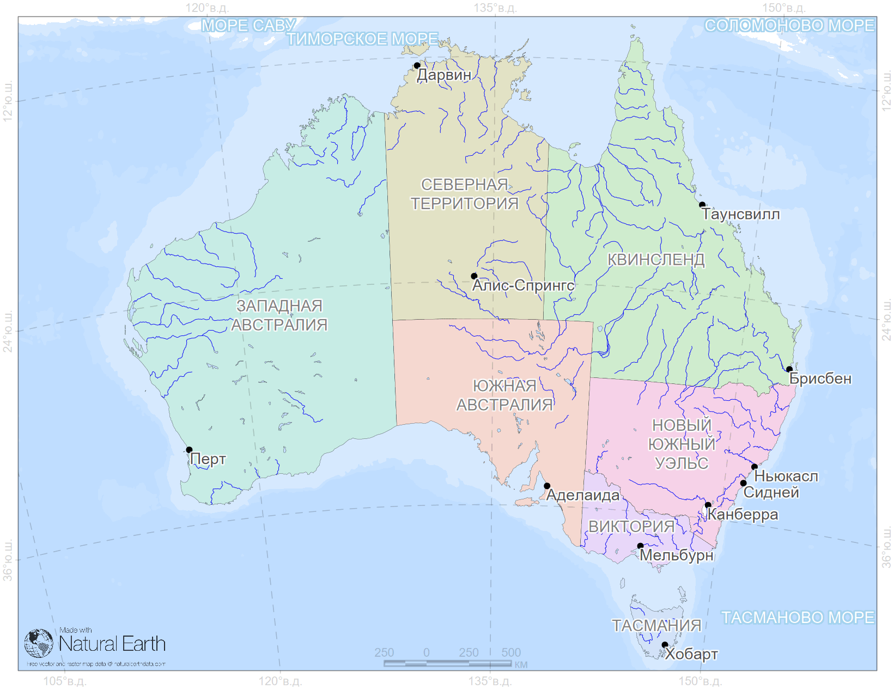
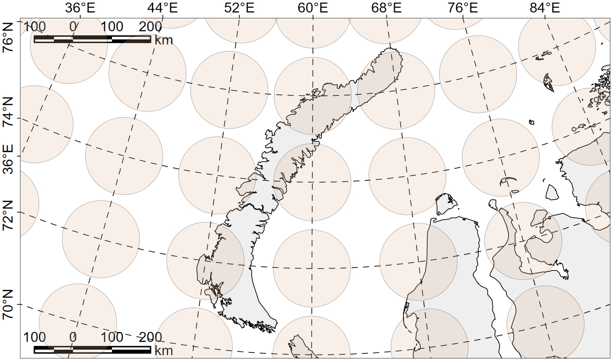
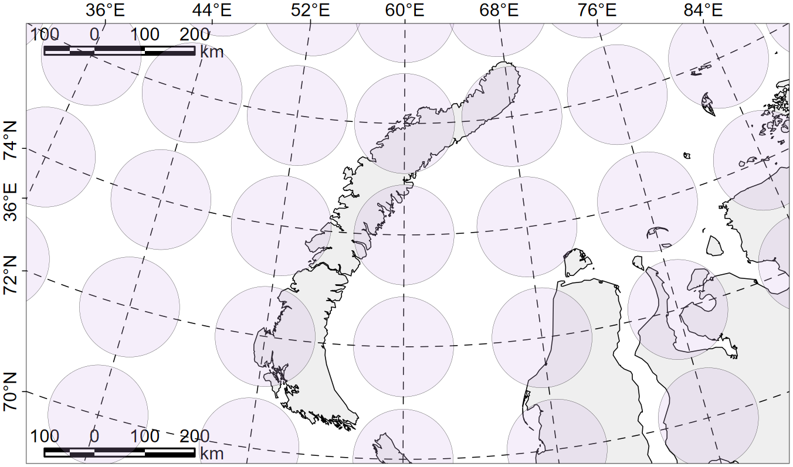
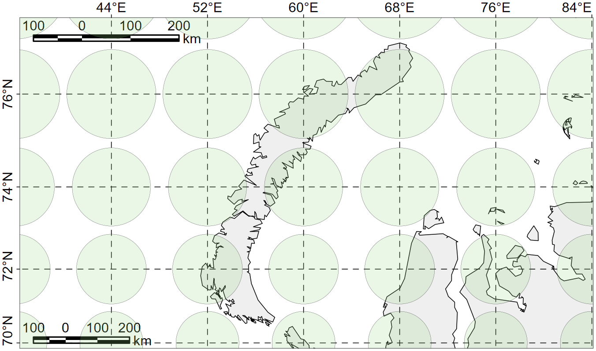
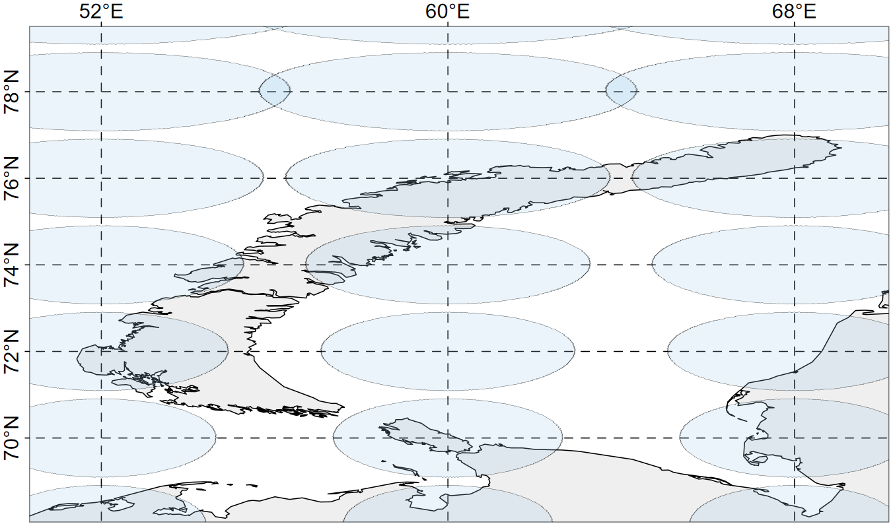
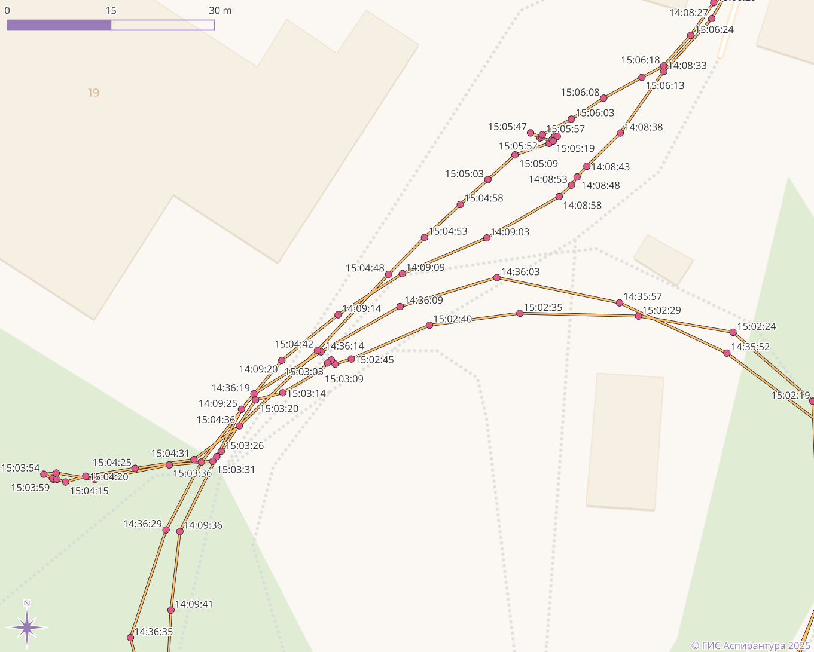
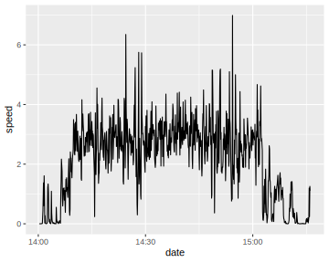

layout: true .toc.banner[ .shorttitle[ [ГИС аспирантура](#dates) [⌂](https://nplatonov.github.io/sevinGIS/) ] ] --- name: home class: metadata customtitle middle left giphy .toc.sidebar.left-column[ .outline[ ## [<svg aria-hidden="true" role="img" viewBox="0 0 576 512" style="height:1em;width:1.12em;vertical-align:-0.125em;margin-left:auto;margin-right:auto;font-size:inherit;fill:currentColor;overflow:visible;position:relative;"><path d="M96 32C60.7 32 32 60.7 32 96V384H96V96l384 0V384h64V96c0-35.3-28.7-64-64-64H96zM224 384v32H32c-17.7 0-32 14.3-32 32s14.3 32 32 32H544c17.7 0 32-14.3 32-32s-14.3-32-32-32H416V384c0-17.7-14.3-32-32-32H256c-17.7 0-32 14.3-32 32z"/></svg> Занятия ](#notice) ## [<svg aria-hidden="true" role="img" viewBox="0 0 640 512" style="height:1em;width:1.25em;vertical-align:-0.125em;margin-left:auto;margin-right:auto;font-size:inherit;fill:currentColor;overflow:visible;position:relative;"><path d="M96 128a128 128 0 1 1 256 0A128 128 0 1 1 96 128zM0 482.3C0 383.8 79.8 304 178.3 304h91.4C368.2 304 448 383.8 448 482.3c0 16.4-13.3 29.7-29.7 29.7H29.7C13.3 512 0 498.7 0 482.3zM625 177L497 305c-9.4 9.4-24.6 9.4-33.9 0l-64-64c-9.4-9.4-9.4-24.6 0-33.9s24.6-9.4 33.9 0l47 47L591 143c9.4-9.4 24.6-9.4 33.9 0s9.4 24.6 0 33.9z"/></svg> Отчётность](#attendance) ## [<svg aria-hidden="true" role="img" viewBox="0 0 576 512" style="height:1em;width:1.12em;vertical-align:-0.125em;margin-left:auto;margin-right:auto;font-size:inherit;fill:currentColor;overflow:visible;position:relative;"><path d="M575.8 255.5c0 18-15 32.1-32 32.1h-32l.7 160.2c.2 35.5-28.5 64.3-64 64.3H128.1c-35.3 0-64-28.7-64-64V287.6H32c-18 0-32-14-32-32.1c0-9 3-17 10-24L266.4 8c7-7 15-8 22-8s15 2 21 7L564.8 231.5c8 7 12 15 11 24zM352 224a64 64 0 1 0 -128 0 64 64 0 1 0 128 0zm-96 96c-44.2 0-80 35.8-80 80c0 8.8 7.2 16 16 16H384c8.8 0 16-7.2 16-16c0-44.2-35.8-80-80-80H256z"/></svg> Домашние задания](#homework) ## [<svg aria-hidden="true" role="img" viewBox="0 0 576 512" style="height:1em;width:1.12em;vertical-align:-0.125em;margin-left:auto;margin-right:auto;font-size:inherit;fill:currentColor;overflow:visible;position:relative;"><path d="M384 480h48c11.4 0 21.9-6 27.6-15.9l112-192c5.8-9.9 5.8-22.1 .1-32.1S555.5 224 544 224H144c-11.4 0-21.9 6-27.6 15.9L48 357.1V96c0-8.8 7.2-16 16-16H181.5c4.2 0 8.3 1.7 11.3 4.7l26.5 26.5c21 21 49.5 32.8 79.2 32.8H416c8.8 0 16 7.2 16 16v32h48V160c0-35.3-28.7-64-64-64H298.5c-17 0-33.3-6.7-45.3-18.7L226.7 50.7c-12-12-28.3-18.7-45.3-18.7H64C28.7 32 0 60.7 0 96V416c0 35.3 28.7 64 64 64H87.7 384z"/></svg> Данные для работы](#H24677) ## [<svg aria-hidden="true" role="img" viewBox="0 0 640 512" style="height:1em;width:1.25em;vertical-align:-0.125em;margin-left:auto;margin-right:auto;font-size:inherit;fill:currentColor;overflow:visible;position:relative;"><path d="M144 0a80 80 0 1 1 0 160A80 80 0 1 1 144 0zM512 0a80 80 0 1 1 0 160A80 80 0 1 1 512 0zM0 298.7C0 239.8 47.8 192 106.7 192h42.7c15.9 0 31 3.5 44.6 9.7c-1.3 7.2-1.9 14.7-1.9 22.3c0 38.2 16.8 72.5 43.3 96c-.2 0-.4 0-.7 0H21.3C9.6 320 0 310.4 0 298.7zM405.3 320c-.2 0-.4 0-.7 0c26.6-23.5 43.3-57.8 43.3-96c0-7.6-.7-15-1.9-22.3c13.6-6.3 28.7-9.7 44.6-9.7h42.7C592.2 192 640 239.8 640 298.7c0 11.8-9.6 21.3-21.3 21.3H405.3zM224 224a96 96 0 1 1 192 0 96 96 0 1 1 -192 0zM128 485.3C128 411.7 187.7 352 261.3 352H378.7C452.3 352 512 411.7 512 485.3c0 14.7-11.9 26.7-26.7 26.7H154.7c-14.7 0-26.7-11.9-26.7-26.7z"/></svg> Обучающиеся](#students) ] ] .toc.mainbar.right-column.scrollable[ .authors[ .author[Никита Платонов] .institute[с.н.с. ИПЭЭ РАН] ] .title[ ГИС технологии в биологических исследованиях ] .subtitle[ Календарь занятий и тематический план курса ] .what[ ] .where[ ] .when[ 10 апреля 2025 г. ] ] --- name: notice .toc.sidebar.left-column[ .outline[ ## [<svg aria-hidden="true" role="img" viewBox="0 0 576 512" style="height:1em;width:1.12em;vertical-align:-0.125em;margin-left:auto;margin-right:auto;font-size:inherit;fill:currentColor;overflow:visible;position:relative;"><path d="M96 32C60.7 32 32 60.7 32 96V384H96V96l384 0V384h64V96c0-35.3-28.7-64-64-64H96zM224 384v32H32c-17.7 0-32 14.3-32 32s14.3 32 32 32H544c17.7 0 32-14.3 32-32s-14.3-32-32-32H416V384c0-17.7-14.3-32-32-32H256c-17.7 0-32 14.3-32 32z"/></svg> Занятия ](#notice).fg[] ### [<svg aria-hidden="true" role="img" viewBox="0 0 512 512" style="height:1em;width:1em;vertical-align:-0.125em;margin-left:auto;margin-right:auto;font-size:inherit;fill:currentColor;overflow:visible;position:relative;"><path d="M480 32c0-12.9-7.8-24.6-19.8-29.6s-25.7-2.2-34.9 6.9L381.7 53c-48 48-113.1 75-181 75H192 160 64c-35.3 0-64 28.7-64 64v96c0 35.3 28.7 64 64 64l0 128c0 17.7 14.3 32 32 32h64c17.7 0 32-14.3 32-32V352l8.7 0c67.9 0 133 27 181 75l43.6 43.6c9.2 9.2 22.9 11.9 34.9 6.9s19.8-16.6 19.8-29.6V300.4c18.6-8.8 32-32.5 32-60.4s-13.4-51.6-32-60.4V32zm-64 76.7V240 371.3C357.2 317.8 280.5 288 200.7 288H192V192h8.7c79.8 0 156.5-29.8 215.3-83.3z"/></svg> Объявления](#notice).fg[].bg[] ### [<svg aria-hidden="true" role="img" viewBox="0 0 448 512" style="height:1em;width:0.88em;vertical-align:-0.125em;margin-left:auto;margin-right:auto;font-size:inherit;fill:currentColor;overflow:visible;position:relative;"><path d="M152 24c0-13.3-10.7-24-24-24s-24 10.7-24 24V64H64C28.7 64 0 92.7 0 128v16 48V448c0 35.3 28.7 64 64 64H384c35.3 0 64-28.7 64-64V192 144 128c0-35.3-28.7-64-64-64H344V24c0-13.3-10.7-24-24-24s-24 10.7-24 24V64H152V24zM48 192H400V448c0 8.8-7.2 16-16 16H64c-8.8 0-16-7.2-16-16V192z"/></svg> По датам](#dates) ### [<svg aria-hidden="true" role="img" viewBox="0 0 448 512" style="height:1em;width:0.88em;vertical-align:-0.125em;margin-left:auto;margin-right:auto;font-size:inherit;fill:currentColor;overflow:visible;position:relative;"><path d="M96 151.4V360.6c9.7 5.6 17.8 13.7 23.4 23.4H328.6c0-.1 .1-.2 .1-.3l-4.5-7.9-32-56 0 0c-1.4 .1-2.8 .1-4.2 .1c-35.3 0-64-28.7-64-64s28.7-64 64-64c1.4 0 2.8 0 4.2 .1l0 0 32-56 4.5-7.9-.1-.3H119.4c-5.6 9.7-13.7 17.8-23.4 23.4zM384.3 352c35.2 .2 63.7 28.7 63.7 64c0 35.3-28.7 64-64 64c-23.7 0-44.4-12.9-55.4-32H119.4c-11.1 19.1-31.7 32-55.4 32c-35.3 0-64-28.7-64-64c0-23.7 12.9-44.4 32-55.4V151.4C12.9 140.4 0 119.7 0 96C0 60.7 28.7 32 64 32c23.7 0 44.4 12.9 55.4 32H328.6c11.1-19.1 31.7-32 55.4-32c35.3 0 64 28.7 64 64c0 35.3-28.5 63.8-63.7 64l-4.5 7.9-32 56-2.3 4c4.2 8.5 6.5 18 6.5 28.1s-2.3 19.6-6.5 28.1l2.3 4 32 56 4.5 7.9z"/></svg> По темам](#theme) ## [<svg aria-hidden="true" role="img" viewBox="0 0 640 512" style="height:1em;width:1.25em;vertical-align:-0.125em;margin-left:auto;margin-right:auto;font-size:inherit;fill:currentColor;overflow:visible;position:relative;"><path d="M96 128a128 128 0 1 1 256 0A128 128 0 1 1 96 128zM0 482.3C0 383.8 79.8 304 178.3 304h91.4C368.2 304 448 383.8 448 482.3c0 16.4-13.3 29.7-29.7 29.7H29.7C13.3 512 0 498.7 0 482.3zM625 177L497 305c-9.4 9.4-24.6 9.4-33.9 0l-64-64c-9.4-9.4-9.4-24.6 0-33.9s24.6-9.4 33.9 0l47 47L591 143c9.4-9.4 24.6-9.4 33.9 0s9.4 24.6 0 33.9z"/></svg> Отчётность](#attendance) ## [<svg aria-hidden="true" role="img" viewBox="0 0 576 512" style="height:1em;width:1.12em;vertical-align:-0.125em;margin-left:auto;margin-right:auto;font-size:inherit;fill:currentColor;overflow:visible;position:relative;"><path d="M575.8 255.5c0 18-15 32.1-32 32.1h-32l.7 160.2c.2 35.5-28.5 64.3-64 64.3H128.1c-35.3 0-64-28.7-64-64V287.6H32c-18 0-32-14-32-32.1c0-9 3-17 10-24L266.4 8c7-7 15-8 22-8s15 2 21 7L564.8 231.5c8 7 12 15 11 24zM352 224a64 64 0 1 0 -128 0 64 64 0 1 0 128 0zm-96 96c-44.2 0-80 35.8-80 80c0 8.8 7.2 16 16 16H384c8.8 0 16-7.2 16-16c0-44.2-35.8-80-80-80H256z"/></svg> Домашние задания](#homework) ## [<svg aria-hidden="true" role="img" viewBox="0 0 576 512" style="height:1em;width:1.12em;vertical-align:-0.125em;margin-left:auto;margin-right:auto;font-size:inherit;fill:currentColor;overflow:visible;position:relative;"><path d="M384 480h48c11.4 0 21.9-6 27.6-15.9l112-192c5.8-9.9 5.8-22.1 .1-32.1S555.5 224 544 224H144c-11.4 0-21.9 6-27.6 15.9L48 357.1V96c0-8.8 7.2-16 16-16H181.5c4.2 0 8.3 1.7 11.3 4.7l26.5 26.5c21 21 49.5 32.8 79.2 32.8H416c8.8 0 16 7.2 16 16v32h48V160c0-35.3-28.7-64-64-64H298.5c-17 0-33.3-6.7-45.3-18.7L226.7 50.7c-12-12-28.3-18.7-45.3-18.7H64C28.7 32 0 60.7 0 96V416c0 35.3 28.7 64 64 64H87.7 384z"/></svg> Данные для работы](#H24677) ## [<svg aria-hidden="true" role="img" viewBox="0 0 640 512" style="height:1em;width:1.25em;vertical-align:-0.125em;margin-left:auto;margin-right:auto;font-size:inherit;fill:currentColor;overflow:visible;position:relative;"><path d="M144 0a80 80 0 1 1 0 160A80 80 0 1 1 144 0zM512 0a80 80 0 1 1 0 160A80 80 0 1 1 512 0zM0 298.7C0 239.8 47.8 192 106.7 192h42.7c15.9 0 31 3.5 44.6 9.7c-1.3 7.2-1.9 14.7-1.9 22.3c0 38.2 16.8 72.5 43.3 96c-.2 0-.4 0-.7 0H21.3C9.6 320 0 310.4 0 298.7zM405.3 320c-.2 0-.4 0-.7 0c26.6-23.5 43.3-57.8 43.3-96c0-7.6-.7-15-1.9-22.3c13.6-6.3 28.7-9.7 44.6-9.7h42.7C592.2 192 640 239.8 640 298.7c0 11.8-9.6 21.3-21.3 21.3H405.3zM224 224a96 96 0 1 1 192 0 96 96 0 1 1 -192 0zM128 485.3C128 411.7 187.7 352 261.3 352H378.7C452.3 352 512 411.7 512 485.3c0 14.7-11.9 26.7-26.7 26.7H154.7c-14.7 0-26.7-11.9-26.7-26.7z"/></svg> Обучающиеся](#students) ] ] .toc.mainbar.right-column.scrollable[ .header.broad[ Объявления ] .fixprecode[ .note[ + Занятия в четверг после обеда. Домашние задания требуют проверки и, нередко, уточнений. На это нужно время. Поэтому старайтесь их сдавать в среду, не позднее первой половины дня. ] .note[ + Кто не присутствовал ни в классе, ни в [Zoom](https://us02web.zoom.us/j/85975308680?pwd=3rMXaFjPZkgyiwD4ABj23iuX8dTTvN.1), сообщайте преподавателю, какое занятие просмотрели в записи. ] .pulling[ .remarkonly.zzzpull-left-40[ .note[ + Предварительно, окончание курса 10 апреля 2024 г. Актуализирование информации в [Телеграмме](https://t.me/+4UbsiOoozKs0Nzgy). ] ] .remarkonly.zzzpull-right-60[ ] ] ] ] --- name: dates .toc.sidebar.left-column[ .outline[ ## [<svg aria-hidden="true" role="img" viewBox="0 0 576 512" style="height:1em;width:1.12em;vertical-align:-0.125em;margin-left:auto;margin-right:auto;font-size:inherit;fill:currentColor;overflow:visible;position:relative;"><path d="M96 32C60.7 32 32 60.7 32 96V384H96V96l384 0V384h64V96c0-35.3-28.7-64-64-64H96zM224 384v32H32c-17.7 0-32 14.3-32 32s14.3 32 32 32H544c17.7 0 32-14.3 32-32s-14.3-32-32-32H416V384c0-17.7-14.3-32-32-32H256c-17.7 0-32 14.3-32 32z"/></svg> Занятия ](#notice).fg[] ### [<svg aria-hidden="true" role="img" viewBox="0 0 512 512" style="height:1em;width:1em;vertical-align:-0.125em;margin-left:auto;margin-right:auto;font-size:inherit;fill:currentColor;overflow:visible;position:relative;"><path d="M480 32c0-12.9-7.8-24.6-19.8-29.6s-25.7-2.2-34.9 6.9L381.7 53c-48 48-113.1 75-181 75H192 160 64c-35.3 0-64 28.7-64 64v96c0 35.3 28.7 64 64 64l0 128c0 17.7 14.3 32 32 32h64c17.7 0 32-14.3 32-32V352l8.7 0c67.9 0 133 27 181 75l43.6 43.6c9.2 9.2 22.9 11.9 34.9 6.9s19.8-16.6 19.8-29.6V300.4c18.6-8.8 32-32.5 32-60.4s-13.4-51.6-32-60.4V32zm-64 76.7V240 371.3C357.2 317.8 280.5 288 200.7 288H192V192h8.7c79.8 0 156.5-29.8 215.3-83.3z"/></svg> Объявления](#notice) ### [<svg aria-hidden="true" role="img" viewBox="0 0 448 512" style="height:1em;width:0.88em;vertical-align:-0.125em;margin-left:auto;margin-right:auto;font-size:inherit;fill:currentColor;overflow:visible;position:relative;"><path d="M152 24c0-13.3-10.7-24-24-24s-24 10.7-24 24V64H64C28.7 64 0 92.7 0 128v16 48V448c0 35.3 28.7 64 64 64H384c35.3 0 64-28.7 64-64V192 144 128c0-35.3-28.7-64-64-64H344V24c0-13.3-10.7-24-24-24s-24 10.7-24 24V64H152V24zM48 192H400V448c0 8.8-7.2 16-16 16H64c-8.8 0-16-7.2-16-16V192z"/></svg> По датам](#dates).fg[].bg[] ### [<svg aria-hidden="true" role="img" viewBox="0 0 448 512" style="height:1em;width:0.88em;vertical-align:-0.125em;margin-left:auto;margin-right:auto;font-size:inherit;fill:currentColor;overflow:visible;position:relative;"><path d="M96 151.4V360.6c9.7 5.6 17.8 13.7 23.4 23.4H328.6c0-.1 .1-.2 .1-.3l-4.5-7.9-32-56 0 0c-1.4 .1-2.8 .1-4.2 .1c-35.3 0-64-28.7-64-64s28.7-64 64-64c1.4 0 2.8 0 4.2 .1l0 0 32-56 4.5-7.9-.1-.3H119.4c-5.6 9.7-13.7 17.8-23.4 23.4zM384.3 352c35.2 .2 63.7 28.7 63.7 64c0 35.3-28.7 64-64 64c-23.7 0-44.4-12.9-55.4-32H119.4c-11.1 19.1-31.7 32-55.4 32c-35.3 0-64-28.7-64-64c0-23.7 12.9-44.4 32-55.4V151.4C12.9 140.4 0 119.7 0 96C0 60.7 28.7 32 64 32c23.7 0 44.4 12.9 55.4 32H328.6c11.1-19.1 31.7-32 55.4-32c35.3 0 64 28.7 64 64c0 35.3-28.5 63.8-63.7 64l-4.5 7.9-32 56-2.3 4c4.2 8.5 6.5 18 6.5 28.1s-2.3 19.6-6.5 28.1l2.3 4 32 56 4.5 7.9z"/></svg> По темам](#theme) ## [<svg aria-hidden="true" role="img" viewBox="0 0 640 512" style="height:1em;width:1.25em;vertical-align:-0.125em;margin-left:auto;margin-right:auto;font-size:inherit;fill:currentColor;overflow:visible;position:relative;"><path d="M96 128a128 128 0 1 1 256 0A128 128 0 1 1 96 128zM0 482.3C0 383.8 79.8 304 178.3 304h91.4C368.2 304 448 383.8 448 482.3c0 16.4-13.3 29.7-29.7 29.7H29.7C13.3 512 0 498.7 0 482.3zM625 177L497 305c-9.4 9.4-24.6 9.4-33.9 0l-64-64c-9.4-9.4-9.4-24.6 0-33.9s24.6-9.4 33.9 0l47 47L591 143c9.4-9.4 24.6-9.4 33.9 0s9.4 24.6 0 33.9z"/></svg> Отчётность](#attendance) ## [<svg aria-hidden="true" role="img" viewBox="0 0 576 512" style="height:1em;width:1.12em;vertical-align:-0.125em;margin-left:auto;margin-right:auto;font-size:inherit;fill:currentColor;overflow:visible;position:relative;"><path d="M575.8 255.5c0 18-15 32.1-32 32.1h-32l.7 160.2c.2 35.5-28.5 64.3-64 64.3H128.1c-35.3 0-64-28.7-64-64V287.6H32c-18 0-32-14-32-32.1c0-9 3-17 10-24L266.4 8c7-7 15-8 22-8s15 2 21 7L564.8 231.5c8 7 12 15 11 24zM352 224a64 64 0 1 0 -128 0 64 64 0 1 0 128 0zm-96 96c-44.2 0-80 35.8-80 80c0 8.8 7.2 16 16 16H384c8.8 0 16-7.2 16-16c0-44.2-35.8-80-80-80H256z"/></svg> Домашние задания](#homework) ## [<svg aria-hidden="true" role="img" viewBox="0 0 576 512" style="height:1em;width:1.12em;vertical-align:-0.125em;margin-left:auto;margin-right:auto;font-size:inherit;fill:currentColor;overflow:visible;position:relative;"><path d="M384 480h48c11.4 0 21.9-6 27.6-15.9l112-192c5.8-9.9 5.8-22.1 .1-32.1S555.5 224 544 224H144c-11.4 0-21.9 6-27.6 15.9L48 357.1V96c0-8.8 7.2-16 16-16H181.5c4.2 0 8.3 1.7 11.3 4.7l26.5 26.5c21 21 49.5 32.8 79.2 32.8H416c8.8 0 16 7.2 16 16v32h48V160c0-35.3-28.7-64-64-64H298.5c-17 0-33.3-6.7-45.3-18.7L226.7 50.7c-12-12-28.3-18.7-45.3-18.7H64C28.7 32 0 60.7 0 96V416c0 35.3 28.7 64 64 64H87.7 384z"/></svg> Данные для работы](#H24677) ## [<svg aria-hidden="true" role="img" viewBox="0 0 640 512" style="height:1em;width:1.25em;vertical-align:-0.125em;margin-left:auto;margin-right:auto;font-size:inherit;fill:currentColor;overflow:visible;position:relative;"><path d="M144 0a80 80 0 1 1 0 160A80 80 0 1 1 144 0zM512 0a80 80 0 1 1 0 160A80 80 0 1 1 512 0zM0 298.7C0 239.8 47.8 192 106.7 192h42.7c15.9 0 31 3.5 44.6 9.7c-1.3 7.2-1.9 14.7-1.9 22.3c0 38.2 16.8 72.5 43.3 96c-.2 0-.4 0-.7 0H21.3C9.6 320 0 310.4 0 298.7zM405.3 320c-.2 0-.4 0-.7 0c26.6-23.5 43.3-57.8 43.3-96c0-7.6-.7-15-1.9-22.3c13.6-6.3 28.7-9.7 44.6-9.7h42.7C592.2 192 640 239.8 640 298.7c0 11.8-9.6 21.3-21.3 21.3H405.3zM224 224a96 96 0 1 1 192 0 96 96 0 1 1 -192 0zM128 485.3C128 411.7 187.7 352 261.3 352H378.7C452.3 352 512 411.7 512 485.3c0 14.7-11.9 26.7-26.7 26.7H154.7c-14.7 0-26.7-11.9-26.7-26.7z"/></svg> Обучающиеся](#students) ] ] .toc.mainbar.right-column.scrollable[ .header.h3.broad[ <svg aria-hidden="true" role="img" viewBox="0 0 448 512" style="height:1em;width:0.88em;vertical-align:-0.125em;margin-left:auto;margin-right:auto;font-size:inherit;fill:currentColor;overflow:visible;position:relative;"><path d="M152 24c0-13.3-10.7-24-24-24s-24 10.7-24 24V64H64C28.7 64 0 92.7 0 128v16 48V448c0 35.3 28.7 64 64 64H384c35.3 0 64-28.7 64-64V192 144 128c0-35.3-28.7-64-64-64H344V24c0-13.3-10.7-24-24-24s-24 10.7-24 24V64H152V24zM48 192H400V448c0 8.8-7.2 16-16 16H64c-8.8 0-16-7.2-16-16V192z"/></svg> По датам .parent[.grand[Занятия]] ] .fixprecode[ .double[ .font80[ <span class="largest">05 февраля</span> | | | |:--|:-----------------------| |01 |[Общие вопросы, введение](lesson01~b57.html)| <span class="largest">06 февраля</span> [<svg aria-hidden="true" role="img" viewBox="0 0 384 512" style="height:1em;width:0.75em;vertical-align:-0.125em;margin-left:auto;margin-right:auto;font-size:inherit;fill:currentColor;overflow:visible;position:relative;"><path d="M320 464c8.8 0 16-7.2 16-16V160H256c-17.7 0-32-14.3-32-32V48H64c-8.8 0-16 7.2-16 16V448c0 8.8 7.2 16 16 16H320zM0 64C0 28.7 28.7 0 64 0H229.5c17 0 33.3 6.7 45.3 18.7l90.5 90.5c12 12 18.7 28.3 18.7 45.3V448c0 35.3-28.7 64-64 64H64c-35.3 0-64-28.7-64-64V64zM80 288c0-17.7 14.3-32 32-32h96c17.7 0 32 14.3 32 32v16l44.9-29.9c2-1.3 4.4-2.1 6.8-2.1c6.8 0 12.3 5.5 12.3 12.3V387.7c0 6.8-5.5 12.3-12.3 12.3c-2.4 0-4.8-.7-6.8-2.1L240 368v16c0 17.7-14.3 32-32 32H112c-17.7 0-32-14.3-32-32V288z"/></svg>]( https://us02web.zoom.us/rec/share/1uCpL4TN33Itgo45FnV4z1dTTAxa1geCSlkluCE8b3kI87gIpcywxLOGNhxpg3wn.YXK0oO78E2XJMfrv)<span style="opacity: 0;"> e0qKj&g5</span> | | | |:--|:-----------------------| |01 |[Общие вопросы, введение](lesson01~b57.html)| |02 |[Начало работы с QGIS](lesson02~b57.html)| <span class="largest">13 февраля</span> [<svg aria-hidden="true" role="img" viewBox="0 0 384 512" style="height:1em;width:0.75em;vertical-align:-0.125em;margin-left:auto;margin-right:auto;font-size:inherit;fill:currentColor;overflow:visible;position:relative;"><path d="M320 464c8.8 0 16-7.2 16-16V160H256c-17.7 0-32-14.3-32-32V48H64c-8.8 0-16 7.2-16 16V448c0 8.8 7.2 16 16 16H320zM0 64C0 28.7 28.7 0 64 0H229.5c17 0 33.3 6.7 45.3 18.7l90.5 90.5c12 12 18.7 28.3 18.7 45.3V448c0 35.3-28.7 64-64 64H64c-35.3 0-64-28.7-64-64V64zM80 288c0-17.7 14.3-32 32-32h96c17.7 0 32 14.3 32 32v16l44.9-29.9c2-1.3 4.4-2.1 6.8-2.1c6.8 0 12.3 5.5 12.3 12.3V387.7c0 6.8-5.5 12.3-12.3 12.3c-2.4 0-4.8-.7-6.8-2.1L240 368v16c0 17.7-14.3 32-32 32H112c-17.7 0-32-14.3-32-32V288z"/></svg>]( https://us02web.zoom.us/rec/share/LvYkewc-_VRiA7Mudn8Ef_Z891kGodnpxMk2a2Q4e1Xr06EDBnyy7O8QZITkDWnn.zust8BYslSQLIxwt)<span style="opacity: 0;"> +wU2dWw=</span> | | | |:--|:-----------------------------------------| |02 |[Начало работы с QGIS](lesson02~b57.html) | |03 |[Основы работы с пространственными данными](lesson03~b57.html)| <span class="largest">20 февраля</span> [<svg aria-hidden="true" role="img" viewBox="0 0 384 512" style="height:1em;width:0.75em;vertical-align:-0.125em;margin-left:auto;margin-right:auto;font-size:inherit;fill:currentColor;overflow:visible;position:relative;"><path d="M320 464c8.8 0 16-7.2 16-16V160H256c-17.7 0-32-14.3-32-32V48H64c-8.8 0-16 7.2-16 16V448c0 8.8 7.2 16 16 16H320zM0 64C0 28.7 28.7 0 64 0H229.5c17 0 33.3 6.7 45.3 18.7l90.5 90.5c12 12 18.7 28.3 18.7 45.3V448c0 35.3-28.7 64-64 64H64c-35.3 0-64-28.7-64-64V64zM80 288c0-17.7 14.3-32 32-32h96c17.7 0 32 14.3 32 32v16l44.9-29.9c2-1.3 4.4-2.1 6.8-2.1c6.8 0 12.3 5.5 12.3 12.3V387.7c0 6.8-5.5 12.3-12.3 12.3c-2.4 0-4.8-.7-6.8-2.1L240 368v16c0 17.7-14.3 32-32 32H112c-17.7 0-32-14.3-32-32V288z"/></svg>]( https://us02web.zoom.us/rec/share/h2StNDvUELo27H_oHJ3at-__c0y38b9tzLoaw-c4g2iI4VsTkZcDCyKcslUPWBY.BiYboGG-ox46Cv81)<span style="opacity: 0;"> zp6.*wW4</span> | | | |:--|:----------------------------------------------------| |04 |[Пространственные данные: получение и обработка](lesson04~b57.html)| |05 |[Возможности R для работы с пространственными данными](lesson05~b57.html)| <span class="largest">27 февраля</span> [<svg aria-hidden="true" role="img" viewBox="0 0 384 512" style="height:1em;width:0.75em;vertical-align:-0.125em;margin-left:auto;margin-right:auto;font-size:inherit;fill:currentColor;overflow:visible;position:relative;"><path d="M320 464c8.8 0 16-7.2 16-16V160H256c-17.7 0-32-14.3-32-32V48H64c-8.8 0-16 7.2-16 16V448c0 8.8 7.2 16 16 16H320zM0 64C0 28.7 28.7 0 64 0H229.5c17 0 33.3 6.7 45.3 18.7l90.5 90.5c12 12 18.7 28.3 18.7 45.3V448c0 35.3-28.7 64-64 64H64c-35.3 0-64-28.7-64-64V64zM80 288c0-17.7 14.3-32 32-32h96c17.7 0 32 14.3 32 32v16l44.9-29.9c2-1.3 4.4-2.1 6.8-2.1c6.8 0 12.3 5.5 12.3 12.3V387.7c0 6.8-5.5 12.3-12.3 12.3c-2.4 0-4.8-.7-6.8-2.1L240 368v16c0 17.7-14.3 32-32 32H112c-17.7 0-32-14.3-32-32V288z"/></svg>]( https://us02web.zoom.us/rec/share/gvWevxZ0YnLjpV6ZM4ad0eq97VepnQpjImCQEhOpeEKUVbw0rXfnJizGS9_7Ts2A.qTGexJoC-AU2OXrM)<span style="opacity: 0;"> 1=GMJ$ph</span> | | | |:--|:----------------------------------------------------| |05 |[Возможности R для работы с пространственными данными](lesson05~b57.html)| <span class="largest">06 марта</span> [<svg aria-hidden="true" role="img" viewBox="0 0 384 512" style="height:1em;width:0.75em;vertical-align:-0.125em;margin-left:auto;margin-right:auto;font-size:inherit;fill:currentColor;overflow:visible;position:relative;"><path d="M320 464c8.8 0 16-7.2 16-16V160H256c-17.7 0-32-14.3-32-32V48H64c-8.8 0-16 7.2-16 16V448c0 8.8 7.2 16 16 16H320zM0 64C0 28.7 28.7 0 64 0H229.5c17 0 33.3 6.7 45.3 18.7l90.5 90.5c12 12 18.7 28.3 18.7 45.3V448c0 35.3-28.7 64-64 64H64c-35.3 0-64-28.7-64-64V64zM80 288c0-17.7 14.3-32 32-32h96c17.7 0 32 14.3 32 32v16l44.9-29.9c2-1.3 4.4-2.1 6.8-2.1c6.8 0 12.3 5.5 12.3 12.3V387.7c0 6.8-5.5 12.3-12.3 12.3c-2.4 0-4.8-.7-6.8-2.1L240 368v16c0 17.7-14.3 32-32 32H112c-17.7 0-32-14.3-32-32V288z"/></svg>]( https://us02web.zoom.us/rec/share/B6yA9FZbTka3p00fqRDHIAsv8XKACeZL8yepjrYaludDG8uBDnovMqaE4MZNOnIb.ETuEjG18wL2zZeCO)<span style="opacity: 0;"> 9w$h@8eX</span> | | | |:--|:----------------------------------------------------| |05 |[Возможности R для работы с пространственными данными](lesson05~b57.html)| <span class="largest">13 марта</span> [<svg aria-hidden="true" role="img" viewBox="0 0 384 512" style="height:1em;width:0.75em;vertical-align:-0.125em;margin-left:auto;margin-right:auto;font-size:inherit;fill:currentColor;overflow:visible;position:relative;"><path d="M320 464c8.8 0 16-7.2 16-16V160H256c-17.7 0-32-14.3-32-32V48H64c-8.8 0-16 7.2-16 16V448c0 8.8 7.2 16 16 16H320zM0 64C0 28.7 28.7 0 64 0H229.5c17 0 33.3 6.7 45.3 18.7l90.5 90.5c12 12 18.7 28.3 18.7 45.3V448c0 35.3-28.7 64-64 64H64c-35.3 0-64-28.7-64-64V64zM80 288c0-17.7 14.3-32 32-32h96c17.7 0 32 14.3 32 32v16l44.9-29.9c2-1.3 4.4-2.1 6.8-2.1c6.8 0 12.3 5.5 12.3 12.3V387.7c0 6.8-5.5 12.3-12.3 12.3c-2.4 0-4.8-.7-6.8-2.1L240 368v16c0 17.7-14.3 32-32 32H112c-17.7 0-32-14.3-32-32V288z"/></svg>]( https://us02web.zoom.us/rec/share/w79Pa2iTF5yshsFrQ1U8B0K7MhWQTwAgo5u48VcnSqJtPx058fuwvmlvRXfWgO6c.dGfmGGD_26Sp4dPT)<span style="opacity: 0;"> 8*Z7ywpg</span> | | | |:--|:----------------------------------------------------| |05 |[Возможности R для работы с пространственными данными](lesson05~b57.html)| |06 |[Пространственные данные: примеры и обработка](lesson06~b57.html)| <span class="largest">20 марта</span> [<svg aria-hidden="true" role="img" viewBox="0 0 384 512" style="height:1em;width:0.75em;vertical-align:-0.125em;margin-left:auto;margin-right:auto;font-size:inherit;fill:currentColor;overflow:visible;position:relative;"><path d="M320 464c8.8 0 16-7.2 16-16V160H256c-17.7 0-32-14.3-32-32V48H64c-8.8 0-16 7.2-16 16V448c0 8.8 7.2 16 16 16H320zM0 64C0 28.7 28.7 0 64 0H229.5c17 0 33.3 6.7 45.3 18.7l90.5 90.5c12 12 18.7 28.3 18.7 45.3V448c0 35.3-28.7 64-64 64H64c-35.3 0-64-28.7-64-64V64zM80 288c0-17.7 14.3-32 32-32h96c17.7 0 32 14.3 32 32v16l44.9-29.9c2-1.3 4.4-2.1 6.8-2.1c6.8 0 12.3 5.5 12.3 12.3V387.7c0 6.8-5.5 12.3-12.3 12.3c-2.4 0-4.8-.7-6.8-2.1L240 368v16c0 17.7-14.3 32-32 32H112c-17.7 0-32-14.3-32-32V288z"/></svg>]( https://us02web.zoom.us/rec/share/aXNJoei1s5Qayl8oxLMbmaDc_nsdM2Li9u1swWaNAAqtKQRwn2wKJFJfTX0lirCi.78XwvLO43IY1tZR6)<span style="opacity: 0;"> 0X8@VFb*</span> | | | |:--|:--------------------------------------------| |06 |[Пространственные данные: примеры и обработка](lesson06~b57.html)| |09 |[Решение задач в QGIS](lesson09~b57.html) | <span class="largest">27 марта</span> [<svg aria-hidden="true" role="img" viewBox="0 0 384 512" style="height:1em;width:0.75em;vertical-align:-0.125em;margin-left:auto;margin-right:auto;font-size:inherit;fill:currentColor;overflow:visible;position:relative;"><path d="M320 464c8.8 0 16-7.2 16-16V160H256c-17.7 0-32-14.3-32-32V48H64c-8.8 0-16 7.2-16 16V448c0 8.8 7.2 16 16 16H320zM0 64C0 28.7 28.7 0 64 0H229.5c17 0 33.3 6.7 45.3 18.7l90.5 90.5c12 12 18.7 28.3 18.7 45.3V448c0 35.3-28.7 64-64 64H64c-35.3 0-64-28.7-64-64V64zM80 288c0-17.7 14.3-32 32-32h96c17.7 0 32 14.3 32 32v16l44.9-29.9c2-1.3 4.4-2.1 6.8-2.1c6.8 0 12.3 5.5 12.3 12.3V387.7c0 6.8-5.5 12.3-12.3 12.3c-2.4 0-4.8-.7-6.8-2.1L240 368v16c0 17.7-14.3 32-32 32H112c-17.7 0-32-14.3-32-32V288z"/></svg>]( https://us02web.zoom.us/rec/share/5xpDyMN42VOJX9MEBYxtOf82F_3FuslHIf7n7E0fgRB2BYFszffhVMCuJsySI9Q.996mauIb0fotjdG_)<span style="opacity: 0;"> Y3q#aF4n</span> | | | |:--|:---------------------| |09 |[Решение задач в QGIS](lesson09~b57.html)| |08 |[Операции с геометрией](lesson08~b57.html)| <span class="largest">03 апреля</span> [<svg aria-hidden="true" role="img" viewBox="0 0 384 512" style="height:1em;width:0.75em;vertical-align:-0.125em;margin-left:auto;margin-right:auto;font-size:inherit;fill:currentColor;overflow:visible;position:relative;"><path d="M320 464c8.8 0 16-7.2 16-16V160H256c-17.7 0-32-14.3-32-32V48H64c-8.8 0-16 7.2-16 16V448c0 8.8 7.2 16 16 16H320zM0 64C0 28.7 28.7 0 64 0H229.5c17 0 33.3 6.7 45.3 18.7l90.5 90.5c12 12 18.7 28.3 18.7 45.3V448c0 35.3-28.7 64-64 64H64c-35.3 0-64-28.7-64-64V64zM80 288c0-17.7 14.3-32 32-32h96c17.7 0 32 14.3 32 32v16l44.9-29.9c2-1.3 4.4-2.1 6.8-2.1c6.8 0 12.3 5.5 12.3 12.3V387.7c0 6.8-5.5 12.3-12.3 12.3c-2.4 0-4.8-.7-6.8-2.1L240 368v16c0 17.7-14.3 32-32 32H112c-17.7 0-32-14.3-32-32V288z"/></svg>]( https://us02web.zoom.us/rec/share/_nXkAv-zOq1Y70sEITs6O0-0DGYVVvP3efl9Rc2URXOi2g5Ob84llw95k66QtPe5.j0Q_VKUxNs79ePI5)<span style="opacity: 0;"> q0yT$KAN</span> | | | |:--|:---------------------| |10 |[Моделирование ареалов](lesson10~b57.html)| <span class="largest">10 апреля</span> | | | |:--|:---------------------------------------| |10 |[Моделирование ареалов](lesson10~b57.html) [↩️](lesson10~b57.html#20)| |12 |[Обработка данных с геопозиционированием](lesson12~b57.html)| ] ] ] ] --- name: theme .toc.sidebar.left-column[ .outline[ ## [<svg aria-hidden="true" role="img" viewBox="0 0 576 512" style="height:1em;width:1.12em;vertical-align:-0.125em;margin-left:auto;margin-right:auto;font-size:inherit;fill:currentColor;overflow:visible;position:relative;"><path d="M96 32C60.7 32 32 60.7 32 96V384H96V96l384 0V384h64V96c0-35.3-28.7-64-64-64H96zM224 384v32H32c-17.7 0-32 14.3-32 32s14.3 32 32 32H544c17.7 0 32-14.3 32-32s-14.3-32-32-32H416V384c0-17.7-14.3-32-32-32H256c-17.7 0-32 14.3-32 32z"/></svg> Занятия ](#notice).fg[] ### [<svg aria-hidden="true" role="img" viewBox="0 0 512 512" style="height:1em;width:1em;vertical-align:-0.125em;margin-left:auto;margin-right:auto;font-size:inherit;fill:currentColor;overflow:visible;position:relative;"><path d="M480 32c0-12.9-7.8-24.6-19.8-29.6s-25.7-2.2-34.9 6.9L381.7 53c-48 48-113.1 75-181 75H192 160 64c-35.3 0-64 28.7-64 64v96c0 35.3 28.7 64 64 64l0 128c0 17.7 14.3 32 32 32h64c17.7 0 32-14.3 32-32V352l8.7 0c67.9 0 133 27 181 75l43.6 43.6c9.2 9.2 22.9 11.9 34.9 6.9s19.8-16.6 19.8-29.6V300.4c18.6-8.8 32-32.5 32-60.4s-13.4-51.6-32-60.4V32zm-64 76.7V240 371.3C357.2 317.8 280.5 288 200.7 288H192V192h8.7c79.8 0 156.5-29.8 215.3-83.3z"/></svg> Объявления](#notice) ### [<svg aria-hidden="true" role="img" viewBox="0 0 448 512" style="height:1em;width:0.88em;vertical-align:-0.125em;margin-left:auto;margin-right:auto;font-size:inherit;fill:currentColor;overflow:visible;position:relative;"><path d="M152 24c0-13.3-10.7-24-24-24s-24 10.7-24 24V64H64C28.7 64 0 92.7 0 128v16 48V448c0 35.3 28.7 64 64 64H384c35.3 0 64-28.7 64-64V192 144 128c0-35.3-28.7-64-64-64H344V24c0-13.3-10.7-24-24-24s-24 10.7-24 24V64H152V24zM48 192H400V448c0 8.8-7.2 16-16 16H64c-8.8 0-16-7.2-16-16V192z"/></svg> По датам](#dates) ### [<svg aria-hidden="true" role="img" viewBox="0 0 448 512" style="height:1em;width:0.88em;vertical-align:-0.125em;margin-left:auto;margin-right:auto;font-size:inherit;fill:currentColor;overflow:visible;position:relative;"><path d="M96 151.4V360.6c9.7 5.6 17.8 13.7 23.4 23.4H328.6c0-.1 .1-.2 .1-.3l-4.5-7.9-32-56 0 0c-1.4 .1-2.8 .1-4.2 .1c-35.3 0-64-28.7-64-64s28.7-64 64-64c1.4 0 2.8 0 4.2 .1l0 0 32-56 4.5-7.9-.1-.3H119.4c-5.6 9.7-13.7 17.8-23.4 23.4zM384.3 352c35.2 .2 63.7 28.7 63.7 64c0 35.3-28.7 64-64 64c-23.7 0-44.4-12.9-55.4-32H119.4c-11.1 19.1-31.7 32-55.4 32c-35.3 0-64-28.7-64-64c0-23.7 12.9-44.4 32-55.4V151.4C12.9 140.4 0 119.7 0 96C0 60.7 28.7 32 64 32c23.7 0 44.4 12.9 55.4 32H328.6c11.1-19.1 31.7-32 55.4-32c35.3 0 64 28.7 64 64c0 35.3-28.5 63.8-63.7 64l-4.5 7.9-32 56-2.3 4c4.2 8.5 6.5 18 6.5 28.1s-2.3 19.6-6.5 28.1l2.3 4 32 56 4.5 7.9z"/></svg> По темам](#theme).fg[].bg[] ## [<svg aria-hidden="true" role="img" viewBox="0 0 640 512" style="height:1em;width:1.25em;vertical-align:-0.125em;margin-left:auto;margin-right:auto;font-size:inherit;fill:currentColor;overflow:visible;position:relative;"><path d="M96 128a128 128 0 1 1 256 0A128 128 0 1 1 96 128zM0 482.3C0 383.8 79.8 304 178.3 304h91.4C368.2 304 448 383.8 448 482.3c0 16.4-13.3 29.7-29.7 29.7H29.7C13.3 512 0 498.7 0 482.3zM625 177L497 305c-9.4 9.4-24.6 9.4-33.9 0l-64-64c-9.4-9.4-9.4-24.6 0-33.9s24.6-9.4 33.9 0l47 47L591 143c9.4-9.4 24.6-9.4 33.9 0s9.4 24.6 0 33.9z"/></svg> Отчётность](#attendance) ## [<svg aria-hidden="true" role="img" viewBox="0 0 576 512" style="height:1em;width:1.12em;vertical-align:-0.125em;margin-left:auto;margin-right:auto;font-size:inherit;fill:currentColor;overflow:visible;position:relative;"><path d="M575.8 255.5c0 18-15 32.1-32 32.1h-32l.7 160.2c.2 35.5-28.5 64.3-64 64.3H128.1c-35.3 0-64-28.7-64-64V287.6H32c-18 0-32-14-32-32.1c0-9 3-17 10-24L266.4 8c7-7 15-8 22-8s15 2 21 7L564.8 231.5c8 7 12 15 11 24zM352 224a64 64 0 1 0 -128 0 64 64 0 1 0 128 0zm-96 96c-44.2 0-80 35.8-80 80c0 8.8 7.2 16 16 16H384c8.8 0 16-7.2 16-16c0-44.2-35.8-80-80-80H256z"/></svg> Домашние задания](#homework) ## [<svg aria-hidden="true" role="img" viewBox="0 0 576 512" style="height:1em;width:1.12em;vertical-align:-0.125em;margin-left:auto;margin-right:auto;font-size:inherit;fill:currentColor;overflow:visible;position:relative;"><path d="M384 480h48c11.4 0 21.9-6 27.6-15.9l112-192c5.8-9.9 5.8-22.1 .1-32.1S555.5 224 544 224H144c-11.4 0-21.9 6-27.6 15.9L48 357.1V96c0-8.8 7.2-16 16-16H181.5c4.2 0 8.3 1.7 11.3 4.7l26.5 26.5c21 21 49.5 32.8 79.2 32.8H416c8.8 0 16 7.2 16 16v32h48V160c0-35.3-28.7-64-64-64H298.5c-17 0-33.3-6.7-45.3-18.7L226.7 50.7c-12-12-28.3-18.7-45.3-18.7H64C28.7 32 0 60.7 0 96V416c0 35.3 28.7 64 64 64H87.7 384z"/></svg> Данные для работы](#H24677) ## [<svg aria-hidden="true" role="img" viewBox="0 0 640 512" style="height:1em;width:1.25em;vertical-align:-0.125em;margin-left:auto;margin-right:auto;font-size:inherit;fill:currentColor;overflow:visible;position:relative;"><path d="M144 0a80 80 0 1 1 0 160A80 80 0 1 1 144 0zM512 0a80 80 0 1 1 0 160A80 80 0 1 1 512 0zM0 298.7C0 239.8 47.8 192 106.7 192h42.7c15.9 0 31 3.5 44.6 9.7c-1.3 7.2-1.9 14.7-1.9 22.3c0 38.2 16.8 72.5 43.3 96c-.2 0-.4 0-.7 0H21.3C9.6 320 0 310.4 0 298.7zM405.3 320c-.2 0-.4 0-.7 0c26.6-23.5 43.3-57.8 43.3-96c0-7.6-.7-15-1.9-22.3c13.6-6.3 28.7-9.7 44.6-9.7h42.7C592.2 192 640 239.8 640 298.7c0 11.8-9.6 21.3-21.3 21.3H405.3zM224 224a96 96 0 1 1 192 0 96 96 0 1 1 -192 0zM128 485.3C128 411.7 187.7 352 261.3 352H378.7C452.3 352 512 411.7 512 485.3c0 14.7-11.9 26.7-26.7 26.7H154.7c-14.7 0-26.7-11.9-26.7-26.7z"/></svg> Обучающиеся](#students) ] ] .toc.mainbar.right-column.scrollable[ .header.h3.broad[ <svg aria-hidden="true" role="img" viewBox="0 0 448 512" style="height:1em;width:0.88em;vertical-align:-0.125em;margin-left:auto;margin-right:auto;font-size:inherit;fill:currentColor;overflow:visible;position:relative;"><path d="M96 151.4V360.6c9.7 5.6 17.8 13.7 23.4 23.4H328.6c0-.1 .1-.2 .1-.3l-4.5-7.9-32-56 0 0c-1.4 .1-2.8 .1-4.2 .1c-35.3 0-64-28.7-64-64s28.7-64 64-64c1.4 0 2.8 0 4.2 .1l0 0 32-56 4.5-7.9-.1-.3H119.4c-5.6 9.7-13.7 17.8-23.4 23.4zM384.3 352c35.2 .2 63.7 28.7 63.7 64c0 35.3-28.7 64-64 64c-23.7 0-44.4-12.9-55.4-32H119.4c-11.1 19.1-31.7 32-55.4 32c-35.3 0-64-28.7-64-64c0-23.7 12.9-44.4 32-55.4V151.4C12.9 140.4 0 119.7 0 96C0 60.7 28.7 32 64 32c23.7 0 44.4 12.9 55.4 32H328.6c11.1-19.1 31.7-32 55.4-32c35.3 0 64 28.7 64 64c0 35.3-28.5 63.8-63.7 64l-4.5 7.9-32 56-2.3 4c4.2 8.5 6.5 18 6.5 28.1s-2.3 19.6-6.5 28.1l2.3 4 32 56 4.5 7.9z"/></svg> По темам .parent[.grand[Занятия]] ] .fixprecode[ .font93[ |Тема |Название |Дата | |:----|:----------------------------------------------------|:---------------------------------------------------------| |01 |[Общие вопросы, введение](lesson01~b57.html) |05 февраля, 06 февраля | |02 |[Начало работы с QGIS](lesson02~b57.html) |06 февраля, 13 февраля | |03 |[Основы работы с пространственными данными](lesson03~b57.html)|13 февраля | |04 |[Пространственные данные: получение и обработка](lesson04~b57.html)|20 февраля | |05 |[Возможности R для работы с пространственными данными](lesson05~b57.html)|20 февраля, 27 февраля, 06 марта, 13 марта | |06 |[Пространственные данные: примеры и обработка](lesson06~b57.html)|13 марта, 20 марта | |07 |[Вопросы и ответы](lesson07~b57.html) | | |08 |[Операции с геометрией](lesson08~b57.html) |27 марта | |09 |[Решение задач в QGIS](lesson09~b57.html) |20 марта, 27 марта | |10 |[Моделирование ареалов](lesson10~b57.html) |03 апреля, 10 апреля | |11 |[«Подтягивание хвостов»](lesson11~b57.html) | | |12 |[Обработка данных с геопозиционированием](lesson12~b57.html)|10 апреля | ] <!-- <sup>Данные по таблицам будут пополняться по мере подготовки материала занятий</sup> --> .pagebreak[ ] ] ] --- name: attendance .toc.sidebar.left-column[ .outline[ ## [<svg aria-hidden="true" role="img" viewBox="0 0 576 512" style="height:1em;width:1.12em;vertical-align:-0.125em;margin-left:auto;margin-right:auto;font-size:inherit;fill:currentColor;overflow:visible;position:relative;"><path d="M96 32C60.7 32 32 60.7 32 96V384H96V96l384 0V384h64V96c0-35.3-28.7-64-64-64H96zM224 384v32H32c-17.7 0-32 14.3-32 32s14.3 32 32 32H544c17.7 0 32-14.3 32-32s-14.3-32-32-32H416V384c0-17.7-14.3-32-32-32H256c-17.7 0-32 14.3-32 32z"/></svg> Занятия ](#notice) ## [<svg aria-hidden="true" role="img" viewBox="0 0 640 512" style="height:1em;width:1.25em;vertical-align:-0.125em;margin-left:auto;margin-right:auto;font-size:inherit;fill:currentColor;overflow:visible;position:relative;"><path d="M96 128a128 128 0 1 1 256 0A128 128 0 1 1 96 128zM0 482.3C0 383.8 79.8 304 178.3 304h91.4C368.2 304 448 383.8 448 482.3c0 16.4-13.3 29.7-29.7 29.7H29.7C13.3 512 0 498.7 0 482.3zM625 177L497 305c-9.4 9.4-24.6 9.4-33.9 0l-64-64c-9.4-9.4-9.4-24.6 0-33.9s24.6-9.4 33.9 0l47 47L591 143c9.4-9.4 24.6-9.4 33.9 0s9.4 24.6 0 33.9z"/></svg> Отчётность](#attendance).fg[].bg[] ## [<svg aria-hidden="true" role="img" viewBox="0 0 576 512" style="height:1em;width:1.12em;vertical-align:-0.125em;margin-left:auto;margin-right:auto;font-size:inherit;fill:currentColor;overflow:visible;position:relative;"><path d="M575.8 255.5c0 18-15 32.1-32 32.1h-32l.7 160.2c.2 35.5-28.5 64.3-64 64.3H128.1c-35.3 0-64-28.7-64-64V287.6H32c-18 0-32-14-32-32.1c0-9 3-17 10-24L266.4 8c7-7 15-8 22-8s15 2 21 7L564.8 231.5c8 7 12 15 11 24zM352 224a64 64 0 1 0 -128 0 64 64 0 1 0 128 0zm-96 96c-44.2 0-80 35.8-80 80c0 8.8 7.2 16 16 16H384c8.8 0 16-7.2 16-16c0-44.2-35.8-80-80-80H256z"/></svg> Домашние задания](#homework) ## [<svg aria-hidden="true" role="img" viewBox="0 0 576 512" style="height:1em;width:1.12em;vertical-align:-0.125em;margin-left:auto;margin-right:auto;font-size:inherit;fill:currentColor;overflow:visible;position:relative;"><path d="M384 480h48c11.4 0 21.9-6 27.6-15.9l112-192c5.8-9.9 5.8-22.1 .1-32.1S555.5 224 544 224H144c-11.4 0-21.9 6-27.6 15.9L48 357.1V96c0-8.8 7.2-16 16-16H181.5c4.2 0 8.3 1.7 11.3 4.7l26.5 26.5c21 21 49.5 32.8 79.2 32.8H416c8.8 0 16 7.2 16 16v32h48V160c0-35.3-28.7-64-64-64H298.5c-17 0-33.3-6.7-45.3-18.7L226.7 50.7c-12-12-28.3-18.7-45.3-18.7H64C28.7 32 0 60.7 0 96V416c0 35.3 28.7 64 64 64H87.7 384z"/></svg> Данные для работы](#H24677) ## [<svg aria-hidden="true" role="img" viewBox="0 0 640 512" style="height:1em;width:1.25em;vertical-align:-0.125em;margin-left:auto;margin-right:auto;font-size:inherit;fill:currentColor;overflow:visible;position:relative;"><path d="M144 0a80 80 0 1 1 0 160A80 80 0 1 1 144 0zM512 0a80 80 0 1 1 0 160A80 80 0 1 1 512 0zM0 298.7C0 239.8 47.8 192 106.7 192h42.7c15.9 0 31 3.5 44.6 9.7c-1.3 7.2-1.9 14.7-1.9 22.3c0 38.2 16.8 72.5 43.3 96c-.2 0-.4 0-.7 0H21.3C9.6 320 0 310.4 0 298.7zM405.3 320c-.2 0-.4 0-.7 0c26.6-23.5 43.3-57.8 43.3-96c0-7.6-.7-15-1.9-22.3c13.6-6.3 28.7-9.7 44.6-9.7h42.7C592.2 192 640 239.8 640 298.7c0 11.8-9.6 21.3-21.3 21.3H405.3zM224 224a96 96 0 1 1 192 0 96 96 0 1 1 -192 0zM128 485.3C128 411.7 187.7 352 261.3 352H378.7C452.3 352 512 411.7 512 485.3c0 14.7-11.9 26.7-26.7 26.7H154.7c-14.7 0-26.7-11.9-26.7-26.7z"/></svg> Обучающиеся](#students) ] ] .toc.mainbar.right-column.scrollable[ .header.broad[ Отчётность ] .fixprecode[ .within[ | | |[06 фев](#dates)|[13 фев](#dates)|[20 фев](#dates)|[27 фев](#dates)|[06 мар](#dates)|[13 мар](#dates)|[20 мар](#dates)|[27 мар](#dates)|[03 апр](#dates)|<span class="ongoing">[10 апр](#dates)</span>|[ДЗ 1](#deadline1)|[ДЗ 2](#deadline2)|[ДЗ 3](#deadline3)|[ДЗ 4](#deadline4)| |:--|:---------------------|:------|:------|:------|:------|:------|:------|:------|:------|:------|:-----------------------------------|:----|:----|:----|:----| |1 |[Иван<br>Двояшов](#sc85cb400)|C |C |C |C |C |A |V |C |C | |[+](#hwf2783c50)|[+](#hw6b716dea)|[+](#hw1c765d7c)|[+](#hw8212c8df)| |2 |[Иван<br>Дадыкин](#s75defa2c)|C |C |C |C |C |C |C |C |C | |[+](#hwdefdb9e4)|[+](#hw47f4e85e)|[+](#hw30f3d8c8)|[+](#hwae974d6b)| |3 |[Евгения<br>Резник](#sbccad385)|C |C |C |C |C |C |C |C |C | |[+](#hwb356188e)|[+](#hw2a5f4934)|[+](#hw5d5879a2)|[+](#hwc33cec01)| |4 |[Александра<br>Рыжкова](#s481e24f7)|C |R |R |C |A |C |C |C |R | |[+](#hw00cda72b)|[+](#hw99c4f691)|[+](#hweec3c607)| | |5 |[Андрей<br>Лупырёв](#sc584a4af)|C |C |C |C |C |C |C |C |C | |[+](#hwfc60a858)|[+](#hw6569f9e2)|[+](#hw126ec974)|[+](#hw8c0a5cd7)| |6 |[Варвара<br>Кроленко](#sb1aa23aa)|V |V |C |C |R |R |R |C |C | |[+](#hw9125f0a3)|[+](#hw082ca119)|[+](#hw7f2b918f)|[+](#hwe14f042c)| |7 |[Анастасия<br>Педенко](#sff1b6e98)|C |V |C |R |C |C |C |V |C | |[+](#hw1214a6b7)|[👀](#hw8b1df70d)|[+](#hwfc1ac79b)|[+](#hw627e5238)| ] .pulling[ .pull-left-60[ + [Иван Двояшов: полыньи](#hw8212c8df) + [Евгения Резник: Австралия](#hw2a5f4934) + [Анастасия Педенко: лыжник](#hwfc1ac79b) + [Александра Рыжкова: Австралия](#hw99c4f691) + [Иван Двояшов: Австралия](#hw6b716dea) + [Иван Дадыкин: Австралия](#hw47f4e85e) + [Варвара Кроленко: полыньи](#hwe14f042c) + [Анастасия Педенко: полыньи](#hw627e5238) + [Александра Рыжкова: лыжник](#hweec3c607) ] .pull-right-40[ #### «Разбор полётов» + [ДЗ: анализ траектории](#deadline3) + [ДЗ: оцифровка полыней](#deadline4) ] ] <!-- to activate bibliography <a name=cite-winterschool2025></a>([Платонов, 2025](#bib))--> .pagebreak[ ] ] ] --- name: homework class: focus .toc.sidebar.left-column[ .outline[ ## [<svg aria-hidden="true" role="img" viewBox="0 0 576 512" style="height:1em;width:1.12em;vertical-align:-0.125em;margin-left:auto;margin-right:auto;font-size:inherit;fill:currentColor;overflow:visible;position:relative;"><path d="M96 32C60.7 32 32 60.7 32 96V384H96V96l384 0V384h64V96c0-35.3-28.7-64-64-64H96zM224 384v32H32c-17.7 0-32 14.3-32 32s14.3 32 32 32H544c17.7 0 32-14.3 32-32s-14.3-32-32-32H416V384c0-17.7-14.3-32-32-32H256c-17.7 0-32 14.3-32 32z"/></svg> Занятия ](#notice) ## [<svg aria-hidden="true" role="img" viewBox="0 0 640 512" style="height:1em;width:1.25em;vertical-align:-0.125em;margin-left:auto;margin-right:auto;font-size:inherit;fill:currentColor;overflow:visible;position:relative;"><path d="M96 128a128 128 0 1 1 256 0A128 128 0 1 1 96 128zM0 482.3C0 383.8 79.8 304 178.3 304h91.4C368.2 304 448 383.8 448 482.3c0 16.4-13.3 29.7-29.7 29.7H29.7C13.3 512 0 498.7 0 482.3zM625 177L497 305c-9.4 9.4-24.6 9.4-33.9 0l-64-64c-9.4-9.4-9.4-24.6 0-33.9s24.6-9.4 33.9 0l47 47L591 143c9.4-9.4 24.6-9.4 33.9 0s9.4 24.6 0 33.9z"/></svg> Отчётность](#attendance) ## [<svg aria-hidden="true" role="img" viewBox="0 0 576 512" style="height:1em;width:1.12em;vertical-align:-0.125em;margin-left:auto;margin-right:auto;font-size:inherit;fill:currentColor;overflow:visible;position:relative;"><path d="M575.8 255.5c0 18-15 32.1-32 32.1h-32l.7 160.2c.2 35.5-28.5 64.3-64 64.3H128.1c-35.3 0-64-28.7-64-64V287.6H32c-18 0-32-14-32-32.1c0-9 3-17 10-24L266.4 8c7-7 15-8 22-8s15 2 21 7L564.8 231.5c8 7 12 15 11 24zM352 224a64 64 0 1 0 -128 0 64 64 0 1 0 128 0zm-96 96c-44.2 0-80 35.8-80 80c0 8.8 7.2 16 16 16H384c8.8 0 16-7.2 16-16c0-44.2-35.8-80-80-80H256z"/></svg> Домашние задания](#homework).fg[].bg[] ### [К 27 февраля](#deadline1) ### [К 13 марта](#deadline2) ### [К 27 марта](#deadline3) ### [К 03 апреля](#deadline4) ## [<svg aria-hidden="true" role="img" viewBox="0 0 576 512" style="height:1em;width:1.12em;vertical-align:-0.125em;margin-left:auto;margin-right:auto;font-size:inherit;fill:currentColor;overflow:visible;position:relative;"><path d="M384 480h48c11.4 0 21.9-6 27.6-15.9l112-192c5.8-9.9 5.8-22.1 .1-32.1S555.5 224 544 224H144c-11.4 0-21.9 6-27.6 15.9L48 357.1V96c0-8.8 7.2-16 16-16H181.5c4.2 0 8.3 1.7 11.3 4.7l26.5 26.5c21 21 49.5 32.8 79.2 32.8H416c8.8 0 16 7.2 16 16v32h48V160c0-35.3-28.7-64-64-64H298.5c-17 0-33.3-6.7-45.3-18.7L226.7 50.7c-12-12-28.3-18.7-45.3-18.7H64C28.7 32 0 60.7 0 96V416c0 35.3 28.7 64 64 64H87.7 384z"/></svg> Данные для работы](#H24677) ## [<svg aria-hidden="true" role="img" viewBox="0 0 640 512" style="height:1em;width:1.25em;vertical-align:-0.125em;margin-left:auto;margin-right:auto;font-size:inherit;fill:currentColor;overflow:visible;position:relative;"><path d="M144 0a80 80 0 1 1 0 160A80 80 0 1 1 144 0zM512 0a80 80 0 1 1 0 160A80 80 0 1 1 512 0zM0 298.7C0 239.8 47.8 192 106.7 192h42.7c15.9 0 31 3.5 44.6 9.7c-1.3 7.2-1.9 14.7-1.9 22.3c0 38.2 16.8 72.5 43.3 96c-.2 0-.4 0-.7 0H21.3C9.6 320 0 310.4 0 298.7zM405.3 320c-.2 0-.4 0-.7 0c26.6-23.5 43.3-57.8 43.3-96c0-7.6-.7-15-1.9-22.3c13.6-6.3 28.7-9.7 44.6-9.7h42.7C592.2 192 640 239.8 640 298.7c0 11.8-9.6 21.3-21.3 21.3H405.3zM224 224a96 96 0 1 1 192 0 96 96 0 1 1 -192 0zM128 485.3C128 411.7 187.7 352 261.3 352H378.7C452.3 352 512 411.7 512 485.3c0 14.7-11.9 26.7-26.7 26.7H154.7c-14.7 0-26.7-11.9-26.7-26.7z"/></svg> Обучающиеся](#students) ] ] .toc.mainbar.right-column.scrollable[ .header.broad[ Домашние задания ] .fixprecode[ .next[ - .header.next[[К 27 февраля](#deadline1)] - .header.next[[К 13 марта](#deadline2)] - .header.next[[К 27 марта](#deadline3)] - .header.next[[К 03 апреля](#deadline4)] ] ] ] --- name: deadline1 .toc.sidebar.left-column[ .outline[ ## [<svg aria-hidden="true" role="img" viewBox="0 0 576 512" style="height:1em;width:1.12em;vertical-align:-0.125em;margin-left:auto;margin-right:auto;font-size:inherit;fill:currentColor;overflow:visible;position:relative;"><path d="M96 32C60.7 32 32 60.7 32 96V384H96V96l384 0V384h64V96c0-35.3-28.7-64-64-64H96zM224 384v32H32c-17.7 0-32 14.3-32 32s14.3 32 32 32H544c17.7 0 32-14.3 32-32s-14.3-32-32-32H416V384c0-17.7-14.3-32-32-32H256c-17.7 0-32 14.3-32 32z"/></svg> Занятия ](#notice) ## [<svg aria-hidden="true" role="img" viewBox="0 0 640 512" style="height:1em;width:1.25em;vertical-align:-0.125em;margin-left:auto;margin-right:auto;font-size:inherit;fill:currentColor;overflow:visible;position:relative;"><path d="M96 128a128 128 0 1 1 256 0A128 128 0 1 1 96 128zM0 482.3C0 383.8 79.8 304 178.3 304h91.4C368.2 304 448 383.8 448 482.3c0 16.4-13.3 29.7-29.7 29.7H29.7C13.3 512 0 498.7 0 482.3zM625 177L497 305c-9.4 9.4-24.6 9.4-33.9 0l-64-64c-9.4-9.4-9.4-24.6 0-33.9s24.6-9.4 33.9 0l47 47L591 143c9.4-9.4 24.6-9.4 33.9 0s9.4 24.6 0 33.9z"/></svg> Отчётность](#attendance) ## [<svg aria-hidden="true" role="img" viewBox="0 0 576 512" style="height:1em;width:1.12em;vertical-align:-0.125em;margin-left:auto;margin-right:auto;font-size:inherit;fill:currentColor;overflow:visible;position:relative;"><path d="M575.8 255.5c0 18-15 32.1-32 32.1h-32l.7 160.2c.2 35.5-28.5 64.3-64 64.3H128.1c-35.3 0-64-28.7-64-64V287.6H32c-18 0-32-14-32-32.1c0-9 3-17 10-24L266.4 8c7-7 15-8 22-8s15 2 21 7L564.8 231.5c8 7 12 15 11 24zM352 224a64 64 0 1 0 -128 0 64 64 0 1 0 128 0zm-96 96c-44.2 0-80 35.8-80 80c0 8.8 7.2 16 16 16H384c8.8 0 16-7.2 16-16c0-44.2-35.8-80-80-80H256z"/></svg> Домашние задания](#homework).fg[] ### [К 27 февраля](#deadline1).fg[] #### [Оформление картоосновы](#deadline1) <span class="bullet bullet-active">[•](#deadline1)</span><span class="bullet mslide12m">[•](#H278d1)</span>.fg[].bg[] ##### [Иван Дадыкин](#hwdefdb9e4) ##### [Александра Рыжкова](#hw00cda72b) ##### [Анастасия Педенко](#hw1214a6b7) ##### [Евгения Резник](#hwb356188e) ##### [Иван Двояшов](#hwf2783c50) ##### [Варвара Кроленко](#hw9125f0a3) ##### [Андрей Лупырёв](#hwfc60a858) #### [<svg aria-hidden="true" role="img" viewBox="0 0 512 512" style="height:1em;width:1em;vertical-align:-0.125em;margin-left:auto;margin-right:auto;font-size:inherit;fill:currentColor;overflow:visible;position:relative;"><path d="M448 128l-177.6 0c1 5.2 1.6 10.5 1.6 16l0 16 32 0 144 0c8.8 0 16-7.2 16-16s-7.2-16-16-16zM224 144c0-17.7-14.3-32-32-32c0 0 0 0 0 0l-24 0c-66.3 0-120 53.7-120 120l0 48c0 52.5 33.7 97.1 80.7 113.4c-.5-3.1-.7-6.2-.7-9.4c0-20 9.2-37.9 23.6-49.7c-4.9-9-7.6-19.4-7.6-30.3c0-15.1 5.3-29 14-40c-8.8-11-14-24.9-14-40l0-40c0-13.3 10.7-24 24-24s24 10.7 24 24l0 40c0 8.8 7.2 16 16 16s16-7.2 16-16l0-40 0-40zM192 64s0 0 0 0c18 0 34.6 6 48 16l208 0c35.3 0 64 28.7 64 64s-28.7 64-64 64l-82 0c1.3 5.1 2 10.5 2 16c0 25.3-14.7 47.2-36 57.6c2.6 7 4 14.5 4 22.4c0 20-9.2 37.9-23.6 49.7c4.9 9 7.6 19.4 7.6 30.3c0 35.3-28.7 64-64 64l-64 0-24 0C75.2 448 0 372.8 0 280l0-48C0 139.2 75.2 64 168 64l24 0zm64 336c8.8 0 16-7.2 16-16s-7.2-16-16-16l-48 0-16 0c-8.8 0-16 7.2-16 16s7.2 16 16 16l64 0zm16-176c0 5.5-.7 10.9-2 16l2 0 32 0c8.8 0 16-7.2 16-16s-7.2-16-16-16l-32 0 0 16zm-24 64l-40 0c-8.8 0-16 7.2-16 16s7.2 16 16 16l48 0 16 0c8.8 0 16-7.2 16-16s-7.2-16-16-16l-24 0z"/></svg>](#Hdd573) ### [К 13 марта](#deadline2) ### [К 27 марта](#deadline3) ### [К 03 апреля](#deadline4) ## [<svg aria-hidden="true" role="img" viewBox="0 0 576 512" style="height:1em;width:1.12em;vertical-align:-0.125em;margin-left:auto;margin-right:auto;font-size:inherit;fill:currentColor;overflow:visible;position:relative;"><path d="M384 480h48c11.4 0 21.9-6 27.6-15.9l112-192c5.8-9.9 5.8-22.1 .1-32.1S555.5 224 544 224H144c-11.4 0-21.9 6-27.6 15.9L48 357.1V96c0-8.8 7.2-16 16-16H181.5c4.2 0 8.3 1.7 11.3 4.7l26.5 26.5c21 21 49.5 32.8 79.2 32.8H416c8.8 0 16 7.2 16 16v32h48V160c0-35.3-28.7-64-64-64H298.5c-17 0-33.3-6.7-45.3-18.7L226.7 50.7c-12-12-28.3-18.7-45.3-18.7H64C28.7 32 0 60.7 0 96V416c0 35.3 28.7 64 64 64H87.7 384z"/></svg> Данные для работы](#H24677) ## [<svg aria-hidden="true" role="img" viewBox="0 0 640 512" style="height:1em;width:1.25em;vertical-align:-0.125em;margin-left:auto;margin-right:auto;font-size:inherit;fill:currentColor;overflow:visible;position:relative;"><path d="M144 0a80 80 0 1 1 0 160A80 80 0 1 1 144 0zM512 0a80 80 0 1 1 0 160A80 80 0 1 1 512 0zM0 298.7C0 239.8 47.8 192 106.7 192h42.7c15.9 0 31 3.5 44.6 9.7c-1.3 7.2-1.9 14.7-1.9 22.3c0 38.2 16.8 72.5 43.3 96c-.2 0-.4 0-.7 0H21.3C9.6 320 0 310.4 0 298.7zM405.3 320c-.2 0-.4 0-.7 0c26.6-23.5 43.3-57.8 43.3-96c0-7.6-.7-15-1.9-22.3c13.6-6.3 28.7-9.7 44.6-9.7h42.7C592.2 192 640 239.8 640 298.7c0 11.8-9.6 21.3-21.3 21.3H405.3zM224 224a96 96 0 1 1 192 0 96 96 0 1 1 -192 0zM128 485.3C128 411.7 187.7 352 261.3 352H378.7C452.3 352 512 411.7 512 485.3c0 14.7-11.9 26.7-26.7 26.7H154.7c-14.7 0-26.7-11.9-26.7-26.7z"/></svg> Обучающиеся](#students) ] ] .toc.mainbar.right-column.scrollable[ .header.broad[ Оформление картоосновы ] .fixprecode[ .font77[ | | | :-|:-------------- Выдано| 20 февраля Сдача| 25 февраля 15:00 Мск UTC+03 Программное обеспечение| QGIS Цель| Научиться оперировать с инструментами QGIS для получения данных и оформления слоев проекта, включая стили оформления и подписи топонимов Задание| На основе данных Natural Earth 1:10m cоздать картооснову, ориентируясь на территорию, охватывающую Карелию и Мурманскую области и на Ваш район исследований. Желательно включить административные границы, батиметрию и контуры высот. Экспортировать через Export Image andли Print Layout andзображения, соответствующих русскоязычным журнальным требованиям, с различным пространственным охватом: 1) только Кольский п-ов, 2) вместе Карелия и Мурманская обл, 3) свой район работ для описания изучаемой территории в разделе «Методы», 4) свой район работ для использования в качестве подложки для «Результатов». Отчетность| 1. PNG/TIFF/PDF с охватом Кольского полуострова<br>2. PNG/TIFF/PDF с охватом Карелии и Мурманской обл.<br>3. PNG/TIFF/PDF района исследований с для раздела «Методы».<br>4. PNG/TIFF/PDF района исследований как подложка для «Результатов». Подсказки| Данные [Natural Earth World GIS Data](https://www.naturalearthdata.com/).<br>Посмотреть также OSM данные по [регионам России](https://download.geofabrik.de/russia.html) на сайте проекта [Geofabrik](https://www.geofabrik.de/) для крупномасштабных карт.<br>Обратить внимание на присутствие в атрибутивной таблице русскоязычных полей. ] ] ] --- name: H278d1 .toc.sidebar.left-column[ .outline[ ## [<svg aria-hidden="true" role="img" viewBox="0 0 576 512" style="height:1em;width:1.12em;vertical-align:-0.125em;margin-left:auto;margin-right:auto;font-size:inherit;fill:currentColor;overflow:visible;position:relative;"><path d="M96 32C60.7 32 32 60.7 32 96V384H96V96l384 0V384h64V96c0-35.3-28.7-64-64-64H96zM224 384v32H32c-17.7 0-32 14.3-32 32s14.3 32 32 32H544c17.7 0 32-14.3 32-32s-14.3-32-32-32H416V384c0-17.7-14.3-32-32-32H256c-17.7 0-32 14.3-32 32z"/></svg> Занятия ](#notice) ## [<svg aria-hidden="true" role="img" viewBox="0 0 640 512" style="height:1em;width:1.25em;vertical-align:-0.125em;margin-left:auto;margin-right:auto;font-size:inherit;fill:currentColor;overflow:visible;position:relative;"><path d="M96 128a128 128 0 1 1 256 0A128 128 0 1 1 96 128zM0 482.3C0 383.8 79.8 304 178.3 304h91.4C368.2 304 448 383.8 448 482.3c0 16.4-13.3 29.7-29.7 29.7H29.7C13.3 512 0 498.7 0 482.3zM625 177L497 305c-9.4 9.4-24.6 9.4-33.9 0l-64-64c-9.4-9.4-9.4-24.6 0-33.9s24.6-9.4 33.9 0l47 47L591 143c9.4-9.4 24.6-9.4 33.9 0s9.4 24.6 0 33.9z"/></svg> Отчётность](#attendance) ## [<svg aria-hidden="true" role="img" viewBox="0 0 576 512" style="height:1em;width:1.12em;vertical-align:-0.125em;margin-left:auto;margin-right:auto;font-size:inherit;fill:currentColor;overflow:visible;position:relative;"><path d="M575.8 255.5c0 18-15 32.1-32 32.1h-32l.7 160.2c.2 35.5-28.5 64.3-64 64.3H128.1c-35.3 0-64-28.7-64-64V287.6H32c-18 0-32-14-32-32.1c0-9 3-17 10-24L266.4 8c7-7 15-8 22-8s15 2 21 7L564.8 231.5c8 7 12 15 11 24zM352 224a64 64 0 1 0 -128 0 64 64 0 1 0 128 0zm-96 96c-44.2 0-80 35.8-80 80c0 8.8 7.2 16 16 16H384c8.8 0 16-7.2 16-16c0-44.2-35.8-80-80-80H256z"/></svg> Домашние задания](#homework).fg[] ### [К 27 февраля](#deadline1).fg[] #### [Оформление картоосновы](#deadline1) <span class="bullet bullet">[•](#deadline1)</span><span class="bullet bullet-active">[•](#H278d1)</span>.fg[].bg[] ##### [Иван Дадыкин](#hwdefdb9e4) ##### [Александра Рыжкова](#hw00cda72b) ##### [Анастасия Педенко](#hw1214a6b7) ##### [Евгения Резник](#hwb356188e) ##### [Иван Двояшов](#hwf2783c50) ##### [Варвара Кроленко](#hw9125f0a3) ##### [Андрей Лупырёв](#hwfc60a858) #### [<svg aria-hidden="true" role="img" viewBox="0 0 512 512" style="height:1em;width:1em;vertical-align:-0.125em;margin-left:auto;margin-right:auto;font-size:inherit;fill:currentColor;overflow:visible;position:relative;"><path d="M448 128l-177.6 0c1 5.2 1.6 10.5 1.6 16l0 16 32 0 144 0c8.8 0 16-7.2 16-16s-7.2-16-16-16zM224 144c0-17.7-14.3-32-32-32c0 0 0 0 0 0l-24 0c-66.3 0-120 53.7-120 120l0 48c0 52.5 33.7 97.1 80.7 113.4c-.5-3.1-.7-6.2-.7-9.4c0-20 9.2-37.9 23.6-49.7c-4.9-9-7.6-19.4-7.6-30.3c0-15.1 5.3-29 14-40c-8.8-11-14-24.9-14-40l0-40c0-13.3 10.7-24 24-24s24 10.7 24 24l0 40c0 8.8 7.2 16 16 16s16-7.2 16-16l0-40 0-40zM192 64s0 0 0 0c18 0 34.6 6 48 16l208 0c35.3 0 64 28.7 64 64s-28.7 64-64 64l-82 0c1.3 5.1 2 10.5 2 16c0 25.3-14.7 47.2-36 57.6c2.6 7 4 14.5 4 22.4c0 20-9.2 37.9-23.6 49.7c4.9 9 7.6 19.4 7.6 30.3c0 35.3-28.7 64-64 64l-64 0-24 0C75.2 448 0 372.8 0 280l0-48C0 139.2 75.2 64 168 64l24 0zm64 336c8.8 0 16-7.2 16-16s-7.2-16-16-16l-48 0-16 0c-8.8 0-16 7.2-16 16s7.2 16 16 16l64 0zm16-176c0 5.5-.7 10.9-2 16l2 0 32 0c8.8 0 16-7.2 16-16s-7.2-16-16-16l-32 0 0 16zm-24 64l-40 0c-8.8 0-16 7.2-16 16s7.2 16 16 16l48 0 16 0c8.8 0 16-7.2 16-16s-7.2-16-16-16l-24 0z"/></svg>](#Hdd573) ### [К 13 марта](#deadline2) ### [К 27 марта](#deadline3) ### [К 03 апреля](#deadline4) ## [<svg aria-hidden="true" role="img" viewBox="0 0 576 512" style="height:1em;width:1.12em;vertical-align:-0.125em;margin-left:auto;margin-right:auto;font-size:inherit;fill:currentColor;overflow:visible;position:relative;"><path d="M384 480h48c11.4 0 21.9-6 27.6-15.9l112-192c5.8-9.9 5.8-22.1 .1-32.1S555.5 224 544 224H144c-11.4 0-21.9 6-27.6 15.9L48 357.1V96c0-8.8 7.2-16 16-16H181.5c4.2 0 8.3 1.7 11.3 4.7l26.5 26.5c21 21 49.5 32.8 79.2 32.8H416c8.8 0 16 7.2 16 16v32h48V160c0-35.3-28.7-64-64-64H298.5c-17 0-33.3-6.7-45.3-18.7L226.7 50.7c-12-12-28.3-18.7-45.3-18.7H64C28.7 32 0 60.7 0 96V416c0 35.3 28.7 64 64 64H87.7 384z"/></svg> Данные для работы](#H24677) ## [<svg aria-hidden="true" role="img" viewBox="0 0 640 512" style="height:1em;width:1.25em;vertical-align:-0.125em;margin-left:auto;margin-right:auto;font-size:inherit;fill:currentColor;overflow:visible;position:relative;"><path d="M144 0a80 80 0 1 1 0 160A80 80 0 1 1 144 0zM512 0a80 80 0 1 1 0 160A80 80 0 1 1 512 0zM0 298.7C0 239.8 47.8 192 106.7 192h42.7c15.9 0 31 3.5 44.6 9.7c-1.3 7.2-1.9 14.7-1.9 22.3c0 38.2 16.8 72.5 43.3 96c-.2 0-.4 0-.7 0H21.3C9.6 320 0 310.4 0 298.7zM405.3 320c-.2 0-.4 0-.7 0c26.6-23.5 43.3-57.8 43.3-96c0-7.6-.7-15-1.9-22.3c13.6-6.3 28.7-9.7 44.6-9.7h42.7C592.2 192 640 239.8 640 298.7c0 11.8-9.6 21.3-21.3 21.3H405.3zM224 224a96 96 0 1 1 192 0 96 96 0 1 1 -192 0zM128 485.3C128 411.7 187.7 352 261.3 352H378.7C452.3 352 512 411.7 512 485.3c0 14.7-11.9 26.7-26.7 26.7H154.7c-14.7 0-26.7-11.9-26.7-26.7z"/></svg> Обучающиеся](#students) ] ] .toc.mainbar.right-column.scrollable[ .header.broad[ Оформление картоосновы ] .fixprecode[ <img src="assets/lesson04/homework.png" width="1330" height="650" style="display: block; margin: auto auto auto 0;" /> ] ] --- name: hwdefdb9e4 .toc.sidebar.left-column[ .outline[ ## [<svg aria-hidden="true" role="img" viewBox="0 0 576 512" style="height:1em;width:1.12em;vertical-align:-0.125em;margin-left:auto;margin-right:auto;font-size:inherit;fill:currentColor;overflow:visible;position:relative;"><path d="M96 32C60.7 32 32 60.7 32 96V384H96V96l384 0V384h64V96c0-35.3-28.7-64-64-64H96zM224 384v32H32c-17.7 0-32 14.3-32 32s14.3 32 32 32H544c17.7 0 32-14.3 32-32s-14.3-32-32-32H416V384c0-17.7-14.3-32-32-32H256c-17.7 0-32 14.3-32 32z"/></svg> Занятия ](#notice) ## [<svg aria-hidden="true" role="img" viewBox="0 0 640 512" style="height:1em;width:1.25em;vertical-align:-0.125em;margin-left:auto;margin-right:auto;font-size:inherit;fill:currentColor;overflow:visible;position:relative;"><path d="M96 128a128 128 0 1 1 256 0A128 128 0 1 1 96 128zM0 482.3C0 383.8 79.8 304 178.3 304h91.4C368.2 304 448 383.8 448 482.3c0 16.4-13.3 29.7-29.7 29.7H29.7C13.3 512 0 498.7 0 482.3zM625 177L497 305c-9.4 9.4-24.6 9.4-33.9 0l-64-64c-9.4-9.4-9.4-24.6 0-33.9s24.6-9.4 33.9 0l47 47L591 143c9.4-9.4 24.6-9.4 33.9 0s9.4 24.6 0 33.9z"/></svg> Отчётность](#attendance) ## [<svg aria-hidden="true" role="img" viewBox="0 0 576 512" style="height:1em;width:1.12em;vertical-align:-0.125em;margin-left:auto;margin-right:auto;font-size:inherit;fill:currentColor;overflow:visible;position:relative;"><path d="M575.8 255.5c0 18-15 32.1-32 32.1h-32l.7 160.2c.2 35.5-28.5 64.3-64 64.3H128.1c-35.3 0-64-28.7-64-64V287.6H32c-18 0-32-14-32-32.1c0-9 3-17 10-24L266.4 8c7-7 15-8 22-8s15 2 21 7L564.8 231.5c8 7 12 15 11 24zM352 224a64 64 0 1 0 -128 0 64 64 0 1 0 128 0zm-96 96c-44.2 0-80 35.8-80 80c0 8.8 7.2 16 16 16H384c8.8 0 16-7.2 16-16c0-44.2-35.8-80-80-80H256z"/></svg> Домашние задания](#homework).fg[] ### [К 27 февраля](#deadline1).fg[] #### [Оформление картоосновы](#deadline1).fg[] ##### [Иван Дадыкин](#hwdefdb9e4) <span class="bullet bullet-active">[•](#hwdefdb9e4)</span><span class="bullet mslide15m">[•](#Hb9e98)</span><span class="bullet mslide16m">[•](#H20e0d)</span>.fg[].bg[] ##### [Александра Рыжкова](#hw00cda72b) ##### [Анастасия Педенко](#hw1214a6b7) ##### [Евгения Резник](#hwb356188e) ##### [Иван Двояшов](#hwf2783c50) ##### [Варвара Кроленко](#hw9125f0a3) ##### [Андрей Лупырёв](#hwfc60a858) #### [<svg aria-hidden="true" role="img" viewBox="0 0 512 512" style="height:1em;width:1em;vertical-align:-0.125em;margin-left:auto;margin-right:auto;font-size:inherit;fill:currentColor;overflow:visible;position:relative;"><path d="M448 128l-177.6 0c1 5.2 1.6 10.5 1.6 16l0 16 32 0 144 0c8.8 0 16-7.2 16-16s-7.2-16-16-16zM224 144c0-17.7-14.3-32-32-32c0 0 0 0 0 0l-24 0c-66.3 0-120 53.7-120 120l0 48c0 52.5 33.7 97.1 80.7 113.4c-.5-3.1-.7-6.2-.7-9.4c0-20 9.2-37.9 23.6-49.7c-4.9-9-7.6-19.4-7.6-30.3c0-15.1 5.3-29 14-40c-8.8-11-14-24.9-14-40l0-40c0-13.3 10.7-24 24-24s24 10.7 24 24l0 40c0 8.8 7.2 16 16 16s16-7.2 16-16l0-40 0-40zM192 64s0 0 0 0c18 0 34.6 6 48 16l208 0c35.3 0 64 28.7 64 64s-28.7 64-64 64l-82 0c1.3 5.1 2 10.5 2 16c0 25.3-14.7 47.2-36 57.6c2.6 7 4 14.5 4 22.4c0 20-9.2 37.9-23.6 49.7c4.9 9 7.6 19.4 7.6 30.3c0 35.3-28.7 64-64 64l-64 0-24 0C75.2 448 0 372.8 0 280l0-48C0 139.2 75.2 64 168 64l24 0zm64 336c8.8 0 16-7.2 16-16s-7.2-16-16-16l-48 0-16 0c-8.8 0-16 7.2-16 16s7.2 16 16 16l64 0zm16-176c0 5.5-.7 10.9-2 16l2 0 32 0c8.8 0 16-7.2 16-16s-7.2-16-16-16l-32 0 0 16zm-24 64l-40 0c-8.8 0-16 7.2-16 16s7.2 16 16 16l48 0 16 0c8.8 0 16-7.2 16-16s-7.2-16-16-16l-24 0z"/></svg>](#Hdd573) ### [К 13 марта](#deadline2) ### [К 27 марта](#deadline3) ### [К 03 апреля](#deadline4) ## [<svg aria-hidden="true" role="img" viewBox="0 0 576 512" style="height:1em;width:1.12em;vertical-align:-0.125em;margin-left:auto;margin-right:auto;font-size:inherit;fill:currentColor;overflow:visible;position:relative;"><path d="M384 480h48c11.4 0 21.9-6 27.6-15.9l112-192c5.8-9.9 5.8-22.1 .1-32.1S555.5 224 544 224H144c-11.4 0-21.9 6-27.6 15.9L48 357.1V96c0-8.8 7.2-16 16-16H181.5c4.2 0 8.3 1.7 11.3 4.7l26.5 26.5c21 21 49.5 32.8 79.2 32.8H416c8.8 0 16 7.2 16 16v32h48V160c0-35.3-28.7-64-64-64H298.5c-17 0-33.3-6.7-45.3-18.7L226.7 50.7c-12-12-28.3-18.7-45.3-18.7H64C28.7 32 0 60.7 0 96V416c0 35.3 28.7 64 64 64H87.7 384z"/></svg> Данные для работы](#H24677) ## [<svg aria-hidden="true" role="img" viewBox="0 0 640 512" style="height:1em;width:1.25em;vertical-align:-0.125em;margin-left:auto;margin-right:auto;font-size:inherit;fill:currentColor;overflow:visible;position:relative;"><path d="M144 0a80 80 0 1 1 0 160A80 80 0 1 1 144 0zM512 0a80 80 0 1 1 0 160A80 80 0 1 1 512 0zM0 298.7C0 239.8 47.8 192 106.7 192h42.7c15.9 0 31 3.5 44.6 9.7c-1.3 7.2-1.9 14.7-1.9 22.3c0 38.2 16.8 72.5 43.3 96c-.2 0-.4 0-.7 0H21.3C9.6 320 0 310.4 0 298.7zM405.3 320c-.2 0-.4 0-.7 0c26.6-23.5 43.3-57.8 43.3-96c0-7.6-.7-15-1.9-22.3c13.6-6.3 28.7-9.7 44.6-9.7h42.7C592.2 192 640 239.8 640 298.7c0 11.8-9.6 21.3-21.3 21.3H405.3zM224 224a96 96 0 1 1 192 0 96 96 0 1 1 -192 0zM128 485.3C128 411.7 187.7 352 261.3 352H378.7C452.3 352 512 411.7 512 485.3c0 14.7-11.9 26.7-26.7 26.7H154.7c-14.7 0-26.7-11.9-26.7-26.7z"/></svg> Обучающиеся](#students) ] ] .toc.mainbar.right-column.scrollable[ .header.broad[ Иван Дадыкин ] .fixprecode[ <img src="students/%D0%98%D0%B2%D0%B0%D0%BD%20%D0%94%D0%B0%D0%B4%D1%8B%D0%BA%D0%B8%D0%BD/hw1/Lathonura3.png" width="1330" height="650px" bound style="display: block; margin: auto auto auto 0;" /> ] ] --- name: Hb9e98 .toc.sidebar.left-column[ .outline[ ## [<svg aria-hidden="true" role="img" viewBox="0 0 576 512" style="height:1em;width:1.12em;vertical-align:-0.125em;margin-left:auto;margin-right:auto;font-size:inherit;fill:currentColor;overflow:visible;position:relative;"><path d="M96 32C60.7 32 32 60.7 32 96V384H96V96l384 0V384h64V96c0-35.3-28.7-64-64-64H96zM224 384v32H32c-17.7 0-32 14.3-32 32s14.3 32 32 32H544c17.7 0 32-14.3 32-32s-14.3-32-32-32H416V384c0-17.7-14.3-32-32-32H256c-17.7 0-32 14.3-32 32z"/></svg> Занятия ](#notice) ## [<svg aria-hidden="true" role="img" viewBox="0 0 640 512" style="height:1em;width:1.25em;vertical-align:-0.125em;margin-left:auto;margin-right:auto;font-size:inherit;fill:currentColor;overflow:visible;position:relative;"><path d="M96 128a128 128 0 1 1 256 0A128 128 0 1 1 96 128zM0 482.3C0 383.8 79.8 304 178.3 304h91.4C368.2 304 448 383.8 448 482.3c0 16.4-13.3 29.7-29.7 29.7H29.7C13.3 512 0 498.7 0 482.3zM625 177L497 305c-9.4 9.4-24.6 9.4-33.9 0l-64-64c-9.4-9.4-9.4-24.6 0-33.9s24.6-9.4 33.9 0l47 47L591 143c9.4-9.4 24.6-9.4 33.9 0s9.4 24.6 0 33.9z"/></svg> Отчётность](#attendance) ## [<svg aria-hidden="true" role="img" viewBox="0 0 576 512" style="height:1em;width:1.12em;vertical-align:-0.125em;margin-left:auto;margin-right:auto;font-size:inherit;fill:currentColor;overflow:visible;position:relative;"><path d="M575.8 255.5c0 18-15 32.1-32 32.1h-32l.7 160.2c.2 35.5-28.5 64.3-64 64.3H128.1c-35.3 0-64-28.7-64-64V287.6H32c-18 0-32-14-32-32.1c0-9 3-17 10-24L266.4 8c7-7 15-8 22-8s15 2 21 7L564.8 231.5c8 7 12 15 11 24zM352 224a64 64 0 1 0 -128 0 64 64 0 1 0 128 0zm-96 96c-44.2 0-80 35.8-80 80c0 8.8 7.2 16 16 16H384c8.8 0 16-7.2 16-16c0-44.2-35.8-80-80-80H256z"/></svg> Домашние задания](#homework).fg[] ### [К 27 февраля](#deadline1).fg[] #### [Оформление картоосновы](#deadline1).fg[] ##### [Иван Дадыкин](#hwdefdb9e4) <span class="bullet bullet">[•](#hwdefdb9e4)</span><span class="bullet bullet-active">[•](#Hb9e98)</span><span class="bullet mslide16m">[•](#H20e0d)</span>.fg[].bg[] ##### [Александра Рыжкова](#hw00cda72b) ##### [Анастасия Педенко](#hw1214a6b7) ##### [Евгения Резник](#hwb356188e) ##### [Иван Двояшов](#hwf2783c50) ##### [Варвара Кроленко](#hw9125f0a3) ##### [Андрей Лупырёв](#hwfc60a858) #### [<svg aria-hidden="true" role="img" viewBox="0 0 512 512" style="height:1em;width:1em;vertical-align:-0.125em;margin-left:auto;margin-right:auto;font-size:inherit;fill:currentColor;overflow:visible;position:relative;"><path d="M448 128l-177.6 0c1 5.2 1.6 10.5 1.6 16l0 16 32 0 144 0c8.8 0 16-7.2 16-16s-7.2-16-16-16zM224 144c0-17.7-14.3-32-32-32c0 0 0 0 0 0l-24 0c-66.3 0-120 53.7-120 120l0 48c0 52.5 33.7 97.1 80.7 113.4c-.5-3.1-.7-6.2-.7-9.4c0-20 9.2-37.9 23.6-49.7c-4.9-9-7.6-19.4-7.6-30.3c0-15.1 5.3-29 14-40c-8.8-11-14-24.9-14-40l0-40c0-13.3 10.7-24 24-24s24 10.7 24 24l0 40c0 8.8 7.2 16 16 16s16-7.2 16-16l0-40 0-40zM192 64s0 0 0 0c18 0 34.6 6 48 16l208 0c35.3 0 64 28.7 64 64s-28.7 64-64 64l-82 0c1.3 5.1 2 10.5 2 16c0 25.3-14.7 47.2-36 57.6c2.6 7 4 14.5 4 22.4c0 20-9.2 37.9-23.6 49.7c4.9 9 7.6 19.4 7.6 30.3c0 35.3-28.7 64-64 64l-64 0-24 0C75.2 448 0 372.8 0 280l0-48C0 139.2 75.2 64 168 64l24 0zm64 336c8.8 0 16-7.2 16-16s-7.2-16-16-16l-48 0-16 0c-8.8 0-16 7.2-16 16s7.2 16 16 16l64 0zm16-176c0 5.5-.7 10.9-2 16l2 0 32 0c8.8 0 16-7.2 16-16s-7.2-16-16-16l-32 0 0 16zm-24 64l-40 0c-8.8 0-16 7.2-16 16s7.2 16 16 16l48 0 16 0c8.8 0 16-7.2 16-16s-7.2-16-16-16l-24 0z"/></svg>](#Hdd573) ### [К 13 марта](#deadline2) ### [К 27 марта](#deadline3) ### [К 03 апреля](#deadline4) ## [<svg aria-hidden="true" role="img" viewBox="0 0 576 512" style="height:1em;width:1.12em;vertical-align:-0.125em;margin-left:auto;margin-right:auto;font-size:inherit;fill:currentColor;overflow:visible;position:relative;"><path d="M384 480h48c11.4 0 21.9-6 27.6-15.9l112-192c5.8-9.9 5.8-22.1 .1-32.1S555.5 224 544 224H144c-11.4 0-21.9 6-27.6 15.9L48 357.1V96c0-8.8 7.2-16 16-16H181.5c4.2 0 8.3 1.7 11.3 4.7l26.5 26.5c21 21 49.5 32.8 79.2 32.8H416c8.8 0 16 7.2 16 16v32h48V160c0-35.3-28.7-64-64-64H298.5c-17 0-33.3-6.7-45.3-18.7L226.7 50.7c-12-12-28.3-18.7-45.3-18.7H64C28.7 32 0 60.7 0 96V416c0 35.3 28.7 64 64 64H87.7 384z"/></svg> Данные для работы](#H24677) ## [<svg aria-hidden="true" role="img" viewBox="0 0 640 512" style="height:1em;width:1.25em;vertical-align:-0.125em;margin-left:auto;margin-right:auto;font-size:inherit;fill:currentColor;overflow:visible;position:relative;"><path d="M144 0a80 80 0 1 1 0 160A80 80 0 1 1 144 0zM512 0a80 80 0 1 1 0 160A80 80 0 1 1 512 0zM0 298.7C0 239.8 47.8 192 106.7 192h42.7c15.9 0 31 3.5 44.6 9.7c-1.3 7.2-1.9 14.7-1.9 22.3c0 38.2 16.8 72.5 43.3 96c-.2 0-.4 0-.7 0H21.3C9.6 320 0 310.4 0 298.7zM405.3 320c-.2 0-.4 0-.7 0c26.6-23.5 43.3-57.8 43.3-96c0-7.6-.7-15-1.9-22.3c13.6-6.3 28.7-9.7 44.6-9.7h42.7C592.2 192 640 239.8 640 298.7c0 11.8-9.6 21.3-21.3 21.3H405.3zM224 224a96 96 0 1 1 192 0 96 96 0 1 1 -192 0zM128 485.3C128 411.7 187.7 352 261.3 352H378.7C452.3 352 512 411.7 512 485.3c0 14.7-11.9 26.7-26.7 26.7H154.7c-14.7 0-26.7-11.9-26.7-26.7z"/></svg> Обучающиеся](#students) ] ] .toc.mainbar.right-column.scrollable[ .header.broad[ Иван Дадыкин ] .fixprecode[ <img src="students/%D0%98%D0%B2%D0%B0%D0%BD%20%D0%94%D0%B0%D0%B4%D1%8B%D0%BA%D0%B8%D0%BD/hw1/Murmansk+Karelia.webp" width="1330" height="650px" bound style="display: block; margin: auto auto auto 0;" /> ] ] --- name: H20e0d .toc.sidebar.left-column[ .outline[ ## [<svg aria-hidden="true" role="img" viewBox="0 0 576 512" style="height:1em;width:1.12em;vertical-align:-0.125em;margin-left:auto;margin-right:auto;font-size:inherit;fill:currentColor;overflow:visible;position:relative;"><path d="M96 32C60.7 32 32 60.7 32 96V384H96V96l384 0V384h64V96c0-35.3-28.7-64-64-64H96zM224 384v32H32c-17.7 0-32 14.3-32 32s14.3 32 32 32H544c17.7 0 32-14.3 32-32s-14.3-32-32-32H416V384c0-17.7-14.3-32-32-32H256c-17.7 0-32 14.3-32 32z"/></svg> Занятия ](#notice) ## [<svg aria-hidden="true" role="img" viewBox="0 0 640 512" style="height:1em;width:1.25em;vertical-align:-0.125em;margin-left:auto;margin-right:auto;font-size:inherit;fill:currentColor;overflow:visible;position:relative;"><path d="M96 128a128 128 0 1 1 256 0A128 128 0 1 1 96 128zM0 482.3C0 383.8 79.8 304 178.3 304h91.4C368.2 304 448 383.8 448 482.3c0 16.4-13.3 29.7-29.7 29.7H29.7C13.3 512 0 498.7 0 482.3zM625 177L497 305c-9.4 9.4-24.6 9.4-33.9 0l-64-64c-9.4-9.4-9.4-24.6 0-33.9s24.6-9.4 33.9 0l47 47L591 143c9.4-9.4 24.6-9.4 33.9 0s9.4 24.6 0 33.9z"/></svg> Отчётность](#attendance) ## [<svg aria-hidden="true" role="img" viewBox="0 0 576 512" style="height:1em;width:1.12em;vertical-align:-0.125em;margin-left:auto;margin-right:auto;font-size:inherit;fill:currentColor;overflow:visible;position:relative;"><path d="M575.8 255.5c0 18-15 32.1-32 32.1h-32l.7 160.2c.2 35.5-28.5 64.3-64 64.3H128.1c-35.3 0-64-28.7-64-64V287.6H32c-18 0-32-14-32-32.1c0-9 3-17 10-24L266.4 8c7-7 15-8 22-8s15 2 21 7L564.8 231.5c8 7 12 15 11 24zM352 224a64 64 0 1 0 -128 0 64 64 0 1 0 128 0zm-96 96c-44.2 0-80 35.8-80 80c0 8.8 7.2 16 16 16H384c8.8 0 16-7.2 16-16c0-44.2-35.8-80-80-80H256z"/></svg> Домашние задания](#homework).fg[] ### [К 27 февраля](#deadline1).fg[] #### [Оформление картоосновы](#deadline1).fg[] ##### [Иван Дадыкин](#hwdefdb9e4) <span class="bullet bullet">[•](#hwdefdb9e4)</span><span class="bullet bullet">[•](#Hb9e98)</span><span class="bullet bullet-active">[•](#H20e0d)</span>.fg[].bg[] ##### [Александра Рыжкова](#hw00cda72b) ##### [Анастасия Педенко](#hw1214a6b7) ##### [Евгения Резник](#hwb356188e) ##### [Иван Двояшов](#hwf2783c50) ##### [Варвара Кроленко](#hw9125f0a3) ##### [Андрей Лупырёв](#hwfc60a858) #### [<svg aria-hidden="true" role="img" viewBox="0 0 512 512" style="height:1em;width:1em;vertical-align:-0.125em;margin-left:auto;margin-right:auto;font-size:inherit;fill:currentColor;overflow:visible;position:relative;"><path d="M448 128l-177.6 0c1 5.2 1.6 10.5 1.6 16l0 16 32 0 144 0c8.8 0 16-7.2 16-16s-7.2-16-16-16zM224 144c0-17.7-14.3-32-32-32c0 0 0 0 0 0l-24 0c-66.3 0-120 53.7-120 120l0 48c0 52.5 33.7 97.1 80.7 113.4c-.5-3.1-.7-6.2-.7-9.4c0-20 9.2-37.9 23.6-49.7c-4.9-9-7.6-19.4-7.6-30.3c0-15.1 5.3-29 14-40c-8.8-11-14-24.9-14-40l0-40c0-13.3 10.7-24 24-24s24 10.7 24 24l0 40c0 8.8 7.2 16 16 16s16-7.2 16-16l0-40 0-40zM192 64s0 0 0 0c18 0 34.6 6 48 16l208 0c35.3 0 64 28.7 64 64s-28.7 64-64 64l-82 0c1.3 5.1 2 10.5 2 16c0 25.3-14.7 47.2-36 57.6c2.6 7 4 14.5 4 22.4c0 20-9.2 37.9-23.6 49.7c4.9 9 7.6 19.4 7.6 30.3c0 35.3-28.7 64-64 64l-64 0-24 0C75.2 448 0 372.8 0 280l0-48C0 139.2 75.2 64 168 64l24 0zm64 336c8.8 0 16-7.2 16-16s-7.2-16-16-16l-48 0-16 0c-8.8 0-16 7.2-16 16s7.2 16 16 16l64 0zm16-176c0 5.5-.7 10.9-2 16l2 0 32 0c8.8 0 16-7.2 16-16s-7.2-16-16-16l-32 0 0 16zm-24 64l-40 0c-8.8 0-16 7.2-16 16s7.2 16 16 16l48 0 16 0c8.8 0 16-7.2 16-16s-7.2-16-16-16l-24 0z"/></svg>](#Hdd573) ### [К 13 марта](#deadline2) ### [К 27 марта](#deadline3) ### [К 03 апреля](#deadline4) ## [<svg aria-hidden="true" role="img" viewBox="0 0 576 512" style="height:1em;width:1.12em;vertical-align:-0.125em;margin-left:auto;margin-right:auto;font-size:inherit;fill:currentColor;overflow:visible;position:relative;"><path d="M384 480h48c11.4 0 21.9-6 27.6-15.9l112-192c5.8-9.9 5.8-22.1 .1-32.1S555.5 224 544 224H144c-11.4 0-21.9 6-27.6 15.9L48 357.1V96c0-8.8 7.2-16 16-16H181.5c4.2 0 8.3 1.7 11.3 4.7l26.5 26.5c21 21 49.5 32.8 79.2 32.8H416c8.8 0 16 7.2 16 16v32h48V160c0-35.3-28.7-64-64-64H298.5c-17 0-33.3-6.7-45.3-18.7L226.7 50.7c-12-12-28.3-18.7-45.3-18.7H64C28.7 32 0 60.7 0 96V416c0 35.3 28.7 64 64 64H87.7 384z"/></svg> Данные для работы](#H24677) ## [<svg aria-hidden="true" role="img" viewBox="0 0 640 512" style="height:1em;width:1.25em;vertical-align:-0.125em;margin-left:auto;margin-right:auto;font-size:inherit;fill:currentColor;overflow:visible;position:relative;"><path d="M144 0a80 80 0 1 1 0 160A80 80 0 1 1 144 0zM512 0a80 80 0 1 1 0 160A80 80 0 1 1 512 0zM0 298.7C0 239.8 47.8 192 106.7 192h42.7c15.9 0 31 3.5 44.6 9.7c-1.3 7.2-1.9 14.7-1.9 22.3c0 38.2 16.8 72.5 43.3 96c-.2 0-.4 0-.7 0H21.3C9.6 320 0 310.4 0 298.7zM405.3 320c-.2 0-.4 0-.7 0c26.6-23.5 43.3-57.8 43.3-96c0-7.6-.7-15-1.9-22.3c13.6-6.3 28.7-9.7 44.6-9.7h42.7C592.2 192 640 239.8 640 298.7c0 11.8-9.6 21.3-21.3 21.3H405.3zM224 224a96 96 0 1 1 192 0 96 96 0 1 1 -192 0zM128 485.3C128 411.7 187.7 352 261.3 352H378.7C452.3 352 512 411.7 512 485.3c0 14.7-11.9 26.7-26.7 26.7H154.7c-14.7 0-26.7-11.9-26.7-26.7z"/></svg> Обучающиеся](#students) ] ] .toc.mainbar.right-column.scrollable[ .header.broad[ Иван Дадыкин ] .fixprecode[ <img src="students/%D0%98%D0%B2%D0%B0%D0%BD%20%D0%94%D0%B0%D0%B4%D1%8B%D0%BA%D0%B8%D0%BD/hw1/Murmansk2.webp" width="1330" height="650px" bound style="display: block; margin: auto auto auto 0;" /> ] ] --- name: hw00cda72b .toc.sidebar.left-column[ .outline[ ## [<svg aria-hidden="true" role="img" viewBox="0 0 576 512" style="height:1em;width:1.12em;vertical-align:-0.125em;margin-left:auto;margin-right:auto;font-size:inherit;fill:currentColor;overflow:visible;position:relative;"><path d="M96 32C60.7 32 32 60.7 32 96V384H96V96l384 0V384h64V96c0-35.3-28.7-64-64-64H96zM224 384v32H32c-17.7 0-32 14.3-32 32s14.3 32 32 32H544c17.7 0 32-14.3 32-32s-14.3-32-32-32H416V384c0-17.7-14.3-32-32-32H256c-17.7 0-32 14.3-32 32z"/></svg> Занятия ](#notice) ## [<svg aria-hidden="true" role="img" viewBox="0 0 640 512" style="height:1em;width:1.25em;vertical-align:-0.125em;margin-left:auto;margin-right:auto;font-size:inherit;fill:currentColor;overflow:visible;position:relative;"><path d="M96 128a128 128 0 1 1 256 0A128 128 0 1 1 96 128zM0 482.3C0 383.8 79.8 304 178.3 304h91.4C368.2 304 448 383.8 448 482.3c0 16.4-13.3 29.7-29.7 29.7H29.7C13.3 512 0 498.7 0 482.3zM625 177L497 305c-9.4 9.4-24.6 9.4-33.9 0l-64-64c-9.4-9.4-9.4-24.6 0-33.9s24.6-9.4 33.9 0l47 47L591 143c9.4-9.4 24.6-9.4 33.9 0s9.4 24.6 0 33.9z"/></svg> Отчётность](#attendance) ## [<svg aria-hidden="true" role="img" viewBox="0 0 576 512" style="height:1em;width:1.12em;vertical-align:-0.125em;margin-left:auto;margin-right:auto;font-size:inherit;fill:currentColor;overflow:visible;position:relative;"><path d="M575.8 255.5c0 18-15 32.1-32 32.1h-32l.7 160.2c.2 35.5-28.5 64.3-64 64.3H128.1c-35.3 0-64-28.7-64-64V287.6H32c-18 0-32-14-32-32.1c0-9 3-17 10-24L266.4 8c7-7 15-8 22-8s15 2 21 7L564.8 231.5c8 7 12 15 11 24zM352 224a64 64 0 1 0 -128 0 64 64 0 1 0 128 0zm-96 96c-44.2 0-80 35.8-80 80c0 8.8 7.2 16 16 16H384c8.8 0 16-7.2 16-16c0-44.2-35.8-80-80-80H256z"/></svg> Домашние задания](#homework).fg[] ### [К 27 февраля](#deadline1).fg[] #### [Оформление картоосновы](#deadline1).fg[] ##### [Иван Дадыкин](#hwdefdb9e4) ##### [Александра Рыжкова](#hw00cda72b) <span class="bullet bullet-active">[•](#hw00cda72b)</span><span class="bullet mslide19m">[•](#Hb05fc)</span><span class="bullet mslide20m">[•](#He2ae2)</span><span class="bullet mslide21m">[•](#H95a91)</span><span class="bullet mslide22m">[•](#H0ca04)</span>.fg[].bg[] ##### [Анастасия Педенко](#hw1214a6b7) ##### [Евгения Резник](#hwb356188e) ##### [Иван Двояшов](#hwf2783c50) ##### [Варвара Кроленко](#hw9125f0a3) ##### [Андрей Лупырёв](#hwfc60a858) #### [<svg aria-hidden="true" role="img" viewBox="0 0 512 512" style="height:1em;width:1em;vertical-align:-0.125em;margin-left:auto;margin-right:auto;font-size:inherit;fill:currentColor;overflow:visible;position:relative;"><path d="M448 128l-177.6 0c1 5.2 1.6 10.5 1.6 16l0 16 32 0 144 0c8.8 0 16-7.2 16-16s-7.2-16-16-16zM224 144c0-17.7-14.3-32-32-32c0 0 0 0 0 0l-24 0c-66.3 0-120 53.7-120 120l0 48c0 52.5 33.7 97.1 80.7 113.4c-.5-3.1-.7-6.2-.7-9.4c0-20 9.2-37.9 23.6-49.7c-4.9-9-7.6-19.4-7.6-30.3c0-15.1 5.3-29 14-40c-8.8-11-14-24.9-14-40l0-40c0-13.3 10.7-24 24-24s24 10.7 24 24l0 40c0 8.8 7.2 16 16 16s16-7.2 16-16l0-40 0-40zM192 64s0 0 0 0c18 0 34.6 6 48 16l208 0c35.3 0 64 28.7 64 64s-28.7 64-64 64l-82 0c1.3 5.1 2 10.5 2 16c0 25.3-14.7 47.2-36 57.6c2.6 7 4 14.5 4 22.4c0 20-9.2 37.9-23.6 49.7c4.9 9 7.6 19.4 7.6 30.3c0 35.3-28.7 64-64 64l-64 0-24 0C75.2 448 0 372.8 0 280l0-48C0 139.2 75.2 64 168 64l24 0zm64 336c8.8 0 16-7.2 16-16s-7.2-16-16-16l-48 0-16 0c-8.8 0-16 7.2-16 16s7.2 16 16 16l64 0zm16-176c0 5.5-.7 10.9-2 16l2 0 32 0c8.8 0 16-7.2 16-16s-7.2-16-16-16l-32 0 0 16zm-24 64l-40 0c-8.8 0-16 7.2-16 16s7.2 16 16 16l48 0 16 0c8.8 0 16-7.2 16-16s-7.2-16-16-16l-24 0z"/></svg>](#Hdd573) ### [К 13 марта](#deadline2) ### [К 27 марта](#deadline3) ### [К 03 апреля](#deadline4) ## [<svg aria-hidden="true" role="img" viewBox="0 0 576 512" style="height:1em;width:1.12em;vertical-align:-0.125em;margin-left:auto;margin-right:auto;font-size:inherit;fill:currentColor;overflow:visible;position:relative;"><path d="M384 480h48c11.4 0 21.9-6 27.6-15.9l112-192c5.8-9.9 5.8-22.1 .1-32.1S555.5 224 544 224H144c-11.4 0-21.9 6-27.6 15.9L48 357.1V96c0-8.8 7.2-16 16-16H181.5c4.2 0 8.3 1.7 11.3 4.7l26.5 26.5c21 21 49.5 32.8 79.2 32.8H416c8.8 0 16 7.2 16 16v32h48V160c0-35.3-28.7-64-64-64H298.5c-17 0-33.3-6.7-45.3-18.7L226.7 50.7c-12-12-28.3-18.7-45.3-18.7H64C28.7 32 0 60.7 0 96V416c0 35.3 28.7 64 64 64H87.7 384z"/></svg> Данные для работы](#H24677) ## [<svg aria-hidden="true" role="img" viewBox="0 0 640 512" style="height:1em;width:1.25em;vertical-align:-0.125em;margin-left:auto;margin-right:auto;font-size:inherit;fill:currentColor;overflow:visible;position:relative;"><path d="M144 0a80 80 0 1 1 0 160A80 80 0 1 1 144 0zM512 0a80 80 0 1 1 0 160A80 80 0 1 1 512 0zM0 298.7C0 239.8 47.8 192 106.7 192h42.7c15.9 0 31 3.5 44.6 9.7c-1.3 7.2-1.9 14.7-1.9 22.3c0 38.2 16.8 72.5 43.3 96c-.2 0-.4 0-.7 0H21.3C9.6 320 0 310.4 0 298.7zM405.3 320c-.2 0-.4 0-.7 0c26.6-23.5 43.3-57.8 43.3-96c0-7.6-.7-15-1.9-22.3c13.6-6.3 28.7-9.7 44.6-9.7h42.7C592.2 192 640 239.8 640 298.7c0 11.8-9.6 21.3-21.3 21.3H405.3zM224 224a96 96 0 1 1 192 0 96 96 0 1 1 -192 0zM128 485.3C128 411.7 187.7 352 261.3 352H378.7C452.3 352 512 411.7 512 485.3c0 14.7-11.9 26.7-26.7 26.7H154.7c-14.7 0-26.7-11.9-26.7-26.7z"/></svg> Обучающиеся](#students) ] ] .toc.mainbar.right-column.scrollable[ .header.broad[ Александра Рыжкова ] .fixprecode[ <img src="students/%D0%90%D0%BB%D0%B5%D0%BA%D1%81%D0%B0%D0%BD%D0%B4%D1%80%D0%B0%20%D0%A0%D1%8B%D0%B6%D0%BA%D0%BE%D0%B2%D0%B0/hw1/Kol%20copy_5.1.png" width="1330" height="650px" bound style="display: block; margin: auto auto auto 0;" /> ] ] --- name: Hb05fc .toc.sidebar.left-column[ .outline[ ## [<svg aria-hidden="true" role="img" viewBox="0 0 576 512" style="height:1em;width:1.12em;vertical-align:-0.125em;margin-left:auto;margin-right:auto;font-size:inherit;fill:currentColor;overflow:visible;position:relative;"><path d="M96 32C60.7 32 32 60.7 32 96V384H96V96l384 0V384h64V96c0-35.3-28.7-64-64-64H96zM224 384v32H32c-17.7 0-32 14.3-32 32s14.3 32 32 32H544c17.7 0 32-14.3 32-32s-14.3-32-32-32H416V384c0-17.7-14.3-32-32-32H256c-17.7 0-32 14.3-32 32z"/></svg> Занятия ](#notice) ## [<svg aria-hidden="true" role="img" viewBox="0 0 640 512" style="height:1em;width:1.25em;vertical-align:-0.125em;margin-left:auto;margin-right:auto;font-size:inherit;fill:currentColor;overflow:visible;position:relative;"><path d="M96 128a128 128 0 1 1 256 0A128 128 0 1 1 96 128zM0 482.3C0 383.8 79.8 304 178.3 304h91.4C368.2 304 448 383.8 448 482.3c0 16.4-13.3 29.7-29.7 29.7H29.7C13.3 512 0 498.7 0 482.3zM625 177L497 305c-9.4 9.4-24.6 9.4-33.9 0l-64-64c-9.4-9.4-9.4-24.6 0-33.9s24.6-9.4 33.9 0l47 47L591 143c9.4-9.4 24.6-9.4 33.9 0s9.4 24.6 0 33.9z"/></svg> Отчётность](#attendance) ## [<svg aria-hidden="true" role="img" viewBox="0 0 576 512" style="height:1em;width:1.12em;vertical-align:-0.125em;margin-left:auto;margin-right:auto;font-size:inherit;fill:currentColor;overflow:visible;position:relative;"><path d="M575.8 255.5c0 18-15 32.1-32 32.1h-32l.7 160.2c.2 35.5-28.5 64.3-64 64.3H128.1c-35.3 0-64-28.7-64-64V287.6H32c-18 0-32-14-32-32.1c0-9 3-17 10-24L266.4 8c7-7 15-8 22-8s15 2 21 7L564.8 231.5c8 7 12 15 11 24zM352 224a64 64 0 1 0 -128 0 64 64 0 1 0 128 0zm-96 96c-44.2 0-80 35.8-80 80c0 8.8 7.2 16 16 16H384c8.8 0 16-7.2 16-16c0-44.2-35.8-80-80-80H256z"/></svg> Домашние задания](#homework).fg[] ### [К 27 февраля](#deadline1).fg[] #### [Оформление картоосновы](#deadline1).fg[] ##### [Иван Дадыкин](#hwdefdb9e4) ##### [Александра Рыжкова](#hw00cda72b) <span class="bullet bullet">[•](#hw00cda72b)</span><span class="bullet bullet-active">[•](#Hb05fc)</span><span class="bullet mslide20m">[•](#He2ae2)</span><span class="bullet mslide21m">[•](#H95a91)</span><span class="bullet mslide22m">[•](#H0ca04)</span>.fg[].bg[] ##### [Анастасия Педенко](#hw1214a6b7) ##### [Евгения Резник](#hwb356188e) ##### [Иван Двояшов](#hwf2783c50) ##### [Варвара Кроленко](#hw9125f0a3) ##### [Андрей Лупырёв](#hwfc60a858) #### [<svg aria-hidden="true" role="img" viewBox="0 0 512 512" style="height:1em;width:1em;vertical-align:-0.125em;margin-left:auto;margin-right:auto;font-size:inherit;fill:currentColor;overflow:visible;position:relative;"><path d="M448 128l-177.6 0c1 5.2 1.6 10.5 1.6 16l0 16 32 0 144 0c8.8 0 16-7.2 16-16s-7.2-16-16-16zM224 144c0-17.7-14.3-32-32-32c0 0 0 0 0 0l-24 0c-66.3 0-120 53.7-120 120l0 48c0 52.5 33.7 97.1 80.7 113.4c-.5-3.1-.7-6.2-.7-9.4c0-20 9.2-37.9 23.6-49.7c-4.9-9-7.6-19.4-7.6-30.3c0-15.1 5.3-29 14-40c-8.8-11-14-24.9-14-40l0-40c0-13.3 10.7-24 24-24s24 10.7 24 24l0 40c0 8.8 7.2 16 16 16s16-7.2 16-16l0-40 0-40zM192 64s0 0 0 0c18 0 34.6 6 48 16l208 0c35.3 0 64 28.7 64 64s-28.7 64-64 64l-82 0c1.3 5.1 2 10.5 2 16c0 25.3-14.7 47.2-36 57.6c2.6 7 4 14.5 4 22.4c0 20-9.2 37.9-23.6 49.7c4.9 9 7.6 19.4 7.6 30.3c0 35.3-28.7 64-64 64l-64 0-24 0C75.2 448 0 372.8 0 280l0-48C0 139.2 75.2 64 168 64l24 0zm64 336c8.8 0 16-7.2 16-16s-7.2-16-16-16l-48 0-16 0c-8.8 0-16 7.2-16 16s7.2 16 16 16l64 0zm16-176c0 5.5-.7 10.9-2 16l2 0 32 0c8.8 0 16-7.2 16-16s-7.2-16-16-16l-32 0 0 16zm-24 64l-40 0c-8.8 0-16 7.2-16 16s7.2 16 16 16l48 0 16 0c8.8 0 16-7.2 16-16s-7.2-16-16-16l-24 0z"/></svg>](#Hdd573) ### [К 13 марта](#deadline2) ### [К 27 марта](#deadline3) ### [К 03 апреля](#deadline4) ## [<svg aria-hidden="true" role="img" viewBox="0 0 576 512" style="height:1em;width:1.12em;vertical-align:-0.125em;margin-left:auto;margin-right:auto;font-size:inherit;fill:currentColor;overflow:visible;position:relative;"><path d="M384 480h48c11.4 0 21.9-6 27.6-15.9l112-192c5.8-9.9 5.8-22.1 .1-32.1S555.5 224 544 224H144c-11.4 0-21.9 6-27.6 15.9L48 357.1V96c0-8.8 7.2-16 16-16H181.5c4.2 0 8.3 1.7 11.3 4.7l26.5 26.5c21 21 49.5 32.8 79.2 32.8H416c8.8 0 16 7.2 16 16v32h48V160c0-35.3-28.7-64-64-64H298.5c-17 0-33.3-6.7-45.3-18.7L226.7 50.7c-12-12-28.3-18.7-45.3-18.7H64C28.7 32 0 60.7 0 96V416c0 35.3 28.7 64 64 64H87.7 384z"/></svg> Данные для работы](#H24677) ## [<svg aria-hidden="true" role="img" viewBox="0 0 640 512" style="height:1em;width:1.25em;vertical-align:-0.125em;margin-left:auto;margin-right:auto;font-size:inherit;fill:currentColor;overflow:visible;position:relative;"><path d="M144 0a80 80 0 1 1 0 160A80 80 0 1 1 144 0zM512 0a80 80 0 1 1 0 160A80 80 0 1 1 512 0zM0 298.7C0 239.8 47.8 192 106.7 192h42.7c15.9 0 31 3.5 44.6 9.7c-1.3 7.2-1.9 14.7-1.9 22.3c0 38.2 16.8 72.5 43.3 96c-.2 0-.4 0-.7 0H21.3C9.6 320 0 310.4 0 298.7zM405.3 320c-.2 0-.4 0-.7 0c26.6-23.5 43.3-57.8 43.3-96c0-7.6-.7-15-1.9-22.3c13.6-6.3 28.7-9.7 44.6-9.7h42.7C592.2 192 640 239.8 640 298.7c0 11.8-9.6 21.3-21.3 21.3H405.3zM224 224a96 96 0 1 1 192 0 96 96 0 1 1 -192 0zM128 485.3C128 411.7 187.7 352 261.3 352H378.7C452.3 352 512 411.7 512 485.3c0 14.7-11.9 26.7-26.7 26.7H154.7c-14.7 0-26.7-11.9-26.7-26.7z"/></svg> Обучающиеся](#students) ] ] .toc.mainbar.right-column.scrollable[ .header.broad[ Александра Рыжкова ] .fixprecode[ <img src="students/%D0%90%D0%BB%D0%B5%D0%BA%D1%81%D0%B0%D0%BD%D0%B4%D1%80%D0%B0%20%D0%A0%D1%8B%D0%B6%D0%BA%D0%BE%D0%B2%D0%B0/hw1/Kol_5.1.png" width="1330" height="650px" bound style="display: block; margin: auto auto auto 0;" /> ] ] --- name: He2ae2 .toc.sidebar.left-column[ .outline[ ## [<svg aria-hidden="true" role="img" viewBox="0 0 576 512" style="height:1em;width:1.12em;vertical-align:-0.125em;margin-left:auto;margin-right:auto;font-size:inherit;fill:currentColor;overflow:visible;position:relative;"><path d="M96 32C60.7 32 32 60.7 32 96V384H96V96l384 0V384h64V96c0-35.3-28.7-64-64-64H96zM224 384v32H32c-17.7 0-32 14.3-32 32s14.3 32 32 32H544c17.7 0 32-14.3 32-32s-14.3-32-32-32H416V384c0-17.7-14.3-32-32-32H256c-17.7 0-32 14.3-32 32z"/></svg> Занятия ](#notice) ## [<svg aria-hidden="true" role="img" viewBox="0 0 640 512" style="height:1em;width:1.25em;vertical-align:-0.125em;margin-left:auto;margin-right:auto;font-size:inherit;fill:currentColor;overflow:visible;position:relative;"><path d="M96 128a128 128 0 1 1 256 0A128 128 0 1 1 96 128zM0 482.3C0 383.8 79.8 304 178.3 304h91.4C368.2 304 448 383.8 448 482.3c0 16.4-13.3 29.7-29.7 29.7H29.7C13.3 512 0 498.7 0 482.3zM625 177L497 305c-9.4 9.4-24.6 9.4-33.9 0l-64-64c-9.4-9.4-9.4-24.6 0-33.9s24.6-9.4 33.9 0l47 47L591 143c9.4-9.4 24.6-9.4 33.9 0s9.4 24.6 0 33.9z"/></svg> Отчётность](#attendance) ## [<svg aria-hidden="true" role="img" viewBox="0 0 576 512" style="height:1em;width:1.12em;vertical-align:-0.125em;margin-left:auto;margin-right:auto;font-size:inherit;fill:currentColor;overflow:visible;position:relative;"><path d="M575.8 255.5c0 18-15 32.1-32 32.1h-32l.7 160.2c.2 35.5-28.5 64.3-64 64.3H128.1c-35.3 0-64-28.7-64-64V287.6H32c-18 0-32-14-32-32.1c0-9 3-17 10-24L266.4 8c7-7 15-8 22-8s15 2 21 7L564.8 231.5c8 7 12 15 11 24zM352 224a64 64 0 1 0 -128 0 64 64 0 1 0 128 0zm-96 96c-44.2 0-80 35.8-80 80c0 8.8 7.2 16 16 16H384c8.8 0 16-7.2 16-16c0-44.2-35.8-80-80-80H256z"/></svg> Домашние задания](#homework).fg[] ### [К 27 февраля](#deadline1).fg[] #### [Оформление картоосновы](#deadline1).fg[] ##### [Иван Дадыкин](#hwdefdb9e4) ##### [Александра Рыжкова](#hw00cda72b) <span class="bullet bullet">[•](#hw00cda72b)</span><span class="bullet bullet">[•](#Hb05fc)</span><span class="bullet bullet-active">[•](#He2ae2)</span><span class="bullet mslide21m">[•](#H95a91)</span><span class="bullet mslide22m">[•](#H0ca04)</span>.fg[].bg[] ##### [Анастасия Педенко](#hw1214a6b7) ##### [Евгения Резник](#hwb356188e) ##### [Иван Двояшов](#hwf2783c50) ##### [Варвара Кроленко](#hw9125f0a3) ##### [Андрей Лупырёв](#hwfc60a858) #### [<svg aria-hidden="true" role="img" viewBox="0 0 512 512" style="height:1em;width:1em;vertical-align:-0.125em;margin-left:auto;margin-right:auto;font-size:inherit;fill:currentColor;overflow:visible;position:relative;"><path d="M448 128l-177.6 0c1 5.2 1.6 10.5 1.6 16l0 16 32 0 144 0c8.8 0 16-7.2 16-16s-7.2-16-16-16zM224 144c0-17.7-14.3-32-32-32c0 0 0 0 0 0l-24 0c-66.3 0-120 53.7-120 120l0 48c0 52.5 33.7 97.1 80.7 113.4c-.5-3.1-.7-6.2-.7-9.4c0-20 9.2-37.9 23.6-49.7c-4.9-9-7.6-19.4-7.6-30.3c0-15.1 5.3-29 14-40c-8.8-11-14-24.9-14-40l0-40c0-13.3 10.7-24 24-24s24 10.7 24 24l0 40c0 8.8 7.2 16 16 16s16-7.2 16-16l0-40 0-40zM192 64s0 0 0 0c18 0 34.6 6 48 16l208 0c35.3 0 64 28.7 64 64s-28.7 64-64 64l-82 0c1.3 5.1 2 10.5 2 16c0 25.3-14.7 47.2-36 57.6c2.6 7 4 14.5 4 22.4c0 20-9.2 37.9-23.6 49.7c4.9 9 7.6 19.4 7.6 30.3c0 35.3-28.7 64-64 64l-64 0-24 0C75.2 448 0 372.8 0 280l0-48C0 139.2 75.2 64 168 64l24 0zm64 336c8.8 0 16-7.2 16-16s-7.2-16-16-16l-48 0-16 0c-8.8 0-16 7.2-16 16s7.2 16 16 16l64 0zm16-176c0 5.5-.7 10.9-2 16l2 0 32 0c8.8 0 16-7.2 16-16s-7.2-16-16-16l-32 0 0 16zm-24 64l-40 0c-8.8 0-16 7.2-16 16s7.2 16 16 16l48 0 16 0c8.8 0 16-7.2 16-16s-7.2-16-16-16l-24 0z"/></svg>](#Hdd573) ### [К 13 марта](#deadline2) ### [К 27 марта](#deadline3) ### [К 03 апреля](#deadline4) ## [<svg aria-hidden="true" role="img" viewBox="0 0 576 512" style="height:1em;width:1.12em;vertical-align:-0.125em;margin-left:auto;margin-right:auto;font-size:inherit;fill:currentColor;overflow:visible;position:relative;"><path d="M384 480h48c11.4 0 21.9-6 27.6-15.9l112-192c5.8-9.9 5.8-22.1 .1-32.1S555.5 224 544 224H144c-11.4 0-21.9 6-27.6 15.9L48 357.1V96c0-8.8 7.2-16 16-16H181.5c4.2 0 8.3 1.7 11.3 4.7l26.5 26.5c21 21 49.5 32.8 79.2 32.8H416c8.8 0 16 7.2 16 16v32h48V160c0-35.3-28.7-64-64-64H298.5c-17 0-33.3-6.7-45.3-18.7L226.7 50.7c-12-12-28.3-18.7-45.3-18.7H64C28.7 32 0 60.7 0 96V416c0 35.3 28.7 64 64 64H87.7 384z"/></svg> Данные для работы](#H24677) ## [<svg aria-hidden="true" role="img" viewBox="0 0 640 512" style="height:1em;width:1.25em;vertical-align:-0.125em;margin-left:auto;margin-right:auto;font-size:inherit;fill:currentColor;overflow:visible;position:relative;"><path d="M144 0a80 80 0 1 1 0 160A80 80 0 1 1 144 0zM512 0a80 80 0 1 1 0 160A80 80 0 1 1 512 0zM0 298.7C0 239.8 47.8 192 106.7 192h42.7c15.9 0 31 3.5 44.6 9.7c-1.3 7.2-1.9 14.7-1.9 22.3c0 38.2 16.8 72.5 43.3 96c-.2 0-.4 0-.7 0H21.3C9.6 320 0 310.4 0 298.7zM405.3 320c-.2 0-.4 0-.7 0c26.6-23.5 43.3-57.8 43.3-96c0-7.6-.7-15-1.9-22.3c13.6-6.3 28.7-9.7 44.6-9.7h42.7C592.2 192 640 239.8 640 298.7c0 11.8-9.6 21.3-21.3 21.3H405.3zM224 224a96 96 0 1 1 192 0 96 96 0 1 1 -192 0zM128 485.3C128 411.7 187.7 352 261.3 352H378.7C452.3 352 512 411.7 512 485.3c0 14.7-11.9 26.7-26.7 26.7H154.7c-14.7 0-26.7-11.9-26.7-26.7z"/></svg> Обучающиеся](#students) ] ] .toc.mainbar.right-column.scrollable[ .header.broad[ Александра Рыжкова ] .fixprecode[ <img src="students/%D0%90%D0%BB%D0%B5%D0%BA%D1%81%D0%B0%D0%BD%D0%B4%D1%80%D0%B0%20%D0%A0%D1%8B%D0%B6%D0%BA%D0%BE%D0%B2%D0%B0/hw1/photo_2025-04-01_20-26-24.jpg" width="1330" height="650px" bound style="display: block; margin: auto auto auto 0;" /> ] ] --- name: H95a91 .toc.sidebar.left-column[ .outline[ ## [<svg aria-hidden="true" role="img" viewBox="0 0 576 512" style="height:1em;width:1.12em;vertical-align:-0.125em;margin-left:auto;margin-right:auto;font-size:inherit;fill:currentColor;overflow:visible;position:relative;"><path d="M96 32C60.7 32 32 60.7 32 96V384H96V96l384 0V384h64V96c0-35.3-28.7-64-64-64H96zM224 384v32H32c-17.7 0-32 14.3-32 32s14.3 32 32 32H544c17.7 0 32-14.3 32-32s-14.3-32-32-32H416V384c0-17.7-14.3-32-32-32H256c-17.7 0-32 14.3-32 32z"/></svg> Занятия ](#notice) ## [<svg aria-hidden="true" role="img" viewBox="0 0 640 512" style="height:1em;width:1.25em;vertical-align:-0.125em;margin-left:auto;margin-right:auto;font-size:inherit;fill:currentColor;overflow:visible;position:relative;"><path d="M96 128a128 128 0 1 1 256 0A128 128 0 1 1 96 128zM0 482.3C0 383.8 79.8 304 178.3 304h91.4C368.2 304 448 383.8 448 482.3c0 16.4-13.3 29.7-29.7 29.7H29.7C13.3 512 0 498.7 0 482.3zM625 177L497 305c-9.4 9.4-24.6 9.4-33.9 0l-64-64c-9.4-9.4-9.4-24.6 0-33.9s24.6-9.4 33.9 0l47 47L591 143c9.4-9.4 24.6-9.4 33.9 0s9.4 24.6 0 33.9z"/></svg> Отчётность](#attendance) ## [<svg aria-hidden="true" role="img" viewBox="0 0 576 512" style="height:1em;width:1.12em;vertical-align:-0.125em;margin-left:auto;margin-right:auto;font-size:inherit;fill:currentColor;overflow:visible;position:relative;"><path d="M575.8 255.5c0 18-15 32.1-32 32.1h-32l.7 160.2c.2 35.5-28.5 64.3-64 64.3H128.1c-35.3 0-64-28.7-64-64V287.6H32c-18 0-32-14-32-32.1c0-9 3-17 10-24L266.4 8c7-7 15-8 22-8s15 2 21 7L564.8 231.5c8 7 12 15 11 24zM352 224a64 64 0 1 0 -128 0 64 64 0 1 0 128 0zm-96 96c-44.2 0-80 35.8-80 80c0 8.8 7.2 16 16 16H384c8.8 0 16-7.2 16-16c0-44.2-35.8-80-80-80H256z"/></svg> Домашние задания](#homework).fg[] ### [К 27 февраля](#deadline1).fg[] #### [Оформление картоосновы](#deadline1).fg[] ##### [Иван Дадыкин](#hwdefdb9e4) ##### [Александра Рыжкова](#hw00cda72b) <span class="bullet bullet">[•](#hw00cda72b)</span><span class="bullet bullet">[•](#Hb05fc)</span><span class="bullet bullet">[•](#He2ae2)</span><span class="bullet bullet-active">[•](#H95a91)</span><span class="bullet mslide22m">[•](#H0ca04)</span>.fg[].bg[] ##### [Анастасия Педенко](#hw1214a6b7) ##### [Евгения Резник](#hwb356188e) ##### [Иван Двояшов](#hwf2783c50) ##### [Варвара Кроленко](#hw9125f0a3) ##### [Андрей Лупырёв](#hwfc60a858) #### [<svg aria-hidden="true" role="img" viewBox="0 0 512 512" style="height:1em;width:1em;vertical-align:-0.125em;margin-left:auto;margin-right:auto;font-size:inherit;fill:currentColor;overflow:visible;position:relative;"><path d="M448 128l-177.6 0c1 5.2 1.6 10.5 1.6 16l0 16 32 0 144 0c8.8 0 16-7.2 16-16s-7.2-16-16-16zM224 144c0-17.7-14.3-32-32-32c0 0 0 0 0 0l-24 0c-66.3 0-120 53.7-120 120l0 48c0 52.5 33.7 97.1 80.7 113.4c-.5-3.1-.7-6.2-.7-9.4c0-20 9.2-37.9 23.6-49.7c-4.9-9-7.6-19.4-7.6-30.3c0-15.1 5.3-29 14-40c-8.8-11-14-24.9-14-40l0-40c0-13.3 10.7-24 24-24s24 10.7 24 24l0 40c0 8.8 7.2 16 16 16s16-7.2 16-16l0-40 0-40zM192 64s0 0 0 0c18 0 34.6 6 48 16l208 0c35.3 0 64 28.7 64 64s-28.7 64-64 64l-82 0c1.3 5.1 2 10.5 2 16c0 25.3-14.7 47.2-36 57.6c2.6 7 4 14.5 4 22.4c0 20-9.2 37.9-23.6 49.7c4.9 9 7.6 19.4 7.6 30.3c0 35.3-28.7 64-64 64l-64 0-24 0C75.2 448 0 372.8 0 280l0-48C0 139.2 75.2 64 168 64l24 0zm64 336c8.8 0 16-7.2 16-16s-7.2-16-16-16l-48 0-16 0c-8.8 0-16 7.2-16 16s7.2 16 16 16l64 0zm16-176c0 5.5-.7 10.9-2 16l2 0 32 0c8.8 0 16-7.2 16-16s-7.2-16-16-16l-32 0 0 16zm-24 64l-40 0c-8.8 0-16 7.2-16 16s7.2 16 16 16l48 0 16 0c8.8 0 16-7.2 16-16s-7.2-16-16-16l-24 0z"/></svg>](#Hdd573) ### [К 13 марта](#deadline2) ### [К 27 марта](#deadline3) ### [К 03 апреля](#deadline4) ## [<svg aria-hidden="true" role="img" viewBox="0 0 576 512" style="height:1em;width:1.12em;vertical-align:-0.125em;margin-left:auto;margin-right:auto;font-size:inherit;fill:currentColor;overflow:visible;position:relative;"><path d="M384 480h48c11.4 0 21.9-6 27.6-15.9l112-192c5.8-9.9 5.8-22.1 .1-32.1S555.5 224 544 224H144c-11.4 0-21.9 6-27.6 15.9L48 357.1V96c0-8.8 7.2-16 16-16H181.5c4.2 0 8.3 1.7 11.3 4.7l26.5 26.5c21 21 49.5 32.8 79.2 32.8H416c8.8 0 16 7.2 16 16v32h48V160c0-35.3-28.7-64-64-64H298.5c-17 0-33.3-6.7-45.3-18.7L226.7 50.7c-12-12-28.3-18.7-45.3-18.7H64C28.7 32 0 60.7 0 96V416c0 35.3 28.7 64 64 64H87.7 384z"/></svg> Данные для работы](#H24677) ## [<svg aria-hidden="true" role="img" viewBox="0 0 640 512" style="height:1em;width:1.25em;vertical-align:-0.125em;margin-left:auto;margin-right:auto;font-size:inherit;fill:currentColor;overflow:visible;position:relative;"><path d="M144 0a80 80 0 1 1 0 160A80 80 0 1 1 144 0zM512 0a80 80 0 1 1 0 160A80 80 0 1 1 512 0zM0 298.7C0 239.8 47.8 192 106.7 192h42.7c15.9 0 31 3.5 44.6 9.7c-1.3 7.2-1.9 14.7-1.9 22.3c0 38.2 16.8 72.5 43.3 96c-.2 0-.4 0-.7 0H21.3C9.6 320 0 310.4 0 298.7zM405.3 320c-.2 0-.4 0-.7 0c26.6-23.5 43.3-57.8 43.3-96c0-7.6-.7-15-1.9-22.3c13.6-6.3 28.7-9.7 44.6-9.7h42.7C592.2 192 640 239.8 640 298.7c0 11.8-9.6 21.3-21.3 21.3H405.3zM224 224a96 96 0 1 1 192 0 96 96 0 1 1 -192 0zM128 485.3C128 411.7 187.7 352 261.3 352H378.7C452.3 352 512 411.7 512 485.3c0 14.7-11.9 26.7-26.7 26.7H154.7c-14.7 0-26.7-11.9-26.7-26.7z"/></svg> Обучающиеся](#students) ] ] .toc.mainbar.right-column.scrollable[ .header.broad[ Александра Рыжкова ] .fixprecode[ <img src="students/%D0%90%D0%BB%D0%B5%D0%BA%D1%81%D0%B0%D0%BD%D0%B4%D1%80%D0%B0%20%D0%A0%D1%8B%D0%B6%D0%BA%D0%BE%D0%B2%D0%B0/hw1/photo_2025-04-01_20-26-33.jpg" width="1330" height="650px" bound style="display: block; margin: auto auto auto 0;" /> ] ] --- name: H0ca04 .toc.sidebar.left-column[ .outline[ ## [<svg aria-hidden="true" role="img" viewBox="0 0 576 512" style="height:1em;width:1.12em;vertical-align:-0.125em;margin-left:auto;margin-right:auto;font-size:inherit;fill:currentColor;overflow:visible;position:relative;"><path d="M96 32C60.7 32 32 60.7 32 96V384H96V96l384 0V384h64V96c0-35.3-28.7-64-64-64H96zM224 384v32H32c-17.7 0-32 14.3-32 32s14.3 32 32 32H544c17.7 0 32-14.3 32-32s-14.3-32-32-32H416V384c0-17.7-14.3-32-32-32H256c-17.7 0-32 14.3-32 32z"/></svg> Занятия ](#notice) ## [<svg aria-hidden="true" role="img" viewBox="0 0 640 512" style="height:1em;width:1.25em;vertical-align:-0.125em;margin-left:auto;margin-right:auto;font-size:inherit;fill:currentColor;overflow:visible;position:relative;"><path d="M96 128a128 128 0 1 1 256 0A128 128 0 1 1 96 128zM0 482.3C0 383.8 79.8 304 178.3 304h91.4C368.2 304 448 383.8 448 482.3c0 16.4-13.3 29.7-29.7 29.7H29.7C13.3 512 0 498.7 0 482.3zM625 177L497 305c-9.4 9.4-24.6 9.4-33.9 0l-64-64c-9.4-9.4-9.4-24.6 0-33.9s24.6-9.4 33.9 0l47 47L591 143c9.4-9.4 24.6-9.4 33.9 0s9.4 24.6 0 33.9z"/></svg> Отчётность](#attendance) ## [<svg aria-hidden="true" role="img" viewBox="0 0 576 512" style="height:1em;width:1.12em;vertical-align:-0.125em;margin-left:auto;margin-right:auto;font-size:inherit;fill:currentColor;overflow:visible;position:relative;"><path d="M575.8 255.5c0 18-15 32.1-32 32.1h-32l.7 160.2c.2 35.5-28.5 64.3-64 64.3H128.1c-35.3 0-64-28.7-64-64V287.6H32c-18 0-32-14-32-32.1c0-9 3-17 10-24L266.4 8c7-7 15-8 22-8s15 2 21 7L564.8 231.5c8 7 12 15 11 24zM352 224a64 64 0 1 0 -128 0 64 64 0 1 0 128 0zm-96 96c-44.2 0-80 35.8-80 80c0 8.8 7.2 16 16 16H384c8.8 0 16-7.2 16-16c0-44.2-35.8-80-80-80H256z"/></svg> Домашние задания](#homework).fg[] ### [К 27 февраля](#deadline1).fg[] #### [Оформление картоосновы](#deadline1).fg[] ##### [Иван Дадыкин](#hwdefdb9e4) ##### [Александра Рыжкова](#hw00cda72b) <span class="bullet bullet">[•](#hw00cda72b)</span><span class="bullet bullet">[•](#Hb05fc)</span><span class="bullet bullet">[•](#He2ae2)</span><span class="bullet bullet">[•](#H95a91)</span><span class="bullet bullet-active">[•](#H0ca04)</span>.fg[].bg[] ##### [Анастасия Педенко](#hw1214a6b7) ##### [Евгения Резник](#hwb356188e) ##### [Иван Двояшов](#hwf2783c50) ##### [Варвара Кроленко](#hw9125f0a3) ##### [Андрей Лупырёв](#hwfc60a858) #### [<svg aria-hidden="true" role="img" viewBox="0 0 512 512" style="height:1em;width:1em;vertical-align:-0.125em;margin-left:auto;margin-right:auto;font-size:inherit;fill:currentColor;overflow:visible;position:relative;"><path d="M448 128l-177.6 0c1 5.2 1.6 10.5 1.6 16l0 16 32 0 144 0c8.8 0 16-7.2 16-16s-7.2-16-16-16zM224 144c0-17.7-14.3-32-32-32c0 0 0 0 0 0l-24 0c-66.3 0-120 53.7-120 120l0 48c0 52.5 33.7 97.1 80.7 113.4c-.5-3.1-.7-6.2-.7-9.4c0-20 9.2-37.9 23.6-49.7c-4.9-9-7.6-19.4-7.6-30.3c0-15.1 5.3-29 14-40c-8.8-11-14-24.9-14-40l0-40c0-13.3 10.7-24 24-24s24 10.7 24 24l0 40c0 8.8 7.2 16 16 16s16-7.2 16-16l0-40 0-40zM192 64s0 0 0 0c18 0 34.6 6 48 16l208 0c35.3 0 64 28.7 64 64s-28.7 64-64 64l-82 0c1.3 5.1 2 10.5 2 16c0 25.3-14.7 47.2-36 57.6c2.6 7 4 14.5 4 22.4c0 20-9.2 37.9-23.6 49.7c4.9 9 7.6 19.4 7.6 30.3c0 35.3-28.7 64-64 64l-64 0-24 0C75.2 448 0 372.8 0 280l0-48C0 139.2 75.2 64 168 64l24 0zm64 336c8.8 0 16-7.2 16-16s-7.2-16-16-16l-48 0-16 0c-8.8 0-16 7.2-16 16s7.2 16 16 16l64 0zm16-176c0 5.5-.7 10.9-2 16l2 0 32 0c8.8 0 16-7.2 16-16s-7.2-16-16-16l-32 0 0 16zm-24 64l-40 0c-8.8 0-16 7.2-16 16s7.2 16 16 16l48 0 16 0c8.8 0 16-7.2 16-16s-7.2-16-16-16l-24 0z"/></svg>](#Hdd573) ### [К 13 марта](#deadline2) ### [К 27 марта](#deadline3) ### [К 03 апреля](#deadline4) ## [<svg aria-hidden="true" role="img" viewBox="0 0 576 512" style="height:1em;width:1.12em;vertical-align:-0.125em;margin-left:auto;margin-right:auto;font-size:inherit;fill:currentColor;overflow:visible;position:relative;"><path d="M384 480h48c11.4 0 21.9-6 27.6-15.9l112-192c5.8-9.9 5.8-22.1 .1-32.1S555.5 224 544 224H144c-11.4 0-21.9 6-27.6 15.9L48 357.1V96c0-8.8 7.2-16 16-16H181.5c4.2 0 8.3 1.7 11.3 4.7l26.5 26.5c21 21 49.5 32.8 79.2 32.8H416c8.8 0 16 7.2 16 16v32h48V160c0-35.3-28.7-64-64-64H298.5c-17 0-33.3-6.7-45.3-18.7L226.7 50.7c-12-12-28.3-18.7-45.3-18.7H64C28.7 32 0 60.7 0 96V416c0 35.3 28.7 64 64 64H87.7 384z"/></svg> Данные для работы](#H24677) ## [<svg aria-hidden="true" role="img" viewBox="0 0 640 512" style="height:1em;width:1.25em;vertical-align:-0.125em;margin-left:auto;margin-right:auto;font-size:inherit;fill:currentColor;overflow:visible;position:relative;"><path d="M144 0a80 80 0 1 1 0 160A80 80 0 1 1 144 0zM512 0a80 80 0 1 1 0 160A80 80 0 1 1 512 0zM0 298.7C0 239.8 47.8 192 106.7 192h42.7c15.9 0 31 3.5 44.6 9.7c-1.3 7.2-1.9 14.7-1.9 22.3c0 38.2 16.8 72.5 43.3 96c-.2 0-.4 0-.7 0H21.3C9.6 320 0 310.4 0 298.7zM405.3 320c-.2 0-.4 0-.7 0c26.6-23.5 43.3-57.8 43.3-96c0-7.6-.7-15-1.9-22.3c13.6-6.3 28.7-9.7 44.6-9.7h42.7C592.2 192 640 239.8 640 298.7c0 11.8-9.6 21.3-21.3 21.3H405.3zM224 224a96 96 0 1 1 192 0 96 96 0 1 1 -192 0zM128 485.3C128 411.7 187.7 352 261.3 352H378.7C452.3 352 512 411.7 512 485.3c0 14.7-11.9 26.7-26.7 26.7H154.7c-14.7 0-26.7-11.9-26.7-26.7z"/></svg> Обучающиеся](#students) ] ] .toc.mainbar.right-column.scrollable[ .header.broad[ Александра Рыжкова ] .fixprecode[ <img src="students/%D0%90%D0%BB%D0%B5%D0%BA%D1%81%D0%B0%D0%BD%D0%B4%D1%80%D0%B0%20%D0%A0%D1%8B%D0%B6%D0%BA%D0%BE%D0%B2%D0%B0/hw1/photo_2025-04-01_20-26-37.jpg" width="1330" height="650px" bound style="display: block; margin: auto auto auto 0;" /> ] ] --- name: hw1214a6b7 .toc.sidebar.left-column[ .outline[ ## [<svg aria-hidden="true" role="img" viewBox="0 0 576 512" style="height:1em;width:1.12em;vertical-align:-0.125em;margin-left:auto;margin-right:auto;font-size:inherit;fill:currentColor;overflow:visible;position:relative;"><path d="M96 32C60.7 32 32 60.7 32 96V384H96V96l384 0V384h64V96c0-35.3-28.7-64-64-64H96zM224 384v32H32c-17.7 0-32 14.3-32 32s14.3 32 32 32H544c17.7 0 32-14.3 32-32s-14.3-32-32-32H416V384c0-17.7-14.3-32-32-32H256c-17.7 0-32 14.3-32 32z"/></svg> Занятия ](#notice) ## [<svg aria-hidden="true" role="img" viewBox="0 0 640 512" style="height:1em;width:1.25em;vertical-align:-0.125em;margin-left:auto;margin-right:auto;font-size:inherit;fill:currentColor;overflow:visible;position:relative;"><path d="M96 128a128 128 0 1 1 256 0A128 128 0 1 1 96 128zM0 482.3C0 383.8 79.8 304 178.3 304h91.4C368.2 304 448 383.8 448 482.3c0 16.4-13.3 29.7-29.7 29.7H29.7C13.3 512 0 498.7 0 482.3zM625 177L497 305c-9.4 9.4-24.6 9.4-33.9 0l-64-64c-9.4-9.4-9.4-24.6 0-33.9s24.6-9.4 33.9 0l47 47L591 143c9.4-9.4 24.6-9.4 33.9 0s9.4 24.6 0 33.9z"/></svg> Отчётность](#attendance) ## [<svg aria-hidden="true" role="img" viewBox="0 0 576 512" style="height:1em;width:1.12em;vertical-align:-0.125em;margin-left:auto;margin-right:auto;font-size:inherit;fill:currentColor;overflow:visible;position:relative;"><path d="M575.8 255.5c0 18-15 32.1-32 32.1h-32l.7 160.2c.2 35.5-28.5 64.3-64 64.3H128.1c-35.3 0-64-28.7-64-64V287.6H32c-18 0-32-14-32-32.1c0-9 3-17 10-24L266.4 8c7-7 15-8 22-8s15 2 21 7L564.8 231.5c8 7 12 15 11 24zM352 224a64 64 0 1 0 -128 0 64 64 0 1 0 128 0zm-96 96c-44.2 0-80 35.8-80 80c0 8.8 7.2 16 16 16H384c8.8 0 16-7.2 16-16c0-44.2-35.8-80-80-80H256z"/></svg> Домашние задания](#homework).fg[] ### [К 27 февраля](#deadline1).fg[] #### [Оформление картоосновы](#deadline1).fg[] ##### [Иван Дадыкин](#hwdefdb9e4) ##### [Александра Рыжкова](#hw00cda72b) ##### [Анастасия Педенко](#hw1214a6b7) <span class="bullet bullet-active">[•](#hw1214a6b7)</span><span class="bullet mslide25m">[•](#H92c4d)</span><span class="bullet mslide26m">[•](#H0bcd8)</span><span class="bullet mslide27m">[•](#H7ccab)</span><span class="bullet mslide28m">[•](#Hec75a)</span><span class="bullet mslide29m">[•](#H9b729)</span>.fg[].bg[] ##### [Евгения Резник](#hwb356188e) ##### [Иван Двояшов](#hwf2783c50) ##### [Варвара Кроленко](#hw9125f0a3) ##### [Андрей Лупырёв](#hwfc60a858) #### [<svg aria-hidden="true" role="img" viewBox="0 0 512 512" style="height:1em;width:1em;vertical-align:-0.125em;margin-left:auto;margin-right:auto;font-size:inherit;fill:currentColor;overflow:visible;position:relative;"><path d="M448 128l-177.6 0c1 5.2 1.6 10.5 1.6 16l0 16 32 0 144 0c8.8 0 16-7.2 16-16s-7.2-16-16-16zM224 144c0-17.7-14.3-32-32-32c0 0 0 0 0 0l-24 0c-66.3 0-120 53.7-120 120l0 48c0 52.5 33.7 97.1 80.7 113.4c-.5-3.1-.7-6.2-.7-9.4c0-20 9.2-37.9 23.6-49.7c-4.9-9-7.6-19.4-7.6-30.3c0-15.1 5.3-29 14-40c-8.8-11-14-24.9-14-40l0-40c0-13.3 10.7-24 24-24s24 10.7 24 24l0 40c0 8.8 7.2 16 16 16s16-7.2 16-16l0-40 0-40zM192 64s0 0 0 0c18 0 34.6 6 48 16l208 0c35.3 0 64 28.7 64 64s-28.7 64-64 64l-82 0c1.3 5.1 2 10.5 2 16c0 25.3-14.7 47.2-36 57.6c2.6 7 4 14.5 4 22.4c0 20-9.2 37.9-23.6 49.7c4.9 9 7.6 19.4 7.6 30.3c0 35.3-28.7 64-64 64l-64 0-24 0C75.2 448 0 372.8 0 280l0-48C0 139.2 75.2 64 168 64l24 0zm64 336c8.8 0 16-7.2 16-16s-7.2-16-16-16l-48 0-16 0c-8.8 0-16 7.2-16 16s7.2 16 16 16l64 0zm16-176c0 5.5-.7 10.9-2 16l2 0 32 0c8.8 0 16-7.2 16-16s-7.2-16-16-16l-32 0 0 16zm-24 64l-40 0c-8.8 0-16 7.2-16 16s7.2 16 16 16l48 0 16 0c8.8 0 16-7.2 16-16s-7.2-16-16-16l-24 0z"/></svg>](#Hdd573) ### [К 13 марта](#deadline2) ### [К 27 марта](#deadline3) ### [К 03 апреля](#deadline4) ## [<svg aria-hidden="true" role="img" viewBox="0 0 576 512" style="height:1em;width:1.12em;vertical-align:-0.125em;margin-left:auto;margin-right:auto;font-size:inherit;fill:currentColor;overflow:visible;position:relative;"><path d="M384 480h48c11.4 0 21.9-6 27.6-15.9l112-192c5.8-9.9 5.8-22.1 .1-32.1S555.5 224 544 224H144c-11.4 0-21.9 6-27.6 15.9L48 357.1V96c0-8.8 7.2-16 16-16H181.5c4.2 0 8.3 1.7 11.3 4.7l26.5 26.5c21 21 49.5 32.8 79.2 32.8H416c8.8 0 16 7.2 16 16v32h48V160c0-35.3-28.7-64-64-64H298.5c-17 0-33.3-6.7-45.3-18.7L226.7 50.7c-12-12-28.3-18.7-45.3-18.7H64C28.7 32 0 60.7 0 96V416c0 35.3 28.7 64 64 64H87.7 384z"/></svg> Данные для работы](#H24677) ## [<svg aria-hidden="true" role="img" viewBox="0 0 640 512" style="height:1em;width:1.25em;vertical-align:-0.125em;margin-left:auto;margin-right:auto;font-size:inherit;fill:currentColor;overflow:visible;position:relative;"><path d="M144 0a80 80 0 1 1 0 160A80 80 0 1 1 144 0zM512 0a80 80 0 1 1 0 160A80 80 0 1 1 512 0zM0 298.7C0 239.8 47.8 192 106.7 192h42.7c15.9 0 31 3.5 44.6 9.7c-1.3 7.2-1.9 14.7-1.9 22.3c0 38.2 16.8 72.5 43.3 96c-.2 0-.4 0-.7 0H21.3C9.6 320 0 310.4 0 298.7zM405.3 320c-.2 0-.4 0-.7 0c26.6-23.5 43.3-57.8 43.3-96c0-7.6-.7-15-1.9-22.3c13.6-6.3 28.7-9.7 44.6-9.7h42.7C592.2 192 640 239.8 640 298.7c0 11.8-9.6 21.3-21.3 21.3H405.3zM224 224a96 96 0 1 1 192 0 96 96 0 1 1 -192 0zM128 485.3C128 411.7 187.7 352 261.3 352H378.7C452.3 352 512 411.7 512 485.3c0 14.7-11.9 26.7-26.7 26.7H154.7c-14.7 0-26.7-11.9-26.7-26.7z"/></svg> Обучающиеся](#students) ] ] .toc.mainbar.right-column.scrollable[ .header.broad[ Анастасия Педенко ] .fixprecode[ <img src="students/%D0%90%D0%BD%D0%B0%D1%81%D1%82%D0%B0%D1%81%D0%B8%D1%8F%20%D0%9F%D0%B5%D0%B4%D0%B5%D0%BD%D0%BA%D0%BE/hw1/Mur_1.png" width="1330" height="650px" bound style="display: block; margin: auto auto auto 0;" /> ] ] --- name: H92c4d .toc.sidebar.left-column[ .outline[ ## [<svg aria-hidden="true" role="img" viewBox="0 0 576 512" style="height:1em;width:1.12em;vertical-align:-0.125em;margin-left:auto;margin-right:auto;font-size:inherit;fill:currentColor;overflow:visible;position:relative;"><path d="M96 32C60.7 32 32 60.7 32 96V384H96V96l384 0V384h64V96c0-35.3-28.7-64-64-64H96zM224 384v32H32c-17.7 0-32 14.3-32 32s14.3 32 32 32H544c17.7 0 32-14.3 32-32s-14.3-32-32-32H416V384c0-17.7-14.3-32-32-32H256c-17.7 0-32 14.3-32 32z"/></svg> Занятия ](#notice) ## [<svg aria-hidden="true" role="img" viewBox="0 0 640 512" style="height:1em;width:1.25em;vertical-align:-0.125em;margin-left:auto;margin-right:auto;font-size:inherit;fill:currentColor;overflow:visible;position:relative;"><path d="M96 128a128 128 0 1 1 256 0A128 128 0 1 1 96 128zM0 482.3C0 383.8 79.8 304 178.3 304h91.4C368.2 304 448 383.8 448 482.3c0 16.4-13.3 29.7-29.7 29.7H29.7C13.3 512 0 498.7 0 482.3zM625 177L497 305c-9.4 9.4-24.6 9.4-33.9 0l-64-64c-9.4-9.4-9.4-24.6 0-33.9s24.6-9.4 33.9 0l47 47L591 143c9.4-9.4 24.6-9.4 33.9 0s9.4 24.6 0 33.9z"/></svg> Отчётность](#attendance) ## [<svg aria-hidden="true" role="img" viewBox="0 0 576 512" style="height:1em;width:1.12em;vertical-align:-0.125em;margin-left:auto;margin-right:auto;font-size:inherit;fill:currentColor;overflow:visible;position:relative;"><path d="M575.8 255.5c0 18-15 32.1-32 32.1h-32l.7 160.2c.2 35.5-28.5 64.3-64 64.3H128.1c-35.3 0-64-28.7-64-64V287.6H32c-18 0-32-14-32-32.1c0-9 3-17 10-24L266.4 8c7-7 15-8 22-8s15 2 21 7L564.8 231.5c8 7 12 15 11 24zM352 224a64 64 0 1 0 -128 0 64 64 0 1 0 128 0zm-96 96c-44.2 0-80 35.8-80 80c0 8.8 7.2 16 16 16H384c8.8 0 16-7.2 16-16c0-44.2-35.8-80-80-80H256z"/></svg> Домашние задания](#homework).fg[] ### [К 27 февраля](#deadline1).fg[] #### [Оформление картоосновы](#deadline1).fg[] ##### [Иван Дадыкин](#hwdefdb9e4) ##### [Александра Рыжкова](#hw00cda72b) ##### [Анастасия Педенко](#hw1214a6b7) <span class="bullet bullet">[•](#hw1214a6b7)</span><span class="bullet bullet-active">[•](#H92c4d)</span><span class="bullet mslide26m">[•](#H0bcd8)</span><span class="bullet mslide27m">[•](#H7ccab)</span><span class="bullet mslide28m">[•](#Hec75a)</span><span class="bullet mslide29m">[•](#H9b729)</span>.fg[].bg[] ##### [Евгения Резник](#hwb356188e) ##### [Иван Двояшов](#hwf2783c50) ##### [Варвара Кроленко](#hw9125f0a3) ##### [Андрей Лупырёв](#hwfc60a858) #### [<svg aria-hidden="true" role="img" viewBox="0 0 512 512" style="height:1em;width:1em;vertical-align:-0.125em;margin-left:auto;margin-right:auto;font-size:inherit;fill:currentColor;overflow:visible;position:relative;"><path d="M448 128l-177.6 0c1 5.2 1.6 10.5 1.6 16l0 16 32 0 144 0c8.8 0 16-7.2 16-16s-7.2-16-16-16zM224 144c0-17.7-14.3-32-32-32c0 0 0 0 0 0l-24 0c-66.3 0-120 53.7-120 120l0 48c0 52.5 33.7 97.1 80.7 113.4c-.5-3.1-.7-6.2-.7-9.4c0-20 9.2-37.9 23.6-49.7c-4.9-9-7.6-19.4-7.6-30.3c0-15.1 5.3-29 14-40c-8.8-11-14-24.9-14-40l0-40c0-13.3 10.7-24 24-24s24 10.7 24 24l0 40c0 8.8 7.2 16 16 16s16-7.2 16-16l0-40 0-40zM192 64s0 0 0 0c18 0 34.6 6 48 16l208 0c35.3 0 64 28.7 64 64s-28.7 64-64 64l-82 0c1.3 5.1 2 10.5 2 16c0 25.3-14.7 47.2-36 57.6c2.6 7 4 14.5 4 22.4c0 20-9.2 37.9-23.6 49.7c4.9 9 7.6 19.4 7.6 30.3c0 35.3-28.7 64-64 64l-64 0-24 0C75.2 448 0 372.8 0 280l0-48C0 139.2 75.2 64 168 64l24 0zm64 336c8.8 0 16-7.2 16-16s-7.2-16-16-16l-48 0-16 0c-8.8 0-16 7.2-16 16s7.2 16 16 16l64 0zm16-176c0 5.5-.7 10.9-2 16l2 0 32 0c8.8 0 16-7.2 16-16s-7.2-16-16-16l-32 0 0 16zm-24 64l-40 0c-8.8 0-16 7.2-16 16s7.2 16 16 16l48 0 16 0c8.8 0 16-7.2 16-16s-7.2-16-16-16l-24 0z"/></svg>](#Hdd573) ### [К 13 марта](#deadline2) ### [К 27 марта](#deadline3) ### [К 03 апреля](#deadline4) ## [<svg aria-hidden="true" role="img" viewBox="0 0 576 512" style="height:1em;width:1.12em;vertical-align:-0.125em;margin-left:auto;margin-right:auto;font-size:inherit;fill:currentColor;overflow:visible;position:relative;"><path d="M384 480h48c11.4 0 21.9-6 27.6-15.9l112-192c5.8-9.9 5.8-22.1 .1-32.1S555.5 224 544 224H144c-11.4 0-21.9 6-27.6 15.9L48 357.1V96c0-8.8 7.2-16 16-16H181.5c4.2 0 8.3 1.7 11.3 4.7l26.5 26.5c21 21 49.5 32.8 79.2 32.8H416c8.8 0 16 7.2 16 16v32h48V160c0-35.3-28.7-64-64-64H298.5c-17 0-33.3-6.7-45.3-18.7L226.7 50.7c-12-12-28.3-18.7-45.3-18.7H64C28.7 32 0 60.7 0 96V416c0 35.3 28.7 64 64 64H87.7 384z"/></svg> Данные для работы](#H24677) ## [<svg aria-hidden="true" role="img" viewBox="0 0 640 512" style="height:1em;width:1.25em;vertical-align:-0.125em;margin-left:auto;margin-right:auto;font-size:inherit;fill:currentColor;overflow:visible;position:relative;"><path d="M144 0a80 80 0 1 1 0 160A80 80 0 1 1 144 0zM512 0a80 80 0 1 1 0 160A80 80 0 1 1 512 0zM0 298.7C0 239.8 47.8 192 106.7 192h42.7c15.9 0 31 3.5 44.6 9.7c-1.3 7.2-1.9 14.7-1.9 22.3c0 38.2 16.8 72.5 43.3 96c-.2 0-.4 0-.7 0H21.3C9.6 320 0 310.4 0 298.7zM405.3 320c-.2 0-.4 0-.7 0c26.6-23.5 43.3-57.8 43.3-96c0-7.6-.7-15-1.9-22.3c13.6-6.3 28.7-9.7 44.6-9.7h42.7C592.2 192 640 239.8 640 298.7c0 11.8-9.6 21.3-21.3 21.3H405.3zM224 224a96 96 0 1 1 192 0 96 96 0 1 1 -192 0zM128 485.3C128 411.7 187.7 352 261.3 352H378.7C452.3 352 512 411.7 512 485.3c0 14.7-11.9 26.7-26.7 26.7H154.7c-14.7 0-26.7-11.9-26.7-26.7z"/></svg> Обучающиеся](#students) ] ] .toc.mainbar.right-column.scrollable[ .header.broad[ Анастасия Педенко ] .fixprecode[ <img src="students/%D0%90%D0%BD%D0%B0%D1%81%D1%82%D0%B0%D1%81%D0%B8%D1%8F%20%D0%9F%D0%B5%D0%B4%D0%B5%D0%BD%D0%BA%D0%BE/hw1/Mur+Kar_4.png" width="1330" height="650px" bound style="display: block; margin: auto auto auto 0;" /> ] ] --- name: H0bcd8 .toc.sidebar.left-column[ .outline[ ## [<svg aria-hidden="true" role="img" viewBox="0 0 576 512" style="height:1em;width:1.12em;vertical-align:-0.125em;margin-left:auto;margin-right:auto;font-size:inherit;fill:currentColor;overflow:visible;position:relative;"><path d="M96 32C60.7 32 32 60.7 32 96V384H96V96l384 0V384h64V96c0-35.3-28.7-64-64-64H96zM224 384v32H32c-17.7 0-32 14.3-32 32s14.3 32 32 32H544c17.7 0 32-14.3 32-32s-14.3-32-32-32H416V384c0-17.7-14.3-32-32-32H256c-17.7 0-32 14.3-32 32z"/></svg> Занятия ](#notice) ## [<svg aria-hidden="true" role="img" viewBox="0 0 640 512" style="height:1em;width:1.25em;vertical-align:-0.125em;margin-left:auto;margin-right:auto;font-size:inherit;fill:currentColor;overflow:visible;position:relative;"><path d="M96 128a128 128 0 1 1 256 0A128 128 0 1 1 96 128zM0 482.3C0 383.8 79.8 304 178.3 304h91.4C368.2 304 448 383.8 448 482.3c0 16.4-13.3 29.7-29.7 29.7H29.7C13.3 512 0 498.7 0 482.3zM625 177L497 305c-9.4 9.4-24.6 9.4-33.9 0l-64-64c-9.4-9.4-9.4-24.6 0-33.9s24.6-9.4 33.9 0l47 47L591 143c9.4-9.4 24.6-9.4 33.9 0s9.4 24.6 0 33.9z"/></svg> Отчётность](#attendance) ## [<svg aria-hidden="true" role="img" viewBox="0 0 576 512" style="height:1em;width:1.12em;vertical-align:-0.125em;margin-left:auto;margin-right:auto;font-size:inherit;fill:currentColor;overflow:visible;position:relative;"><path d="M575.8 255.5c0 18-15 32.1-32 32.1h-32l.7 160.2c.2 35.5-28.5 64.3-64 64.3H128.1c-35.3 0-64-28.7-64-64V287.6H32c-18 0-32-14-32-32.1c0-9 3-17 10-24L266.4 8c7-7 15-8 22-8s15 2 21 7L564.8 231.5c8 7 12 15 11 24zM352 224a64 64 0 1 0 -128 0 64 64 0 1 0 128 0zm-96 96c-44.2 0-80 35.8-80 80c0 8.8 7.2 16 16 16H384c8.8 0 16-7.2 16-16c0-44.2-35.8-80-80-80H256z"/></svg> Домашние задания](#homework).fg[] ### [К 27 февраля](#deadline1).fg[] #### [Оформление картоосновы](#deadline1).fg[] ##### [Иван Дадыкин](#hwdefdb9e4) ##### [Александра Рыжкова](#hw00cda72b) ##### [Анастасия Педенко](#hw1214a6b7) <span class="bullet bullet">[•](#hw1214a6b7)</span><span class="bullet bullet">[•](#H92c4d)</span><span class="bullet bullet-active">[•](#H0bcd8)</span><span class="bullet mslide27m">[•](#H7ccab)</span><span class="bullet mslide28m">[•](#Hec75a)</span><span class="bullet mslide29m">[•](#H9b729)</span>.fg[].bg[] ##### [Евгения Резник](#hwb356188e) ##### [Иван Двояшов](#hwf2783c50) ##### [Варвара Кроленко](#hw9125f0a3) ##### [Андрей Лупырёв](#hwfc60a858) #### [<svg aria-hidden="true" role="img" viewBox="0 0 512 512" style="height:1em;width:1em;vertical-align:-0.125em;margin-left:auto;margin-right:auto;font-size:inherit;fill:currentColor;overflow:visible;position:relative;"><path d="M448 128l-177.6 0c1 5.2 1.6 10.5 1.6 16l0 16 32 0 144 0c8.8 0 16-7.2 16-16s-7.2-16-16-16zM224 144c0-17.7-14.3-32-32-32c0 0 0 0 0 0l-24 0c-66.3 0-120 53.7-120 120l0 48c0 52.5 33.7 97.1 80.7 113.4c-.5-3.1-.7-6.2-.7-9.4c0-20 9.2-37.9 23.6-49.7c-4.9-9-7.6-19.4-7.6-30.3c0-15.1 5.3-29 14-40c-8.8-11-14-24.9-14-40l0-40c0-13.3 10.7-24 24-24s24 10.7 24 24l0 40c0 8.8 7.2 16 16 16s16-7.2 16-16l0-40 0-40zM192 64s0 0 0 0c18 0 34.6 6 48 16l208 0c35.3 0 64 28.7 64 64s-28.7 64-64 64l-82 0c1.3 5.1 2 10.5 2 16c0 25.3-14.7 47.2-36 57.6c2.6 7 4 14.5 4 22.4c0 20-9.2 37.9-23.6 49.7c4.9 9 7.6 19.4 7.6 30.3c0 35.3-28.7 64-64 64l-64 0-24 0C75.2 448 0 372.8 0 280l0-48C0 139.2 75.2 64 168 64l24 0zm64 336c8.8 0 16-7.2 16-16s-7.2-16-16-16l-48 0-16 0c-8.8 0-16 7.2-16 16s7.2 16 16 16l64 0zm16-176c0 5.5-.7 10.9-2 16l2 0 32 0c8.8 0 16-7.2 16-16s-7.2-16-16-16l-32 0 0 16zm-24 64l-40 0c-8.8 0-16 7.2-16 16s7.2 16 16 16l48 0 16 0c8.8 0 16-7.2 16-16s-7.2-16-16-16l-24 0z"/></svg>](#Hdd573) ### [К 13 марта](#deadline2) ### [К 27 марта](#deadline3) ### [К 03 апреля](#deadline4) ## [<svg aria-hidden="true" role="img" viewBox="0 0 576 512" style="height:1em;width:1.12em;vertical-align:-0.125em;margin-left:auto;margin-right:auto;font-size:inherit;fill:currentColor;overflow:visible;position:relative;"><path d="M384 480h48c11.4 0 21.9-6 27.6-15.9l112-192c5.8-9.9 5.8-22.1 .1-32.1S555.5 224 544 224H144c-11.4 0-21.9 6-27.6 15.9L48 357.1V96c0-8.8 7.2-16 16-16H181.5c4.2 0 8.3 1.7 11.3 4.7l26.5 26.5c21 21 49.5 32.8 79.2 32.8H416c8.8 0 16 7.2 16 16v32h48V160c0-35.3-28.7-64-64-64H298.5c-17 0-33.3-6.7-45.3-18.7L226.7 50.7c-12-12-28.3-18.7-45.3-18.7H64C28.7 32 0 60.7 0 96V416c0 35.3 28.7 64 64 64H87.7 384z"/></svg> Данные для работы](#H24677) ## [<svg aria-hidden="true" role="img" viewBox="0 0 640 512" style="height:1em;width:1.25em;vertical-align:-0.125em;margin-left:auto;margin-right:auto;font-size:inherit;fill:currentColor;overflow:visible;position:relative;"><path d="M144 0a80 80 0 1 1 0 160A80 80 0 1 1 144 0zM512 0a80 80 0 1 1 0 160A80 80 0 1 1 512 0zM0 298.7C0 239.8 47.8 192 106.7 192h42.7c15.9 0 31 3.5 44.6 9.7c-1.3 7.2-1.9 14.7-1.9 22.3c0 38.2 16.8 72.5 43.3 96c-.2 0-.4 0-.7 0H21.3C9.6 320 0 310.4 0 298.7zM405.3 320c-.2 0-.4 0-.7 0c26.6-23.5 43.3-57.8 43.3-96c0-7.6-.7-15-1.9-22.3c13.6-6.3 28.7-9.7 44.6-9.7h42.7C592.2 192 640 239.8 640 298.7c0 11.8-9.6 21.3-21.3 21.3H405.3zM224 224a96 96 0 1 1 192 0 96 96 0 1 1 -192 0zM128 485.3C128 411.7 187.7 352 261.3 352H378.7C452.3 352 512 411.7 512 485.3c0 14.7-11.9 26.7-26.7 26.7H154.7c-14.7 0-26.7-11.9-26.7-26.7z"/></svg> Обучающиеся](#students) ] ] .toc.mainbar.right-column.scrollable[ .header.broad[ Анастасия Педенко ] .fixprecode[ <img src="students/%D0%90%D0%BD%D0%B0%D1%81%D1%82%D0%B0%D1%81%D0%B8%D1%8F%20%D0%9F%D0%B5%D0%B4%D0%B5%D0%BD%D0%BA%D0%BE/hw1/photo_2025-02-25_11-37-29.jpg" width="1330" height="650px" bound style="display: block; margin: auto auto auto 0;" /> ] ] --- name: H7ccab .toc.sidebar.left-column[ .outline[ ## [<svg aria-hidden="true" role="img" viewBox="0 0 576 512" style="height:1em;width:1.12em;vertical-align:-0.125em;margin-left:auto;margin-right:auto;font-size:inherit;fill:currentColor;overflow:visible;position:relative;"><path d="M96 32C60.7 32 32 60.7 32 96V384H96V96l384 0V384h64V96c0-35.3-28.7-64-64-64H96zM224 384v32H32c-17.7 0-32 14.3-32 32s14.3 32 32 32H544c17.7 0 32-14.3 32-32s-14.3-32-32-32H416V384c0-17.7-14.3-32-32-32H256c-17.7 0-32 14.3-32 32z"/></svg> Занятия ](#notice) ## [<svg aria-hidden="true" role="img" viewBox="0 0 640 512" style="height:1em;width:1.25em;vertical-align:-0.125em;margin-left:auto;margin-right:auto;font-size:inherit;fill:currentColor;overflow:visible;position:relative;"><path d="M96 128a128 128 0 1 1 256 0A128 128 0 1 1 96 128zM0 482.3C0 383.8 79.8 304 178.3 304h91.4C368.2 304 448 383.8 448 482.3c0 16.4-13.3 29.7-29.7 29.7H29.7C13.3 512 0 498.7 0 482.3zM625 177L497 305c-9.4 9.4-24.6 9.4-33.9 0l-64-64c-9.4-9.4-9.4-24.6 0-33.9s24.6-9.4 33.9 0l47 47L591 143c9.4-9.4 24.6-9.4 33.9 0s9.4 24.6 0 33.9z"/></svg> Отчётность](#attendance) ## [<svg aria-hidden="true" role="img" viewBox="0 0 576 512" style="height:1em;width:1.12em;vertical-align:-0.125em;margin-left:auto;margin-right:auto;font-size:inherit;fill:currentColor;overflow:visible;position:relative;"><path d="M575.8 255.5c0 18-15 32.1-32 32.1h-32l.7 160.2c.2 35.5-28.5 64.3-64 64.3H128.1c-35.3 0-64-28.7-64-64V287.6H32c-18 0-32-14-32-32.1c0-9 3-17 10-24L266.4 8c7-7 15-8 22-8s15 2 21 7L564.8 231.5c8 7 12 15 11 24zM352 224a64 64 0 1 0 -128 0 64 64 0 1 0 128 0zm-96 96c-44.2 0-80 35.8-80 80c0 8.8 7.2 16 16 16H384c8.8 0 16-7.2 16-16c0-44.2-35.8-80-80-80H256z"/></svg> Домашние задания](#homework).fg[] ### [К 27 февраля](#deadline1).fg[] #### [Оформление картоосновы](#deadline1).fg[] ##### [Иван Дадыкин](#hwdefdb9e4) ##### [Александра Рыжкова](#hw00cda72b) ##### [Анастасия Педенко](#hw1214a6b7) <span class="bullet bullet">[•](#hw1214a6b7)</span><span class="bullet bullet">[•](#H92c4d)</span><span class="bullet bullet">[•](#H0bcd8)</span><span class="bullet bullet-active">[•](#H7ccab)</span><span class="bullet mslide28m">[•](#Hec75a)</span><span class="bullet mslide29m">[•](#H9b729)</span>.fg[].bg[] ##### [Евгения Резник](#hwb356188e) ##### [Иван Двояшов](#hwf2783c50) ##### [Варвара Кроленко](#hw9125f0a3) ##### [Андрей Лупырёв](#hwfc60a858) #### [<svg aria-hidden="true" role="img" viewBox="0 0 512 512" style="height:1em;width:1em;vertical-align:-0.125em;margin-left:auto;margin-right:auto;font-size:inherit;fill:currentColor;overflow:visible;position:relative;"><path d="M448 128l-177.6 0c1 5.2 1.6 10.5 1.6 16l0 16 32 0 144 0c8.8 0 16-7.2 16-16s-7.2-16-16-16zM224 144c0-17.7-14.3-32-32-32c0 0 0 0 0 0l-24 0c-66.3 0-120 53.7-120 120l0 48c0 52.5 33.7 97.1 80.7 113.4c-.5-3.1-.7-6.2-.7-9.4c0-20 9.2-37.9 23.6-49.7c-4.9-9-7.6-19.4-7.6-30.3c0-15.1 5.3-29 14-40c-8.8-11-14-24.9-14-40l0-40c0-13.3 10.7-24 24-24s24 10.7 24 24l0 40c0 8.8 7.2 16 16 16s16-7.2 16-16l0-40 0-40zM192 64s0 0 0 0c18 0 34.6 6 48 16l208 0c35.3 0 64 28.7 64 64s-28.7 64-64 64l-82 0c1.3 5.1 2 10.5 2 16c0 25.3-14.7 47.2-36 57.6c2.6 7 4 14.5 4 22.4c0 20-9.2 37.9-23.6 49.7c4.9 9 7.6 19.4 7.6 30.3c0 35.3-28.7 64-64 64l-64 0-24 0C75.2 448 0 372.8 0 280l0-48C0 139.2 75.2 64 168 64l24 0zm64 336c8.8 0 16-7.2 16-16s-7.2-16-16-16l-48 0-16 0c-8.8 0-16 7.2-16 16s7.2 16 16 16l64 0zm16-176c0 5.5-.7 10.9-2 16l2 0 32 0c8.8 0 16-7.2 16-16s-7.2-16-16-16l-32 0 0 16zm-24 64l-40 0c-8.8 0-16 7.2-16 16s7.2 16 16 16l48 0 16 0c8.8 0 16-7.2 16-16s-7.2-16-16-16l-24 0z"/></svg>](#Hdd573) ### [К 13 марта](#deadline2) ### [К 27 марта](#deadline3) ### [К 03 апреля](#deadline4) ## [<svg aria-hidden="true" role="img" viewBox="0 0 576 512" style="height:1em;width:1.12em;vertical-align:-0.125em;margin-left:auto;margin-right:auto;font-size:inherit;fill:currentColor;overflow:visible;position:relative;"><path d="M384 480h48c11.4 0 21.9-6 27.6-15.9l112-192c5.8-9.9 5.8-22.1 .1-32.1S555.5 224 544 224H144c-11.4 0-21.9 6-27.6 15.9L48 357.1V96c0-8.8 7.2-16 16-16H181.5c4.2 0 8.3 1.7 11.3 4.7l26.5 26.5c21 21 49.5 32.8 79.2 32.8H416c8.8 0 16 7.2 16 16v32h48V160c0-35.3-28.7-64-64-64H298.5c-17 0-33.3-6.7-45.3-18.7L226.7 50.7c-12-12-28.3-18.7-45.3-18.7H64C28.7 32 0 60.7 0 96V416c0 35.3 28.7 64 64 64H87.7 384z"/></svg> Данные для работы](#H24677) ## [<svg aria-hidden="true" role="img" viewBox="0 0 640 512" style="height:1em;width:1.25em;vertical-align:-0.125em;margin-left:auto;margin-right:auto;font-size:inherit;fill:currentColor;overflow:visible;position:relative;"><path d="M144 0a80 80 0 1 1 0 160A80 80 0 1 1 144 0zM512 0a80 80 0 1 1 0 160A80 80 0 1 1 512 0zM0 298.7C0 239.8 47.8 192 106.7 192h42.7c15.9 0 31 3.5 44.6 9.7c-1.3 7.2-1.9 14.7-1.9 22.3c0 38.2 16.8 72.5 43.3 96c-.2 0-.4 0-.7 0H21.3C9.6 320 0 310.4 0 298.7zM405.3 320c-.2 0-.4 0-.7 0c26.6-23.5 43.3-57.8 43.3-96c0-7.6-.7-15-1.9-22.3c13.6-6.3 28.7-9.7 44.6-9.7h42.7C592.2 192 640 239.8 640 298.7c0 11.8-9.6 21.3-21.3 21.3H405.3zM224 224a96 96 0 1 1 192 0 96 96 0 1 1 -192 0zM128 485.3C128 411.7 187.7 352 261.3 352H378.7C452.3 352 512 411.7 512 485.3c0 14.7-11.9 26.7-26.7 26.7H154.7c-14.7 0-26.7-11.9-26.7-26.7z"/></svg> Обучающиеся](#students) ] ] .toc.mainbar.right-column.scrollable[ .header.broad[ Анастасия Педенко ] .fixprecode[ .oversize[ ``` plutil::ursula(3) pt1 <- spatialize("Волхов") pt2 <- spatialize("Киркенес") pt <- spatial_bind(pt1,pt2) glance(pt,resetGrid=TRUE,style="Positron",basemap.order="before",dim=c(750,400),scalebar.w=75) ``` ] ] ] --- name: Hec75a .toc.sidebar.left-column[ .outline[ ## [<svg aria-hidden="true" role="img" viewBox="0 0 576 512" style="height:1em;width:1.12em;vertical-align:-0.125em;margin-left:auto;margin-right:auto;font-size:inherit;fill:currentColor;overflow:visible;position:relative;"><path d="M96 32C60.7 32 32 60.7 32 96V384H96V96l384 0V384h64V96c0-35.3-28.7-64-64-64H96zM224 384v32H32c-17.7 0-32 14.3-32 32s14.3 32 32 32H544c17.7 0 32-14.3 32-32s-14.3-32-32-32H416V384c0-17.7-14.3-32-32-32H256c-17.7 0-32 14.3-32 32z"/></svg> Занятия ](#notice) ## [<svg aria-hidden="true" role="img" viewBox="0 0 640 512" style="height:1em;width:1.25em;vertical-align:-0.125em;margin-left:auto;margin-right:auto;font-size:inherit;fill:currentColor;overflow:visible;position:relative;"><path d="M96 128a128 128 0 1 1 256 0A128 128 0 1 1 96 128zM0 482.3C0 383.8 79.8 304 178.3 304h91.4C368.2 304 448 383.8 448 482.3c0 16.4-13.3 29.7-29.7 29.7H29.7C13.3 512 0 498.7 0 482.3zM625 177L497 305c-9.4 9.4-24.6 9.4-33.9 0l-64-64c-9.4-9.4-9.4-24.6 0-33.9s24.6-9.4 33.9 0l47 47L591 143c9.4-9.4 24.6-9.4 33.9 0s9.4 24.6 0 33.9z"/></svg> Отчётность](#attendance) ## [<svg aria-hidden="true" role="img" viewBox="0 0 576 512" style="height:1em;width:1.12em;vertical-align:-0.125em;margin-left:auto;margin-right:auto;font-size:inherit;fill:currentColor;overflow:visible;position:relative;"><path d="M575.8 255.5c0 18-15 32.1-32 32.1h-32l.7 160.2c.2 35.5-28.5 64.3-64 64.3H128.1c-35.3 0-64-28.7-64-64V287.6H32c-18 0-32-14-32-32.1c0-9 3-17 10-24L266.4 8c7-7 15-8 22-8s15 2 21 7L564.8 231.5c8 7 12 15 11 24zM352 224a64 64 0 1 0 -128 0 64 64 0 1 0 128 0zm-96 96c-44.2 0-80 35.8-80 80c0 8.8 7.2 16 16 16H384c8.8 0 16-7.2 16-16c0-44.2-35.8-80-80-80H256z"/></svg> Домашние задания](#homework).fg[] ### [К 27 февраля](#deadline1).fg[] #### [Оформление картоосновы](#deadline1).fg[] ##### [Иван Дадыкин](#hwdefdb9e4) ##### [Александра Рыжкова](#hw00cda72b) ##### [Анастасия Педенко](#hw1214a6b7) <span class="bullet bullet">[•](#hw1214a6b7)</span><span class="bullet bullet">[•](#H92c4d)</span><span class="bullet bullet">[•](#H0bcd8)</span><span class="bullet bullet">[•](#H7ccab)</span><span class="bullet bullet-active">[•](#Hec75a)</span><span class="bullet mslide29m">[•](#H9b729)</span>.fg[].bg[] ##### [Евгения Резник](#hwb356188e) ##### [Иван Двояшов](#hwf2783c50) ##### [Варвара Кроленко](#hw9125f0a3) ##### [Андрей Лупырёв](#hwfc60a858) #### [<svg aria-hidden="true" role="img" viewBox="0 0 512 512" style="height:1em;width:1em;vertical-align:-0.125em;margin-left:auto;margin-right:auto;font-size:inherit;fill:currentColor;overflow:visible;position:relative;"><path d="M448 128l-177.6 0c1 5.2 1.6 10.5 1.6 16l0 16 32 0 144 0c8.8 0 16-7.2 16-16s-7.2-16-16-16zM224 144c0-17.7-14.3-32-32-32c0 0 0 0 0 0l-24 0c-66.3 0-120 53.7-120 120l0 48c0 52.5 33.7 97.1 80.7 113.4c-.5-3.1-.7-6.2-.7-9.4c0-20 9.2-37.9 23.6-49.7c-4.9-9-7.6-19.4-7.6-30.3c0-15.1 5.3-29 14-40c-8.8-11-14-24.9-14-40l0-40c0-13.3 10.7-24 24-24s24 10.7 24 24l0 40c0 8.8 7.2 16 16 16s16-7.2 16-16l0-40 0-40zM192 64s0 0 0 0c18 0 34.6 6 48 16l208 0c35.3 0 64 28.7 64 64s-28.7 64-64 64l-82 0c1.3 5.1 2 10.5 2 16c0 25.3-14.7 47.2-36 57.6c2.6 7 4 14.5 4 22.4c0 20-9.2 37.9-23.6 49.7c4.9 9 7.6 19.4 7.6 30.3c0 35.3-28.7 64-64 64l-64 0-24 0C75.2 448 0 372.8 0 280l0-48C0 139.2 75.2 64 168 64l24 0zm64 336c8.8 0 16-7.2 16-16s-7.2-16-16-16l-48 0-16 0c-8.8 0-16 7.2-16 16s7.2 16 16 16l64 0zm16-176c0 5.5-.7 10.9-2 16l2 0 32 0c8.8 0 16-7.2 16-16s-7.2-16-16-16l-32 0 0 16zm-24 64l-40 0c-8.8 0-16 7.2-16 16s7.2 16 16 16l48 0 16 0c8.8 0 16-7.2 16-16s-7.2-16-16-16l-24 0z"/></svg>](#Hdd573) ### [К 13 марта](#deadline2) ### [К 27 марта](#deadline3) ### [К 03 апреля](#deadline4) ## [<svg aria-hidden="true" role="img" viewBox="0 0 576 512" style="height:1em;width:1.12em;vertical-align:-0.125em;margin-left:auto;margin-right:auto;font-size:inherit;fill:currentColor;overflow:visible;position:relative;"><path d="M384 480h48c11.4 0 21.9-6 27.6-15.9l112-192c5.8-9.9 5.8-22.1 .1-32.1S555.5 224 544 224H144c-11.4 0-21.9 6-27.6 15.9L48 357.1V96c0-8.8 7.2-16 16-16H181.5c4.2 0 8.3 1.7 11.3 4.7l26.5 26.5c21 21 49.5 32.8 79.2 32.8H416c8.8 0 16 7.2 16 16v32h48V160c0-35.3-28.7-64-64-64H298.5c-17 0-33.3-6.7-45.3-18.7L226.7 50.7c-12-12-28.3-18.7-45.3-18.7H64C28.7 32 0 60.7 0 96V416c0 35.3 28.7 64 64 64H87.7 384z"/></svg> Данные для работы](#H24677) ## [<svg aria-hidden="true" role="img" viewBox="0 0 640 512" style="height:1em;width:1.25em;vertical-align:-0.125em;margin-left:auto;margin-right:auto;font-size:inherit;fill:currentColor;overflow:visible;position:relative;"><path d="M144 0a80 80 0 1 1 0 160A80 80 0 1 1 144 0zM512 0a80 80 0 1 1 0 160A80 80 0 1 1 512 0zM0 298.7C0 239.8 47.8 192 106.7 192h42.7c15.9 0 31 3.5 44.6 9.7c-1.3 7.2-1.9 14.7-1.9 22.3c0 38.2 16.8 72.5 43.3 96c-.2 0-.4 0-.7 0H21.3C9.6 320 0 310.4 0 298.7zM405.3 320c-.2 0-.4 0-.7 0c26.6-23.5 43.3-57.8 43.3-96c0-7.6-.7-15-1.9-22.3c13.6-6.3 28.7-9.7 44.6-9.7h42.7C592.2 192 640 239.8 640 298.7c0 11.8-9.6 21.3-21.3 21.3H405.3zM224 224a96 96 0 1 1 192 0 96 96 0 1 1 -192 0zM128 485.3C128 411.7 187.7 352 261.3 352H378.7C452.3 352 512 411.7 512 485.3c0 14.7-11.9 26.7-26.7 26.7H154.7c-14.7 0-26.7-11.9-26.7-26.7z"/></svg> Обучающиеся](#students) ] ] .toc.mainbar.right-column.scrollable[ .header.broad[ Анастасия Педенко ] .fixprecode[ <img src="students/%D0%90%D0%BD%D0%B0%D1%81%D1%82%D0%B0%D1%81%D0%B8%D1%8F%20%D0%9F%D0%B5%D0%B4%D0%B5%D0%BD%D0%BA%D0%BE/hw1/ZHR_1.png" width="1330" height="650px" bound style="display: block; margin: auto auto auto 0;" /> ] ] --- class: middle inverse background-color: #9A7374 name: H9b729 .toc.sidebar.left-column[ .outline[ ## [<svg aria-hidden="true" role="img" viewBox="0 0 576 512" style="height:1em;width:1.12em;vertical-align:-0.125em;margin-left:auto;margin-right:auto;font-size:inherit;fill:currentColor;overflow:visible;position:relative;"><path d="M96 32C60.7 32 32 60.7 32 96V384H96V96l384 0V384h64V96c0-35.3-28.7-64-64-64H96zM224 384v32H32c-17.7 0-32 14.3-32 32s14.3 32 32 32H544c17.7 0 32-14.3 32-32s-14.3-32-32-32H416V384c0-17.7-14.3-32-32-32H256c-17.7 0-32 14.3-32 32z"/></svg> Занятия ](#notice) ## [<svg aria-hidden="true" role="img" viewBox="0 0 640 512" style="height:1em;width:1.25em;vertical-align:-0.125em;margin-left:auto;margin-right:auto;font-size:inherit;fill:currentColor;overflow:visible;position:relative;"><path d="M96 128a128 128 0 1 1 256 0A128 128 0 1 1 96 128zM0 482.3C0 383.8 79.8 304 178.3 304h91.4C368.2 304 448 383.8 448 482.3c0 16.4-13.3 29.7-29.7 29.7H29.7C13.3 512 0 498.7 0 482.3zM625 177L497 305c-9.4 9.4-24.6 9.4-33.9 0l-64-64c-9.4-9.4-9.4-24.6 0-33.9s24.6-9.4 33.9 0l47 47L591 143c9.4-9.4 24.6-9.4 33.9 0s9.4 24.6 0 33.9z"/></svg> Отчётность](#attendance) ## [<svg aria-hidden="true" role="img" viewBox="0 0 576 512" style="height:1em;width:1.12em;vertical-align:-0.125em;margin-left:auto;margin-right:auto;font-size:inherit;fill:currentColor;overflow:visible;position:relative;"><path d="M575.8 255.5c0 18-15 32.1-32 32.1h-32l.7 160.2c.2 35.5-28.5 64.3-64 64.3H128.1c-35.3 0-64-28.7-64-64V287.6H32c-18 0-32-14-32-32.1c0-9 3-17 10-24L266.4 8c7-7 15-8 22-8s15 2 21 7L564.8 231.5c8 7 12 15 11 24zM352 224a64 64 0 1 0 -128 0 64 64 0 1 0 128 0zm-96 96c-44.2 0-80 35.8-80 80c0 8.8 7.2 16 16 16H384c8.8 0 16-7.2 16-16c0-44.2-35.8-80-80-80H256z"/></svg> Домашние задания](#homework).fg[] ### [К 27 февраля](#deadline1).fg[] #### [Оформление картоосновы](#deadline1).fg[] ##### [Иван Дадыкин](#hwdefdb9e4) ##### [Александра Рыжкова](#hw00cda72b) ##### [Анастасия Педенко](#hw1214a6b7) <span class="bullet bullet">[•](#hw1214a6b7)</span><span class="bullet bullet">[•](#H92c4d)</span><span class="bullet bullet">[•](#H0bcd8)</span><span class="bullet bullet">[•](#H7ccab)</span><span class="bullet bullet">[•](#Hec75a)</span><span class="bullet bullet-active">[•](#H9b729)</span>.fg[].bg[] ##### [Евгения Резник](#hwb356188e) ##### [Иван Двояшов](#hwf2783c50) ##### [Варвара Кроленко](#hw9125f0a3) ##### [Андрей Лупырёв](#hwfc60a858) #### [<svg aria-hidden="true" role="img" viewBox="0 0 512 512" style="height:1em;width:1em;vertical-align:-0.125em;margin-left:auto;margin-right:auto;font-size:inherit;fill:currentColor;overflow:visible;position:relative;"><path d="M448 128l-177.6 0c1 5.2 1.6 10.5 1.6 16l0 16 32 0 144 0c8.8 0 16-7.2 16-16s-7.2-16-16-16zM224 144c0-17.7-14.3-32-32-32c0 0 0 0 0 0l-24 0c-66.3 0-120 53.7-120 120l0 48c0 52.5 33.7 97.1 80.7 113.4c-.5-3.1-.7-6.2-.7-9.4c0-20 9.2-37.9 23.6-49.7c-4.9-9-7.6-19.4-7.6-30.3c0-15.1 5.3-29 14-40c-8.8-11-14-24.9-14-40l0-40c0-13.3 10.7-24 24-24s24 10.7 24 24l0 40c0 8.8 7.2 16 16 16s16-7.2 16-16l0-40 0-40zM192 64s0 0 0 0c18 0 34.6 6 48 16l208 0c35.3 0 64 28.7 64 64s-28.7 64-64 64l-82 0c1.3 5.1 2 10.5 2 16c0 25.3-14.7 47.2-36 57.6c2.6 7 4 14.5 4 22.4c0 20-9.2 37.9-23.6 49.7c4.9 9 7.6 19.4 7.6 30.3c0 35.3-28.7 64-64 64l-64 0-24 0C75.2 448 0 372.8 0 280l0-48C0 139.2 75.2 64 168 64l24 0zm64 336c8.8 0 16-7.2 16-16s-7.2-16-16-16l-48 0-16 0c-8.8 0-16 7.2-16 16s7.2 16 16 16l64 0zm16-176c0 5.5-.7 10.9-2 16l2 0 32 0c8.8 0 16-7.2 16-16s-7.2-16-16-16l-32 0 0 16zm-24 64l-40 0c-8.8 0-16 7.2-16 16s7.2 16 16 16l48 0 16 0c8.8 0 16-7.2 16-16s-7.2-16-16-16l-24 0z"/></svg>](#Hdd573) ### [К 13 марта](#deadline2) ### [К 27 марта](#deadline3) ### [К 03 апреля](#deadline4) ## [<svg aria-hidden="true" role="img" viewBox="0 0 576 512" style="height:1em;width:1.12em;vertical-align:-0.125em;margin-left:auto;margin-right:auto;font-size:inherit;fill:currentColor;overflow:visible;position:relative;"><path d="M384 480h48c11.4 0 21.9-6 27.6-15.9l112-192c5.8-9.9 5.8-22.1 .1-32.1S555.5 224 544 224H144c-11.4 0-21.9 6-27.6 15.9L48 357.1V96c0-8.8 7.2-16 16-16H181.5c4.2 0 8.3 1.7 11.3 4.7l26.5 26.5c21 21 49.5 32.8 79.2 32.8H416c8.8 0 16 7.2 16 16v32h48V160c0-35.3-28.7-64-64-64H298.5c-17 0-33.3-6.7-45.3-18.7L226.7 50.7c-12-12-28.3-18.7-45.3-18.7H64C28.7 32 0 60.7 0 96V416c0 35.3 28.7 64 64 64H87.7 384z"/></svg> Данные для работы](#H24677) ## [<svg aria-hidden="true" role="img" viewBox="0 0 640 512" style="height:1em;width:1.25em;vertical-align:-0.125em;margin-left:auto;margin-right:auto;font-size:inherit;fill:currentColor;overflow:visible;position:relative;"><path d="M144 0a80 80 0 1 1 0 160A80 80 0 1 1 144 0zM512 0a80 80 0 1 1 0 160A80 80 0 1 1 512 0zM0 298.7C0 239.8 47.8 192 106.7 192h42.7c15.9 0 31 3.5 44.6 9.7c-1.3 7.2-1.9 14.7-1.9 22.3c0 38.2 16.8 72.5 43.3 96c-.2 0-.4 0-.7 0H21.3C9.6 320 0 310.4 0 298.7zM405.3 320c-.2 0-.4 0-.7 0c26.6-23.5 43.3-57.8 43.3-96c0-7.6-.7-15-1.9-22.3c13.6-6.3 28.7-9.7 44.6-9.7h42.7C592.2 192 640 239.8 640 298.7c0 11.8-9.6 21.3-21.3 21.3H405.3zM224 224a96 96 0 1 1 192 0 96 96 0 1 1 -192 0zM128 485.3C128 411.7 187.7 352 261.3 352H378.7C452.3 352 512 411.7 512 485.3c0 14.7-11.9 26.7-26.7 26.7H154.7c-14.7 0-26.7-11.9-26.7-26.7z"/></svg> Обучающиеся](#students) ] ] .toc.mainbar.right-column.scrollable[ .header.broad[ Анастасия Педенко ] .fixprecode[ + Две масштабные линейки + Обычно не используются + Позволяют оценить изменение масштаба в проекциях с сильным искажением длин + Кольский полуостров сделаете? + Была ли возможность подписать Норвегию без выхода за пределы полигона? + Подписи вручную - допустимо. Если в тексте есть топонимы, то хорошо бы их отобразить на рисунке. + Координатная сетка для рисунка по OSM ] ] --- name: hwb356188e .toc.sidebar.left-column[ .outline[ ## [<svg aria-hidden="true" role="img" viewBox="0 0 576 512" style="height:1em;width:1.12em;vertical-align:-0.125em;margin-left:auto;margin-right:auto;font-size:inherit;fill:currentColor;overflow:visible;position:relative;"><path d="M96 32C60.7 32 32 60.7 32 96V384H96V96l384 0V384h64V96c0-35.3-28.7-64-64-64H96zM224 384v32H32c-17.7 0-32 14.3-32 32s14.3 32 32 32H544c17.7 0 32-14.3 32-32s-14.3-32-32-32H416V384c0-17.7-14.3-32-32-32H256c-17.7 0-32 14.3-32 32z"/></svg> Занятия ](#notice) ## [<svg aria-hidden="true" role="img" viewBox="0 0 640 512" style="height:1em;width:1.25em;vertical-align:-0.125em;margin-left:auto;margin-right:auto;font-size:inherit;fill:currentColor;overflow:visible;position:relative;"><path d="M96 128a128 128 0 1 1 256 0A128 128 0 1 1 96 128zM0 482.3C0 383.8 79.8 304 178.3 304h91.4C368.2 304 448 383.8 448 482.3c0 16.4-13.3 29.7-29.7 29.7H29.7C13.3 512 0 498.7 0 482.3zM625 177L497 305c-9.4 9.4-24.6 9.4-33.9 0l-64-64c-9.4-9.4-9.4-24.6 0-33.9s24.6-9.4 33.9 0l47 47L591 143c9.4-9.4 24.6-9.4 33.9 0s9.4 24.6 0 33.9z"/></svg> Отчётность](#attendance) ## [<svg aria-hidden="true" role="img" viewBox="0 0 576 512" style="height:1em;width:1.12em;vertical-align:-0.125em;margin-left:auto;margin-right:auto;font-size:inherit;fill:currentColor;overflow:visible;position:relative;"><path d="M575.8 255.5c0 18-15 32.1-32 32.1h-32l.7 160.2c.2 35.5-28.5 64.3-64 64.3H128.1c-35.3 0-64-28.7-64-64V287.6H32c-18 0-32-14-32-32.1c0-9 3-17 10-24L266.4 8c7-7 15-8 22-8s15 2 21 7L564.8 231.5c8 7 12 15 11 24zM352 224a64 64 0 1 0 -128 0 64 64 0 1 0 128 0zm-96 96c-44.2 0-80 35.8-80 80c0 8.8 7.2 16 16 16H384c8.8 0 16-7.2 16-16c0-44.2-35.8-80-80-80H256z"/></svg> Домашние задания](#homework).fg[] ### [К 27 февраля](#deadline1).fg[] #### [Оформление картоосновы](#deadline1).fg[] ##### [Иван Дадыкин](#hwdefdb9e4) ##### [Александра Рыжкова](#hw00cda72b) ##### [Анастасия Педенко](#hw1214a6b7) ##### [Евгения Резник](#hwb356188e) <span class="bullet bullet-active">[•](#hwb356188e)</span><span class="bullet mslide32m">[•](#H15bb7)</span><span class="bullet mslide33m">[•](#H62bc4)</span><span class="bullet mslide34m">[•](#Hfcd8d)</span><span class="bullet mslide35m">[•](#H8bdfe)</span>.fg[].bg[] ##### [Иван Двояшов](#hwf2783c50) ##### [Варвара Кроленко](#hw9125f0a3) ##### [Андрей Лупырёв](#hwfc60a858) #### [<svg aria-hidden="true" role="img" viewBox="0 0 512 512" style="height:1em;width:1em;vertical-align:-0.125em;margin-left:auto;margin-right:auto;font-size:inherit;fill:currentColor;overflow:visible;position:relative;"><path d="M448 128l-177.6 0c1 5.2 1.6 10.5 1.6 16l0 16 32 0 144 0c8.8 0 16-7.2 16-16s-7.2-16-16-16zM224 144c0-17.7-14.3-32-32-32c0 0 0 0 0 0l-24 0c-66.3 0-120 53.7-120 120l0 48c0 52.5 33.7 97.1 80.7 113.4c-.5-3.1-.7-6.2-.7-9.4c0-20 9.2-37.9 23.6-49.7c-4.9-9-7.6-19.4-7.6-30.3c0-15.1 5.3-29 14-40c-8.8-11-14-24.9-14-40l0-40c0-13.3 10.7-24 24-24s24 10.7 24 24l0 40c0 8.8 7.2 16 16 16s16-7.2 16-16l0-40 0-40zM192 64s0 0 0 0c18 0 34.6 6 48 16l208 0c35.3 0 64 28.7 64 64s-28.7 64-64 64l-82 0c1.3 5.1 2 10.5 2 16c0 25.3-14.7 47.2-36 57.6c2.6 7 4 14.5 4 22.4c0 20-9.2 37.9-23.6 49.7c4.9 9 7.6 19.4 7.6 30.3c0 35.3-28.7 64-64 64l-64 0-24 0C75.2 448 0 372.8 0 280l0-48C0 139.2 75.2 64 168 64l24 0zm64 336c8.8 0 16-7.2 16-16s-7.2-16-16-16l-48 0-16 0c-8.8 0-16 7.2-16 16s7.2 16 16 16l64 0zm16-176c0 5.5-.7 10.9-2 16l2 0 32 0c8.8 0 16-7.2 16-16s-7.2-16-16-16l-32 0 0 16zm-24 64l-40 0c-8.8 0-16 7.2-16 16s7.2 16 16 16l48 0 16 0c8.8 0 16-7.2 16-16s-7.2-16-16-16l-24 0z"/></svg>](#Hdd573) ### [К 13 марта](#deadline2) ### [К 27 марта](#deadline3) ### [К 03 апреля](#deadline4) ## [<svg aria-hidden="true" role="img" viewBox="0 0 576 512" style="height:1em;width:1.12em;vertical-align:-0.125em;margin-left:auto;margin-right:auto;font-size:inherit;fill:currentColor;overflow:visible;position:relative;"><path d="M384 480h48c11.4 0 21.9-6 27.6-15.9l112-192c5.8-9.9 5.8-22.1 .1-32.1S555.5 224 544 224H144c-11.4 0-21.9 6-27.6 15.9L48 357.1V96c0-8.8 7.2-16 16-16H181.5c4.2 0 8.3 1.7 11.3 4.7l26.5 26.5c21 21 49.5 32.8 79.2 32.8H416c8.8 0 16 7.2 16 16v32h48V160c0-35.3-28.7-64-64-64H298.5c-17 0-33.3-6.7-45.3-18.7L226.7 50.7c-12-12-28.3-18.7-45.3-18.7H64C28.7 32 0 60.7 0 96V416c0 35.3 28.7 64 64 64H87.7 384z"/></svg> Данные для работы](#H24677) ## [<svg aria-hidden="true" role="img" viewBox="0 0 640 512" style="height:1em;width:1.25em;vertical-align:-0.125em;margin-left:auto;margin-right:auto;font-size:inherit;fill:currentColor;overflow:visible;position:relative;"><path d="M144 0a80 80 0 1 1 0 160A80 80 0 1 1 144 0zM512 0a80 80 0 1 1 0 160A80 80 0 1 1 512 0zM0 298.7C0 239.8 47.8 192 106.7 192h42.7c15.9 0 31 3.5 44.6 9.7c-1.3 7.2-1.9 14.7-1.9 22.3c0 38.2 16.8 72.5 43.3 96c-.2 0-.4 0-.7 0H21.3C9.6 320 0 310.4 0 298.7zM405.3 320c-.2 0-.4 0-.7 0c26.6-23.5 43.3-57.8 43.3-96c0-7.6-.7-15-1.9-22.3c13.6-6.3 28.7-9.7 44.6-9.7h42.7C592.2 192 640 239.8 640 298.7c0 11.8-9.6 21.3-21.3 21.3H405.3zM224 224a96 96 0 1 1 192 0 96 96 0 1 1 -192 0zM128 485.3C128 411.7 187.7 352 261.3 352H378.7C452.3 352 512 411.7 512 485.3c0 14.7-11.9 26.7-26.7 26.7H154.7c-14.7 0-26.7-11.9-26.7-26.7z"/></svg> Обучающиеся](#students) ] ] .toc.mainbar.right-column.scrollable[ .header.broad[ Евгения Резник ] .fixprecode[ <img src="students/%D0%95%D0%B2%D0%B3%D0%B5%D0%BD%D0%B8%D1%8F%20%D0%A0%D0%B5%D0%B7%D0%BD%D0%B8%D0%BA/hw1/Karelia_real.png" width="1330" height="650px" bound style="display: block; margin: auto auto auto 0;" /> ] ] --- name: H15bb7 .toc.sidebar.left-column[ .outline[ ## [<svg aria-hidden="true" role="img" viewBox="0 0 576 512" style="height:1em;width:1.12em;vertical-align:-0.125em;margin-left:auto;margin-right:auto;font-size:inherit;fill:currentColor;overflow:visible;position:relative;"><path d="M96 32C60.7 32 32 60.7 32 96V384H96V96l384 0V384h64V96c0-35.3-28.7-64-64-64H96zM224 384v32H32c-17.7 0-32 14.3-32 32s14.3 32 32 32H544c17.7 0 32-14.3 32-32s-14.3-32-32-32H416V384c0-17.7-14.3-32-32-32H256c-17.7 0-32 14.3-32 32z"/></svg> Занятия ](#notice) ## [<svg aria-hidden="true" role="img" viewBox="0 0 640 512" style="height:1em;width:1.25em;vertical-align:-0.125em;margin-left:auto;margin-right:auto;font-size:inherit;fill:currentColor;overflow:visible;position:relative;"><path d="M96 128a128 128 0 1 1 256 0A128 128 0 1 1 96 128zM0 482.3C0 383.8 79.8 304 178.3 304h91.4C368.2 304 448 383.8 448 482.3c0 16.4-13.3 29.7-29.7 29.7H29.7C13.3 512 0 498.7 0 482.3zM625 177L497 305c-9.4 9.4-24.6 9.4-33.9 0l-64-64c-9.4-9.4-9.4-24.6 0-33.9s24.6-9.4 33.9 0l47 47L591 143c9.4-9.4 24.6-9.4 33.9 0s9.4 24.6 0 33.9z"/></svg> Отчётность](#attendance) ## [<svg aria-hidden="true" role="img" viewBox="0 0 576 512" style="height:1em;width:1.12em;vertical-align:-0.125em;margin-left:auto;margin-right:auto;font-size:inherit;fill:currentColor;overflow:visible;position:relative;"><path d="M575.8 255.5c0 18-15 32.1-32 32.1h-32l.7 160.2c.2 35.5-28.5 64.3-64 64.3H128.1c-35.3 0-64-28.7-64-64V287.6H32c-18 0-32-14-32-32.1c0-9 3-17 10-24L266.4 8c7-7 15-8 22-8s15 2 21 7L564.8 231.5c8 7 12 15 11 24zM352 224a64 64 0 1 0 -128 0 64 64 0 1 0 128 0zm-96 96c-44.2 0-80 35.8-80 80c0 8.8 7.2 16 16 16H384c8.8 0 16-7.2 16-16c0-44.2-35.8-80-80-80H256z"/></svg> Домашние задания](#homework).fg[] ### [К 27 февраля](#deadline1).fg[] #### [Оформление картоосновы](#deadline1).fg[] ##### [Иван Дадыкин](#hwdefdb9e4) ##### [Александра Рыжкова](#hw00cda72b) ##### [Анастасия Педенко](#hw1214a6b7) ##### [Евгения Резник](#hwb356188e) <span class="bullet bullet">[•](#hwb356188e)</span><span class="bullet bullet-active">[•](#H15bb7)</span><span class="bullet mslide33m">[•](#H62bc4)</span><span class="bullet mslide34m">[•](#Hfcd8d)</span><span class="bullet mslide35m">[•](#H8bdfe)</span>.fg[].bg[] ##### [Иван Двояшов](#hwf2783c50) ##### [Варвара Кроленко](#hw9125f0a3) ##### [Андрей Лупырёв](#hwfc60a858) #### [<svg aria-hidden="true" role="img" viewBox="0 0 512 512" style="height:1em;width:1em;vertical-align:-0.125em;margin-left:auto;margin-right:auto;font-size:inherit;fill:currentColor;overflow:visible;position:relative;"><path d="M448 128l-177.6 0c1 5.2 1.6 10.5 1.6 16l0 16 32 0 144 0c8.8 0 16-7.2 16-16s-7.2-16-16-16zM224 144c0-17.7-14.3-32-32-32c0 0 0 0 0 0l-24 0c-66.3 0-120 53.7-120 120l0 48c0 52.5 33.7 97.1 80.7 113.4c-.5-3.1-.7-6.2-.7-9.4c0-20 9.2-37.9 23.6-49.7c-4.9-9-7.6-19.4-7.6-30.3c0-15.1 5.3-29 14-40c-8.8-11-14-24.9-14-40l0-40c0-13.3 10.7-24 24-24s24 10.7 24 24l0 40c0 8.8 7.2 16 16 16s16-7.2 16-16l0-40 0-40zM192 64s0 0 0 0c18 0 34.6 6 48 16l208 0c35.3 0 64 28.7 64 64s-28.7 64-64 64l-82 0c1.3 5.1 2 10.5 2 16c0 25.3-14.7 47.2-36 57.6c2.6 7 4 14.5 4 22.4c0 20-9.2 37.9-23.6 49.7c4.9 9 7.6 19.4 7.6 30.3c0 35.3-28.7 64-64 64l-64 0-24 0C75.2 448 0 372.8 0 280l0-48C0 139.2 75.2 64 168 64l24 0zm64 336c8.8 0 16-7.2 16-16s-7.2-16-16-16l-48 0-16 0c-8.8 0-16 7.2-16 16s7.2 16 16 16l64 0zm16-176c0 5.5-.7 10.9-2 16l2 0 32 0c8.8 0 16-7.2 16-16s-7.2-16-16-16l-32 0 0 16zm-24 64l-40 0c-8.8 0-16 7.2-16 16s7.2 16 16 16l48 0 16 0c8.8 0 16-7.2 16-16s-7.2-16-16-16l-24 0z"/></svg>](#Hdd573) ### [К 13 марта](#deadline2) ### [К 27 марта](#deadline3) ### [К 03 апреля](#deadline4) ## [<svg aria-hidden="true" role="img" viewBox="0 0 576 512" style="height:1em;width:1.12em;vertical-align:-0.125em;margin-left:auto;margin-right:auto;font-size:inherit;fill:currentColor;overflow:visible;position:relative;"><path d="M384 480h48c11.4 0 21.9-6 27.6-15.9l112-192c5.8-9.9 5.8-22.1 .1-32.1S555.5 224 544 224H144c-11.4 0-21.9 6-27.6 15.9L48 357.1V96c0-8.8 7.2-16 16-16H181.5c4.2 0 8.3 1.7 11.3 4.7l26.5 26.5c21 21 49.5 32.8 79.2 32.8H416c8.8 0 16 7.2 16 16v32h48V160c0-35.3-28.7-64-64-64H298.5c-17 0-33.3-6.7-45.3-18.7L226.7 50.7c-12-12-28.3-18.7-45.3-18.7H64C28.7 32 0 60.7 0 96V416c0 35.3 28.7 64 64 64H87.7 384z"/></svg> Данные для работы](#H24677) ## [<svg aria-hidden="true" role="img" viewBox="0 0 640 512" style="height:1em;width:1.25em;vertical-align:-0.125em;margin-left:auto;margin-right:auto;font-size:inherit;fill:currentColor;overflow:visible;position:relative;"><path d="M144 0a80 80 0 1 1 0 160A80 80 0 1 1 144 0zM512 0a80 80 0 1 1 0 160A80 80 0 1 1 512 0zM0 298.7C0 239.8 47.8 192 106.7 192h42.7c15.9 0 31 3.5 44.6 9.7c-1.3 7.2-1.9 14.7-1.9 22.3c0 38.2 16.8 72.5 43.3 96c-.2 0-.4 0-.7 0H21.3C9.6 320 0 310.4 0 298.7zM405.3 320c-.2 0-.4 0-.7 0c26.6-23.5 43.3-57.8 43.3-96c0-7.6-.7-15-1.9-22.3c13.6-6.3 28.7-9.7 44.6-9.7h42.7C592.2 192 640 239.8 640 298.7c0 11.8-9.6 21.3-21.3 21.3H405.3zM224 224a96 96 0 1 1 192 0 96 96 0 1 1 -192 0zM128 485.3C128 411.7 187.7 352 261.3 352H378.7C452.3 352 512 411.7 512 485.3c0 14.7-11.9 26.7-26.7 26.7H154.7c-14.7 0-26.7-11.9-26.7-26.7z"/></svg> Обучающиеся](#students) ] ] .toc.mainbar.right-column.scrollable[ .header.broad[ Евгения Резник ] .fixprecode[ <img src="students/%D0%95%D0%B2%D0%B3%D0%B5%D0%BD%D0%B8%D1%8F%20%D0%A0%D0%B5%D0%B7%D0%BD%D0%B8%D0%BA/hw1/photo_2025-02-25_11-34-50.jpg" width="1330" height="650px" bound style="display: block; margin: auto auto auto 0;" /> ] ] --- name: H62bc4 .toc.sidebar.left-column[ .outline[ ## [<svg aria-hidden="true" role="img" viewBox="0 0 576 512" style="height:1em;width:1.12em;vertical-align:-0.125em;margin-left:auto;margin-right:auto;font-size:inherit;fill:currentColor;overflow:visible;position:relative;"><path d="M96 32C60.7 32 32 60.7 32 96V384H96V96l384 0V384h64V96c0-35.3-28.7-64-64-64H96zM224 384v32H32c-17.7 0-32 14.3-32 32s14.3 32 32 32H544c17.7 0 32-14.3 32-32s-14.3-32-32-32H416V384c0-17.7-14.3-32-32-32H256c-17.7 0-32 14.3-32 32z"/></svg> Занятия ](#notice) ## [<svg aria-hidden="true" role="img" viewBox="0 0 640 512" style="height:1em;width:1.25em;vertical-align:-0.125em;margin-left:auto;margin-right:auto;font-size:inherit;fill:currentColor;overflow:visible;position:relative;"><path d="M96 128a128 128 0 1 1 256 0A128 128 0 1 1 96 128zM0 482.3C0 383.8 79.8 304 178.3 304h91.4C368.2 304 448 383.8 448 482.3c0 16.4-13.3 29.7-29.7 29.7H29.7C13.3 512 0 498.7 0 482.3zM625 177L497 305c-9.4 9.4-24.6 9.4-33.9 0l-64-64c-9.4-9.4-9.4-24.6 0-33.9s24.6-9.4 33.9 0l47 47L591 143c9.4-9.4 24.6-9.4 33.9 0s9.4 24.6 0 33.9z"/></svg> Отчётность](#attendance) ## [<svg aria-hidden="true" role="img" viewBox="0 0 576 512" style="height:1em;width:1.12em;vertical-align:-0.125em;margin-left:auto;margin-right:auto;font-size:inherit;fill:currentColor;overflow:visible;position:relative;"><path d="M575.8 255.5c0 18-15 32.1-32 32.1h-32l.7 160.2c.2 35.5-28.5 64.3-64 64.3H128.1c-35.3 0-64-28.7-64-64V287.6H32c-18 0-32-14-32-32.1c0-9 3-17 10-24L266.4 8c7-7 15-8 22-8s15 2 21 7L564.8 231.5c8 7 12 15 11 24zM352 224a64 64 0 1 0 -128 0 64 64 0 1 0 128 0zm-96 96c-44.2 0-80 35.8-80 80c0 8.8 7.2 16 16 16H384c8.8 0 16-7.2 16-16c0-44.2-35.8-80-80-80H256z"/></svg> Домашние задания](#homework).fg[] ### [К 27 февраля](#deadline1).fg[] #### [Оформление картоосновы](#deadline1).fg[] ##### [Иван Дадыкин](#hwdefdb9e4) ##### [Александра Рыжкова](#hw00cda72b) ##### [Анастасия Педенко](#hw1214a6b7) ##### [Евгения Резник](#hwb356188e) <span class="bullet bullet">[•](#hwb356188e)</span><span class="bullet bullet">[•](#H15bb7)</span><span class="bullet bullet-active">[•](#H62bc4)</span><span class="bullet mslide34m">[•](#Hfcd8d)</span><span class="bullet mslide35m">[•](#H8bdfe)</span>.fg[].bg[] ##### [Иван Двояшов](#hwf2783c50) ##### [Варвара Кроленко](#hw9125f0a3) ##### [Андрей Лупырёв](#hwfc60a858) #### [<svg aria-hidden="true" role="img" viewBox="0 0 512 512" style="height:1em;width:1em;vertical-align:-0.125em;margin-left:auto;margin-right:auto;font-size:inherit;fill:currentColor;overflow:visible;position:relative;"><path d="M448 128l-177.6 0c1 5.2 1.6 10.5 1.6 16l0 16 32 0 144 0c8.8 0 16-7.2 16-16s-7.2-16-16-16zM224 144c0-17.7-14.3-32-32-32c0 0 0 0 0 0l-24 0c-66.3 0-120 53.7-120 120l0 48c0 52.5 33.7 97.1 80.7 113.4c-.5-3.1-.7-6.2-.7-9.4c0-20 9.2-37.9 23.6-49.7c-4.9-9-7.6-19.4-7.6-30.3c0-15.1 5.3-29 14-40c-8.8-11-14-24.9-14-40l0-40c0-13.3 10.7-24 24-24s24 10.7 24 24l0 40c0 8.8 7.2 16 16 16s16-7.2 16-16l0-40 0-40zM192 64s0 0 0 0c18 0 34.6 6 48 16l208 0c35.3 0 64 28.7 64 64s-28.7 64-64 64l-82 0c1.3 5.1 2 10.5 2 16c0 25.3-14.7 47.2-36 57.6c2.6 7 4 14.5 4 22.4c0 20-9.2 37.9-23.6 49.7c4.9 9 7.6 19.4 7.6 30.3c0 35.3-28.7 64-64 64l-64 0-24 0C75.2 448 0 372.8 0 280l0-48C0 139.2 75.2 64 168 64l24 0zm64 336c8.8 0 16-7.2 16-16s-7.2-16-16-16l-48 0-16 0c-8.8 0-16 7.2-16 16s7.2 16 16 16l64 0zm16-176c0 5.5-.7 10.9-2 16l2 0 32 0c8.8 0 16-7.2 16-16s-7.2-16-16-16l-32 0 0 16zm-24 64l-40 0c-8.8 0-16 7.2-16 16s7.2 16 16 16l48 0 16 0c8.8 0 16-7.2 16-16s-7.2-16-16-16l-24 0z"/></svg>](#Hdd573) ### [К 13 марта](#deadline2) ### [К 27 марта](#deadline3) ### [К 03 апреля](#deadline4) ## [<svg aria-hidden="true" role="img" viewBox="0 0 576 512" style="height:1em;width:1.12em;vertical-align:-0.125em;margin-left:auto;margin-right:auto;font-size:inherit;fill:currentColor;overflow:visible;position:relative;"><path d="M384 480h48c11.4 0 21.9-6 27.6-15.9l112-192c5.8-9.9 5.8-22.1 .1-32.1S555.5 224 544 224H144c-11.4 0-21.9 6-27.6 15.9L48 357.1V96c0-8.8 7.2-16 16-16H181.5c4.2 0 8.3 1.7 11.3 4.7l26.5 26.5c21 21 49.5 32.8 79.2 32.8H416c8.8 0 16 7.2 16 16v32h48V160c0-35.3-28.7-64-64-64H298.5c-17 0-33.3-6.7-45.3-18.7L226.7 50.7c-12-12-28.3-18.7-45.3-18.7H64C28.7 32 0 60.7 0 96V416c0 35.3 28.7 64 64 64H87.7 384z"/></svg> Данные для работы](#H24677) ## [<svg aria-hidden="true" role="img" viewBox="0 0 640 512" style="height:1em;width:1.25em;vertical-align:-0.125em;margin-left:auto;margin-right:auto;font-size:inherit;fill:currentColor;overflow:visible;position:relative;"><path d="M144 0a80 80 0 1 1 0 160A80 80 0 1 1 144 0zM512 0a80 80 0 1 1 0 160A80 80 0 1 1 512 0zM0 298.7C0 239.8 47.8 192 106.7 192h42.7c15.9 0 31 3.5 44.6 9.7c-1.3 7.2-1.9 14.7-1.9 22.3c0 38.2 16.8 72.5 43.3 96c-.2 0-.4 0-.7 0H21.3C9.6 320 0 310.4 0 298.7zM405.3 320c-.2 0-.4 0-.7 0c26.6-23.5 43.3-57.8 43.3-96c0-7.6-.7-15-1.9-22.3c13.6-6.3 28.7-9.7 44.6-9.7h42.7C592.2 192 640 239.8 640 298.7c0 11.8-9.6 21.3-21.3 21.3H405.3zM224 224a96 96 0 1 1 192 0 96 96 0 1 1 -192 0zM128 485.3C128 411.7 187.7 352 261.3 352H378.7C452.3 352 512 411.7 512 485.3c0 14.7-11.9 26.7-26.7 26.7H154.7c-14.7 0-26.7-11.9-26.7-26.7z"/></svg> Обучающиеся](#students) ] ] .toc.mainbar.right-column.scrollable[ .header.broad[ Евгения Резник ] .fixprecode[ <img src="students/%D0%95%D0%B2%D0%B3%D0%B5%D0%BD%D0%B8%D1%8F%20%D0%A0%D0%B5%D0%B7%D0%BD%D0%B8%D0%BA/hw1/photo_2025-02-25_11-34-55.jpg" width="1330" height="650px" bound style="display: block; margin: auto auto auto 0;" /> ] ] --- name: Hfcd8d .toc.sidebar.left-column[ .outline[ ## [<svg aria-hidden="true" role="img" viewBox="0 0 576 512" style="height:1em;width:1.12em;vertical-align:-0.125em;margin-left:auto;margin-right:auto;font-size:inherit;fill:currentColor;overflow:visible;position:relative;"><path d="M96 32C60.7 32 32 60.7 32 96V384H96V96l384 0V384h64V96c0-35.3-28.7-64-64-64H96zM224 384v32H32c-17.7 0-32 14.3-32 32s14.3 32 32 32H544c17.7 0 32-14.3 32-32s-14.3-32-32-32H416V384c0-17.7-14.3-32-32-32H256c-17.7 0-32 14.3-32 32z"/></svg> Занятия ](#notice) ## [<svg aria-hidden="true" role="img" viewBox="0 0 640 512" style="height:1em;width:1.25em;vertical-align:-0.125em;margin-left:auto;margin-right:auto;font-size:inherit;fill:currentColor;overflow:visible;position:relative;"><path d="M96 128a128 128 0 1 1 256 0A128 128 0 1 1 96 128zM0 482.3C0 383.8 79.8 304 178.3 304h91.4C368.2 304 448 383.8 448 482.3c0 16.4-13.3 29.7-29.7 29.7H29.7C13.3 512 0 498.7 0 482.3zM625 177L497 305c-9.4 9.4-24.6 9.4-33.9 0l-64-64c-9.4-9.4-9.4-24.6 0-33.9s24.6-9.4 33.9 0l47 47L591 143c9.4-9.4 24.6-9.4 33.9 0s9.4 24.6 0 33.9z"/></svg> Отчётность](#attendance) ## [<svg aria-hidden="true" role="img" viewBox="0 0 576 512" style="height:1em;width:1.12em;vertical-align:-0.125em;margin-left:auto;margin-right:auto;font-size:inherit;fill:currentColor;overflow:visible;position:relative;"><path d="M575.8 255.5c0 18-15 32.1-32 32.1h-32l.7 160.2c.2 35.5-28.5 64.3-64 64.3H128.1c-35.3 0-64-28.7-64-64V287.6H32c-18 0-32-14-32-32.1c0-9 3-17 10-24L266.4 8c7-7 15-8 22-8s15 2 21 7L564.8 231.5c8 7 12 15 11 24zM352 224a64 64 0 1 0 -128 0 64 64 0 1 0 128 0zm-96 96c-44.2 0-80 35.8-80 80c0 8.8 7.2 16 16 16H384c8.8 0 16-7.2 16-16c0-44.2-35.8-80-80-80H256z"/></svg> Домашние задания](#homework).fg[] ### [К 27 февраля](#deadline1).fg[] #### [Оформление картоосновы](#deadline1).fg[] ##### [Иван Дадыкин](#hwdefdb9e4) ##### [Александра Рыжкова](#hw00cda72b) ##### [Анастасия Педенко](#hw1214a6b7) ##### [Евгения Резник](#hwb356188e) <span class="bullet bullet">[•](#hwb356188e)</span><span class="bullet bullet">[•](#H15bb7)</span><span class="bullet bullet">[•](#H62bc4)</span><span class="bullet bullet-active">[•](#Hfcd8d)</span><span class="bullet mslide35m">[•](#H8bdfe)</span>.fg[].bg[] ##### [Иван Двояшов](#hwf2783c50) ##### [Варвара Кроленко](#hw9125f0a3) ##### [Андрей Лупырёв](#hwfc60a858) #### [<svg aria-hidden="true" role="img" viewBox="0 0 512 512" style="height:1em;width:1em;vertical-align:-0.125em;margin-left:auto;margin-right:auto;font-size:inherit;fill:currentColor;overflow:visible;position:relative;"><path d="M448 128l-177.6 0c1 5.2 1.6 10.5 1.6 16l0 16 32 0 144 0c8.8 0 16-7.2 16-16s-7.2-16-16-16zM224 144c0-17.7-14.3-32-32-32c0 0 0 0 0 0l-24 0c-66.3 0-120 53.7-120 120l0 48c0 52.5 33.7 97.1 80.7 113.4c-.5-3.1-.7-6.2-.7-9.4c0-20 9.2-37.9 23.6-49.7c-4.9-9-7.6-19.4-7.6-30.3c0-15.1 5.3-29 14-40c-8.8-11-14-24.9-14-40l0-40c0-13.3 10.7-24 24-24s24 10.7 24 24l0 40c0 8.8 7.2 16 16 16s16-7.2 16-16l0-40 0-40zM192 64s0 0 0 0c18 0 34.6 6 48 16l208 0c35.3 0 64 28.7 64 64s-28.7 64-64 64l-82 0c1.3 5.1 2 10.5 2 16c0 25.3-14.7 47.2-36 57.6c2.6 7 4 14.5 4 22.4c0 20-9.2 37.9-23.6 49.7c4.9 9 7.6 19.4 7.6 30.3c0 35.3-28.7 64-64 64l-64 0-24 0C75.2 448 0 372.8 0 280l0-48C0 139.2 75.2 64 168 64l24 0zm64 336c8.8 0 16-7.2 16-16s-7.2-16-16-16l-48 0-16 0c-8.8 0-16 7.2-16 16s7.2 16 16 16l64 0zm16-176c0 5.5-.7 10.9-2 16l2 0 32 0c8.8 0 16-7.2 16-16s-7.2-16-16-16l-32 0 0 16zm-24 64l-40 0c-8.8 0-16 7.2-16 16s7.2 16 16 16l48 0 16 0c8.8 0 16-7.2 16-16s-7.2-16-16-16l-24 0z"/></svg>](#Hdd573) ### [К 13 марта](#deadline2) ### [К 27 марта](#deadline3) ### [К 03 апреля](#deadline4) ## [<svg aria-hidden="true" role="img" viewBox="0 0 576 512" style="height:1em;width:1.12em;vertical-align:-0.125em;margin-left:auto;margin-right:auto;font-size:inherit;fill:currentColor;overflow:visible;position:relative;"><path d="M384 480h48c11.4 0 21.9-6 27.6-15.9l112-192c5.8-9.9 5.8-22.1 .1-32.1S555.5 224 544 224H144c-11.4 0-21.9 6-27.6 15.9L48 357.1V96c0-8.8 7.2-16 16-16H181.5c4.2 0 8.3 1.7 11.3 4.7l26.5 26.5c21 21 49.5 32.8 79.2 32.8H416c8.8 0 16 7.2 16 16v32h48V160c0-35.3-28.7-64-64-64H298.5c-17 0-33.3-6.7-45.3-18.7L226.7 50.7c-12-12-28.3-18.7-45.3-18.7H64C28.7 32 0 60.7 0 96V416c0 35.3 28.7 64 64 64H87.7 384z"/></svg> Данные для работы](#H24677) ## [<svg aria-hidden="true" role="img" viewBox="0 0 640 512" style="height:1em;width:1.25em;vertical-align:-0.125em;margin-left:auto;margin-right:auto;font-size:inherit;fill:currentColor;overflow:visible;position:relative;"><path d="M144 0a80 80 0 1 1 0 160A80 80 0 1 1 144 0zM512 0a80 80 0 1 1 0 160A80 80 0 1 1 512 0zM0 298.7C0 239.8 47.8 192 106.7 192h42.7c15.9 0 31 3.5 44.6 9.7c-1.3 7.2-1.9 14.7-1.9 22.3c0 38.2 16.8 72.5 43.3 96c-.2 0-.4 0-.7 0H21.3C9.6 320 0 310.4 0 298.7zM405.3 320c-.2 0-.4 0-.7 0c26.6-23.5 43.3-57.8 43.3-96c0-7.6-.7-15-1.9-22.3c13.6-6.3 28.7-9.7 44.6-9.7h42.7C592.2 192 640 239.8 640 298.7c0 11.8-9.6 21.3-21.3 21.3H405.3zM224 224a96 96 0 1 1 192 0 96 96 0 1 1 -192 0zM128 485.3C128 411.7 187.7 352 261.3 352H378.7C452.3 352 512 411.7 512 485.3c0 14.7-11.9 26.7-26.7 26.7H154.7c-14.7 0-26.7-11.9-26.7-26.7z"/></svg> Обучающиеся](#students) ] ] .toc.mainbar.right-column.scrollable[ .header.broad[ Евгения Резник ] .fixprecode[ <img src="students/%D0%95%D0%B2%D0%B3%D0%B5%D0%BD%D0%B8%D1%8F%20%D0%A0%D0%B5%D0%B7%D0%BD%D0%B8%D0%BA/hw1/photo_2025-02-27_12-54-37.jpg" width="1330" height="650px" bound style="display: block; margin: auto auto auto 0;" /> ] ] --- class: middle inverse background-color: #688E6F name: H8bdfe .toc.sidebar.left-column[ .outline[ ## [<svg aria-hidden="true" role="img" viewBox="0 0 576 512" style="height:1em;width:1.12em;vertical-align:-0.125em;margin-left:auto;margin-right:auto;font-size:inherit;fill:currentColor;overflow:visible;position:relative;"><path d="M96 32C60.7 32 32 60.7 32 96V384H96V96l384 0V384h64V96c0-35.3-28.7-64-64-64H96zM224 384v32H32c-17.7 0-32 14.3-32 32s14.3 32 32 32H544c17.7 0 32-14.3 32-32s-14.3-32-32-32H416V384c0-17.7-14.3-32-32-32H256c-17.7 0-32 14.3-32 32z"/></svg> Занятия ](#notice) ## [<svg aria-hidden="true" role="img" viewBox="0 0 640 512" style="height:1em;width:1.25em;vertical-align:-0.125em;margin-left:auto;margin-right:auto;font-size:inherit;fill:currentColor;overflow:visible;position:relative;"><path d="M96 128a128 128 0 1 1 256 0A128 128 0 1 1 96 128zM0 482.3C0 383.8 79.8 304 178.3 304h91.4C368.2 304 448 383.8 448 482.3c0 16.4-13.3 29.7-29.7 29.7H29.7C13.3 512 0 498.7 0 482.3zM625 177L497 305c-9.4 9.4-24.6 9.4-33.9 0l-64-64c-9.4-9.4-9.4-24.6 0-33.9s24.6-9.4 33.9 0l47 47L591 143c9.4-9.4 24.6-9.4 33.9 0s9.4 24.6 0 33.9z"/></svg> Отчётность](#attendance) ## [<svg aria-hidden="true" role="img" viewBox="0 0 576 512" style="height:1em;width:1.12em;vertical-align:-0.125em;margin-left:auto;margin-right:auto;font-size:inherit;fill:currentColor;overflow:visible;position:relative;"><path d="M575.8 255.5c0 18-15 32.1-32 32.1h-32l.7 160.2c.2 35.5-28.5 64.3-64 64.3H128.1c-35.3 0-64-28.7-64-64V287.6H32c-18 0-32-14-32-32.1c0-9 3-17 10-24L266.4 8c7-7 15-8 22-8s15 2 21 7L564.8 231.5c8 7 12 15 11 24zM352 224a64 64 0 1 0 -128 0 64 64 0 1 0 128 0zm-96 96c-44.2 0-80 35.8-80 80c0 8.8 7.2 16 16 16H384c8.8 0 16-7.2 16-16c0-44.2-35.8-80-80-80H256z"/></svg> Домашние задания](#homework).fg[] ### [К 27 февраля](#deadline1).fg[] #### [Оформление картоосновы](#deadline1).fg[] ##### [Иван Дадыкин](#hwdefdb9e4) ##### [Александра Рыжкова](#hw00cda72b) ##### [Анастасия Педенко](#hw1214a6b7) ##### [Евгения Резник](#hwb356188e) <span class="bullet bullet">[•](#hwb356188e)</span><span class="bullet bullet">[•](#H15bb7)</span><span class="bullet bullet">[•](#H62bc4)</span><span class="bullet bullet">[•](#Hfcd8d)</span><span class="bullet bullet-active">[•](#H8bdfe)</span>.fg[].bg[] ##### [Иван Двояшов](#hwf2783c50) ##### [Варвара Кроленко](#hw9125f0a3) ##### [Андрей Лупырёв](#hwfc60a858) #### [<svg aria-hidden="true" role="img" viewBox="0 0 512 512" style="height:1em;width:1em;vertical-align:-0.125em;margin-left:auto;margin-right:auto;font-size:inherit;fill:currentColor;overflow:visible;position:relative;"><path d="M448 128l-177.6 0c1 5.2 1.6 10.5 1.6 16l0 16 32 0 144 0c8.8 0 16-7.2 16-16s-7.2-16-16-16zM224 144c0-17.7-14.3-32-32-32c0 0 0 0 0 0l-24 0c-66.3 0-120 53.7-120 120l0 48c0 52.5 33.7 97.1 80.7 113.4c-.5-3.1-.7-6.2-.7-9.4c0-20 9.2-37.9 23.6-49.7c-4.9-9-7.6-19.4-7.6-30.3c0-15.1 5.3-29 14-40c-8.8-11-14-24.9-14-40l0-40c0-13.3 10.7-24 24-24s24 10.7 24 24l0 40c0 8.8 7.2 16 16 16s16-7.2 16-16l0-40 0-40zM192 64s0 0 0 0c18 0 34.6 6 48 16l208 0c35.3 0 64 28.7 64 64s-28.7 64-64 64l-82 0c1.3 5.1 2 10.5 2 16c0 25.3-14.7 47.2-36 57.6c2.6 7 4 14.5 4 22.4c0 20-9.2 37.9-23.6 49.7c4.9 9 7.6 19.4 7.6 30.3c0 35.3-28.7 64-64 64l-64 0-24 0C75.2 448 0 372.8 0 280l0-48C0 139.2 75.2 64 168 64l24 0zm64 336c8.8 0 16-7.2 16-16s-7.2-16-16-16l-48 0-16 0c-8.8 0-16 7.2-16 16s7.2 16 16 16l64 0zm16-176c0 5.5-.7 10.9-2 16l2 0 32 0c8.8 0 16-7.2 16-16s-7.2-16-16-16l-32 0 0 16zm-24 64l-40 0c-8.8 0-16 7.2-16 16s7.2 16 16 16l48 0 16 0c8.8 0 16-7.2 16-16s-7.2-16-16-16l-24 0z"/></svg>](#Hdd573) ### [К 13 марта](#deadline2) ### [К 27 марта](#deadline3) ### [К 03 апреля](#deadline4) ## [<svg aria-hidden="true" role="img" viewBox="0 0 576 512" style="height:1em;width:1.12em;vertical-align:-0.125em;margin-left:auto;margin-right:auto;font-size:inherit;fill:currentColor;overflow:visible;position:relative;"><path d="M384 480h48c11.4 0 21.9-6 27.6-15.9l112-192c5.8-9.9 5.8-22.1 .1-32.1S555.5 224 544 224H144c-11.4 0-21.9 6-27.6 15.9L48 357.1V96c0-8.8 7.2-16 16-16H181.5c4.2 0 8.3 1.7 11.3 4.7l26.5 26.5c21 21 49.5 32.8 79.2 32.8H416c8.8 0 16 7.2 16 16v32h48V160c0-35.3-28.7-64-64-64H298.5c-17 0-33.3-6.7-45.3-18.7L226.7 50.7c-12-12-28.3-18.7-45.3-18.7H64C28.7 32 0 60.7 0 96V416c0 35.3 28.7 64 64 64H87.7 384z"/></svg> Данные для работы](#H24677) ## [<svg aria-hidden="true" role="img" viewBox="0 0 640 512" style="height:1em;width:1.25em;vertical-align:-0.125em;margin-left:auto;margin-right:auto;font-size:inherit;fill:currentColor;overflow:visible;position:relative;"><path d="M144 0a80 80 0 1 1 0 160A80 80 0 1 1 144 0zM512 0a80 80 0 1 1 0 160A80 80 0 1 1 512 0zM0 298.7C0 239.8 47.8 192 106.7 192h42.7c15.9 0 31 3.5 44.6 9.7c-1.3 7.2-1.9 14.7-1.9 22.3c0 38.2 16.8 72.5 43.3 96c-.2 0-.4 0-.7 0H21.3C9.6 320 0 310.4 0 298.7zM405.3 320c-.2 0-.4 0-.7 0c26.6-23.5 43.3-57.8 43.3-96c0-7.6-.7-15-1.9-22.3c13.6-6.3 28.7-9.7 44.6-9.7h42.7C592.2 192 640 239.8 640 298.7c0 11.8-9.6 21.3-21.3 21.3H405.3zM224 224a96 96 0 1 1 192 0 96 96 0 1 1 -192 0zM128 485.3C128 411.7 187.7 352 261.3 352H378.7C452.3 352 512 411.7 512 485.3c0 14.7-11.9 26.7-26.7 26.7H154.7c-14.7 0-26.7-11.9-26.7-26.7z"/></svg> Обучающиеся](#students) ] ] .toc.mainbar.right-column.scrollable[ .header.broad[ Евгения Резник ] .fixprecode[ + Print Layout, зарамочные подписи широт/долгот. Подписать северный полярных круг + Север наверху + Контрастная батиметрия по 200 м + Если есть границы государств, то страны подписать и, возможно, раскрасить + Как минимум две линии широты, как минимум две линии долготы + Подписать северный полярный круг + Зарамочные подписи с суффиксом широты или долготы + Растровое изобрежение для подложки + По 200 м: дублирование подписи изобаты и легенда – возможно, не плохо ] ] --- name: hwf2783c50 .toc.sidebar.left-column[ .outline[ ## [<svg aria-hidden="true" role="img" viewBox="0 0 576 512" style="height:1em;width:1.12em;vertical-align:-0.125em;margin-left:auto;margin-right:auto;font-size:inherit;fill:currentColor;overflow:visible;position:relative;"><path d="M96 32C60.7 32 32 60.7 32 96V384H96V96l384 0V384h64V96c0-35.3-28.7-64-64-64H96zM224 384v32H32c-17.7 0-32 14.3-32 32s14.3 32 32 32H544c17.7 0 32-14.3 32-32s-14.3-32-32-32H416V384c0-17.7-14.3-32-32-32H256c-17.7 0-32 14.3-32 32z"/></svg> Занятия ](#notice) ## [<svg aria-hidden="true" role="img" viewBox="0 0 640 512" style="height:1em;width:1.25em;vertical-align:-0.125em;margin-left:auto;margin-right:auto;font-size:inherit;fill:currentColor;overflow:visible;position:relative;"><path d="M96 128a128 128 0 1 1 256 0A128 128 0 1 1 96 128zM0 482.3C0 383.8 79.8 304 178.3 304h91.4C368.2 304 448 383.8 448 482.3c0 16.4-13.3 29.7-29.7 29.7H29.7C13.3 512 0 498.7 0 482.3zM625 177L497 305c-9.4 9.4-24.6 9.4-33.9 0l-64-64c-9.4-9.4-9.4-24.6 0-33.9s24.6-9.4 33.9 0l47 47L591 143c9.4-9.4 24.6-9.4 33.9 0s9.4 24.6 0 33.9z"/></svg> Отчётность](#attendance) ## [<svg aria-hidden="true" role="img" viewBox="0 0 576 512" style="height:1em;width:1.12em;vertical-align:-0.125em;margin-left:auto;margin-right:auto;font-size:inherit;fill:currentColor;overflow:visible;position:relative;"><path d="M575.8 255.5c0 18-15 32.1-32 32.1h-32l.7 160.2c.2 35.5-28.5 64.3-64 64.3H128.1c-35.3 0-64-28.7-64-64V287.6H32c-18 0-32-14-32-32.1c0-9 3-17 10-24L266.4 8c7-7 15-8 22-8s15 2 21 7L564.8 231.5c8 7 12 15 11 24zM352 224a64 64 0 1 0 -128 0 64 64 0 1 0 128 0zm-96 96c-44.2 0-80 35.8-80 80c0 8.8 7.2 16 16 16H384c8.8 0 16-7.2 16-16c0-44.2-35.8-80-80-80H256z"/></svg> Домашние задания](#homework).fg[] ### [К 27 февраля](#deadline1).fg[] #### [Оформление картоосновы](#deadline1).fg[] ##### [Иван Дадыкин](#hwdefdb9e4) ##### [Александра Рыжкова](#hw00cda72b) ##### [Анастасия Педенко](#hw1214a6b7) ##### [Евгения Резник](#hwb356188e) ##### [Иван Двояшов](#hwf2783c50) <span class="bullet bullet-active">[•](#hwf2783c50)</span><span class="bullet mslide38m">[•](#Hf56e9)</span><span class="bullet mslide39m">[•](#H8269a)</span><span class="bullet mslide40m">[•](#Hb4f48)</span><span class="bullet mslide41m">[•](#Hc3f3b)</span><span class="bullet mslide42m">[•](#H5afae)</span><span class="bullet mslide43m">[•](#H2dfdd)</span><span class="bullet mslide44m">[•](#Hb3994)</span><span class="bullet mslide45m">[•](#Hc49e7)</span><span class="bullet mslide46m">[•](#H5d972)</span>.fg[].bg[] ##### [Варвара Кроленко](#hw9125f0a3) ##### [Андрей Лупырёв](#hwfc60a858) #### [<svg aria-hidden="true" role="img" viewBox="0 0 512 512" style="height:1em;width:1em;vertical-align:-0.125em;margin-left:auto;margin-right:auto;font-size:inherit;fill:currentColor;overflow:visible;position:relative;"><path d="M448 128l-177.6 0c1 5.2 1.6 10.5 1.6 16l0 16 32 0 144 0c8.8 0 16-7.2 16-16s-7.2-16-16-16zM224 144c0-17.7-14.3-32-32-32c0 0 0 0 0 0l-24 0c-66.3 0-120 53.7-120 120l0 48c0 52.5 33.7 97.1 80.7 113.4c-.5-3.1-.7-6.2-.7-9.4c0-20 9.2-37.9 23.6-49.7c-4.9-9-7.6-19.4-7.6-30.3c0-15.1 5.3-29 14-40c-8.8-11-14-24.9-14-40l0-40c0-13.3 10.7-24 24-24s24 10.7 24 24l0 40c0 8.8 7.2 16 16 16s16-7.2 16-16l0-40 0-40zM192 64s0 0 0 0c18 0 34.6 6 48 16l208 0c35.3 0 64 28.7 64 64s-28.7 64-64 64l-82 0c1.3 5.1 2 10.5 2 16c0 25.3-14.7 47.2-36 57.6c2.6 7 4 14.5 4 22.4c0 20-9.2 37.9-23.6 49.7c4.9 9 7.6 19.4 7.6 30.3c0 35.3-28.7 64-64 64l-64 0-24 0C75.2 448 0 372.8 0 280l0-48C0 139.2 75.2 64 168 64l24 0zm64 336c8.8 0 16-7.2 16-16s-7.2-16-16-16l-48 0-16 0c-8.8 0-16 7.2-16 16s7.2 16 16 16l64 0zm16-176c0 5.5-.7 10.9-2 16l2 0 32 0c8.8 0 16-7.2 16-16s-7.2-16-16-16l-32 0 0 16zm-24 64l-40 0c-8.8 0-16 7.2-16 16s7.2 16 16 16l48 0 16 0c8.8 0 16-7.2 16-16s-7.2-16-16-16l-24 0z"/></svg>](#Hdd573) ### [К 13 марта](#deadline2) ### [К 27 марта](#deadline3) ### [К 03 апреля](#deadline4) ## [<svg aria-hidden="true" role="img" viewBox="0 0 576 512" style="height:1em;width:1.12em;vertical-align:-0.125em;margin-left:auto;margin-right:auto;font-size:inherit;fill:currentColor;overflow:visible;position:relative;"><path d="M384 480h48c11.4 0 21.9-6 27.6-15.9l112-192c5.8-9.9 5.8-22.1 .1-32.1S555.5 224 544 224H144c-11.4 0-21.9 6-27.6 15.9L48 357.1V96c0-8.8 7.2-16 16-16H181.5c4.2 0 8.3 1.7 11.3 4.7l26.5 26.5c21 21 49.5 32.8 79.2 32.8H416c8.8 0 16 7.2 16 16v32h48V160c0-35.3-28.7-64-64-64H298.5c-17 0-33.3-6.7-45.3-18.7L226.7 50.7c-12-12-28.3-18.7-45.3-18.7H64C28.7 32 0 60.7 0 96V416c0 35.3 28.7 64 64 64H87.7 384z"/></svg> Данные для работы](#H24677) ## [<svg aria-hidden="true" role="img" viewBox="0 0 640 512" style="height:1em;width:1.25em;vertical-align:-0.125em;margin-left:auto;margin-right:auto;font-size:inherit;fill:currentColor;overflow:visible;position:relative;"><path d="M144 0a80 80 0 1 1 0 160A80 80 0 1 1 144 0zM512 0a80 80 0 1 1 0 160A80 80 0 1 1 512 0zM0 298.7C0 239.8 47.8 192 106.7 192h42.7c15.9 0 31 3.5 44.6 9.7c-1.3 7.2-1.9 14.7-1.9 22.3c0 38.2 16.8 72.5 43.3 96c-.2 0-.4 0-.7 0H21.3C9.6 320 0 310.4 0 298.7zM405.3 320c-.2 0-.4 0-.7 0c26.6-23.5 43.3-57.8 43.3-96c0-7.6-.7-15-1.9-22.3c13.6-6.3 28.7-9.7 44.6-9.7h42.7C592.2 192 640 239.8 640 298.7c0 11.8-9.6 21.3-21.3 21.3H405.3zM224 224a96 96 0 1 1 192 0 96 96 0 1 1 -192 0zM128 485.3C128 411.7 187.7 352 261.3 352H378.7C452.3 352 512 411.7 512 485.3c0 14.7-11.9 26.7-26.7 26.7H154.7c-14.7 0-26.7-11.9-26.7-26.7z"/></svg> Обучающиеся](#students) ] ] .toc.mainbar.right-column.scrollable[ .header.broad[ Иван Двояшов ] .fixprecode[ <img src="students/%D0%98%D0%B2%D0%B0%D0%BD%20%D0%94%D0%B2%D0%BE%D1%8F%D1%88%D0%BE%D0%B2/hw1/ddz1_k+m-1.png" width="1330" height="650px" bound style="display: block; margin: auto auto auto 0;" /> ] ] --- name: Hf56e9 .toc.sidebar.left-column[ .outline[ ## [<svg aria-hidden="true" role="img" viewBox="0 0 576 512" style="height:1em;width:1.12em;vertical-align:-0.125em;margin-left:auto;margin-right:auto;font-size:inherit;fill:currentColor;overflow:visible;position:relative;"><path d="M96 32C60.7 32 32 60.7 32 96V384H96V96l384 0V384h64V96c0-35.3-28.7-64-64-64H96zM224 384v32H32c-17.7 0-32 14.3-32 32s14.3 32 32 32H544c17.7 0 32-14.3 32-32s-14.3-32-32-32H416V384c0-17.7-14.3-32-32-32H256c-17.7 0-32 14.3-32 32z"/></svg> Занятия ](#notice) ## [<svg aria-hidden="true" role="img" viewBox="0 0 640 512" style="height:1em;width:1.25em;vertical-align:-0.125em;margin-left:auto;margin-right:auto;font-size:inherit;fill:currentColor;overflow:visible;position:relative;"><path d="M96 128a128 128 0 1 1 256 0A128 128 0 1 1 96 128zM0 482.3C0 383.8 79.8 304 178.3 304h91.4C368.2 304 448 383.8 448 482.3c0 16.4-13.3 29.7-29.7 29.7H29.7C13.3 512 0 498.7 0 482.3zM625 177L497 305c-9.4 9.4-24.6 9.4-33.9 0l-64-64c-9.4-9.4-9.4-24.6 0-33.9s24.6-9.4 33.9 0l47 47L591 143c9.4-9.4 24.6-9.4 33.9 0s9.4 24.6 0 33.9z"/></svg> Отчётность](#attendance) ## [<svg aria-hidden="true" role="img" viewBox="0 0 576 512" style="height:1em;width:1.12em;vertical-align:-0.125em;margin-left:auto;margin-right:auto;font-size:inherit;fill:currentColor;overflow:visible;position:relative;"><path d="M575.8 255.5c0 18-15 32.1-32 32.1h-32l.7 160.2c.2 35.5-28.5 64.3-64 64.3H128.1c-35.3 0-64-28.7-64-64V287.6H32c-18 0-32-14-32-32.1c0-9 3-17 10-24L266.4 8c7-7 15-8 22-8s15 2 21 7L564.8 231.5c8 7 12 15 11 24zM352 224a64 64 0 1 0 -128 0 64 64 0 1 0 128 0zm-96 96c-44.2 0-80 35.8-80 80c0 8.8 7.2 16 16 16H384c8.8 0 16-7.2 16-16c0-44.2-35.8-80-80-80H256z"/></svg> Домашние задания](#homework).fg[] ### [К 27 февраля](#deadline1).fg[] #### [Оформление картоосновы](#deadline1).fg[] ##### [Иван Дадыкин](#hwdefdb9e4) ##### [Александра Рыжкова](#hw00cda72b) ##### [Анастасия Педенко](#hw1214a6b7) ##### [Евгения Резник](#hwb356188e) ##### [Иван Двояшов](#hwf2783c50) <span class="bullet bullet">[•](#hwf2783c50)</span><span class="bullet bullet-active">[•](#Hf56e9)</span><span class="bullet mslide39m">[•](#H8269a)</span><span class="bullet mslide40m">[•](#Hb4f48)</span><span class="bullet mslide41m">[•](#Hc3f3b)</span><span class="bullet mslide42m">[•](#H5afae)</span><span class="bullet mslide43m">[•](#H2dfdd)</span><span class="bullet mslide44m">[•](#Hb3994)</span><span class="bullet mslide45m">[•](#Hc49e7)</span><span class="bullet mslide46m">[•](#H5d972)</span>.fg[].bg[] ##### [Варвара Кроленко](#hw9125f0a3) ##### [Андрей Лупырёв](#hwfc60a858) #### [<svg aria-hidden="true" role="img" viewBox="0 0 512 512" style="height:1em;width:1em;vertical-align:-0.125em;margin-left:auto;margin-right:auto;font-size:inherit;fill:currentColor;overflow:visible;position:relative;"><path d="M448 128l-177.6 0c1 5.2 1.6 10.5 1.6 16l0 16 32 0 144 0c8.8 0 16-7.2 16-16s-7.2-16-16-16zM224 144c0-17.7-14.3-32-32-32c0 0 0 0 0 0l-24 0c-66.3 0-120 53.7-120 120l0 48c0 52.5 33.7 97.1 80.7 113.4c-.5-3.1-.7-6.2-.7-9.4c0-20 9.2-37.9 23.6-49.7c-4.9-9-7.6-19.4-7.6-30.3c0-15.1 5.3-29 14-40c-8.8-11-14-24.9-14-40l0-40c0-13.3 10.7-24 24-24s24 10.7 24 24l0 40c0 8.8 7.2 16 16 16s16-7.2 16-16l0-40 0-40zM192 64s0 0 0 0c18 0 34.6 6 48 16l208 0c35.3 0 64 28.7 64 64s-28.7 64-64 64l-82 0c1.3 5.1 2 10.5 2 16c0 25.3-14.7 47.2-36 57.6c2.6 7 4 14.5 4 22.4c0 20-9.2 37.9-23.6 49.7c4.9 9 7.6 19.4 7.6 30.3c0 35.3-28.7 64-64 64l-64 0-24 0C75.2 448 0 372.8 0 280l0-48C0 139.2 75.2 64 168 64l24 0zm64 336c8.8 0 16-7.2 16-16s-7.2-16-16-16l-48 0-16 0c-8.8 0-16 7.2-16 16s7.2 16 16 16l64 0zm16-176c0 5.5-.7 10.9-2 16l2 0 32 0c8.8 0 16-7.2 16-16s-7.2-16-16-16l-32 0 0 16zm-24 64l-40 0c-8.8 0-16 7.2-16 16s7.2 16 16 16l48 0 16 0c8.8 0 16-7.2 16-16s-7.2-16-16-16l-24 0z"/></svg>](#Hdd573) ### [К 13 марта](#deadline2) ### [К 27 марта](#deadline3) ### [К 03 апреля](#deadline4) ## [<svg aria-hidden="true" role="img" viewBox="0 0 576 512" style="height:1em;width:1.12em;vertical-align:-0.125em;margin-left:auto;margin-right:auto;font-size:inherit;fill:currentColor;overflow:visible;position:relative;"><path d="M384 480h48c11.4 0 21.9-6 27.6-15.9l112-192c5.8-9.9 5.8-22.1 .1-32.1S555.5 224 544 224H144c-11.4 0-21.9 6-27.6 15.9L48 357.1V96c0-8.8 7.2-16 16-16H181.5c4.2 0 8.3 1.7 11.3 4.7l26.5 26.5c21 21 49.5 32.8 79.2 32.8H416c8.8 0 16 7.2 16 16v32h48V160c0-35.3-28.7-64-64-64H298.5c-17 0-33.3-6.7-45.3-18.7L226.7 50.7c-12-12-28.3-18.7-45.3-18.7H64C28.7 32 0 60.7 0 96V416c0 35.3 28.7 64 64 64H87.7 384z"/></svg> Данные для работы](#H24677) ## [<svg aria-hidden="true" role="img" viewBox="0 0 640 512" style="height:1em;width:1.25em;vertical-align:-0.125em;margin-left:auto;margin-right:auto;font-size:inherit;fill:currentColor;overflow:visible;position:relative;"><path d="M144 0a80 80 0 1 1 0 160A80 80 0 1 1 144 0zM512 0a80 80 0 1 1 0 160A80 80 0 1 1 512 0zM0 298.7C0 239.8 47.8 192 106.7 192h42.7c15.9 0 31 3.5 44.6 9.7c-1.3 7.2-1.9 14.7-1.9 22.3c0 38.2 16.8 72.5 43.3 96c-.2 0-.4 0-.7 0H21.3C9.6 320 0 310.4 0 298.7zM405.3 320c-.2 0-.4 0-.7 0c26.6-23.5 43.3-57.8 43.3-96c0-7.6-.7-15-1.9-22.3c13.6-6.3 28.7-9.7 44.6-9.7h42.7C592.2 192 640 239.8 640 298.7c0 11.8-9.6 21.3-21.3 21.3H405.3zM224 224a96 96 0 1 1 192 0 96 96 0 1 1 -192 0zM128 485.3C128 411.7 187.7 352 261.3 352H378.7C452.3 352 512 411.7 512 485.3c0 14.7-11.9 26.7-26.7 26.7H154.7c-14.7 0-26.7-11.9-26.7-26.7z"/></svg> Обучающиеся](#students) ] ] .toc.mainbar.right-column.scrollable[ .header.broad[ Иван Двояшов ] .fixprecode[ <img src="students/%D0%98%D0%B2%D0%B0%D0%BD%20%D0%94%D0%B2%D0%BE%D1%8F%D1%88%D0%BE%D0%B2/hw1/ddz1_k+m-2.png" width="1330" height="650px" bound style="display: block; margin: auto auto auto 0;" /> ] ] --- name: H8269a .toc.sidebar.left-column[ .outline[ ## [<svg aria-hidden="true" role="img" viewBox="0 0 576 512" style="height:1em;width:1.12em;vertical-align:-0.125em;margin-left:auto;margin-right:auto;font-size:inherit;fill:currentColor;overflow:visible;position:relative;"><path d="M96 32C60.7 32 32 60.7 32 96V384H96V96l384 0V384h64V96c0-35.3-28.7-64-64-64H96zM224 384v32H32c-17.7 0-32 14.3-32 32s14.3 32 32 32H544c17.7 0 32-14.3 32-32s-14.3-32-32-32H416V384c0-17.7-14.3-32-32-32H256c-17.7 0-32 14.3-32 32z"/></svg> Занятия ](#notice) ## [<svg aria-hidden="true" role="img" viewBox="0 0 640 512" style="height:1em;width:1.25em;vertical-align:-0.125em;margin-left:auto;margin-right:auto;font-size:inherit;fill:currentColor;overflow:visible;position:relative;"><path d="M96 128a128 128 0 1 1 256 0A128 128 0 1 1 96 128zM0 482.3C0 383.8 79.8 304 178.3 304h91.4C368.2 304 448 383.8 448 482.3c0 16.4-13.3 29.7-29.7 29.7H29.7C13.3 512 0 498.7 0 482.3zM625 177L497 305c-9.4 9.4-24.6 9.4-33.9 0l-64-64c-9.4-9.4-9.4-24.6 0-33.9s24.6-9.4 33.9 0l47 47L591 143c9.4-9.4 24.6-9.4 33.9 0s9.4 24.6 0 33.9z"/></svg> Отчётность](#attendance) ## [<svg aria-hidden="true" role="img" viewBox="0 0 576 512" style="height:1em;width:1.12em;vertical-align:-0.125em;margin-left:auto;margin-right:auto;font-size:inherit;fill:currentColor;overflow:visible;position:relative;"><path d="M575.8 255.5c0 18-15 32.1-32 32.1h-32l.7 160.2c.2 35.5-28.5 64.3-64 64.3H128.1c-35.3 0-64-28.7-64-64V287.6H32c-18 0-32-14-32-32.1c0-9 3-17 10-24L266.4 8c7-7 15-8 22-8s15 2 21 7L564.8 231.5c8 7 12 15 11 24zM352 224a64 64 0 1 0 -128 0 64 64 0 1 0 128 0zm-96 96c-44.2 0-80 35.8-80 80c0 8.8 7.2 16 16 16H384c8.8 0 16-7.2 16-16c0-44.2-35.8-80-80-80H256z"/></svg> Домашние задания](#homework).fg[] ### [К 27 февраля](#deadline1).fg[] #### [Оформление картоосновы](#deadline1).fg[] ##### [Иван Дадыкин](#hwdefdb9e4) ##### [Александра Рыжкова](#hw00cda72b) ##### [Анастасия Педенко](#hw1214a6b7) ##### [Евгения Резник](#hwb356188e) ##### [Иван Двояшов](#hwf2783c50) <span class="bullet bullet">[•](#hwf2783c50)</span><span class="bullet bullet">[•](#Hf56e9)</span><span class="bullet bullet-active">[•](#H8269a)</span><span class="bullet mslide40m">[•](#Hb4f48)</span><span class="bullet mslide41m">[•](#Hc3f3b)</span><span class="bullet mslide42m">[•](#H5afae)</span><span class="bullet mslide43m">[•](#H2dfdd)</span><span class="bullet mslide44m">[•](#Hb3994)</span><span class="bullet mslide45m">[•](#Hc49e7)</span><span class="bullet mslide46m">[•](#H5d972)</span>.fg[].bg[] ##### [Варвара Кроленко](#hw9125f0a3) ##### [Андрей Лупырёв](#hwfc60a858) #### [<svg aria-hidden="true" role="img" viewBox="0 0 512 512" style="height:1em;width:1em;vertical-align:-0.125em;margin-left:auto;margin-right:auto;font-size:inherit;fill:currentColor;overflow:visible;position:relative;"><path d="M448 128l-177.6 0c1 5.2 1.6 10.5 1.6 16l0 16 32 0 144 0c8.8 0 16-7.2 16-16s-7.2-16-16-16zM224 144c0-17.7-14.3-32-32-32c0 0 0 0 0 0l-24 0c-66.3 0-120 53.7-120 120l0 48c0 52.5 33.7 97.1 80.7 113.4c-.5-3.1-.7-6.2-.7-9.4c0-20 9.2-37.9 23.6-49.7c-4.9-9-7.6-19.4-7.6-30.3c0-15.1 5.3-29 14-40c-8.8-11-14-24.9-14-40l0-40c0-13.3 10.7-24 24-24s24 10.7 24 24l0 40c0 8.8 7.2 16 16 16s16-7.2 16-16l0-40 0-40zM192 64s0 0 0 0c18 0 34.6 6 48 16l208 0c35.3 0 64 28.7 64 64s-28.7 64-64 64l-82 0c1.3 5.1 2 10.5 2 16c0 25.3-14.7 47.2-36 57.6c2.6 7 4 14.5 4 22.4c0 20-9.2 37.9-23.6 49.7c4.9 9 7.6 19.4 7.6 30.3c0 35.3-28.7 64-64 64l-64 0-24 0C75.2 448 0 372.8 0 280l0-48C0 139.2 75.2 64 168 64l24 0zm64 336c8.8 0 16-7.2 16-16s-7.2-16-16-16l-48 0-16 0c-8.8 0-16 7.2-16 16s7.2 16 16 16l64 0zm16-176c0 5.5-.7 10.9-2 16l2 0 32 0c8.8 0 16-7.2 16-16s-7.2-16-16-16l-32 0 0 16zm-24 64l-40 0c-8.8 0-16 7.2-16 16s7.2 16 16 16l48 0 16 0c8.8 0 16-7.2 16-16s-7.2-16-16-16l-24 0z"/></svg>](#Hdd573) ### [К 13 марта](#deadline2) ### [К 27 марта](#deadline3) ### [К 03 апреля](#deadline4) ## [<svg aria-hidden="true" role="img" viewBox="0 0 576 512" style="height:1em;width:1.12em;vertical-align:-0.125em;margin-left:auto;margin-right:auto;font-size:inherit;fill:currentColor;overflow:visible;position:relative;"><path d="M384 480h48c11.4 0 21.9-6 27.6-15.9l112-192c5.8-9.9 5.8-22.1 .1-32.1S555.5 224 544 224H144c-11.4 0-21.9 6-27.6 15.9L48 357.1V96c0-8.8 7.2-16 16-16H181.5c4.2 0 8.3 1.7 11.3 4.7l26.5 26.5c21 21 49.5 32.8 79.2 32.8H416c8.8 0 16 7.2 16 16v32h48V160c0-35.3-28.7-64-64-64H298.5c-17 0-33.3-6.7-45.3-18.7L226.7 50.7c-12-12-28.3-18.7-45.3-18.7H64C28.7 32 0 60.7 0 96V416c0 35.3 28.7 64 64 64H87.7 384z"/></svg> Данные для работы](#H24677) ## [<svg aria-hidden="true" role="img" viewBox="0 0 640 512" style="height:1em;width:1.25em;vertical-align:-0.125em;margin-left:auto;margin-right:auto;font-size:inherit;fill:currentColor;overflow:visible;position:relative;"><path d="M144 0a80 80 0 1 1 0 160A80 80 0 1 1 144 0zM512 0a80 80 0 1 1 0 160A80 80 0 1 1 512 0zM0 298.7C0 239.8 47.8 192 106.7 192h42.7c15.9 0 31 3.5 44.6 9.7c-1.3 7.2-1.9 14.7-1.9 22.3c0 38.2 16.8 72.5 43.3 96c-.2 0-.4 0-.7 0H21.3C9.6 320 0 310.4 0 298.7zM405.3 320c-.2 0-.4 0-.7 0c26.6-23.5 43.3-57.8 43.3-96c0-7.6-.7-15-1.9-22.3c13.6-6.3 28.7-9.7 44.6-9.7h42.7C592.2 192 640 239.8 640 298.7c0 11.8-9.6 21.3-21.3 21.3H405.3zM224 224a96 96 0 1 1 192 0 96 96 0 1 1 -192 0zM128 485.3C128 411.7 187.7 352 261.3 352H378.7C452.3 352 512 411.7 512 485.3c0 14.7-11.9 26.7-26.7 26.7H154.7c-14.7 0-26.7-11.9-26.7-26.7z"/></svg> Обучающиеся](#students) ] ] .toc.mainbar.right-column.scrollable[ .header.broad[ Иван Двояшов ] .fixprecode[ <img src="students/%D0%98%D0%B2%D0%B0%D0%BD%20%D0%94%D0%B2%D0%BE%D1%8F%D1%88%D0%BE%D0%B2/hw1/ddz1_k+m-3.png" width="1330" height="650px" bound style="display: block; margin: auto auto auto 0;" /> ] ] --- name: Hb4f48 .toc.sidebar.left-column[ .outline[ ## [<svg aria-hidden="true" role="img" viewBox="0 0 576 512" style="height:1em;width:1.12em;vertical-align:-0.125em;margin-left:auto;margin-right:auto;font-size:inherit;fill:currentColor;overflow:visible;position:relative;"><path d="M96 32C60.7 32 32 60.7 32 96V384H96V96l384 0V384h64V96c0-35.3-28.7-64-64-64H96zM224 384v32H32c-17.7 0-32 14.3-32 32s14.3 32 32 32H544c17.7 0 32-14.3 32-32s-14.3-32-32-32H416V384c0-17.7-14.3-32-32-32H256c-17.7 0-32 14.3-32 32z"/></svg> Занятия ](#notice) ## [<svg aria-hidden="true" role="img" viewBox="0 0 640 512" style="height:1em;width:1.25em;vertical-align:-0.125em;margin-left:auto;margin-right:auto;font-size:inherit;fill:currentColor;overflow:visible;position:relative;"><path d="M96 128a128 128 0 1 1 256 0A128 128 0 1 1 96 128zM0 482.3C0 383.8 79.8 304 178.3 304h91.4C368.2 304 448 383.8 448 482.3c0 16.4-13.3 29.7-29.7 29.7H29.7C13.3 512 0 498.7 0 482.3zM625 177L497 305c-9.4 9.4-24.6 9.4-33.9 0l-64-64c-9.4-9.4-9.4-24.6 0-33.9s24.6-9.4 33.9 0l47 47L591 143c9.4-9.4 24.6-9.4 33.9 0s9.4 24.6 0 33.9z"/></svg> Отчётность](#attendance) ## [<svg aria-hidden="true" role="img" viewBox="0 0 576 512" style="height:1em;width:1.12em;vertical-align:-0.125em;margin-left:auto;margin-right:auto;font-size:inherit;fill:currentColor;overflow:visible;position:relative;"><path d="M575.8 255.5c0 18-15 32.1-32 32.1h-32l.7 160.2c.2 35.5-28.5 64.3-64 64.3H128.1c-35.3 0-64-28.7-64-64V287.6H32c-18 0-32-14-32-32.1c0-9 3-17 10-24L266.4 8c7-7 15-8 22-8s15 2 21 7L564.8 231.5c8 7 12 15 11 24zM352 224a64 64 0 1 0 -128 0 64 64 0 1 0 128 0zm-96 96c-44.2 0-80 35.8-80 80c0 8.8 7.2 16 16 16H384c8.8 0 16-7.2 16-16c0-44.2-35.8-80-80-80H256z"/></svg> Домашние задания](#homework).fg[] ### [К 27 февраля](#deadline1).fg[] #### [Оформление картоосновы](#deadline1).fg[] ##### [Иван Дадыкин](#hwdefdb9e4) ##### [Александра Рыжкова](#hw00cda72b) ##### [Анастасия Педенко](#hw1214a6b7) ##### [Евгения Резник](#hwb356188e) ##### [Иван Двояшов](#hwf2783c50) <span class="bullet bullet">[•](#hwf2783c50)</span><span class="bullet bullet">[•](#Hf56e9)</span><span class="bullet bullet">[•](#H8269a)</span><span class="bullet bullet-active">[•](#Hb4f48)</span><span class="bullet mslide41m">[•](#Hc3f3b)</span><span class="bullet mslide42m">[•](#H5afae)</span><span class="bullet mslide43m">[•](#H2dfdd)</span><span class="bullet mslide44m">[•](#Hb3994)</span><span class="bullet mslide45m">[•](#Hc49e7)</span><span class="bullet mslide46m">[•](#H5d972)</span>.fg[].bg[] ##### [Варвара Кроленко](#hw9125f0a3) ##### [Андрей Лупырёв](#hwfc60a858) #### [<svg aria-hidden="true" role="img" viewBox="0 0 512 512" style="height:1em;width:1em;vertical-align:-0.125em;margin-left:auto;margin-right:auto;font-size:inherit;fill:currentColor;overflow:visible;position:relative;"><path d="M448 128l-177.6 0c1 5.2 1.6 10.5 1.6 16l0 16 32 0 144 0c8.8 0 16-7.2 16-16s-7.2-16-16-16zM224 144c0-17.7-14.3-32-32-32c0 0 0 0 0 0l-24 0c-66.3 0-120 53.7-120 120l0 48c0 52.5 33.7 97.1 80.7 113.4c-.5-3.1-.7-6.2-.7-9.4c0-20 9.2-37.9 23.6-49.7c-4.9-9-7.6-19.4-7.6-30.3c0-15.1 5.3-29 14-40c-8.8-11-14-24.9-14-40l0-40c0-13.3 10.7-24 24-24s24 10.7 24 24l0 40c0 8.8 7.2 16 16 16s16-7.2 16-16l0-40 0-40zM192 64s0 0 0 0c18 0 34.6 6 48 16l208 0c35.3 0 64 28.7 64 64s-28.7 64-64 64l-82 0c1.3 5.1 2 10.5 2 16c0 25.3-14.7 47.2-36 57.6c2.6 7 4 14.5 4 22.4c0 20-9.2 37.9-23.6 49.7c4.9 9 7.6 19.4 7.6 30.3c0 35.3-28.7 64-64 64l-64 0-24 0C75.2 448 0 372.8 0 280l0-48C0 139.2 75.2 64 168 64l24 0zm64 336c8.8 0 16-7.2 16-16s-7.2-16-16-16l-48 0-16 0c-8.8 0-16 7.2-16 16s7.2 16 16 16l64 0zm16-176c0 5.5-.7 10.9-2 16l2 0 32 0c8.8 0 16-7.2 16-16s-7.2-16-16-16l-32 0 0 16zm-24 64l-40 0c-8.8 0-16 7.2-16 16s7.2 16 16 16l48 0 16 0c8.8 0 16-7.2 16-16s-7.2-16-16-16l-24 0z"/></svg>](#Hdd573) ### [К 13 марта](#deadline2) ### [К 27 марта](#deadline3) ### [К 03 апреля](#deadline4) ## [<svg aria-hidden="true" role="img" viewBox="0 0 576 512" style="height:1em;width:1.12em;vertical-align:-0.125em;margin-left:auto;margin-right:auto;font-size:inherit;fill:currentColor;overflow:visible;position:relative;"><path d="M384 480h48c11.4 0 21.9-6 27.6-15.9l112-192c5.8-9.9 5.8-22.1 .1-32.1S555.5 224 544 224H144c-11.4 0-21.9 6-27.6 15.9L48 357.1V96c0-8.8 7.2-16 16-16H181.5c4.2 0 8.3 1.7 11.3 4.7l26.5 26.5c21 21 49.5 32.8 79.2 32.8H416c8.8 0 16 7.2 16 16v32h48V160c0-35.3-28.7-64-64-64H298.5c-17 0-33.3-6.7-45.3-18.7L226.7 50.7c-12-12-28.3-18.7-45.3-18.7H64C28.7 32 0 60.7 0 96V416c0 35.3 28.7 64 64 64H87.7 384z"/></svg> Данные для работы](#H24677) ## [<svg aria-hidden="true" role="img" viewBox="0 0 640 512" style="height:1em;width:1.25em;vertical-align:-0.125em;margin-left:auto;margin-right:auto;font-size:inherit;fill:currentColor;overflow:visible;position:relative;"><path d="M144 0a80 80 0 1 1 0 160A80 80 0 1 1 144 0zM512 0a80 80 0 1 1 0 160A80 80 0 1 1 512 0zM0 298.7C0 239.8 47.8 192 106.7 192h42.7c15.9 0 31 3.5 44.6 9.7c-1.3 7.2-1.9 14.7-1.9 22.3c0 38.2 16.8 72.5 43.3 96c-.2 0-.4 0-.7 0H21.3C9.6 320 0 310.4 0 298.7zM405.3 320c-.2 0-.4 0-.7 0c26.6-23.5 43.3-57.8 43.3-96c0-7.6-.7-15-1.9-22.3c13.6-6.3 28.7-9.7 44.6-9.7h42.7C592.2 192 640 239.8 640 298.7c0 11.8-9.6 21.3-21.3 21.3H405.3zM224 224a96 96 0 1 1 192 0 96 96 0 1 1 -192 0zM128 485.3C128 411.7 187.7 352 261.3 352H378.7C452.3 352 512 411.7 512 485.3c0 14.7-11.9 26.7-26.7 26.7H154.7c-14.7 0-26.7-11.9-26.7-26.7z"/></svg> Обучающиеся](#students) ] ] .toc.mainbar.right-column.scrollable[ .header.broad[ Иван Двояшов ] .fixprecode[ <img src="students/%D0%98%D0%B2%D0%B0%D0%BD%20%D0%94%D0%B2%D0%BE%D1%8F%D1%88%D0%BE%D0%B2/hw1/ddz1_k+m-4.png" width="1330" height="650px" bound style="display: block; margin: auto auto auto 0;" /> ] ] --- name: Hc3f3b .toc.sidebar.left-column[ .outline[ ## [<svg aria-hidden="true" role="img" viewBox="0 0 576 512" style="height:1em;width:1.12em;vertical-align:-0.125em;margin-left:auto;margin-right:auto;font-size:inherit;fill:currentColor;overflow:visible;position:relative;"><path d="M96 32C60.7 32 32 60.7 32 96V384H96V96l384 0V384h64V96c0-35.3-28.7-64-64-64H96zM224 384v32H32c-17.7 0-32 14.3-32 32s14.3 32 32 32H544c17.7 0 32-14.3 32-32s-14.3-32-32-32H416V384c0-17.7-14.3-32-32-32H256c-17.7 0-32 14.3-32 32z"/></svg> Занятия ](#notice) ## [<svg aria-hidden="true" role="img" viewBox="0 0 640 512" style="height:1em;width:1.25em;vertical-align:-0.125em;margin-left:auto;margin-right:auto;font-size:inherit;fill:currentColor;overflow:visible;position:relative;"><path d="M96 128a128 128 0 1 1 256 0A128 128 0 1 1 96 128zM0 482.3C0 383.8 79.8 304 178.3 304h91.4C368.2 304 448 383.8 448 482.3c0 16.4-13.3 29.7-29.7 29.7H29.7C13.3 512 0 498.7 0 482.3zM625 177L497 305c-9.4 9.4-24.6 9.4-33.9 0l-64-64c-9.4-9.4-9.4-24.6 0-33.9s24.6-9.4 33.9 0l47 47L591 143c9.4-9.4 24.6-9.4 33.9 0s9.4 24.6 0 33.9z"/></svg> Отчётность](#attendance) ## [<svg aria-hidden="true" role="img" viewBox="0 0 576 512" style="height:1em;width:1.12em;vertical-align:-0.125em;margin-left:auto;margin-right:auto;font-size:inherit;fill:currentColor;overflow:visible;position:relative;"><path d="M575.8 255.5c0 18-15 32.1-32 32.1h-32l.7 160.2c.2 35.5-28.5 64.3-64 64.3H128.1c-35.3 0-64-28.7-64-64V287.6H32c-18 0-32-14-32-32.1c0-9 3-17 10-24L266.4 8c7-7 15-8 22-8s15 2 21 7L564.8 231.5c8 7 12 15 11 24zM352 224a64 64 0 1 0 -128 0 64 64 0 1 0 128 0zm-96 96c-44.2 0-80 35.8-80 80c0 8.8 7.2 16 16 16H384c8.8 0 16-7.2 16-16c0-44.2-35.8-80-80-80H256z"/></svg> Домашние задания](#homework).fg[] ### [К 27 февраля](#deadline1).fg[] #### [Оформление картоосновы](#deadline1).fg[] ##### [Иван Дадыкин](#hwdefdb9e4) ##### [Александра Рыжкова](#hw00cda72b) ##### [Анастасия Педенко](#hw1214a6b7) ##### [Евгения Резник](#hwb356188e) ##### [Иван Двояшов](#hwf2783c50) <span class="bullet bullet">[•](#hwf2783c50)</span><span class="bullet bullet">[•](#Hf56e9)</span><span class="bullet bullet">[•](#H8269a)</span><span class="bullet bullet">[•](#Hb4f48)</span><span class="bullet bullet-active">[•](#Hc3f3b)</span><span class="bullet mslide42m">[•](#H5afae)</span><span class="bullet mslide43m">[•](#H2dfdd)</span><span class="bullet mslide44m">[•](#Hb3994)</span><span class="bullet mslide45m">[•](#Hc49e7)</span><span class="bullet mslide46m">[•](#H5d972)</span>.fg[].bg[] ##### [Варвара Кроленко](#hw9125f0a3) ##### [Андрей Лупырёв](#hwfc60a858) #### [<svg aria-hidden="true" role="img" viewBox="0 0 512 512" style="height:1em;width:1em;vertical-align:-0.125em;margin-left:auto;margin-right:auto;font-size:inherit;fill:currentColor;overflow:visible;position:relative;"><path d="M448 128l-177.6 0c1 5.2 1.6 10.5 1.6 16l0 16 32 0 144 0c8.8 0 16-7.2 16-16s-7.2-16-16-16zM224 144c0-17.7-14.3-32-32-32c0 0 0 0 0 0l-24 0c-66.3 0-120 53.7-120 120l0 48c0 52.5 33.7 97.1 80.7 113.4c-.5-3.1-.7-6.2-.7-9.4c0-20 9.2-37.9 23.6-49.7c-4.9-9-7.6-19.4-7.6-30.3c0-15.1 5.3-29 14-40c-8.8-11-14-24.9-14-40l0-40c0-13.3 10.7-24 24-24s24 10.7 24 24l0 40c0 8.8 7.2 16 16 16s16-7.2 16-16l0-40 0-40zM192 64s0 0 0 0c18 0 34.6 6 48 16l208 0c35.3 0 64 28.7 64 64s-28.7 64-64 64l-82 0c1.3 5.1 2 10.5 2 16c0 25.3-14.7 47.2-36 57.6c2.6 7 4 14.5 4 22.4c0 20-9.2 37.9-23.6 49.7c4.9 9 7.6 19.4 7.6 30.3c0 35.3-28.7 64-64 64l-64 0-24 0C75.2 448 0 372.8 0 280l0-48C0 139.2 75.2 64 168 64l24 0zm64 336c8.8 0 16-7.2 16-16s-7.2-16-16-16l-48 0-16 0c-8.8 0-16 7.2-16 16s7.2 16 16 16l64 0zm16-176c0 5.5-.7 10.9-2 16l2 0 32 0c8.8 0 16-7.2 16-16s-7.2-16-16-16l-32 0 0 16zm-24 64l-40 0c-8.8 0-16 7.2-16 16s7.2 16 16 16l48 0 16 0c8.8 0 16-7.2 16-16s-7.2-16-16-16l-24 0z"/></svg>](#Hdd573) ### [К 13 марта](#deadline2) ### [К 27 марта](#deadline3) ### [К 03 апреля](#deadline4) ## [<svg aria-hidden="true" role="img" viewBox="0 0 576 512" style="height:1em;width:1.12em;vertical-align:-0.125em;margin-left:auto;margin-right:auto;font-size:inherit;fill:currentColor;overflow:visible;position:relative;"><path d="M384 480h48c11.4 0 21.9-6 27.6-15.9l112-192c5.8-9.9 5.8-22.1 .1-32.1S555.5 224 544 224H144c-11.4 0-21.9 6-27.6 15.9L48 357.1V96c0-8.8 7.2-16 16-16H181.5c4.2 0 8.3 1.7 11.3 4.7l26.5 26.5c21 21 49.5 32.8 79.2 32.8H416c8.8 0 16 7.2 16 16v32h48V160c0-35.3-28.7-64-64-64H298.5c-17 0-33.3-6.7-45.3-18.7L226.7 50.7c-12-12-28.3-18.7-45.3-18.7H64C28.7 32 0 60.7 0 96V416c0 35.3 28.7 64 64 64H87.7 384z"/></svg> Данные для работы](#H24677) ## [<svg aria-hidden="true" role="img" viewBox="0 0 640 512" style="height:1em;width:1.25em;vertical-align:-0.125em;margin-left:auto;margin-right:auto;font-size:inherit;fill:currentColor;overflow:visible;position:relative;"><path d="M144 0a80 80 0 1 1 0 160A80 80 0 1 1 144 0zM512 0a80 80 0 1 1 0 160A80 80 0 1 1 512 0zM0 298.7C0 239.8 47.8 192 106.7 192h42.7c15.9 0 31 3.5 44.6 9.7c-1.3 7.2-1.9 14.7-1.9 22.3c0 38.2 16.8 72.5 43.3 96c-.2 0-.4 0-.7 0H21.3C9.6 320 0 310.4 0 298.7zM405.3 320c-.2 0-.4 0-.7 0c26.6-23.5 43.3-57.8 43.3-96c0-7.6-.7-15-1.9-22.3c13.6-6.3 28.7-9.7 44.6-9.7h42.7C592.2 192 640 239.8 640 298.7c0 11.8-9.6 21.3-21.3 21.3H405.3zM224 224a96 96 0 1 1 192 0 96 96 0 1 1 -192 0zM128 485.3C128 411.7 187.7 352 261.3 352H378.7C452.3 352 512 411.7 512 485.3c0 14.7-11.9 26.7-26.7 26.7H154.7c-14.7 0-26.7-11.9-26.7-26.7z"/></svg> Обучающиеся](#students) ] ] .toc.mainbar.right-column.scrollable[ .header.broad[ Иван Двояшов ] .fixprecode[ <img src="students/%D0%98%D0%B2%D0%B0%D0%BD%20%D0%94%D0%B2%D0%BE%D1%8F%D1%88%D0%BE%D0%B2/hw1/figure_1.webp" width="1330" height="650px" bound style="display: block; margin: auto auto auto 0;" /> ] ] --- name: H5afae .toc.sidebar.left-column[ .outline[ ## [<svg aria-hidden="true" role="img" viewBox="0 0 576 512" style="height:1em;width:1.12em;vertical-align:-0.125em;margin-left:auto;margin-right:auto;font-size:inherit;fill:currentColor;overflow:visible;position:relative;"><path d="M96 32C60.7 32 32 60.7 32 96V384H96V96l384 0V384h64V96c0-35.3-28.7-64-64-64H96zM224 384v32H32c-17.7 0-32 14.3-32 32s14.3 32 32 32H544c17.7 0 32-14.3 32-32s-14.3-32-32-32H416V384c0-17.7-14.3-32-32-32H256c-17.7 0-32 14.3-32 32z"/></svg> Занятия ](#notice) ## [<svg aria-hidden="true" role="img" viewBox="0 0 640 512" style="height:1em;width:1.25em;vertical-align:-0.125em;margin-left:auto;margin-right:auto;font-size:inherit;fill:currentColor;overflow:visible;position:relative;"><path d="M96 128a128 128 0 1 1 256 0A128 128 0 1 1 96 128zM0 482.3C0 383.8 79.8 304 178.3 304h91.4C368.2 304 448 383.8 448 482.3c0 16.4-13.3 29.7-29.7 29.7H29.7C13.3 512 0 498.7 0 482.3zM625 177L497 305c-9.4 9.4-24.6 9.4-33.9 0l-64-64c-9.4-9.4-9.4-24.6 0-33.9s24.6-9.4 33.9 0l47 47L591 143c9.4-9.4 24.6-9.4 33.9 0s9.4 24.6 0 33.9z"/></svg> Отчётность](#attendance) ## [<svg aria-hidden="true" role="img" viewBox="0 0 576 512" style="height:1em;width:1.12em;vertical-align:-0.125em;margin-left:auto;margin-right:auto;font-size:inherit;fill:currentColor;overflow:visible;position:relative;"><path d="M575.8 255.5c0 18-15 32.1-32 32.1h-32l.7 160.2c.2 35.5-28.5 64.3-64 64.3H128.1c-35.3 0-64-28.7-64-64V287.6H32c-18 0-32-14-32-32.1c0-9 3-17 10-24L266.4 8c7-7 15-8 22-8s15 2 21 7L564.8 231.5c8 7 12 15 11 24zM352 224a64 64 0 1 0 -128 0 64 64 0 1 0 128 0zm-96 96c-44.2 0-80 35.8-80 80c0 8.8 7.2 16 16 16H384c8.8 0 16-7.2 16-16c0-44.2-35.8-80-80-80H256z"/></svg> Домашние задания](#homework).fg[] ### [К 27 февраля](#deadline1).fg[] #### [Оформление картоосновы](#deadline1).fg[] ##### [Иван Дадыкин](#hwdefdb9e4) ##### [Александра Рыжкова](#hw00cda72b) ##### [Анастасия Педенко](#hw1214a6b7) ##### [Евгения Резник](#hwb356188e) ##### [Иван Двояшов](#hwf2783c50) <span class="bullet bullet">[•](#hwf2783c50)</span><span class="bullet bullet">[•](#Hf56e9)</span><span class="bullet bullet">[•](#H8269a)</span><span class="bullet bullet">[•](#Hb4f48)</span><span class="bullet bullet">[•](#Hc3f3b)</span><span class="bullet bullet-active">[•](#H5afae)</span><span class="bullet mslide43m">[•](#H2dfdd)</span><span class="bullet mslide44m">[•](#Hb3994)</span><span class="bullet mslide45m">[•](#Hc49e7)</span><span class="bullet mslide46m">[•](#H5d972)</span>.fg[].bg[] ##### [Варвара Кроленко](#hw9125f0a3) ##### [Андрей Лупырёв](#hwfc60a858) #### [<svg aria-hidden="true" role="img" viewBox="0 0 512 512" style="height:1em;width:1em;vertical-align:-0.125em;margin-left:auto;margin-right:auto;font-size:inherit;fill:currentColor;overflow:visible;position:relative;"><path d="M448 128l-177.6 0c1 5.2 1.6 10.5 1.6 16l0 16 32 0 144 0c8.8 0 16-7.2 16-16s-7.2-16-16-16zM224 144c0-17.7-14.3-32-32-32c0 0 0 0 0 0l-24 0c-66.3 0-120 53.7-120 120l0 48c0 52.5 33.7 97.1 80.7 113.4c-.5-3.1-.7-6.2-.7-9.4c0-20 9.2-37.9 23.6-49.7c-4.9-9-7.6-19.4-7.6-30.3c0-15.1 5.3-29 14-40c-8.8-11-14-24.9-14-40l0-40c0-13.3 10.7-24 24-24s24 10.7 24 24l0 40c0 8.8 7.2 16 16 16s16-7.2 16-16l0-40 0-40zM192 64s0 0 0 0c18 0 34.6 6 48 16l208 0c35.3 0 64 28.7 64 64s-28.7 64-64 64l-82 0c1.3 5.1 2 10.5 2 16c0 25.3-14.7 47.2-36 57.6c2.6 7 4 14.5 4 22.4c0 20-9.2 37.9-23.6 49.7c4.9 9 7.6 19.4 7.6 30.3c0 35.3-28.7 64-64 64l-64 0-24 0C75.2 448 0 372.8 0 280l0-48C0 139.2 75.2 64 168 64l24 0zm64 336c8.8 0 16-7.2 16-16s-7.2-16-16-16l-48 0-16 0c-8.8 0-16 7.2-16 16s7.2 16 16 16l64 0zm16-176c0 5.5-.7 10.9-2 16l2 0 32 0c8.8 0 16-7.2 16-16s-7.2-16-16-16l-32 0 0 16zm-24 64l-40 0c-8.8 0-16 7.2-16 16s7.2 16 16 16l48 0 16 0c8.8 0 16-7.2 16-16s-7.2-16-16-16l-24 0z"/></svg>](#Hdd573) ### [К 13 марта](#deadline2) ### [К 27 марта](#deadline3) ### [К 03 апреля](#deadline4) ## [<svg aria-hidden="true" role="img" viewBox="0 0 576 512" style="height:1em;width:1.12em;vertical-align:-0.125em;margin-left:auto;margin-right:auto;font-size:inherit;fill:currentColor;overflow:visible;position:relative;"><path d="M384 480h48c11.4 0 21.9-6 27.6-15.9l112-192c5.8-9.9 5.8-22.1 .1-32.1S555.5 224 544 224H144c-11.4 0-21.9 6-27.6 15.9L48 357.1V96c0-8.8 7.2-16 16-16H181.5c4.2 0 8.3 1.7 11.3 4.7l26.5 26.5c21 21 49.5 32.8 79.2 32.8H416c8.8 0 16 7.2 16 16v32h48V160c0-35.3-28.7-64-64-64H298.5c-17 0-33.3-6.7-45.3-18.7L226.7 50.7c-12-12-28.3-18.7-45.3-18.7H64C28.7 32 0 60.7 0 96V416c0 35.3 28.7 64 64 64H87.7 384z"/></svg> Данные для работы](#H24677) ## [<svg aria-hidden="true" role="img" viewBox="0 0 640 512" style="height:1em;width:1.25em;vertical-align:-0.125em;margin-left:auto;margin-right:auto;font-size:inherit;fill:currentColor;overflow:visible;position:relative;"><path d="M144 0a80 80 0 1 1 0 160A80 80 0 1 1 144 0zM512 0a80 80 0 1 1 0 160A80 80 0 1 1 512 0zM0 298.7C0 239.8 47.8 192 106.7 192h42.7c15.9 0 31 3.5 44.6 9.7c-1.3 7.2-1.9 14.7-1.9 22.3c0 38.2 16.8 72.5 43.3 96c-.2 0-.4 0-.7 0H21.3C9.6 320 0 310.4 0 298.7zM405.3 320c-.2 0-.4 0-.7 0c26.6-23.5 43.3-57.8 43.3-96c0-7.6-.7-15-1.9-22.3c13.6-6.3 28.7-9.7 44.6-9.7h42.7C592.2 192 640 239.8 640 298.7c0 11.8-9.6 21.3-21.3 21.3H405.3zM224 224a96 96 0 1 1 192 0 96 96 0 1 1 -192 0zM128 485.3C128 411.7 187.7 352 261.3 352H378.7C452.3 352 512 411.7 512 485.3c0 14.7-11.9 26.7-26.7 26.7H154.7c-14.7 0-26.7-11.9-26.7-26.7z"/></svg> Обучающиеся](#students) ] ] .toc.mainbar.right-column.scrollable[ .header.broad[ Иван Двояшов ] .fixprecode[ <img src="students/%D0%98%D0%B2%D0%B0%D0%BD%20%D0%94%D0%B2%D0%BE%D1%8F%D1%88%D0%BE%D0%B2/hw1/l1.jpg" width="1330" height="650px" bound style="display: block; margin: auto auto auto 0;" /> ] ] --- name: H2dfdd .toc.sidebar.left-column[ .outline[ ## [<svg aria-hidden="true" role="img" viewBox="0 0 576 512" style="height:1em;width:1.12em;vertical-align:-0.125em;margin-left:auto;margin-right:auto;font-size:inherit;fill:currentColor;overflow:visible;position:relative;"><path d="M96 32C60.7 32 32 60.7 32 96V384H96V96l384 0V384h64V96c0-35.3-28.7-64-64-64H96zM224 384v32H32c-17.7 0-32 14.3-32 32s14.3 32 32 32H544c17.7 0 32-14.3 32-32s-14.3-32-32-32H416V384c0-17.7-14.3-32-32-32H256c-17.7 0-32 14.3-32 32z"/></svg> Занятия ](#notice) ## [<svg aria-hidden="true" role="img" viewBox="0 0 640 512" style="height:1em;width:1.25em;vertical-align:-0.125em;margin-left:auto;margin-right:auto;font-size:inherit;fill:currentColor;overflow:visible;position:relative;"><path d="M96 128a128 128 0 1 1 256 0A128 128 0 1 1 96 128zM0 482.3C0 383.8 79.8 304 178.3 304h91.4C368.2 304 448 383.8 448 482.3c0 16.4-13.3 29.7-29.7 29.7H29.7C13.3 512 0 498.7 0 482.3zM625 177L497 305c-9.4 9.4-24.6 9.4-33.9 0l-64-64c-9.4-9.4-9.4-24.6 0-33.9s24.6-9.4 33.9 0l47 47L591 143c9.4-9.4 24.6-9.4 33.9 0s9.4 24.6 0 33.9z"/></svg> Отчётность](#attendance) ## [<svg aria-hidden="true" role="img" viewBox="0 0 576 512" style="height:1em;width:1.12em;vertical-align:-0.125em;margin-left:auto;margin-right:auto;font-size:inherit;fill:currentColor;overflow:visible;position:relative;"><path d="M575.8 255.5c0 18-15 32.1-32 32.1h-32l.7 160.2c.2 35.5-28.5 64.3-64 64.3H128.1c-35.3 0-64-28.7-64-64V287.6H32c-18 0-32-14-32-32.1c0-9 3-17 10-24L266.4 8c7-7 15-8 22-8s15 2 21 7L564.8 231.5c8 7 12 15 11 24zM352 224a64 64 0 1 0 -128 0 64 64 0 1 0 128 0zm-96 96c-44.2 0-80 35.8-80 80c0 8.8 7.2 16 16 16H384c8.8 0 16-7.2 16-16c0-44.2-35.8-80-80-80H256z"/></svg> Домашние задания](#homework).fg[] ### [К 27 февраля](#deadline1).fg[] #### [Оформление картоосновы](#deadline1).fg[] ##### [Иван Дадыкин](#hwdefdb9e4) ##### [Александра Рыжкова](#hw00cda72b) ##### [Анастасия Педенко](#hw1214a6b7) ##### [Евгения Резник](#hwb356188e) ##### [Иван Двояшов](#hwf2783c50) <span class="bullet bullet">[•](#hwf2783c50)</span><span class="bullet bullet">[•](#Hf56e9)</span><span class="bullet bullet">[•](#H8269a)</span><span class="bullet bullet">[•](#Hb4f48)</span><span class="bullet bullet">[•](#Hc3f3b)</span><span class="bullet bullet">[•](#H5afae)</span><span class="bullet bullet-active">[•](#H2dfdd)</span><span class="bullet mslide44m">[•](#Hb3994)</span><span class="bullet mslide45m">[•](#Hc49e7)</span><span class="bullet mslide46m">[•](#H5d972)</span>.fg[].bg[] ##### [Варвара Кроленко](#hw9125f0a3) ##### [Андрей Лупырёв](#hwfc60a858) #### [<svg aria-hidden="true" role="img" viewBox="0 0 512 512" style="height:1em;width:1em;vertical-align:-0.125em;margin-left:auto;margin-right:auto;font-size:inherit;fill:currentColor;overflow:visible;position:relative;"><path d="M448 128l-177.6 0c1 5.2 1.6 10.5 1.6 16l0 16 32 0 144 0c8.8 0 16-7.2 16-16s-7.2-16-16-16zM224 144c0-17.7-14.3-32-32-32c0 0 0 0 0 0l-24 0c-66.3 0-120 53.7-120 120l0 48c0 52.5 33.7 97.1 80.7 113.4c-.5-3.1-.7-6.2-.7-9.4c0-20 9.2-37.9 23.6-49.7c-4.9-9-7.6-19.4-7.6-30.3c0-15.1 5.3-29 14-40c-8.8-11-14-24.9-14-40l0-40c0-13.3 10.7-24 24-24s24 10.7 24 24l0 40c0 8.8 7.2 16 16 16s16-7.2 16-16l0-40 0-40zM192 64s0 0 0 0c18 0 34.6 6 48 16l208 0c35.3 0 64 28.7 64 64s-28.7 64-64 64l-82 0c1.3 5.1 2 10.5 2 16c0 25.3-14.7 47.2-36 57.6c2.6 7 4 14.5 4 22.4c0 20-9.2 37.9-23.6 49.7c4.9 9 7.6 19.4 7.6 30.3c0 35.3-28.7 64-64 64l-64 0-24 0C75.2 448 0 372.8 0 280l0-48C0 139.2 75.2 64 168 64l24 0zm64 336c8.8 0 16-7.2 16-16s-7.2-16-16-16l-48 0-16 0c-8.8 0-16 7.2-16 16s7.2 16 16 16l64 0zm16-176c0 5.5-.7 10.9-2 16l2 0 32 0c8.8 0 16-7.2 16-16s-7.2-16-16-16l-32 0 0 16zm-24 64l-40 0c-8.8 0-16 7.2-16 16s7.2 16 16 16l48 0 16 0c8.8 0 16-7.2 16-16s-7.2-16-16-16l-24 0z"/></svg>](#Hdd573) ### [К 13 марта](#deadline2) ### [К 27 марта](#deadline3) ### [К 03 апреля](#deadline4) ## [<svg aria-hidden="true" role="img" viewBox="0 0 576 512" style="height:1em;width:1.12em;vertical-align:-0.125em;margin-left:auto;margin-right:auto;font-size:inherit;fill:currentColor;overflow:visible;position:relative;"><path d="M384 480h48c11.4 0 21.9-6 27.6-15.9l112-192c5.8-9.9 5.8-22.1 .1-32.1S555.5 224 544 224H144c-11.4 0-21.9 6-27.6 15.9L48 357.1V96c0-8.8 7.2-16 16-16H181.5c4.2 0 8.3 1.7 11.3 4.7l26.5 26.5c21 21 49.5 32.8 79.2 32.8H416c8.8 0 16 7.2 16 16v32h48V160c0-35.3-28.7-64-64-64H298.5c-17 0-33.3-6.7-45.3-18.7L226.7 50.7c-12-12-28.3-18.7-45.3-18.7H64C28.7 32 0 60.7 0 96V416c0 35.3 28.7 64 64 64H87.7 384z"/></svg> Данные для работы](#H24677) ## [<svg aria-hidden="true" role="img" viewBox="0 0 640 512" style="height:1em;width:1.25em;vertical-align:-0.125em;margin-left:auto;margin-right:auto;font-size:inherit;fill:currentColor;overflow:visible;position:relative;"><path d="M144 0a80 80 0 1 1 0 160A80 80 0 1 1 144 0zM512 0a80 80 0 1 1 0 160A80 80 0 1 1 512 0zM0 298.7C0 239.8 47.8 192 106.7 192h42.7c15.9 0 31 3.5 44.6 9.7c-1.3 7.2-1.9 14.7-1.9 22.3c0 38.2 16.8 72.5 43.3 96c-.2 0-.4 0-.7 0H21.3C9.6 320 0 310.4 0 298.7zM405.3 320c-.2 0-.4 0-.7 0c26.6-23.5 43.3-57.8 43.3-96c0-7.6-.7-15-1.9-22.3c13.6-6.3 28.7-9.7 44.6-9.7h42.7C592.2 192 640 239.8 640 298.7c0 11.8-9.6 21.3-21.3 21.3H405.3zM224 224a96 96 0 1 1 192 0 96 96 0 1 1 -192 0zM128 485.3C128 411.7 187.7 352 261.3 352H378.7C452.3 352 512 411.7 512 485.3c0 14.7-11.9 26.7-26.7 26.7H154.7c-14.7 0-26.7-11.9-26.7-26.7z"/></svg> Обучающиеся](#students) ] ] .toc.mainbar.right-column.scrollable[ .header.broad[ Иван Двояшов ] .fixprecode[ <img src="students/%D0%98%D0%B2%D0%B0%D0%BD%20%D0%94%D0%B2%D0%BE%D1%8F%D1%88%D0%BE%D0%B2/hw1/l2.jpg" width="1330" height="650px" bound style="display: block; margin: auto auto auto 0;" /> ] ] --- name: Hb3994 .toc.sidebar.left-column[ .outline[ ## [<svg aria-hidden="true" role="img" viewBox="0 0 576 512" style="height:1em;width:1.12em;vertical-align:-0.125em;margin-left:auto;margin-right:auto;font-size:inherit;fill:currentColor;overflow:visible;position:relative;"><path d="M96 32C60.7 32 32 60.7 32 96V384H96V96l384 0V384h64V96c0-35.3-28.7-64-64-64H96zM224 384v32H32c-17.7 0-32 14.3-32 32s14.3 32 32 32H544c17.7 0 32-14.3 32-32s-14.3-32-32-32H416V384c0-17.7-14.3-32-32-32H256c-17.7 0-32 14.3-32 32z"/></svg> Занятия ](#notice) ## [<svg aria-hidden="true" role="img" viewBox="0 0 640 512" style="height:1em;width:1.25em;vertical-align:-0.125em;margin-left:auto;margin-right:auto;font-size:inherit;fill:currentColor;overflow:visible;position:relative;"><path d="M96 128a128 128 0 1 1 256 0A128 128 0 1 1 96 128zM0 482.3C0 383.8 79.8 304 178.3 304h91.4C368.2 304 448 383.8 448 482.3c0 16.4-13.3 29.7-29.7 29.7H29.7C13.3 512 0 498.7 0 482.3zM625 177L497 305c-9.4 9.4-24.6 9.4-33.9 0l-64-64c-9.4-9.4-9.4-24.6 0-33.9s24.6-9.4 33.9 0l47 47L591 143c9.4-9.4 24.6-9.4 33.9 0s9.4 24.6 0 33.9z"/></svg> Отчётность](#attendance) ## [<svg aria-hidden="true" role="img" viewBox="0 0 576 512" style="height:1em;width:1.12em;vertical-align:-0.125em;margin-left:auto;margin-right:auto;font-size:inherit;fill:currentColor;overflow:visible;position:relative;"><path d="M575.8 255.5c0 18-15 32.1-32 32.1h-32l.7 160.2c.2 35.5-28.5 64.3-64 64.3H128.1c-35.3 0-64-28.7-64-64V287.6H32c-18 0-32-14-32-32.1c0-9 3-17 10-24L266.4 8c7-7 15-8 22-8s15 2 21 7L564.8 231.5c8 7 12 15 11 24zM352 224a64 64 0 1 0 -128 0 64 64 0 1 0 128 0zm-96 96c-44.2 0-80 35.8-80 80c0 8.8 7.2 16 16 16H384c8.8 0 16-7.2 16-16c0-44.2-35.8-80-80-80H256z"/></svg> Домашние задания](#homework).fg[] ### [К 27 февраля](#deadline1).fg[] #### [Оформление картоосновы](#deadline1).fg[] ##### [Иван Дадыкин](#hwdefdb9e4) ##### [Александра Рыжкова](#hw00cda72b) ##### [Анастасия Педенко](#hw1214a6b7) ##### [Евгения Резник](#hwb356188e) ##### [Иван Двояшов](#hwf2783c50) <span class="bullet bullet">[•](#hwf2783c50)</span><span class="bullet bullet">[•](#Hf56e9)</span><span class="bullet bullet">[•](#H8269a)</span><span class="bullet bullet">[•](#Hb4f48)</span><span class="bullet bullet">[•](#Hc3f3b)</span><span class="bullet bullet">[•](#H5afae)</span><span class="bullet bullet">[•](#H2dfdd)</span><span class="bullet bullet-active">[•](#Hb3994)</span><span class="bullet mslide45m">[•](#Hc49e7)</span><span class="bullet mslide46m">[•](#H5d972)</span>.fg[].bg[] ##### [Варвара Кроленко](#hw9125f0a3) ##### [Андрей Лупырёв](#hwfc60a858) #### [<svg aria-hidden="true" role="img" viewBox="0 0 512 512" style="height:1em;width:1em;vertical-align:-0.125em;margin-left:auto;margin-right:auto;font-size:inherit;fill:currentColor;overflow:visible;position:relative;"><path d="M448 128l-177.6 0c1 5.2 1.6 10.5 1.6 16l0 16 32 0 144 0c8.8 0 16-7.2 16-16s-7.2-16-16-16zM224 144c0-17.7-14.3-32-32-32c0 0 0 0 0 0l-24 0c-66.3 0-120 53.7-120 120l0 48c0 52.5 33.7 97.1 80.7 113.4c-.5-3.1-.7-6.2-.7-9.4c0-20 9.2-37.9 23.6-49.7c-4.9-9-7.6-19.4-7.6-30.3c0-15.1 5.3-29 14-40c-8.8-11-14-24.9-14-40l0-40c0-13.3 10.7-24 24-24s24 10.7 24 24l0 40c0 8.8 7.2 16 16 16s16-7.2 16-16l0-40 0-40zM192 64s0 0 0 0c18 0 34.6 6 48 16l208 0c35.3 0 64 28.7 64 64s-28.7 64-64 64l-82 0c1.3 5.1 2 10.5 2 16c0 25.3-14.7 47.2-36 57.6c2.6 7 4 14.5 4 22.4c0 20-9.2 37.9-23.6 49.7c4.9 9 7.6 19.4 7.6 30.3c0 35.3-28.7 64-64 64l-64 0-24 0C75.2 448 0 372.8 0 280l0-48C0 139.2 75.2 64 168 64l24 0zm64 336c8.8 0 16-7.2 16-16s-7.2-16-16-16l-48 0-16 0c-8.8 0-16 7.2-16 16s7.2 16 16 16l64 0zm16-176c0 5.5-.7 10.9-2 16l2 0 32 0c8.8 0 16-7.2 16-16s-7.2-16-16-16l-32 0 0 16zm-24 64l-40 0c-8.8 0-16 7.2-16 16s7.2 16 16 16l48 0 16 0c8.8 0 16-7.2 16-16s-7.2-16-16-16l-24 0z"/></svg>](#Hdd573) ### [К 13 марта](#deadline2) ### [К 27 марта](#deadline3) ### [К 03 апреля](#deadline4) ## [<svg aria-hidden="true" role="img" viewBox="0 0 576 512" style="height:1em;width:1.12em;vertical-align:-0.125em;margin-left:auto;margin-right:auto;font-size:inherit;fill:currentColor;overflow:visible;position:relative;"><path d="M384 480h48c11.4 0 21.9-6 27.6-15.9l112-192c5.8-9.9 5.8-22.1 .1-32.1S555.5 224 544 224H144c-11.4 0-21.9 6-27.6 15.9L48 357.1V96c0-8.8 7.2-16 16-16H181.5c4.2 0 8.3 1.7 11.3 4.7l26.5 26.5c21 21 49.5 32.8 79.2 32.8H416c8.8 0 16 7.2 16 16v32h48V160c0-35.3-28.7-64-64-64H298.5c-17 0-33.3-6.7-45.3-18.7L226.7 50.7c-12-12-28.3-18.7-45.3-18.7H64C28.7 32 0 60.7 0 96V416c0 35.3 28.7 64 64 64H87.7 384z"/></svg> Данные для работы](#H24677) ## [<svg aria-hidden="true" role="img" viewBox="0 0 640 512" style="height:1em;width:1.25em;vertical-align:-0.125em;margin-left:auto;margin-right:auto;font-size:inherit;fill:currentColor;overflow:visible;position:relative;"><path d="M144 0a80 80 0 1 1 0 160A80 80 0 1 1 144 0zM512 0a80 80 0 1 1 0 160A80 80 0 1 1 512 0zM0 298.7C0 239.8 47.8 192 106.7 192h42.7c15.9 0 31 3.5 44.6 9.7c-1.3 7.2-1.9 14.7-1.9 22.3c0 38.2 16.8 72.5 43.3 96c-.2 0-.4 0-.7 0H21.3C9.6 320 0 310.4 0 298.7zM405.3 320c-.2 0-.4 0-.7 0c26.6-23.5 43.3-57.8 43.3-96c0-7.6-.7-15-1.9-22.3c13.6-6.3 28.7-9.7 44.6-9.7h42.7C592.2 192 640 239.8 640 298.7c0 11.8-9.6 21.3-21.3 21.3H405.3zM224 224a96 96 0 1 1 192 0 96 96 0 1 1 -192 0zM128 485.3C128 411.7 187.7 352 261.3 352H378.7C452.3 352 512 411.7 512 485.3c0 14.7-11.9 26.7-26.7 26.7H154.7c-14.7 0-26.7-11.9-26.7-26.7z"/></svg> Обучающиеся](#students) ] ] .toc.mainbar.right-column.scrollable[ .header.broad[ Иван Двояшов ] .fixprecode[ <img src="students/%D0%98%D0%B2%D0%B0%D0%BD%20%D0%94%D0%B2%D0%BE%D1%8F%D1%88%D0%BE%D0%B2/hw1/map1.png" width="1330" height="650px" bound style="display: block; margin: auto auto auto 0;" /> ] ] --- name: Hc49e7 .toc.sidebar.left-column[ .outline[ ## [<svg aria-hidden="true" role="img" viewBox="0 0 576 512" style="height:1em;width:1.12em;vertical-align:-0.125em;margin-left:auto;margin-right:auto;font-size:inherit;fill:currentColor;overflow:visible;position:relative;"><path d="M96 32C60.7 32 32 60.7 32 96V384H96V96l384 0V384h64V96c0-35.3-28.7-64-64-64H96zM224 384v32H32c-17.7 0-32 14.3-32 32s14.3 32 32 32H544c17.7 0 32-14.3 32-32s-14.3-32-32-32H416V384c0-17.7-14.3-32-32-32H256c-17.7 0-32 14.3-32 32z"/></svg> Занятия ](#notice) ## [<svg aria-hidden="true" role="img" viewBox="0 0 640 512" style="height:1em;width:1.25em;vertical-align:-0.125em;margin-left:auto;margin-right:auto;font-size:inherit;fill:currentColor;overflow:visible;position:relative;"><path d="M96 128a128 128 0 1 1 256 0A128 128 0 1 1 96 128zM0 482.3C0 383.8 79.8 304 178.3 304h91.4C368.2 304 448 383.8 448 482.3c0 16.4-13.3 29.7-29.7 29.7H29.7C13.3 512 0 498.7 0 482.3zM625 177L497 305c-9.4 9.4-24.6 9.4-33.9 0l-64-64c-9.4-9.4-9.4-24.6 0-33.9s24.6-9.4 33.9 0l47 47L591 143c9.4-9.4 24.6-9.4 33.9 0s9.4 24.6 0 33.9z"/></svg> Отчётность](#attendance) ## [<svg aria-hidden="true" role="img" viewBox="0 0 576 512" style="height:1em;width:1.12em;vertical-align:-0.125em;margin-left:auto;margin-right:auto;font-size:inherit;fill:currentColor;overflow:visible;position:relative;"><path d="M575.8 255.5c0 18-15 32.1-32 32.1h-32l.7 160.2c.2 35.5-28.5 64.3-64 64.3H128.1c-35.3 0-64-28.7-64-64V287.6H32c-18 0-32-14-32-32.1c0-9 3-17 10-24L266.4 8c7-7 15-8 22-8s15 2 21 7L564.8 231.5c8 7 12 15 11 24zM352 224a64 64 0 1 0 -128 0 64 64 0 1 0 128 0zm-96 96c-44.2 0-80 35.8-80 80c0 8.8 7.2 16 16 16H384c8.8 0 16-7.2 16-16c0-44.2-35.8-80-80-80H256z"/></svg> Домашние задания](#homework).fg[] ### [К 27 февраля](#deadline1).fg[] #### [Оформление картоосновы](#deadline1).fg[] ##### [Иван Дадыкин](#hwdefdb9e4) ##### [Александра Рыжкова](#hw00cda72b) ##### [Анастасия Педенко](#hw1214a6b7) ##### [Евгения Резник](#hwb356188e) ##### [Иван Двояшов](#hwf2783c50) <span class="bullet bullet">[•](#hwf2783c50)</span><span class="bullet bullet">[•](#Hf56e9)</span><span class="bullet bullet">[•](#H8269a)</span><span class="bullet bullet">[•](#Hb4f48)</span><span class="bullet bullet">[•](#Hc3f3b)</span><span class="bullet bullet">[•](#H5afae)</span><span class="bullet bullet">[•](#H2dfdd)</span><span class="bullet bullet">[•](#Hb3994)</span><span class="bullet bullet-active">[•](#Hc49e7)</span><span class="bullet mslide46m">[•](#H5d972)</span>.fg[].bg[] ##### [Варвара Кроленко](#hw9125f0a3) ##### [Андрей Лупырёв](#hwfc60a858) #### [<svg aria-hidden="true" role="img" viewBox="0 0 512 512" style="height:1em;width:1em;vertical-align:-0.125em;margin-left:auto;margin-right:auto;font-size:inherit;fill:currentColor;overflow:visible;position:relative;"><path d="M448 128l-177.6 0c1 5.2 1.6 10.5 1.6 16l0 16 32 0 144 0c8.8 0 16-7.2 16-16s-7.2-16-16-16zM224 144c0-17.7-14.3-32-32-32c0 0 0 0 0 0l-24 0c-66.3 0-120 53.7-120 120l0 48c0 52.5 33.7 97.1 80.7 113.4c-.5-3.1-.7-6.2-.7-9.4c0-20 9.2-37.9 23.6-49.7c-4.9-9-7.6-19.4-7.6-30.3c0-15.1 5.3-29 14-40c-8.8-11-14-24.9-14-40l0-40c0-13.3 10.7-24 24-24s24 10.7 24 24l0 40c0 8.8 7.2 16 16 16s16-7.2 16-16l0-40 0-40zM192 64s0 0 0 0c18 0 34.6 6 48 16l208 0c35.3 0 64 28.7 64 64s-28.7 64-64 64l-82 0c1.3 5.1 2 10.5 2 16c0 25.3-14.7 47.2-36 57.6c2.6 7 4 14.5 4 22.4c0 20-9.2 37.9-23.6 49.7c4.9 9 7.6 19.4 7.6 30.3c0 35.3-28.7 64-64 64l-64 0-24 0C75.2 448 0 372.8 0 280l0-48C0 139.2 75.2 64 168 64l24 0zm64 336c8.8 0 16-7.2 16-16s-7.2-16-16-16l-48 0-16 0c-8.8 0-16 7.2-16 16s7.2 16 16 16l64 0zm16-176c0 5.5-.7 10.9-2 16l2 0 32 0c8.8 0 16-7.2 16-16s-7.2-16-16-16l-32 0 0 16zm-24 64l-40 0c-8.8 0-16 7.2-16 16s7.2 16 16 16l48 0 16 0c8.8 0 16-7.2 16-16s-7.2-16-16-16l-24 0z"/></svg>](#Hdd573) ### [К 13 марта](#deadline2) ### [К 27 марта](#deadline3) ### [К 03 апреля](#deadline4) ## [<svg aria-hidden="true" role="img" viewBox="0 0 576 512" style="height:1em;width:1.12em;vertical-align:-0.125em;margin-left:auto;margin-right:auto;font-size:inherit;fill:currentColor;overflow:visible;position:relative;"><path d="M384 480h48c11.4 0 21.9-6 27.6-15.9l112-192c5.8-9.9 5.8-22.1 .1-32.1S555.5 224 544 224H144c-11.4 0-21.9 6-27.6 15.9L48 357.1V96c0-8.8 7.2-16 16-16H181.5c4.2 0 8.3 1.7 11.3 4.7l26.5 26.5c21 21 49.5 32.8 79.2 32.8H416c8.8 0 16 7.2 16 16v32h48V160c0-35.3-28.7-64-64-64H298.5c-17 0-33.3-6.7-45.3-18.7L226.7 50.7c-12-12-28.3-18.7-45.3-18.7H64C28.7 32 0 60.7 0 96V416c0 35.3 28.7 64 64 64H87.7 384z"/></svg> Данные для работы](#H24677) ## [<svg aria-hidden="true" role="img" viewBox="0 0 640 512" style="height:1em;width:1.25em;vertical-align:-0.125em;margin-left:auto;margin-right:auto;font-size:inherit;fill:currentColor;overflow:visible;position:relative;"><path d="M144 0a80 80 0 1 1 0 160A80 80 0 1 1 144 0zM512 0a80 80 0 1 1 0 160A80 80 0 1 1 512 0zM0 298.7C0 239.8 47.8 192 106.7 192h42.7c15.9 0 31 3.5 44.6 9.7c-1.3 7.2-1.9 14.7-1.9 22.3c0 38.2 16.8 72.5 43.3 96c-.2 0-.4 0-.7 0H21.3C9.6 320 0 310.4 0 298.7zM405.3 320c-.2 0-.4 0-.7 0c26.6-23.5 43.3-57.8 43.3-96c0-7.6-.7-15-1.9-22.3c13.6-6.3 28.7-9.7 44.6-9.7h42.7C592.2 192 640 239.8 640 298.7c0 11.8-9.6 21.3-21.3 21.3H405.3zM224 224a96 96 0 1 1 192 0 96 96 0 1 1 -192 0zM128 485.3C128 411.7 187.7 352 261.3 352H378.7C452.3 352 512 411.7 512 485.3c0 14.7-11.9 26.7-26.7 26.7H154.7c-14.7 0-26.7-11.9-26.7-26.7z"/></svg> Обучающиеся](#students) ] ] .toc.mainbar.right-column.scrollable[ .header.broad[ Иван Двояшов ] .fixprecode[ <img src="students/%D0%98%D0%B2%D0%B0%D0%BD%20%D0%94%D0%B2%D0%BE%D1%8F%D1%88%D0%BE%D0%B2/hw1/map2.jpg" width="1330" height="650px" bound style="display: block; margin: auto auto auto 0;" /> ] ] --- class: middle inverse background-color: #828360 name: H5d972 .toc.sidebar.left-column[ .outline[ ## [<svg aria-hidden="true" role="img" viewBox="0 0 576 512" style="height:1em;width:1.12em;vertical-align:-0.125em;margin-left:auto;margin-right:auto;font-size:inherit;fill:currentColor;overflow:visible;position:relative;"><path d="M96 32C60.7 32 32 60.7 32 96V384H96V96l384 0V384h64V96c0-35.3-28.7-64-64-64H96zM224 384v32H32c-17.7 0-32 14.3-32 32s14.3 32 32 32H544c17.7 0 32-14.3 32-32s-14.3-32-32-32H416V384c0-17.7-14.3-32-32-32H256c-17.7 0-32 14.3-32 32z"/></svg> Занятия ](#notice) ## [<svg aria-hidden="true" role="img" viewBox="0 0 640 512" style="height:1em;width:1.25em;vertical-align:-0.125em;margin-left:auto;margin-right:auto;font-size:inherit;fill:currentColor;overflow:visible;position:relative;"><path d="M96 128a128 128 0 1 1 256 0A128 128 0 1 1 96 128zM0 482.3C0 383.8 79.8 304 178.3 304h91.4C368.2 304 448 383.8 448 482.3c0 16.4-13.3 29.7-29.7 29.7H29.7C13.3 512 0 498.7 0 482.3zM625 177L497 305c-9.4 9.4-24.6 9.4-33.9 0l-64-64c-9.4-9.4-9.4-24.6 0-33.9s24.6-9.4 33.9 0l47 47L591 143c9.4-9.4 24.6-9.4 33.9 0s9.4 24.6 0 33.9z"/></svg> Отчётность](#attendance) ## [<svg aria-hidden="true" role="img" viewBox="0 0 576 512" style="height:1em;width:1.12em;vertical-align:-0.125em;margin-left:auto;margin-right:auto;font-size:inherit;fill:currentColor;overflow:visible;position:relative;"><path d="M575.8 255.5c0 18-15 32.1-32 32.1h-32l.7 160.2c.2 35.5-28.5 64.3-64 64.3H128.1c-35.3 0-64-28.7-64-64V287.6H32c-18 0-32-14-32-32.1c0-9 3-17 10-24L266.4 8c7-7 15-8 22-8s15 2 21 7L564.8 231.5c8 7 12 15 11 24zM352 224a64 64 0 1 0 -128 0 64 64 0 1 0 128 0zm-96 96c-44.2 0-80 35.8-80 80c0 8.8 7.2 16 16 16H384c8.8 0 16-7.2 16-16c0-44.2-35.8-80-80-80H256z"/></svg> Домашние задания](#homework).fg[] ### [К 27 февраля](#deadline1).fg[] #### [Оформление картоосновы](#deadline1).fg[] ##### [Иван Дадыкин](#hwdefdb9e4) ##### [Александра Рыжкова](#hw00cda72b) ##### [Анастасия Педенко](#hw1214a6b7) ##### [Евгения Резник](#hwb356188e) ##### [Иван Двояшов](#hwf2783c50) <span class="bullet bullet">[•](#hwf2783c50)</span><span class="bullet bullet">[•](#Hf56e9)</span><span class="bullet bullet">[•](#H8269a)</span><span class="bullet bullet">[•](#Hb4f48)</span><span class="bullet bullet">[•](#Hc3f3b)</span><span class="bullet bullet">[•](#H5afae)</span><span class="bullet bullet">[•](#H2dfdd)</span><span class="bullet bullet">[•](#Hb3994)</span><span class="bullet bullet">[•](#Hc49e7)</span><span class="bullet bullet-active">[•](#H5d972)</span>.fg[].bg[] ##### [Варвара Кроленко](#hw9125f0a3) ##### [Андрей Лупырёв](#hwfc60a858) #### [<svg aria-hidden="true" role="img" viewBox="0 0 512 512" style="height:1em;width:1em;vertical-align:-0.125em;margin-left:auto;margin-right:auto;font-size:inherit;fill:currentColor;overflow:visible;position:relative;"><path d="M448 128l-177.6 0c1 5.2 1.6 10.5 1.6 16l0 16 32 0 144 0c8.8 0 16-7.2 16-16s-7.2-16-16-16zM224 144c0-17.7-14.3-32-32-32c0 0 0 0 0 0l-24 0c-66.3 0-120 53.7-120 120l0 48c0 52.5 33.7 97.1 80.7 113.4c-.5-3.1-.7-6.2-.7-9.4c0-20 9.2-37.9 23.6-49.7c-4.9-9-7.6-19.4-7.6-30.3c0-15.1 5.3-29 14-40c-8.8-11-14-24.9-14-40l0-40c0-13.3 10.7-24 24-24s24 10.7 24 24l0 40c0 8.8 7.2 16 16 16s16-7.2 16-16l0-40 0-40zM192 64s0 0 0 0c18 0 34.6 6 48 16l208 0c35.3 0 64 28.7 64 64s-28.7 64-64 64l-82 0c1.3 5.1 2 10.5 2 16c0 25.3-14.7 47.2-36 57.6c2.6 7 4 14.5 4 22.4c0 20-9.2 37.9-23.6 49.7c4.9 9 7.6 19.4 7.6 30.3c0 35.3-28.7 64-64 64l-64 0-24 0C75.2 448 0 372.8 0 280l0-48C0 139.2 75.2 64 168 64l24 0zm64 336c8.8 0 16-7.2 16-16s-7.2-16-16-16l-48 0-16 0c-8.8 0-16 7.2-16 16s7.2 16 16 16l64 0zm16-176c0 5.5-.7 10.9-2 16l2 0 32 0c8.8 0 16-7.2 16-16s-7.2-16-16-16l-32 0 0 16zm-24 64l-40 0c-8.8 0-16 7.2-16 16s7.2 16 16 16l48 0 16 0c8.8 0 16-7.2 16-16s-7.2-16-16-16l-24 0z"/></svg>](#Hdd573) ### [К 13 марта](#deadline2) ### [К 27 марта](#deadline3) ### [К 03 апреля](#deadline4) ## [<svg aria-hidden="true" role="img" viewBox="0 0 576 512" style="height:1em;width:1.12em;vertical-align:-0.125em;margin-left:auto;margin-right:auto;font-size:inherit;fill:currentColor;overflow:visible;position:relative;"><path d="M384 480h48c11.4 0 21.9-6 27.6-15.9l112-192c5.8-9.9 5.8-22.1 .1-32.1S555.5 224 544 224H144c-11.4 0-21.9 6-27.6 15.9L48 357.1V96c0-8.8 7.2-16 16-16H181.5c4.2 0 8.3 1.7 11.3 4.7l26.5 26.5c21 21 49.5 32.8 79.2 32.8H416c8.8 0 16 7.2 16 16v32h48V160c0-35.3-28.7-64-64-64H298.5c-17 0-33.3-6.7-45.3-18.7L226.7 50.7c-12-12-28.3-18.7-45.3-18.7H64C28.7 32 0 60.7 0 96V416c0 35.3 28.7 64 64 64H87.7 384z"/></svg> Данные для работы](#H24677) ## [<svg aria-hidden="true" role="img" viewBox="0 0 640 512" style="height:1em;width:1.25em;vertical-align:-0.125em;margin-left:auto;margin-right:auto;font-size:inherit;fill:currentColor;overflow:visible;position:relative;"><path d="M144 0a80 80 0 1 1 0 160A80 80 0 1 1 144 0zM512 0a80 80 0 1 1 0 160A80 80 0 1 1 512 0zM0 298.7C0 239.8 47.8 192 106.7 192h42.7c15.9 0 31 3.5 44.6 9.7c-1.3 7.2-1.9 14.7-1.9 22.3c0 38.2 16.8 72.5 43.3 96c-.2 0-.4 0-.7 0H21.3C9.6 320 0 310.4 0 298.7zM405.3 320c-.2 0-.4 0-.7 0c26.6-23.5 43.3-57.8 43.3-96c0-7.6-.7-15-1.9-22.3c13.6-6.3 28.7-9.7 44.6-9.7h42.7C592.2 192 640 239.8 640 298.7c0 11.8-9.6 21.3-21.3 21.3H405.3zM224 224a96 96 0 1 1 192 0 96 96 0 1 1 -192 0zM128 485.3C128 411.7 187.7 352 261.3 352H378.7C452.3 352 512 411.7 512 485.3c0 14.7-11.9 26.7-26.7 26.7H154.7c-14.7 0-26.7-11.9-26.7-26.7z"/></svg> Обучающиеся](#students) ] ] .toc.mainbar.right-column.scrollable[ .header.broad[ Иван Двояшов ] .fixprecode[ + Координатная сетка + Изолинии высот слишком детализироаны в таком масштабе Кольского полуострова + Подписей рядом с точками находок больше чем самих точек + Контрастность карты с железными дорогами + Лучше точки поверх линий, а не в противоположном порядке ] ] --- name: hw9125f0a3 .toc.sidebar.left-column[ .outline[ ## [<svg aria-hidden="true" role="img" viewBox="0 0 576 512" style="height:1em;width:1.12em;vertical-align:-0.125em;margin-left:auto;margin-right:auto;font-size:inherit;fill:currentColor;overflow:visible;position:relative;"><path d="M96 32C60.7 32 32 60.7 32 96V384H96V96l384 0V384h64V96c0-35.3-28.7-64-64-64H96zM224 384v32H32c-17.7 0-32 14.3-32 32s14.3 32 32 32H544c17.7 0 32-14.3 32-32s-14.3-32-32-32H416V384c0-17.7-14.3-32-32-32H256c-17.7 0-32 14.3-32 32z"/></svg> Занятия ](#notice) ## [<svg aria-hidden="true" role="img" viewBox="0 0 640 512" style="height:1em;width:1.25em;vertical-align:-0.125em;margin-left:auto;margin-right:auto;font-size:inherit;fill:currentColor;overflow:visible;position:relative;"><path d="M96 128a128 128 0 1 1 256 0A128 128 0 1 1 96 128zM0 482.3C0 383.8 79.8 304 178.3 304h91.4C368.2 304 448 383.8 448 482.3c0 16.4-13.3 29.7-29.7 29.7H29.7C13.3 512 0 498.7 0 482.3zM625 177L497 305c-9.4 9.4-24.6 9.4-33.9 0l-64-64c-9.4-9.4-9.4-24.6 0-33.9s24.6-9.4 33.9 0l47 47L591 143c9.4-9.4 24.6-9.4 33.9 0s9.4 24.6 0 33.9z"/></svg> Отчётность](#attendance) ## [<svg aria-hidden="true" role="img" viewBox="0 0 576 512" style="height:1em;width:1.12em;vertical-align:-0.125em;margin-left:auto;margin-right:auto;font-size:inherit;fill:currentColor;overflow:visible;position:relative;"><path d="M575.8 255.5c0 18-15 32.1-32 32.1h-32l.7 160.2c.2 35.5-28.5 64.3-64 64.3H128.1c-35.3 0-64-28.7-64-64V287.6H32c-18 0-32-14-32-32.1c0-9 3-17 10-24L266.4 8c7-7 15-8 22-8s15 2 21 7L564.8 231.5c8 7 12 15 11 24zM352 224a64 64 0 1 0 -128 0 64 64 0 1 0 128 0zm-96 96c-44.2 0-80 35.8-80 80c0 8.8 7.2 16 16 16H384c8.8 0 16-7.2 16-16c0-44.2-35.8-80-80-80H256z"/></svg> Домашние задания](#homework).fg[] ### [К 27 февраля](#deadline1).fg[] #### [Оформление картоосновы](#deadline1).fg[] ##### [Иван Дадыкин](#hwdefdb9e4) ##### [Александра Рыжкова](#hw00cda72b) ##### [Анастасия Педенко](#hw1214a6b7) ##### [Евгения Резник](#hwb356188e) ##### [Иван Двояшов](#hwf2783c50) ##### [Варвара Кроленко](#hw9125f0a3) <span class="bullet bullet-active">[•](#hw9125f0a3)</span><span class="bullet mslide49m">[•](#Hcd283)</span><span class="bullet mslide50m">[•](#Hadefb)</span>.fg[].bg[] ##### [Андрей Лупырёв](#hwfc60a858) #### [<svg aria-hidden="true" role="img" viewBox="0 0 512 512" style="height:1em;width:1em;vertical-align:-0.125em;margin-left:auto;margin-right:auto;font-size:inherit;fill:currentColor;overflow:visible;position:relative;"><path d="M448 128l-177.6 0c1 5.2 1.6 10.5 1.6 16l0 16 32 0 144 0c8.8 0 16-7.2 16-16s-7.2-16-16-16zM224 144c0-17.7-14.3-32-32-32c0 0 0 0 0 0l-24 0c-66.3 0-120 53.7-120 120l0 48c0 52.5 33.7 97.1 80.7 113.4c-.5-3.1-.7-6.2-.7-9.4c0-20 9.2-37.9 23.6-49.7c-4.9-9-7.6-19.4-7.6-30.3c0-15.1 5.3-29 14-40c-8.8-11-14-24.9-14-40l0-40c0-13.3 10.7-24 24-24s24 10.7 24 24l0 40c0 8.8 7.2 16 16 16s16-7.2 16-16l0-40 0-40zM192 64s0 0 0 0c18 0 34.6 6 48 16l208 0c35.3 0 64 28.7 64 64s-28.7 64-64 64l-82 0c1.3 5.1 2 10.5 2 16c0 25.3-14.7 47.2-36 57.6c2.6 7 4 14.5 4 22.4c0 20-9.2 37.9-23.6 49.7c4.9 9 7.6 19.4 7.6 30.3c0 35.3-28.7 64-64 64l-64 0-24 0C75.2 448 0 372.8 0 280l0-48C0 139.2 75.2 64 168 64l24 0zm64 336c8.8 0 16-7.2 16-16s-7.2-16-16-16l-48 0-16 0c-8.8 0-16 7.2-16 16s7.2 16 16 16l64 0zm16-176c0 5.5-.7 10.9-2 16l2 0 32 0c8.8 0 16-7.2 16-16s-7.2-16-16-16l-32 0 0 16zm-24 64l-40 0c-8.8 0-16 7.2-16 16s7.2 16 16 16l48 0 16 0c8.8 0 16-7.2 16-16s-7.2-16-16-16l-24 0z"/></svg>](#Hdd573) ### [К 13 марта](#deadline2) ### [К 27 марта](#deadline3) ### [К 03 апреля](#deadline4) ## [<svg aria-hidden="true" role="img" viewBox="0 0 576 512" style="height:1em;width:1.12em;vertical-align:-0.125em;margin-left:auto;margin-right:auto;font-size:inherit;fill:currentColor;overflow:visible;position:relative;"><path d="M384 480h48c11.4 0 21.9-6 27.6-15.9l112-192c5.8-9.9 5.8-22.1 .1-32.1S555.5 224 544 224H144c-11.4 0-21.9 6-27.6 15.9L48 357.1V96c0-8.8 7.2-16 16-16H181.5c4.2 0 8.3 1.7 11.3 4.7l26.5 26.5c21 21 49.5 32.8 79.2 32.8H416c8.8 0 16 7.2 16 16v32h48V160c0-35.3-28.7-64-64-64H298.5c-17 0-33.3-6.7-45.3-18.7L226.7 50.7c-12-12-28.3-18.7-45.3-18.7H64C28.7 32 0 60.7 0 96V416c0 35.3 28.7 64 64 64H87.7 384z"/></svg> Данные для работы](#H24677) ## [<svg aria-hidden="true" role="img" viewBox="0 0 640 512" style="height:1em;width:1.25em;vertical-align:-0.125em;margin-left:auto;margin-right:auto;font-size:inherit;fill:currentColor;overflow:visible;position:relative;"><path d="M144 0a80 80 0 1 1 0 160A80 80 0 1 1 144 0zM512 0a80 80 0 1 1 0 160A80 80 0 1 1 512 0zM0 298.7C0 239.8 47.8 192 106.7 192h42.7c15.9 0 31 3.5 44.6 9.7c-1.3 7.2-1.9 14.7-1.9 22.3c0 38.2 16.8 72.5 43.3 96c-.2 0-.4 0-.7 0H21.3C9.6 320 0 310.4 0 298.7zM405.3 320c-.2 0-.4 0-.7 0c26.6-23.5 43.3-57.8 43.3-96c0-7.6-.7-15-1.9-22.3c13.6-6.3 28.7-9.7 44.6-9.7h42.7C592.2 192 640 239.8 640 298.7c0 11.8-9.6 21.3-21.3 21.3H405.3zM224 224a96 96 0 1 1 192 0 96 96 0 1 1 -192 0zM128 485.3C128 411.7 187.7 352 261.3 352H378.7C452.3 352 512 411.7 512 485.3c0 14.7-11.9 26.7-26.7 26.7H154.7c-14.7 0-26.7-11.9-26.7-26.7z"/></svg> Обучающиеся](#students) ] ] .toc.mainbar.right-column.scrollable[ .header.broad[ Варвара Кроленко ] .fixprecode[ <img src="students/%D0%92%D0%B0%D1%80%D0%B2%D0%B0%D1%80%D0%B0%20%D0%9A%D1%80%D0%BE%D0%BB%D0%B5%D0%BD%D0%BA%D0%BE/hw1/Murm_reg_without_isolines.png" width="1330" height="650px" bound style="display: block; margin: auto auto auto 0;" /> ] ] --- name: Hcd283 .toc.sidebar.left-column[ .outline[ ## [<svg aria-hidden="true" role="img" viewBox="0 0 576 512" style="height:1em;width:1.12em;vertical-align:-0.125em;margin-left:auto;margin-right:auto;font-size:inherit;fill:currentColor;overflow:visible;position:relative;"><path d="M96 32C60.7 32 32 60.7 32 96V384H96V96l384 0V384h64V96c0-35.3-28.7-64-64-64H96zM224 384v32H32c-17.7 0-32 14.3-32 32s14.3 32 32 32H544c17.7 0 32-14.3 32-32s-14.3-32-32-32H416V384c0-17.7-14.3-32-32-32H256c-17.7 0-32 14.3-32 32z"/></svg> Занятия ](#notice) ## [<svg aria-hidden="true" role="img" viewBox="0 0 640 512" style="height:1em;width:1.25em;vertical-align:-0.125em;margin-left:auto;margin-right:auto;font-size:inherit;fill:currentColor;overflow:visible;position:relative;"><path d="M96 128a128 128 0 1 1 256 0A128 128 0 1 1 96 128zM0 482.3C0 383.8 79.8 304 178.3 304h91.4C368.2 304 448 383.8 448 482.3c0 16.4-13.3 29.7-29.7 29.7H29.7C13.3 512 0 498.7 0 482.3zM625 177L497 305c-9.4 9.4-24.6 9.4-33.9 0l-64-64c-9.4-9.4-9.4-24.6 0-33.9s24.6-9.4 33.9 0l47 47L591 143c9.4-9.4 24.6-9.4 33.9 0s9.4 24.6 0 33.9z"/></svg> Отчётность](#attendance) ## [<svg aria-hidden="true" role="img" viewBox="0 0 576 512" style="height:1em;width:1.12em;vertical-align:-0.125em;margin-left:auto;margin-right:auto;font-size:inherit;fill:currentColor;overflow:visible;position:relative;"><path d="M575.8 255.5c0 18-15 32.1-32 32.1h-32l.7 160.2c.2 35.5-28.5 64.3-64 64.3H128.1c-35.3 0-64-28.7-64-64V287.6H32c-18 0-32-14-32-32.1c0-9 3-17 10-24L266.4 8c7-7 15-8 22-8s15 2 21 7L564.8 231.5c8 7 12 15 11 24zM352 224a64 64 0 1 0 -128 0 64 64 0 1 0 128 0zm-96 96c-44.2 0-80 35.8-80 80c0 8.8 7.2 16 16 16H384c8.8 0 16-7.2 16-16c0-44.2-35.8-80-80-80H256z"/></svg> Домашние задания](#homework).fg[] ### [К 27 февраля](#deadline1).fg[] #### [Оформление картоосновы](#deadline1).fg[] ##### [Иван Дадыкин](#hwdefdb9e4) ##### [Александра Рыжкова](#hw00cda72b) ##### [Анастасия Педенко](#hw1214a6b7) ##### [Евгения Резник](#hwb356188e) ##### [Иван Двояшов](#hwf2783c50) ##### [Варвара Кроленко](#hw9125f0a3) <span class="bullet bullet">[•](#hw9125f0a3)</span><span class="bullet bullet-active">[•](#Hcd283)</span><span class="bullet mslide50m">[•](#Hadefb)</span>.fg[].bg[] ##### [Андрей Лупырёв](#hwfc60a858) #### [<svg aria-hidden="true" role="img" viewBox="0 0 512 512" style="height:1em;width:1em;vertical-align:-0.125em;margin-left:auto;margin-right:auto;font-size:inherit;fill:currentColor;overflow:visible;position:relative;"><path d="M448 128l-177.6 0c1 5.2 1.6 10.5 1.6 16l0 16 32 0 144 0c8.8 0 16-7.2 16-16s-7.2-16-16-16zM224 144c0-17.7-14.3-32-32-32c0 0 0 0 0 0l-24 0c-66.3 0-120 53.7-120 120l0 48c0 52.5 33.7 97.1 80.7 113.4c-.5-3.1-.7-6.2-.7-9.4c0-20 9.2-37.9 23.6-49.7c-4.9-9-7.6-19.4-7.6-30.3c0-15.1 5.3-29 14-40c-8.8-11-14-24.9-14-40l0-40c0-13.3 10.7-24 24-24s24 10.7 24 24l0 40c0 8.8 7.2 16 16 16s16-7.2 16-16l0-40 0-40zM192 64s0 0 0 0c18 0 34.6 6 48 16l208 0c35.3 0 64 28.7 64 64s-28.7 64-64 64l-82 0c1.3 5.1 2 10.5 2 16c0 25.3-14.7 47.2-36 57.6c2.6 7 4 14.5 4 22.4c0 20-9.2 37.9-23.6 49.7c4.9 9 7.6 19.4 7.6 30.3c0 35.3-28.7 64-64 64l-64 0-24 0C75.2 448 0 372.8 0 280l0-48C0 139.2 75.2 64 168 64l24 0zm64 336c8.8 0 16-7.2 16-16s-7.2-16-16-16l-48 0-16 0c-8.8 0-16 7.2-16 16s7.2 16 16 16l64 0zm16-176c0 5.5-.7 10.9-2 16l2 0 32 0c8.8 0 16-7.2 16-16s-7.2-16-16-16l-32 0 0 16zm-24 64l-40 0c-8.8 0-16 7.2-16 16s7.2 16 16 16l48 0 16 0c8.8 0 16-7.2 16-16s-7.2-16-16-16l-24 0z"/></svg>](#Hdd573) ### [К 13 марта](#deadline2) ### [К 27 марта](#deadline3) ### [К 03 апреля](#deadline4) ## [<svg aria-hidden="true" role="img" viewBox="0 0 576 512" style="height:1em;width:1.12em;vertical-align:-0.125em;margin-left:auto;margin-right:auto;font-size:inherit;fill:currentColor;overflow:visible;position:relative;"><path d="M384 480h48c11.4 0 21.9-6 27.6-15.9l112-192c5.8-9.9 5.8-22.1 .1-32.1S555.5 224 544 224H144c-11.4 0-21.9 6-27.6 15.9L48 357.1V96c0-8.8 7.2-16 16-16H181.5c4.2 0 8.3 1.7 11.3 4.7l26.5 26.5c21 21 49.5 32.8 79.2 32.8H416c8.8 0 16 7.2 16 16v32h48V160c0-35.3-28.7-64-64-64H298.5c-17 0-33.3-6.7-45.3-18.7L226.7 50.7c-12-12-28.3-18.7-45.3-18.7H64C28.7 32 0 60.7 0 96V416c0 35.3 28.7 64 64 64H87.7 384z"/></svg> Данные для работы](#H24677) ## [<svg aria-hidden="true" role="img" viewBox="0 0 640 512" style="height:1em;width:1.25em;vertical-align:-0.125em;margin-left:auto;margin-right:auto;font-size:inherit;fill:currentColor;overflow:visible;position:relative;"><path d="M144 0a80 80 0 1 1 0 160A80 80 0 1 1 144 0zM512 0a80 80 0 1 1 0 160A80 80 0 1 1 512 0zM0 298.7C0 239.8 47.8 192 106.7 192h42.7c15.9 0 31 3.5 44.6 9.7c-1.3 7.2-1.9 14.7-1.9 22.3c0 38.2 16.8 72.5 43.3 96c-.2 0-.4 0-.7 0H21.3C9.6 320 0 310.4 0 298.7zM405.3 320c-.2 0-.4 0-.7 0c26.6-23.5 43.3-57.8 43.3-96c0-7.6-.7-15-1.9-22.3c13.6-6.3 28.7-9.7 44.6-9.7h42.7C592.2 192 640 239.8 640 298.7c0 11.8-9.6 21.3-21.3 21.3H405.3zM224 224a96 96 0 1 1 192 0 96 96 0 1 1 -192 0zM128 485.3C128 411.7 187.7 352 261.3 352H378.7C452.3 352 512 411.7 512 485.3c0 14.7-11.9 26.7-26.7 26.7H154.7c-14.7 0-26.7-11.9-26.7-26.7z"/></svg> Обучающиеся](#students) ] ] .toc.mainbar.right-column.scrollable[ .header.broad[ Варвара Кроленко ] .fixprecode[ <img src="students/%D0%92%D0%B0%D1%80%D0%B2%D0%B0%D1%80%D0%B0%20%D0%9A%D1%80%D0%BE%D0%BB%D0%B5%D0%BD%D0%BA%D0%BE/hw1/photo_2025-04-02_09-14-20.jpg" width="1330" height="650px" bound style="display: block; margin: auto auto auto 0;" /> ] ] --- name: Hadefb .toc.sidebar.left-column[ .outline[ ## [<svg aria-hidden="true" role="img" viewBox="0 0 576 512" style="height:1em;width:1.12em;vertical-align:-0.125em;margin-left:auto;margin-right:auto;font-size:inherit;fill:currentColor;overflow:visible;position:relative;"><path d="M96 32C60.7 32 32 60.7 32 96V384H96V96l384 0V384h64V96c0-35.3-28.7-64-64-64H96zM224 384v32H32c-17.7 0-32 14.3-32 32s14.3 32 32 32H544c17.7 0 32-14.3 32-32s-14.3-32-32-32H416V384c0-17.7-14.3-32-32-32H256c-17.7 0-32 14.3-32 32z"/></svg> Занятия ](#notice) ## [<svg aria-hidden="true" role="img" viewBox="0 0 640 512" style="height:1em;width:1.25em;vertical-align:-0.125em;margin-left:auto;margin-right:auto;font-size:inherit;fill:currentColor;overflow:visible;position:relative;"><path d="M96 128a128 128 0 1 1 256 0A128 128 0 1 1 96 128zM0 482.3C0 383.8 79.8 304 178.3 304h91.4C368.2 304 448 383.8 448 482.3c0 16.4-13.3 29.7-29.7 29.7H29.7C13.3 512 0 498.7 0 482.3zM625 177L497 305c-9.4 9.4-24.6 9.4-33.9 0l-64-64c-9.4-9.4-9.4-24.6 0-33.9s24.6-9.4 33.9 0l47 47L591 143c9.4-9.4 24.6-9.4 33.9 0s9.4 24.6 0 33.9z"/></svg> Отчётность](#attendance) ## [<svg aria-hidden="true" role="img" viewBox="0 0 576 512" style="height:1em;width:1.12em;vertical-align:-0.125em;margin-left:auto;margin-right:auto;font-size:inherit;fill:currentColor;overflow:visible;position:relative;"><path d="M575.8 255.5c0 18-15 32.1-32 32.1h-32l.7 160.2c.2 35.5-28.5 64.3-64 64.3H128.1c-35.3 0-64-28.7-64-64V287.6H32c-18 0-32-14-32-32.1c0-9 3-17 10-24L266.4 8c7-7 15-8 22-8s15 2 21 7L564.8 231.5c8 7 12 15 11 24zM352 224a64 64 0 1 0 -128 0 64 64 0 1 0 128 0zm-96 96c-44.2 0-80 35.8-80 80c0 8.8 7.2 16 16 16H384c8.8 0 16-7.2 16-16c0-44.2-35.8-80-80-80H256z"/></svg> Домашние задания](#homework).fg[] ### [К 27 февраля](#deadline1).fg[] #### [Оформление картоосновы](#deadline1).fg[] ##### [Иван Дадыкин](#hwdefdb9e4) ##### [Александра Рыжкова](#hw00cda72b) ##### [Анастасия Педенко](#hw1214a6b7) ##### [Евгения Резник](#hwb356188e) ##### [Иван Двояшов](#hwf2783c50) ##### [Варвара Кроленко](#hw9125f0a3) <span class="bullet bullet">[•](#hw9125f0a3)</span><span class="bullet bullet">[•](#Hcd283)</span><span class="bullet bullet-active">[•](#Hadefb)</span>.fg[].bg[] ##### [Андрей Лупырёв](#hwfc60a858) #### [<svg aria-hidden="true" role="img" viewBox="0 0 512 512" style="height:1em;width:1em;vertical-align:-0.125em;margin-left:auto;margin-right:auto;font-size:inherit;fill:currentColor;overflow:visible;position:relative;"><path d="M448 128l-177.6 0c1 5.2 1.6 10.5 1.6 16l0 16 32 0 144 0c8.8 0 16-7.2 16-16s-7.2-16-16-16zM224 144c0-17.7-14.3-32-32-32c0 0 0 0 0 0l-24 0c-66.3 0-120 53.7-120 120l0 48c0 52.5 33.7 97.1 80.7 113.4c-.5-3.1-.7-6.2-.7-9.4c0-20 9.2-37.9 23.6-49.7c-4.9-9-7.6-19.4-7.6-30.3c0-15.1 5.3-29 14-40c-8.8-11-14-24.9-14-40l0-40c0-13.3 10.7-24 24-24s24 10.7 24 24l0 40c0 8.8 7.2 16 16 16s16-7.2 16-16l0-40 0-40zM192 64s0 0 0 0c18 0 34.6 6 48 16l208 0c35.3 0 64 28.7 64 64s-28.7 64-64 64l-82 0c1.3 5.1 2 10.5 2 16c0 25.3-14.7 47.2-36 57.6c2.6 7 4 14.5 4 22.4c0 20-9.2 37.9-23.6 49.7c4.9 9 7.6 19.4 7.6 30.3c0 35.3-28.7 64-64 64l-64 0-24 0C75.2 448 0 372.8 0 280l0-48C0 139.2 75.2 64 168 64l24 0zm64 336c8.8 0 16-7.2 16-16s-7.2-16-16-16l-48 0-16 0c-8.8 0-16 7.2-16 16s7.2 16 16 16l64 0zm16-176c0 5.5-.7 10.9-2 16l2 0 32 0c8.8 0 16-7.2 16-16s-7.2-16-16-16l-32 0 0 16zm-24 64l-40 0c-8.8 0-16 7.2-16 16s7.2 16 16 16l48 0 16 0c8.8 0 16-7.2 16-16s-7.2-16-16-16l-24 0z"/></svg>](#Hdd573) ### [К 13 марта](#deadline2) ### [К 27 марта](#deadline3) ### [К 03 апреля](#deadline4) ## [<svg aria-hidden="true" role="img" viewBox="0 0 576 512" style="height:1em;width:1.12em;vertical-align:-0.125em;margin-left:auto;margin-right:auto;font-size:inherit;fill:currentColor;overflow:visible;position:relative;"><path d="M384 480h48c11.4 0 21.9-6 27.6-15.9l112-192c5.8-9.9 5.8-22.1 .1-32.1S555.5 224 544 224H144c-11.4 0-21.9 6-27.6 15.9L48 357.1V96c0-8.8 7.2-16 16-16H181.5c4.2 0 8.3 1.7 11.3 4.7l26.5 26.5c21 21 49.5 32.8 79.2 32.8H416c8.8 0 16 7.2 16 16v32h48V160c0-35.3-28.7-64-64-64H298.5c-17 0-33.3-6.7-45.3-18.7L226.7 50.7c-12-12-28.3-18.7-45.3-18.7H64C28.7 32 0 60.7 0 96V416c0 35.3 28.7 64 64 64H87.7 384z"/></svg> Данные для работы](#H24677) ## [<svg aria-hidden="true" role="img" viewBox="0 0 640 512" style="height:1em;width:1.25em;vertical-align:-0.125em;margin-left:auto;margin-right:auto;font-size:inherit;fill:currentColor;overflow:visible;position:relative;"><path d="M144 0a80 80 0 1 1 0 160A80 80 0 1 1 144 0zM512 0a80 80 0 1 1 0 160A80 80 0 1 1 512 0zM0 298.7C0 239.8 47.8 192 106.7 192h42.7c15.9 0 31 3.5 44.6 9.7c-1.3 7.2-1.9 14.7-1.9 22.3c0 38.2 16.8 72.5 43.3 96c-.2 0-.4 0-.7 0H21.3C9.6 320 0 310.4 0 298.7zM405.3 320c-.2 0-.4 0-.7 0c26.6-23.5 43.3-57.8 43.3-96c0-7.6-.7-15-1.9-22.3c13.6-6.3 28.7-9.7 44.6-9.7h42.7C592.2 192 640 239.8 640 298.7c0 11.8-9.6 21.3-21.3 21.3H405.3zM224 224a96 96 0 1 1 192 0 96 96 0 1 1 -192 0zM128 485.3C128 411.7 187.7 352 261.3 352H378.7C452.3 352 512 411.7 512 485.3c0 14.7-11.9 26.7-26.7 26.7H154.7c-14.7 0-26.7-11.9-26.7-26.7z"/></svg> Обучающиеся](#students) ] ] .toc.mainbar.right-column.scrollable[ .header.broad[ Варвара Кроленко ] .fixprecode[ <img src="students/%D0%92%D0%B0%D1%80%D0%B2%D0%B0%D1%80%D0%B0%20%D0%9A%D1%80%D0%BE%D0%BB%D0%B5%D0%BD%D0%BA%D0%BE/hw1/photo_2025-04-09_14-05-21.jpg" width="1330" height="650px" bound style="display: block; margin: auto auto auto 0;" /> ] ] --- name: hwfc60a858 .toc.sidebar.left-column[ .outline[ ## [<svg aria-hidden="true" role="img" viewBox="0 0 576 512" style="height:1em;width:1.12em;vertical-align:-0.125em;margin-left:auto;margin-right:auto;font-size:inherit;fill:currentColor;overflow:visible;position:relative;"><path d="M96 32C60.7 32 32 60.7 32 96V384H96V96l384 0V384h64V96c0-35.3-28.7-64-64-64H96zM224 384v32H32c-17.7 0-32 14.3-32 32s14.3 32 32 32H544c17.7 0 32-14.3 32-32s-14.3-32-32-32H416V384c0-17.7-14.3-32-32-32H256c-17.7 0-32 14.3-32 32z"/></svg> Занятия ](#notice) ## [<svg aria-hidden="true" role="img" viewBox="0 0 640 512" style="height:1em;width:1.25em;vertical-align:-0.125em;margin-left:auto;margin-right:auto;font-size:inherit;fill:currentColor;overflow:visible;position:relative;"><path d="M96 128a128 128 0 1 1 256 0A128 128 0 1 1 96 128zM0 482.3C0 383.8 79.8 304 178.3 304h91.4C368.2 304 448 383.8 448 482.3c0 16.4-13.3 29.7-29.7 29.7H29.7C13.3 512 0 498.7 0 482.3zM625 177L497 305c-9.4 9.4-24.6 9.4-33.9 0l-64-64c-9.4-9.4-9.4-24.6 0-33.9s24.6-9.4 33.9 0l47 47L591 143c9.4-9.4 24.6-9.4 33.9 0s9.4 24.6 0 33.9z"/></svg> Отчётность](#attendance) ## [<svg aria-hidden="true" role="img" viewBox="0 0 576 512" style="height:1em;width:1.12em;vertical-align:-0.125em;margin-left:auto;margin-right:auto;font-size:inherit;fill:currentColor;overflow:visible;position:relative;"><path d="M575.8 255.5c0 18-15 32.1-32 32.1h-32l.7 160.2c.2 35.5-28.5 64.3-64 64.3H128.1c-35.3 0-64-28.7-64-64V287.6H32c-18 0-32-14-32-32.1c0-9 3-17 10-24L266.4 8c7-7 15-8 22-8s15 2 21 7L564.8 231.5c8 7 12 15 11 24zM352 224a64 64 0 1 0 -128 0 64 64 0 1 0 128 0zm-96 96c-44.2 0-80 35.8-80 80c0 8.8 7.2 16 16 16H384c8.8 0 16-7.2 16-16c0-44.2-35.8-80-80-80H256z"/></svg> Домашние задания](#homework).fg[] ### [К 27 февраля](#deadline1).fg[] #### [Оформление картоосновы](#deadline1).fg[] ##### [Иван Дадыкин](#hwdefdb9e4) ##### [Александра Рыжкова](#hw00cda72b) ##### [Анастасия Педенко](#hw1214a6b7) ##### [Евгения Резник](#hwb356188e) ##### [Иван Двояшов](#hwf2783c50) ##### [Варвара Кроленко](#hw9125f0a3) ##### [Андрей Лупырёв](#hwfc60a858) <span class="bullet bullet-active">[•](#hwfc60a858)</span><span class="bullet mslide53m">[•](#H34e6e)</span>.fg[].bg[] #### [<svg aria-hidden="true" role="img" viewBox="0 0 512 512" style="height:1em;width:1em;vertical-align:-0.125em;margin-left:auto;margin-right:auto;font-size:inherit;fill:currentColor;overflow:visible;position:relative;"><path d="M448 128l-177.6 0c1 5.2 1.6 10.5 1.6 16l0 16 32 0 144 0c8.8 0 16-7.2 16-16s-7.2-16-16-16zM224 144c0-17.7-14.3-32-32-32c0 0 0 0 0 0l-24 0c-66.3 0-120 53.7-120 120l0 48c0 52.5 33.7 97.1 80.7 113.4c-.5-3.1-.7-6.2-.7-9.4c0-20 9.2-37.9 23.6-49.7c-4.9-9-7.6-19.4-7.6-30.3c0-15.1 5.3-29 14-40c-8.8-11-14-24.9-14-40l0-40c0-13.3 10.7-24 24-24s24 10.7 24 24l0 40c0 8.8 7.2 16 16 16s16-7.2 16-16l0-40 0-40zM192 64s0 0 0 0c18 0 34.6 6 48 16l208 0c35.3 0 64 28.7 64 64s-28.7 64-64 64l-82 0c1.3 5.1 2 10.5 2 16c0 25.3-14.7 47.2-36 57.6c2.6 7 4 14.5 4 22.4c0 20-9.2 37.9-23.6 49.7c4.9 9 7.6 19.4 7.6 30.3c0 35.3-28.7 64-64 64l-64 0-24 0C75.2 448 0 372.8 0 280l0-48C0 139.2 75.2 64 168 64l24 0zm64 336c8.8 0 16-7.2 16-16s-7.2-16-16-16l-48 0-16 0c-8.8 0-16 7.2-16 16s7.2 16 16 16l64 0zm16-176c0 5.5-.7 10.9-2 16l2 0 32 0c8.8 0 16-7.2 16-16s-7.2-16-16-16l-32 0 0 16zm-24 64l-40 0c-8.8 0-16 7.2-16 16s7.2 16 16 16l48 0 16 0c8.8 0 16-7.2 16-16s-7.2-16-16-16l-24 0z"/></svg>](#Hdd573) ### [К 13 марта](#deadline2) ### [К 27 марта](#deadline3) ### [К 03 апреля](#deadline4) ## [<svg aria-hidden="true" role="img" viewBox="0 0 576 512" style="height:1em;width:1.12em;vertical-align:-0.125em;margin-left:auto;margin-right:auto;font-size:inherit;fill:currentColor;overflow:visible;position:relative;"><path d="M384 480h48c11.4 0 21.9-6 27.6-15.9l112-192c5.8-9.9 5.8-22.1 .1-32.1S555.5 224 544 224H144c-11.4 0-21.9 6-27.6 15.9L48 357.1V96c0-8.8 7.2-16 16-16H181.5c4.2 0 8.3 1.7 11.3 4.7l26.5 26.5c21 21 49.5 32.8 79.2 32.8H416c8.8 0 16 7.2 16 16v32h48V160c0-35.3-28.7-64-64-64H298.5c-17 0-33.3-6.7-45.3-18.7L226.7 50.7c-12-12-28.3-18.7-45.3-18.7H64C28.7 32 0 60.7 0 96V416c0 35.3 28.7 64 64 64H87.7 384z"/></svg> Данные для работы](#H24677) ## [<svg aria-hidden="true" role="img" viewBox="0 0 640 512" style="height:1em;width:1.25em;vertical-align:-0.125em;margin-left:auto;margin-right:auto;font-size:inherit;fill:currentColor;overflow:visible;position:relative;"><path d="M144 0a80 80 0 1 1 0 160A80 80 0 1 1 144 0zM512 0a80 80 0 1 1 0 160A80 80 0 1 1 512 0zM0 298.7C0 239.8 47.8 192 106.7 192h42.7c15.9 0 31 3.5 44.6 9.7c-1.3 7.2-1.9 14.7-1.9 22.3c0 38.2 16.8 72.5 43.3 96c-.2 0-.4 0-.7 0H21.3C9.6 320 0 310.4 0 298.7zM405.3 320c-.2 0-.4 0-.7 0c26.6-23.5 43.3-57.8 43.3-96c0-7.6-.7-15-1.9-22.3c13.6-6.3 28.7-9.7 44.6-9.7h42.7C592.2 192 640 239.8 640 298.7c0 11.8-9.6 21.3-21.3 21.3H405.3zM224 224a96 96 0 1 1 192 0 96 96 0 1 1 -192 0zM128 485.3C128 411.7 187.7 352 261.3 352H378.7C452.3 352 512 411.7 512 485.3c0 14.7-11.9 26.7-26.7 26.7H154.7c-14.7 0-26.7-11.9-26.7-26.7z"/></svg> Обучающиеся](#students) ] ] .toc.mainbar.right-column.scrollable[ .header.broad[ Андрей Лупырёв ] .fixprecode[ <img src="students/%D0%90%D0%BD%D0%B4%D1%80%D0%B5%D0%B9%20%D0%9B%D1%83%D0%BF%D1%8B%D1%80%D1%91%D0%B2/hw1/photo_2025-03-10_16-35-05.jpg" width="1330" height="650px" bound style="display: block; margin: auto auto auto 0;" /> ] ] --- name: H34e6e .toc.sidebar.left-column[ .outline[ ## [<svg aria-hidden="true" role="img" viewBox="0 0 576 512" style="height:1em;width:1.12em;vertical-align:-0.125em;margin-left:auto;margin-right:auto;font-size:inherit;fill:currentColor;overflow:visible;position:relative;"><path d="M96 32C60.7 32 32 60.7 32 96V384H96V96l384 0V384h64V96c0-35.3-28.7-64-64-64H96zM224 384v32H32c-17.7 0-32 14.3-32 32s14.3 32 32 32H544c17.7 0 32-14.3 32-32s-14.3-32-32-32H416V384c0-17.7-14.3-32-32-32H256c-17.7 0-32 14.3-32 32z"/></svg> Занятия ](#notice) ## [<svg aria-hidden="true" role="img" viewBox="0 0 640 512" style="height:1em;width:1.25em;vertical-align:-0.125em;margin-left:auto;margin-right:auto;font-size:inherit;fill:currentColor;overflow:visible;position:relative;"><path d="M96 128a128 128 0 1 1 256 0A128 128 0 1 1 96 128zM0 482.3C0 383.8 79.8 304 178.3 304h91.4C368.2 304 448 383.8 448 482.3c0 16.4-13.3 29.7-29.7 29.7H29.7C13.3 512 0 498.7 0 482.3zM625 177L497 305c-9.4 9.4-24.6 9.4-33.9 0l-64-64c-9.4-9.4-9.4-24.6 0-33.9s24.6-9.4 33.9 0l47 47L591 143c9.4-9.4 24.6-9.4 33.9 0s9.4 24.6 0 33.9z"/></svg> Отчётность](#attendance) ## [<svg aria-hidden="true" role="img" viewBox="0 0 576 512" style="height:1em;width:1.12em;vertical-align:-0.125em;margin-left:auto;margin-right:auto;font-size:inherit;fill:currentColor;overflow:visible;position:relative;"><path d="M575.8 255.5c0 18-15 32.1-32 32.1h-32l.7 160.2c.2 35.5-28.5 64.3-64 64.3H128.1c-35.3 0-64-28.7-64-64V287.6H32c-18 0-32-14-32-32.1c0-9 3-17 10-24L266.4 8c7-7 15-8 22-8s15 2 21 7L564.8 231.5c8 7 12 15 11 24zM352 224a64 64 0 1 0 -128 0 64 64 0 1 0 128 0zm-96 96c-44.2 0-80 35.8-80 80c0 8.8 7.2 16 16 16H384c8.8 0 16-7.2 16-16c0-44.2-35.8-80-80-80H256z"/></svg> Домашние задания](#homework).fg[] ### [К 27 февраля](#deadline1).fg[] #### [Оформление картоосновы](#deadline1).fg[] ##### [Иван Дадыкин](#hwdefdb9e4) ##### [Александра Рыжкова](#hw00cda72b) ##### [Анастасия Педенко](#hw1214a6b7) ##### [Евгения Резник](#hwb356188e) ##### [Иван Двояшов](#hwf2783c50) ##### [Варвара Кроленко](#hw9125f0a3) ##### [Андрей Лупырёв](#hwfc60a858) <span class="bullet bullet">[•](#hwfc60a858)</span><span class="bullet bullet-active">[•](#H34e6e)</span>.fg[].bg[] #### [<svg aria-hidden="true" role="img" viewBox="0 0 512 512" style="height:1em;width:1em;vertical-align:-0.125em;margin-left:auto;margin-right:auto;font-size:inherit;fill:currentColor;overflow:visible;position:relative;"><path d="M448 128l-177.6 0c1 5.2 1.6 10.5 1.6 16l0 16 32 0 144 0c8.8 0 16-7.2 16-16s-7.2-16-16-16zM224 144c0-17.7-14.3-32-32-32c0 0 0 0 0 0l-24 0c-66.3 0-120 53.7-120 120l0 48c0 52.5 33.7 97.1 80.7 113.4c-.5-3.1-.7-6.2-.7-9.4c0-20 9.2-37.9 23.6-49.7c-4.9-9-7.6-19.4-7.6-30.3c0-15.1 5.3-29 14-40c-8.8-11-14-24.9-14-40l0-40c0-13.3 10.7-24 24-24s24 10.7 24 24l0 40c0 8.8 7.2 16 16 16s16-7.2 16-16l0-40 0-40zM192 64s0 0 0 0c18 0 34.6 6 48 16l208 0c35.3 0 64 28.7 64 64s-28.7 64-64 64l-82 0c1.3 5.1 2 10.5 2 16c0 25.3-14.7 47.2-36 57.6c2.6 7 4 14.5 4 22.4c0 20-9.2 37.9-23.6 49.7c4.9 9 7.6 19.4 7.6 30.3c0 35.3-28.7 64-64 64l-64 0-24 0C75.2 448 0 372.8 0 280l0-48C0 139.2 75.2 64 168 64l24 0zm64 336c8.8 0 16-7.2 16-16s-7.2-16-16-16l-48 0-16 0c-8.8 0-16 7.2-16 16s7.2 16 16 16l64 0zm16-176c0 5.5-.7 10.9-2 16l2 0 32 0c8.8 0 16-7.2 16-16s-7.2-16-16-16l-32 0 0 16zm-24 64l-40 0c-8.8 0-16 7.2-16 16s7.2 16 16 16l48 0 16 0c8.8 0 16-7.2 16-16s-7.2-16-16-16l-24 0z"/></svg>](#Hdd573) ### [К 13 марта](#deadline2) ### [К 27 марта](#deadline3) ### [К 03 апреля](#deadline4) ## [<svg aria-hidden="true" role="img" viewBox="0 0 576 512" style="height:1em;width:1.12em;vertical-align:-0.125em;margin-left:auto;margin-right:auto;font-size:inherit;fill:currentColor;overflow:visible;position:relative;"><path d="M384 480h48c11.4 0 21.9-6 27.6-15.9l112-192c5.8-9.9 5.8-22.1 .1-32.1S555.5 224 544 224H144c-11.4 0-21.9 6-27.6 15.9L48 357.1V96c0-8.8 7.2-16 16-16H181.5c4.2 0 8.3 1.7 11.3 4.7l26.5 26.5c21 21 49.5 32.8 79.2 32.8H416c8.8 0 16 7.2 16 16v32h48V160c0-35.3-28.7-64-64-64H298.5c-17 0-33.3-6.7-45.3-18.7L226.7 50.7c-12-12-28.3-18.7-45.3-18.7H64C28.7 32 0 60.7 0 96V416c0 35.3 28.7 64 64 64H87.7 384z"/></svg> Данные для работы](#H24677) ## [<svg aria-hidden="true" role="img" viewBox="0 0 640 512" style="height:1em;width:1.25em;vertical-align:-0.125em;margin-left:auto;margin-right:auto;font-size:inherit;fill:currentColor;overflow:visible;position:relative;"><path d="M144 0a80 80 0 1 1 0 160A80 80 0 1 1 144 0zM512 0a80 80 0 1 1 0 160A80 80 0 1 1 512 0zM0 298.7C0 239.8 47.8 192 106.7 192h42.7c15.9 0 31 3.5 44.6 9.7c-1.3 7.2-1.9 14.7-1.9 22.3c0 38.2 16.8 72.5 43.3 96c-.2 0-.4 0-.7 0H21.3C9.6 320 0 310.4 0 298.7zM405.3 320c-.2 0-.4 0-.7 0c26.6-23.5 43.3-57.8 43.3-96c0-7.6-.7-15-1.9-22.3c13.6-6.3 28.7-9.7 44.6-9.7h42.7C592.2 192 640 239.8 640 298.7c0 11.8-9.6 21.3-21.3 21.3H405.3zM224 224a96 96 0 1 1 192 0 96 96 0 1 1 -192 0zM128 485.3C128 411.7 187.7 352 261.3 352H378.7C452.3 352 512 411.7 512 485.3c0 14.7-11.9 26.7-26.7 26.7H154.7c-14.7 0-26.7-11.9-26.7-26.7z"/></svg> Обучающиеся](#students) ] ] .toc.mainbar.right-column.scrollable[ .header.broad[ Андрей Лупырёв ] .fixprecode[ <img src="students/%D0%90%D0%BD%D0%B4%D1%80%D0%B5%D0%B9%20%D0%9B%D1%83%D0%BF%D1%8B%D1%80%D1%91%D0%B2/hw1/photo_2025-03-10_16-35-08.jpg" width="1330" height="650px" bound style="display: block; margin: auto auto auto 0;" /> ] ] --- name: Hdd573 .toc.sidebar.left-column[ .outline[ ## [<svg aria-hidden="true" role="img" viewBox="0 0 576 512" style="height:1em;width:1.12em;vertical-align:-0.125em;margin-left:auto;margin-right:auto;font-size:inherit;fill:currentColor;overflow:visible;position:relative;"><path d="M96 32C60.7 32 32 60.7 32 96V384H96V96l384 0V384h64V96c0-35.3-28.7-64-64-64H96zM224 384v32H32c-17.7 0-32 14.3-32 32s14.3 32 32 32H544c17.7 0 32-14.3 32-32s-14.3-32-32-32H416V384c0-17.7-14.3-32-32-32H256c-17.7 0-32 14.3-32 32z"/></svg> Занятия ](#notice) ## [<svg aria-hidden="true" role="img" viewBox="0 0 640 512" style="height:1em;width:1.25em;vertical-align:-0.125em;margin-left:auto;margin-right:auto;font-size:inherit;fill:currentColor;overflow:visible;position:relative;"><path d="M96 128a128 128 0 1 1 256 0A128 128 0 1 1 96 128zM0 482.3C0 383.8 79.8 304 178.3 304h91.4C368.2 304 448 383.8 448 482.3c0 16.4-13.3 29.7-29.7 29.7H29.7C13.3 512 0 498.7 0 482.3zM625 177L497 305c-9.4 9.4-24.6 9.4-33.9 0l-64-64c-9.4-9.4-9.4-24.6 0-33.9s24.6-9.4 33.9 0l47 47L591 143c9.4-9.4 24.6-9.4 33.9 0s9.4 24.6 0 33.9z"/></svg> Отчётность](#attendance) ## [<svg aria-hidden="true" role="img" viewBox="0 0 576 512" style="height:1em;width:1.12em;vertical-align:-0.125em;margin-left:auto;margin-right:auto;font-size:inherit;fill:currentColor;overflow:visible;position:relative;"><path d="M575.8 255.5c0 18-15 32.1-32 32.1h-32l.7 160.2c.2 35.5-28.5 64.3-64 64.3H128.1c-35.3 0-64-28.7-64-64V287.6H32c-18 0-32-14-32-32.1c0-9 3-17 10-24L266.4 8c7-7 15-8 22-8s15 2 21 7L564.8 231.5c8 7 12 15 11 24zM352 224a64 64 0 1 0 -128 0 64 64 0 1 0 128 0zm-96 96c-44.2 0-80 35.8-80 80c0 8.8 7.2 16 16 16H384c8.8 0 16-7.2 16-16c0-44.2-35.8-80-80-80H256z"/></svg> Домашние задания](#homework).fg[] ### [К 27 февраля](#deadline1).fg[] #### [Оформление картоосновы](#deadline1) #### [<svg aria-hidden="true" role="img" viewBox="0 0 512 512" style="height:1em;width:1em;vertical-align:-0.125em;margin-left:auto;margin-right:auto;font-size:inherit;fill:currentColor;overflow:visible;position:relative;"><path d="M448 128l-177.6 0c1 5.2 1.6 10.5 1.6 16l0 16 32 0 144 0c8.8 0 16-7.2 16-16s-7.2-16-16-16zM224 144c0-17.7-14.3-32-32-32c0 0 0 0 0 0l-24 0c-66.3 0-120 53.7-120 120l0 48c0 52.5 33.7 97.1 80.7 113.4c-.5-3.1-.7-6.2-.7-9.4c0-20 9.2-37.9 23.6-49.7c-4.9-9-7.6-19.4-7.6-30.3c0-15.1 5.3-29 14-40c-8.8-11-14-24.9-14-40l0-40c0-13.3 10.7-24 24-24s24 10.7 24 24l0 40c0 8.8 7.2 16 16 16s16-7.2 16-16l0-40 0-40zM192 64s0 0 0 0c18 0 34.6 6 48 16l208 0c35.3 0 64 28.7 64 64s-28.7 64-64 64l-82 0c1.3 5.1 2 10.5 2 16c0 25.3-14.7 47.2-36 57.6c2.6 7 4 14.5 4 22.4c0 20-9.2 37.9-23.6 49.7c4.9 9 7.6 19.4 7.6 30.3c0 35.3-28.7 64-64 64l-64 0-24 0C75.2 448 0 372.8 0 280l0-48C0 139.2 75.2 64 168 64l24 0zm64 336c8.8 0 16-7.2 16-16s-7.2-16-16-16l-48 0-16 0c-8.8 0-16 7.2-16 16s7.2 16 16 16l64 0zm16-176c0 5.5-.7 10.9-2 16l2 0 32 0c8.8 0 16-7.2 16-16s-7.2-16-16-16l-32 0 0 16zm-24 64l-40 0c-8.8 0-16 7.2-16 16s7.2 16 16 16l48 0 16 0c8.8 0 16-7.2 16-16s-7.2-16-16-16l-24 0z"/></svg>](#Hdd573) <span class="bullet bullet-active">[•](#Hdd573)</span><span class="bullet mslide56m">[•](#H448c1)</span><span class="bullet mslide57m">[•](#H338b2)</span><span class="bullet mslide58m">[•](#Ha3343)</span><span class="bullet mslide59m">[•](#Hd4330)</span><span class="bullet mslide60m">[•](#H86c2e)</span>.fg[].bg[] ### [К 13 марта](#deadline2) ### [К 27 марта](#deadline3) ### [К 03 апреля](#deadline4) ## [<svg aria-hidden="true" role="img" viewBox="0 0 576 512" style="height:1em;width:1.12em;vertical-align:-0.125em;margin-left:auto;margin-right:auto;font-size:inherit;fill:currentColor;overflow:visible;position:relative;"><path d="M384 480h48c11.4 0 21.9-6 27.6-15.9l112-192c5.8-9.9 5.8-22.1 .1-32.1S555.5 224 544 224H144c-11.4 0-21.9 6-27.6 15.9L48 357.1V96c0-8.8 7.2-16 16-16H181.5c4.2 0 8.3 1.7 11.3 4.7l26.5 26.5c21 21 49.5 32.8 79.2 32.8H416c8.8 0 16 7.2 16 16v32h48V160c0-35.3-28.7-64-64-64H298.5c-17 0-33.3-6.7-45.3-18.7L226.7 50.7c-12-12-28.3-18.7-45.3-18.7H64C28.7 32 0 60.7 0 96V416c0 35.3 28.7 64 64 64H87.7 384z"/></svg> Данные для работы](#H24677) ## [<svg aria-hidden="true" role="img" viewBox="0 0 640 512" style="height:1em;width:1.25em;vertical-align:-0.125em;margin-left:auto;margin-right:auto;font-size:inherit;fill:currentColor;overflow:visible;position:relative;"><path d="M144 0a80 80 0 1 1 0 160A80 80 0 1 1 144 0zM512 0a80 80 0 1 1 0 160A80 80 0 1 1 512 0zM0 298.7C0 239.8 47.8 192 106.7 192h42.7c15.9 0 31 3.5 44.6 9.7c-1.3 7.2-1.9 14.7-1.9 22.3c0 38.2 16.8 72.5 43.3 96c-.2 0-.4 0-.7 0H21.3C9.6 320 0 310.4 0 298.7zM405.3 320c-.2 0-.4 0-.7 0c26.6-23.5 43.3-57.8 43.3-96c0-7.6-.7-15-1.9-22.3c13.6-6.3 28.7-9.7 44.6-9.7h42.7C592.2 192 640 239.8 640 298.7c0 11.8-9.6 21.3-21.3 21.3H405.3zM224 224a96 96 0 1 1 192 0 96 96 0 1 1 -192 0zM128 485.3C128 411.7 187.7 352 261.3 352H378.7C452.3 352 512 411.7 512 485.3c0 14.7-11.9 26.7-26.7 26.7H154.7c-14.7 0-26.7-11.9-26.7-26.7z"/></svg> Обучающиеся](#students) ] ] .toc.mainbar.right-column.scrollable[ .header.broad[ #### [](#Hdd573) ] .fixprecode[ <img src="assets/general/print layout.png" width="1330" height="650" style="display: block; margin: auto auto auto 0;" /> ] ] --- name: H448c1 .toc.sidebar.left-column[ .outline[ ## [<svg aria-hidden="true" role="img" viewBox="0 0 576 512" style="height:1em;width:1.12em;vertical-align:-0.125em;margin-left:auto;margin-right:auto;font-size:inherit;fill:currentColor;overflow:visible;position:relative;"><path d="M96 32C60.7 32 32 60.7 32 96V384H96V96l384 0V384h64V96c0-35.3-28.7-64-64-64H96zM224 384v32H32c-17.7 0-32 14.3-32 32s14.3 32 32 32H544c17.7 0 32-14.3 32-32s-14.3-32-32-32H416V384c0-17.7-14.3-32-32-32H256c-17.7 0-32 14.3-32 32z"/></svg> Занятия ](#notice) ## [<svg aria-hidden="true" role="img" viewBox="0 0 640 512" style="height:1em;width:1.25em;vertical-align:-0.125em;margin-left:auto;margin-right:auto;font-size:inherit;fill:currentColor;overflow:visible;position:relative;"><path d="M96 128a128 128 0 1 1 256 0A128 128 0 1 1 96 128zM0 482.3C0 383.8 79.8 304 178.3 304h91.4C368.2 304 448 383.8 448 482.3c0 16.4-13.3 29.7-29.7 29.7H29.7C13.3 512 0 498.7 0 482.3zM625 177L497 305c-9.4 9.4-24.6 9.4-33.9 0l-64-64c-9.4-9.4-9.4-24.6 0-33.9s24.6-9.4 33.9 0l47 47L591 143c9.4-9.4 24.6-9.4 33.9 0s9.4 24.6 0 33.9z"/></svg> Отчётность](#attendance) ## [<svg aria-hidden="true" role="img" viewBox="0 0 576 512" style="height:1em;width:1.12em;vertical-align:-0.125em;margin-left:auto;margin-right:auto;font-size:inherit;fill:currentColor;overflow:visible;position:relative;"><path d="M575.8 255.5c0 18-15 32.1-32 32.1h-32l.7 160.2c.2 35.5-28.5 64.3-64 64.3H128.1c-35.3 0-64-28.7-64-64V287.6H32c-18 0-32-14-32-32.1c0-9 3-17 10-24L266.4 8c7-7 15-8 22-8s15 2 21 7L564.8 231.5c8 7 12 15 11 24zM352 224a64 64 0 1 0 -128 0 64 64 0 1 0 128 0zm-96 96c-44.2 0-80 35.8-80 80c0 8.8 7.2 16 16 16H384c8.8 0 16-7.2 16-16c0-44.2-35.8-80-80-80H256z"/></svg> Домашние задания](#homework).fg[] ### [К 27 февраля](#deadline1).fg[] #### [Оформление картоосновы](#deadline1) #### [<svg aria-hidden="true" role="img" viewBox="0 0 512 512" style="height:1em;width:1em;vertical-align:-0.125em;margin-left:auto;margin-right:auto;font-size:inherit;fill:currentColor;overflow:visible;position:relative;"><path d="M448 128l-177.6 0c1 5.2 1.6 10.5 1.6 16l0 16 32 0 144 0c8.8 0 16-7.2 16-16s-7.2-16-16-16zM224 144c0-17.7-14.3-32-32-32c0 0 0 0 0 0l-24 0c-66.3 0-120 53.7-120 120l0 48c0 52.5 33.7 97.1 80.7 113.4c-.5-3.1-.7-6.2-.7-9.4c0-20 9.2-37.9 23.6-49.7c-4.9-9-7.6-19.4-7.6-30.3c0-15.1 5.3-29 14-40c-8.8-11-14-24.9-14-40l0-40c0-13.3 10.7-24 24-24s24 10.7 24 24l0 40c0 8.8 7.2 16 16 16s16-7.2 16-16l0-40 0-40zM192 64s0 0 0 0c18 0 34.6 6 48 16l208 0c35.3 0 64 28.7 64 64s-28.7 64-64 64l-82 0c1.3 5.1 2 10.5 2 16c0 25.3-14.7 47.2-36 57.6c2.6 7 4 14.5 4 22.4c0 20-9.2 37.9-23.6 49.7c4.9 9 7.6 19.4 7.6 30.3c0 35.3-28.7 64-64 64l-64 0-24 0C75.2 448 0 372.8 0 280l0-48C0 139.2 75.2 64 168 64l24 0zm64 336c8.8 0 16-7.2 16-16s-7.2-16-16-16l-48 0-16 0c-8.8 0-16 7.2-16 16s7.2 16 16 16l64 0zm16-176c0 5.5-.7 10.9-2 16l2 0 32 0c8.8 0 16-7.2 16-16s-7.2-16-16-16l-32 0 0 16zm-24 64l-40 0c-8.8 0-16 7.2-16 16s7.2 16 16 16l48 0 16 0c8.8 0 16-7.2 16-16s-7.2-16-16-16l-24 0z"/></svg>](#Hdd573) <span class="bullet bullet">[•](#Hdd573)</span><span class="bullet bullet-active">[•](#H448c1)</span><span class="bullet mslide57m">[•](#H338b2)</span><span class="bullet mslide58m">[•](#Ha3343)</span><span class="bullet mslide59m">[•](#Hd4330)</span><span class="bullet mslide60m">[•](#H86c2e)</span>.fg[].bg[] ### [К 13 марта](#deadline2) ### [К 27 марта](#deadline3) ### [К 03 апреля](#deadline4) ## [<svg aria-hidden="true" role="img" viewBox="0 0 576 512" style="height:1em;width:1.12em;vertical-align:-0.125em;margin-left:auto;margin-right:auto;font-size:inherit;fill:currentColor;overflow:visible;position:relative;"><path d="M384 480h48c11.4 0 21.9-6 27.6-15.9l112-192c5.8-9.9 5.8-22.1 .1-32.1S555.5 224 544 224H144c-11.4 0-21.9 6-27.6 15.9L48 357.1V96c0-8.8 7.2-16 16-16H181.5c4.2 0 8.3 1.7 11.3 4.7l26.5 26.5c21 21 49.5 32.8 79.2 32.8H416c8.8 0 16 7.2 16 16v32h48V160c0-35.3-28.7-64-64-64H298.5c-17 0-33.3-6.7-45.3-18.7L226.7 50.7c-12-12-28.3-18.7-45.3-18.7H64C28.7 32 0 60.7 0 96V416c0 35.3 28.7 64 64 64H87.7 384z"/></svg> Данные для работы](#H24677) ## [<svg aria-hidden="true" role="img" viewBox="0 0 640 512" style="height:1em;width:1.25em;vertical-align:-0.125em;margin-left:auto;margin-right:auto;font-size:inherit;fill:currentColor;overflow:visible;position:relative;"><path d="M144 0a80 80 0 1 1 0 160A80 80 0 1 1 144 0zM512 0a80 80 0 1 1 0 160A80 80 0 1 1 512 0zM0 298.7C0 239.8 47.8 192 106.7 192h42.7c15.9 0 31 3.5 44.6 9.7c-1.3 7.2-1.9 14.7-1.9 22.3c0 38.2 16.8 72.5 43.3 96c-.2 0-.4 0-.7 0H21.3C9.6 320 0 310.4 0 298.7zM405.3 320c-.2 0-.4 0-.7 0c26.6-23.5 43.3-57.8 43.3-96c0-7.6-.7-15-1.9-22.3c13.6-6.3 28.7-9.7 44.6-9.7h42.7C592.2 192 640 239.8 640 298.7c0 11.8-9.6 21.3-21.3 21.3H405.3zM224 224a96 96 0 1 1 192 0 96 96 0 1 1 -192 0zM128 485.3C128 411.7 187.7 352 261.3 352H378.7C452.3 352 512 411.7 512 485.3c0 14.7-11.9 26.7-26.7 26.7H154.7c-14.7 0-26.7-11.9-26.7-26.7z"/></svg> Обучающиеся](#students) ] ] .toc.mainbar.right-column.scrollable[ .header.broad[ #### [](#Hdd573) ] .fixprecode[ <img src="assets/lesson12/print-layout-1.jpg" width="1330" height="672" contain style="display: block; margin: auto auto auto 0;" /> ] ] --- name: H338b2 .toc.sidebar.left-column[ .outline[ ## [<svg aria-hidden="true" role="img" viewBox="0 0 576 512" style="height:1em;width:1.12em;vertical-align:-0.125em;margin-left:auto;margin-right:auto;font-size:inherit;fill:currentColor;overflow:visible;position:relative;"><path d="M96 32C60.7 32 32 60.7 32 96V384H96V96l384 0V384h64V96c0-35.3-28.7-64-64-64H96zM224 384v32H32c-17.7 0-32 14.3-32 32s14.3 32 32 32H544c17.7 0 32-14.3 32-32s-14.3-32-32-32H416V384c0-17.7-14.3-32-32-32H256c-17.7 0-32 14.3-32 32z"/></svg> Занятия ](#notice) ## [<svg aria-hidden="true" role="img" viewBox="0 0 640 512" style="height:1em;width:1.25em;vertical-align:-0.125em;margin-left:auto;margin-right:auto;font-size:inherit;fill:currentColor;overflow:visible;position:relative;"><path d="M96 128a128 128 0 1 1 256 0A128 128 0 1 1 96 128zM0 482.3C0 383.8 79.8 304 178.3 304h91.4C368.2 304 448 383.8 448 482.3c0 16.4-13.3 29.7-29.7 29.7H29.7C13.3 512 0 498.7 0 482.3zM625 177L497 305c-9.4 9.4-24.6 9.4-33.9 0l-64-64c-9.4-9.4-9.4-24.6 0-33.9s24.6-9.4 33.9 0l47 47L591 143c9.4-9.4 24.6-9.4 33.9 0s9.4 24.6 0 33.9z"/></svg> Отчётность](#attendance) ## [<svg aria-hidden="true" role="img" viewBox="0 0 576 512" style="height:1em;width:1.12em;vertical-align:-0.125em;margin-left:auto;margin-right:auto;font-size:inherit;fill:currentColor;overflow:visible;position:relative;"><path d="M575.8 255.5c0 18-15 32.1-32 32.1h-32l.7 160.2c.2 35.5-28.5 64.3-64 64.3H128.1c-35.3 0-64-28.7-64-64V287.6H32c-18 0-32-14-32-32.1c0-9 3-17 10-24L266.4 8c7-7 15-8 22-8s15 2 21 7L564.8 231.5c8 7 12 15 11 24zM352 224a64 64 0 1 0 -128 0 64 64 0 1 0 128 0zm-96 96c-44.2 0-80 35.8-80 80c0 8.8 7.2 16 16 16H384c8.8 0 16-7.2 16-16c0-44.2-35.8-80-80-80H256z"/></svg> Домашние задания](#homework).fg[] ### [К 27 февраля](#deadline1).fg[] #### [Оформление картоосновы](#deadline1) #### [<svg aria-hidden="true" role="img" viewBox="0 0 512 512" style="height:1em;width:1em;vertical-align:-0.125em;margin-left:auto;margin-right:auto;font-size:inherit;fill:currentColor;overflow:visible;position:relative;"><path d="M448 128l-177.6 0c1 5.2 1.6 10.5 1.6 16l0 16 32 0 144 0c8.8 0 16-7.2 16-16s-7.2-16-16-16zM224 144c0-17.7-14.3-32-32-32c0 0 0 0 0 0l-24 0c-66.3 0-120 53.7-120 120l0 48c0 52.5 33.7 97.1 80.7 113.4c-.5-3.1-.7-6.2-.7-9.4c0-20 9.2-37.9 23.6-49.7c-4.9-9-7.6-19.4-7.6-30.3c0-15.1 5.3-29 14-40c-8.8-11-14-24.9-14-40l0-40c0-13.3 10.7-24 24-24s24 10.7 24 24l0 40c0 8.8 7.2 16 16 16s16-7.2 16-16l0-40 0-40zM192 64s0 0 0 0c18 0 34.6 6 48 16l208 0c35.3 0 64 28.7 64 64s-28.7 64-64 64l-82 0c1.3 5.1 2 10.5 2 16c0 25.3-14.7 47.2-36 57.6c2.6 7 4 14.5 4 22.4c0 20-9.2 37.9-23.6 49.7c4.9 9 7.6 19.4 7.6 30.3c0 35.3-28.7 64-64 64l-64 0-24 0C75.2 448 0 372.8 0 280l0-48C0 139.2 75.2 64 168 64l24 0zm64 336c8.8 0 16-7.2 16-16s-7.2-16-16-16l-48 0-16 0c-8.8 0-16 7.2-16 16s7.2 16 16 16l64 0zm16-176c0 5.5-.7 10.9-2 16l2 0 32 0c8.8 0 16-7.2 16-16s-7.2-16-16-16l-32 0 0 16zm-24 64l-40 0c-8.8 0-16 7.2-16 16s7.2 16 16 16l48 0 16 0c8.8 0 16-7.2 16-16s-7.2-16-16-16l-24 0z"/></svg>](#Hdd573) <span class="bullet bullet">[•](#Hdd573)</span><span class="bullet bullet">[•](#H448c1)</span><span class="bullet bullet-active">[•](#H338b2)</span><span class="bullet mslide58m">[•](#Ha3343)</span><span class="bullet mslide59m">[•](#Hd4330)</span><span class="bullet mslide60m">[•](#H86c2e)</span>.fg[].bg[] ### [К 13 марта](#deadline2) ### [К 27 марта](#deadline3) ### [К 03 апреля](#deadline4) ## [<svg aria-hidden="true" role="img" viewBox="0 0 576 512" style="height:1em;width:1.12em;vertical-align:-0.125em;margin-left:auto;margin-right:auto;font-size:inherit;fill:currentColor;overflow:visible;position:relative;"><path d="M384 480h48c11.4 0 21.9-6 27.6-15.9l112-192c5.8-9.9 5.8-22.1 .1-32.1S555.5 224 544 224H144c-11.4 0-21.9 6-27.6 15.9L48 357.1V96c0-8.8 7.2-16 16-16H181.5c4.2 0 8.3 1.7 11.3 4.7l26.5 26.5c21 21 49.5 32.8 79.2 32.8H416c8.8 0 16 7.2 16 16v32h48V160c0-35.3-28.7-64-64-64H298.5c-17 0-33.3-6.7-45.3-18.7L226.7 50.7c-12-12-28.3-18.7-45.3-18.7H64C28.7 32 0 60.7 0 96V416c0 35.3 28.7 64 64 64H87.7 384z"/></svg> Данные для работы](#H24677) ## [<svg aria-hidden="true" role="img" viewBox="0 0 640 512" style="height:1em;width:1.25em;vertical-align:-0.125em;margin-left:auto;margin-right:auto;font-size:inherit;fill:currentColor;overflow:visible;position:relative;"><path d="M144 0a80 80 0 1 1 0 160A80 80 0 1 1 144 0zM512 0a80 80 0 1 1 0 160A80 80 0 1 1 512 0zM0 298.7C0 239.8 47.8 192 106.7 192h42.7c15.9 0 31 3.5 44.6 9.7c-1.3 7.2-1.9 14.7-1.9 22.3c0 38.2 16.8 72.5 43.3 96c-.2 0-.4 0-.7 0H21.3C9.6 320 0 310.4 0 298.7zM405.3 320c-.2 0-.4 0-.7 0c26.6-23.5 43.3-57.8 43.3-96c0-7.6-.7-15-1.9-22.3c13.6-6.3 28.7-9.7 44.6-9.7h42.7C592.2 192 640 239.8 640 298.7c0 11.8-9.6 21.3-21.3 21.3H405.3zM224 224a96 96 0 1 1 192 0 96 96 0 1 1 -192 0zM128 485.3C128 411.7 187.7 352 261.3 352H378.7C452.3 352 512 411.7 512 485.3c0 14.7-11.9 26.7-26.7 26.7H154.7c-14.7 0-26.7-11.9-26.7-26.7z"/></svg> Обучающиеся](#students) ] ] .toc.mainbar.right-column.scrollable[ .header.broad[ #### [](#Hdd573) ] .fixprecode[ <img src="assets/lesson12/print-layout-2.jpg" width="1330" height="672" contain style="display: block; margin: auto auto auto 0;" /> ] ] --- name: Ha3343 .toc.sidebar.left-column[ .outline[ ## [<svg aria-hidden="true" role="img" viewBox="0 0 576 512" style="height:1em;width:1.12em;vertical-align:-0.125em;margin-left:auto;margin-right:auto;font-size:inherit;fill:currentColor;overflow:visible;position:relative;"><path d="M96 32C60.7 32 32 60.7 32 96V384H96V96l384 0V384h64V96c0-35.3-28.7-64-64-64H96zM224 384v32H32c-17.7 0-32 14.3-32 32s14.3 32 32 32H544c17.7 0 32-14.3 32-32s-14.3-32-32-32H416V384c0-17.7-14.3-32-32-32H256c-17.7 0-32 14.3-32 32z"/></svg> Занятия ](#notice) ## [<svg aria-hidden="true" role="img" viewBox="0 0 640 512" style="height:1em;width:1.25em;vertical-align:-0.125em;margin-left:auto;margin-right:auto;font-size:inherit;fill:currentColor;overflow:visible;position:relative;"><path d="M96 128a128 128 0 1 1 256 0A128 128 0 1 1 96 128zM0 482.3C0 383.8 79.8 304 178.3 304h91.4C368.2 304 448 383.8 448 482.3c0 16.4-13.3 29.7-29.7 29.7H29.7C13.3 512 0 498.7 0 482.3zM625 177L497 305c-9.4 9.4-24.6 9.4-33.9 0l-64-64c-9.4-9.4-9.4-24.6 0-33.9s24.6-9.4 33.9 0l47 47L591 143c9.4-9.4 24.6-9.4 33.9 0s9.4 24.6 0 33.9z"/></svg> Отчётность](#attendance) ## [<svg aria-hidden="true" role="img" viewBox="0 0 576 512" style="height:1em;width:1.12em;vertical-align:-0.125em;margin-left:auto;margin-right:auto;font-size:inherit;fill:currentColor;overflow:visible;position:relative;"><path d="M575.8 255.5c0 18-15 32.1-32 32.1h-32l.7 160.2c.2 35.5-28.5 64.3-64 64.3H128.1c-35.3 0-64-28.7-64-64V287.6H32c-18 0-32-14-32-32.1c0-9 3-17 10-24L266.4 8c7-7 15-8 22-8s15 2 21 7L564.8 231.5c8 7 12 15 11 24zM352 224a64 64 0 1 0 -128 0 64 64 0 1 0 128 0zm-96 96c-44.2 0-80 35.8-80 80c0 8.8 7.2 16 16 16H384c8.8 0 16-7.2 16-16c0-44.2-35.8-80-80-80H256z"/></svg> Домашние задания](#homework).fg[] ### [К 27 февраля](#deadline1).fg[] #### [Оформление картоосновы](#deadline1) #### [<svg aria-hidden="true" role="img" viewBox="0 0 512 512" style="height:1em;width:1em;vertical-align:-0.125em;margin-left:auto;margin-right:auto;font-size:inherit;fill:currentColor;overflow:visible;position:relative;"><path d="M448 128l-177.6 0c1 5.2 1.6 10.5 1.6 16l0 16 32 0 144 0c8.8 0 16-7.2 16-16s-7.2-16-16-16zM224 144c0-17.7-14.3-32-32-32c0 0 0 0 0 0l-24 0c-66.3 0-120 53.7-120 120l0 48c0 52.5 33.7 97.1 80.7 113.4c-.5-3.1-.7-6.2-.7-9.4c0-20 9.2-37.9 23.6-49.7c-4.9-9-7.6-19.4-7.6-30.3c0-15.1 5.3-29 14-40c-8.8-11-14-24.9-14-40l0-40c0-13.3 10.7-24 24-24s24 10.7 24 24l0 40c0 8.8 7.2 16 16 16s16-7.2 16-16l0-40 0-40zM192 64s0 0 0 0c18 0 34.6 6 48 16l208 0c35.3 0 64 28.7 64 64s-28.7 64-64 64l-82 0c1.3 5.1 2 10.5 2 16c0 25.3-14.7 47.2-36 57.6c2.6 7 4 14.5 4 22.4c0 20-9.2 37.9-23.6 49.7c4.9 9 7.6 19.4 7.6 30.3c0 35.3-28.7 64-64 64l-64 0-24 0C75.2 448 0 372.8 0 280l0-48C0 139.2 75.2 64 168 64l24 0zm64 336c8.8 0 16-7.2 16-16s-7.2-16-16-16l-48 0-16 0c-8.8 0-16 7.2-16 16s7.2 16 16 16l64 0zm16-176c0 5.5-.7 10.9-2 16l2 0 32 0c8.8 0 16-7.2 16-16s-7.2-16-16-16l-32 0 0 16zm-24 64l-40 0c-8.8 0-16 7.2-16 16s7.2 16 16 16l48 0 16 0c8.8 0 16-7.2 16-16s-7.2-16-16-16l-24 0z"/></svg>](#Hdd573) <span class="bullet bullet">[•](#Hdd573)</span><span class="bullet bullet">[•](#H448c1)</span><span class="bullet bullet">[•](#H338b2)</span><span class="bullet bullet-active">[•](#Ha3343)</span><span class="bullet mslide59m">[•](#Hd4330)</span><span class="bullet mslide60m">[•](#H86c2e)</span>.fg[].bg[] ### [К 13 марта](#deadline2) ### [К 27 марта](#deadline3) ### [К 03 апреля](#deadline4) ## [<svg aria-hidden="true" role="img" viewBox="0 0 576 512" style="height:1em;width:1.12em;vertical-align:-0.125em;margin-left:auto;margin-right:auto;font-size:inherit;fill:currentColor;overflow:visible;position:relative;"><path d="M384 480h48c11.4 0 21.9-6 27.6-15.9l112-192c5.8-9.9 5.8-22.1 .1-32.1S555.5 224 544 224H144c-11.4 0-21.9 6-27.6 15.9L48 357.1V96c0-8.8 7.2-16 16-16H181.5c4.2 0 8.3 1.7 11.3 4.7l26.5 26.5c21 21 49.5 32.8 79.2 32.8H416c8.8 0 16 7.2 16 16v32h48V160c0-35.3-28.7-64-64-64H298.5c-17 0-33.3-6.7-45.3-18.7L226.7 50.7c-12-12-28.3-18.7-45.3-18.7H64C28.7 32 0 60.7 0 96V416c0 35.3 28.7 64 64 64H87.7 384z"/></svg> Данные для работы](#H24677) ## [<svg aria-hidden="true" role="img" viewBox="0 0 640 512" style="height:1em;width:1.25em;vertical-align:-0.125em;margin-left:auto;margin-right:auto;font-size:inherit;fill:currentColor;overflow:visible;position:relative;"><path d="M144 0a80 80 0 1 1 0 160A80 80 0 1 1 144 0zM512 0a80 80 0 1 1 0 160A80 80 0 1 1 512 0zM0 298.7C0 239.8 47.8 192 106.7 192h42.7c15.9 0 31 3.5 44.6 9.7c-1.3 7.2-1.9 14.7-1.9 22.3c0 38.2 16.8 72.5 43.3 96c-.2 0-.4 0-.7 0H21.3C9.6 320 0 310.4 0 298.7zM405.3 320c-.2 0-.4 0-.7 0c26.6-23.5 43.3-57.8 43.3-96c0-7.6-.7-15-1.9-22.3c13.6-6.3 28.7-9.7 44.6-9.7h42.7C592.2 192 640 239.8 640 298.7c0 11.8-9.6 21.3-21.3 21.3H405.3zM224 224a96 96 0 1 1 192 0 96 96 0 1 1 -192 0zM128 485.3C128 411.7 187.7 352 261.3 352H378.7C452.3 352 512 411.7 512 485.3c0 14.7-11.9 26.7-26.7 26.7H154.7c-14.7 0-26.7-11.9-26.7-26.7z"/></svg> Обучающиеся](#students) ] ] .toc.mainbar.right-column.scrollable[ .header.broad[ #### [](#Hdd573) ] .fixprecode[ <img src="assets/lesson12/print-layout-3.jpg" width="1330" height="672" contain style="display: block; margin: auto auto auto 0;" /> ] ] --- name: Hd4330 .toc.sidebar.left-column[ .outline[ ## [<svg aria-hidden="true" role="img" viewBox="0 0 576 512" style="height:1em;width:1.12em;vertical-align:-0.125em;margin-left:auto;margin-right:auto;font-size:inherit;fill:currentColor;overflow:visible;position:relative;"><path d="M96 32C60.7 32 32 60.7 32 96V384H96V96l384 0V384h64V96c0-35.3-28.7-64-64-64H96zM224 384v32H32c-17.7 0-32 14.3-32 32s14.3 32 32 32H544c17.7 0 32-14.3 32-32s-14.3-32-32-32H416V384c0-17.7-14.3-32-32-32H256c-17.7 0-32 14.3-32 32z"/></svg> Занятия ](#notice) ## [<svg aria-hidden="true" role="img" viewBox="0 0 640 512" style="height:1em;width:1.25em;vertical-align:-0.125em;margin-left:auto;margin-right:auto;font-size:inherit;fill:currentColor;overflow:visible;position:relative;"><path d="M96 128a128 128 0 1 1 256 0A128 128 0 1 1 96 128zM0 482.3C0 383.8 79.8 304 178.3 304h91.4C368.2 304 448 383.8 448 482.3c0 16.4-13.3 29.7-29.7 29.7H29.7C13.3 512 0 498.7 0 482.3zM625 177L497 305c-9.4 9.4-24.6 9.4-33.9 0l-64-64c-9.4-9.4-9.4-24.6 0-33.9s24.6-9.4 33.9 0l47 47L591 143c9.4-9.4 24.6-9.4 33.9 0s9.4 24.6 0 33.9z"/></svg> Отчётность](#attendance) ## [<svg aria-hidden="true" role="img" viewBox="0 0 576 512" style="height:1em;width:1.12em;vertical-align:-0.125em;margin-left:auto;margin-right:auto;font-size:inherit;fill:currentColor;overflow:visible;position:relative;"><path d="M575.8 255.5c0 18-15 32.1-32 32.1h-32l.7 160.2c.2 35.5-28.5 64.3-64 64.3H128.1c-35.3 0-64-28.7-64-64V287.6H32c-18 0-32-14-32-32.1c0-9 3-17 10-24L266.4 8c7-7 15-8 22-8s15 2 21 7L564.8 231.5c8 7 12 15 11 24zM352 224a64 64 0 1 0 -128 0 64 64 0 1 0 128 0zm-96 96c-44.2 0-80 35.8-80 80c0 8.8 7.2 16 16 16H384c8.8 0 16-7.2 16-16c0-44.2-35.8-80-80-80H256z"/></svg> Домашние задания](#homework).fg[] ### [К 27 февраля](#deadline1).fg[] #### [Оформление картоосновы](#deadline1) #### [<svg aria-hidden="true" role="img" viewBox="0 0 512 512" style="height:1em;width:1em;vertical-align:-0.125em;margin-left:auto;margin-right:auto;font-size:inherit;fill:currentColor;overflow:visible;position:relative;"><path d="M448 128l-177.6 0c1 5.2 1.6 10.5 1.6 16l0 16 32 0 144 0c8.8 0 16-7.2 16-16s-7.2-16-16-16zM224 144c0-17.7-14.3-32-32-32c0 0 0 0 0 0l-24 0c-66.3 0-120 53.7-120 120l0 48c0 52.5 33.7 97.1 80.7 113.4c-.5-3.1-.7-6.2-.7-9.4c0-20 9.2-37.9 23.6-49.7c-4.9-9-7.6-19.4-7.6-30.3c0-15.1 5.3-29 14-40c-8.8-11-14-24.9-14-40l0-40c0-13.3 10.7-24 24-24s24 10.7 24 24l0 40c0 8.8 7.2 16 16 16s16-7.2 16-16l0-40 0-40zM192 64s0 0 0 0c18 0 34.6 6 48 16l208 0c35.3 0 64 28.7 64 64s-28.7 64-64 64l-82 0c1.3 5.1 2 10.5 2 16c0 25.3-14.7 47.2-36 57.6c2.6 7 4 14.5 4 22.4c0 20-9.2 37.9-23.6 49.7c4.9 9 7.6 19.4 7.6 30.3c0 35.3-28.7 64-64 64l-64 0-24 0C75.2 448 0 372.8 0 280l0-48C0 139.2 75.2 64 168 64l24 0zm64 336c8.8 0 16-7.2 16-16s-7.2-16-16-16l-48 0-16 0c-8.8 0-16 7.2-16 16s7.2 16 16 16l64 0zm16-176c0 5.5-.7 10.9-2 16l2 0 32 0c8.8 0 16-7.2 16-16s-7.2-16-16-16l-32 0 0 16zm-24 64l-40 0c-8.8 0-16 7.2-16 16s7.2 16 16 16l48 0 16 0c8.8 0 16-7.2 16-16s-7.2-16-16-16l-24 0z"/></svg>](#Hdd573) <span class="bullet bullet">[•](#Hdd573)</span><span class="bullet bullet">[•](#H448c1)</span><span class="bullet bullet">[•](#H338b2)</span><span class="bullet bullet">[•](#Ha3343)</span><span class="bullet bullet-active">[•](#Hd4330)</span><span class="bullet mslide60m">[•](#H86c2e)</span>.fg[].bg[] ### [К 13 марта](#deadline2) ### [К 27 марта](#deadline3) ### [К 03 апреля](#deadline4) ## [<svg aria-hidden="true" role="img" viewBox="0 0 576 512" style="height:1em;width:1.12em;vertical-align:-0.125em;margin-left:auto;margin-right:auto;font-size:inherit;fill:currentColor;overflow:visible;position:relative;"><path d="M384 480h48c11.4 0 21.9-6 27.6-15.9l112-192c5.8-9.9 5.8-22.1 .1-32.1S555.5 224 544 224H144c-11.4 0-21.9 6-27.6 15.9L48 357.1V96c0-8.8 7.2-16 16-16H181.5c4.2 0 8.3 1.7 11.3 4.7l26.5 26.5c21 21 49.5 32.8 79.2 32.8H416c8.8 0 16 7.2 16 16v32h48V160c0-35.3-28.7-64-64-64H298.5c-17 0-33.3-6.7-45.3-18.7L226.7 50.7c-12-12-28.3-18.7-45.3-18.7H64C28.7 32 0 60.7 0 96V416c0 35.3 28.7 64 64 64H87.7 384z"/></svg> Данные для работы](#H24677) ## [<svg aria-hidden="true" role="img" viewBox="0 0 640 512" style="height:1em;width:1.25em;vertical-align:-0.125em;margin-left:auto;margin-right:auto;font-size:inherit;fill:currentColor;overflow:visible;position:relative;"><path d="M144 0a80 80 0 1 1 0 160A80 80 0 1 1 144 0zM512 0a80 80 0 1 1 0 160A80 80 0 1 1 512 0zM0 298.7C0 239.8 47.8 192 106.7 192h42.7c15.9 0 31 3.5 44.6 9.7c-1.3 7.2-1.9 14.7-1.9 22.3c0 38.2 16.8 72.5 43.3 96c-.2 0-.4 0-.7 0H21.3C9.6 320 0 310.4 0 298.7zM405.3 320c-.2 0-.4 0-.7 0c26.6-23.5 43.3-57.8 43.3-96c0-7.6-.7-15-1.9-22.3c13.6-6.3 28.7-9.7 44.6-9.7h42.7C592.2 192 640 239.8 640 298.7c0 11.8-9.6 21.3-21.3 21.3H405.3zM224 224a96 96 0 1 1 192 0 96 96 0 1 1 -192 0zM128 485.3C128 411.7 187.7 352 261.3 352H378.7C452.3 352 512 411.7 512 485.3c0 14.7-11.9 26.7-26.7 26.7H154.7c-14.7 0-26.7-11.9-26.7-26.7z"/></svg> Обучающиеся](#students) ] ] .toc.mainbar.right-column.scrollable[ .header.broad[ #### [](#Hdd573) ] .fixprecode[ <img src="assets/lesson12/print-layout-4.jpg" width="1330" height="672" contain style="display: block; margin: auto auto auto 0;" /> ] ] --- name: H86c2e .toc.sidebar.left-column[ .outline[ ## [<svg aria-hidden="true" role="img" viewBox="0 0 576 512" style="height:1em;width:1.12em;vertical-align:-0.125em;margin-left:auto;margin-right:auto;font-size:inherit;fill:currentColor;overflow:visible;position:relative;"><path d="M96 32C60.7 32 32 60.7 32 96V384H96V96l384 0V384h64V96c0-35.3-28.7-64-64-64H96zM224 384v32H32c-17.7 0-32 14.3-32 32s14.3 32 32 32H544c17.7 0 32-14.3 32-32s-14.3-32-32-32H416V384c0-17.7-14.3-32-32-32H256c-17.7 0-32 14.3-32 32z"/></svg> Занятия ](#notice) ## [<svg aria-hidden="true" role="img" viewBox="0 0 640 512" style="height:1em;width:1.25em;vertical-align:-0.125em;margin-left:auto;margin-right:auto;font-size:inherit;fill:currentColor;overflow:visible;position:relative;"><path d="M96 128a128 128 0 1 1 256 0A128 128 0 1 1 96 128zM0 482.3C0 383.8 79.8 304 178.3 304h91.4C368.2 304 448 383.8 448 482.3c0 16.4-13.3 29.7-29.7 29.7H29.7C13.3 512 0 498.7 0 482.3zM625 177L497 305c-9.4 9.4-24.6 9.4-33.9 0l-64-64c-9.4-9.4-9.4-24.6 0-33.9s24.6-9.4 33.9 0l47 47L591 143c9.4-9.4 24.6-9.4 33.9 0s9.4 24.6 0 33.9z"/></svg> Отчётность](#attendance) ## [<svg aria-hidden="true" role="img" viewBox="0 0 576 512" style="height:1em;width:1.12em;vertical-align:-0.125em;margin-left:auto;margin-right:auto;font-size:inherit;fill:currentColor;overflow:visible;position:relative;"><path d="M575.8 255.5c0 18-15 32.1-32 32.1h-32l.7 160.2c.2 35.5-28.5 64.3-64 64.3H128.1c-35.3 0-64-28.7-64-64V287.6H32c-18 0-32-14-32-32.1c0-9 3-17 10-24L266.4 8c7-7 15-8 22-8s15 2 21 7L564.8 231.5c8 7 12 15 11 24zM352 224a64 64 0 1 0 -128 0 64 64 0 1 0 128 0zm-96 96c-44.2 0-80 35.8-80 80c0 8.8 7.2 16 16 16H384c8.8 0 16-7.2 16-16c0-44.2-35.8-80-80-80H256z"/></svg> Домашние задания](#homework).fg[] ### [К 27 февраля](#deadline1).fg[] #### [Оформление картоосновы](#deadline1) #### [<svg aria-hidden="true" role="img" viewBox="0 0 512 512" style="height:1em;width:1em;vertical-align:-0.125em;margin-left:auto;margin-right:auto;font-size:inherit;fill:currentColor;overflow:visible;position:relative;"><path d="M448 128l-177.6 0c1 5.2 1.6 10.5 1.6 16l0 16 32 0 144 0c8.8 0 16-7.2 16-16s-7.2-16-16-16zM224 144c0-17.7-14.3-32-32-32c0 0 0 0 0 0l-24 0c-66.3 0-120 53.7-120 120l0 48c0 52.5 33.7 97.1 80.7 113.4c-.5-3.1-.7-6.2-.7-9.4c0-20 9.2-37.9 23.6-49.7c-4.9-9-7.6-19.4-7.6-30.3c0-15.1 5.3-29 14-40c-8.8-11-14-24.9-14-40l0-40c0-13.3 10.7-24 24-24s24 10.7 24 24l0 40c0 8.8 7.2 16 16 16s16-7.2 16-16l0-40 0-40zM192 64s0 0 0 0c18 0 34.6 6 48 16l208 0c35.3 0 64 28.7 64 64s-28.7 64-64 64l-82 0c1.3 5.1 2 10.5 2 16c0 25.3-14.7 47.2-36 57.6c2.6 7 4 14.5 4 22.4c0 20-9.2 37.9-23.6 49.7c4.9 9 7.6 19.4 7.6 30.3c0 35.3-28.7 64-64 64l-64 0-24 0C75.2 448 0 372.8 0 280l0-48C0 139.2 75.2 64 168 64l24 0zm64 336c8.8 0 16-7.2 16-16s-7.2-16-16-16l-48 0-16 0c-8.8 0-16 7.2-16 16s7.2 16 16 16l64 0zm16-176c0 5.5-.7 10.9-2 16l2 0 32 0c8.8 0 16-7.2 16-16s-7.2-16-16-16l-32 0 0 16zm-24 64l-40 0c-8.8 0-16 7.2-16 16s7.2 16 16 16l48 0 16 0c8.8 0 16-7.2 16-16s-7.2-16-16-16l-24 0z"/></svg>](#Hdd573) <span class="bullet bullet">[•](#Hdd573)</span><span class="bullet bullet">[•](#H448c1)</span><span class="bullet bullet">[•](#H338b2)</span><span class="bullet bullet">[•](#Ha3343)</span><span class="bullet bullet">[•](#Hd4330)</span><span class="bullet bullet-active">[•](#H86c2e)</span>.fg[].bg[] ### [К 13 марта](#deadline2) ### [К 27 марта](#deadline3) ### [К 03 апреля](#deadline4) ## [<svg aria-hidden="true" role="img" viewBox="0 0 576 512" style="height:1em;width:1.12em;vertical-align:-0.125em;margin-left:auto;margin-right:auto;font-size:inherit;fill:currentColor;overflow:visible;position:relative;"><path d="M384 480h48c11.4 0 21.9-6 27.6-15.9l112-192c5.8-9.9 5.8-22.1 .1-32.1S555.5 224 544 224H144c-11.4 0-21.9 6-27.6 15.9L48 357.1V96c0-8.8 7.2-16 16-16H181.5c4.2 0 8.3 1.7 11.3 4.7l26.5 26.5c21 21 49.5 32.8 79.2 32.8H416c8.8 0 16 7.2 16 16v32h48V160c0-35.3-28.7-64-64-64H298.5c-17 0-33.3-6.7-45.3-18.7L226.7 50.7c-12-12-28.3-18.7-45.3-18.7H64C28.7 32 0 60.7 0 96V416c0 35.3 28.7 64 64 64H87.7 384z"/></svg> Данные для работы](#H24677) ## [<svg aria-hidden="true" role="img" viewBox="0 0 640 512" style="height:1em;width:1.25em;vertical-align:-0.125em;margin-left:auto;margin-right:auto;font-size:inherit;fill:currentColor;overflow:visible;position:relative;"><path d="M144 0a80 80 0 1 1 0 160A80 80 0 1 1 144 0zM512 0a80 80 0 1 1 0 160A80 80 0 1 1 512 0zM0 298.7C0 239.8 47.8 192 106.7 192h42.7c15.9 0 31 3.5 44.6 9.7c-1.3 7.2-1.9 14.7-1.9 22.3c0 38.2 16.8 72.5 43.3 96c-.2 0-.4 0-.7 0H21.3C9.6 320 0 310.4 0 298.7zM405.3 320c-.2 0-.4 0-.7 0c26.6-23.5 43.3-57.8 43.3-96c0-7.6-.7-15-1.9-22.3c13.6-6.3 28.7-9.7 44.6-9.7h42.7C592.2 192 640 239.8 640 298.7c0 11.8-9.6 21.3-21.3 21.3H405.3zM224 224a96 96 0 1 1 192 0 96 96 0 1 1 -192 0zM128 485.3C128 411.7 187.7 352 261.3 352H378.7C452.3 352 512 411.7 512 485.3c0 14.7-11.9 26.7-26.7 26.7H154.7c-14.7 0-26.7-11.9-26.7-26.7z"/></svg> Обучающиеся](#students) ] ] .toc.mainbar.right-column.scrollable[ .header.broad[ #### [](#Hdd573) ] .fixprecode[ + Координатная сетка не должна быть основным объектом на карте. Неконтрастные цвета, нетолстые линии + Батиметрия 200 м: подписать "200 м", можно добавить легенду .pagebreak[ ] ] ] --- name: deadline2 .toc.sidebar.left-column[ .outline[ ## [<svg aria-hidden="true" role="img" viewBox="0 0 576 512" style="height:1em;width:1.12em;vertical-align:-0.125em;margin-left:auto;margin-right:auto;font-size:inherit;fill:currentColor;overflow:visible;position:relative;"><path d="M96 32C60.7 32 32 60.7 32 96V384H96V96l384 0V384h64V96c0-35.3-28.7-64-64-64H96zM224 384v32H32c-17.7 0-32 14.3-32 32s14.3 32 32 32H544c17.7 0 32-14.3 32-32s-14.3-32-32-32H416V384c0-17.7-14.3-32-32-32H256c-17.7 0-32 14.3-32 32z"/></svg> Занятия ](#notice) ## [<svg aria-hidden="true" role="img" viewBox="0 0 640 512" style="height:1em;width:1.25em;vertical-align:-0.125em;margin-left:auto;margin-right:auto;font-size:inherit;fill:currentColor;overflow:visible;position:relative;"><path d="M96 128a128 128 0 1 1 256 0A128 128 0 1 1 96 128zM0 482.3C0 383.8 79.8 304 178.3 304h91.4C368.2 304 448 383.8 448 482.3c0 16.4-13.3 29.7-29.7 29.7H29.7C13.3 512 0 498.7 0 482.3zM625 177L497 305c-9.4 9.4-24.6 9.4-33.9 0l-64-64c-9.4-9.4-9.4-24.6 0-33.9s24.6-9.4 33.9 0l47 47L591 143c9.4-9.4 24.6-9.4 33.9 0s9.4 24.6 0 33.9z"/></svg> Отчётность](#attendance) ## [<svg aria-hidden="true" role="img" viewBox="0 0 576 512" style="height:1em;width:1.12em;vertical-align:-0.125em;margin-left:auto;margin-right:auto;font-size:inherit;fill:currentColor;overflow:visible;position:relative;"><path d="M575.8 255.5c0 18-15 32.1-32 32.1h-32l.7 160.2c.2 35.5-28.5 64.3-64 64.3H128.1c-35.3 0-64-28.7-64-64V287.6H32c-18 0-32-14-32-32.1c0-9 3-17 10-24L266.4 8c7-7 15-8 22-8s15 2 21 7L564.8 231.5c8 7 12 15 11 24zM352 224a64 64 0 1 0 -128 0 64 64 0 1 0 128 0zm-96 96c-44.2 0-80 35.8-80 80c0 8.8 7.2 16 16 16H384c8.8 0 16-7.2 16-16c0-44.2-35.8-80-80-80H256z"/></svg> Домашние задания](#homework).fg[] ### [К 27 февраля](#deadline1) ### [К 13 марта](#deadline2).fg[] #### [Визуализация в R](#deadline2) <span class="bullet bullet-active">[•](#deadline2)</span><span class="bullet mslide63m">[•](#H1fcbb)</span>.fg[].bg[] ##### [Евгения Резник](#hw2a5f4934) ##### [Иван Двояшов](#hw6b716dea) ##### [Анастасия Педенко](#hw8b1df70d) ##### [Александра Рыжкова](#hw99c4f691) ##### [Варвара Кроленко](#hw082ca119) ##### [Андрей Лупырёв](#hw6569f9e2) ##### [Иван Дадыкин](#hw47f4e85e) #### [<svg aria-hidden="true" role="img" viewBox="0 0 512 512" style="height:1em;width:1em;vertical-align:-0.125em;margin-left:auto;margin-right:auto;font-size:inherit;fill:currentColor;overflow:visible;position:relative;"><path d="M448 128l-177.6 0c1 5.2 1.6 10.5 1.6 16l0 16 32 0 144 0c8.8 0 16-7.2 16-16s-7.2-16-16-16zM224 144c0-17.7-14.3-32-32-32c0 0 0 0 0 0l-24 0c-66.3 0-120 53.7-120 120l0 48c0 52.5 33.7 97.1 80.7 113.4c-.5-3.1-.7-6.2-.7-9.4c0-20 9.2-37.9 23.6-49.7c-4.9-9-7.6-19.4-7.6-30.3c0-15.1 5.3-29 14-40c-8.8-11-14-24.9-14-40l0-40c0-13.3 10.7-24 24-24s24 10.7 24 24l0 40c0 8.8 7.2 16 16 16s16-7.2 16-16l0-40 0-40zM192 64s0 0 0 0c18 0 34.6 6 48 16l208 0c35.3 0 64 28.7 64 64s-28.7 64-64 64l-82 0c1.3 5.1 2 10.5 2 16c0 25.3-14.7 47.2-36 57.6c2.6 7 4 14.5 4 22.4c0 20-9.2 37.9-23.6 49.7c4.9 9 7.6 19.4 7.6 30.3c0 35.3-28.7 64-64 64l-64 0-24 0C75.2 448 0 372.8 0 280l0-48C0 139.2 75.2 64 168 64l24 0zm64 336c8.8 0 16-7.2 16-16s-7.2-16-16-16l-48 0-16 0c-8.8 0-16 7.2-16 16s7.2 16 16 16l64 0zm16-176c0 5.5-.7 10.9-2 16l2 0 32 0c8.8 0 16-7.2 16-16s-7.2-16-16-16l-32 0 0 16zm-24 64l-40 0c-8.8 0-16 7.2-16 16s7.2 16 16 16l48 0 16 0c8.8 0 16-7.2 16-16s-7.2-16-16-16l-24 0z"/></svg>](#Ha2e66) ### [К 27 марта](#deadline3) ### [К 03 апреля](#deadline4) ## [<svg aria-hidden="true" role="img" viewBox="0 0 576 512" style="height:1em;width:1.12em;vertical-align:-0.125em;margin-left:auto;margin-right:auto;font-size:inherit;fill:currentColor;overflow:visible;position:relative;"><path d="M384 480h48c11.4 0 21.9-6 27.6-15.9l112-192c5.8-9.9 5.8-22.1 .1-32.1S555.5 224 544 224H144c-11.4 0-21.9 6-27.6 15.9L48 357.1V96c0-8.8 7.2-16 16-16H181.5c4.2 0 8.3 1.7 11.3 4.7l26.5 26.5c21 21 49.5 32.8 79.2 32.8H416c8.8 0 16 7.2 16 16v32h48V160c0-35.3-28.7-64-64-64H298.5c-17 0-33.3-6.7-45.3-18.7L226.7 50.7c-12-12-28.3-18.7-45.3-18.7H64C28.7 32 0 60.7 0 96V416c0 35.3 28.7 64 64 64H87.7 384z"/></svg> Данные для работы](#H24677) ## [<svg aria-hidden="true" role="img" viewBox="0 0 640 512" style="height:1em;width:1.25em;vertical-align:-0.125em;margin-left:auto;margin-right:auto;font-size:inherit;fill:currentColor;overflow:visible;position:relative;"><path d="M144 0a80 80 0 1 1 0 160A80 80 0 1 1 144 0zM512 0a80 80 0 1 1 0 160A80 80 0 1 1 512 0zM0 298.7C0 239.8 47.8 192 106.7 192h42.7c15.9 0 31 3.5 44.6 9.7c-1.3 7.2-1.9 14.7-1.9 22.3c0 38.2 16.8 72.5 43.3 96c-.2 0-.4 0-.7 0H21.3C9.6 320 0 310.4 0 298.7zM405.3 320c-.2 0-.4 0-.7 0c26.6-23.5 43.3-57.8 43.3-96c0-7.6-.7-15-1.9-22.3c13.6-6.3 28.7-9.7 44.6-9.7h42.7C592.2 192 640 239.8 640 298.7c0 11.8-9.6 21.3-21.3 21.3H405.3zM224 224a96 96 0 1 1 192 0 96 96 0 1 1 -192 0zM128 485.3C128 411.7 187.7 352 261.3 352H378.7C452.3 352 512 411.7 512 485.3c0 14.7-11.9 26.7-26.7 26.7H154.7c-14.7 0-26.7-11.9-26.7-26.7z"/></svg> Обучающиеся](#students) ] ] .toc.mainbar.right-column.scrollable[ .header.broad[ Визуализация в R ] .fixprecode[ .font85[ | | | :-|:-------------- Выдано| 06 марта Сдача| 12 марта 15:00 Мск UTC+03 Программное обеспечение| R. Цель| Научиться пользоваться инструментами R для обработки и визуализации данных Задание| Отобразить Австралию или свой регион работ, используя данные [Natural Earth World GIS Data](https://www.naturalearthdata.com/) 1:10m. Отчетность| 1) Рисунок PNG/PDF. Если PNG, постарайтесь задать DPI. 2) R-скрипт; директория с данными Natural Earth должна быть записана в переменную `root`. Подсказки| Обработка данных – пакет **`sf`**. Визуализация – пакеты **`tmap`**, **`ggplot2`** (функция `geom_sf`). Ненаслаивающиеся подписи - пакет [**`ggrepel`**](https://cran.rstudio.com/web/packages/ggrepel/). ] ] ] --- name: H1fcbb .toc.sidebar.left-column[ .outline[ ## [<svg aria-hidden="true" role="img" viewBox="0 0 576 512" style="height:1em;width:1.12em;vertical-align:-0.125em;margin-left:auto;margin-right:auto;font-size:inherit;fill:currentColor;overflow:visible;position:relative;"><path d="M96 32C60.7 32 32 60.7 32 96V384H96V96l384 0V384h64V96c0-35.3-28.7-64-64-64H96zM224 384v32H32c-17.7 0-32 14.3-32 32s14.3 32 32 32H544c17.7 0 32-14.3 32-32s-14.3-32-32-32H416V384c0-17.7-14.3-32-32-32H256c-17.7 0-32 14.3-32 32z"/></svg> Занятия ](#notice) ## [<svg aria-hidden="true" role="img" viewBox="0 0 640 512" style="height:1em;width:1.25em;vertical-align:-0.125em;margin-left:auto;margin-right:auto;font-size:inherit;fill:currentColor;overflow:visible;position:relative;"><path d="M96 128a128 128 0 1 1 256 0A128 128 0 1 1 96 128zM0 482.3C0 383.8 79.8 304 178.3 304h91.4C368.2 304 448 383.8 448 482.3c0 16.4-13.3 29.7-29.7 29.7H29.7C13.3 512 0 498.7 0 482.3zM625 177L497 305c-9.4 9.4-24.6 9.4-33.9 0l-64-64c-9.4-9.4-9.4-24.6 0-33.9s24.6-9.4 33.9 0l47 47L591 143c9.4-9.4 24.6-9.4 33.9 0s9.4 24.6 0 33.9z"/></svg> Отчётность](#attendance) ## [<svg aria-hidden="true" role="img" viewBox="0 0 576 512" style="height:1em;width:1.12em;vertical-align:-0.125em;margin-left:auto;margin-right:auto;font-size:inherit;fill:currentColor;overflow:visible;position:relative;"><path d="M575.8 255.5c0 18-15 32.1-32 32.1h-32l.7 160.2c.2 35.5-28.5 64.3-64 64.3H128.1c-35.3 0-64-28.7-64-64V287.6H32c-18 0-32-14-32-32.1c0-9 3-17 10-24L266.4 8c7-7 15-8 22-8s15 2 21 7L564.8 231.5c8 7 12 15 11 24zM352 224a64 64 0 1 0 -128 0 64 64 0 1 0 128 0zm-96 96c-44.2 0-80 35.8-80 80c0 8.8 7.2 16 16 16H384c8.8 0 16-7.2 16-16c0-44.2-35.8-80-80-80H256z"/></svg> Домашние задания](#homework).fg[] ### [К 27 февраля](#deadline1) ### [К 13 марта](#deadline2).fg[] #### [Визуализация в R](#deadline2) <span class="bullet bullet">[•](#deadline2)</span><span class="bullet bullet-active">[•](#H1fcbb)</span>.fg[].bg[] ##### [Евгения Резник](#hw2a5f4934) ##### [Иван Двояшов](#hw6b716dea) ##### [Анастасия Педенко](#hw8b1df70d) ##### [Александра Рыжкова](#hw99c4f691) ##### [Варвара Кроленко](#hw082ca119) ##### [Андрей Лупырёв](#hw6569f9e2) ##### [Иван Дадыкин](#hw47f4e85e) #### [<svg aria-hidden="true" role="img" viewBox="0 0 512 512" style="height:1em;width:1em;vertical-align:-0.125em;margin-left:auto;margin-right:auto;font-size:inherit;fill:currentColor;overflow:visible;position:relative;"><path d="M448 128l-177.6 0c1 5.2 1.6 10.5 1.6 16l0 16 32 0 144 0c8.8 0 16-7.2 16-16s-7.2-16-16-16zM224 144c0-17.7-14.3-32-32-32c0 0 0 0 0 0l-24 0c-66.3 0-120 53.7-120 120l0 48c0 52.5 33.7 97.1 80.7 113.4c-.5-3.1-.7-6.2-.7-9.4c0-20 9.2-37.9 23.6-49.7c-4.9-9-7.6-19.4-7.6-30.3c0-15.1 5.3-29 14-40c-8.8-11-14-24.9-14-40l0-40c0-13.3 10.7-24 24-24s24 10.7 24 24l0 40c0 8.8 7.2 16 16 16s16-7.2 16-16l0-40 0-40zM192 64s0 0 0 0c18 0 34.6 6 48 16l208 0c35.3 0 64 28.7 64 64s-28.7 64-64 64l-82 0c1.3 5.1 2 10.5 2 16c0 25.3-14.7 47.2-36 57.6c2.6 7 4 14.5 4 22.4c0 20-9.2 37.9-23.6 49.7c4.9 9 7.6 19.4 7.6 30.3c0 35.3-28.7 64-64 64l-64 0-24 0C75.2 448 0 372.8 0 280l0-48C0 139.2 75.2 64 168 64l24 0zm64 336c8.8 0 16-7.2 16-16s-7.2-16-16-16l-48 0-16 0c-8.8 0-16 7.2-16 16s7.2 16 16 16l64 0zm16-176c0 5.5-.7 10.9-2 16l2 0 32 0c8.8 0 16-7.2 16-16s-7.2-16-16-16l-32 0 0 16zm-24 64l-40 0c-8.8 0-16 7.2-16 16s7.2 16 16 16l48 0 16 0c8.8 0 16-7.2 16-16s-7.2-16-16-16l-24 0z"/></svg>](#Ha2e66) ### [К 27 марта](#deadline3) ### [К 03 апреля](#deadline4) ## [<svg aria-hidden="true" role="img" viewBox="0 0 576 512" style="height:1em;width:1.12em;vertical-align:-0.125em;margin-left:auto;margin-right:auto;font-size:inherit;fill:currentColor;overflow:visible;position:relative;"><path d="M384 480h48c11.4 0 21.9-6 27.6-15.9l112-192c5.8-9.9 5.8-22.1 .1-32.1S555.5 224 544 224H144c-11.4 0-21.9 6-27.6 15.9L48 357.1V96c0-8.8 7.2-16 16-16H181.5c4.2 0 8.3 1.7 11.3 4.7l26.5 26.5c21 21 49.5 32.8 79.2 32.8H416c8.8 0 16 7.2 16 16v32h48V160c0-35.3-28.7-64-64-64H298.5c-17 0-33.3-6.7-45.3-18.7L226.7 50.7c-12-12-28.3-18.7-45.3-18.7H64C28.7 32 0 60.7 0 96V416c0 35.3 28.7 64 64 64H87.7 384z"/></svg> Данные для работы](#H24677) ## [<svg aria-hidden="true" role="img" viewBox="0 0 640 512" style="height:1em;width:1.25em;vertical-align:-0.125em;margin-left:auto;margin-right:auto;font-size:inherit;fill:currentColor;overflow:visible;position:relative;"><path d="M144 0a80 80 0 1 1 0 160A80 80 0 1 1 144 0zM512 0a80 80 0 1 1 0 160A80 80 0 1 1 512 0zM0 298.7C0 239.8 47.8 192 106.7 192h42.7c15.9 0 31 3.5 44.6 9.7c-1.3 7.2-1.9 14.7-1.9 22.3c0 38.2 16.8 72.5 43.3 96c-.2 0-.4 0-.7 0H21.3C9.6 320 0 310.4 0 298.7zM405.3 320c-.2 0-.4 0-.7 0c26.6-23.5 43.3-57.8 43.3-96c0-7.6-.7-15-1.9-22.3c13.6-6.3 28.7-9.7 44.6-9.7h42.7C592.2 192 640 239.8 640 298.7c0 11.8-9.6 21.3-21.3 21.3H405.3zM224 224a96 96 0 1 1 192 0 96 96 0 1 1 -192 0zM128 485.3C128 411.7 187.7 352 261.3 352H378.7C452.3 352 512 411.7 512 485.3c0 14.7-11.9 26.7-26.7 26.7H154.7c-14.7 0-26.7-11.9-26.7-26.7z"/></svg> Обучающиеся](#students) ] ] .toc.mainbar.right-column.scrollable[ .header.broad[ Визуализация в R ] .fixprecode[ <img src="assets/lesson05/homework.png" width="1330" height="650" bound style="display: block; margin: auto auto auto 0;" /> ] ] --- name: hw2a5f4934 .toc.sidebar.left-column[ .outline[ ## [<svg aria-hidden="true" role="img" viewBox="0 0 576 512" style="height:1em;width:1.12em;vertical-align:-0.125em;margin-left:auto;margin-right:auto;font-size:inherit;fill:currentColor;overflow:visible;position:relative;"><path d="M96 32C60.7 32 32 60.7 32 96V384H96V96l384 0V384h64V96c0-35.3-28.7-64-64-64H96zM224 384v32H32c-17.7 0-32 14.3-32 32s14.3 32 32 32H544c17.7 0 32-14.3 32-32s-14.3-32-32-32H416V384c0-17.7-14.3-32-32-32H256c-17.7 0-32 14.3-32 32z"/></svg> Занятия ](#notice) ## [<svg aria-hidden="true" role="img" viewBox="0 0 640 512" style="height:1em;width:1.25em;vertical-align:-0.125em;margin-left:auto;margin-right:auto;font-size:inherit;fill:currentColor;overflow:visible;position:relative;"><path d="M96 128a128 128 0 1 1 256 0A128 128 0 1 1 96 128zM0 482.3C0 383.8 79.8 304 178.3 304h91.4C368.2 304 448 383.8 448 482.3c0 16.4-13.3 29.7-29.7 29.7H29.7C13.3 512 0 498.7 0 482.3zM625 177L497 305c-9.4 9.4-24.6 9.4-33.9 0l-64-64c-9.4-9.4-9.4-24.6 0-33.9s24.6-9.4 33.9 0l47 47L591 143c9.4-9.4 24.6-9.4 33.9 0s9.4 24.6 0 33.9z"/></svg> Отчётность](#attendance) ## [<svg aria-hidden="true" role="img" viewBox="0 0 576 512" style="height:1em;width:1.12em;vertical-align:-0.125em;margin-left:auto;margin-right:auto;font-size:inherit;fill:currentColor;overflow:visible;position:relative;"><path d="M575.8 255.5c0 18-15 32.1-32 32.1h-32l.7 160.2c.2 35.5-28.5 64.3-64 64.3H128.1c-35.3 0-64-28.7-64-64V287.6H32c-18 0-32-14-32-32.1c0-9 3-17 10-24L266.4 8c7-7 15-8 22-8s15 2 21 7L564.8 231.5c8 7 12 15 11 24zM352 224a64 64 0 1 0 -128 0 64 64 0 1 0 128 0zm-96 96c-44.2 0-80 35.8-80 80c0 8.8 7.2 16 16 16H384c8.8 0 16-7.2 16-16c0-44.2-35.8-80-80-80H256z"/></svg> Домашние задания](#homework).fg[] ### [К 27 февраля](#deadline1) ### [К 13 марта](#deadline2).fg[] #### [Визуализация в R](#deadline2).fg[] ##### [Евгения Резник](#hw2a5f4934) <span class="bullet bullet-active">[•](#hw2a5f4934)</span><span class="bullet mslide66m">[•](#H6fa14)</span><span class="bullet mslide67m">[•](#H18a67)</span><span class="bullet mslide68m">[•](#H88196)</span>.fg[].bg[] ##### [Иван Двояшов](#hw6b716dea) ##### [Анастасия Педенко](#hw8b1df70d) ##### [Александра Рыжкова](#hw99c4f691) ##### [Варвара Кроленко](#hw082ca119) ##### [Андрей Лупырёв](#hw6569f9e2) ##### [Иван Дадыкин](#hw47f4e85e) #### [<svg aria-hidden="true" role="img" viewBox="0 0 512 512" style="height:1em;width:1em;vertical-align:-0.125em;margin-left:auto;margin-right:auto;font-size:inherit;fill:currentColor;overflow:visible;position:relative;"><path d="M448 128l-177.6 0c1 5.2 1.6 10.5 1.6 16l0 16 32 0 144 0c8.8 0 16-7.2 16-16s-7.2-16-16-16zM224 144c0-17.7-14.3-32-32-32c0 0 0 0 0 0l-24 0c-66.3 0-120 53.7-120 120l0 48c0 52.5 33.7 97.1 80.7 113.4c-.5-3.1-.7-6.2-.7-9.4c0-20 9.2-37.9 23.6-49.7c-4.9-9-7.6-19.4-7.6-30.3c0-15.1 5.3-29 14-40c-8.8-11-14-24.9-14-40l0-40c0-13.3 10.7-24 24-24s24 10.7 24 24l0 40c0 8.8 7.2 16 16 16s16-7.2 16-16l0-40 0-40zM192 64s0 0 0 0c18 0 34.6 6 48 16l208 0c35.3 0 64 28.7 64 64s-28.7 64-64 64l-82 0c1.3 5.1 2 10.5 2 16c0 25.3-14.7 47.2-36 57.6c2.6 7 4 14.5 4 22.4c0 20-9.2 37.9-23.6 49.7c4.9 9 7.6 19.4 7.6 30.3c0 35.3-28.7 64-64 64l-64 0-24 0C75.2 448 0 372.8 0 280l0-48C0 139.2 75.2 64 168 64l24 0zm64 336c8.8 0 16-7.2 16-16s-7.2-16-16-16l-48 0-16 0c-8.8 0-16 7.2-16 16s7.2 16 16 16l64 0zm16-176c0 5.5-.7 10.9-2 16l2 0 32 0c8.8 0 16-7.2 16-16s-7.2-16-16-16l-32 0 0 16zm-24 64l-40 0c-8.8 0-16 7.2-16 16s7.2 16 16 16l48 0 16 0c8.8 0 16-7.2 16-16s-7.2-16-16-16l-24 0z"/></svg>](#Ha2e66) ### [К 27 марта](#deadline3) ### [К 03 апреля](#deadline4) ## [<svg aria-hidden="true" role="img" viewBox="0 0 576 512" style="height:1em;width:1.12em;vertical-align:-0.125em;margin-left:auto;margin-right:auto;font-size:inherit;fill:currentColor;overflow:visible;position:relative;"><path d="M384 480h48c11.4 0 21.9-6 27.6-15.9l112-192c5.8-9.9 5.8-22.1 .1-32.1S555.5 224 544 224H144c-11.4 0-21.9 6-27.6 15.9L48 357.1V96c0-8.8 7.2-16 16-16H181.5c4.2 0 8.3 1.7 11.3 4.7l26.5 26.5c21 21 49.5 32.8 79.2 32.8H416c8.8 0 16 7.2 16 16v32h48V160c0-35.3-28.7-64-64-64H298.5c-17 0-33.3-6.7-45.3-18.7L226.7 50.7c-12-12-28.3-18.7-45.3-18.7H64C28.7 32 0 60.7 0 96V416c0 35.3 28.7 64 64 64H87.7 384z"/></svg> Данные для работы](#H24677) ## [<svg aria-hidden="true" role="img" viewBox="0 0 640 512" style="height:1em;width:1.25em;vertical-align:-0.125em;margin-left:auto;margin-right:auto;font-size:inherit;fill:currentColor;overflow:visible;position:relative;"><path d="M144 0a80 80 0 1 1 0 160A80 80 0 1 1 144 0zM512 0a80 80 0 1 1 0 160A80 80 0 1 1 512 0zM0 298.7C0 239.8 47.8 192 106.7 192h42.7c15.9 0 31 3.5 44.6 9.7c-1.3 7.2-1.9 14.7-1.9 22.3c0 38.2 16.8 72.5 43.3 96c-.2 0-.4 0-.7 0H21.3C9.6 320 0 310.4 0 298.7zM405.3 320c-.2 0-.4 0-.7 0c26.6-23.5 43.3-57.8 43.3-96c0-7.6-.7-15-1.9-22.3c13.6-6.3 28.7-9.7 44.6-9.7h42.7C592.2 192 640 239.8 640 298.7c0 11.8-9.6 21.3-21.3 21.3H405.3zM224 224a96 96 0 1 1 192 0 96 96 0 1 1 -192 0zM128 485.3C128 411.7 187.7 352 261.3 352H378.7C452.3 352 512 411.7 512 485.3c0 14.7-11.9 26.7-26.7 26.7H154.7c-14.7 0-26.7-11.9-26.7-26.7z"/></svg> Обучающиеся](#students) ] ] .toc.mainbar.right-column.scrollable[ .header.broad[ Евгения Резник ] .fixprecode[ <img src="students/%D0%95%D0%B2%D0%B3%D0%B5%D0%BD%D0%B8%D1%8F%20%D0%A0%D0%B5%D0%B7%D0%BD%D0%B8%D0%BA/hw2/aust_map.png" width="1330" height="650px" bound style="display: block; margin: auto auto auto 0;" /> ] ] --- name: H6fa14 .toc.sidebar.left-column[ .outline[ ## [<svg aria-hidden="true" role="img" viewBox="0 0 576 512" style="height:1em;width:1.12em;vertical-align:-0.125em;margin-left:auto;margin-right:auto;font-size:inherit;fill:currentColor;overflow:visible;position:relative;"><path d="M96 32C60.7 32 32 60.7 32 96V384H96V96l384 0V384h64V96c0-35.3-28.7-64-64-64H96zM224 384v32H32c-17.7 0-32 14.3-32 32s14.3 32 32 32H544c17.7 0 32-14.3 32-32s-14.3-32-32-32H416V384c0-17.7-14.3-32-32-32H256c-17.7 0-32 14.3-32 32z"/></svg> Занятия ](#notice) ## [<svg aria-hidden="true" role="img" viewBox="0 0 640 512" style="height:1em;width:1.25em;vertical-align:-0.125em;margin-left:auto;margin-right:auto;font-size:inherit;fill:currentColor;overflow:visible;position:relative;"><path d="M96 128a128 128 0 1 1 256 0A128 128 0 1 1 96 128zM0 482.3C0 383.8 79.8 304 178.3 304h91.4C368.2 304 448 383.8 448 482.3c0 16.4-13.3 29.7-29.7 29.7H29.7C13.3 512 0 498.7 0 482.3zM625 177L497 305c-9.4 9.4-24.6 9.4-33.9 0l-64-64c-9.4-9.4-9.4-24.6 0-33.9s24.6-9.4 33.9 0l47 47L591 143c9.4-9.4 24.6-9.4 33.9 0s9.4 24.6 0 33.9z"/></svg> Отчётность](#attendance) ## [<svg aria-hidden="true" role="img" viewBox="0 0 576 512" style="height:1em;width:1.12em;vertical-align:-0.125em;margin-left:auto;margin-right:auto;font-size:inherit;fill:currentColor;overflow:visible;position:relative;"><path d="M575.8 255.5c0 18-15 32.1-32 32.1h-32l.7 160.2c.2 35.5-28.5 64.3-64 64.3H128.1c-35.3 0-64-28.7-64-64V287.6H32c-18 0-32-14-32-32.1c0-9 3-17 10-24L266.4 8c7-7 15-8 22-8s15 2 21 7L564.8 231.5c8 7 12 15 11 24zM352 224a64 64 0 1 0 -128 0 64 64 0 1 0 128 0zm-96 96c-44.2 0-80 35.8-80 80c0 8.8 7.2 16 16 16H384c8.8 0 16-7.2 16-16c0-44.2-35.8-80-80-80H256z"/></svg> Домашние задания](#homework).fg[] ### [К 27 февраля](#deadline1) ### [К 13 марта](#deadline2).fg[] #### [Визуализация в R](#deadline2).fg[] ##### [Евгения Резник](#hw2a5f4934) <span class="bullet bullet">[•](#hw2a5f4934)</span><span class="bullet bullet-active">[•](#H6fa14)</span><span class="bullet mslide67m">[•](#H18a67)</span><span class="bullet mslide68m">[•](#H88196)</span>.fg[].bg[] ##### [Иван Двояшов](#hw6b716dea) ##### [Анастасия Педенко](#hw8b1df70d) ##### [Александра Рыжкова](#hw99c4f691) ##### [Варвара Кроленко](#hw082ca119) ##### [Андрей Лупырёв](#hw6569f9e2) ##### [Иван Дадыкин](#hw47f4e85e) #### [<svg aria-hidden="true" role="img" viewBox="0 0 512 512" style="height:1em;width:1em;vertical-align:-0.125em;margin-left:auto;margin-right:auto;font-size:inherit;fill:currentColor;overflow:visible;position:relative;"><path d="M448 128l-177.6 0c1 5.2 1.6 10.5 1.6 16l0 16 32 0 144 0c8.8 0 16-7.2 16-16s-7.2-16-16-16zM224 144c0-17.7-14.3-32-32-32c0 0 0 0 0 0l-24 0c-66.3 0-120 53.7-120 120l0 48c0 52.5 33.7 97.1 80.7 113.4c-.5-3.1-.7-6.2-.7-9.4c0-20 9.2-37.9 23.6-49.7c-4.9-9-7.6-19.4-7.6-30.3c0-15.1 5.3-29 14-40c-8.8-11-14-24.9-14-40l0-40c0-13.3 10.7-24 24-24s24 10.7 24 24l0 40c0 8.8 7.2 16 16 16s16-7.2 16-16l0-40 0-40zM192 64s0 0 0 0c18 0 34.6 6 48 16l208 0c35.3 0 64 28.7 64 64s-28.7 64-64 64l-82 0c1.3 5.1 2 10.5 2 16c0 25.3-14.7 47.2-36 57.6c2.6 7 4 14.5 4 22.4c0 20-9.2 37.9-23.6 49.7c4.9 9 7.6 19.4 7.6 30.3c0 35.3-28.7 64-64 64l-64 0-24 0C75.2 448 0 372.8 0 280l0-48C0 139.2 75.2 64 168 64l24 0zm64 336c8.8 0 16-7.2 16-16s-7.2-16-16-16l-48 0-16 0c-8.8 0-16 7.2-16 16s7.2 16 16 16l64 0zm16-176c0 5.5-.7 10.9-2 16l2 0 32 0c8.8 0 16-7.2 16-16s-7.2-16-16-16l-32 0 0 16zm-24 64l-40 0c-8.8 0-16 7.2-16 16s7.2 16 16 16l48 0 16 0c8.8 0 16-7.2 16-16s-7.2-16-16-16l-24 0z"/></svg>](#Ha2e66) ### [К 27 марта](#deadline3) ### [К 03 апреля](#deadline4) ## [<svg aria-hidden="true" role="img" viewBox="0 0 576 512" style="height:1em;width:1.12em;vertical-align:-0.125em;margin-left:auto;margin-right:auto;font-size:inherit;fill:currentColor;overflow:visible;position:relative;"><path d="M384 480h48c11.4 0 21.9-6 27.6-15.9l112-192c5.8-9.9 5.8-22.1 .1-32.1S555.5 224 544 224H144c-11.4 0-21.9 6-27.6 15.9L48 357.1V96c0-8.8 7.2-16 16-16H181.5c4.2 0 8.3 1.7 11.3 4.7l26.5 26.5c21 21 49.5 32.8 79.2 32.8H416c8.8 0 16 7.2 16 16v32h48V160c0-35.3-28.7-64-64-64H298.5c-17 0-33.3-6.7-45.3-18.7L226.7 50.7c-12-12-28.3-18.7-45.3-18.7H64C28.7 32 0 60.7 0 96V416c0 35.3 28.7 64 64 64H87.7 384z"/></svg> Данные для работы](#H24677) ## [<svg aria-hidden="true" role="img" viewBox="0 0 640 512" style="height:1em;width:1.25em;vertical-align:-0.125em;margin-left:auto;margin-right:auto;font-size:inherit;fill:currentColor;overflow:visible;position:relative;"><path d="M144 0a80 80 0 1 1 0 160A80 80 0 1 1 144 0zM512 0a80 80 0 1 1 0 160A80 80 0 1 1 512 0zM0 298.7C0 239.8 47.8 192 106.7 192h42.7c15.9 0 31 3.5 44.6 9.7c-1.3 7.2-1.9 14.7-1.9 22.3c0 38.2 16.8 72.5 43.3 96c-.2 0-.4 0-.7 0H21.3C9.6 320 0 310.4 0 298.7zM405.3 320c-.2 0-.4 0-.7 0c26.6-23.5 43.3-57.8 43.3-96c0-7.6-.7-15-1.9-22.3c13.6-6.3 28.7-9.7 44.6-9.7h42.7C592.2 192 640 239.8 640 298.7c0 11.8-9.6 21.3-21.3 21.3H405.3zM224 224a96 96 0 1 1 192 0 96 96 0 1 1 -192 0zM128 485.3C128 411.7 187.7 352 261.3 352H378.7C452.3 352 512 411.7 512 485.3c0 14.7-11.9 26.7-26.7 26.7H154.7c-14.7 0-26.7-11.9-26.7-26.7z"/></svg> Обучающиеся](#students) ] ] .toc.mainbar.right-column.scrollable[ .header.broad[ Евгения Резник ] .fixprecode[ <img src="students/%D0%95%D0%B2%D0%B3%D0%B5%D0%BD%D0%B8%D1%8F%20%D0%A0%D0%B5%D0%B7%D0%BD%D0%B8%D0%BA/hw2/aust_map_original.png" width="1330" height="650px" bound style="display: block; margin: auto auto auto 0;" /> ] ] --- name: H18a67 .toc.sidebar.left-column[ .outline[ ## [<svg aria-hidden="true" role="img" viewBox="0 0 576 512" style="height:1em;width:1.12em;vertical-align:-0.125em;margin-left:auto;margin-right:auto;font-size:inherit;fill:currentColor;overflow:visible;position:relative;"><path d="M96 32C60.7 32 32 60.7 32 96V384H96V96l384 0V384h64V96c0-35.3-28.7-64-64-64H96zM224 384v32H32c-17.7 0-32 14.3-32 32s14.3 32 32 32H544c17.7 0 32-14.3 32-32s-14.3-32-32-32H416V384c0-17.7-14.3-32-32-32H256c-17.7 0-32 14.3-32 32z"/></svg> Занятия ](#notice) ## [<svg aria-hidden="true" role="img" viewBox="0 0 640 512" style="height:1em;width:1.25em;vertical-align:-0.125em;margin-left:auto;margin-right:auto;font-size:inherit;fill:currentColor;overflow:visible;position:relative;"><path d="M96 128a128 128 0 1 1 256 0A128 128 0 1 1 96 128zM0 482.3C0 383.8 79.8 304 178.3 304h91.4C368.2 304 448 383.8 448 482.3c0 16.4-13.3 29.7-29.7 29.7H29.7C13.3 512 0 498.7 0 482.3zM625 177L497 305c-9.4 9.4-24.6 9.4-33.9 0l-64-64c-9.4-9.4-9.4-24.6 0-33.9s24.6-9.4 33.9 0l47 47L591 143c9.4-9.4 24.6-9.4 33.9 0s9.4 24.6 0 33.9z"/></svg> Отчётность](#attendance) ## [<svg aria-hidden="true" role="img" viewBox="0 0 576 512" style="height:1em;width:1.12em;vertical-align:-0.125em;margin-left:auto;margin-right:auto;font-size:inherit;fill:currentColor;overflow:visible;position:relative;"><path d="M575.8 255.5c0 18-15 32.1-32 32.1h-32l.7 160.2c.2 35.5-28.5 64.3-64 64.3H128.1c-35.3 0-64-28.7-64-64V287.6H32c-18 0-32-14-32-32.1c0-9 3-17 10-24L266.4 8c7-7 15-8 22-8s15 2 21 7L564.8 231.5c8 7 12 15 11 24zM352 224a64 64 0 1 0 -128 0 64 64 0 1 0 128 0zm-96 96c-44.2 0-80 35.8-80 80c0 8.8 7.2 16 16 16H384c8.8 0 16-7.2 16-16c0-44.2-35.8-80-80-80H256z"/></svg> Домашние задания](#homework).fg[] ### [К 27 февраля](#deadline1) ### [К 13 марта](#deadline2).fg[] #### [Визуализация в R](#deadline2).fg[] ##### [Евгения Резник](#hw2a5f4934) <span class="bullet bullet">[•](#hw2a5f4934)</span><span class="bullet bullet">[•](#H6fa14)</span><span class="bullet bullet-active">[•](#H18a67)</span><span class="bullet mslide68m">[•](#H88196)</span>.fg[].bg[] ##### [Иван Двояшов](#hw6b716dea) ##### [Анастасия Педенко](#hw8b1df70d) ##### [Александра Рыжкова](#hw99c4f691) ##### [Варвара Кроленко](#hw082ca119) ##### [Андрей Лупырёв](#hw6569f9e2) ##### [Иван Дадыкин](#hw47f4e85e) #### [<svg aria-hidden="true" role="img" viewBox="0 0 512 512" style="height:1em;width:1em;vertical-align:-0.125em;margin-left:auto;margin-right:auto;font-size:inherit;fill:currentColor;overflow:visible;position:relative;"><path d="M448 128l-177.6 0c1 5.2 1.6 10.5 1.6 16l0 16 32 0 144 0c8.8 0 16-7.2 16-16s-7.2-16-16-16zM224 144c0-17.7-14.3-32-32-32c0 0 0 0 0 0l-24 0c-66.3 0-120 53.7-120 120l0 48c0 52.5 33.7 97.1 80.7 113.4c-.5-3.1-.7-6.2-.7-9.4c0-20 9.2-37.9 23.6-49.7c-4.9-9-7.6-19.4-7.6-30.3c0-15.1 5.3-29 14-40c-8.8-11-14-24.9-14-40l0-40c0-13.3 10.7-24 24-24s24 10.7 24 24l0 40c0 8.8 7.2 16 16 16s16-7.2 16-16l0-40 0-40zM192 64s0 0 0 0c18 0 34.6 6 48 16l208 0c35.3 0 64 28.7 64 64s-28.7 64-64 64l-82 0c1.3 5.1 2 10.5 2 16c0 25.3-14.7 47.2-36 57.6c2.6 7 4 14.5 4 22.4c0 20-9.2 37.9-23.6 49.7c4.9 9 7.6 19.4 7.6 30.3c0 35.3-28.7 64-64 64l-64 0-24 0C75.2 448 0 372.8 0 280l0-48C0 139.2 75.2 64 168 64l24 0zm64 336c8.8 0 16-7.2 16-16s-7.2-16-16-16l-48 0-16 0c-8.8 0-16 7.2-16 16s7.2 16 16 16l64 0zm16-176c0 5.5-.7 10.9-2 16l2 0 32 0c8.8 0 16-7.2 16-16s-7.2-16-16-16l-32 0 0 16zm-24 64l-40 0c-8.8 0-16 7.2-16 16s7.2 16 16 16l48 0 16 0c8.8 0 16-7.2 16-16s-7.2-16-16-16l-24 0z"/></svg>](#Ha2e66) ### [К 27 марта](#deadline3) ### [К 03 апреля](#deadline4) ## [<svg aria-hidden="true" role="img" viewBox="0 0 576 512" style="height:1em;width:1.12em;vertical-align:-0.125em;margin-left:auto;margin-right:auto;font-size:inherit;fill:currentColor;overflow:visible;position:relative;"><path d="M384 480h48c11.4 0 21.9-6 27.6-15.9l112-192c5.8-9.9 5.8-22.1 .1-32.1S555.5 224 544 224H144c-11.4 0-21.9 6-27.6 15.9L48 357.1V96c0-8.8 7.2-16 16-16H181.5c4.2 0 8.3 1.7 11.3 4.7l26.5 26.5c21 21 49.5 32.8 79.2 32.8H416c8.8 0 16 7.2 16 16v32h48V160c0-35.3-28.7-64-64-64H298.5c-17 0-33.3-6.7-45.3-18.7L226.7 50.7c-12-12-28.3-18.7-45.3-18.7H64C28.7 32 0 60.7 0 96V416c0 35.3 28.7 64 64 64H87.7 384z"/></svg> Данные для работы](#H24677) ## [<svg aria-hidden="true" role="img" viewBox="0 0 640 512" style="height:1em;width:1.25em;vertical-align:-0.125em;margin-left:auto;margin-right:auto;font-size:inherit;fill:currentColor;overflow:visible;position:relative;"><path d="M144 0a80 80 0 1 1 0 160A80 80 0 1 1 144 0zM512 0a80 80 0 1 1 0 160A80 80 0 1 1 512 0zM0 298.7C0 239.8 47.8 192 106.7 192h42.7c15.9 0 31 3.5 44.6 9.7c-1.3 7.2-1.9 14.7-1.9 22.3c0 38.2 16.8 72.5 43.3 96c-.2 0-.4 0-.7 0H21.3C9.6 320 0 310.4 0 298.7zM405.3 320c-.2 0-.4 0-.7 0c26.6-23.5 43.3-57.8 43.3-96c0-7.6-.7-15-1.9-22.3c13.6-6.3 28.7-9.7 44.6-9.7h42.7C592.2 192 640 239.8 640 298.7c0 11.8-9.6 21.3-21.3 21.3H405.3zM224 224a96 96 0 1 1 192 0 96 96 0 1 1 -192 0zM128 485.3C128 411.7 187.7 352 261.3 352H378.7C452.3 352 512 411.7 512 485.3c0 14.7-11.9 26.7-26.7 26.7H154.7c-14.7 0-26.7-11.9-26.7-26.7z"/></svg> Обучающиеся](#students) ] ] .toc.mainbar.right-column.scrollable[ .header.broad[ Евгения Резник ] .fixprecode[ .oversize[ ``` library(terra) library(sf) library(s2) #Загрузка данных cont_shape<-st_read("C:/Jane/Учёба/ГИСы/110m_physical/ne_110m_coastline.shp") st_agr(cont_shape) = "constant" cities<-st_read("C:/Jane/Учёба/ГИСы/110m_cultural/ne_110m_populated_places.shp") st_agr(cities)="constant" adm_bound<-st_read("C:/Jane/Учёба/ГИСы/50m_cultural/ne_10m_admin_1_sel.shp") st_agr(adm_bound)= "constant" adm_names<-st_read("C:/Jane/Учёба/ГИСы/10m_cultural/ne_10m_admin_1_states_provinces.shp") st_agr(adm_names)= "constant" filling<-raster::stack("C:/Jane/Учёба/ГИСы/HYP_HR_SR_OB_DR.tif")|> as("SpatRaster") #Обрезка cont_austr<-sf::st_crop(cont_shape, xmin = 105.83, ymin = -47.53, xmax = 160.56, ymax = -9) cities_austr<-sf::st_crop(cities, xmin = 105.83, ymin = -47.53, xmax = 160.56, ymax = -15) adm_bound_austr<-sf::st_crop(adm_bound, xmin = 105.83, ymin = -47.53, xmax = 160.56, ymax = -9) sf_use_s2(FALSE) adm_names_austr<-sf::st_crop(adm_names, xmin = 105.83, ymin = -47.53, xmax = 160.56, ymax = -15) adm_names_austr_main<-(adm_names_austr[-c(6,9,11),]) sf_use_s2(TRUE) filling_austr<-crop(filling, ext(95,180,-50,0)) #отрисовка library(tmap) tmap_mode("plot") aust_map<-tm_shape(filling_austr,crs=3112, bbox=c(xmin=110,xmax=160,ymin=-45,ymax=-10))+ tm_rgb()+ tm_shape(cont_austr, crs=3112)+tm_lines(cont_austr, col="black")+ tm_shape(adm_names_austr_main,crs=3112, bbox=c(xmin=110,xmax=160,ymin=-45,ymax=-10))+tm_polygons(fill=NULL)+tm_text(text="name_ru",col="red", size=0.5, just="center")+ tm_shape(cities_austr,crs=3112, bbox=c(xmin=110,xmax=160,ymin=-45,ymax=-10))+tm_dots(cities_austr,fill="black")+tm_text(text="NAME_RU",size =0.5, xmod=2.3)+ tm_shape(adm_bound_austr,crs=3112, bbox=c(xmin=110,xmax=160,ymin=-45,ymax=-10))+tm_lines(adm_bound_austr, col="red")+ tm_graticules(col="gray", alpha=0.5)+ tm_scalebar(position = c("left","bottom")) #Вывод результата fileout <- "C:/Jane/Учёба/ГИСы/aust_map.png" if (!dir.exists(dirname(fileout))) dir.create(dirname(fileout),recursive=TRUE) png(fileout, res=300, width=1600, height=1200, type="cairo", pointsize=12, family="sans") print(aust_map) dev.off() ``` ] ] ] --- name: H88196 .toc.sidebar.left-column[ .outline[ ## [<svg aria-hidden="true" role="img" viewBox="0 0 576 512" style="height:1em;width:1.12em;vertical-align:-0.125em;margin-left:auto;margin-right:auto;font-size:inherit;fill:currentColor;overflow:visible;position:relative;"><path d="M96 32C60.7 32 32 60.7 32 96V384H96V96l384 0V384h64V96c0-35.3-28.7-64-64-64H96zM224 384v32H32c-17.7 0-32 14.3-32 32s14.3 32 32 32H544c17.7 0 32-14.3 32-32s-14.3-32-32-32H416V384c0-17.7-14.3-32-32-32H256c-17.7 0-32 14.3-32 32z"/></svg> Занятия ](#notice) ## [<svg aria-hidden="true" role="img" viewBox="0 0 640 512" style="height:1em;width:1.25em;vertical-align:-0.125em;margin-left:auto;margin-right:auto;font-size:inherit;fill:currentColor;overflow:visible;position:relative;"><path d="M96 128a128 128 0 1 1 256 0A128 128 0 1 1 96 128zM0 482.3C0 383.8 79.8 304 178.3 304h91.4C368.2 304 448 383.8 448 482.3c0 16.4-13.3 29.7-29.7 29.7H29.7C13.3 512 0 498.7 0 482.3zM625 177L497 305c-9.4 9.4-24.6 9.4-33.9 0l-64-64c-9.4-9.4-9.4-24.6 0-33.9s24.6-9.4 33.9 0l47 47L591 143c9.4-9.4 24.6-9.4 33.9 0s9.4 24.6 0 33.9z"/></svg> Отчётность](#attendance) ## [<svg aria-hidden="true" role="img" viewBox="0 0 576 512" style="height:1em;width:1.12em;vertical-align:-0.125em;margin-left:auto;margin-right:auto;font-size:inherit;fill:currentColor;overflow:visible;position:relative;"><path d="M575.8 255.5c0 18-15 32.1-32 32.1h-32l.7 160.2c.2 35.5-28.5 64.3-64 64.3H128.1c-35.3 0-64-28.7-64-64V287.6H32c-18 0-32-14-32-32.1c0-9 3-17 10-24L266.4 8c7-7 15-8 22-8s15 2 21 7L564.8 231.5c8 7 12 15 11 24zM352 224a64 64 0 1 0 -128 0 64 64 0 1 0 128 0zm-96 96c-44.2 0-80 35.8-80 80c0 8.8 7.2 16 16 16H384c8.8 0 16-7.2 16-16c0-44.2-35.8-80-80-80H256z"/></svg> Домашние задания](#homework).fg[] ### [К 27 февраля](#deadline1) ### [К 13 марта](#deadline2).fg[] #### [Визуализация в R](#deadline2).fg[] ##### [Евгения Резник](#hw2a5f4934) <span class="bullet bullet">[•](#hw2a5f4934)</span><span class="bullet bullet">[•](#H6fa14)</span><span class="bullet bullet">[•](#H18a67)</span><span class="bullet bullet-active">[•](#H88196)</span>.fg[].bg[] ##### [Иван Двояшов](#hw6b716dea) ##### [Анастасия Педенко](#hw8b1df70d) ##### [Александра Рыжкова](#hw99c4f691) ##### [Варвара Кроленко](#hw082ca119) ##### [Андрей Лупырёв](#hw6569f9e2) ##### [Иван Дадыкин](#hw47f4e85e) #### [<svg aria-hidden="true" role="img" viewBox="0 0 512 512" style="height:1em;width:1em;vertical-align:-0.125em;margin-left:auto;margin-right:auto;font-size:inherit;fill:currentColor;overflow:visible;position:relative;"><path d="M448 128l-177.6 0c1 5.2 1.6 10.5 1.6 16l0 16 32 0 144 0c8.8 0 16-7.2 16-16s-7.2-16-16-16zM224 144c0-17.7-14.3-32-32-32c0 0 0 0 0 0l-24 0c-66.3 0-120 53.7-120 120l0 48c0 52.5 33.7 97.1 80.7 113.4c-.5-3.1-.7-6.2-.7-9.4c0-20 9.2-37.9 23.6-49.7c-4.9-9-7.6-19.4-7.6-30.3c0-15.1 5.3-29 14-40c-8.8-11-14-24.9-14-40l0-40c0-13.3 10.7-24 24-24s24 10.7 24 24l0 40c0 8.8 7.2 16 16 16s16-7.2 16-16l0-40 0-40zM192 64s0 0 0 0c18 0 34.6 6 48 16l208 0c35.3 0 64 28.7 64 64s-28.7 64-64 64l-82 0c1.3 5.1 2 10.5 2 16c0 25.3-14.7 47.2-36 57.6c2.6 7 4 14.5 4 22.4c0 20-9.2 37.9-23.6 49.7c4.9 9 7.6 19.4 7.6 30.3c0 35.3-28.7 64-64 64l-64 0-24 0C75.2 448 0 372.8 0 280l0-48C0 139.2 75.2 64 168 64l24 0zm64 336c8.8 0 16-7.2 16-16s-7.2-16-16-16l-48 0-16 0c-8.8 0-16 7.2-16 16s7.2 16 16 16l64 0zm16-176c0 5.5-.7 10.9-2 16l2 0 32 0c8.8 0 16-7.2 16-16s-7.2-16-16-16l-32 0 0 16zm-24 64l-40 0c-8.8 0-16 7.2-16 16s7.2 16 16 16l48 0 16 0c8.8 0 16-7.2 16-16s-7.2-16-16-16l-24 0z"/></svg>](#Ha2e66) ### [К 27 марта](#deadline3) ### [К 03 апреля](#deadline4) ## [<svg aria-hidden="true" role="img" viewBox="0 0 576 512" style="height:1em;width:1.12em;vertical-align:-0.125em;margin-left:auto;margin-right:auto;font-size:inherit;fill:currentColor;overflow:visible;position:relative;"><path d="M384 480h48c11.4 0 21.9-6 27.6-15.9l112-192c5.8-9.9 5.8-22.1 .1-32.1S555.5 224 544 224H144c-11.4 0-21.9 6-27.6 15.9L48 357.1V96c0-8.8 7.2-16 16-16H181.5c4.2 0 8.3 1.7 11.3 4.7l26.5 26.5c21 21 49.5 32.8 79.2 32.8H416c8.8 0 16 7.2 16 16v32h48V160c0-35.3-28.7-64-64-64H298.5c-17 0-33.3-6.7-45.3-18.7L226.7 50.7c-12-12-28.3-18.7-45.3-18.7H64C28.7 32 0 60.7 0 96V416c0 35.3 28.7 64 64 64H87.7 384z"/></svg> Данные для работы](#H24677) ## [<svg aria-hidden="true" role="img" viewBox="0 0 640 512" style="height:1em;width:1.25em;vertical-align:-0.125em;margin-left:auto;margin-right:auto;font-size:inherit;fill:currentColor;overflow:visible;position:relative;"><path d="M144 0a80 80 0 1 1 0 160A80 80 0 1 1 144 0zM512 0a80 80 0 1 1 0 160A80 80 0 1 1 512 0zM0 298.7C0 239.8 47.8 192 106.7 192h42.7c15.9 0 31 3.5 44.6 9.7c-1.3 7.2-1.9 14.7-1.9 22.3c0 38.2 16.8 72.5 43.3 96c-.2 0-.4 0-.7 0H21.3C9.6 320 0 310.4 0 298.7zM405.3 320c-.2 0-.4 0-.7 0c26.6-23.5 43.3-57.8 43.3-96c0-7.6-.7-15-1.9-22.3c13.6-6.3 28.7-9.7 44.6-9.7h42.7C592.2 192 640 239.8 640 298.7c0 11.8-9.6 21.3-21.3 21.3H405.3zM224 224a96 96 0 1 1 192 0 96 96 0 1 1 -192 0zM128 485.3C128 411.7 187.7 352 261.3 352H378.7C452.3 352 512 411.7 512 485.3c0 14.7-11.9 26.7-26.7 26.7H154.7c-14.7 0-26.7-11.9-26.7-26.7z"/></svg> Обучающиеся](#students) ] ] .toc.mainbar.right-column.scrollable[ .header.broad[ Евгения Резник ] .fixprecode[ <iframe src="students/%D0%95%D0%B2%D0%B3%D0%B5%D0%BD%D0%B8%D1%8F%20%D0%A0%D0%B5%D0%B7%D0%BD%D0%B8%D0%BA/hw2/reproduced.html?zoom=60" width="1330" height="650px" data-external="1"></iframe> ] ] --- name: hw6b716dea .toc.sidebar.left-column[ .outline[ ## [<svg aria-hidden="true" role="img" viewBox="0 0 576 512" style="height:1em;width:1.12em;vertical-align:-0.125em;margin-left:auto;margin-right:auto;font-size:inherit;fill:currentColor;overflow:visible;position:relative;"><path d="M96 32C60.7 32 32 60.7 32 96V384H96V96l384 0V384h64V96c0-35.3-28.7-64-64-64H96zM224 384v32H32c-17.7 0-32 14.3-32 32s14.3 32 32 32H544c17.7 0 32-14.3 32-32s-14.3-32-32-32H416V384c0-17.7-14.3-32-32-32H256c-17.7 0-32 14.3-32 32z"/></svg> Занятия ](#notice) ## [<svg aria-hidden="true" role="img" viewBox="0 0 640 512" style="height:1em;width:1.25em;vertical-align:-0.125em;margin-left:auto;margin-right:auto;font-size:inherit;fill:currentColor;overflow:visible;position:relative;"><path d="M96 128a128 128 0 1 1 256 0A128 128 0 1 1 96 128zM0 482.3C0 383.8 79.8 304 178.3 304h91.4C368.2 304 448 383.8 448 482.3c0 16.4-13.3 29.7-29.7 29.7H29.7C13.3 512 0 498.7 0 482.3zM625 177L497 305c-9.4 9.4-24.6 9.4-33.9 0l-64-64c-9.4-9.4-9.4-24.6 0-33.9s24.6-9.4 33.9 0l47 47L591 143c9.4-9.4 24.6-9.4 33.9 0s9.4 24.6 0 33.9z"/></svg> Отчётность](#attendance) ## [<svg aria-hidden="true" role="img" viewBox="0 0 576 512" style="height:1em;width:1.12em;vertical-align:-0.125em;margin-left:auto;margin-right:auto;font-size:inherit;fill:currentColor;overflow:visible;position:relative;"><path d="M575.8 255.5c0 18-15 32.1-32 32.1h-32l.7 160.2c.2 35.5-28.5 64.3-64 64.3H128.1c-35.3 0-64-28.7-64-64V287.6H32c-18 0-32-14-32-32.1c0-9 3-17 10-24L266.4 8c7-7 15-8 22-8s15 2 21 7L564.8 231.5c8 7 12 15 11 24zM352 224a64 64 0 1 0 -128 0 64 64 0 1 0 128 0zm-96 96c-44.2 0-80 35.8-80 80c0 8.8 7.2 16 16 16H384c8.8 0 16-7.2 16-16c0-44.2-35.8-80-80-80H256z"/></svg> Домашние задания](#homework).fg[] ### [К 27 февраля](#deadline1) ### [К 13 марта](#deadline2).fg[] #### [Визуализация в R](#deadline2).fg[] ##### [Евгения Резник](#hw2a5f4934) ##### [Иван Двояшов](#hw6b716dea) <span class="bullet bullet-active">[•](#hw6b716dea)</span><span class="bullet mslide71m">[•](#He8dee)</span><span class="bullet mslide72m">[•](#H71d7b)</span><span class="bullet mslide73m">[•](#H06d08)</span>.fg[].bg[] ##### [Анастасия Педенко](#hw8b1df70d) ##### [Александра Рыжкова](#hw99c4f691) ##### [Варвара Кроленко](#hw082ca119) ##### [Андрей Лупырёв](#hw6569f9e2) ##### [Иван Дадыкин](#hw47f4e85e) #### [<svg aria-hidden="true" role="img" viewBox="0 0 512 512" style="height:1em;width:1em;vertical-align:-0.125em;margin-left:auto;margin-right:auto;font-size:inherit;fill:currentColor;overflow:visible;position:relative;"><path d="M448 128l-177.6 0c1 5.2 1.6 10.5 1.6 16l0 16 32 0 144 0c8.8 0 16-7.2 16-16s-7.2-16-16-16zM224 144c0-17.7-14.3-32-32-32c0 0 0 0 0 0l-24 0c-66.3 0-120 53.7-120 120l0 48c0 52.5 33.7 97.1 80.7 113.4c-.5-3.1-.7-6.2-.7-9.4c0-20 9.2-37.9 23.6-49.7c-4.9-9-7.6-19.4-7.6-30.3c0-15.1 5.3-29 14-40c-8.8-11-14-24.9-14-40l0-40c0-13.3 10.7-24 24-24s24 10.7 24 24l0 40c0 8.8 7.2 16 16 16s16-7.2 16-16l0-40 0-40zM192 64s0 0 0 0c18 0 34.6 6 48 16l208 0c35.3 0 64 28.7 64 64s-28.7 64-64 64l-82 0c1.3 5.1 2 10.5 2 16c0 25.3-14.7 47.2-36 57.6c2.6 7 4 14.5 4 22.4c0 20-9.2 37.9-23.6 49.7c4.9 9 7.6 19.4 7.6 30.3c0 35.3-28.7 64-64 64l-64 0-24 0C75.2 448 0 372.8 0 280l0-48C0 139.2 75.2 64 168 64l24 0zm64 336c8.8 0 16-7.2 16-16s-7.2-16-16-16l-48 0-16 0c-8.8 0-16 7.2-16 16s7.2 16 16 16l64 0zm16-176c0 5.5-.7 10.9-2 16l2 0 32 0c8.8 0 16-7.2 16-16s-7.2-16-16-16l-32 0 0 16zm-24 64l-40 0c-8.8 0-16 7.2-16 16s7.2 16 16 16l48 0 16 0c8.8 0 16-7.2 16-16s-7.2-16-16-16l-24 0z"/></svg>](#Ha2e66) ### [К 27 марта](#deadline3) ### [К 03 апреля](#deadline4) ## [<svg aria-hidden="true" role="img" viewBox="0 0 576 512" style="height:1em;width:1.12em;vertical-align:-0.125em;margin-left:auto;margin-right:auto;font-size:inherit;fill:currentColor;overflow:visible;position:relative;"><path d="M384 480h48c11.4 0 21.9-6 27.6-15.9l112-192c5.8-9.9 5.8-22.1 .1-32.1S555.5 224 544 224H144c-11.4 0-21.9 6-27.6 15.9L48 357.1V96c0-8.8 7.2-16 16-16H181.5c4.2 0 8.3 1.7 11.3 4.7l26.5 26.5c21 21 49.5 32.8 79.2 32.8H416c8.8 0 16 7.2 16 16v32h48V160c0-35.3-28.7-64-64-64H298.5c-17 0-33.3-6.7-45.3-18.7L226.7 50.7c-12-12-28.3-18.7-45.3-18.7H64C28.7 32 0 60.7 0 96V416c0 35.3 28.7 64 64 64H87.7 384z"/></svg> Данные для работы](#H24677) ## [<svg aria-hidden="true" role="img" viewBox="0 0 640 512" style="height:1em;width:1.25em;vertical-align:-0.125em;margin-left:auto;margin-right:auto;font-size:inherit;fill:currentColor;overflow:visible;position:relative;"><path d="M144 0a80 80 0 1 1 0 160A80 80 0 1 1 144 0zM512 0a80 80 0 1 1 0 160A80 80 0 1 1 512 0zM0 298.7C0 239.8 47.8 192 106.7 192h42.7c15.9 0 31 3.5 44.6 9.7c-1.3 7.2-1.9 14.7-1.9 22.3c0 38.2 16.8 72.5 43.3 96c-.2 0-.4 0-.7 0H21.3C9.6 320 0 310.4 0 298.7zM405.3 320c-.2 0-.4 0-.7 0c26.6-23.5 43.3-57.8 43.3-96c0-7.6-.7-15-1.9-22.3c13.6-6.3 28.7-9.7 44.6-9.7h42.7C592.2 192 640 239.8 640 298.7c0 11.8-9.6 21.3-21.3 21.3H405.3zM224 224a96 96 0 1 1 192 0 96 96 0 1 1 -192 0zM128 485.3C128 411.7 187.7 352 261.3 352H378.7C452.3 352 512 411.7 512 485.3c0 14.7-11.9 26.7-26.7 26.7H154.7c-14.7 0-26.7-11.9-26.7-26.7z"/></svg> Обучающиеся](#students) ] ] .toc.mainbar.right-column.scrollable[ .header.broad[ Иван Двояшов ] .fixprecode[ <img src="students/%D0%98%D0%B2%D0%B0%D0%BD%20%D0%94%D0%B2%D0%BE%D1%8F%D1%88%D0%BE%D0%B2/hw2/australia_map.png" width="1330" height="650px" bound style="display: block; margin: auto auto auto 0;" /> ] ] --- name: He8dee .toc.sidebar.left-column[ .outline[ ## [<svg aria-hidden="true" role="img" viewBox="0 0 576 512" style="height:1em;width:1.12em;vertical-align:-0.125em;margin-left:auto;margin-right:auto;font-size:inherit;fill:currentColor;overflow:visible;position:relative;"><path d="M96 32C60.7 32 32 60.7 32 96V384H96V96l384 0V384h64V96c0-35.3-28.7-64-64-64H96zM224 384v32H32c-17.7 0-32 14.3-32 32s14.3 32 32 32H544c17.7 0 32-14.3 32-32s-14.3-32-32-32H416V384c0-17.7-14.3-32-32-32H256c-17.7 0-32 14.3-32 32z"/></svg> Занятия ](#notice) ## [<svg aria-hidden="true" role="img" viewBox="0 0 640 512" style="height:1em;width:1.25em;vertical-align:-0.125em;margin-left:auto;margin-right:auto;font-size:inherit;fill:currentColor;overflow:visible;position:relative;"><path d="M96 128a128 128 0 1 1 256 0A128 128 0 1 1 96 128zM0 482.3C0 383.8 79.8 304 178.3 304h91.4C368.2 304 448 383.8 448 482.3c0 16.4-13.3 29.7-29.7 29.7H29.7C13.3 512 0 498.7 0 482.3zM625 177L497 305c-9.4 9.4-24.6 9.4-33.9 0l-64-64c-9.4-9.4-9.4-24.6 0-33.9s24.6-9.4 33.9 0l47 47L591 143c9.4-9.4 24.6-9.4 33.9 0s9.4 24.6 0 33.9z"/></svg> Отчётность](#attendance) ## [<svg aria-hidden="true" role="img" viewBox="0 0 576 512" style="height:1em;width:1.12em;vertical-align:-0.125em;margin-left:auto;margin-right:auto;font-size:inherit;fill:currentColor;overflow:visible;position:relative;"><path d="M575.8 255.5c0 18-15 32.1-32 32.1h-32l.7 160.2c.2 35.5-28.5 64.3-64 64.3H128.1c-35.3 0-64-28.7-64-64V287.6H32c-18 0-32-14-32-32.1c0-9 3-17 10-24L266.4 8c7-7 15-8 22-8s15 2 21 7L564.8 231.5c8 7 12 15 11 24zM352 224a64 64 0 1 0 -128 0 64 64 0 1 0 128 0zm-96 96c-44.2 0-80 35.8-80 80c0 8.8 7.2 16 16 16H384c8.8 0 16-7.2 16-16c0-44.2-35.8-80-80-80H256z"/></svg> Домашние задания](#homework).fg[] ### [К 27 февраля](#deadline1) ### [К 13 марта](#deadline2).fg[] #### [Визуализация в R](#deadline2).fg[] ##### [Евгения Резник](#hw2a5f4934) ##### [Иван Двояшов](#hw6b716dea) <span class="bullet bullet">[•](#hw6b716dea)</span><span class="bullet bullet-active">[•](#He8dee)</span><span class="bullet mslide72m">[•](#H71d7b)</span><span class="bullet mslide73m">[•](#H06d08)</span>.fg[].bg[] ##### [Анастасия Педенко](#hw8b1df70d) ##### [Александра Рыжкова](#hw99c4f691) ##### [Варвара Кроленко](#hw082ca119) ##### [Андрей Лупырёв](#hw6569f9e2) ##### [Иван Дадыкин](#hw47f4e85e) #### [<svg aria-hidden="true" role="img" viewBox="0 0 512 512" style="height:1em;width:1em;vertical-align:-0.125em;margin-left:auto;margin-right:auto;font-size:inherit;fill:currentColor;overflow:visible;position:relative;"><path d="M448 128l-177.6 0c1 5.2 1.6 10.5 1.6 16l0 16 32 0 144 0c8.8 0 16-7.2 16-16s-7.2-16-16-16zM224 144c0-17.7-14.3-32-32-32c0 0 0 0 0 0l-24 0c-66.3 0-120 53.7-120 120l0 48c0 52.5 33.7 97.1 80.7 113.4c-.5-3.1-.7-6.2-.7-9.4c0-20 9.2-37.9 23.6-49.7c-4.9-9-7.6-19.4-7.6-30.3c0-15.1 5.3-29 14-40c-8.8-11-14-24.9-14-40l0-40c0-13.3 10.7-24 24-24s24 10.7 24 24l0 40c0 8.8 7.2 16 16 16s16-7.2 16-16l0-40 0-40zM192 64s0 0 0 0c18 0 34.6 6 48 16l208 0c35.3 0 64 28.7 64 64s-28.7 64-64 64l-82 0c1.3 5.1 2 10.5 2 16c0 25.3-14.7 47.2-36 57.6c2.6 7 4 14.5 4 22.4c0 20-9.2 37.9-23.6 49.7c4.9 9 7.6 19.4 7.6 30.3c0 35.3-28.7 64-64 64l-64 0-24 0C75.2 448 0 372.8 0 280l0-48C0 139.2 75.2 64 168 64l24 0zm64 336c8.8 0 16-7.2 16-16s-7.2-16-16-16l-48 0-16 0c-8.8 0-16 7.2-16 16s7.2 16 16 16l64 0zm16-176c0 5.5-.7 10.9-2 16l2 0 32 0c8.8 0 16-7.2 16-16s-7.2-16-16-16l-32 0 0 16zm-24 64l-40 0c-8.8 0-16 7.2-16 16s7.2 16 16 16l48 0 16 0c8.8 0 16-7.2 16-16s-7.2-16-16-16l-24 0z"/></svg>](#Ha2e66) ### [К 27 марта](#deadline3) ### [К 03 апреля](#deadline4) ## [<svg aria-hidden="true" role="img" viewBox="0 0 576 512" style="height:1em;width:1.12em;vertical-align:-0.125em;margin-left:auto;margin-right:auto;font-size:inherit;fill:currentColor;overflow:visible;position:relative;"><path d="M384 480h48c11.4 0 21.9-6 27.6-15.9l112-192c5.8-9.9 5.8-22.1 .1-32.1S555.5 224 544 224H144c-11.4 0-21.9 6-27.6 15.9L48 357.1V96c0-8.8 7.2-16 16-16H181.5c4.2 0 8.3 1.7 11.3 4.7l26.5 26.5c21 21 49.5 32.8 79.2 32.8H416c8.8 0 16 7.2 16 16v32h48V160c0-35.3-28.7-64-64-64H298.5c-17 0-33.3-6.7-45.3-18.7L226.7 50.7c-12-12-28.3-18.7-45.3-18.7H64C28.7 32 0 60.7 0 96V416c0 35.3 28.7 64 64 64H87.7 384z"/></svg> Данные для работы](#H24677) ## [<svg aria-hidden="true" role="img" viewBox="0 0 640 512" style="height:1em;width:1.25em;vertical-align:-0.125em;margin-left:auto;margin-right:auto;font-size:inherit;fill:currentColor;overflow:visible;position:relative;"><path d="M144 0a80 80 0 1 1 0 160A80 80 0 1 1 144 0zM512 0a80 80 0 1 1 0 160A80 80 0 1 1 512 0zM0 298.7C0 239.8 47.8 192 106.7 192h42.7c15.9 0 31 3.5 44.6 9.7c-1.3 7.2-1.9 14.7-1.9 22.3c0 38.2 16.8 72.5 43.3 96c-.2 0-.4 0-.7 0H21.3C9.6 320 0 310.4 0 298.7zM405.3 320c-.2 0-.4 0-.7 0c26.6-23.5 43.3-57.8 43.3-96c0-7.6-.7-15-1.9-22.3c13.6-6.3 28.7-9.7 44.6-9.7h42.7C592.2 192 640 239.8 640 298.7c0 11.8-9.6 21.3-21.3 21.3H405.3zM224 224a96 96 0 1 1 192 0 96 96 0 1 1 -192 0zM128 485.3C128 411.7 187.7 352 261.3 352H378.7C452.3 352 512 411.7 512 485.3c0 14.7-11.9 26.7-26.7 26.7H154.7c-14.7 0-26.7-11.9-26.7-26.7z"/></svg> Обучающиеся](#students) ] ] .toc.mainbar.right-column.scrollable[ .header.broad[ Иван Двояшов ] .fixprecode[ <img src="students/%D0%98%D0%B2%D0%B0%D0%BD%20%D0%94%D0%B2%D0%BE%D1%8F%D1%88%D0%BE%D0%B2/hw2/australia_map_original.png" width="1330" height="650px" bound style="display: block; margin: auto auto auto 0;" /> ] ] --- name: H71d7b .toc.sidebar.left-column[ .outline[ ## [<svg aria-hidden="true" role="img" viewBox="0 0 576 512" style="height:1em;width:1.12em;vertical-align:-0.125em;margin-left:auto;margin-right:auto;font-size:inherit;fill:currentColor;overflow:visible;position:relative;"><path d="M96 32C60.7 32 32 60.7 32 96V384H96V96l384 0V384h64V96c0-35.3-28.7-64-64-64H96zM224 384v32H32c-17.7 0-32 14.3-32 32s14.3 32 32 32H544c17.7 0 32-14.3 32-32s-14.3-32-32-32H416V384c0-17.7-14.3-32-32-32H256c-17.7 0-32 14.3-32 32z"/></svg> Занятия ](#notice) ## [<svg aria-hidden="true" role="img" viewBox="0 0 640 512" style="height:1em;width:1.25em;vertical-align:-0.125em;margin-left:auto;margin-right:auto;font-size:inherit;fill:currentColor;overflow:visible;position:relative;"><path d="M96 128a128 128 0 1 1 256 0A128 128 0 1 1 96 128zM0 482.3C0 383.8 79.8 304 178.3 304h91.4C368.2 304 448 383.8 448 482.3c0 16.4-13.3 29.7-29.7 29.7H29.7C13.3 512 0 498.7 0 482.3zM625 177L497 305c-9.4 9.4-24.6 9.4-33.9 0l-64-64c-9.4-9.4-9.4-24.6 0-33.9s24.6-9.4 33.9 0l47 47L591 143c9.4-9.4 24.6-9.4 33.9 0s9.4 24.6 0 33.9z"/></svg> Отчётность](#attendance) ## [<svg aria-hidden="true" role="img" viewBox="0 0 576 512" style="height:1em;width:1.12em;vertical-align:-0.125em;margin-left:auto;margin-right:auto;font-size:inherit;fill:currentColor;overflow:visible;position:relative;"><path d="M575.8 255.5c0 18-15 32.1-32 32.1h-32l.7 160.2c.2 35.5-28.5 64.3-64 64.3H128.1c-35.3 0-64-28.7-64-64V287.6H32c-18 0-32-14-32-32.1c0-9 3-17 10-24L266.4 8c7-7 15-8 22-8s15 2 21 7L564.8 231.5c8 7 12 15 11 24zM352 224a64 64 0 1 0 -128 0 64 64 0 1 0 128 0zm-96 96c-44.2 0-80 35.8-80 80c0 8.8 7.2 16 16 16H384c8.8 0 16-7.2 16-16c0-44.2-35.8-80-80-80H256z"/></svg> Домашние задания](#homework).fg[] ### [К 27 февраля](#deadline1) ### [К 13 марта](#deadline2).fg[] #### [Визуализация в R](#deadline2).fg[] ##### [Евгения Резник](#hw2a5f4934) ##### [Иван Двояшов](#hw6b716dea) <span class="bullet bullet">[•](#hw6b716dea)</span><span class="bullet bullet">[•](#He8dee)</span><span class="bullet bullet-active">[•](#H71d7b)</span><span class="bullet mslide73m">[•](#H06d08)</span>.fg[].bg[] ##### [Анастасия Педенко](#hw8b1df70d) ##### [Александра Рыжкова](#hw99c4f691) ##### [Варвара Кроленко](#hw082ca119) ##### [Андрей Лупырёв](#hw6569f9e2) ##### [Иван Дадыкин](#hw47f4e85e) #### [<svg aria-hidden="true" role="img" viewBox="0 0 512 512" style="height:1em;width:1em;vertical-align:-0.125em;margin-left:auto;margin-right:auto;font-size:inherit;fill:currentColor;overflow:visible;position:relative;"><path d="M448 128l-177.6 0c1 5.2 1.6 10.5 1.6 16l0 16 32 0 144 0c8.8 0 16-7.2 16-16s-7.2-16-16-16zM224 144c0-17.7-14.3-32-32-32c0 0 0 0 0 0l-24 0c-66.3 0-120 53.7-120 120l0 48c0 52.5 33.7 97.1 80.7 113.4c-.5-3.1-.7-6.2-.7-9.4c0-20 9.2-37.9 23.6-49.7c-4.9-9-7.6-19.4-7.6-30.3c0-15.1 5.3-29 14-40c-8.8-11-14-24.9-14-40l0-40c0-13.3 10.7-24 24-24s24 10.7 24 24l0 40c0 8.8 7.2 16 16 16s16-7.2 16-16l0-40 0-40zM192 64s0 0 0 0c18 0 34.6 6 48 16l208 0c35.3 0 64 28.7 64 64s-28.7 64-64 64l-82 0c1.3 5.1 2 10.5 2 16c0 25.3-14.7 47.2-36 57.6c2.6 7 4 14.5 4 22.4c0 20-9.2 37.9-23.6 49.7c4.9 9 7.6 19.4 7.6 30.3c0 35.3-28.7 64-64 64l-64 0-24 0C75.2 448 0 372.8 0 280l0-48C0 139.2 75.2 64 168 64l24 0zm64 336c8.8 0 16-7.2 16-16s-7.2-16-16-16l-48 0-16 0c-8.8 0-16 7.2-16 16s7.2 16 16 16l64 0zm16-176c0 5.5-.7 10.9-2 16l2 0 32 0c8.8 0 16-7.2 16-16s-7.2-16-16-16l-32 0 0 16zm-24 64l-40 0c-8.8 0-16 7.2-16 16s7.2 16 16 16l48 0 16 0c8.8 0 16-7.2 16-16s-7.2-16-16-16l-24 0z"/></svg>](#Ha2e66) ### [К 27 марта](#deadline3) ### [К 03 апреля](#deadline4) ## [<svg aria-hidden="true" role="img" viewBox="0 0 576 512" style="height:1em;width:1.12em;vertical-align:-0.125em;margin-left:auto;margin-right:auto;font-size:inherit;fill:currentColor;overflow:visible;position:relative;"><path d="M384 480h48c11.4 0 21.9-6 27.6-15.9l112-192c5.8-9.9 5.8-22.1 .1-32.1S555.5 224 544 224H144c-11.4 0-21.9 6-27.6 15.9L48 357.1V96c0-8.8 7.2-16 16-16H181.5c4.2 0 8.3 1.7 11.3 4.7l26.5 26.5c21 21 49.5 32.8 79.2 32.8H416c8.8 0 16 7.2 16 16v32h48V160c0-35.3-28.7-64-64-64H298.5c-17 0-33.3-6.7-45.3-18.7L226.7 50.7c-12-12-28.3-18.7-45.3-18.7H64C28.7 32 0 60.7 0 96V416c0 35.3 28.7 64 64 64H87.7 384z"/></svg> Данные для работы](#H24677) ## [<svg aria-hidden="true" role="img" viewBox="0 0 640 512" style="height:1em;width:1.25em;vertical-align:-0.125em;margin-left:auto;margin-right:auto;font-size:inherit;fill:currentColor;overflow:visible;position:relative;"><path d="M144 0a80 80 0 1 1 0 160A80 80 0 1 1 144 0zM512 0a80 80 0 1 1 0 160A80 80 0 1 1 512 0zM0 298.7C0 239.8 47.8 192 106.7 192h42.7c15.9 0 31 3.5 44.6 9.7c-1.3 7.2-1.9 14.7-1.9 22.3c0 38.2 16.8 72.5 43.3 96c-.2 0-.4 0-.7 0H21.3C9.6 320 0 310.4 0 298.7zM405.3 320c-.2 0-.4 0-.7 0c26.6-23.5 43.3-57.8 43.3-96c0-7.6-.7-15-1.9-22.3c13.6-6.3 28.7-9.7 44.6-9.7h42.7C592.2 192 640 239.8 640 298.7c0 11.8-9.6 21.3-21.3 21.3H405.3zM224 224a96 96 0 1 1 192 0 96 96 0 1 1 -192 0zM128 485.3C128 411.7 187.7 352 261.3 352H378.7C452.3 352 512 411.7 512 485.3c0 14.7-11.9 26.7-26.7 26.7H154.7c-14.7 0-26.7-11.9-26.7-26.7z"/></svg> Обучающиеся](#students) ] ] .toc.mainbar.right-column.scrollable[ .header.broad[ Иван Двояшов ] .fixprecode[ .oversize[ ``` #######HOMEWORK 2, map of australia###### library(sf) library(tmap) # Define the data source folder root <- "../naturearth" # Load shapefiles marines <- st_read(file.path(root, "ne_10m_geography_marine_polys.shp")) marines <- marines[st_is_valid(marines), ] # Keep only valid geometries sea_for_labels <- marines[marines$name %in% c("Tasman Sea", "Coral Sea", "Timor Sea"), ] countries <- st_read(file.path(root, "ne_10m_admin_0_countries.shp")) aus_bord <- countries[countries$NAME == "Australia", 1] admin <- st_read(file.path(root, "ne_10m_admin_1_states_provinces.shp")) aus_admin <- admin[admin$admin == "Australia", ] lakes <- st_read(file.path(root, "ne_10m_lakes.shp")) lakes <- lakes[st_is_valid(lakes), ] st_agr(lakes) = "constant" lakes <- st_crop(lakes, aus_bord) rivers <- st_read(file.path(root, "ne_10m_rivers_lake_centerlines.shp")) st_agr(rivers) = "constant" rivers <- st_crop(rivers, aus_bord) cities <- st_read(file.path(root, "ne_10m_populated_places.shp")) cities <- cities[cities$SCALERANK <= 2, ] cities <- st_filter(cities, aus_bord) # Keep cities within Australia # Define your bounding box (xmin, ymin, xmax, ymax) crop_extent <- st_bbox(c(xmin = 100, ymin = -63, xmax = 190, ymax = 0), crs = st_crs(marines)) st_agr(marines) = "constant" marine2 <- st_crop(marines, crop_extent) #### Manually adjust label positions aus_admin$xmod <- 0 # Default no shift aus_admin$ymod <- 0 # Default no shift # Shift the label for Australian Capital Territory (adjust these values as needed) aus_admin$xmod[which(aus_admin$name == "Australian Capital Territory")] <- 5.5 # Move right aus_admin$ymod[which(aus_admin$name == "Australian Capital Territory")] <- -1 # Move up aus_admin$xmod[which(aus_admin$name == "Jervis Bay Territory")] <- 5 aus_admin$ymod[which(aus_admin$name == "Lord Howe Island")] <- -0.5 aus_admin$ymod[which(aus_admin$name == "Macquarie Island")] <- -0.5 # Calculate centroids for the line (if not already available) centroids <- st_centroid(aus_admin$geometry) # Get centroids of polygons aus_admin$centroid_x <- st_coordinates(centroids)[,1] # X coordinate of centroid aus_admin$centroid_y <- st_coordinates(centroids)[,2] # Y coordinate of centroid # Calculate shifted label positions aus_admin$label_x <- aus_admin$centroid_x + aus_admin$xmod aus_admin$label_y <- aus_admin$centroid_y + aus_admin$ymod ### creating lines for labels act <- aus_admin[aus_admin$name == "Australian Capital Territory", ] jbt <- aus_admin[aus_admin$name == "Jervis Bay Territory", ] # extract coordinates act_coor <- matrix(c(act$centroid_x, act$centroid_y, act$label_x, act$label_y), nrow = 2, byrow = TRUE) jbt_coor <- matrix(c(jbt$centroid_x, jbt$centroid_y, jbt$label_x, jbt$label_y), nrow = 2, byrow = TRUE) coor_list <- list(act_coor, jbt_coor) # creating sf lines lines <- st_sf( name = c("ACT", "JBT"), geometry = st_sfc(lapply(coor_list, st_linestring)), crs = 4326 ) crop_map <- crop_extent - c(-15,-7,27,10) #### CREATE MAP my_map <- tm_shape(marine2, bbox = crop_map)+ tm_polygons(fill = "lightblue", col = "lightblue") + tm_shape(aus_admin) + tm_polygons(fill = "pink",col = "black") + tm_graticules(n.x = 20, n.y = 5, col = "gray50", labels.size = 0.7) + tm_text("name", size = 0.8, xmod = "xmod", ymod = "ymod") + tm_shape(sea_for_labels) + tm_text("name", col = "blue", size = 0.7) + tm_shape(lines) + tm_lines(col = "black", lwd = 1) + tm_shape(rivers) + tm_lines(col = "blue") + tm_shape(lakes) + tm_polygons(col = "blue", fill = "blue") + tm_shape(cities) + tm_dots(size = 0.5) + tm_scalebar(position = c("left", "bottom")) + tm_title("Australia administrative map") + tm_crs(3112) # Export to PNG with 300 DPI tmap_save(my_map, filename = "australia_map.png", dpi = 300) ``` ] ] ] --- name: H06d08 .toc.sidebar.left-column[ .outline[ ## [<svg aria-hidden="true" role="img" viewBox="0 0 576 512" style="height:1em;width:1.12em;vertical-align:-0.125em;margin-left:auto;margin-right:auto;font-size:inherit;fill:currentColor;overflow:visible;position:relative;"><path d="M96 32C60.7 32 32 60.7 32 96V384H96V96l384 0V384h64V96c0-35.3-28.7-64-64-64H96zM224 384v32H32c-17.7 0-32 14.3-32 32s14.3 32 32 32H544c17.7 0 32-14.3 32-32s-14.3-32-32-32H416V384c0-17.7-14.3-32-32-32H256c-17.7 0-32 14.3-32 32z"/></svg> Занятия ](#notice) ## [<svg aria-hidden="true" role="img" viewBox="0 0 640 512" style="height:1em;width:1.25em;vertical-align:-0.125em;margin-left:auto;margin-right:auto;font-size:inherit;fill:currentColor;overflow:visible;position:relative;"><path d="M96 128a128 128 0 1 1 256 0A128 128 0 1 1 96 128zM0 482.3C0 383.8 79.8 304 178.3 304h91.4C368.2 304 448 383.8 448 482.3c0 16.4-13.3 29.7-29.7 29.7H29.7C13.3 512 0 498.7 0 482.3zM625 177L497 305c-9.4 9.4-24.6 9.4-33.9 0l-64-64c-9.4-9.4-9.4-24.6 0-33.9s24.6-9.4 33.9 0l47 47L591 143c9.4-9.4 24.6-9.4 33.9 0s9.4 24.6 0 33.9z"/></svg> Отчётность](#attendance) ## [<svg aria-hidden="true" role="img" viewBox="0 0 576 512" style="height:1em;width:1.12em;vertical-align:-0.125em;margin-left:auto;margin-right:auto;font-size:inherit;fill:currentColor;overflow:visible;position:relative;"><path d="M575.8 255.5c0 18-15 32.1-32 32.1h-32l.7 160.2c.2 35.5-28.5 64.3-64 64.3H128.1c-35.3 0-64-28.7-64-64V287.6H32c-18 0-32-14-32-32.1c0-9 3-17 10-24L266.4 8c7-7 15-8 22-8s15 2 21 7L564.8 231.5c8 7 12 15 11 24zM352 224a64 64 0 1 0 -128 0 64 64 0 1 0 128 0zm-96 96c-44.2 0-80 35.8-80 80c0 8.8 7.2 16 16 16H384c8.8 0 16-7.2 16-16c0-44.2-35.8-80-80-80H256z"/></svg> Домашние задания](#homework).fg[] ### [К 27 февраля](#deadline1) ### [К 13 марта](#deadline2).fg[] #### [Визуализация в R](#deadline2).fg[] ##### [Евгения Резник](#hw2a5f4934) ##### [Иван Двояшов](#hw6b716dea) <span class="bullet bullet">[•](#hw6b716dea)</span><span class="bullet bullet">[•](#He8dee)</span><span class="bullet bullet">[•](#H71d7b)</span><span class="bullet bullet-active">[•](#H06d08)</span>.fg[].bg[] ##### [Анастасия Педенко](#hw8b1df70d) ##### [Александра Рыжкова](#hw99c4f691) ##### [Варвара Кроленко](#hw082ca119) ##### [Андрей Лупырёв](#hw6569f9e2) ##### [Иван Дадыкин](#hw47f4e85e) #### [<svg aria-hidden="true" role="img" viewBox="0 0 512 512" style="height:1em;width:1em;vertical-align:-0.125em;margin-left:auto;margin-right:auto;font-size:inherit;fill:currentColor;overflow:visible;position:relative;"><path d="M448 128l-177.6 0c1 5.2 1.6 10.5 1.6 16l0 16 32 0 144 0c8.8 0 16-7.2 16-16s-7.2-16-16-16zM224 144c0-17.7-14.3-32-32-32c0 0 0 0 0 0l-24 0c-66.3 0-120 53.7-120 120l0 48c0 52.5 33.7 97.1 80.7 113.4c-.5-3.1-.7-6.2-.7-9.4c0-20 9.2-37.9 23.6-49.7c-4.9-9-7.6-19.4-7.6-30.3c0-15.1 5.3-29 14-40c-8.8-11-14-24.9-14-40l0-40c0-13.3 10.7-24 24-24s24 10.7 24 24l0 40c0 8.8 7.2 16 16 16s16-7.2 16-16l0-40 0-40zM192 64s0 0 0 0c18 0 34.6 6 48 16l208 0c35.3 0 64 28.7 64 64s-28.7 64-64 64l-82 0c1.3 5.1 2 10.5 2 16c0 25.3-14.7 47.2-36 57.6c2.6 7 4 14.5 4 22.4c0 20-9.2 37.9-23.6 49.7c4.9 9 7.6 19.4 7.6 30.3c0 35.3-28.7 64-64 64l-64 0-24 0C75.2 448 0 372.8 0 280l0-48C0 139.2 75.2 64 168 64l24 0zm64 336c8.8 0 16-7.2 16-16s-7.2-16-16-16l-48 0-16 0c-8.8 0-16 7.2-16 16s7.2 16 16 16l64 0zm16-176c0 5.5-.7 10.9-2 16l2 0 32 0c8.8 0 16-7.2 16-16s-7.2-16-16-16l-32 0 0 16zm-24 64l-40 0c-8.8 0-16 7.2-16 16s7.2 16 16 16l48 0 16 0c8.8 0 16-7.2 16-16s-7.2-16-16-16l-24 0z"/></svg>](#Ha2e66) ### [К 27 марта](#deadline3) ### [К 03 апреля](#deadline4) ## [<svg aria-hidden="true" role="img" viewBox="0 0 576 512" style="height:1em;width:1.12em;vertical-align:-0.125em;margin-left:auto;margin-right:auto;font-size:inherit;fill:currentColor;overflow:visible;position:relative;"><path d="M384 480h48c11.4 0 21.9-6 27.6-15.9l112-192c5.8-9.9 5.8-22.1 .1-32.1S555.5 224 544 224H144c-11.4 0-21.9 6-27.6 15.9L48 357.1V96c0-8.8 7.2-16 16-16H181.5c4.2 0 8.3 1.7 11.3 4.7l26.5 26.5c21 21 49.5 32.8 79.2 32.8H416c8.8 0 16 7.2 16 16v32h48V160c0-35.3-28.7-64-64-64H298.5c-17 0-33.3-6.7-45.3-18.7L226.7 50.7c-12-12-28.3-18.7-45.3-18.7H64C28.7 32 0 60.7 0 96V416c0 35.3 28.7 64 64 64H87.7 384z"/></svg> Данные для работы](#H24677) ## [<svg aria-hidden="true" role="img" viewBox="0 0 640 512" style="height:1em;width:1.25em;vertical-align:-0.125em;margin-left:auto;margin-right:auto;font-size:inherit;fill:currentColor;overflow:visible;position:relative;"><path d="M144 0a80 80 0 1 1 0 160A80 80 0 1 1 144 0zM512 0a80 80 0 1 1 0 160A80 80 0 1 1 512 0zM0 298.7C0 239.8 47.8 192 106.7 192h42.7c15.9 0 31 3.5 44.6 9.7c-1.3 7.2-1.9 14.7-1.9 22.3c0 38.2 16.8 72.5 43.3 96c-.2 0-.4 0-.7 0H21.3C9.6 320 0 310.4 0 298.7zM405.3 320c-.2 0-.4 0-.7 0c26.6-23.5 43.3-57.8 43.3-96c0-7.6-.7-15-1.9-22.3c13.6-6.3 28.7-9.7 44.6-9.7h42.7C592.2 192 640 239.8 640 298.7c0 11.8-9.6 21.3-21.3 21.3H405.3zM224 224a96 96 0 1 1 192 0 96 96 0 1 1 -192 0zM128 485.3C128 411.7 187.7 352 261.3 352H378.7C452.3 352 512 411.7 512 485.3c0 14.7-11.9 26.7-26.7 26.7H154.7c-14.7 0-26.7-11.9-26.7-26.7z"/></svg> Обучающиеся](#students) ] ] .toc.mainbar.right-column.scrollable[ .header.broad[ Иван Двояшов ] .fixprecode[ <iframe src="students/%D0%98%D0%B2%D0%B0%D0%BD%20%D0%94%D0%B2%D0%BE%D1%8F%D1%88%D0%BE%D0%B2/hw2/reproduced.html?zoom=60" width="1330" height="650px" data-external="1"></iframe> ] ] --- name: hw8b1df70d .toc.sidebar.left-column[ .outline[ ## [<svg aria-hidden="true" role="img" viewBox="0 0 576 512" style="height:1em;width:1.12em;vertical-align:-0.125em;margin-left:auto;margin-right:auto;font-size:inherit;fill:currentColor;overflow:visible;position:relative;"><path d="M96 32C60.7 32 32 60.7 32 96V384H96V96l384 0V384h64V96c0-35.3-28.7-64-64-64H96zM224 384v32H32c-17.7 0-32 14.3-32 32s14.3 32 32 32H544c17.7 0 32-14.3 32-32s-14.3-32-32-32H416V384c0-17.7-14.3-32-32-32H256c-17.7 0-32 14.3-32 32z"/></svg> Занятия ](#notice) ## [<svg aria-hidden="true" role="img" viewBox="0 0 640 512" style="height:1em;width:1.25em;vertical-align:-0.125em;margin-left:auto;margin-right:auto;font-size:inherit;fill:currentColor;overflow:visible;position:relative;"><path d="M96 128a128 128 0 1 1 256 0A128 128 0 1 1 96 128zM0 482.3C0 383.8 79.8 304 178.3 304h91.4C368.2 304 448 383.8 448 482.3c0 16.4-13.3 29.7-29.7 29.7H29.7C13.3 512 0 498.7 0 482.3zM625 177L497 305c-9.4 9.4-24.6 9.4-33.9 0l-64-64c-9.4-9.4-9.4-24.6 0-33.9s24.6-9.4 33.9 0l47 47L591 143c9.4-9.4 24.6-9.4 33.9 0s9.4 24.6 0 33.9z"/></svg> Отчётность](#attendance) ## [<svg aria-hidden="true" role="img" viewBox="0 0 576 512" style="height:1em;width:1.12em;vertical-align:-0.125em;margin-left:auto;margin-right:auto;font-size:inherit;fill:currentColor;overflow:visible;position:relative;"><path d="M575.8 255.5c0 18-15 32.1-32 32.1h-32l.7 160.2c.2 35.5-28.5 64.3-64 64.3H128.1c-35.3 0-64-28.7-64-64V287.6H32c-18 0-32-14-32-32.1c0-9 3-17 10-24L266.4 8c7-7 15-8 22-8s15 2 21 7L564.8 231.5c8 7 12 15 11 24zM352 224a64 64 0 1 0 -128 0 64 64 0 1 0 128 0zm-96 96c-44.2 0-80 35.8-80 80c0 8.8 7.2 16 16 16H384c8.8 0 16-7.2 16-16c0-44.2-35.8-80-80-80H256z"/></svg> Домашние задания](#homework).fg[] ### [К 27 февраля](#deadline1) ### [К 13 марта](#deadline2).fg[] #### [Визуализация в R](#deadline2).fg[] ##### [Евгения Резник](#hw2a5f4934) ##### [Иван Двояшов](#hw6b716dea) ##### [Анастасия Педенко](#hw8b1df70d) <span class="bullet bullet-active">[•](#hw8b1df70d)</span><span class="bullet mslide76m">[•](#H76ba7)</span><span class="bullet mslide77m">[•](#H01bd4)</span><span class="bullet mslide78m">[•](#H91025)</span>.fg[].bg[] ##### [Александра Рыжкова](#hw99c4f691) ##### [Варвара Кроленко](#hw082ca119) ##### [Андрей Лупырёв](#hw6569f9e2) ##### [Иван Дадыкин](#hw47f4e85e) #### [<svg aria-hidden="true" role="img" viewBox="0 0 512 512" style="height:1em;width:1em;vertical-align:-0.125em;margin-left:auto;margin-right:auto;font-size:inherit;fill:currentColor;overflow:visible;position:relative;"><path d="M448 128l-177.6 0c1 5.2 1.6 10.5 1.6 16l0 16 32 0 144 0c8.8 0 16-7.2 16-16s-7.2-16-16-16zM224 144c0-17.7-14.3-32-32-32c0 0 0 0 0 0l-24 0c-66.3 0-120 53.7-120 120l0 48c0 52.5 33.7 97.1 80.7 113.4c-.5-3.1-.7-6.2-.7-9.4c0-20 9.2-37.9 23.6-49.7c-4.9-9-7.6-19.4-7.6-30.3c0-15.1 5.3-29 14-40c-8.8-11-14-24.9-14-40l0-40c0-13.3 10.7-24 24-24s24 10.7 24 24l0 40c0 8.8 7.2 16 16 16s16-7.2 16-16l0-40 0-40zM192 64s0 0 0 0c18 0 34.6 6 48 16l208 0c35.3 0 64 28.7 64 64s-28.7 64-64 64l-82 0c1.3 5.1 2 10.5 2 16c0 25.3-14.7 47.2-36 57.6c2.6 7 4 14.5 4 22.4c0 20-9.2 37.9-23.6 49.7c4.9 9 7.6 19.4 7.6 30.3c0 35.3-28.7 64-64 64l-64 0-24 0C75.2 448 0 372.8 0 280l0-48C0 139.2 75.2 64 168 64l24 0zm64 336c8.8 0 16-7.2 16-16s-7.2-16-16-16l-48 0-16 0c-8.8 0-16 7.2-16 16s7.2 16 16 16l64 0zm16-176c0 5.5-.7 10.9-2 16l2 0 32 0c8.8 0 16-7.2 16-16s-7.2-16-16-16l-32 0 0 16zm-24 64l-40 0c-8.8 0-16 7.2-16 16s7.2 16 16 16l48 0 16 0c8.8 0 16-7.2 16-16s-7.2-16-16-16l-24 0z"/></svg>](#Ha2e66) ### [К 27 марта](#deadline3) ### [К 03 апреля](#deadline4) ## [<svg aria-hidden="true" role="img" viewBox="0 0 576 512" style="height:1em;width:1.12em;vertical-align:-0.125em;margin-left:auto;margin-right:auto;font-size:inherit;fill:currentColor;overflow:visible;position:relative;"><path d="M384 480h48c11.4 0 21.9-6 27.6-15.9l112-192c5.8-9.9 5.8-22.1 .1-32.1S555.5 224 544 224H144c-11.4 0-21.9 6-27.6 15.9L48 357.1V96c0-8.8 7.2-16 16-16H181.5c4.2 0 8.3 1.7 11.3 4.7l26.5 26.5c21 21 49.5 32.8 79.2 32.8H416c8.8 0 16 7.2 16 16v32h48V160c0-35.3-28.7-64-64-64H298.5c-17 0-33.3-6.7-45.3-18.7L226.7 50.7c-12-12-28.3-18.7-45.3-18.7H64C28.7 32 0 60.7 0 96V416c0 35.3 28.7 64 64 64H87.7 384z"/></svg> Данные для работы](#H24677) ## [<svg aria-hidden="true" role="img" viewBox="0 0 640 512" style="height:1em;width:1.25em;vertical-align:-0.125em;margin-left:auto;margin-right:auto;font-size:inherit;fill:currentColor;overflow:visible;position:relative;"><path d="M144 0a80 80 0 1 1 0 160A80 80 0 1 1 144 0zM512 0a80 80 0 1 1 0 160A80 80 0 1 1 512 0zM0 298.7C0 239.8 47.8 192 106.7 192h42.7c15.9 0 31 3.5 44.6 9.7c-1.3 7.2-1.9 14.7-1.9 22.3c0 38.2 16.8 72.5 43.3 96c-.2 0-.4 0-.7 0H21.3C9.6 320 0 310.4 0 298.7zM405.3 320c-.2 0-.4 0-.7 0c26.6-23.5 43.3-57.8 43.3-96c0-7.6-.7-15-1.9-22.3c13.6-6.3 28.7-9.7 44.6-9.7h42.7C592.2 192 640 239.8 640 298.7c0 11.8-9.6 21.3-21.3 21.3H405.3zM224 224a96 96 0 1 1 192 0 96 96 0 1 1 -192 0zM128 485.3C128 411.7 187.7 352 261.3 352H378.7C452.3 352 512 411.7 512 485.3c0 14.7-11.9 26.7-26.7 26.7H154.7c-14.7 0-26.7-11.9-26.7-26.7z"/></svg> Обучающиеся](#students) ] ] .toc.mainbar.right-column.scrollable[ .header.broad[ Анастасия Педенко ] .fixprecode[ <img src="students/%D0%90%D0%BD%D0%B0%D1%81%D1%82%D0%B0%D1%81%D0%B8%D1%8F%20%D0%9F%D0%B5%D0%B4%D0%B5%D0%BD%D0%BA%D0%BE/hw2/AUS_2_PAS.png" width="1330" height="650px" bound style="display: block; margin: auto auto auto 0;" /> ] ] --- name: H76ba7 .toc.sidebar.left-column[ .outline[ ## [<svg aria-hidden="true" role="img" viewBox="0 0 576 512" style="height:1em;width:1.12em;vertical-align:-0.125em;margin-left:auto;margin-right:auto;font-size:inherit;fill:currentColor;overflow:visible;position:relative;"><path d="M96 32C60.7 32 32 60.7 32 96V384H96V96l384 0V384h64V96c0-35.3-28.7-64-64-64H96zM224 384v32H32c-17.7 0-32 14.3-32 32s14.3 32 32 32H544c17.7 0 32-14.3 32-32s-14.3-32-32-32H416V384c0-17.7-14.3-32-32-32H256c-17.7 0-32 14.3-32 32z"/></svg> Занятия ](#notice) ## [<svg aria-hidden="true" role="img" viewBox="0 0 640 512" style="height:1em;width:1.25em;vertical-align:-0.125em;margin-left:auto;margin-right:auto;font-size:inherit;fill:currentColor;overflow:visible;position:relative;"><path d="M96 128a128 128 0 1 1 256 0A128 128 0 1 1 96 128zM0 482.3C0 383.8 79.8 304 178.3 304h91.4C368.2 304 448 383.8 448 482.3c0 16.4-13.3 29.7-29.7 29.7H29.7C13.3 512 0 498.7 0 482.3zM625 177L497 305c-9.4 9.4-24.6 9.4-33.9 0l-64-64c-9.4-9.4-9.4-24.6 0-33.9s24.6-9.4 33.9 0l47 47L591 143c9.4-9.4 24.6-9.4 33.9 0s9.4 24.6 0 33.9z"/></svg> Отчётность](#attendance) ## [<svg aria-hidden="true" role="img" viewBox="0 0 576 512" style="height:1em;width:1.12em;vertical-align:-0.125em;margin-left:auto;margin-right:auto;font-size:inherit;fill:currentColor;overflow:visible;position:relative;"><path d="M575.8 255.5c0 18-15 32.1-32 32.1h-32l.7 160.2c.2 35.5-28.5 64.3-64 64.3H128.1c-35.3 0-64-28.7-64-64V287.6H32c-18 0-32-14-32-32.1c0-9 3-17 10-24L266.4 8c7-7 15-8 22-8s15 2 21 7L564.8 231.5c8 7 12 15 11 24zM352 224a64 64 0 1 0 -128 0 64 64 0 1 0 128 0zm-96 96c-44.2 0-80 35.8-80 80c0 8.8 7.2 16 16 16H384c8.8 0 16-7.2 16-16c0-44.2-35.8-80-80-80H256z"/></svg> Домашние задания](#homework).fg[] ### [К 27 февраля](#deadline1) ### [К 13 марта](#deadline2).fg[] #### [Визуализация в R](#deadline2).fg[] ##### [Евгения Резник](#hw2a5f4934) ##### [Иван Двояшов](#hw6b716dea) ##### [Анастасия Педенко](#hw8b1df70d) <span class="bullet bullet">[•](#hw8b1df70d)</span><span class="bullet bullet-active">[•](#H76ba7)</span><span class="bullet mslide77m">[•](#H01bd4)</span><span class="bullet mslide78m">[•](#H91025)</span>.fg[].bg[] ##### [Александра Рыжкова](#hw99c4f691) ##### [Варвара Кроленко](#hw082ca119) ##### [Андрей Лупырёв](#hw6569f9e2) ##### [Иван Дадыкин](#hw47f4e85e) #### [<svg aria-hidden="true" role="img" viewBox="0 0 512 512" style="height:1em;width:1em;vertical-align:-0.125em;margin-left:auto;margin-right:auto;font-size:inherit;fill:currentColor;overflow:visible;position:relative;"><path d="M448 128l-177.6 0c1 5.2 1.6 10.5 1.6 16l0 16 32 0 144 0c8.8 0 16-7.2 16-16s-7.2-16-16-16zM224 144c0-17.7-14.3-32-32-32c0 0 0 0 0 0l-24 0c-66.3 0-120 53.7-120 120l0 48c0 52.5 33.7 97.1 80.7 113.4c-.5-3.1-.7-6.2-.7-9.4c0-20 9.2-37.9 23.6-49.7c-4.9-9-7.6-19.4-7.6-30.3c0-15.1 5.3-29 14-40c-8.8-11-14-24.9-14-40l0-40c0-13.3 10.7-24 24-24s24 10.7 24 24l0 40c0 8.8 7.2 16 16 16s16-7.2 16-16l0-40 0-40zM192 64s0 0 0 0c18 0 34.6 6 48 16l208 0c35.3 0 64 28.7 64 64s-28.7 64-64 64l-82 0c1.3 5.1 2 10.5 2 16c0 25.3-14.7 47.2-36 57.6c2.6 7 4 14.5 4 22.4c0 20-9.2 37.9-23.6 49.7c4.9 9 7.6 19.4 7.6 30.3c0 35.3-28.7 64-64 64l-64 0-24 0C75.2 448 0 372.8 0 280l0-48C0 139.2 75.2 64 168 64l24 0zm64 336c8.8 0 16-7.2 16-16s-7.2-16-16-16l-48 0-16 0c-8.8 0-16 7.2-16 16s7.2 16 16 16l64 0zm16-176c0 5.5-.7 10.9-2 16l2 0 32 0c8.8 0 16-7.2 16-16s-7.2-16-16-16l-32 0 0 16zm-24 64l-40 0c-8.8 0-16 7.2-16 16s7.2 16 16 16l48 0 16 0c8.8 0 16-7.2 16-16s-7.2-16-16-16l-24 0z"/></svg>](#Ha2e66) ### [К 27 марта](#deadline3) ### [К 03 апреля](#deadline4) ## [<svg aria-hidden="true" role="img" viewBox="0 0 576 512" style="height:1em;width:1.12em;vertical-align:-0.125em;margin-left:auto;margin-right:auto;font-size:inherit;fill:currentColor;overflow:visible;position:relative;"><path d="M384 480h48c11.4 0 21.9-6 27.6-15.9l112-192c5.8-9.9 5.8-22.1 .1-32.1S555.5 224 544 224H144c-11.4 0-21.9 6-27.6 15.9L48 357.1V96c0-8.8 7.2-16 16-16H181.5c4.2 0 8.3 1.7 11.3 4.7l26.5 26.5c21 21 49.5 32.8 79.2 32.8H416c8.8 0 16 7.2 16 16v32h48V160c0-35.3-28.7-64-64-64H298.5c-17 0-33.3-6.7-45.3-18.7L226.7 50.7c-12-12-28.3-18.7-45.3-18.7H64C28.7 32 0 60.7 0 96V416c0 35.3 28.7 64 64 64H87.7 384z"/></svg> Данные для работы](#H24677) ## [<svg aria-hidden="true" role="img" viewBox="0 0 640 512" style="height:1em;width:1.25em;vertical-align:-0.125em;margin-left:auto;margin-right:auto;font-size:inherit;fill:currentColor;overflow:visible;position:relative;"><path d="M144 0a80 80 0 1 1 0 160A80 80 0 1 1 144 0zM512 0a80 80 0 1 1 0 160A80 80 0 1 1 512 0zM0 298.7C0 239.8 47.8 192 106.7 192h42.7c15.9 0 31 3.5 44.6 9.7c-1.3 7.2-1.9 14.7-1.9 22.3c0 38.2 16.8 72.5 43.3 96c-.2 0-.4 0-.7 0H21.3C9.6 320 0 310.4 0 298.7zM405.3 320c-.2 0-.4 0-.7 0c26.6-23.5 43.3-57.8 43.3-96c0-7.6-.7-15-1.9-22.3c13.6-6.3 28.7-9.7 44.6-9.7h42.7C592.2 192 640 239.8 640 298.7c0 11.8-9.6 21.3-21.3 21.3H405.3zM224 224a96 96 0 1 1 192 0 96 96 0 1 1 -192 0zM128 485.3C128 411.7 187.7 352 261.3 352H378.7C452.3 352 512 411.7 512 485.3c0 14.7-11.9 26.7-26.7 26.7H154.7c-14.7 0-26.7-11.9-26.7-26.7z"/></svg> Обучающиеся](#students) ] ] .toc.mainbar.right-column.scrollable[ .header.broad[ Анастасия Педенко ] .fixprecode[ .oversize[ ``` library(sf) library(tmap) library(ggplot2) library(ggrastr) #подключаем пакеты # Указываю с данными Natural Earth, они у меня в разных папках поэтому указываю 2 пути root <- "C:/Users/79153/Desktop/IPEE RAS/ГИСЫ Платонов/Hometask1/10m_cultural/10m_cultural" root2 <- "C:/Users/79153/Desktop/IPEE RAS/ГИСЫ Платонов/Hometask1/10m_physical" # Загружаю данные о странах,провинциях, реках и городов countries <- st_read(file.path(root, "ne_10m_admin_0_countries.shp")) states <- st_read(file.path(root, "ne_10m_admin_1_states_provinces.shp")) rivers <- st_read(file.path(root2, "ne_10m_rivers_lake_centerlines.shp")) cities <- st_read(file.path(root, "ne_10m_populated_places_simple.shp")) # Фильтрую данные для Австралии, указывая нужный атриюут в табличке australia <- countries[countries$NAME == "Australia", ] australian_states <- states[states$admin == "Australia", ] #australian_rivers <- rivers[rivers$ == , ] не знаю каким образом отфильтровать реки australian_cities <- cities[cities$adm0name == "Australia", ] australian_capital <- australian_cities [australian_cities$featurecla == "Admin-1 capital",] # Добавляю русские названия для штатов и городов state_labels <- data.frame( name = c("New South Wales", "Victoria", "Queensland", "South Australia", "Western Australia", "Tasmania", "Northern Territory", "Australian Capital Territory"), label = c("Новый Южный Уэльс", "Виктория", "Квинсленд", "Южная Австралия", "Западная Австралия", "Тасмания", "Северная территория", "Австралийская столичная территория"), stringsAsFactors = FALSE ) city_labels <- data.frame( name = c("Sydney", "Melbourne", "Brisbane", "Perth", "Adelaide", "Hobart", "Darwin", "Canberra"), label = c("Сидней", "Мельбурн", "Брисбен", "Перт", "Аделаида", "Хобарт", "Дарвин", "Канберра"), stringsAsFactors = FALSE ) # соединяю ру названия для штатов и городов с их английскими значениями australian_states <- merge(australian_states, state_labels, by.x = "name", by.y = "name", all.x = TRUE) australian_cities <- merge(australian_cities, city_labels, by.x = "name", by.y = "name", all.x = TRUE) ggplot() + geom_sf(data = australian_states, aes(fill = name), color = "black") + scale_fill_manual(values = c("New South Wales" = "#FFDEAD", "Victoria" = "#EE82EE", "Queensland" = "#FF6347", "South Australia" = "#9ACD32", "Western Australia" = "#FFD700", "Tasmania" = "#00CED1", "Northern Territory" = "#20B2AA", "Australian Capital Territory" = "#DC143C")) + geom_sf_text(data = australian_states, aes(label = label), ize = 5, color = "black", family = "serif", hjust = 0.5, vjust = 0, check_overlap = TRUE) + geom_sf(data = australian_capital, color = "red", size = 2) + geom_sf_text(data = australian_cities, aes(label = label), size = 3, color = "black", family = "serif", hjust = 1, vjust = 1, check_overlap = TRUE) + ggtitle("Австралия") + theme_minimal() + theme( plot.title = element_text(hjust = 0.5), # Центрирование заголовка legend.position = "none" # Расположение легенды ) #_______________________________________________________________ # Визуализация с использованием tmap, "включаем" tmap_mode("view") # Добавляю русские названия для столиц для tmap? capitals <- data.frame( state = c("New South Wales", "Victoria", "Queensland", "South Australia", "Western Australia", "Tasmania", "Northern Territory", "Australian Capital Territory"), capital = c("Сидней", "Мельбурн", "Брисбен", "Аделаида", "Перт", "Хобарт", "Дарвин", "Канберра"), lat = c(-33.8688, -37.8136, -27.4698, -34.9285, -31.9505, -42.8821, -12.4634, -35.2809), lon = c(151.2093, 144.9631, 153.0251, 138.6007, 115.8605, 147.3272, 130.8456, 149.1300) ) # Преобразу. столицы в sf объект для tmap capitals_sf <- st_as_sf(capitals, coords = c("lon", "lat"), crs = 4326) # не выходит наслаивать объекты без перекрытия...даже если ставить + tm_shape(australia) + tm_polygons(col = "black", fill.legend = tm_legend_hide) tm_shape(australian_states) + tm_polygons(col = "black", fill.legend = tm_legend_hide) tm_shape(capitals_sf) + tm_dots(col = "red", size = 0.4) #стилистику текста настроить, пыталась сделать обводку через halo - не вышло #для публикации - это только через tmap??? #fileout4 <- "assets/general/firstmap.png" #if (!dir.exists(dirname(fileout4))) # dir.create(dirname(fileout4),recursive=TRUE) #png(fileout4, res=300, width=1600, height=1200, # type="cairo", pointsize=12, family="sans") #print(tm1) #dev.off() ``` ] ] ] --- name: H01bd4 .toc.sidebar.left-column[ .outline[ ## [<svg aria-hidden="true" role="img" viewBox="0 0 576 512" style="height:1em;width:1.12em;vertical-align:-0.125em;margin-left:auto;margin-right:auto;font-size:inherit;fill:currentColor;overflow:visible;position:relative;"><path d="M96 32C60.7 32 32 60.7 32 96V384H96V96l384 0V384h64V96c0-35.3-28.7-64-64-64H96zM224 384v32H32c-17.7 0-32 14.3-32 32s14.3 32 32 32H544c17.7 0 32-14.3 32-32s-14.3-32-32-32H416V384c0-17.7-14.3-32-32-32H256c-17.7 0-32 14.3-32 32z"/></svg> Занятия ](#notice) ## [<svg aria-hidden="true" role="img" viewBox="0 0 640 512" style="height:1em;width:1.25em;vertical-align:-0.125em;margin-left:auto;margin-right:auto;font-size:inherit;fill:currentColor;overflow:visible;position:relative;"><path d="M96 128a128 128 0 1 1 256 0A128 128 0 1 1 96 128zM0 482.3C0 383.8 79.8 304 178.3 304h91.4C368.2 304 448 383.8 448 482.3c0 16.4-13.3 29.7-29.7 29.7H29.7C13.3 512 0 498.7 0 482.3zM625 177L497 305c-9.4 9.4-24.6 9.4-33.9 0l-64-64c-9.4-9.4-9.4-24.6 0-33.9s24.6-9.4 33.9 0l47 47L591 143c9.4-9.4 24.6-9.4 33.9 0s9.4 24.6 0 33.9z"/></svg> Отчётность](#attendance) ## [<svg aria-hidden="true" role="img" viewBox="0 0 576 512" style="height:1em;width:1.12em;vertical-align:-0.125em;margin-left:auto;margin-right:auto;font-size:inherit;fill:currentColor;overflow:visible;position:relative;"><path d="M575.8 255.5c0 18-15 32.1-32 32.1h-32l.7 160.2c.2 35.5-28.5 64.3-64 64.3H128.1c-35.3 0-64-28.7-64-64V287.6H32c-18 0-32-14-32-32.1c0-9 3-17 10-24L266.4 8c7-7 15-8 22-8s15 2 21 7L564.8 231.5c8 7 12 15 11 24zM352 224a64 64 0 1 0 -128 0 64 64 0 1 0 128 0zm-96 96c-44.2 0-80 35.8-80 80c0 8.8 7.2 16 16 16H384c8.8 0 16-7.2 16-16c0-44.2-35.8-80-80-80H256z"/></svg> Домашние задания](#homework).fg[] ### [К 27 февраля](#deadline1) ### [К 13 марта](#deadline2).fg[] #### [Визуализация в R](#deadline2).fg[] ##### [Евгения Резник](#hw2a5f4934) ##### [Иван Двояшов](#hw6b716dea) ##### [Анастасия Педенко](#hw8b1df70d) <span class="bullet bullet">[•](#hw8b1df70d)</span><span class="bullet bullet">[•](#H76ba7)</span><span class="bullet bullet-active">[•](#H01bd4)</span><span class="bullet mslide78m">[•](#H91025)</span>.fg[].bg[] ##### [Александра Рыжкова](#hw99c4f691) ##### [Варвара Кроленко](#hw082ca119) ##### [Андрей Лупырёв](#hw6569f9e2) ##### [Иван Дадыкин](#hw47f4e85e) #### [<svg aria-hidden="true" role="img" viewBox="0 0 512 512" style="height:1em;width:1em;vertical-align:-0.125em;margin-left:auto;margin-right:auto;font-size:inherit;fill:currentColor;overflow:visible;position:relative;"><path d="M448 128l-177.6 0c1 5.2 1.6 10.5 1.6 16l0 16 32 0 144 0c8.8 0 16-7.2 16-16s-7.2-16-16-16zM224 144c0-17.7-14.3-32-32-32c0 0 0 0 0 0l-24 0c-66.3 0-120 53.7-120 120l0 48c0 52.5 33.7 97.1 80.7 113.4c-.5-3.1-.7-6.2-.7-9.4c0-20 9.2-37.9 23.6-49.7c-4.9-9-7.6-19.4-7.6-30.3c0-15.1 5.3-29 14-40c-8.8-11-14-24.9-14-40l0-40c0-13.3 10.7-24 24-24s24 10.7 24 24l0 40c0 8.8 7.2 16 16 16s16-7.2 16-16l0-40 0-40zM192 64s0 0 0 0c18 0 34.6 6 48 16l208 0c35.3 0 64 28.7 64 64s-28.7 64-64 64l-82 0c1.3 5.1 2 10.5 2 16c0 25.3-14.7 47.2-36 57.6c2.6 7 4 14.5 4 22.4c0 20-9.2 37.9-23.6 49.7c4.9 9 7.6 19.4 7.6 30.3c0 35.3-28.7 64-64 64l-64 0-24 0C75.2 448 0 372.8 0 280l0-48C0 139.2 75.2 64 168 64l24 0zm64 336c8.8 0 16-7.2 16-16s-7.2-16-16-16l-48 0-16 0c-8.8 0-16 7.2-16 16s7.2 16 16 16l64 0zm16-176c0 5.5-.7 10.9-2 16l2 0 32 0c8.8 0 16-7.2 16-16s-7.2-16-16-16l-32 0 0 16zm-24 64l-40 0c-8.8 0-16 7.2-16 16s7.2 16 16 16l48 0 16 0c8.8 0 16-7.2 16-16s-7.2-16-16-16l-24 0z"/></svg>](#Ha2e66) ### [К 27 марта](#deadline3) ### [К 03 апреля](#deadline4) ## [<svg aria-hidden="true" role="img" viewBox="0 0 576 512" style="height:1em;width:1.12em;vertical-align:-0.125em;margin-left:auto;margin-right:auto;font-size:inherit;fill:currentColor;overflow:visible;position:relative;"><path d="M384 480h48c11.4 0 21.9-6 27.6-15.9l112-192c5.8-9.9 5.8-22.1 .1-32.1S555.5 224 544 224H144c-11.4 0-21.9 6-27.6 15.9L48 357.1V96c0-8.8 7.2-16 16-16H181.5c4.2 0 8.3 1.7 11.3 4.7l26.5 26.5c21 21 49.5 32.8 79.2 32.8H416c8.8 0 16 7.2 16 16v32h48V160c0-35.3-28.7-64-64-64H298.5c-17 0-33.3-6.7-45.3-18.7L226.7 50.7c-12-12-28.3-18.7-45.3-18.7H64C28.7 32 0 60.7 0 96V416c0 35.3 28.7 64 64 64H87.7 384z"/></svg> Данные для работы](#H24677) ## [<svg aria-hidden="true" role="img" viewBox="0 0 640 512" style="height:1em;width:1.25em;vertical-align:-0.125em;margin-left:auto;margin-right:auto;font-size:inherit;fill:currentColor;overflow:visible;position:relative;"><path d="M144 0a80 80 0 1 1 0 160A80 80 0 1 1 144 0zM512 0a80 80 0 1 1 0 160A80 80 0 1 1 512 0zM0 298.7C0 239.8 47.8 192 106.7 192h42.7c15.9 0 31 3.5 44.6 9.7c-1.3 7.2-1.9 14.7-1.9 22.3c0 38.2 16.8 72.5 43.3 96c-.2 0-.4 0-.7 0H21.3C9.6 320 0 310.4 0 298.7zM405.3 320c-.2 0-.4 0-.7 0c26.6-23.5 43.3-57.8 43.3-96c0-7.6-.7-15-1.9-22.3c13.6-6.3 28.7-9.7 44.6-9.7h42.7C592.2 192 640 239.8 640 298.7c0 11.8-9.6 21.3-21.3 21.3H405.3zM224 224a96 96 0 1 1 192 0 96 96 0 1 1 -192 0zM128 485.3C128 411.7 187.7 352 261.3 352H378.7C452.3 352 512 411.7 512 485.3c0 14.7-11.9 26.7-26.7 26.7H154.7c-14.7 0-26.7-11.9-26.7-26.7z"/></svg> Обучающиеся](#students) ] ] .toc.mainbar.right-column.scrollable[ .header.broad[ Анастасия Педенко ] .fixprecode[ <iframe src="students/%D0%90%D0%BD%D0%B0%D1%81%D1%82%D0%B0%D1%81%D0%B8%D1%8F%20%D0%9F%D0%B5%D0%B4%D0%B5%D0%BD%D0%BA%D0%BE/hw2/reproduced.html?zoom=60" width="1330" height="650px" data-external="1"></iframe> ] ] --- class: middle inverse background-color: #9B7276 name: H91025 .toc.sidebar.left-column[ .outline[ ## [<svg aria-hidden="true" role="img" viewBox="0 0 576 512" style="height:1em;width:1.12em;vertical-align:-0.125em;margin-left:auto;margin-right:auto;font-size:inherit;fill:currentColor;overflow:visible;position:relative;"><path d="M96 32C60.7 32 32 60.7 32 96V384H96V96l384 0V384h64V96c0-35.3-28.7-64-64-64H96zM224 384v32H32c-17.7 0-32 14.3-32 32s14.3 32 32 32H544c17.7 0 32-14.3 32-32s-14.3-32-32-32H416V384c0-17.7-14.3-32-32-32H256c-17.7 0-32 14.3-32 32z"/></svg> Занятия ](#notice) ## [<svg aria-hidden="true" role="img" viewBox="0 0 640 512" style="height:1em;width:1.25em;vertical-align:-0.125em;margin-left:auto;margin-right:auto;font-size:inherit;fill:currentColor;overflow:visible;position:relative;"><path d="M96 128a128 128 0 1 1 256 0A128 128 0 1 1 96 128zM0 482.3C0 383.8 79.8 304 178.3 304h91.4C368.2 304 448 383.8 448 482.3c0 16.4-13.3 29.7-29.7 29.7H29.7C13.3 512 0 498.7 0 482.3zM625 177L497 305c-9.4 9.4-24.6 9.4-33.9 0l-64-64c-9.4-9.4-9.4-24.6 0-33.9s24.6-9.4 33.9 0l47 47L591 143c9.4-9.4 24.6-9.4 33.9 0s9.4 24.6 0 33.9z"/></svg> Отчётность](#attendance) ## [<svg aria-hidden="true" role="img" viewBox="0 0 576 512" style="height:1em;width:1.12em;vertical-align:-0.125em;margin-left:auto;margin-right:auto;font-size:inherit;fill:currentColor;overflow:visible;position:relative;"><path d="M575.8 255.5c0 18-15 32.1-32 32.1h-32l.7 160.2c.2 35.5-28.5 64.3-64 64.3H128.1c-35.3 0-64-28.7-64-64V287.6H32c-18 0-32-14-32-32.1c0-9 3-17 10-24L266.4 8c7-7 15-8 22-8s15 2 21 7L564.8 231.5c8 7 12 15 11 24zM352 224a64 64 0 1 0 -128 0 64 64 0 1 0 128 0zm-96 96c-44.2 0-80 35.8-80 80c0 8.8 7.2 16 16 16H384c8.8 0 16-7.2 16-16c0-44.2-35.8-80-80-80H256z"/></svg> Домашние задания](#homework).fg[] ### [К 27 февраля](#deadline1) ### [К 13 марта](#deadline2).fg[] #### [Визуализация в R](#deadline2).fg[] ##### [Евгения Резник](#hw2a5f4934) ##### [Иван Двояшов](#hw6b716dea) ##### [Анастасия Педенко](#hw8b1df70d) <span class="bullet bullet">[•](#hw8b1df70d)</span><span class="bullet bullet">[•](#H76ba7)</span><span class="bullet bullet">[•](#H01bd4)</span><span class="bullet bullet-active">[•](#H91025)</span>.fg[].bg[] ##### [Александра Рыжкова](#hw99c4f691) ##### [Варвара Кроленко](#hw082ca119) ##### [Андрей Лупырёв](#hw6569f9e2) ##### [Иван Дадыкин](#hw47f4e85e) #### [<svg aria-hidden="true" role="img" viewBox="0 0 512 512" style="height:1em;width:1em;vertical-align:-0.125em;margin-left:auto;margin-right:auto;font-size:inherit;fill:currentColor;overflow:visible;position:relative;"><path d="M448 128l-177.6 0c1 5.2 1.6 10.5 1.6 16l0 16 32 0 144 0c8.8 0 16-7.2 16-16s-7.2-16-16-16zM224 144c0-17.7-14.3-32-32-32c0 0 0 0 0 0l-24 0c-66.3 0-120 53.7-120 120l0 48c0 52.5 33.7 97.1 80.7 113.4c-.5-3.1-.7-6.2-.7-9.4c0-20 9.2-37.9 23.6-49.7c-4.9-9-7.6-19.4-7.6-30.3c0-15.1 5.3-29 14-40c-8.8-11-14-24.9-14-40l0-40c0-13.3 10.7-24 24-24s24 10.7 24 24l0 40c0 8.8 7.2 16 16 16s16-7.2 16-16l0-40 0-40zM192 64s0 0 0 0c18 0 34.6 6 48 16l208 0c35.3 0 64 28.7 64 64s-28.7 64-64 64l-82 0c1.3 5.1 2 10.5 2 16c0 25.3-14.7 47.2-36 57.6c2.6 7 4 14.5 4 22.4c0 20-9.2 37.9-23.6 49.7c4.9 9 7.6 19.4 7.6 30.3c0 35.3-28.7 64-64 64l-64 0-24 0C75.2 448 0 372.8 0 280l0-48C0 139.2 75.2 64 168 64l24 0zm64 336c8.8 0 16-7.2 16-16s-7.2-16-16-16l-48 0-16 0c-8.8 0-16 7.2-16 16s7.2 16 16 16l64 0zm16-176c0 5.5-.7 10.9-2 16l2 0 32 0c8.8 0 16-7.2 16-16s-7.2-16-16-16l-32 0 0 16zm-24 64l-40 0c-8.8 0-16 7.2-16 16s7.2 16 16 16l48 0 16 0c8.8 0 16-7.2 16-16s-7.2-16-16-16l-24 0z"/></svg>](#Ha2e66) ### [К 27 марта](#deadline3) ### [К 03 апреля](#deadline4) ## [<svg aria-hidden="true" role="img" viewBox="0 0 576 512" style="height:1em;width:1.12em;vertical-align:-0.125em;margin-left:auto;margin-right:auto;font-size:inherit;fill:currentColor;overflow:visible;position:relative;"><path d="M384 480h48c11.4 0 21.9-6 27.6-15.9l112-192c5.8-9.9 5.8-22.1 .1-32.1S555.5 224 544 224H144c-11.4 0-21.9 6-27.6 15.9L48 357.1V96c0-8.8 7.2-16 16-16H181.5c4.2 0 8.3 1.7 11.3 4.7l26.5 26.5c21 21 49.5 32.8 79.2 32.8H416c8.8 0 16 7.2 16 16v32h48V160c0-35.3-28.7-64-64-64H298.5c-17 0-33.3-6.7-45.3-18.7L226.7 50.7c-12-12-28.3-18.7-45.3-18.7H64C28.7 32 0 60.7 0 96V416c0 35.3 28.7 64 64 64H87.7 384z"/></svg> Данные для работы](#H24677) ## [<svg aria-hidden="true" role="img" viewBox="0 0 640 512" style="height:1em;width:1.25em;vertical-align:-0.125em;margin-left:auto;margin-right:auto;font-size:inherit;fill:currentColor;overflow:visible;position:relative;"><path d="M144 0a80 80 0 1 1 0 160A80 80 0 1 1 144 0zM512 0a80 80 0 1 1 0 160A80 80 0 1 1 512 0zM0 298.7C0 239.8 47.8 192 106.7 192h42.7c15.9 0 31 3.5 44.6 9.7c-1.3 7.2-1.9 14.7-1.9 22.3c0 38.2 16.8 72.5 43.3 96c-.2 0-.4 0-.7 0H21.3C9.6 320 0 310.4 0 298.7zM405.3 320c-.2 0-.4 0-.7 0c26.6-23.5 43.3-57.8 43.3-96c0-7.6-.7-15-1.9-22.3c13.6-6.3 28.7-9.7 44.6-9.7h42.7C592.2 192 640 239.8 640 298.7c0 11.8-9.6 21.3-21.3 21.3H405.3zM224 224a96 96 0 1 1 192 0 96 96 0 1 1 -192 0zM128 485.3C128 411.7 187.7 352 261.3 352H378.7C452.3 352 512 411.7 512 485.3c0 14.7-11.9 26.7-26.7 26.7H154.7c-14.7 0-26.7-11.9-26.7-26.7z"/></svg> Обучающиеся](#students) ] ] .toc.mainbar.right-column.scrollable[ .header.broad[ Анастасия Педенко ] .fixprecode[ + Избежать ручного ввода названий и координат; научиться извлекать из исходных данных ] ] --- name: hw99c4f691 .toc.sidebar.left-column[ .outline[ ## [<svg aria-hidden="true" role="img" viewBox="0 0 576 512" style="height:1em;width:1.12em;vertical-align:-0.125em;margin-left:auto;margin-right:auto;font-size:inherit;fill:currentColor;overflow:visible;position:relative;"><path d="M96 32C60.7 32 32 60.7 32 96V384H96V96l384 0V384h64V96c0-35.3-28.7-64-64-64H96zM224 384v32H32c-17.7 0-32 14.3-32 32s14.3 32 32 32H544c17.7 0 32-14.3 32-32s-14.3-32-32-32H416V384c0-17.7-14.3-32-32-32H256c-17.7 0-32 14.3-32 32z"/></svg> Занятия ](#notice) ## [<svg aria-hidden="true" role="img" viewBox="0 0 640 512" style="height:1em;width:1.25em;vertical-align:-0.125em;margin-left:auto;margin-right:auto;font-size:inherit;fill:currentColor;overflow:visible;position:relative;"><path d="M96 128a128 128 0 1 1 256 0A128 128 0 1 1 96 128zM0 482.3C0 383.8 79.8 304 178.3 304h91.4C368.2 304 448 383.8 448 482.3c0 16.4-13.3 29.7-29.7 29.7H29.7C13.3 512 0 498.7 0 482.3zM625 177L497 305c-9.4 9.4-24.6 9.4-33.9 0l-64-64c-9.4-9.4-9.4-24.6 0-33.9s24.6-9.4 33.9 0l47 47L591 143c9.4-9.4 24.6-9.4 33.9 0s9.4 24.6 0 33.9z"/></svg> Отчётность](#attendance) ## [<svg aria-hidden="true" role="img" viewBox="0 0 576 512" style="height:1em;width:1.12em;vertical-align:-0.125em;margin-left:auto;margin-right:auto;font-size:inherit;fill:currentColor;overflow:visible;position:relative;"><path d="M575.8 255.5c0 18-15 32.1-32 32.1h-32l.7 160.2c.2 35.5-28.5 64.3-64 64.3H128.1c-35.3 0-64-28.7-64-64V287.6H32c-18 0-32-14-32-32.1c0-9 3-17 10-24L266.4 8c7-7 15-8 22-8s15 2 21 7L564.8 231.5c8 7 12 15 11 24zM352 224a64 64 0 1 0 -128 0 64 64 0 1 0 128 0zm-96 96c-44.2 0-80 35.8-80 80c0 8.8 7.2 16 16 16H384c8.8 0 16-7.2 16-16c0-44.2-35.8-80-80-80H256z"/></svg> Домашние задания](#homework).fg[] ### [К 27 февраля](#deadline1) ### [К 13 марта](#deadline2).fg[] #### [Визуализация в R](#deadline2).fg[] ##### [Евгения Резник](#hw2a5f4934) ##### [Иван Двояшов](#hw6b716dea) ##### [Анастасия Педенко](#hw8b1df70d) ##### [Александра Рыжкова](#hw99c4f691) <span class="bullet bullet-active">[•](#hw99c4f691)</span><span class="bullet mslide81m">[•](#H6f46f)</span><span class="bullet mslide82m">[•](#Hf64fa)</span><span class="bullet mslide83m">[•](#H81489)</span>.fg[].bg[] ##### [Варвара Кроленко](#hw082ca119) ##### [Андрей Лупырёв](#hw6569f9e2) ##### [Иван Дадыкин](#hw47f4e85e) #### [<svg aria-hidden="true" role="img" viewBox="0 0 512 512" style="height:1em;width:1em;vertical-align:-0.125em;margin-left:auto;margin-right:auto;font-size:inherit;fill:currentColor;overflow:visible;position:relative;"><path d="M448 128l-177.6 0c1 5.2 1.6 10.5 1.6 16l0 16 32 0 144 0c8.8 0 16-7.2 16-16s-7.2-16-16-16zM224 144c0-17.7-14.3-32-32-32c0 0 0 0 0 0l-24 0c-66.3 0-120 53.7-120 120l0 48c0 52.5 33.7 97.1 80.7 113.4c-.5-3.1-.7-6.2-.7-9.4c0-20 9.2-37.9 23.6-49.7c-4.9-9-7.6-19.4-7.6-30.3c0-15.1 5.3-29 14-40c-8.8-11-14-24.9-14-40l0-40c0-13.3 10.7-24 24-24s24 10.7 24 24l0 40c0 8.8 7.2 16 16 16s16-7.2 16-16l0-40 0-40zM192 64s0 0 0 0c18 0 34.6 6 48 16l208 0c35.3 0 64 28.7 64 64s-28.7 64-64 64l-82 0c1.3 5.1 2 10.5 2 16c0 25.3-14.7 47.2-36 57.6c2.6 7 4 14.5 4 22.4c0 20-9.2 37.9-23.6 49.7c4.9 9 7.6 19.4 7.6 30.3c0 35.3-28.7 64-64 64l-64 0-24 0C75.2 448 0 372.8 0 280l0-48C0 139.2 75.2 64 168 64l24 0zm64 336c8.8 0 16-7.2 16-16s-7.2-16-16-16l-48 0-16 0c-8.8 0-16 7.2-16 16s7.2 16 16 16l64 0zm16-176c0 5.5-.7 10.9-2 16l2 0 32 0c8.8 0 16-7.2 16-16s-7.2-16-16-16l-32 0 0 16zm-24 64l-40 0c-8.8 0-16 7.2-16 16s7.2 16 16 16l48 0 16 0c8.8 0 16-7.2 16-16s-7.2-16-16-16l-24 0z"/></svg>](#Ha2e66) ### [К 27 марта](#deadline3) ### [К 03 апреля](#deadline4) ## [<svg aria-hidden="true" role="img" viewBox="0 0 576 512" style="height:1em;width:1.12em;vertical-align:-0.125em;margin-left:auto;margin-right:auto;font-size:inherit;fill:currentColor;overflow:visible;position:relative;"><path d="M384 480h48c11.4 0 21.9-6 27.6-15.9l112-192c5.8-9.9 5.8-22.1 .1-32.1S555.5 224 544 224H144c-11.4 0-21.9 6-27.6 15.9L48 357.1V96c0-8.8 7.2-16 16-16H181.5c4.2 0 8.3 1.7 11.3 4.7l26.5 26.5c21 21 49.5 32.8 79.2 32.8H416c8.8 0 16 7.2 16 16v32h48V160c0-35.3-28.7-64-64-64H298.5c-17 0-33.3-6.7-45.3-18.7L226.7 50.7c-12-12-28.3-18.7-45.3-18.7H64C28.7 32 0 60.7 0 96V416c0 35.3 28.7 64 64 64H87.7 384z"/></svg> Данные для работы](#H24677) ## [<svg aria-hidden="true" role="img" viewBox="0 0 640 512" style="height:1em;width:1.25em;vertical-align:-0.125em;margin-left:auto;margin-right:auto;font-size:inherit;fill:currentColor;overflow:visible;position:relative;"><path d="M144 0a80 80 0 1 1 0 160A80 80 0 1 1 144 0zM512 0a80 80 0 1 1 0 160A80 80 0 1 1 512 0zM0 298.7C0 239.8 47.8 192 106.7 192h42.7c15.9 0 31 3.5 44.6 9.7c-1.3 7.2-1.9 14.7-1.9 22.3c0 38.2 16.8 72.5 43.3 96c-.2 0-.4 0-.7 0H21.3C9.6 320 0 310.4 0 298.7zM405.3 320c-.2 0-.4 0-.7 0c26.6-23.5 43.3-57.8 43.3-96c0-7.6-.7-15-1.9-22.3c13.6-6.3 28.7-9.7 44.6-9.7h42.7C592.2 192 640 239.8 640 298.7c0 11.8-9.6 21.3-21.3 21.3H405.3zM224 224a96 96 0 1 1 192 0 96 96 0 1 1 -192 0zM128 485.3C128 411.7 187.7 352 261.3 352H378.7C452.3 352 512 411.7 512 485.3c0 14.7-11.9 26.7-26.7 26.7H154.7c-14.7 0-26.7-11.9-26.7-26.7z"/></svg> Обучающиеся](#students) ] ] .toc.mainbar.right-column.scrollable[ .header.broad[ Александра Рыжкова ] .fixprecode[ .oversize[ ``` #итог #предоперации library(sf) library(dplyr) library(ggplot2) library(ggspatial) library(ggrepel) library(extrafont) library(systemfonts) # Для проверки шрифтов в системе library(showtext) # Для загрузки шрифтов в R #Какие драйверы поддерживаются? st_drivers() %>% filter(grepl("ESRI", name)) #Проверка доступных шрифтов if(!"Century Gothic" %in% fonts()) { message("Шрифт Century Gothic не найден, попробуем загрузить... Очень нужно!") } else { message("Шрифт уже загружен. Наименование - ", main_font <- "Century Gothic") } #Функция проверки и загрузки Century Gothic check_and_load_century_gothic <- function() { font_name <- "Century Gothic" #1. Проверка наличия в системе if (font_name %in% system_fonts()$family) { message("✅ Шрифт '", font_name, "' уже установлен") return(invisible(TRUE)) } #2. Если нет - загружаем message("⚠️ Шрифт '", font_name, "' не найден. Пробуем установить...") font_path <- "C:/Fonts/CenturyGothic.ttf" # Укажите правильный путь! if (!file.exists(font_path)) { message("❌ Файл '", font_path, "' не найден") return(invisible(FALSE)) } #3. Установка шрифта font_add(font_name, font_path) showtext_auto() # 4. Подтверждение message("✔ Шрифт успешно загружен из: ", normalizePath(font_path)) invisible(TRUE) } #Вызов функции check_and_load_century_gothic() #Иначе самое принудительное (долгая загрузка, импорт шрифтов) if (!"Century Gothic" %in% fonts()) { font_import(prompt = FALSE) loadfonts(device = "win") } #Путь к данным Natural Earth root <- "C:/GIS/2 homework/data" #Проверка доступных файлов available_shapes <- list.files(root, pattern = "\\.shp$") print(available_shapes) # Береговая линия (для точного вычитания морей) coastline <- st_read(file.path(root, "ne_10m_admin_0_countries.shp")) %>% filter(NAME == "Australia") %>% st_union() %>% st_transform("+proj=longlat +datum=WGS84") %>% st_cast("POLYGON") #Загрузка данных административных границ (штаты) aus_states <- st_read(file.path(root, "ne_10m_admin_1_states_provinces.shp")) %>% filter(admin == "Australia") #Загрузка данных морей (обрезка по береговой линии) marine_areas <- st_read(file.path(root, "ne_10m_geography_marine_polys.shp")) %>% filter(name %in% c("Timor Sea", "Tasman Sea", "Coral Sea", "Arafura Sea")) %>% st_difference(coastline) %>% suppressWarnings() #Города cities <- st_read(file.path(root, "ne_10m_populated_places.shp")) %>% filter(ADM0NAME == "Australia") %>% mutate( NAME_RU = case_when( NAME == "Sydney" ~ "Сидней", NAME == "Melbourne" ~ "Мельбурн", NAME == "Brisbane" ~ "Брисбен", NAME == "Perth" ~ "Перт", NAME == "Adelaide" ~ "Аделаида", NAME == "Canberra" ~ "Канберра", NAME == "Hobart" ~ "Хобарт", NAME == "Darwin" ~ "Дарвин", TRUE ~ NAME ) ) %>% filter(NAME %in% c("Sydney", "Melbourne", "Brisbane", "Perth", "Adelaide", "Canberra", "Hobart", "Darwin")) #Определение оптимальной проекции Альберса для Австралии albers_proj <- "+proj=aea +lat_1=-18 +lat_2=-36 +lat_0=0 +lon_0=132 +x_0=0 +y_0=0 +ellps=GRS80 +units=m +no_defs" #Преобразование координат ------------------------------------------------- aus_states_albers <- st_transform(aus_states, albers_proj) marine_areas_albers <- st_transform(marine_areas, albers_proj) cities_albers <- st_transform(cities, albers_proj) %>% mutate( nudge_x = case_when( NAME == "Canberra" ~ 1e5, NAME == "Melbourne" ~ 5e5, NAME == "Hobart" ~ 3e5, NAME == "Sydney" ~ 1.3e5, TRUE ~ 0 ), nudge_y = 0 ) # Подписи морей marine_labels <- marine_areas_albers %>% st_centroid() %>% suppressWarnings() %>% mutate( name_ru = case_when( name == "Timor Sea" ~ "Тиморское\nморе", name == "Tasman Sea" ~ "Тасманово\nморе", name == "Coral Sea" ~ "Коралловое\nморе", name == "Arafura Sea" ~ "Арафурское\nморе", TRUE ~ name ) ) # Подписи штатов с ручной корректировкой state_labels <- aus_states_albers %>% st_centroid() %>% suppressWarnings %>% filter(!name %in% c("Australian Capital Territory", "Lord Howe Island", "Jervis Bay Territory")) %>% mutate( name_ru = case_when( name == "New South Wales" ~ "Новый\nЮжный\nУэльс", name == "Western Australia" ~ "Западная\nАвстралия", name == "South Australia" ~ "Южная\nАвстралия", name == "Queensland" ~ "Квинсленд", name == "Victoria" ~ "Виктория", name == "Tasmania" ~ "Тасмания", name == "Northern Territory" ~ "Северная\nТерритория", TRUE ~ name ), # Определяем, какие штаты будут с засечками use_repel = ifelse(name %in% c("Victoria", "Tasmania"), TRUE, FALSE), # Параметры для repel (только Виктория и Тасмания будут с линиями) segment.color = ifelse(name %in% c("Victoria", "Tasmania"), "black", NA), segment.size = ifelse(name %in% c("Victoria", "Tasmania"), 0.3, 0), # Ручная корректировка позиций nudge_x = case_when( name == "Victoria" ~ -5e5, name == "Tasmania" ~ -6e5, TRUE ~ 0 ), nudge_y = case_when( name == "Victoria" ~ -2.2e5, name == "Tasmania" ~ 2e5, TRUE ~ 0 ) ) coastline_albers <- st_transform(coastline, albers_proj) # Создаем искусственный bounding box для всей карты expanded_bbox <- st_bbox(c( xmin = -3e6, # Расширяем на 30% за пределы карты xmax = 4e6, ymin = -10e6, ymax = 0.5 ), crs = albers_proj) %>% st_as_sfc() # Создаем координатную сетку с шагом 10° по широте graticule <- st_graticule(expanded_bbox, ndiscr = 100, # Количество точек для smooth-линий lon = seq(-180, 180, by = 10), # Шаг 10° по долготе lat = seq(-90, 90, by = 10) # Фиксированный шаг 10° по широте ) %>% st_transform(albers_proj) %>% suppressWarnings({ # Подавляем предупреждение для st_intersection st_intersection(st_as_sfc(st_bbox(c( xmin = -3e6, xmax = 3.5e6, ymin = -5e6, ymax = 0.5e6 ), crs = albers_proj))) }) # Создаем полигон суши для исключения подписей морей land_polygon <- coastline_albers # Фильтруем подписи морей, чтобы они не попадали на сушу marine_labels_filtered <- marine_labels %>% # Сохраняем атрибуты перед операцией st_difference mutate( original_name = name, original_name_ru = name_ru ) %>% # Выполняем разность с полигоном суши st_difference(land_polygon) %>% # Восстанавливаем атрибуты после операции mutate( name = original_name, name_ru = original_name_ru ) %>% filter(!st_is_empty(.)) %>% # Ручная корректировка позиций для морей mutate( nudge_y = case_when( name == "Timor Sea" ~ 1e5, name == "Tasman Sea" ~ 1e5, name == "Coral Sea" ~ 0.5e5, name == "Arafura Sea" ~ -1e5, TRUE ~ 0 ), nudge_x = case_when( name == "Timor Sea" ~ -2e5, name == "Coral Sea" ~ -2e5, name == "Arafura Sea" ~ 3.5e5, TRUE ~ 0 ) ) %>% suppressWarnings() a <- ggplot() + # 1. Фон (подложка) geom_sf(data = aus_states_albers, fill = "#E6F2FF", color = NA) + # 2. Добавление морей (прозрачными) geom_sf(data = marine_areas_albers, fill = NA, color = NA) + # 3. Добавление штатов с ручной раскраской geom_sf(data = aus_states_albers, aes(fill = name), color = "black", linewidth = 0.1) + # 4. Береговая линия (контур) geom_sf(data = coastline_albers, fill = NA, color = NA, linewidth = 0.1) + # 5. Города (точки с белой обводкой) geom_sf( data = cities, color = "white", size = 2.5, shape = 21, stroke = 1.2 ) + # 6. Основные точки городов (красные) geom_sf( data = cities, color = "red3", size = 2, shape = 16 ) + # 7. Подписи городов с белой обводкой ggrepel::geom_label_repel( data = cities_albers, aes(label = NAME_RU, geometry = geometry), family = "Century Gothic", size = 3.5, point.padding = 0.3, box.padding = 0.5, min.segment.length = 0, max.overlaps = Inf, label.padding = unit(0.2, "lines"), label.size = 0, fill = alpha("white", 0.7), color = "black", nudge_x = cities_albers$nudge_x, # Добавляем горизонтальное смещение nudge_y = cities_albers$nudge_y, # Добавляем вертикальное смещение stat = "sf_coordinates" ) + # Подписи штатов - два разных подхода: # 1. Для Виктории и Тасмании - с засечками (repel) ggrepel::geom_text_repel( data = filter(state_labels, use_repel), aes(label = name_ru, geometry = geometry), family = "Century Gothic", size = 3.5, color = "black", fontface = "bold", point.padding = 0.5, box.padding = 0.7, min.segment.length = 0, segment.color = "black", segment.size = 0.3, nudge_x = filter(state_labels, use_repel)$nudge_x, nudge_y = filter(state_labels, use_repel)$nudge_y, stat = "sf_coordinates" ) + # 2. Для остальных штатов - точное центрирование без repel geom_sf_text( data = filter(state_labels, !use_repel), aes(label = name_ru), family = "Century Gothic", size = 3.5, color = "black", fontface = "bold" ) + # 8. Подписи морей geom_sf_text( data = marine_labels_filtered, aes(label = name_ru), family = "Century Gothic", size = 3.5, color = "darkblue", nudge_y = marine_labels_filtered$nudge_y, nudge_x = marine_labels_filtered$nudge_x ) + # 9. Координатная сетка geom_sf( data = graticule, color = "gray50", linetype = "dashed", linewidth = 0.2, alpha = 0.5 ) + # Масштабная линейка annotation_scale( location = "bl", width_hint = 0.3, style = "ticks", tick_height = 0.5, line_width = 1, text_cex = 0.8, text_family = "Century Gothic" ) + # 10. Настройка внешнего вида theme_minimal() + theme( text = element_text(family = "Century Gothic"), axis.title = element_blank(), # Убираем технические x and y axis.ticks = element_line(color = "black"), # Добавляем оси axis.ticks.length = unit(0.2, "cm"), # Длина засечек panel.background = element_rect(fill = "#E6F2FF", color = NA), # Фон карты panel.grid = element_blank(), # Отключаем стандартную сетку ggplot panel.border = element_rect(fill = NA, color = "black", linewidth = 1), plot.title = element_text(hjust = 0.5, size = 14, face = "bold"), legend.position = "right", legend.title = element_text(size = 10, face = "bold") ) + # 11. Цвета для штатов scale_fill_manual( name = "Штаты Австралии", values = c( "New South Wales" = "#FFD700", # Новый Южный Уэльс "Western Australia" = "#F4A460", # Западная Австралия "South Australia" = "#DAA520", # Южная Австралия "Queensland" = "#CD853F", # Квинсленд "Victoria" = "#B8860B", # Виктория "Tasmania" = "#A0522D", # Тасмания "Northern Territory" = "#8B4513" # Северная Территория ), labels = c( "New South Wales" = " \nНовый Южный\nУэльс\n ", "Western Australia" = " \nЗападная\nАвстралия\n ", "South Australia" = " \nЮжная\nАвстралия\n ", "Queensland" = " \nКвинсленд\n ", "Victoria" = " \nВиктория\n ", "Tasmania" = " \nТасмания\n ", "Northern Territory" = " \nСеверная\nТерритория\n " ), guide = guide_legend( keyheight = unit(1.2, "lines"), keywidth = unit(1.5, "lines") ) ) + # 12. Настройка подписей координат scale_x_continuous(labels = function(x) paste0(round(abs(x)), "° в.д.")) + scale_y_continuous(labels = function(y) paste0(round(abs(y)), "° ю.ш.")) + # 13. Обрезка карты coord_sf( xlim = c(-2.3e6, 3e6), ylim = c(-4.9e6, -0.5e6), expand = FALSE, clip = "on" ) + # 14. Добавление подписи океана annotate("text", x = -0.9e6, y = -4.3e6, label = "Индийский океан", family = "Century Gothic", size = 4, color = "darkblue") + labs(title = "Административное деление\nАвстралии") print(a) ggsave("Australia1.png", a, width = 10, height = 8, dpi = 300, bg = "white") #опционально (на мой взгляд, ggsave сохраняет разумнее, в т.ч. местоположение подписей и их размер) #fileout <- "assets/general/Australia1.png" #if (!dir.exists(dirname(fileout))) #dir.create(dirname(fileout),recursive=TRUE) #png(fileout, res=300, width=3000, height=1500, #type="cairo", pointsize=12, family="Century Gothic", #bg = "white") #print(a) #dev.off() #browseURL(fileout) ``` ] ] ] --- name: H6f46f .toc.sidebar.left-column[ .outline[ ## [<svg aria-hidden="true" role="img" viewBox="0 0 576 512" style="height:1em;width:1.12em;vertical-align:-0.125em;margin-left:auto;margin-right:auto;font-size:inherit;fill:currentColor;overflow:visible;position:relative;"><path d="M96 32C60.7 32 32 60.7 32 96V384H96V96l384 0V384h64V96c0-35.3-28.7-64-64-64H96zM224 384v32H32c-17.7 0-32 14.3-32 32s14.3 32 32 32H544c17.7 0 32-14.3 32-32s-14.3-32-32-32H416V384c0-17.7-14.3-32-32-32H256c-17.7 0-32 14.3-32 32z"/></svg> Занятия ](#notice) ## [<svg aria-hidden="true" role="img" viewBox="0 0 640 512" style="height:1em;width:1.25em;vertical-align:-0.125em;margin-left:auto;margin-right:auto;font-size:inherit;fill:currentColor;overflow:visible;position:relative;"><path d="M96 128a128 128 0 1 1 256 0A128 128 0 1 1 96 128zM0 482.3C0 383.8 79.8 304 178.3 304h91.4C368.2 304 448 383.8 448 482.3c0 16.4-13.3 29.7-29.7 29.7H29.7C13.3 512 0 498.7 0 482.3zM625 177L497 305c-9.4 9.4-24.6 9.4-33.9 0l-64-64c-9.4-9.4-9.4-24.6 0-33.9s24.6-9.4 33.9 0l47 47L591 143c9.4-9.4 24.6-9.4 33.9 0s9.4 24.6 0 33.9z"/></svg> Отчётность](#attendance) ## [<svg aria-hidden="true" role="img" viewBox="0 0 576 512" style="height:1em;width:1.12em;vertical-align:-0.125em;margin-left:auto;margin-right:auto;font-size:inherit;fill:currentColor;overflow:visible;position:relative;"><path d="M575.8 255.5c0 18-15 32.1-32 32.1h-32l.7 160.2c.2 35.5-28.5 64.3-64 64.3H128.1c-35.3 0-64-28.7-64-64V287.6H32c-18 0-32-14-32-32.1c0-9 3-17 10-24L266.4 8c7-7 15-8 22-8s15 2 21 7L564.8 231.5c8 7 12 15 11 24zM352 224a64 64 0 1 0 -128 0 64 64 0 1 0 128 0zm-96 96c-44.2 0-80 35.8-80 80c0 8.8 7.2 16 16 16H384c8.8 0 16-7.2 16-16c0-44.2-35.8-80-80-80H256z"/></svg> Домашние задания](#homework).fg[] ### [К 27 февраля](#deadline1) ### [К 13 марта](#deadline2).fg[] #### [Визуализация в R](#deadline2).fg[] ##### [Евгения Резник](#hw2a5f4934) ##### [Иван Двояшов](#hw6b716dea) ##### [Анастасия Педенко](#hw8b1df70d) ##### [Александра Рыжкова](#hw99c4f691) <span class="bullet bullet">[•](#hw99c4f691)</span><span class="bullet bullet-active">[•](#H6f46f)</span><span class="bullet mslide82m">[•](#Hf64fa)</span><span class="bullet mslide83m">[•](#H81489)</span>.fg[].bg[] ##### [Варвара Кроленко](#hw082ca119) ##### [Андрей Лупырёв](#hw6569f9e2) ##### [Иван Дадыкин](#hw47f4e85e) #### [<svg aria-hidden="true" role="img" viewBox="0 0 512 512" style="height:1em;width:1em;vertical-align:-0.125em;margin-left:auto;margin-right:auto;font-size:inherit;fill:currentColor;overflow:visible;position:relative;"><path d="M448 128l-177.6 0c1 5.2 1.6 10.5 1.6 16l0 16 32 0 144 0c8.8 0 16-7.2 16-16s-7.2-16-16-16zM224 144c0-17.7-14.3-32-32-32c0 0 0 0 0 0l-24 0c-66.3 0-120 53.7-120 120l0 48c0 52.5 33.7 97.1 80.7 113.4c-.5-3.1-.7-6.2-.7-9.4c0-20 9.2-37.9 23.6-49.7c-4.9-9-7.6-19.4-7.6-30.3c0-15.1 5.3-29 14-40c-8.8-11-14-24.9-14-40l0-40c0-13.3 10.7-24 24-24s24 10.7 24 24l0 40c0 8.8 7.2 16 16 16s16-7.2 16-16l0-40 0-40zM192 64s0 0 0 0c18 0 34.6 6 48 16l208 0c35.3 0 64 28.7 64 64s-28.7 64-64 64l-82 0c1.3 5.1 2 10.5 2 16c0 25.3-14.7 47.2-36 57.6c2.6 7 4 14.5 4 22.4c0 20-9.2 37.9-23.6 49.7c4.9 9 7.6 19.4 7.6 30.3c0 35.3-28.7 64-64 64l-64 0-24 0C75.2 448 0 372.8 0 280l0-48C0 139.2 75.2 64 168 64l24 0zm64 336c8.8 0 16-7.2 16-16s-7.2-16-16-16l-48 0-16 0c-8.8 0-16 7.2-16 16s7.2 16 16 16l64 0zm16-176c0 5.5-.7 10.9-2 16l2 0 32 0c8.8 0 16-7.2 16-16s-7.2-16-16-16l-32 0 0 16zm-24 64l-40 0c-8.8 0-16 7.2-16 16s7.2 16 16 16l48 0 16 0c8.8 0 16-7.2 16-16s-7.2-16-16-16l-24 0z"/></svg>](#Ha2e66) ### [К 27 марта](#deadline3) ### [К 03 апреля](#deadline4) ## [<svg aria-hidden="true" role="img" viewBox="0 0 576 512" style="height:1em;width:1.12em;vertical-align:-0.125em;margin-left:auto;margin-right:auto;font-size:inherit;fill:currentColor;overflow:visible;position:relative;"><path d="M384 480h48c11.4 0 21.9-6 27.6-15.9l112-192c5.8-9.9 5.8-22.1 .1-32.1S555.5 224 544 224H144c-11.4 0-21.9 6-27.6 15.9L48 357.1V96c0-8.8 7.2-16 16-16H181.5c4.2 0 8.3 1.7 11.3 4.7l26.5 26.5c21 21 49.5 32.8 79.2 32.8H416c8.8 0 16 7.2 16 16v32h48V160c0-35.3-28.7-64-64-64H298.5c-17 0-33.3-6.7-45.3-18.7L226.7 50.7c-12-12-28.3-18.7-45.3-18.7H64C28.7 32 0 60.7 0 96V416c0 35.3 28.7 64 64 64H87.7 384z"/></svg> Данные для работы](#H24677) ## [<svg aria-hidden="true" role="img" viewBox="0 0 640 512" style="height:1em;width:1.25em;vertical-align:-0.125em;margin-left:auto;margin-right:auto;font-size:inherit;fill:currentColor;overflow:visible;position:relative;"><path d="M144 0a80 80 0 1 1 0 160A80 80 0 1 1 144 0zM512 0a80 80 0 1 1 0 160A80 80 0 1 1 512 0zM0 298.7C0 239.8 47.8 192 106.7 192h42.7c15.9 0 31 3.5 44.6 9.7c-1.3 7.2-1.9 14.7-1.9 22.3c0 38.2 16.8 72.5 43.3 96c-.2 0-.4 0-.7 0H21.3C9.6 320 0 310.4 0 298.7zM405.3 320c-.2 0-.4 0-.7 0c26.6-23.5 43.3-57.8 43.3-96c0-7.6-.7-15-1.9-22.3c13.6-6.3 28.7-9.7 44.6-9.7h42.7C592.2 192 640 239.8 640 298.7c0 11.8-9.6 21.3-21.3 21.3H405.3zM224 224a96 96 0 1 1 192 0 96 96 0 1 1 -192 0zM128 485.3C128 411.7 187.7 352 261.3 352H378.7C452.3 352 512 411.7 512 485.3c0 14.7-11.9 26.7-26.7 26.7H154.7c-14.7 0-26.7-11.9-26.7-26.7z"/></svg> Обучающиеся](#students) ] ] .toc.mainbar.right-column.scrollable[ .header.broad[ Александра Рыжкова ] .fixprecode[ <img src="students/%D0%90%D0%BB%D0%B5%D0%BA%D1%81%D0%B0%D0%BD%D0%B4%D1%80%D0%B0%20%D0%A0%D1%8B%D0%B6%D0%BA%D0%BE%D0%B2%D0%B0/hw2/Australia1.png" width="1330" height="650px" bound style="display: block; margin: auto auto auto 0;" /> ] ] --- name: Hf64fa .toc.sidebar.left-column[ .outline[ ## [<svg aria-hidden="true" role="img" viewBox="0 0 576 512" style="height:1em;width:1.12em;vertical-align:-0.125em;margin-left:auto;margin-right:auto;font-size:inherit;fill:currentColor;overflow:visible;position:relative;"><path d="M96 32C60.7 32 32 60.7 32 96V384H96V96l384 0V384h64V96c0-35.3-28.7-64-64-64H96zM224 384v32H32c-17.7 0-32 14.3-32 32s14.3 32 32 32H544c17.7 0 32-14.3 32-32s-14.3-32-32-32H416V384c0-17.7-14.3-32-32-32H256c-17.7 0-32 14.3-32 32z"/></svg> Занятия ](#notice) ## [<svg aria-hidden="true" role="img" viewBox="0 0 640 512" style="height:1em;width:1.25em;vertical-align:-0.125em;margin-left:auto;margin-right:auto;font-size:inherit;fill:currentColor;overflow:visible;position:relative;"><path d="M96 128a128 128 0 1 1 256 0A128 128 0 1 1 96 128zM0 482.3C0 383.8 79.8 304 178.3 304h91.4C368.2 304 448 383.8 448 482.3c0 16.4-13.3 29.7-29.7 29.7H29.7C13.3 512 0 498.7 0 482.3zM625 177L497 305c-9.4 9.4-24.6 9.4-33.9 0l-64-64c-9.4-9.4-9.4-24.6 0-33.9s24.6-9.4 33.9 0l47 47L591 143c9.4-9.4 24.6-9.4 33.9 0s9.4 24.6 0 33.9z"/></svg> Отчётность](#attendance) ## [<svg aria-hidden="true" role="img" viewBox="0 0 576 512" style="height:1em;width:1.12em;vertical-align:-0.125em;margin-left:auto;margin-right:auto;font-size:inherit;fill:currentColor;overflow:visible;position:relative;"><path d="M575.8 255.5c0 18-15 32.1-32 32.1h-32l.7 160.2c.2 35.5-28.5 64.3-64 64.3H128.1c-35.3 0-64-28.7-64-64V287.6H32c-18 0-32-14-32-32.1c0-9 3-17 10-24L266.4 8c7-7 15-8 22-8s15 2 21 7L564.8 231.5c8 7 12 15 11 24zM352 224a64 64 0 1 0 -128 0 64 64 0 1 0 128 0zm-96 96c-44.2 0-80 35.8-80 80c0 8.8 7.2 16 16 16H384c8.8 0 16-7.2 16-16c0-44.2-35.8-80-80-80H256z"/></svg> Домашние задания](#homework).fg[] ### [К 27 февраля](#deadline1) ### [К 13 марта](#deadline2).fg[] #### [Визуализация в R](#deadline2).fg[] ##### [Евгения Резник](#hw2a5f4934) ##### [Иван Двояшов](#hw6b716dea) ##### [Анастасия Педенко](#hw8b1df70d) ##### [Александра Рыжкова](#hw99c4f691) <span class="bullet bullet">[•](#hw99c4f691)</span><span class="bullet bullet">[•](#H6f46f)</span><span class="bullet bullet-active">[•](#Hf64fa)</span><span class="bullet mslide83m">[•](#H81489)</span>.fg[].bg[] ##### [Варвара Кроленко](#hw082ca119) ##### [Андрей Лупырёв](#hw6569f9e2) ##### [Иван Дадыкин](#hw47f4e85e) #### [<svg aria-hidden="true" role="img" viewBox="0 0 512 512" style="height:1em;width:1em;vertical-align:-0.125em;margin-left:auto;margin-right:auto;font-size:inherit;fill:currentColor;overflow:visible;position:relative;"><path d="M448 128l-177.6 0c1 5.2 1.6 10.5 1.6 16l0 16 32 0 144 0c8.8 0 16-7.2 16-16s-7.2-16-16-16zM224 144c0-17.7-14.3-32-32-32c0 0 0 0 0 0l-24 0c-66.3 0-120 53.7-120 120l0 48c0 52.5 33.7 97.1 80.7 113.4c-.5-3.1-.7-6.2-.7-9.4c0-20 9.2-37.9 23.6-49.7c-4.9-9-7.6-19.4-7.6-30.3c0-15.1 5.3-29 14-40c-8.8-11-14-24.9-14-40l0-40c0-13.3 10.7-24 24-24s24 10.7 24 24l0 40c0 8.8 7.2 16 16 16s16-7.2 16-16l0-40 0-40zM192 64s0 0 0 0c18 0 34.6 6 48 16l208 0c35.3 0 64 28.7 64 64s-28.7 64-64 64l-82 0c1.3 5.1 2 10.5 2 16c0 25.3-14.7 47.2-36 57.6c2.6 7 4 14.5 4 22.4c0 20-9.2 37.9-23.6 49.7c4.9 9 7.6 19.4 7.6 30.3c0 35.3-28.7 64-64 64l-64 0-24 0C75.2 448 0 372.8 0 280l0-48C0 139.2 75.2 64 168 64l24 0zm64 336c8.8 0 16-7.2 16-16s-7.2-16-16-16l-48 0-16 0c-8.8 0-16 7.2-16 16s7.2 16 16 16l64 0zm16-176c0 5.5-.7 10.9-2 16l2 0 32 0c8.8 0 16-7.2 16-16s-7.2-16-16-16l-32 0 0 16zm-24 64l-40 0c-8.8 0-16 7.2-16 16s7.2 16 16 16l48 0 16 0c8.8 0 16-7.2 16-16s-7.2-16-16-16l-24 0z"/></svg>](#Ha2e66) ### [К 27 марта](#deadline3) ### [К 03 апреля](#deadline4) ## [<svg aria-hidden="true" role="img" viewBox="0 0 576 512" style="height:1em;width:1.12em;vertical-align:-0.125em;margin-left:auto;margin-right:auto;font-size:inherit;fill:currentColor;overflow:visible;position:relative;"><path d="M384 480h48c11.4 0 21.9-6 27.6-15.9l112-192c5.8-9.9 5.8-22.1 .1-32.1S555.5 224 544 224H144c-11.4 0-21.9 6-27.6 15.9L48 357.1V96c0-8.8 7.2-16 16-16H181.5c4.2 0 8.3 1.7 11.3 4.7l26.5 26.5c21 21 49.5 32.8 79.2 32.8H416c8.8 0 16 7.2 16 16v32h48V160c0-35.3-28.7-64-64-64H298.5c-17 0-33.3-6.7-45.3-18.7L226.7 50.7c-12-12-28.3-18.7-45.3-18.7H64C28.7 32 0 60.7 0 96V416c0 35.3 28.7 64 64 64H87.7 384z"/></svg> Данные для работы](#H24677) ## [<svg aria-hidden="true" role="img" viewBox="0 0 640 512" style="height:1em;width:1.25em;vertical-align:-0.125em;margin-left:auto;margin-right:auto;font-size:inherit;fill:currentColor;overflow:visible;position:relative;"><path d="M144 0a80 80 0 1 1 0 160A80 80 0 1 1 144 0zM512 0a80 80 0 1 1 0 160A80 80 0 1 1 512 0zM0 298.7C0 239.8 47.8 192 106.7 192h42.7c15.9 0 31 3.5 44.6 9.7c-1.3 7.2-1.9 14.7-1.9 22.3c0 38.2 16.8 72.5 43.3 96c-.2 0-.4 0-.7 0H21.3C9.6 320 0 310.4 0 298.7zM405.3 320c-.2 0-.4 0-.7 0c26.6-23.5 43.3-57.8 43.3-96c0-7.6-.7-15-1.9-22.3c13.6-6.3 28.7-9.7 44.6-9.7h42.7C592.2 192 640 239.8 640 298.7c0 11.8-9.6 21.3-21.3 21.3H405.3zM224 224a96 96 0 1 1 192 0 96 96 0 1 1 -192 0zM128 485.3C128 411.7 187.7 352 261.3 352H378.7C452.3 352 512 411.7 512 485.3c0 14.7-11.9 26.7-26.7 26.7H154.7c-14.7 0-26.7-11.9-26.7-26.7z"/></svg> Обучающиеся](#students) ] ] .toc.mainbar.right-column.scrollable[ .header.broad[ Александра Рыжкова ] .fixprecode[ <img src="students/%D0%90%D0%BB%D0%B5%D0%BA%D1%81%D0%B0%D0%BD%D0%B4%D1%80%D0%B0%20%D0%A0%D1%8B%D0%B6%D0%BA%D0%BE%D0%B2%D0%B0/hw2/Australia1_original.png" width="1330" height="650px" bound style="display: block; margin: auto auto auto 0;" /> ] ] --- name: H81489 .toc.sidebar.left-column[ .outline[ ## [<svg aria-hidden="true" role="img" viewBox="0 0 576 512" style="height:1em;width:1.12em;vertical-align:-0.125em;margin-left:auto;margin-right:auto;font-size:inherit;fill:currentColor;overflow:visible;position:relative;"><path d="M96 32C60.7 32 32 60.7 32 96V384H96V96l384 0V384h64V96c0-35.3-28.7-64-64-64H96zM224 384v32H32c-17.7 0-32 14.3-32 32s14.3 32 32 32H544c17.7 0 32-14.3 32-32s-14.3-32-32-32H416V384c0-17.7-14.3-32-32-32H256c-17.7 0-32 14.3-32 32z"/></svg> Занятия ](#notice) ## [<svg aria-hidden="true" role="img" viewBox="0 0 640 512" style="height:1em;width:1.25em;vertical-align:-0.125em;margin-left:auto;margin-right:auto;font-size:inherit;fill:currentColor;overflow:visible;position:relative;"><path d="M96 128a128 128 0 1 1 256 0A128 128 0 1 1 96 128zM0 482.3C0 383.8 79.8 304 178.3 304h91.4C368.2 304 448 383.8 448 482.3c0 16.4-13.3 29.7-29.7 29.7H29.7C13.3 512 0 498.7 0 482.3zM625 177L497 305c-9.4 9.4-24.6 9.4-33.9 0l-64-64c-9.4-9.4-9.4-24.6 0-33.9s24.6-9.4 33.9 0l47 47L591 143c9.4-9.4 24.6-9.4 33.9 0s9.4 24.6 0 33.9z"/></svg> Отчётность](#attendance) ## [<svg aria-hidden="true" role="img" viewBox="0 0 576 512" style="height:1em;width:1.12em;vertical-align:-0.125em;margin-left:auto;margin-right:auto;font-size:inherit;fill:currentColor;overflow:visible;position:relative;"><path d="M575.8 255.5c0 18-15 32.1-32 32.1h-32l.7 160.2c.2 35.5-28.5 64.3-64 64.3H128.1c-35.3 0-64-28.7-64-64V287.6H32c-18 0-32-14-32-32.1c0-9 3-17 10-24L266.4 8c7-7 15-8 22-8s15 2 21 7L564.8 231.5c8 7 12 15 11 24zM352 224a64 64 0 1 0 -128 0 64 64 0 1 0 128 0zm-96 96c-44.2 0-80 35.8-80 80c0 8.8 7.2 16 16 16H384c8.8 0 16-7.2 16-16c0-44.2-35.8-80-80-80H256z"/></svg> Домашние задания](#homework).fg[] ### [К 27 февраля](#deadline1) ### [К 13 марта](#deadline2).fg[] #### [Визуализация в R](#deadline2).fg[] ##### [Евгения Резник](#hw2a5f4934) ##### [Иван Двояшов](#hw6b716dea) ##### [Анастасия Педенко](#hw8b1df70d) ##### [Александра Рыжкова](#hw99c4f691) <span class="bullet bullet">[•](#hw99c4f691)</span><span class="bullet bullet">[•](#H6f46f)</span><span class="bullet bullet">[•](#Hf64fa)</span><span class="bullet bullet-active">[•](#H81489)</span>.fg[].bg[] ##### [Варвара Кроленко](#hw082ca119) ##### [Андрей Лупырёв](#hw6569f9e2) ##### [Иван Дадыкин](#hw47f4e85e) #### [<svg aria-hidden="true" role="img" viewBox="0 0 512 512" style="height:1em;width:1em;vertical-align:-0.125em;margin-left:auto;margin-right:auto;font-size:inherit;fill:currentColor;overflow:visible;position:relative;"><path d="M448 128l-177.6 0c1 5.2 1.6 10.5 1.6 16l0 16 32 0 144 0c8.8 0 16-7.2 16-16s-7.2-16-16-16zM224 144c0-17.7-14.3-32-32-32c0 0 0 0 0 0l-24 0c-66.3 0-120 53.7-120 120l0 48c0 52.5 33.7 97.1 80.7 113.4c-.5-3.1-.7-6.2-.7-9.4c0-20 9.2-37.9 23.6-49.7c-4.9-9-7.6-19.4-7.6-30.3c0-15.1 5.3-29 14-40c-8.8-11-14-24.9-14-40l0-40c0-13.3 10.7-24 24-24s24 10.7 24 24l0 40c0 8.8 7.2 16 16 16s16-7.2 16-16l0-40 0-40zM192 64s0 0 0 0c18 0 34.6 6 48 16l208 0c35.3 0 64 28.7 64 64s-28.7 64-64 64l-82 0c1.3 5.1 2 10.5 2 16c0 25.3-14.7 47.2-36 57.6c2.6 7 4 14.5 4 22.4c0 20-9.2 37.9-23.6 49.7c4.9 9 7.6 19.4 7.6 30.3c0 35.3-28.7 64-64 64l-64 0-24 0C75.2 448 0 372.8 0 280l0-48C0 139.2 75.2 64 168 64l24 0zm64 336c8.8 0 16-7.2 16-16s-7.2-16-16-16l-48 0-16 0c-8.8 0-16 7.2-16 16s7.2 16 16 16l64 0zm16-176c0 5.5-.7 10.9-2 16l2 0 32 0c8.8 0 16-7.2 16-16s-7.2-16-16-16l-32 0 0 16zm-24 64l-40 0c-8.8 0-16 7.2-16 16s7.2 16 16 16l48 0 16 0c8.8 0 16-7.2 16-16s-7.2-16-16-16l-24 0z"/></svg>](#Ha2e66) ### [К 27 марта](#deadline3) ### [К 03 апреля](#deadline4) ## [<svg aria-hidden="true" role="img" viewBox="0 0 576 512" style="height:1em;width:1.12em;vertical-align:-0.125em;margin-left:auto;margin-right:auto;font-size:inherit;fill:currentColor;overflow:visible;position:relative;"><path d="M384 480h48c11.4 0 21.9-6 27.6-15.9l112-192c5.8-9.9 5.8-22.1 .1-32.1S555.5 224 544 224H144c-11.4 0-21.9 6-27.6 15.9L48 357.1V96c0-8.8 7.2-16 16-16H181.5c4.2 0 8.3 1.7 11.3 4.7l26.5 26.5c21 21 49.5 32.8 79.2 32.8H416c8.8 0 16 7.2 16 16v32h48V160c0-35.3-28.7-64-64-64H298.5c-17 0-33.3-6.7-45.3-18.7L226.7 50.7c-12-12-28.3-18.7-45.3-18.7H64C28.7 32 0 60.7 0 96V416c0 35.3 28.7 64 64 64H87.7 384z"/></svg> Данные для работы](#H24677) ## [<svg aria-hidden="true" role="img" viewBox="0 0 640 512" style="height:1em;width:1.25em;vertical-align:-0.125em;margin-left:auto;margin-right:auto;font-size:inherit;fill:currentColor;overflow:visible;position:relative;"><path d="M144 0a80 80 0 1 1 0 160A80 80 0 1 1 144 0zM512 0a80 80 0 1 1 0 160A80 80 0 1 1 512 0zM0 298.7C0 239.8 47.8 192 106.7 192h42.7c15.9 0 31 3.5 44.6 9.7c-1.3 7.2-1.9 14.7-1.9 22.3c0 38.2 16.8 72.5 43.3 96c-.2 0-.4 0-.7 0H21.3C9.6 320 0 310.4 0 298.7zM405.3 320c-.2 0-.4 0-.7 0c26.6-23.5 43.3-57.8 43.3-96c0-7.6-.7-15-1.9-22.3c13.6-6.3 28.7-9.7 44.6-9.7h42.7C592.2 192 640 239.8 640 298.7c0 11.8-9.6 21.3-21.3 21.3H405.3zM224 224a96 96 0 1 1 192 0 96 96 0 1 1 -192 0zM128 485.3C128 411.7 187.7 352 261.3 352H378.7C452.3 352 512 411.7 512 485.3c0 14.7-11.9 26.7-26.7 26.7H154.7c-14.7 0-26.7-11.9-26.7-26.7z"/></svg> Обучающиеся](#students) ] ] .toc.mainbar.right-column.scrollable[ .header.broad[ Александра Рыжкова ] .fixprecode[ <iframe src="students/%D0%90%D0%BB%D0%B5%D0%BA%D1%81%D0%B0%D0%BD%D0%B4%D1%80%D0%B0%20%D0%A0%D1%8B%D0%B6%D0%BA%D0%BE%D0%B2%D0%B0/hw2/reproduced.html?zoom=60" width="1330" height="650px" data-external="1"></iframe> ] ] --- name: hw082ca119 .toc.sidebar.left-column[ .outline[ ## [<svg aria-hidden="true" role="img" viewBox="0 0 576 512" style="height:1em;width:1.12em;vertical-align:-0.125em;margin-left:auto;margin-right:auto;font-size:inherit;fill:currentColor;overflow:visible;position:relative;"><path d="M96 32C60.7 32 32 60.7 32 96V384H96V96l384 0V384h64V96c0-35.3-28.7-64-64-64H96zM224 384v32H32c-17.7 0-32 14.3-32 32s14.3 32 32 32H544c17.7 0 32-14.3 32-32s-14.3-32-32-32H416V384c0-17.7-14.3-32-32-32H256c-17.7 0-32 14.3-32 32z"/></svg> Занятия ](#notice) ## [<svg aria-hidden="true" role="img" viewBox="0 0 640 512" style="height:1em;width:1.25em;vertical-align:-0.125em;margin-left:auto;margin-right:auto;font-size:inherit;fill:currentColor;overflow:visible;position:relative;"><path d="M96 128a128 128 0 1 1 256 0A128 128 0 1 1 96 128zM0 482.3C0 383.8 79.8 304 178.3 304h91.4C368.2 304 448 383.8 448 482.3c0 16.4-13.3 29.7-29.7 29.7H29.7C13.3 512 0 498.7 0 482.3zM625 177L497 305c-9.4 9.4-24.6 9.4-33.9 0l-64-64c-9.4-9.4-9.4-24.6 0-33.9s24.6-9.4 33.9 0l47 47L591 143c9.4-9.4 24.6-9.4 33.9 0s9.4 24.6 0 33.9z"/></svg> Отчётность](#attendance) ## [<svg aria-hidden="true" role="img" viewBox="0 0 576 512" style="height:1em;width:1.12em;vertical-align:-0.125em;margin-left:auto;margin-right:auto;font-size:inherit;fill:currentColor;overflow:visible;position:relative;"><path d="M575.8 255.5c0 18-15 32.1-32 32.1h-32l.7 160.2c.2 35.5-28.5 64.3-64 64.3H128.1c-35.3 0-64-28.7-64-64V287.6H32c-18 0-32-14-32-32.1c0-9 3-17 10-24L266.4 8c7-7 15-8 22-8s15 2 21 7L564.8 231.5c8 7 12 15 11 24zM352 224a64 64 0 1 0 -128 0 64 64 0 1 0 128 0zm-96 96c-44.2 0-80 35.8-80 80c0 8.8 7.2 16 16 16H384c8.8 0 16-7.2 16-16c0-44.2-35.8-80-80-80H256z"/></svg> Домашние задания](#homework).fg[] ### [К 27 февраля](#deadline1) ### [К 13 марта](#deadline2).fg[] #### [Визуализация в R](#deadline2).fg[] ##### [Евгения Резник](#hw2a5f4934) ##### [Иван Двояшов](#hw6b716dea) ##### [Анастасия Педенко](#hw8b1df70d) ##### [Александра Рыжкова](#hw99c4f691) ##### [Варвара Кроленко](#hw082ca119) <span class="bullet bullet-active">[•](#hw082ca119)</span><span class="bullet mslide86m">[•](#Hf1226)</span><span class="bullet mslide87m">[•](#H86255)</span><span class="bullet mslide88m">[•](#H169a4)</span><span class="bullet mslide89m">[•](#H619d7)</span><span class="bullet mslide90m">[•](#H015af)</span>.fg[].bg[] ##### [Андрей Лупырёв](#hw6569f9e2) ##### [Иван Дадыкин](#hw47f4e85e) #### [<svg aria-hidden="true" role="img" viewBox="0 0 512 512" style="height:1em;width:1em;vertical-align:-0.125em;margin-left:auto;margin-right:auto;font-size:inherit;fill:currentColor;overflow:visible;position:relative;"><path d="M448 128l-177.6 0c1 5.2 1.6 10.5 1.6 16l0 16 32 0 144 0c8.8 0 16-7.2 16-16s-7.2-16-16-16zM224 144c0-17.7-14.3-32-32-32c0 0 0 0 0 0l-24 0c-66.3 0-120 53.7-120 120l0 48c0 52.5 33.7 97.1 80.7 113.4c-.5-3.1-.7-6.2-.7-9.4c0-20 9.2-37.9 23.6-49.7c-4.9-9-7.6-19.4-7.6-30.3c0-15.1 5.3-29 14-40c-8.8-11-14-24.9-14-40l0-40c0-13.3 10.7-24 24-24s24 10.7 24 24l0 40c0 8.8 7.2 16 16 16s16-7.2 16-16l0-40 0-40zM192 64s0 0 0 0c18 0 34.6 6 48 16l208 0c35.3 0 64 28.7 64 64s-28.7 64-64 64l-82 0c1.3 5.1 2 10.5 2 16c0 25.3-14.7 47.2-36 57.6c2.6 7 4 14.5 4 22.4c0 20-9.2 37.9-23.6 49.7c4.9 9 7.6 19.4 7.6 30.3c0 35.3-28.7 64-64 64l-64 0-24 0C75.2 448 0 372.8 0 280l0-48C0 139.2 75.2 64 168 64l24 0zm64 336c8.8 0 16-7.2 16-16s-7.2-16-16-16l-48 0-16 0c-8.8 0-16 7.2-16 16s7.2 16 16 16l64 0zm16-176c0 5.5-.7 10.9-2 16l2 0 32 0c8.8 0 16-7.2 16-16s-7.2-16-16-16l-32 0 0 16zm-24 64l-40 0c-8.8 0-16 7.2-16 16s7.2 16 16 16l48 0 16 0c8.8 0 16-7.2 16-16s-7.2-16-16-16l-24 0z"/></svg>](#Ha2e66) ### [К 27 марта](#deadline3) ### [К 03 апреля](#deadline4) ## [<svg aria-hidden="true" role="img" viewBox="0 0 576 512" style="height:1em;width:1.12em;vertical-align:-0.125em;margin-left:auto;margin-right:auto;font-size:inherit;fill:currentColor;overflow:visible;position:relative;"><path d="M384 480h48c11.4 0 21.9-6 27.6-15.9l112-192c5.8-9.9 5.8-22.1 .1-32.1S555.5 224 544 224H144c-11.4 0-21.9 6-27.6 15.9L48 357.1V96c0-8.8 7.2-16 16-16H181.5c4.2 0 8.3 1.7 11.3 4.7l26.5 26.5c21 21 49.5 32.8 79.2 32.8H416c8.8 0 16 7.2 16 16v32h48V160c0-35.3-28.7-64-64-64H298.5c-17 0-33.3-6.7-45.3-18.7L226.7 50.7c-12-12-28.3-18.7-45.3-18.7H64C28.7 32 0 60.7 0 96V416c0 35.3 28.7 64 64 64H87.7 384z"/></svg> Данные для работы](#H24677) ## [<svg aria-hidden="true" role="img" viewBox="0 0 640 512" style="height:1em;width:1.25em;vertical-align:-0.125em;margin-left:auto;margin-right:auto;font-size:inherit;fill:currentColor;overflow:visible;position:relative;"><path d="M144 0a80 80 0 1 1 0 160A80 80 0 1 1 144 0zM512 0a80 80 0 1 1 0 160A80 80 0 1 1 512 0zM0 298.7C0 239.8 47.8 192 106.7 192h42.7c15.9 0 31 3.5 44.6 9.7c-1.3 7.2-1.9 14.7-1.9 22.3c0 38.2 16.8 72.5 43.3 96c-.2 0-.4 0-.7 0H21.3C9.6 320 0 310.4 0 298.7zM405.3 320c-.2 0-.4 0-.7 0c26.6-23.5 43.3-57.8 43.3-96c0-7.6-.7-15-1.9-22.3c13.6-6.3 28.7-9.7 44.6-9.7h42.7C592.2 192 640 239.8 640 298.7c0 11.8-9.6 21.3-21.3 21.3H405.3zM224 224a96 96 0 1 1 192 0 96 96 0 1 1 -192 0zM128 485.3C128 411.7 187.7 352 261.3 352H378.7C452.3 352 512 411.7 512 485.3c0 14.7-11.9 26.7-26.7 26.7H154.7c-14.7 0-26.7-11.9-26.7-26.7z"/></svg> Обучающиеся](#students) ] ] .toc.mainbar.right-column.scrollable[ .header.broad[ Варвара Кроленко ] .fixprecode[ <img src="students/%D0%92%D0%B0%D1%80%D0%B2%D0%B0%D1%80%D0%B0%20%D0%9A%D1%80%D0%BE%D0%BB%D0%B5%D0%BD%D0%BA%D0%BE/hw2/australia_tmap17.png" width="1330" height="650px" bound style="display: block; margin: auto auto auto 0;" /> ] ] --- name: Hf1226 .toc.sidebar.left-column[ .outline[ ## [<svg aria-hidden="true" role="img" viewBox="0 0 576 512" style="height:1em;width:1.12em;vertical-align:-0.125em;margin-left:auto;margin-right:auto;font-size:inherit;fill:currentColor;overflow:visible;position:relative;"><path d="M96 32C60.7 32 32 60.7 32 96V384H96V96l384 0V384h64V96c0-35.3-28.7-64-64-64H96zM224 384v32H32c-17.7 0-32 14.3-32 32s14.3 32 32 32H544c17.7 0 32-14.3 32-32s-14.3-32-32-32H416V384c0-17.7-14.3-32-32-32H256c-17.7 0-32 14.3-32 32z"/></svg> Занятия ](#notice) ## [<svg aria-hidden="true" role="img" viewBox="0 0 640 512" style="height:1em;width:1.25em;vertical-align:-0.125em;margin-left:auto;margin-right:auto;font-size:inherit;fill:currentColor;overflow:visible;position:relative;"><path d="M96 128a128 128 0 1 1 256 0A128 128 0 1 1 96 128zM0 482.3C0 383.8 79.8 304 178.3 304h91.4C368.2 304 448 383.8 448 482.3c0 16.4-13.3 29.7-29.7 29.7H29.7C13.3 512 0 498.7 0 482.3zM625 177L497 305c-9.4 9.4-24.6 9.4-33.9 0l-64-64c-9.4-9.4-9.4-24.6 0-33.9s24.6-9.4 33.9 0l47 47L591 143c9.4-9.4 24.6-9.4 33.9 0s9.4 24.6 0 33.9z"/></svg> Отчётность](#attendance) ## [<svg aria-hidden="true" role="img" viewBox="0 0 576 512" style="height:1em;width:1.12em;vertical-align:-0.125em;margin-left:auto;margin-right:auto;font-size:inherit;fill:currentColor;overflow:visible;position:relative;"><path d="M575.8 255.5c0 18-15 32.1-32 32.1h-32l.7 160.2c.2 35.5-28.5 64.3-64 64.3H128.1c-35.3 0-64-28.7-64-64V287.6H32c-18 0-32-14-32-32.1c0-9 3-17 10-24L266.4 8c7-7 15-8 22-8s15 2 21 7L564.8 231.5c8 7 12 15 11 24zM352 224a64 64 0 1 0 -128 0 64 64 0 1 0 128 0zm-96 96c-44.2 0-80 35.8-80 80c0 8.8 7.2 16 16 16H384c8.8 0 16-7.2 16-16c0-44.2-35.8-80-80-80H256z"/></svg> Домашние задания](#homework).fg[] ### [К 27 февраля](#deadline1) ### [К 13 марта](#deadline2).fg[] #### [Визуализация в R](#deadline2).fg[] ##### [Евгения Резник](#hw2a5f4934) ##### [Иван Двояшов](#hw6b716dea) ##### [Анастасия Педенко](#hw8b1df70d) ##### [Александра Рыжкова](#hw99c4f691) ##### [Варвара Кроленко](#hw082ca119) <span class="bullet bullet">[•](#hw082ca119)</span><span class="bullet bullet-active">[•](#Hf1226)</span><span class="bullet mslide87m">[•](#H86255)</span><span class="bullet mslide88m">[•](#H169a4)</span><span class="bullet mslide89m">[•](#H619d7)</span><span class="bullet mslide90m">[•](#H015af)</span>.fg[].bg[] ##### [Андрей Лупырёв](#hw6569f9e2) ##### [Иван Дадыкин](#hw47f4e85e) #### [<svg aria-hidden="true" role="img" viewBox="0 0 512 512" style="height:1em;width:1em;vertical-align:-0.125em;margin-left:auto;margin-right:auto;font-size:inherit;fill:currentColor;overflow:visible;position:relative;"><path d="M448 128l-177.6 0c1 5.2 1.6 10.5 1.6 16l0 16 32 0 144 0c8.8 0 16-7.2 16-16s-7.2-16-16-16zM224 144c0-17.7-14.3-32-32-32c0 0 0 0 0 0l-24 0c-66.3 0-120 53.7-120 120l0 48c0 52.5 33.7 97.1 80.7 113.4c-.5-3.1-.7-6.2-.7-9.4c0-20 9.2-37.9 23.6-49.7c-4.9-9-7.6-19.4-7.6-30.3c0-15.1 5.3-29 14-40c-8.8-11-14-24.9-14-40l0-40c0-13.3 10.7-24 24-24s24 10.7 24 24l0 40c0 8.8 7.2 16 16 16s16-7.2 16-16l0-40 0-40zM192 64s0 0 0 0c18 0 34.6 6 48 16l208 0c35.3 0 64 28.7 64 64s-28.7 64-64 64l-82 0c1.3 5.1 2 10.5 2 16c0 25.3-14.7 47.2-36 57.6c2.6 7 4 14.5 4 22.4c0 20-9.2 37.9-23.6 49.7c4.9 9 7.6 19.4 7.6 30.3c0 35.3-28.7 64-64 64l-64 0-24 0C75.2 448 0 372.8 0 280l0-48C0 139.2 75.2 64 168 64l24 0zm64 336c8.8 0 16-7.2 16-16s-7.2-16-16-16l-48 0-16 0c-8.8 0-16 7.2-16 16s7.2 16 16 16l64 0zm16-176c0 5.5-.7 10.9-2 16l2 0 32 0c8.8 0 16-7.2 16-16s-7.2-16-16-16l-32 0 0 16zm-24 64l-40 0c-8.8 0-16 7.2-16 16s7.2 16 16 16l48 0 16 0c8.8 0 16-7.2 16-16s-7.2-16-16-16l-24 0z"/></svg>](#Ha2e66) ### [К 27 марта](#deadline3) ### [К 03 апреля](#deadline4) ## [<svg aria-hidden="true" role="img" viewBox="0 0 576 512" style="height:1em;width:1.12em;vertical-align:-0.125em;margin-left:auto;margin-right:auto;font-size:inherit;fill:currentColor;overflow:visible;position:relative;"><path d="M384 480h48c11.4 0 21.9-6 27.6-15.9l112-192c5.8-9.9 5.8-22.1 .1-32.1S555.5 224 544 224H144c-11.4 0-21.9 6-27.6 15.9L48 357.1V96c0-8.8 7.2-16 16-16H181.5c4.2 0 8.3 1.7 11.3 4.7l26.5 26.5c21 21 49.5 32.8 79.2 32.8H416c8.8 0 16 7.2 16 16v32h48V160c0-35.3-28.7-64-64-64H298.5c-17 0-33.3-6.7-45.3-18.7L226.7 50.7c-12-12-28.3-18.7-45.3-18.7H64C28.7 32 0 60.7 0 96V416c0 35.3 28.7 64 64 64H87.7 384z"/></svg> Данные для работы](#H24677) ## [<svg aria-hidden="true" role="img" viewBox="0 0 640 512" style="height:1em;width:1.25em;vertical-align:-0.125em;margin-left:auto;margin-right:auto;font-size:inherit;fill:currentColor;overflow:visible;position:relative;"><path d="M144 0a80 80 0 1 1 0 160A80 80 0 1 1 144 0zM512 0a80 80 0 1 1 0 160A80 80 0 1 1 512 0zM0 298.7C0 239.8 47.8 192 106.7 192h42.7c15.9 0 31 3.5 44.6 9.7c-1.3 7.2-1.9 14.7-1.9 22.3c0 38.2 16.8 72.5 43.3 96c-.2 0-.4 0-.7 0H21.3C9.6 320 0 310.4 0 298.7zM405.3 320c-.2 0-.4 0-.7 0c26.6-23.5 43.3-57.8 43.3-96c0-7.6-.7-15-1.9-22.3c13.6-6.3 28.7-9.7 44.6-9.7h42.7C592.2 192 640 239.8 640 298.7c0 11.8-9.6 21.3-21.3 21.3H405.3zM224 224a96 96 0 1 1 192 0 96 96 0 1 1 -192 0zM128 485.3C128 411.7 187.7 352 261.3 352H378.7C452.3 352 512 411.7 512 485.3c0 14.7-11.9 26.7-26.7 26.7H154.7c-14.7 0-26.7-11.9-26.7-26.7z"/></svg> Обучающиеся](#students) ] ] .toc.mainbar.right-column.scrollable[ .header.broad[ Варвара Кроленко ] .fixprecode[ <img src="students/%D0%92%D0%B0%D1%80%D0%B2%D0%B0%D1%80%D0%B0%20%D0%9A%D1%80%D0%BE%D0%BB%D0%B5%D0%BD%D0%BA%D0%BE/hw2/australia_tmap17_original.png" width="1330" height="650px" bound style="display: block; margin: auto auto auto 0;" /> ] ] --- name: H86255 .toc.sidebar.left-column[ .outline[ ## [<svg aria-hidden="true" role="img" viewBox="0 0 576 512" style="height:1em;width:1.12em;vertical-align:-0.125em;margin-left:auto;margin-right:auto;font-size:inherit;fill:currentColor;overflow:visible;position:relative;"><path d="M96 32C60.7 32 32 60.7 32 96V384H96V96l384 0V384h64V96c0-35.3-28.7-64-64-64H96zM224 384v32H32c-17.7 0-32 14.3-32 32s14.3 32 32 32H544c17.7 0 32-14.3 32-32s-14.3-32-32-32H416V384c0-17.7-14.3-32-32-32H256c-17.7 0-32 14.3-32 32z"/></svg> Занятия ](#notice) ## [<svg aria-hidden="true" role="img" viewBox="0 0 640 512" style="height:1em;width:1.25em;vertical-align:-0.125em;margin-left:auto;margin-right:auto;font-size:inherit;fill:currentColor;overflow:visible;position:relative;"><path d="M96 128a128 128 0 1 1 256 0A128 128 0 1 1 96 128zM0 482.3C0 383.8 79.8 304 178.3 304h91.4C368.2 304 448 383.8 448 482.3c0 16.4-13.3 29.7-29.7 29.7H29.7C13.3 512 0 498.7 0 482.3zM625 177L497 305c-9.4 9.4-24.6 9.4-33.9 0l-64-64c-9.4-9.4-9.4-24.6 0-33.9s24.6-9.4 33.9 0l47 47L591 143c9.4-9.4 24.6-9.4 33.9 0s9.4 24.6 0 33.9z"/></svg> Отчётность](#attendance) ## [<svg aria-hidden="true" role="img" viewBox="0 0 576 512" style="height:1em;width:1.12em;vertical-align:-0.125em;margin-left:auto;margin-right:auto;font-size:inherit;fill:currentColor;overflow:visible;position:relative;"><path d="M575.8 255.5c0 18-15 32.1-32 32.1h-32l.7 160.2c.2 35.5-28.5 64.3-64 64.3H128.1c-35.3 0-64-28.7-64-64V287.6H32c-18 0-32-14-32-32.1c0-9 3-17 10-24L266.4 8c7-7 15-8 22-8s15 2 21 7L564.8 231.5c8 7 12 15 11 24zM352 224a64 64 0 1 0 -128 0 64 64 0 1 0 128 0zm-96 96c-44.2 0-80 35.8-80 80c0 8.8 7.2 16 16 16H384c8.8 0 16-7.2 16-16c0-44.2-35.8-80-80-80H256z"/></svg> Домашние задания](#homework).fg[] ### [К 27 февраля](#deadline1) ### [К 13 марта](#deadline2).fg[] #### [Визуализация в R](#deadline2).fg[] ##### [Евгения Резник](#hw2a5f4934) ##### [Иван Двояшов](#hw6b716dea) ##### [Анастасия Педенко](#hw8b1df70d) ##### [Александра Рыжкова](#hw99c4f691) ##### [Варвара Кроленко](#hw082ca119) <span class="bullet bullet">[•](#hw082ca119)</span><span class="bullet bullet">[•](#Hf1226)</span><span class="bullet bullet-active">[•](#H86255)</span><span class="bullet mslide88m">[•](#H169a4)</span><span class="bullet mslide89m">[•](#H619d7)</span><span class="bullet mslide90m">[•](#H015af)</span>.fg[].bg[] ##### [Андрей Лупырёв](#hw6569f9e2) ##### [Иван Дадыкин](#hw47f4e85e) #### [<svg aria-hidden="true" role="img" viewBox="0 0 512 512" style="height:1em;width:1em;vertical-align:-0.125em;margin-left:auto;margin-right:auto;font-size:inherit;fill:currentColor;overflow:visible;position:relative;"><path d="M448 128l-177.6 0c1 5.2 1.6 10.5 1.6 16l0 16 32 0 144 0c8.8 0 16-7.2 16-16s-7.2-16-16-16zM224 144c0-17.7-14.3-32-32-32c0 0 0 0 0 0l-24 0c-66.3 0-120 53.7-120 120l0 48c0 52.5 33.7 97.1 80.7 113.4c-.5-3.1-.7-6.2-.7-9.4c0-20 9.2-37.9 23.6-49.7c-4.9-9-7.6-19.4-7.6-30.3c0-15.1 5.3-29 14-40c-8.8-11-14-24.9-14-40l0-40c0-13.3 10.7-24 24-24s24 10.7 24 24l0 40c0 8.8 7.2 16 16 16s16-7.2 16-16l0-40 0-40zM192 64s0 0 0 0c18 0 34.6 6 48 16l208 0c35.3 0 64 28.7 64 64s-28.7 64-64 64l-82 0c1.3 5.1 2 10.5 2 16c0 25.3-14.7 47.2-36 57.6c2.6 7 4 14.5 4 22.4c0 20-9.2 37.9-23.6 49.7c4.9 9 7.6 19.4 7.6 30.3c0 35.3-28.7 64-64 64l-64 0-24 0C75.2 448 0 372.8 0 280l0-48C0 139.2 75.2 64 168 64l24 0zm64 336c8.8 0 16-7.2 16-16s-7.2-16-16-16l-48 0-16 0c-8.8 0-16 7.2-16 16s7.2 16 16 16l64 0zm16-176c0 5.5-.7 10.9-2 16l2 0 32 0c8.8 0 16-7.2 16-16s-7.2-16-16-16l-32 0 0 16zm-24 64l-40 0c-8.8 0-16 7.2-16 16s7.2 16 16 16l48 0 16 0c8.8 0 16-7.2 16-16s-7.2-16-16-16l-24 0z"/></svg>](#Ha2e66) ### [К 27 марта](#deadline3) ### [К 03 апреля](#deadline4) ## [<svg aria-hidden="true" role="img" viewBox="0 0 576 512" style="height:1em;width:1.12em;vertical-align:-0.125em;margin-left:auto;margin-right:auto;font-size:inherit;fill:currentColor;overflow:visible;position:relative;"><path d="M384 480h48c11.4 0 21.9-6 27.6-15.9l112-192c5.8-9.9 5.8-22.1 .1-32.1S555.5 224 544 224H144c-11.4 0-21.9 6-27.6 15.9L48 357.1V96c0-8.8 7.2-16 16-16H181.5c4.2 0 8.3 1.7 11.3 4.7l26.5 26.5c21 21 49.5 32.8 79.2 32.8H416c8.8 0 16 7.2 16 16v32h48V160c0-35.3-28.7-64-64-64H298.5c-17 0-33.3-6.7-45.3-18.7L226.7 50.7c-12-12-28.3-18.7-45.3-18.7H64C28.7 32 0 60.7 0 96V416c0 35.3 28.7 64 64 64H87.7 384z"/></svg> Данные для работы](#H24677) ## [<svg aria-hidden="true" role="img" viewBox="0 0 640 512" style="height:1em;width:1.25em;vertical-align:-0.125em;margin-left:auto;margin-right:auto;font-size:inherit;fill:currentColor;overflow:visible;position:relative;"><path d="M144 0a80 80 0 1 1 0 160A80 80 0 1 1 144 0zM512 0a80 80 0 1 1 0 160A80 80 0 1 1 512 0zM0 298.7C0 239.8 47.8 192 106.7 192h42.7c15.9 0 31 3.5 44.6 9.7c-1.3 7.2-1.9 14.7-1.9 22.3c0 38.2 16.8 72.5 43.3 96c-.2 0-.4 0-.7 0H21.3C9.6 320 0 310.4 0 298.7zM405.3 320c-.2 0-.4 0-.7 0c26.6-23.5 43.3-57.8 43.3-96c0-7.6-.7-15-1.9-22.3c13.6-6.3 28.7-9.7 44.6-9.7h42.7C592.2 192 640 239.8 640 298.7c0 11.8-9.6 21.3-21.3 21.3H405.3zM224 224a96 96 0 1 1 192 0 96 96 0 1 1 -192 0zM128 485.3C128 411.7 187.7 352 261.3 352H378.7C452.3 352 512 411.7 512 485.3c0 14.7-11.9 26.7-26.7 26.7H154.7c-14.7 0-26.7-11.9-26.7-26.7z"/></svg> Обучающиеся](#students) ] ] .toc.mainbar.right-column.scrollable[ .header.broad[ Варвара Кроленко ] .fixprecode[ <img src="students/%D0%92%D0%B0%D1%80%D0%B2%D0%B0%D1%80%D0%B0%20%D0%9A%D1%80%D0%BE%D0%BB%D0%B5%D0%BD%D0%BA%D0%BE/hw2/australia_tmap18.png" width="1330" height="650px" bound style="display: block; margin: auto auto auto 0;" /> ] ] --- name: H169a4 .toc.sidebar.left-column[ .outline[ ## [<svg aria-hidden="true" role="img" viewBox="0 0 576 512" style="height:1em;width:1.12em;vertical-align:-0.125em;margin-left:auto;margin-right:auto;font-size:inherit;fill:currentColor;overflow:visible;position:relative;"><path d="M96 32C60.7 32 32 60.7 32 96V384H96V96l384 0V384h64V96c0-35.3-28.7-64-64-64H96zM224 384v32H32c-17.7 0-32 14.3-32 32s14.3 32 32 32H544c17.7 0 32-14.3 32-32s-14.3-32-32-32H416V384c0-17.7-14.3-32-32-32H256c-17.7 0-32 14.3-32 32z"/></svg> Занятия ](#notice) ## [<svg aria-hidden="true" role="img" viewBox="0 0 640 512" style="height:1em;width:1.25em;vertical-align:-0.125em;margin-left:auto;margin-right:auto;font-size:inherit;fill:currentColor;overflow:visible;position:relative;"><path d="M96 128a128 128 0 1 1 256 0A128 128 0 1 1 96 128zM0 482.3C0 383.8 79.8 304 178.3 304h91.4C368.2 304 448 383.8 448 482.3c0 16.4-13.3 29.7-29.7 29.7H29.7C13.3 512 0 498.7 0 482.3zM625 177L497 305c-9.4 9.4-24.6 9.4-33.9 0l-64-64c-9.4-9.4-9.4-24.6 0-33.9s24.6-9.4 33.9 0l47 47L591 143c9.4-9.4 24.6-9.4 33.9 0s9.4 24.6 0 33.9z"/></svg> Отчётность](#attendance) ## [<svg aria-hidden="true" role="img" viewBox="0 0 576 512" style="height:1em;width:1.12em;vertical-align:-0.125em;margin-left:auto;margin-right:auto;font-size:inherit;fill:currentColor;overflow:visible;position:relative;"><path d="M575.8 255.5c0 18-15 32.1-32 32.1h-32l.7 160.2c.2 35.5-28.5 64.3-64 64.3H128.1c-35.3 0-64-28.7-64-64V287.6H32c-18 0-32-14-32-32.1c0-9 3-17 10-24L266.4 8c7-7 15-8 22-8s15 2 21 7L564.8 231.5c8 7 12 15 11 24zM352 224a64 64 0 1 0 -128 0 64 64 0 1 0 128 0zm-96 96c-44.2 0-80 35.8-80 80c0 8.8 7.2 16 16 16H384c8.8 0 16-7.2 16-16c0-44.2-35.8-80-80-80H256z"/></svg> Домашние задания](#homework).fg[] ### [К 27 февраля](#deadline1) ### [К 13 марта](#deadline2).fg[] #### [Визуализация в R](#deadline2).fg[] ##### [Евгения Резник](#hw2a5f4934) ##### [Иван Двояшов](#hw6b716dea) ##### [Анастасия Педенко](#hw8b1df70d) ##### [Александра Рыжкова](#hw99c4f691) ##### [Варвара Кроленко](#hw082ca119) <span class="bullet bullet">[•](#hw082ca119)</span><span class="bullet bullet">[•](#Hf1226)</span><span class="bullet bullet">[•](#H86255)</span><span class="bullet bullet-active">[•](#H169a4)</span><span class="bullet mslide89m">[•](#H619d7)</span><span class="bullet mslide90m">[•](#H015af)</span>.fg[].bg[] ##### [Андрей Лупырёв](#hw6569f9e2) ##### [Иван Дадыкин](#hw47f4e85e) #### [<svg aria-hidden="true" role="img" viewBox="0 0 512 512" style="height:1em;width:1em;vertical-align:-0.125em;margin-left:auto;margin-right:auto;font-size:inherit;fill:currentColor;overflow:visible;position:relative;"><path d="M448 128l-177.6 0c1 5.2 1.6 10.5 1.6 16l0 16 32 0 144 0c8.8 0 16-7.2 16-16s-7.2-16-16-16zM224 144c0-17.7-14.3-32-32-32c0 0 0 0 0 0l-24 0c-66.3 0-120 53.7-120 120l0 48c0 52.5 33.7 97.1 80.7 113.4c-.5-3.1-.7-6.2-.7-9.4c0-20 9.2-37.9 23.6-49.7c-4.9-9-7.6-19.4-7.6-30.3c0-15.1 5.3-29 14-40c-8.8-11-14-24.9-14-40l0-40c0-13.3 10.7-24 24-24s24 10.7 24 24l0 40c0 8.8 7.2 16 16 16s16-7.2 16-16l0-40 0-40zM192 64s0 0 0 0c18 0 34.6 6 48 16l208 0c35.3 0 64 28.7 64 64s-28.7 64-64 64l-82 0c1.3 5.1 2 10.5 2 16c0 25.3-14.7 47.2-36 57.6c2.6 7 4 14.5 4 22.4c0 20-9.2 37.9-23.6 49.7c4.9 9 7.6 19.4 7.6 30.3c0 35.3-28.7 64-64 64l-64 0-24 0C75.2 448 0 372.8 0 280l0-48C0 139.2 75.2 64 168 64l24 0zm64 336c8.8 0 16-7.2 16-16s-7.2-16-16-16l-48 0-16 0c-8.8 0-16 7.2-16 16s7.2 16 16 16l64 0zm16-176c0 5.5-.7 10.9-2 16l2 0 32 0c8.8 0 16-7.2 16-16s-7.2-16-16-16l-32 0 0 16zm-24 64l-40 0c-8.8 0-16 7.2-16 16s7.2 16 16 16l48 0 16 0c8.8 0 16-7.2 16-16s-7.2-16-16-16l-24 0z"/></svg>](#Ha2e66) ### [К 27 марта](#deadline3) ### [К 03 апреля](#deadline4) ## [<svg aria-hidden="true" role="img" viewBox="0 0 576 512" style="height:1em;width:1.12em;vertical-align:-0.125em;margin-left:auto;margin-right:auto;font-size:inherit;fill:currentColor;overflow:visible;position:relative;"><path d="M384 480h48c11.4 0 21.9-6 27.6-15.9l112-192c5.8-9.9 5.8-22.1 .1-32.1S555.5 224 544 224H144c-11.4 0-21.9 6-27.6 15.9L48 357.1V96c0-8.8 7.2-16 16-16H181.5c4.2 0 8.3 1.7 11.3 4.7l26.5 26.5c21 21 49.5 32.8 79.2 32.8H416c8.8 0 16 7.2 16 16v32h48V160c0-35.3-28.7-64-64-64H298.5c-17 0-33.3-6.7-45.3-18.7L226.7 50.7c-12-12-28.3-18.7-45.3-18.7H64C28.7 32 0 60.7 0 96V416c0 35.3 28.7 64 64 64H87.7 384z"/></svg> Данные для работы](#H24677) ## [<svg aria-hidden="true" role="img" viewBox="0 0 640 512" style="height:1em;width:1.25em;vertical-align:-0.125em;margin-left:auto;margin-right:auto;font-size:inherit;fill:currentColor;overflow:visible;position:relative;"><path d="M144 0a80 80 0 1 1 0 160A80 80 0 1 1 144 0zM512 0a80 80 0 1 1 0 160A80 80 0 1 1 512 0zM0 298.7C0 239.8 47.8 192 106.7 192h42.7c15.9 0 31 3.5 44.6 9.7c-1.3 7.2-1.9 14.7-1.9 22.3c0 38.2 16.8 72.5 43.3 96c-.2 0-.4 0-.7 0H21.3C9.6 320 0 310.4 0 298.7zM405.3 320c-.2 0-.4 0-.7 0c26.6-23.5 43.3-57.8 43.3-96c0-7.6-.7-15-1.9-22.3c13.6-6.3 28.7-9.7 44.6-9.7h42.7C592.2 192 640 239.8 640 298.7c0 11.8-9.6 21.3-21.3 21.3H405.3zM224 224a96 96 0 1 1 192 0 96 96 0 1 1 -192 0zM128 485.3C128 411.7 187.7 352 261.3 352H378.7C452.3 352 512 411.7 512 485.3c0 14.7-11.9 26.7-26.7 26.7H154.7c-14.7 0-26.7-11.9-26.7-26.7z"/></svg> Обучающиеся](#students) ] ] .toc.mainbar.right-column.scrollable[ .header.broad[ Варвара Кроленко ] .fixprecode[ <img src="students/%D0%92%D0%B0%D1%80%D0%B2%D0%B0%D1%80%D0%B0%20%D0%9A%D1%80%D0%BE%D0%BB%D0%B5%D0%BD%D0%BA%D0%BE/hw2/photo_2025-04-02_09-13-53.jpg" width="1330" height="650px" bound style="display: block; margin: auto auto auto 0;" /> ] ] --- name: H619d7 .toc.sidebar.left-column[ .outline[ ## [<svg aria-hidden="true" role="img" viewBox="0 0 576 512" style="height:1em;width:1.12em;vertical-align:-0.125em;margin-left:auto;margin-right:auto;font-size:inherit;fill:currentColor;overflow:visible;position:relative;"><path d="M96 32C60.7 32 32 60.7 32 96V384H96V96l384 0V384h64V96c0-35.3-28.7-64-64-64H96zM224 384v32H32c-17.7 0-32 14.3-32 32s14.3 32 32 32H544c17.7 0 32-14.3 32-32s-14.3-32-32-32H416V384c0-17.7-14.3-32-32-32H256c-17.7 0-32 14.3-32 32z"/></svg> Занятия ](#notice) ## [<svg aria-hidden="true" role="img" viewBox="0 0 640 512" style="height:1em;width:1.25em;vertical-align:-0.125em;margin-left:auto;margin-right:auto;font-size:inherit;fill:currentColor;overflow:visible;position:relative;"><path d="M96 128a128 128 0 1 1 256 0A128 128 0 1 1 96 128zM0 482.3C0 383.8 79.8 304 178.3 304h91.4C368.2 304 448 383.8 448 482.3c0 16.4-13.3 29.7-29.7 29.7H29.7C13.3 512 0 498.7 0 482.3zM625 177L497 305c-9.4 9.4-24.6 9.4-33.9 0l-64-64c-9.4-9.4-9.4-24.6 0-33.9s24.6-9.4 33.9 0l47 47L591 143c9.4-9.4 24.6-9.4 33.9 0s9.4 24.6 0 33.9z"/></svg> Отчётность](#attendance) ## [<svg aria-hidden="true" role="img" viewBox="0 0 576 512" style="height:1em;width:1.12em;vertical-align:-0.125em;margin-left:auto;margin-right:auto;font-size:inherit;fill:currentColor;overflow:visible;position:relative;"><path d="M575.8 255.5c0 18-15 32.1-32 32.1h-32l.7 160.2c.2 35.5-28.5 64.3-64 64.3H128.1c-35.3 0-64-28.7-64-64V287.6H32c-18 0-32-14-32-32.1c0-9 3-17 10-24L266.4 8c7-7 15-8 22-8s15 2 21 7L564.8 231.5c8 7 12 15 11 24zM352 224a64 64 0 1 0 -128 0 64 64 0 1 0 128 0zm-96 96c-44.2 0-80 35.8-80 80c0 8.8 7.2 16 16 16H384c8.8 0 16-7.2 16-16c0-44.2-35.8-80-80-80H256z"/></svg> Домашние задания](#homework).fg[] ### [К 27 февраля](#deadline1) ### [К 13 марта](#deadline2).fg[] #### [Визуализация в R](#deadline2).fg[] ##### [Евгения Резник](#hw2a5f4934) ##### [Иван Двояшов](#hw6b716dea) ##### [Анастасия Педенко](#hw8b1df70d) ##### [Александра Рыжкова](#hw99c4f691) ##### [Варвара Кроленко](#hw082ca119) <span class="bullet bullet">[•](#hw082ca119)</span><span class="bullet bullet">[•](#Hf1226)</span><span class="bullet bullet">[•](#H86255)</span><span class="bullet bullet">[•](#H169a4)</span><span class="bullet bullet-active">[•](#H619d7)</span><span class="bullet mslide90m">[•](#H015af)</span>.fg[].bg[] ##### [Андрей Лупырёв](#hw6569f9e2) ##### [Иван Дадыкин](#hw47f4e85e) #### [<svg aria-hidden="true" role="img" viewBox="0 0 512 512" style="height:1em;width:1em;vertical-align:-0.125em;margin-left:auto;margin-right:auto;font-size:inherit;fill:currentColor;overflow:visible;position:relative;"><path d="M448 128l-177.6 0c1 5.2 1.6 10.5 1.6 16l0 16 32 0 144 0c8.8 0 16-7.2 16-16s-7.2-16-16-16zM224 144c0-17.7-14.3-32-32-32c0 0 0 0 0 0l-24 0c-66.3 0-120 53.7-120 120l0 48c0 52.5 33.7 97.1 80.7 113.4c-.5-3.1-.7-6.2-.7-9.4c0-20 9.2-37.9 23.6-49.7c-4.9-9-7.6-19.4-7.6-30.3c0-15.1 5.3-29 14-40c-8.8-11-14-24.9-14-40l0-40c0-13.3 10.7-24 24-24s24 10.7 24 24l0 40c0 8.8 7.2 16 16 16s16-7.2 16-16l0-40 0-40zM192 64s0 0 0 0c18 0 34.6 6 48 16l208 0c35.3 0 64 28.7 64 64s-28.7 64-64 64l-82 0c1.3 5.1 2 10.5 2 16c0 25.3-14.7 47.2-36 57.6c2.6 7 4 14.5 4 22.4c0 20-9.2 37.9-23.6 49.7c4.9 9 7.6 19.4 7.6 30.3c0 35.3-28.7 64-64 64l-64 0-24 0C75.2 448 0 372.8 0 280l0-48C0 139.2 75.2 64 168 64l24 0zm64 336c8.8 0 16-7.2 16-16s-7.2-16-16-16l-48 0-16 0c-8.8 0-16 7.2-16 16s7.2 16 16 16l64 0zm16-176c0 5.5-.7 10.9-2 16l2 0 32 0c8.8 0 16-7.2 16-16s-7.2-16-16-16l-32 0 0 16zm-24 64l-40 0c-8.8 0-16 7.2-16 16s7.2 16 16 16l48 0 16 0c8.8 0 16-7.2 16-16s-7.2-16-16-16l-24 0z"/></svg>](#Ha2e66) ### [К 27 марта](#deadline3) ### [К 03 апреля](#deadline4) ## [<svg aria-hidden="true" role="img" viewBox="0 0 576 512" style="height:1em;width:1.12em;vertical-align:-0.125em;margin-left:auto;margin-right:auto;font-size:inherit;fill:currentColor;overflow:visible;position:relative;"><path d="M384 480h48c11.4 0 21.9-6 27.6-15.9l112-192c5.8-9.9 5.8-22.1 .1-32.1S555.5 224 544 224H144c-11.4 0-21.9 6-27.6 15.9L48 357.1V96c0-8.8 7.2-16 16-16H181.5c4.2 0 8.3 1.7 11.3 4.7l26.5 26.5c21 21 49.5 32.8 79.2 32.8H416c8.8 0 16 7.2 16 16v32h48V160c0-35.3-28.7-64-64-64H298.5c-17 0-33.3-6.7-45.3-18.7L226.7 50.7c-12-12-28.3-18.7-45.3-18.7H64C28.7 32 0 60.7 0 96V416c0 35.3 28.7 64 64 64H87.7 384z"/></svg> Данные для работы](#H24677) ## [<svg aria-hidden="true" role="img" viewBox="0 0 640 512" style="height:1em;width:1.25em;vertical-align:-0.125em;margin-left:auto;margin-right:auto;font-size:inherit;fill:currentColor;overflow:visible;position:relative;"><path d="M144 0a80 80 0 1 1 0 160A80 80 0 1 1 144 0zM512 0a80 80 0 1 1 0 160A80 80 0 1 1 512 0zM0 298.7C0 239.8 47.8 192 106.7 192h42.7c15.9 0 31 3.5 44.6 9.7c-1.3 7.2-1.9 14.7-1.9 22.3c0 38.2 16.8 72.5 43.3 96c-.2 0-.4 0-.7 0H21.3C9.6 320 0 310.4 0 298.7zM405.3 320c-.2 0-.4 0-.7 0c26.6-23.5 43.3-57.8 43.3-96c0-7.6-.7-15-1.9-22.3c13.6-6.3 28.7-9.7 44.6-9.7h42.7C592.2 192 640 239.8 640 298.7c0 11.8-9.6 21.3-21.3 21.3H405.3zM224 224a96 96 0 1 1 192 0 96 96 0 1 1 -192 0zM128 485.3C128 411.7 187.7 352 261.3 352H378.7C452.3 352 512 411.7 512 485.3c0 14.7-11.9 26.7-26.7 26.7H154.7c-14.7 0-26.7-11.9-26.7-26.7z"/></svg> Обучающиеся](#students) ] ] .toc.mainbar.right-column.scrollable[ .header.broad[ Варвара Кроленко ] .fixprecode[ <iframe src="students/%D0%92%D0%B0%D1%80%D0%B2%D0%B0%D1%80%D0%B0%20%D0%9A%D1%80%D0%BE%D0%BB%D0%B5%D0%BD%D0%BA%D0%BE/hw2/reprocuded.html?zoom=60" width="1330" height="650px" data-external="1"></iframe> ] ] --- name: H015af .toc.sidebar.left-column[ .outline[ ## [<svg aria-hidden="true" role="img" viewBox="0 0 576 512" style="height:1em;width:1.12em;vertical-align:-0.125em;margin-left:auto;margin-right:auto;font-size:inherit;fill:currentColor;overflow:visible;position:relative;"><path d="M96 32C60.7 32 32 60.7 32 96V384H96V96l384 0V384h64V96c0-35.3-28.7-64-64-64H96zM224 384v32H32c-17.7 0-32 14.3-32 32s14.3 32 32 32H544c17.7 0 32-14.3 32-32s-14.3-32-32-32H416V384c0-17.7-14.3-32-32-32H256c-17.7 0-32 14.3-32 32z"/></svg> Занятия ](#notice) ## [<svg aria-hidden="true" role="img" viewBox="0 0 640 512" style="height:1em;width:1.25em;vertical-align:-0.125em;margin-left:auto;margin-right:auto;font-size:inherit;fill:currentColor;overflow:visible;position:relative;"><path d="M96 128a128 128 0 1 1 256 0A128 128 0 1 1 96 128zM0 482.3C0 383.8 79.8 304 178.3 304h91.4C368.2 304 448 383.8 448 482.3c0 16.4-13.3 29.7-29.7 29.7H29.7C13.3 512 0 498.7 0 482.3zM625 177L497 305c-9.4 9.4-24.6 9.4-33.9 0l-64-64c-9.4-9.4-9.4-24.6 0-33.9s24.6-9.4 33.9 0l47 47L591 143c9.4-9.4 24.6-9.4 33.9 0s9.4 24.6 0 33.9z"/></svg> Отчётность](#attendance) ## [<svg aria-hidden="true" role="img" viewBox="0 0 576 512" style="height:1em;width:1.12em;vertical-align:-0.125em;margin-left:auto;margin-right:auto;font-size:inherit;fill:currentColor;overflow:visible;position:relative;"><path d="M575.8 255.5c0 18-15 32.1-32 32.1h-32l.7 160.2c.2 35.5-28.5 64.3-64 64.3H128.1c-35.3 0-64-28.7-64-64V287.6H32c-18 0-32-14-32-32.1c0-9 3-17 10-24L266.4 8c7-7 15-8 22-8s15 2 21 7L564.8 231.5c8 7 12 15 11 24zM352 224a64 64 0 1 0 -128 0 64 64 0 1 0 128 0zm-96 96c-44.2 0-80 35.8-80 80c0 8.8 7.2 16 16 16H384c8.8 0 16-7.2 16-16c0-44.2-35.8-80-80-80H256z"/></svg> Домашние задания](#homework).fg[] ### [К 27 февраля](#deadline1) ### [К 13 марта](#deadline2).fg[] #### [Визуализация в R](#deadline2).fg[] ##### [Евгения Резник](#hw2a5f4934) ##### [Иван Двояшов](#hw6b716dea) ##### [Анастасия Педенко](#hw8b1df70d) ##### [Александра Рыжкова](#hw99c4f691) ##### [Варвара Кроленко](#hw082ca119) <span class="bullet bullet">[•](#hw082ca119)</span><span class="bullet bullet">[•](#Hf1226)</span><span class="bullet bullet">[•](#H86255)</span><span class="bullet bullet">[•](#H169a4)</span><span class="bullet bullet">[•](#H619d7)</span><span class="bullet bullet-active">[•](#H015af)</span>.fg[].bg[] ##### [Андрей Лупырёв](#hw6569f9e2) ##### [Иван Дадыкин](#hw47f4e85e) #### [<svg aria-hidden="true" role="img" viewBox="0 0 512 512" style="height:1em;width:1em;vertical-align:-0.125em;margin-left:auto;margin-right:auto;font-size:inherit;fill:currentColor;overflow:visible;position:relative;"><path d="M448 128l-177.6 0c1 5.2 1.6 10.5 1.6 16l0 16 32 0 144 0c8.8 0 16-7.2 16-16s-7.2-16-16-16zM224 144c0-17.7-14.3-32-32-32c0 0 0 0 0 0l-24 0c-66.3 0-120 53.7-120 120l0 48c0 52.5 33.7 97.1 80.7 113.4c-.5-3.1-.7-6.2-.7-9.4c0-20 9.2-37.9 23.6-49.7c-4.9-9-7.6-19.4-7.6-30.3c0-15.1 5.3-29 14-40c-8.8-11-14-24.9-14-40l0-40c0-13.3 10.7-24 24-24s24 10.7 24 24l0 40c0 8.8 7.2 16 16 16s16-7.2 16-16l0-40 0-40zM192 64s0 0 0 0c18 0 34.6 6 48 16l208 0c35.3 0 64 28.7 64 64s-28.7 64-64 64l-82 0c1.3 5.1 2 10.5 2 16c0 25.3-14.7 47.2-36 57.6c2.6 7 4 14.5 4 22.4c0 20-9.2 37.9-23.6 49.7c4.9 9 7.6 19.4 7.6 30.3c0 35.3-28.7 64-64 64l-64 0-24 0C75.2 448 0 372.8 0 280l0-48C0 139.2 75.2 64 168 64l24 0zm64 336c8.8 0 16-7.2 16-16s-7.2-16-16-16l-48 0-16 0c-8.8 0-16 7.2-16 16s7.2 16 16 16l64 0zm16-176c0 5.5-.7 10.9-2 16l2 0 32 0c8.8 0 16-7.2 16-16s-7.2-16-16-16l-32 0 0 16zm-24 64l-40 0c-8.8 0-16 7.2-16 16s7.2 16 16 16l48 0 16 0c8.8 0 16-7.2 16-16s-7.2-16-16-16l-24 0z"/></svg>](#Ha2e66) ### [К 27 марта](#deadline3) ### [К 03 апреля](#deadline4) ## [<svg aria-hidden="true" role="img" viewBox="0 0 576 512" style="height:1em;width:1.12em;vertical-align:-0.125em;margin-left:auto;margin-right:auto;font-size:inherit;fill:currentColor;overflow:visible;position:relative;"><path d="M384 480h48c11.4 0 21.9-6 27.6-15.9l112-192c5.8-9.9 5.8-22.1 .1-32.1S555.5 224 544 224H144c-11.4 0-21.9 6-27.6 15.9L48 357.1V96c0-8.8 7.2-16 16-16H181.5c4.2 0 8.3 1.7 11.3 4.7l26.5 26.5c21 21 49.5 32.8 79.2 32.8H416c8.8 0 16 7.2 16 16v32h48V160c0-35.3-28.7-64-64-64H298.5c-17 0-33.3-6.7-45.3-18.7L226.7 50.7c-12-12-28.3-18.7-45.3-18.7H64C28.7 32 0 60.7 0 96V416c0 35.3 28.7 64 64 64H87.7 384z"/></svg> Данные для работы](#H24677) ## [<svg aria-hidden="true" role="img" viewBox="0 0 640 512" style="height:1em;width:1.25em;vertical-align:-0.125em;margin-left:auto;margin-right:auto;font-size:inherit;fill:currentColor;overflow:visible;position:relative;"><path d="M144 0a80 80 0 1 1 0 160A80 80 0 1 1 144 0zM512 0a80 80 0 1 1 0 160A80 80 0 1 1 512 0zM0 298.7C0 239.8 47.8 192 106.7 192h42.7c15.9 0 31 3.5 44.6 9.7c-1.3 7.2-1.9 14.7-1.9 22.3c0 38.2 16.8 72.5 43.3 96c-.2 0-.4 0-.7 0H21.3C9.6 320 0 310.4 0 298.7zM405.3 320c-.2 0-.4 0-.7 0c26.6-23.5 43.3-57.8 43.3-96c0-7.6-.7-15-1.9-22.3c13.6-6.3 28.7-9.7 44.6-9.7h42.7C592.2 192 640 239.8 640 298.7c0 11.8-9.6 21.3-21.3 21.3H405.3zM224 224a96 96 0 1 1 192 0 96 96 0 1 1 -192 0zM128 485.3C128 411.7 187.7 352 261.3 352H378.7C452.3 352 512 411.7 512 485.3c0 14.7-11.9 26.7-26.7 26.7H154.7c-14.7 0-26.7-11.9-26.7-26.7z"/></svg> Обучающиеся](#students) ] ] .toc.mainbar.right-column.scrollable[ .header.broad[ Варвара Кроленко ] .fixprecode[ .oversize[ ``` # ссылки на скачивание shape-файлов: # ocean: https://www.naturalearthdata.com/http//www.naturalearthdata.com/download/10m/physical/ne_10m_ocean.zip # state: https://www.naturalearthdata.com/http//www.naturalearthdata.com/download/10m/cultural/ne_10m_admin_1_states_provinces.zip # place: https://www.naturalearthdata.com/http//www.naturalearthdata.com/download/10m/cultural/ne_10m_populated_places.zip # relief: https://www.naturalearthdata.com/http//www.naturalearthdata.com/download/10m/raster/NE1_HR_LC_SR_W.zip library(sf) library(terra) library(tmap) library(RColorBrewer) # поменяла способ чтения растра на чтение через terra, поменяла масштаб данных с 50m на 10m root <- "D:/users/platt/shapefile/auxiliary/naturalearth/5.1.2" ocean<-st_read(file.path(root,"50m_physical","ne_50m_ocean.shp.zip")) state<-st_read(file.path(root,"50m_cultural","ne_50m_admin_1_states_provinces.shp.zip")) place<-st_read(file.path(root,"50m_cultural","ne_50m_populated_places.shp.zip")) relief<-terra::rast(file.path(root,"../../naturalearth.raster","NE2_50M_SR_W.tif")) # |> as("SpatRaster") class(relief) relief <- as(relief,"SpatRaster") class(relief) # Преобразуем name_ru в character СРАЗУ после чтения данных state$name_ru <- as.character(state$name_ru) # чтобы быть точно уверенными в системе координат, проверяем и устанавливаем её (по умолчанию это WGS 84 = EPSG:4236, т.е. и не проекция даже) st_crs(ocean) if (is.na(st_crs(ocean))) { st_crs(ocean) <- "EPSG:4326" } # и вырезываем Австралию australia<-sf::st_crop(ocean, xmin = 105, ymin = -48, xmax = 165, ymax = -8) # затем трансформируем проекцию наших данных australia_albers <- st_transform(australia, crs = "EPSG:3112") # поверяем, изменилась ли она st_crs(australia_albers) # растр тоже нужно перепроецировать в Альберс, иначе он поломает нам ситему координат, когда будем вырезать из него Австралию # задаём Альберс и перепроецируем в него (это дико долго, но делается) albers_crs <- "EPSG:3112" relief_albers <- terra::project(relief, albers_crs) # убеждаемся, что всё теперь ок terra::crs(relief_albers) # extent Австралии в системе координат Albers australia_extent <- ext(australia_albers) australia_extent # и обрезаем до Австралии relief_albers_cropped <- terra::crop(relief_albers, australia_extent) # проверяем, что эта сволочь существует relief_albers_cropped # дальше мы будем красить регионы Австралии разными цветами # для этого необходимо отсортировать их по какому-то стабцу таблицы атрибутов # удобнее всего по name_ru # к сожалению, там может ничего не значиться - эту ситуацию надо предусмотреть # либо удаляем строки с NA (это может привести к потере существенных данных, если строк NA в таблице много) # либо заменяем NA на значение по умолчанию в столбце name_ru # я попробовала покрасить регионы без этого - и выяснила, что есть она строка с NA в name_ru state$name_ru <- trimws(state$name_ru) # Удаляет пробелы в начале и конце строк state <- state[!is.na(state$name_ru) & state$name_ru != "", ] state <- state[!is.na(state$name_ru), ] # но делать это надо ДО того, как фильтровать регионы # выбираем нужные нам кусочки Австралии state.au <- state[state$admin == "Australia", ] state.au <- state.au[!is.na(state.au$name_ru), ] # фильтруем NA state.st <- state[state$admin == "Australia" & state$type == "State", ] state.st <- state.st[!is.na(state.st$name_ru), ] state.tr <- state[state$admin == "Australia" & state$type == "Territory", ] state.tr <- state.tr[!is.na(state.tr$name_ru), ] northern <- state.tr[state.tr$name == "Northern Territory", , drop = FALSE] if (nrow(northern) == 0) { warning("Northern Territory not found after filtering!") } # Затем объединяем, зная, что в каждом кусочке NA уже отфильтрованы states.au <- rbind(state.st, northern) # Последняя проверка для уверенности: states.au <- states.au[!is.na(states.au$name_ru), ] # Еще раз убедимся, что NA больше нет table(states.au$name_ru, useNA = "ifany") # не помешает также проверить northern на NA, т.к. его фильтруем отдельно state.tr<-state.au[state.au$type=="Territory",] northern<-state.tr[1,] table(northern$name_ru, useNA = "ifany") # тут всё чисто # наконец добираем данные по городам: place.au<-place[place$ADM0NAME=="Australia",] place.au4<-place.au[place.au$SCALERANK<4,] # сужаем границы, чтобы сделать красиво xmin <- st_bbox(australia_albers)["xmin"] xmax <- st_bbox(australia_albers)["xmax"] ymin <- st_bbox(australia_albers)["ymin"] ymax <- st_bbox(australia_albers)["ymax"] xmin_new <- xmin + (xmax - xmin) * 0.15 xmax_new <- xmax - (xmax - xmin) * 0.15 ymin_new <- ymin + (ymax - ymin) * 0.1 ymax_new <- ymax - (ymax - ymin) * 0.05 australia_extent <- ext(c(xmin_new, xmax_new, ymin_new, ymax_new)) relief_albers_cropped <- terra::crop(relief_albers, australia_extent) # приступаем к отображению tmap_mode("plot") (tm1<-tm_shape(relief_albers_cropped) + tm_rgb() + tm_shape(australia_albers) + tm_polygons(fill=NULL) + tm_shape(states.au) + tm_polygons( fill="name_ru", fill_alpha=0.4, fill.legend = tm_legend(title="Легенда", palette = "met.nattier", fill_alpha=0.4)) + tm_borders(col="#600c1a", lwd=0.5) + tm_shape(place.au4) + tm_symbols(place.au4, size=0.5, lwd=1, fill="darkviolet") + tm_text(text="NAME_RU", size=0.6, xmod=2, ymod=-0.55, col="white") + tm_text(text="NAME_RU", size=0.6, xmod=2, ymod=-0.5) + tm_scalebar(position=c("left", "bottom")) + tm_graticules(size=0.5, alpha=0.8, col="black", lwd=0.5) + tm_layout(xlim = c(xmin_new, xmax_new), ylim = c(ymin_new, ymax_new))) # если предпросмотр нас устроил, пишем в итоговый файл fileout <- "australia_tmap17.png" if (!dir.exists(dirname(fileout))) dir.create(dirname(fileout),recursive=TRUE) png(fileout, res=300, width=1600, height=1200, type="cairo", pointsize=10, family="arial") print(tm1) dev.off() knitr::include_graphics(fileout) (tm2<-tm_shape(relief_albers_cropped) + tm_rgb() + tm_shape(australia_albers) + tm_polygons(fill=NULL) + tm_shape(states.au) + tm_polygons(fill=NULL) + tm_text(text="name_ru", size=0.7, col="#3b3b3b", bgcol="white", bgcol_alpha=0.5) + tm_borders(col="#600c1a", lwd=0.5) + tm_shape(place.au4) + tm_symbols(place.au4, size=0.5, lwd=1, fill="darkviolet") + tm_text(text="NAME_RU", size=0.6, xmod=2, ymod=-0.55, col="white") + tm_text(text="NAME_RU", size=0.6, xmod=2, ymod=-0.5) + tm_scalebar(position=c("left", "bottom")) + tm_graticules(size=0.5, alpha=0.8, col="black", lwd=0.5) + tm_layout(xlim = c(xmin_new, xmax_new), ylim = c(ymin_new, ymax_new))) # если предпросмотр нас устроил, пишем в итоговый файл fileout <- "australia_tmap18.png" if (!dir.exists(dirname(fileout))) dir.create(dirname(fileout),recursive=TRUE) png(fileout, res=300, width=1600, height=1200, type="cairo", pointsize=10, family="arial") print(tm2) dev.off() knitr::include_graphics(fileout) ``` ] ] ] --- name: hw6569f9e2 .toc.sidebar.left-column[ .outline[ ## [<svg aria-hidden="true" role="img" viewBox="0 0 576 512" style="height:1em;width:1.12em;vertical-align:-0.125em;margin-left:auto;margin-right:auto;font-size:inherit;fill:currentColor;overflow:visible;position:relative;"><path d="M96 32C60.7 32 32 60.7 32 96V384H96V96l384 0V384h64V96c0-35.3-28.7-64-64-64H96zM224 384v32H32c-17.7 0-32 14.3-32 32s14.3 32 32 32H544c17.7 0 32-14.3 32-32s-14.3-32-32-32H416V384c0-17.7-14.3-32-32-32H256c-17.7 0-32 14.3-32 32z"/></svg> Занятия ](#notice) ## [<svg aria-hidden="true" role="img" viewBox="0 0 640 512" style="height:1em;width:1.25em;vertical-align:-0.125em;margin-left:auto;margin-right:auto;font-size:inherit;fill:currentColor;overflow:visible;position:relative;"><path d="M96 128a128 128 0 1 1 256 0A128 128 0 1 1 96 128zM0 482.3C0 383.8 79.8 304 178.3 304h91.4C368.2 304 448 383.8 448 482.3c0 16.4-13.3 29.7-29.7 29.7H29.7C13.3 512 0 498.7 0 482.3zM625 177L497 305c-9.4 9.4-24.6 9.4-33.9 0l-64-64c-9.4-9.4-9.4-24.6 0-33.9s24.6-9.4 33.9 0l47 47L591 143c9.4-9.4 24.6-9.4 33.9 0s9.4 24.6 0 33.9z"/></svg> Отчётность](#attendance) ## [<svg aria-hidden="true" role="img" viewBox="0 0 576 512" style="height:1em;width:1.12em;vertical-align:-0.125em;margin-left:auto;margin-right:auto;font-size:inherit;fill:currentColor;overflow:visible;position:relative;"><path d="M575.8 255.5c0 18-15 32.1-32 32.1h-32l.7 160.2c.2 35.5-28.5 64.3-64 64.3H128.1c-35.3 0-64-28.7-64-64V287.6H32c-18 0-32-14-32-32.1c0-9 3-17 10-24L266.4 8c7-7 15-8 22-8s15 2 21 7L564.8 231.5c8 7 12 15 11 24zM352 224a64 64 0 1 0 -128 0 64 64 0 1 0 128 0zm-96 96c-44.2 0-80 35.8-80 80c0 8.8 7.2 16 16 16H384c8.8 0 16-7.2 16-16c0-44.2-35.8-80-80-80H256z"/></svg> Домашние задания](#homework).fg[] ### [К 27 февраля](#deadline1) ### [К 13 марта](#deadline2).fg[] #### [Визуализация в R](#deadline2).fg[] ##### [Евгения Резник](#hw2a5f4934) ##### [Иван Двояшов](#hw6b716dea) ##### [Анастасия Педенко](#hw8b1df70d) ##### [Александра Рыжкова](#hw99c4f691) ##### [Варвара Кроленко](#hw082ca119) ##### [Андрей Лупырёв](#hw6569f9e2) <span class="bullet bullet-active">[•](#hw6569f9e2)</span><span class="bullet mslide93m">[•](#H9853a)</span><span class="bullet mslide94m">[•](#H06373)</span>.fg[].bg[] ##### [Иван Дадыкин](#hw47f4e85e) #### [<svg aria-hidden="true" role="img" viewBox="0 0 512 512" style="height:1em;width:1em;vertical-align:-0.125em;margin-left:auto;margin-right:auto;font-size:inherit;fill:currentColor;overflow:visible;position:relative;"><path d="M448 128l-177.6 0c1 5.2 1.6 10.5 1.6 16l0 16 32 0 144 0c8.8 0 16-7.2 16-16s-7.2-16-16-16zM224 144c0-17.7-14.3-32-32-32c0 0 0 0 0 0l-24 0c-66.3 0-120 53.7-120 120l0 48c0 52.5 33.7 97.1 80.7 113.4c-.5-3.1-.7-6.2-.7-9.4c0-20 9.2-37.9 23.6-49.7c-4.9-9-7.6-19.4-7.6-30.3c0-15.1 5.3-29 14-40c-8.8-11-14-24.9-14-40l0-40c0-13.3 10.7-24 24-24s24 10.7 24 24l0 40c0 8.8 7.2 16 16 16s16-7.2 16-16l0-40 0-40zM192 64s0 0 0 0c18 0 34.6 6 48 16l208 0c35.3 0 64 28.7 64 64s-28.7 64-64 64l-82 0c1.3 5.1 2 10.5 2 16c0 25.3-14.7 47.2-36 57.6c2.6 7 4 14.5 4 22.4c0 20-9.2 37.9-23.6 49.7c4.9 9 7.6 19.4 7.6 30.3c0 35.3-28.7 64-64 64l-64 0-24 0C75.2 448 0 372.8 0 280l0-48C0 139.2 75.2 64 168 64l24 0zm64 336c8.8 0 16-7.2 16-16s-7.2-16-16-16l-48 0-16 0c-8.8 0-16 7.2-16 16s7.2 16 16 16l64 0zm16-176c0 5.5-.7 10.9-2 16l2 0 32 0c8.8 0 16-7.2 16-16s-7.2-16-16-16l-32 0 0 16zm-24 64l-40 0c-8.8 0-16 7.2-16 16s7.2 16 16 16l48 0 16 0c8.8 0 16-7.2 16-16s-7.2-16-16-16l-24 0z"/></svg>](#Ha2e66) ### [К 27 марта](#deadline3) ### [К 03 апреля](#deadline4) ## [<svg aria-hidden="true" role="img" viewBox="0 0 576 512" style="height:1em;width:1.12em;vertical-align:-0.125em;margin-left:auto;margin-right:auto;font-size:inherit;fill:currentColor;overflow:visible;position:relative;"><path d="M384 480h48c11.4 0 21.9-6 27.6-15.9l112-192c5.8-9.9 5.8-22.1 .1-32.1S555.5 224 544 224H144c-11.4 0-21.9 6-27.6 15.9L48 357.1V96c0-8.8 7.2-16 16-16H181.5c4.2 0 8.3 1.7 11.3 4.7l26.5 26.5c21 21 49.5 32.8 79.2 32.8H416c8.8 0 16 7.2 16 16v32h48V160c0-35.3-28.7-64-64-64H298.5c-17 0-33.3-6.7-45.3-18.7L226.7 50.7c-12-12-28.3-18.7-45.3-18.7H64C28.7 32 0 60.7 0 96V416c0 35.3 28.7 64 64 64H87.7 384z"/></svg> Данные для работы](#H24677) ## [<svg aria-hidden="true" role="img" viewBox="0 0 640 512" style="height:1em;width:1.25em;vertical-align:-0.125em;margin-left:auto;margin-right:auto;font-size:inherit;fill:currentColor;overflow:visible;position:relative;"><path d="M144 0a80 80 0 1 1 0 160A80 80 0 1 1 144 0zM512 0a80 80 0 1 1 0 160A80 80 0 1 1 512 0zM0 298.7C0 239.8 47.8 192 106.7 192h42.7c15.9 0 31 3.5 44.6 9.7c-1.3 7.2-1.9 14.7-1.9 22.3c0 38.2 16.8 72.5 43.3 96c-.2 0-.4 0-.7 0H21.3C9.6 320 0 310.4 0 298.7zM405.3 320c-.2 0-.4 0-.7 0c26.6-23.5 43.3-57.8 43.3-96c0-7.6-.7-15-1.9-22.3c13.6-6.3 28.7-9.7 44.6-9.7h42.7C592.2 192 640 239.8 640 298.7c0 11.8-9.6 21.3-21.3 21.3H405.3zM224 224a96 96 0 1 1 192 0 96 96 0 1 1 -192 0zM128 485.3C128 411.7 187.7 352 261.3 352H378.7C452.3 352 512 411.7 512 485.3c0 14.7-11.9 26.7-26.7 26.7H154.7c-14.7 0-26.7-11.9-26.7-26.7z"/></svg> Обучающиеся](#students) ] ] .toc.mainbar.right-column.scrollable[ .header.broad[ Андрей Лупырёв ] .fixprecode[ .oversize[ ``` library(sf) library(ggplot2) library(dplyr) library(ggspatial) library(ursa) root <- "C:/Users/Andrey Lupyryov/Documents/lis/naturalearth" countries <- st_read(file.path(root, "10m_cultural", "ne_10m_admin_0_countries_arg.shp")) states <- st_read(file.path(root, "10m_cultural", "ne_10m_admin_1_states_provinces_lines.shp")) provinces <- st_read(file.path(root, "10m_cultural", "ne_10m_admin_1_states_provinces.shp")) marine <- st_read(file.path(root, "10m_physical", "ne_10m_geography_marine_polys.shp")) rivers <- st_read(file.path(root, "10m_physical", "ne_10m_rivers_australia.shp")) cities <- st_read(file.path(root, "10m_cultural", "ne_10m_populated_places.shp")) lakes <- st_read(file.path(root, "10m_physical", "ne_10m_lakes_australia.shp")) graticules <- st_read(file.path(root, "10m_physical", "ne_10m_graticules_5.shp")) states <- states %>% filter(ADM0_NAME == "Australia" & !is.na(NAME) & NAME != "") cities <- cities %>% filter(SOV0NAME == "Australia" & (FEATURECLA == "Admin-1 capital" | FEATURECLA == "Admin-0 capital")) provinces <- provinces %>% filter(admin == "Australia") australia <- countries %>% filter(ADMIN == "Australia") objects_to_reproject <- c("australia", "states", "provinces", "marine", "rivers", "cities", "lakes", "graticules") list2env( lapply(mget(objects_to_reproject), st_transform, crs = "EPSG:3112"), envir = .GlobalEnv ) xlim_4326 <- c(112, 156) ylim_4326 <- c(-45, -7) bbox_sf <- st_sfc( st_point(c(xlim_4326[1], ylim_4326[1])), st_point(c(xlim_4326[2], ylim_4326[2])), crs = "EPSG:4326" ) bbox_sf <- st_bbox(bbox_sf) bbox_3112 <- st_transform(st_as_sfc(bbox_sf), crs = "EPSG:3112") bbox_3112 <- st_bbox(bbox_3112) xlim <- c(bbox_3112["xmin"], bbox_3112["xmax"]) ylim <- c(bbox_3112["ymin"], bbox_3112["ymax"]) step_x <- 5 step_y <- 5 longitudes <- seq(from = floor(xlim[1] / step_x) * step_x, to = ceiling(xlim[2] / step_x) * step_x, by = step_x) latitudes <- seq(from = floor(ylim[1] / step_y) * step_y, to = ceiling(ylim[2] / step_y) * step_y, by = step_y) ggplot() + geom_sf(data = marine, fill = "lightblue", color = NA) + geom_sf(data = australia, fill = "white", color = "black", linewidth = 0.2) + geom_sf(data = states, aes(fill = NOTE), color = "gray", linewidth = 0.5) + geom_sf(data = provinces, aes(fill = name_ru), color = "gray", linewidth = 0.5) + theme(legend.position = "none")+ geom_sf(data = rivers, color = "lightblue", linewidth = 0.2) + geom_sf(data = lakes, fill = "lightblue", linewidth = 0.2) + geom_sf(data = graticules, color = "white", linewidth = 0.1, linetype = "dotted") + geom_sf_text(data = marine, aes(label = ifelse(featurecla == "ocean" | featurecla == "sea", name_ru, "")), color = "blue", size = 4, fontface = "bold", nudge_x = 1.0) + geom_sf_text(data = provinces[order(spatial_area(provinces), decreasing=T)[1:7],], aes(label = name_ru), color = "white", size = 4, fontface = "italic", nudge_y = -0.5) + geom_sf(data = cities, color = "black", size = 1) + geom_sf_text(data = cities, aes(label = NAME_RU), color = "black", size = 4, fontface = "bold", nudge_y = 0.5) + coord_sf(xlim = xlim, ylim = ylim, expand = FALSE)+ annotation_scale(location = "bl", width_hint = 0.4) + theme(axis.line = element_blank(), axis.title.x = element_blank(), axis.title.y = element_blank()) ``` ] ] ] --- name: H9853a .toc.sidebar.left-column[ .outline[ ## [<svg aria-hidden="true" role="img" viewBox="0 0 576 512" style="height:1em;width:1.12em;vertical-align:-0.125em;margin-left:auto;margin-right:auto;font-size:inherit;fill:currentColor;overflow:visible;position:relative;"><path d="M96 32C60.7 32 32 60.7 32 96V384H96V96l384 0V384h64V96c0-35.3-28.7-64-64-64H96zM224 384v32H32c-17.7 0-32 14.3-32 32s14.3 32 32 32H544c17.7 0 32-14.3 32-32s-14.3-32-32-32H416V384c0-17.7-14.3-32-32-32H256c-17.7 0-32 14.3-32 32z"/></svg> Занятия ](#notice) ## [<svg aria-hidden="true" role="img" viewBox="0 0 640 512" style="height:1em;width:1.25em;vertical-align:-0.125em;margin-left:auto;margin-right:auto;font-size:inherit;fill:currentColor;overflow:visible;position:relative;"><path d="M96 128a128 128 0 1 1 256 0A128 128 0 1 1 96 128zM0 482.3C0 383.8 79.8 304 178.3 304h91.4C368.2 304 448 383.8 448 482.3c0 16.4-13.3 29.7-29.7 29.7H29.7C13.3 512 0 498.7 0 482.3zM625 177L497 305c-9.4 9.4-24.6 9.4-33.9 0l-64-64c-9.4-9.4-9.4-24.6 0-33.9s24.6-9.4 33.9 0l47 47L591 143c9.4-9.4 24.6-9.4 33.9 0s9.4 24.6 0 33.9z"/></svg> Отчётность](#attendance) ## [<svg aria-hidden="true" role="img" viewBox="0 0 576 512" style="height:1em;width:1.12em;vertical-align:-0.125em;margin-left:auto;margin-right:auto;font-size:inherit;fill:currentColor;overflow:visible;position:relative;"><path d="M575.8 255.5c0 18-15 32.1-32 32.1h-32l.7 160.2c.2 35.5-28.5 64.3-64 64.3H128.1c-35.3 0-64-28.7-64-64V287.6H32c-18 0-32-14-32-32.1c0-9 3-17 10-24L266.4 8c7-7 15-8 22-8s15 2 21 7L564.8 231.5c8 7 12 15 11 24zM352 224a64 64 0 1 0 -128 0 64 64 0 1 0 128 0zm-96 96c-44.2 0-80 35.8-80 80c0 8.8 7.2 16 16 16H384c8.8 0 16-7.2 16-16c0-44.2-35.8-80-80-80H256z"/></svg> Домашние задания](#homework).fg[] ### [К 27 февраля](#deadline1) ### [К 13 марта](#deadline2).fg[] #### [Визуализация в R](#deadline2).fg[] ##### [Евгения Резник](#hw2a5f4934) ##### [Иван Двояшов](#hw6b716dea) ##### [Анастасия Педенко](#hw8b1df70d) ##### [Александра Рыжкова](#hw99c4f691) ##### [Варвара Кроленко](#hw082ca119) ##### [Андрей Лупырёв](#hw6569f9e2) <span class="bullet bullet">[•](#hw6569f9e2)</span><span class="bullet bullet-active">[•](#H9853a)</span><span class="bullet mslide94m">[•](#H06373)</span>.fg[].bg[] ##### [Иван Дадыкин](#hw47f4e85e) #### [<svg aria-hidden="true" role="img" viewBox="0 0 512 512" style="height:1em;width:1em;vertical-align:-0.125em;margin-left:auto;margin-right:auto;font-size:inherit;fill:currentColor;overflow:visible;position:relative;"><path d="M448 128l-177.6 0c1 5.2 1.6 10.5 1.6 16l0 16 32 0 144 0c8.8 0 16-7.2 16-16s-7.2-16-16-16zM224 144c0-17.7-14.3-32-32-32c0 0 0 0 0 0l-24 0c-66.3 0-120 53.7-120 120l0 48c0 52.5 33.7 97.1 80.7 113.4c-.5-3.1-.7-6.2-.7-9.4c0-20 9.2-37.9 23.6-49.7c-4.9-9-7.6-19.4-7.6-30.3c0-15.1 5.3-29 14-40c-8.8-11-14-24.9-14-40l0-40c0-13.3 10.7-24 24-24s24 10.7 24 24l0 40c0 8.8 7.2 16 16 16s16-7.2 16-16l0-40 0-40zM192 64s0 0 0 0c18 0 34.6 6 48 16l208 0c35.3 0 64 28.7 64 64s-28.7 64-64 64l-82 0c1.3 5.1 2 10.5 2 16c0 25.3-14.7 47.2-36 57.6c2.6 7 4 14.5 4 22.4c0 20-9.2 37.9-23.6 49.7c4.9 9 7.6 19.4 7.6 30.3c0 35.3-28.7 64-64 64l-64 0-24 0C75.2 448 0 372.8 0 280l0-48C0 139.2 75.2 64 168 64l24 0zm64 336c8.8 0 16-7.2 16-16s-7.2-16-16-16l-48 0-16 0c-8.8 0-16 7.2-16 16s7.2 16 16 16l64 0zm16-176c0 5.5-.7 10.9-2 16l2 0 32 0c8.8 0 16-7.2 16-16s-7.2-16-16-16l-32 0 0 16zm-24 64l-40 0c-8.8 0-16 7.2-16 16s7.2 16 16 16l48 0 16 0c8.8 0 16-7.2 16-16s-7.2-16-16-16l-24 0z"/></svg>](#Ha2e66) ### [К 27 марта](#deadline3) ### [К 03 апреля](#deadline4) ## [<svg aria-hidden="true" role="img" viewBox="0 0 576 512" style="height:1em;width:1.12em;vertical-align:-0.125em;margin-left:auto;margin-right:auto;font-size:inherit;fill:currentColor;overflow:visible;position:relative;"><path d="M384 480h48c11.4 0 21.9-6 27.6-15.9l112-192c5.8-9.9 5.8-22.1 .1-32.1S555.5 224 544 224H144c-11.4 0-21.9 6-27.6 15.9L48 357.1V96c0-8.8 7.2-16 16-16H181.5c4.2 0 8.3 1.7 11.3 4.7l26.5 26.5c21 21 49.5 32.8 79.2 32.8H416c8.8 0 16 7.2 16 16v32h48V160c0-35.3-28.7-64-64-64H298.5c-17 0-33.3-6.7-45.3-18.7L226.7 50.7c-12-12-28.3-18.7-45.3-18.7H64C28.7 32 0 60.7 0 96V416c0 35.3 28.7 64 64 64H87.7 384z"/></svg> Данные для работы](#H24677) ## [<svg aria-hidden="true" role="img" viewBox="0 0 640 512" style="height:1em;width:1.25em;vertical-align:-0.125em;margin-left:auto;margin-right:auto;font-size:inherit;fill:currentColor;overflow:visible;position:relative;"><path d="M144 0a80 80 0 1 1 0 160A80 80 0 1 1 144 0zM512 0a80 80 0 1 1 0 160A80 80 0 1 1 512 0zM0 298.7C0 239.8 47.8 192 106.7 192h42.7c15.9 0 31 3.5 44.6 9.7c-1.3 7.2-1.9 14.7-1.9 22.3c0 38.2 16.8 72.5 43.3 96c-.2 0-.4 0-.7 0H21.3C9.6 320 0 310.4 0 298.7zM405.3 320c-.2 0-.4 0-.7 0c26.6-23.5 43.3-57.8 43.3-96c0-7.6-.7-15-1.9-22.3c13.6-6.3 28.7-9.7 44.6-9.7h42.7C592.2 192 640 239.8 640 298.7c0 11.8-9.6 21.3-21.3 21.3H405.3zM224 224a96 96 0 1 1 192 0 96 96 0 1 1 -192 0zM128 485.3C128 411.7 187.7 352 261.3 352H378.7C452.3 352 512 411.7 512 485.3c0 14.7-11.9 26.7-26.7 26.7H154.7c-14.7 0-26.7-11.9-26.7-26.7z"/></svg> Обучающиеся](#students) ] ] .toc.mainbar.right-column.scrollable[ .header.broad[ Андрей Лупырёв ] .fixprecode[ <iframe src="students/%D0%90%D0%BD%D0%B4%D1%80%D0%B5%D0%B9%20%D0%9B%D1%83%D0%BF%D1%8B%D1%80%D1%91%D0%B2/hw2/reproduced.html?zoom=60" width="1330" height="650px" data-external="1"></iframe> ] ] --- name: H06373 .toc.sidebar.left-column[ .outline[ ## [<svg aria-hidden="true" role="img" viewBox="0 0 576 512" style="height:1em;width:1.12em;vertical-align:-0.125em;margin-left:auto;margin-right:auto;font-size:inherit;fill:currentColor;overflow:visible;position:relative;"><path d="M96 32C60.7 32 32 60.7 32 96V384H96V96l384 0V384h64V96c0-35.3-28.7-64-64-64H96zM224 384v32H32c-17.7 0-32 14.3-32 32s14.3 32 32 32H544c17.7 0 32-14.3 32-32s-14.3-32-32-32H416V384c0-17.7-14.3-32-32-32H256c-17.7 0-32 14.3-32 32z"/></svg> Занятия ](#notice) ## [<svg aria-hidden="true" role="img" viewBox="0 0 640 512" style="height:1em;width:1.25em;vertical-align:-0.125em;margin-left:auto;margin-right:auto;font-size:inherit;fill:currentColor;overflow:visible;position:relative;"><path d="M96 128a128 128 0 1 1 256 0A128 128 0 1 1 96 128zM0 482.3C0 383.8 79.8 304 178.3 304h91.4C368.2 304 448 383.8 448 482.3c0 16.4-13.3 29.7-29.7 29.7H29.7C13.3 512 0 498.7 0 482.3zM625 177L497 305c-9.4 9.4-24.6 9.4-33.9 0l-64-64c-9.4-9.4-9.4-24.6 0-33.9s24.6-9.4 33.9 0l47 47L591 143c9.4-9.4 24.6-9.4 33.9 0s9.4 24.6 0 33.9z"/></svg> Отчётность](#attendance) ## [<svg aria-hidden="true" role="img" viewBox="0 0 576 512" style="height:1em;width:1.12em;vertical-align:-0.125em;margin-left:auto;margin-right:auto;font-size:inherit;fill:currentColor;overflow:visible;position:relative;"><path d="M575.8 255.5c0 18-15 32.1-32 32.1h-32l.7 160.2c.2 35.5-28.5 64.3-64 64.3H128.1c-35.3 0-64-28.7-64-64V287.6H32c-18 0-32-14-32-32.1c0-9 3-17 10-24L266.4 8c7-7 15-8 22-8s15 2 21 7L564.8 231.5c8 7 12 15 11 24zM352 224a64 64 0 1 0 -128 0 64 64 0 1 0 128 0zm-96 96c-44.2 0-80 35.8-80 80c0 8.8 7.2 16 16 16H384c8.8 0 16-7.2 16-16c0-44.2-35.8-80-80-80H256z"/></svg> Домашние задания](#homework).fg[] ### [К 27 февраля](#deadline1) ### [К 13 марта](#deadline2).fg[] #### [Визуализация в R](#deadline2).fg[] ##### [Евгения Резник](#hw2a5f4934) ##### [Иван Двояшов](#hw6b716dea) ##### [Анастасия Педенко](#hw8b1df70d) ##### [Александра Рыжкова](#hw99c4f691) ##### [Варвара Кроленко](#hw082ca119) ##### [Андрей Лупырёв](#hw6569f9e2) <span class="bullet bullet">[•](#hw6569f9e2)</span><span class="bullet bullet">[•](#H9853a)</span><span class="bullet bullet-active">[•](#H06373)</span>.fg[].bg[] ##### [Иван Дадыкин](#hw47f4e85e) #### [<svg aria-hidden="true" role="img" viewBox="0 0 512 512" style="height:1em;width:1em;vertical-align:-0.125em;margin-left:auto;margin-right:auto;font-size:inherit;fill:currentColor;overflow:visible;position:relative;"><path d="M448 128l-177.6 0c1 5.2 1.6 10.5 1.6 16l0 16 32 0 144 0c8.8 0 16-7.2 16-16s-7.2-16-16-16zM224 144c0-17.7-14.3-32-32-32c0 0 0 0 0 0l-24 0c-66.3 0-120 53.7-120 120l0 48c0 52.5 33.7 97.1 80.7 113.4c-.5-3.1-.7-6.2-.7-9.4c0-20 9.2-37.9 23.6-49.7c-4.9-9-7.6-19.4-7.6-30.3c0-15.1 5.3-29 14-40c-8.8-11-14-24.9-14-40l0-40c0-13.3 10.7-24 24-24s24 10.7 24 24l0 40c0 8.8 7.2 16 16 16s16-7.2 16-16l0-40 0-40zM192 64s0 0 0 0c18 0 34.6 6 48 16l208 0c35.3 0 64 28.7 64 64s-28.7 64-64 64l-82 0c1.3 5.1 2 10.5 2 16c0 25.3-14.7 47.2-36 57.6c2.6 7 4 14.5 4 22.4c0 20-9.2 37.9-23.6 49.7c4.9 9 7.6 19.4 7.6 30.3c0 35.3-28.7 64-64 64l-64 0-24 0C75.2 448 0 372.8 0 280l0-48C0 139.2 75.2 64 168 64l24 0zm64 336c8.8 0 16-7.2 16-16s-7.2-16-16-16l-48 0-16 0c-8.8 0-16 7.2-16 16s7.2 16 16 16l64 0zm16-176c0 5.5-.7 10.9-2 16l2 0 32 0c8.8 0 16-7.2 16-16s-7.2-16-16-16l-32 0 0 16zm-24 64l-40 0c-8.8 0-16 7.2-16 16s7.2 16 16 16l48 0 16 0c8.8 0 16-7.2 16-16s-7.2-16-16-16l-24 0z"/></svg>](#Ha2e66) ### [К 27 марта](#deadline3) ### [К 03 апреля](#deadline4) ## [<svg aria-hidden="true" role="img" viewBox="0 0 576 512" style="height:1em;width:1.12em;vertical-align:-0.125em;margin-left:auto;margin-right:auto;font-size:inherit;fill:currentColor;overflow:visible;position:relative;"><path d="M384 480h48c11.4 0 21.9-6 27.6-15.9l112-192c5.8-9.9 5.8-22.1 .1-32.1S555.5 224 544 224H144c-11.4 0-21.9 6-27.6 15.9L48 357.1V96c0-8.8 7.2-16 16-16H181.5c4.2 0 8.3 1.7 11.3 4.7l26.5 26.5c21 21 49.5 32.8 79.2 32.8H416c8.8 0 16 7.2 16 16v32h48V160c0-35.3-28.7-64-64-64H298.5c-17 0-33.3-6.7-45.3-18.7L226.7 50.7c-12-12-28.3-18.7-45.3-18.7H64C28.7 32 0 60.7 0 96V416c0 35.3 28.7 64 64 64H87.7 384z"/></svg> Данные для работы](#H24677) ## [<svg aria-hidden="true" role="img" viewBox="0 0 640 512" style="height:1em;width:1.25em;vertical-align:-0.125em;margin-left:auto;margin-right:auto;font-size:inherit;fill:currentColor;overflow:visible;position:relative;"><path d="M144 0a80 80 0 1 1 0 160A80 80 0 1 1 144 0zM512 0a80 80 0 1 1 0 160A80 80 0 1 1 512 0zM0 298.7C0 239.8 47.8 192 106.7 192h42.7c15.9 0 31 3.5 44.6 9.7c-1.3 7.2-1.9 14.7-1.9 22.3c0 38.2 16.8 72.5 43.3 96c-.2 0-.4 0-.7 0H21.3C9.6 320 0 310.4 0 298.7zM405.3 320c-.2 0-.4 0-.7 0c26.6-23.5 43.3-57.8 43.3-96c0-7.6-.7-15-1.9-22.3c13.6-6.3 28.7-9.7 44.6-9.7h42.7C592.2 192 640 239.8 640 298.7c0 11.8-9.6 21.3-21.3 21.3H405.3zM224 224a96 96 0 1 1 192 0 96 96 0 1 1 -192 0zM128 485.3C128 411.7 187.7 352 261.3 352H378.7C452.3 352 512 411.7 512 485.3c0 14.7-11.9 26.7-26.7 26.7H154.7c-14.7 0-26.7-11.9-26.7-26.7z"/></svg> Обучающиеся](#students) ] ] .toc.mainbar.right-column.scrollable[ .header.broad[ Андрей Лупырёв ] .fixprecode[ <img src="students/%D0%90%D0%BD%D0%B4%D1%80%D0%B5%D0%B9%20%D0%9B%D1%83%D0%BF%D1%8B%D1%80%D1%91%D0%B2/hw2/Rplot01_original.png" width="1330" height="650px" bound style="display: block; margin: auto auto auto 0;" /> ] ] --- name: hw47f4e85e .toc.sidebar.left-column[ .outline[ ## [<svg aria-hidden="true" role="img" viewBox="0 0 576 512" style="height:1em;width:1.12em;vertical-align:-0.125em;margin-left:auto;margin-right:auto;font-size:inherit;fill:currentColor;overflow:visible;position:relative;"><path d="M96 32C60.7 32 32 60.7 32 96V384H96V96l384 0V384h64V96c0-35.3-28.7-64-64-64H96zM224 384v32H32c-17.7 0-32 14.3-32 32s14.3 32 32 32H544c17.7 0 32-14.3 32-32s-14.3-32-32-32H416V384c0-17.7-14.3-32-32-32H256c-17.7 0-32 14.3-32 32z"/></svg> Занятия ](#notice) ## [<svg aria-hidden="true" role="img" viewBox="0 0 640 512" style="height:1em;width:1.25em;vertical-align:-0.125em;margin-left:auto;margin-right:auto;font-size:inherit;fill:currentColor;overflow:visible;position:relative;"><path d="M96 128a128 128 0 1 1 256 0A128 128 0 1 1 96 128zM0 482.3C0 383.8 79.8 304 178.3 304h91.4C368.2 304 448 383.8 448 482.3c0 16.4-13.3 29.7-29.7 29.7H29.7C13.3 512 0 498.7 0 482.3zM625 177L497 305c-9.4 9.4-24.6 9.4-33.9 0l-64-64c-9.4-9.4-9.4-24.6 0-33.9s24.6-9.4 33.9 0l47 47L591 143c9.4-9.4 24.6-9.4 33.9 0s9.4 24.6 0 33.9z"/></svg> Отчётность](#attendance) ## [<svg aria-hidden="true" role="img" viewBox="0 0 576 512" style="height:1em;width:1.12em;vertical-align:-0.125em;margin-left:auto;margin-right:auto;font-size:inherit;fill:currentColor;overflow:visible;position:relative;"><path d="M575.8 255.5c0 18-15 32.1-32 32.1h-32l.7 160.2c.2 35.5-28.5 64.3-64 64.3H128.1c-35.3 0-64-28.7-64-64V287.6H32c-18 0-32-14-32-32.1c0-9 3-17 10-24L266.4 8c7-7 15-8 22-8s15 2 21 7L564.8 231.5c8 7 12 15 11 24zM352 224a64 64 0 1 0 -128 0 64 64 0 1 0 128 0zm-96 96c-44.2 0-80 35.8-80 80c0 8.8 7.2 16 16 16H384c8.8 0 16-7.2 16-16c0-44.2-35.8-80-80-80H256z"/></svg> Домашние задания](#homework).fg[] ### [К 27 февраля](#deadline1) ### [К 13 марта](#deadline2).fg[] #### [Визуализация в R](#deadline2).fg[] ##### [Евгения Резник](#hw2a5f4934) ##### [Иван Двояшов](#hw6b716dea) ##### [Анастасия Педенко](#hw8b1df70d) ##### [Александра Рыжкова](#hw99c4f691) ##### [Варвара Кроленко](#hw082ca119) ##### [Андрей Лупырёв](#hw6569f9e2) ##### [Иван Дадыкин](#hw47f4e85e) <span class="bullet bullet-active">[•](#hw47f4e85e)</span><span class="bullet mslide97m">[•](#H9f3e6)</span><span class="bullet mslide98m">[•](#H0f817)</span><span class="bullet mslide99m">[•](#H78864)</span>.fg[].bg[] #### [<svg aria-hidden="true" role="img" viewBox="0 0 512 512" style="height:1em;width:1em;vertical-align:-0.125em;margin-left:auto;margin-right:auto;font-size:inherit;fill:currentColor;overflow:visible;position:relative;"><path d="M448 128l-177.6 0c1 5.2 1.6 10.5 1.6 16l0 16 32 0 144 0c8.8 0 16-7.2 16-16s-7.2-16-16-16zM224 144c0-17.7-14.3-32-32-32c0 0 0 0 0 0l-24 0c-66.3 0-120 53.7-120 120l0 48c0 52.5 33.7 97.1 80.7 113.4c-.5-3.1-.7-6.2-.7-9.4c0-20 9.2-37.9 23.6-49.7c-4.9-9-7.6-19.4-7.6-30.3c0-15.1 5.3-29 14-40c-8.8-11-14-24.9-14-40l0-40c0-13.3 10.7-24 24-24s24 10.7 24 24l0 40c0 8.8 7.2 16 16 16s16-7.2 16-16l0-40 0-40zM192 64s0 0 0 0c18 0 34.6 6 48 16l208 0c35.3 0 64 28.7 64 64s-28.7 64-64 64l-82 0c1.3 5.1 2 10.5 2 16c0 25.3-14.7 47.2-36 57.6c2.6 7 4 14.5 4 22.4c0 20-9.2 37.9-23.6 49.7c4.9 9 7.6 19.4 7.6 30.3c0 35.3-28.7 64-64 64l-64 0-24 0C75.2 448 0 372.8 0 280l0-48C0 139.2 75.2 64 168 64l24 0zm64 336c8.8 0 16-7.2 16-16s-7.2-16-16-16l-48 0-16 0c-8.8 0-16 7.2-16 16s7.2 16 16 16l64 0zm16-176c0 5.5-.7 10.9-2 16l2 0 32 0c8.8 0 16-7.2 16-16s-7.2-16-16-16l-32 0 0 16zm-24 64l-40 0c-8.8 0-16 7.2-16 16s7.2 16 16 16l48 0 16 0c8.8 0 16-7.2 16-16s-7.2-16-16-16l-24 0z"/></svg>](#Ha2e66) ### [К 27 марта](#deadline3) ### [К 03 апреля](#deadline4) ## [<svg aria-hidden="true" role="img" viewBox="0 0 576 512" style="height:1em;width:1.12em;vertical-align:-0.125em;margin-left:auto;margin-right:auto;font-size:inherit;fill:currentColor;overflow:visible;position:relative;"><path d="M384 480h48c11.4 0 21.9-6 27.6-15.9l112-192c5.8-9.9 5.8-22.1 .1-32.1S555.5 224 544 224H144c-11.4 0-21.9 6-27.6 15.9L48 357.1V96c0-8.8 7.2-16 16-16H181.5c4.2 0 8.3 1.7 11.3 4.7l26.5 26.5c21 21 49.5 32.8 79.2 32.8H416c8.8 0 16 7.2 16 16v32h48V160c0-35.3-28.7-64-64-64H298.5c-17 0-33.3-6.7-45.3-18.7L226.7 50.7c-12-12-28.3-18.7-45.3-18.7H64C28.7 32 0 60.7 0 96V416c0 35.3 28.7 64 64 64H87.7 384z"/></svg> Данные для работы](#H24677) ## [<svg aria-hidden="true" role="img" viewBox="0 0 640 512" style="height:1em;width:1.25em;vertical-align:-0.125em;margin-left:auto;margin-right:auto;font-size:inherit;fill:currentColor;overflow:visible;position:relative;"><path d="M144 0a80 80 0 1 1 0 160A80 80 0 1 1 144 0zM512 0a80 80 0 1 1 0 160A80 80 0 1 1 512 0zM0 298.7C0 239.8 47.8 192 106.7 192h42.7c15.9 0 31 3.5 44.6 9.7c-1.3 7.2-1.9 14.7-1.9 22.3c0 38.2 16.8 72.5 43.3 96c-.2 0-.4 0-.7 0H21.3C9.6 320 0 310.4 0 298.7zM405.3 320c-.2 0-.4 0-.7 0c26.6-23.5 43.3-57.8 43.3-96c0-7.6-.7-15-1.9-22.3c13.6-6.3 28.7-9.7 44.6-9.7h42.7C592.2 192 640 239.8 640 298.7c0 11.8-9.6 21.3-21.3 21.3H405.3zM224 224a96 96 0 1 1 192 0 96 96 0 1 1 -192 0zM128 485.3C128 411.7 187.7 352 261.3 352H378.7C452.3 352 512 411.7 512 485.3c0 14.7-11.9 26.7-26.7 26.7H154.7c-14.7 0-26.7-11.9-26.7-26.7z"/></svg> Обучающиеся](#students) ] ] .toc.mainbar.right-column.scrollable[ .header.broad[ Иван Дадыкин ] .fixprecode[ <img src="students/%D0%98%D0%B2%D0%B0%D0%BD%20%D0%94%D0%B0%D0%B4%D1%8B%D0%BA%D0%B8%D0%BD/hw2/australia_tmap_07_Apr_5.png" width="1330" height="650px" bound style="display: block; margin: auto auto auto 0;" /> ] ] --- name: H9f3e6 .toc.sidebar.left-column[ .outline[ ## [<svg aria-hidden="true" role="img" viewBox="0 0 576 512" style="height:1em;width:1.12em;vertical-align:-0.125em;margin-left:auto;margin-right:auto;font-size:inherit;fill:currentColor;overflow:visible;position:relative;"><path d="M96 32C60.7 32 32 60.7 32 96V384H96V96l384 0V384h64V96c0-35.3-28.7-64-64-64H96zM224 384v32H32c-17.7 0-32 14.3-32 32s14.3 32 32 32H544c17.7 0 32-14.3 32-32s-14.3-32-32-32H416V384c0-17.7-14.3-32-32-32H256c-17.7 0-32 14.3-32 32z"/></svg> Занятия ](#notice) ## [<svg aria-hidden="true" role="img" viewBox="0 0 640 512" style="height:1em;width:1.25em;vertical-align:-0.125em;margin-left:auto;margin-right:auto;font-size:inherit;fill:currentColor;overflow:visible;position:relative;"><path d="M96 128a128 128 0 1 1 256 0A128 128 0 1 1 96 128zM0 482.3C0 383.8 79.8 304 178.3 304h91.4C368.2 304 448 383.8 448 482.3c0 16.4-13.3 29.7-29.7 29.7H29.7C13.3 512 0 498.7 0 482.3zM625 177L497 305c-9.4 9.4-24.6 9.4-33.9 0l-64-64c-9.4-9.4-9.4-24.6 0-33.9s24.6-9.4 33.9 0l47 47L591 143c9.4-9.4 24.6-9.4 33.9 0s9.4 24.6 0 33.9z"/></svg> Отчётность](#attendance) ## [<svg aria-hidden="true" role="img" viewBox="0 0 576 512" style="height:1em;width:1.12em;vertical-align:-0.125em;margin-left:auto;margin-right:auto;font-size:inherit;fill:currentColor;overflow:visible;position:relative;"><path d="M575.8 255.5c0 18-15 32.1-32 32.1h-32l.7 160.2c.2 35.5-28.5 64.3-64 64.3H128.1c-35.3 0-64-28.7-64-64V287.6H32c-18 0-32-14-32-32.1c0-9 3-17 10-24L266.4 8c7-7 15-8 22-8s15 2 21 7L564.8 231.5c8 7 12 15 11 24zM352 224a64 64 0 1 0 -128 0 64 64 0 1 0 128 0zm-96 96c-44.2 0-80 35.8-80 80c0 8.8 7.2 16 16 16H384c8.8 0 16-7.2 16-16c0-44.2-35.8-80-80-80H256z"/></svg> Домашние задания](#homework).fg[] ### [К 27 февраля](#deadline1) ### [К 13 марта](#deadline2).fg[] #### [Визуализация в R](#deadline2).fg[] ##### [Евгения Резник](#hw2a5f4934) ##### [Иван Двояшов](#hw6b716dea) ##### [Анастасия Педенко](#hw8b1df70d) ##### [Александра Рыжкова](#hw99c4f691) ##### [Варвара Кроленко](#hw082ca119) ##### [Андрей Лупырёв](#hw6569f9e2) ##### [Иван Дадыкин](#hw47f4e85e) <span class="bullet bullet">[•](#hw47f4e85e)</span><span class="bullet bullet-active">[•](#H9f3e6)</span><span class="bullet mslide98m">[•](#H0f817)</span><span class="bullet mslide99m">[•](#H78864)</span>.fg[].bg[] #### [<svg aria-hidden="true" role="img" viewBox="0 0 512 512" style="height:1em;width:1em;vertical-align:-0.125em;margin-left:auto;margin-right:auto;font-size:inherit;fill:currentColor;overflow:visible;position:relative;"><path d="M448 128l-177.6 0c1 5.2 1.6 10.5 1.6 16l0 16 32 0 144 0c8.8 0 16-7.2 16-16s-7.2-16-16-16zM224 144c0-17.7-14.3-32-32-32c0 0 0 0 0 0l-24 0c-66.3 0-120 53.7-120 120l0 48c0 52.5 33.7 97.1 80.7 113.4c-.5-3.1-.7-6.2-.7-9.4c0-20 9.2-37.9 23.6-49.7c-4.9-9-7.6-19.4-7.6-30.3c0-15.1 5.3-29 14-40c-8.8-11-14-24.9-14-40l0-40c0-13.3 10.7-24 24-24s24 10.7 24 24l0 40c0 8.8 7.2 16 16 16s16-7.2 16-16l0-40 0-40zM192 64s0 0 0 0c18 0 34.6 6 48 16l208 0c35.3 0 64 28.7 64 64s-28.7 64-64 64l-82 0c1.3 5.1 2 10.5 2 16c0 25.3-14.7 47.2-36 57.6c2.6 7 4 14.5 4 22.4c0 20-9.2 37.9-23.6 49.7c4.9 9 7.6 19.4 7.6 30.3c0 35.3-28.7 64-64 64l-64 0-24 0C75.2 448 0 372.8 0 280l0-48C0 139.2 75.2 64 168 64l24 0zm64 336c8.8 0 16-7.2 16-16s-7.2-16-16-16l-48 0-16 0c-8.8 0-16 7.2-16 16s7.2 16 16 16l64 0zm16-176c0 5.5-.7 10.9-2 16l2 0 32 0c8.8 0 16-7.2 16-16s-7.2-16-16-16l-32 0 0 16zm-24 64l-40 0c-8.8 0-16 7.2-16 16s7.2 16 16 16l48 0 16 0c8.8 0 16-7.2 16-16s-7.2-16-16-16l-24 0z"/></svg>](#Ha2e66) ### [К 27 марта](#deadline3) ### [К 03 апреля](#deadline4) ## [<svg aria-hidden="true" role="img" viewBox="0 0 576 512" style="height:1em;width:1.12em;vertical-align:-0.125em;margin-left:auto;margin-right:auto;font-size:inherit;fill:currentColor;overflow:visible;position:relative;"><path d="M384 480h48c11.4 0 21.9-6 27.6-15.9l112-192c5.8-9.9 5.8-22.1 .1-32.1S555.5 224 544 224H144c-11.4 0-21.9 6-27.6 15.9L48 357.1V96c0-8.8 7.2-16 16-16H181.5c4.2 0 8.3 1.7 11.3 4.7l26.5 26.5c21 21 49.5 32.8 79.2 32.8H416c8.8 0 16 7.2 16 16v32h48V160c0-35.3-28.7-64-64-64H298.5c-17 0-33.3-6.7-45.3-18.7L226.7 50.7c-12-12-28.3-18.7-45.3-18.7H64C28.7 32 0 60.7 0 96V416c0 35.3 28.7 64 64 64H87.7 384z"/></svg> Данные для работы](#H24677) ## [<svg aria-hidden="true" role="img" viewBox="0 0 640 512" style="height:1em;width:1.25em;vertical-align:-0.125em;margin-left:auto;margin-right:auto;font-size:inherit;fill:currentColor;overflow:visible;position:relative;"><path d="M144 0a80 80 0 1 1 0 160A80 80 0 1 1 144 0zM512 0a80 80 0 1 1 0 160A80 80 0 1 1 512 0zM0 298.7C0 239.8 47.8 192 106.7 192h42.7c15.9 0 31 3.5 44.6 9.7c-1.3 7.2-1.9 14.7-1.9 22.3c0 38.2 16.8 72.5 43.3 96c-.2 0-.4 0-.7 0H21.3C9.6 320 0 310.4 0 298.7zM405.3 320c-.2 0-.4 0-.7 0c26.6-23.5 43.3-57.8 43.3-96c0-7.6-.7-15-1.9-22.3c13.6-6.3 28.7-9.7 44.6-9.7h42.7C592.2 192 640 239.8 640 298.7c0 11.8-9.6 21.3-21.3 21.3H405.3zM224 224a96 96 0 1 1 192 0 96 96 0 1 1 -192 0zM128 485.3C128 411.7 187.7 352 261.3 352H378.7C452.3 352 512 411.7 512 485.3c0 14.7-11.9 26.7-26.7 26.7H154.7c-14.7 0-26.7-11.9-26.7-26.7z"/></svg> Обучающиеся](#students) ] ] .toc.mainbar.right-column.scrollable[ .header.broad[ Иван Дадыкин ] .fixprecode[ .oversize[ ``` library(sf) library(s2) library(terra) library(raster) library(tmap) # Операции с вектором океана australia<-sf::st_read("D:/GIS/27_Feb/ne_10m_ocean/ne_10m_ocean.shp") st_agr(australia) = "constant" sf::sf_use_s2(FALSE) australia_cr<-sf::st_crop(australia, xmin = 100, ymin = -55, xmax = 170, ymax = -2) australia_3112 <- st_transform(australia_cr, crs = "EPSG:3112") st_crs(australia_3112) # Это будет слой, который мы визуализируем на карте xmin <- st_bbox(australia_3112)["xmin"] xmax <- st_bbox(australia_3112)["xmax"] ymin <- st_bbox(australia_3112)["ymin"] ymax <- st_bbox(australia_3112)["ymax"] xmin_new <- as.numeric(xmin + (xmax - xmin) * 0.2) xmax_new <- as.numeric(xmax - (xmax - xmin) * 0.22) ymin_new <- as.numeric(ymin + (ymax - ymin) * 0.2) ymax_new <- as.numeric(ymax - (ymax - ymin) * 0.12) st_agr(australia_3112) = "constant" australia_3112_cr<-sf::st_crop(australia_3112, xmin=xmin_new, ymin=ymin_new, xmax=xmax_new, ymax=ymax_new) # Это будет слой, задающий охват карты # Прочие векторные слои rivers.sf<-sf::st_read("D:/GIS/27_Feb/ne_10m_rivers_lake_centerlines/ne_10m_rivers_lake_centerlines.shp") rivers.sf <- rivers.sf[st_is_valid(rivers.sf),] st_agr(rivers.sf) = "constant" rivers_cr<-sf::st_crop(rivers.sf, xmin=xmin_new, ymin=ymin_new, xmax=xmax_new, ymax=ymax_new) lakes<-sf::st_read("D:/GIS/Australia_06_march/ne_10m_lakes/ne_10m_lakes.shp") lakes.sf <- lakes[st_is_valid(lakes),] st_agr(lakes.sf) = "constant" # Фильтрация регионов states.sf<-sf::st_read("D:/GIS/Australia_06_march/ne_10m_admin_0_states_provinces/ne_10m_admin_1_states_provinces.shp") states.sf$name_ru <- as.character(states.sf$name_ru) states.sf$name_ru <- trimws(states.sf$name_ru) states <- states.sf[!is.na(states.sf$name_ru) & states.sf$name_ru != "", ] state.au <- states[states$admin == "Australia", ] state.st <- state.au[state.au$type == "State", ] state.tr <- state.au[state.au$type == "Territory" & state.au$name== "Northern Territory", ] states.au <- rbind(state.st, state.tr) table(states.au$name_ru, useNA = "ifany") # Проверяем, что не осталось NA # Фильтрация городов cities.sf<-sf::st_read("D:/GIS/Australia_06_march/ne_10m_populated_places/ne_10m_populated_places.shp") cities.au<-cities.sf[cities.sf$ADM0NAME=="Australia",] cities.cap<-cities.au[cities.au$SCALERANK<4,] # Операции с растром physical<-raster::stack("D:/GIS/Australia_06_march//NE2_50M_SR/NE2_50M_SR.tif")|> as("SpatRaster") phys_cropped<-crop(physical, ext(110, 160, -45, -8)) # Обрежем, чтобы быстрее перепроецировалось phys_cropped_albers<-terra::project(phys_cropped, "+init=epsg:3112") # Визуализация tmap_mode("plot") dev.new(width = 8, height = 8, unit = "in") (tm1<-tm_shape(australia_3112_cr) + tm_shape(phys_cropped_albers) + tm_rgb() + tm_shape(australia_3112) + tm_polygons(fill="lightblue") + tm_shape(rivers.sf) + tm_lines(col="darkblue")+ tm_shape(lakes.sf) + tm_polygons(fill="lightblue") + tm_shape(states.au) + tm_borders(col="#600c1a", lwd=0.5) + tm_text(text="name_ru", size=0.8, col="#595959")+ tm_shape(cities.cap) + tm_symbols(cities.cap, size=0.4, lwd=1, fill="black") + tm_symbols(cities.cap, size=0.38, lwd=1, fill="orange") + tm_text(text="NAME_RU", size=0.5, xmod=0.48, ymod=-0.77, col="white") + tm_text(text="NAME_RU", size=0.5, xmod=0.5, ymod=-0.7, col="black") + tm_scalebar(position=c("left", "bottom")) + tm_graticules(lwd=0.5, alpha=0.7, col="black")+ tm_layout() ) fileout <- "D:/GIS/Australia_06_march/australia_tmap_07_Apr_5.png" if (!dir.exists(dirname(fileout))) dir.create(dirname(fileout),recursive=TRUE) png(fileout, res=300, width=1600, height=1200, type="cairo", pointsize=10, family="arial") print(tm1) dev.off() ``` ] ] ] --- name: H0f817 .toc.sidebar.left-column[ .outline[ ## [<svg aria-hidden="true" role="img" viewBox="0 0 576 512" style="height:1em;width:1.12em;vertical-align:-0.125em;margin-left:auto;margin-right:auto;font-size:inherit;fill:currentColor;overflow:visible;position:relative;"><path d="M96 32C60.7 32 32 60.7 32 96V384H96V96l384 0V384h64V96c0-35.3-28.7-64-64-64H96zM224 384v32H32c-17.7 0-32 14.3-32 32s14.3 32 32 32H544c17.7 0 32-14.3 32-32s-14.3-32-32-32H416V384c0-17.7-14.3-32-32-32H256c-17.7 0-32 14.3-32 32z"/></svg> Занятия ](#notice) ## [<svg aria-hidden="true" role="img" viewBox="0 0 640 512" style="height:1em;width:1.25em;vertical-align:-0.125em;margin-left:auto;margin-right:auto;font-size:inherit;fill:currentColor;overflow:visible;position:relative;"><path d="M96 128a128 128 0 1 1 256 0A128 128 0 1 1 96 128zM0 482.3C0 383.8 79.8 304 178.3 304h91.4C368.2 304 448 383.8 448 482.3c0 16.4-13.3 29.7-29.7 29.7H29.7C13.3 512 0 498.7 0 482.3zM625 177L497 305c-9.4 9.4-24.6 9.4-33.9 0l-64-64c-9.4-9.4-9.4-24.6 0-33.9s24.6-9.4 33.9 0l47 47L591 143c9.4-9.4 24.6-9.4 33.9 0s9.4 24.6 0 33.9z"/></svg> Отчётность](#attendance) ## [<svg aria-hidden="true" role="img" viewBox="0 0 576 512" style="height:1em;width:1.12em;vertical-align:-0.125em;margin-left:auto;margin-right:auto;font-size:inherit;fill:currentColor;overflow:visible;position:relative;"><path d="M575.8 255.5c0 18-15 32.1-32 32.1h-32l.7 160.2c.2 35.5-28.5 64.3-64 64.3H128.1c-35.3 0-64-28.7-64-64V287.6H32c-18 0-32-14-32-32.1c0-9 3-17 10-24L266.4 8c7-7 15-8 22-8s15 2 21 7L564.8 231.5c8 7 12 15 11 24zM352 224a64 64 0 1 0 -128 0 64 64 0 1 0 128 0zm-96 96c-44.2 0-80 35.8-80 80c0 8.8 7.2 16 16 16H384c8.8 0 16-7.2 16-16c0-44.2-35.8-80-80-80H256z"/></svg> Домашние задания](#homework).fg[] ### [К 27 февраля](#deadline1) ### [К 13 марта](#deadline2).fg[] #### [Визуализация в R](#deadline2).fg[] ##### [Евгения Резник](#hw2a5f4934) ##### [Иван Двояшов](#hw6b716dea) ##### [Анастасия Педенко](#hw8b1df70d) ##### [Александра Рыжкова](#hw99c4f691) ##### [Варвара Кроленко](#hw082ca119) ##### [Андрей Лупырёв](#hw6569f9e2) ##### [Иван Дадыкин](#hw47f4e85e) <span class="bullet bullet">[•](#hw47f4e85e)</span><span class="bullet bullet">[•](#H9f3e6)</span><span class="bullet bullet-active">[•](#H0f817)</span><span class="bullet mslide99m">[•](#H78864)</span>.fg[].bg[] #### [<svg aria-hidden="true" role="img" viewBox="0 0 512 512" style="height:1em;width:1em;vertical-align:-0.125em;margin-left:auto;margin-right:auto;font-size:inherit;fill:currentColor;overflow:visible;position:relative;"><path d="M448 128l-177.6 0c1 5.2 1.6 10.5 1.6 16l0 16 32 0 144 0c8.8 0 16-7.2 16-16s-7.2-16-16-16zM224 144c0-17.7-14.3-32-32-32c0 0 0 0 0 0l-24 0c-66.3 0-120 53.7-120 120l0 48c0 52.5 33.7 97.1 80.7 113.4c-.5-3.1-.7-6.2-.7-9.4c0-20 9.2-37.9 23.6-49.7c-4.9-9-7.6-19.4-7.6-30.3c0-15.1 5.3-29 14-40c-8.8-11-14-24.9-14-40l0-40c0-13.3 10.7-24 24-24s24 10.7 24 24l0 40c0 8.8 7.2 16 16 16s16-7.2 16-16l0-40 0-40zM192 64s0 0 0 0c18 0 34.6 6 48 16l208 0c35.3 0 64 28.7 64 64s-28.7 64-64 64l-82 0c1.3 5.1 2 10.5 2 16c0 25.3-14.7 47.2-36 57.6c2.6 7 4 14.5 4 22.4c0 20-9.2 37.9-23.6 49.7c4.9 9 7.6 19.4 7.6 30.3c0 35.3-28.7 64-64 64l-64 0-24 0C75.2 448 0 372.8 0 280l0-48C0 139.2 75.2 64 168 64l24 0zm64 336c8.8 0 16-7.2 16-16s-7.2-16-16-16l-48 0-16 0c-8.8 0-16 7.2-16 16s7.2 16 16 16l64 0zm16-176c0 5.5-.7 10.9-2 16l2 0 32 0c8.8 0 16-7.2 16-16s-7.2-16-16-16l-32 0 0 16zm-24 64l-40 0c-8.8 0-16 7.2-16 16s7.2 16 16 16l48 0 16 0c8.8 0 16-7.2 16-16s-7.2-16-16-16l-24 0z"/></svg>](#Ha2e66) ### [К 27 марта](#deadline3) ### [К 03 апреля](#deadline4) ## [<svg aria-hidden="true" role="img" viewBox="0 0 576 512" style="height:1em;width:1.12em;vertical-align:-0.125em;margin-left:auto;margin-right:auto;font-size:inherit;fill:currentColor;overflow:visible;position:relative;"><path d="M384 480h48c11.4 0 21.9-6 27.6-15.9l112-192c5.8-9.9 5.8-22.1 .1-32.1S555.5 224 544 224H144c-11.4 0-21.9 6-27.6 15.9L48 357.1V96c0-8.8 7.2-16 16-16H181.5c4.2 0 8.3 1.7 11.3 4.7l26.5 26.5c21 21 49.5 32.8 79.2 32.8H416c8.8 0 16 7.2 16 16v32h48V160c0-35.3-28.7-64-64-64H298.5c-17 0-33.3-6.7-45.3-18.7L226.7 50.7c-12-12-28.3-18.7-45.3-18.7H64C28.7 32 0 60.7 0 96V416c0 35.3 28.7 64 64 64H87.7 384z"/></svg> Данные для работы](#H24677) ## [<svg aria-hidden="true" role="img" viewBox="0 0 640 512" style="height:1em;width:1.25em;vertical-align:-0.125em;margin-left:auto;margin-right:auto;font-size:inherit;fill:currentColor;overflow:visible;position:relative;"><path d="M144 0a80 80 0 1 1 0 160A80 80 0 1 1 144 0zM512 0a80 80 0 1 1 0 160A80 80 0 1 1 512 0zM0 298.7C0 239.8 47.8 192 106.7 192h42.7c15.9 0 31 3.5 44.6 9.7c-1.3 7.2-1.9 14.7-1.9 22.3c0 38.2 16.8 72.5 43.3 96c-.2 0-.4 0-.7 0H21.3C9.6 320 0 310.4 0 298.7zM405.3 320c-.2 0-.4 0-.7 0c26.6-23.5 43.3-57.8 43.3-96c0-7.6-.7-15-1.9-22.3c13.6-6.3 28.7-9.7 44.6-9.7h42.7C592.2 192 640 239.8 640 298.7c0 11.8-9.6 21.3-21.3 21.3H405.3zM224 224a96 96 0 1 1 192 0 96 96 0 1 1 -192 0zM128 485.3C128 411.7 187.7 352 261.3 352H378.7C452.3 352 512 411.7 512 485.3c0 14.7-11.9 26.7-26.7 26.7H154.7c-14.7 0-26.7-11.9-26.7-26.7z"/></svg> Обучающиеся](#students) ] ] .toc.mainbar.right-column.scrollable[ .header.broad[ Иван Дадыкин ] .fixprecode[ <img src="students/%D0%98%D0%B2%D0%B0%D0%BD%20%D0%94%D0%B0%D0%B4%D1%8B%D0%BA%D0%B8%D0%BD/hw2/photo_2025-04-09_14-07-30.jpg" width="1330" height="650px" bound style="display: block; margin: auto auto auto 0;" /> ] ] --- name: H78864 .toc.sidebar.left-column[ .outline[ ## [<svg aria-hidden="true" role="img" viewBox="0 0 576 512" style="height:1em;width:1.12em;vertical-align:-0.125em;margin-left:auto;margin-right:auto;font-size:inherit;fill:currentColor;overflow:visible;position:relative;"><path d="M96 32C60.7 32 32 60.7 32 96V384H96V96l384 0V384h64V96c0-35.3-28.7-64-64-64H96zM224 384v32H32c-17.7 0-32 14.3-32 32s14.3 32 32 32H544c17.7 0 32-14.3 32-32s-14.3-32-32-32H416V384c0-17.7-14.3-32-32-32H256c-17.7 0-32 14.3-32 32z"/></svg> Занятия ](#notice) ## [<svg aria-hidden="true" role="img" viewBox="0 0 640 512" style="height:1em;width:1.25em;vertical-align:-0.125em;margin-left:auto;margin-right:auto;font-size:inherit;fill:currentColor;overflow:visible;position:relative;"><path d="M96 128a128 128 0 1 1 256 0A128 128 0 1 1 96 128zM0 482.3C0 383.8 79.8 304 178.3 304h91.4C368.2 304 448 383.8 448 482.3c0 16.4-13.3 29.7-29.7 29.7H29.7C13.3 512 0 498.7 0 482.3zM625 177L497 305c-9.4 9.4-24.6 9.4-33.9 0l-64-64c-9.4-9.4-9.4-24.6 0-33.9s24.6-9.4 33.9 0l47 47L591 143c9.4-9.4 24.6-9.4 33.9 0s9.4 24.6 0 33.9z"/></svg> Отчётность](#attendance) ## [<svg aria-hidden="true" role="img" viewBox="0 0 576 512" style="height:1em;width:1.12em;vertical-align:-0.125em;margin-left:auto;margin-right:auto;font-size:inherit;fill:currentColor;overflow:visible;position:relative;"><path d="M575.8 255.5c0 18-15 32.1-32 32.1h-32l.7 160.2c.2 35.5-28.5 64.3-64 64.3H128.1c-35.3 0-64-28.7-64-64V287.6H32c-18 0-32-14-32-32.1c0-9 3-17 10-24L266.4 8c7-7 15-8 22-8s15 2 21 7L564.8 231.5c8 7 12 15 11 24zM352 224a64 64 0 1 0 -128 0 64 64 0 1 0 128 0zm-96 96c-44.2 0-80 35.8-80 80c0 8.8 7.2 16 16 16H384c8.8 0 16-7.2 16-16c0-44.2-35.8-80-80-80H256z"/></svg> Домашние задания](#homework).fg[] ### [К 27 февраля](#deadline1) ### [К 13 марта](#deadline2).fg[] #### [Визуализация в R](#deadline2).fg[] ##### [Евгения Резник](#hw2a5f4934) ##### [Иван Двояшов](#hw6b716dea) ##### [Анастасия Педенко](#hw8b1df70d) ##### [Александра Рыжкова](#hw99c4f691) ##### [Варвара Кроленко](#hw082ca119) ##### [Андрей Лупырёв](#hw6569f9e2) ##### [Иван Дадыкин](#hw47f4e85e) <span class="bullet bullet">[•](#hw47f4e85e)</span><span class="bullet bullet">[•](#H9f3e6)</span><span class="bullet bullet">[•](#H0f817)</span><span class="bullet bullet-active">[•](#H78864)</span>.fg[].bg[] #### [<svg aria-hidden="true" role="img" viewBox="0 0 512 512" style="height:1em;width:1em;vertical-align:-0.125em;margin-left:auto;margin-right:auto;font-size:inherit;fill:currentColor;overflow:visible;position:relative;"><path d="M448 128l-177.6 0c1 5.2 1.6 10.5 1.6 16l0 16 32 0 144 0c8.8 0 16-7.2 16-16s-7.2-16-16-16zM224 144c0-17.7-14.3-32-32-32c0 0 0 0 0 0l-24 0c-66.3 0-120 53.7-120 120l0 48c0 52.5 33.7 97.1 80.7 113.4c-.5-3.1-.7-6.2-.7-9.4c0-20 9.2-37.9 23.6-49.7c-4.9-9-7.6-19.4-7.6-30.3c0-15.1 5.3-29 14-40c-8.8-11-14-24.9-14-40l0-40c0-13.3 10.7-24 24-24s24 10.7 24 24l0 40c0 8.8 7.2 16 16 16s16-7.2 16-16l0-40 0-40zM192 64s0 0 0 0c18 0 34.6 6 48 16l208 0c35.3 0 64 28.7 64 64s-28.7 64-64 64l-82 0c1.3 5.1 2 10.5 2 16c0 25.3-14.7 47.2-36 57.6c2.6 7 4 14.5 4 22.4c0 20-9.2 37.9-23.6 49.7c4.9 9 7.6 19.4 7.6 30.3c0 35.3-28.7 64-64 64l-64 0-24 0C75.2 448 0 372.8 0 280l0-48C0 139.2 75.2 64 168 64l24 0zm64 336c8.8 0 16-7.2 16-16s-7.2-16-16-16l-48 0-16 0c-8.8 0-16 7.2-16 16s7.2 16 16 16l64 0zm16-176c0 5.5-.7 10.9-2 16l2 0 32 0c8.8 0 16-7.2 16-16s-7.2-16-16-16l-32 0 0 16zm-24 64l-40 0c-8.8 0-16 7.2-16 16s7.2 16 16 16l48 0 16 0c8.8 0 16-7.2 16-16s-7.2-16-16-16l-24 0z"/></svg>](#Ha2e66) ### [К 27 марта](#deadline3) ### [К 03 апреля](#deadline4) ## [<svg aria-hidden="true" role="img" viewBox="0 0 576 512" style="height:1em;width:1.12em;vertical-align:-0.125em;margin-left:auto;margin-right:auto;font-size:inherit;fill:currentColor;overflow:visible;position:relative;"><path d="M384 480h48c11.4 0 21.9-6 27.6-15.9l112-192c5.8-9.9 5.8-22.1 .1-32.1S555.5 224 544 224H144c-11.4 0-21.9 6-27.6 15.9L48 357.1V96c0-8.8 7.2-16 16-16H181.5c4.2 0 8.3 1.7 11.3 4.7l26.5 26.5c21 21 49.5 32.8 79.2 32.8H416c8.8 0 16 7.2 16 16v32h48V160c0-35.3-28.7-64-64-64H298.5c-17 0-33.3-6.7-45.3-18.7L226.7 50.7c-12-12-28.3-18.7-45.3-18.7H64C28.7 32 0 60.7 0 96V416c0 35.3 28.7 64 64 64H87.7 384z"/></svg> Данные для работы](#H24677) ## [<svg aria-hidden="true" role="img" viewBox="0 0 640 512" style="height:1em;width:1.25em;vertical-align:-0.125em;margin-left:auto;margin-right:auto;font-size:inherit;fill:currentColor;overflow:visible;position:relative;"><path d="M144 0a80 80 0 1 1 0 160A80 80 0 1 1 144 0zM512 0a80 80 0 1 1 0 160A80 80 0 1 1 512 0zM0 298.7C0 239.8 47.8 192 106.7 192h42.7c15.9 0 31 3.5 44.6 9.7c-1.3 7.2-1.9 14.7-1.9 22.3c0 38.2 16.8 72.5 43.3 96c-.2 0-.4 0-.7 0H21.3C9.6 320 0 310.4 0 298.7zM405.3 320c-.2 0-.4 0-.7 0c26.6-23.5 43.3-57.8 43.3-96c0-7.6-.7-15-1.9-22.3c13.6-6.3 28.7-9.7 44.6-9.7h42.7C592.2 192 640 239.8 640 298.7c0 11.8-9.6 21.3-21.3 21.3H405.3zM224 224a96 96 0 1 1 192 0 96 96 0 1 1 -192 0zM128 485.3C128 411.7 187.7 352 261.3 352H378.7C452.3 352 512 411.7 512 485.3c0 14.7-11.9 26.7-26.7 26.7H154.7c-14.7 0-26.7-11.9-26.7-26.7z"/></svg> Обучающиеся](#students) ] ] .toc.mainbar.right-column.scrollable[ .header.broad[ Иван Дадыкин ] .fixprecode[ <iframe src="students/%D0%98%D0%B2%D0%B0%D0%BD%20%D0%94%D0%B0%D0%B4%D1%8B%D0%BA%D0%B8%D0%BD/hw2/reproduced.html?zoom=60" width="1330" height="650px" data-external="1"></iframe> ] ] --- name: Ha2e66 .toc.sidebar.left-column[ .outline[ ## [<svg aria-hidden="true" role="img" viewBox="0 0 576 512" style="height:1em;width:1.12em;vertical-align:-0.125em;margin-left:auto;margin-right:auto;font-size:inherit;fill:currentColor;overflow:visible;position:relative;"><path d="M96 32C60.7 32 32 60.7 32 96V384H96V96l384 0V384h64V96c0-35.3-28.7-64-64-64H96zM224 384v32H32c-17.7 0-32 14.3-32 32s14.3 32 32 32H544c17.7 0 32-14.3 32-32s-14.3-32-32-32H416V384c0-17.7-14.3-32-32-32H256c-17.7 0-32 14.3-32 32z"/></svg> Занятия ](#notice) ## [<svg aria-hidden="true" role="img" viewBox="0 0 640 512" style="height:1em;width:1.25em;vertical-align:-0.125em;margin-left:auto;margin-right:auto;font-size:inherit;fill:currentColor;overflow:visible;position:relative;"><path d="M96 128a128 128 0 1 1 256 0A128 128 0 1 1 96 128zM0 482.3C0 383.8 79.8 304 178.3 304h91.4C368.2 304 448 383.8 448 482.3c0 16.4-13.3 29.7-29.7 29.7H29.7C13.3 512 0 498.7 0 482.3zM625 177L497 305c-9.4 9.4-24.6 9.4-33.9 0l-64-64c-9.4-9.4-9.4-24.6 0-33.9s24.6-9.4 33.9 0l47 47L591 143c9.4-9.4 24.6-9.4 33.9 0s9.4 24.6 0 33.9z"/></svg> Отчётность](#attendance) ## [<svg aria-hidden="true" role="img" viewBox="0 0 576 512" style="height:1em;width:1.12em;vertical-align:-0.125em;margin-left:auto;margin-right:auto;font-size:inherit;fill:currentColor;overflow:visible;position:relative;"><path d="M575.8 255.5c0 18-15 32.1-32 32.1h-32l.7 160.2c.2 35.5-28.5 64.3-64 64.3H128.1c-35.3 0-64-28.7-64-64V287.6H32c-18 0-32-14-32-32.1c0-9 3-17 10-24L266.4 8c7-7 15-8 22-8s15 2 21 7L564.8 231.5c8 7 12 15 11 24zM352 224a64 64 0 1 0 -128 0 64 64 0 1 0 128 0zm-96 96c-44.2 0-80 35.8-80 80c0 8.8 7.2 16 16 16H384c8.8 0 16-7.2 16-16c0-44.2-35.8-80-80-80H256z"/></svg> Домашние задания](#homework).fg[] ### [К 27 февраля](#deadline1) ### [К 13 марта](#deadline2).fg[] #### [Визуализация в R](#deadline2) #### [<svg aria-hidden="true" role="img" viewBox="0 0 512 512" style="height:1em;width:1em;vertical-align:-0.125em;margin-left:auto;margin-right:auto;font-size:inherit;fill:currentColor;overflow:visible;position:relative;"><path d="M448 128l-177.6 0c1 5.2 1.6 10.5 1.6 16l0 16 32 0 144 0c8.8 0 16-7.2 16-16s-7.2-16-16-16zM224 144c0-17.7-14.3-32-32-32c0 0 0 0 0 0l-24 0c-66.3 0-120 53.7-120 120l0 48c0 52.5 33.7 97.1 80.7 113.4c-.5-3.1-.7-6.2-.7-9.4c0-20 9.2-37.9 23.6-49.7c-4.9-9-7.6-19.4-7.6-30.3c0-15.1 5.3-29 14-40c-8.8-11-14-24.9-14-40l0-40c0-13.3 10.7-24 24-24s24 10.7 24 24l0 40c0 8.8 7.2 16 16 16s16-7.2 16-16l0-40 0-40zM192 64s0 0 0 0c18 0 34.6 6 48 16l208 0c35.3 0 64 28.7 64 64s-28.7 64-64 64l-82 0c1.3 5.1 2 10.5 2 16c0 25.3-14.7 47.2-36 57.6c2.6 7 4 14.5 4 22.4c0 20-9.2 37.9-23.6 49.7c4.9 9 7.6 19.4 7.6 30.3c0 35.3-28.7 64-64 64l-64 0-24 0C75.2 448 0 372.8 0 280l0-48C0 139.2 75.2 64 168 64l24 0zm64 336c8.8 0 16-7.2 16-16s-7.2-16-16-16l-48 0-16 0c-8.8 0-16 7.2-16 16s7.2 16 16 16l64 0zm16-176c0 5.5-.7 10.9-2 16l2 0 32 0c8.8 0 16-7.2 16-16s-7.2-16-16-16l-32 0 0 16zm-24 64l-40 0c-8.8 0-16 7.2-16 16s7.2 16 16 16l48 0 16 0c8.8 0 16-7.2 16-16s-7.2-16-16-16l-24 0z"/></svg>](#Ha2e66).fg[] ##### [Package **`ursa`**](#Ha2e66) <span class="bullet bullet-active">[•](#Ha2e66)</span><span class="bullet mslide103m">[•](#He6a47)</span>.fg[].bg[] ##### [Package **`mapsf`**](#H78dbb) ##### [Масштабная линейка](#scalebar) ### [К 27 марта](#deadline3) ### [К 03 апреля](#deadline4) ## [<svg aria-hidden="true" role="img" viewBox="0 0 576 512" style="height:1em;width:1.12em;vertical-align:-0.125em;margin-left:auto;margin-right:auto;font-size:inherit;fill:currentColor;overflow:visible;position:relative;"><path d="M384 480h48c11.4 0 21.9-6 27.6-15.9l112-192c5.8-9.9 5.8-22.1 .1-32.1S555.5 224 544 224H144c-11.4 0-21.9 6-27.6 15.9L48 357.1V96c0-8.8 7.2-16 16-16H181.5c4.2 0 8.3 1.7 11.3 4.7l26.5 26.5c21 21 49.5 32.8 79.2 32.8H416c8.8 0 16 7.2 16 16v32h48V160c0-35.3-28.7-64-64-64H298.5c-17 0-33.3-6.7-45.3-18.7L226.7 50.7c-12-12-28.3-18.7-45.3-18.7H64C28.7 32 0 60.7 0 96V416c0 35.3 28.7 64 64 64H87.7 384z"/></svg> Данные для работы](#H24677) ## [<svg aria-hidden="true" role="img" viewBox="0 0 640 512" style="height:1em;width:1.25em;vertical-align:-0.125em;margin-left:auto;margin-right:auto;font-size:inherit;fill:currentColor;overflow:visible;position:relative;"><path d="M144 0a80 80 0 1 1 0 160A80 80 0 1 1 144 0zM512 0a80 80 0 1 1 0 160A80 80 0 1 1 512 0zM0 298.7C0 239.8 47.8 192 106.7 192h42.7c15.9 0 31 3.5 44.6 9.7c-1.3 7.2-1.9 14.7-1.9 22.3c0 38.2 16.8 72.5 43.3 96c-.2 0-.4 0-.7 0H21.3C9.6 320 0 310.4 0 298.7zM405.3 320c-.2 0-.4 0-.7 0c26.6-23.5 43.3-57.8 43.3-96c0-7.6-.7-15-1.9-22.3c13.6-6.3 28.7-9.7 44.6-9.7h42.7C592.2 192 640 239.8 640 298.7c0 11.8-9.6 21.3-21.3 21.3H405.3zM224 224a96 96 0 1 1 192 0 96 96 0 1 1 -192 0zM128 485.3C128 411.7 187.7 352 261.3 352H378.7C452.3 352 512 411.7 512 485.3c0 14.7-11.9 26.7-26.7 26.7H154.7c-14.7 0-26.7-11.9-26.7-26.7z"/></svg> Обучающиеся](#students) ] ] .toc.mainbar.right-column.scrollable[ .header.broad[ Package **`ursa`** ] .fixprecode[ .oversize[ ``` r require(ursa) # glance("Australia") ## tried first, but found extra marine space a <- ursa:::spatialize(c(110,-43,155,-10),style=4326) root <- "D:/users/platt/shapefile/auxiliary/naturalearth/5.1.2" rivers <- file.path(root,"10m_physical/ne_10m_rivers_australia.shp") lakes <- file.path(root,"10m_physical/ne_10m_lakes_australia.shp") graticules <- file.path(root,"10m_physical/ne_10m_graticules_10.shp") marine <- spatial_read(file.path(root,"10m_physical/ne_10m_geography_marine_polys.shp")) marine <- subset(marine,featurecla %in% c("sea")) marine <- marine[grep("море",marine[["name_ru"]],ignore.case=TRUE),] marine$label <- toupper(marine[["name_ru"]]) provinces <- spatial_read(file.path(root,"10m_cultural/ne_10m_admin_1_states_provinces.shp")) provinces <- subset(provinces,admin %in% "Australia") provinces$label <- toupper(gsub("\\s","\n",provinces[["name_ru"]])) cities <- spatial_read(file.path(root,"10m_cultural/ne_10m_populated_places.shp")) cities <- cities[cities$SCALERANK %in% c(0,1,2,3) & cities$ADM0NAME %in% "Australia",] depth0 <- spatial_read(file.path(root,"10m_physical/ne_10m_bathymetry_L_0.shp")) depth1000 <- spatial_read(file.path(root,"10m_physical/ne_10m_bathymetry_J_1000.shp")) depth2000 <- spatial_read(file.path(root,"10m_physical/ne_10m_bathymetry_I_2000.shp")) depth3000 <- spatial_read(file.path(root,"10m_physical/ne_10m_bathymetry_H_3000.shp")) session_grid(ursa:::spatialize(a,style=3112)) ## 3112 found in QGIS if (T) { bbox <- polygonize(ursa_bbox(regrid(session_grid(),expand=1.2))) depth0 <- spatial_intersection(depth0,bbox) depth1000 <- spatial_intersection(depth1000,bbox) depth2000 <- spatial_intersection(depth2000,bbox) depth3000 <- spatial_intersection(depth3000,bbox) # marine <- spatial_intersection(marine,bbox) ## FAILURE provinces <- provinces[order(spatial_area(provinces),decreasing=TRUE)[1:7],] } compose_open(legend=NULL,bpp=8) panel_new("white") panel_plot(depth0,col="#BADAFF92",border="transparent") panel_plot(depth1000,col="#BADAFF92",border="transparent") panel_plot(depth3000,col="#BADAFF92",border="transparent") panel_plot(provinces["name_ru"],pal.bright=224,pal.rotate="circle") panel_plot(lakes,col="slategray1") panel_plot(rivers,col="blue",lwd=0.3) panel_annotation(provinces["label"],fg="#00000080") panel_plot(cities,pch=19,col="black") panel_annotation(marine["label"],fg="white",bg="lightskyblue2") panel_annotation(cities["NAME_RU"],adj=c(2.5,1.2)) panel_graticule(language="ru") ## or `panel_plot(graticules,col="#00000010",lty=2)` panel_scalebar(language="ru",pos="bottom") ann <- png::readPNG(file.path(root,"../../naturalearth.raster","NE_credits_grey.png")) panel_annotation(ann,alpha=0.8,pos="bottomleft",cex=0.35) output <- compose_close() ``` ] ] ] --- name: He6a47 .toc.sidebar.left-column[ .outline[ ## [<svg aria-hidden="true" role="img" viewBox="0 0 576 512" style="height:1em;width:1.12em;vertical-align:-0.125em;margin-left:auto;margin-right:auto;font-size:inherit;fill:currentColor;overflow:visible;position:relative;"><path d="M96 32C60.7 32 32 60.7 32 96V384H96V96l384 0V384h64V96c0-35.3-28.7-64-64-64H96zM224 384v32H32c-17.7 0-32 14.3-32 32s14.3 32 32 32H544c17.7 0 32-14.3 32-32s-14.3-32-32-32H416V384c0-17.7-14.3-32-32-32H256c-17.7 0-32 14.3-32 32z"/></svg> Занятия ](#notice) ## [<svg aria-hidden="true" role="img" viewBox="0 0 640 512" style="height:1em;width:1.25em;vertical-align:-0.125em;margin-left:auto;margin-right:auto;font-size:inherit;fill:currentColor;overflow:visible;position:relative;"><path d="M96 128a128 128 0 1 1 256 0A128 128 0 1 1 96 128zM0 482.3C0 383.8 79.8 304 178.3 304h91.4C368.2 304 448 383.8 448 482.3c0 16.4-13.3 29.7-29.7 29.7H29.7C13.3 512 0 498.7 0 482.3zM625 177L497 305c-9.4 9.4-24.6 9.4-33.9 0l-64-64c-9.4-9.4-9.4-24.6 0-33.9s24.6-9.4 33.9 0l47 47L591 143c9.4-9.4 24.6-9.4 33.9 0s9.4 24.6 0 33.9z"/></svg> Отчётность](#attendance) ## [<svg aria-hidden="true" role="img" viewBox="0 0 576 512" style="height:1em;width:1.12em;vertical-align:-0.125em;margin-left:auto;margin-right:auto;font-size:inherit;fill:currentColor;overflow:visible;position:relative;"><path d="M575.8 255.5c0 18-15 32.1-32 32.1h-32l.7 160.2c.2 35.5-28.5 64.3-64 64.3H128.1c-35.3 0-64-28.7-64-64V287.6H32c-18 0-32-14-32-32.1c0-9 3-17 10-24L266.4 8c7-7 15-8 22-8s15 2 21 7L564.8 231.5c8 7 12 15 11 24zM352 224a64 64 0 1 0 -128 0 64 64 0 1 0 128 0zm-96 96c-44.2 0-80 35.8-80 80c0 8.8 7.2 16 16 16H384c8.8 0 16-7.2 16-16c0-44.2-35.8-80-80-80H256z"/></svg> Домашние задания](#homework).fg[] ### [К 27 февраля](#deadline1) ### [К 13 марта](#deadline2).fg[] #### [Визуализация в R](#deadline2) #### [<svg aria-hidden="true" role="img" viewBox="0 0 512 512" style="height:1em;width:1em;vertical-align:-0.125em;margin-left:auto;margin-right:auto;font-size:inherit;fill:currentColor;overflow:visible;position:relative;"><path d="M448 128l-177.6 0c1 5.2 1.6 10.5 1.6 16l0 16 32 0 144 0c8.8 0 16-7.2 16-16s-7.2-16-16-16zM224 144c0-17.7-14.3-32-32-32c0 0 0 0 0 0l-24 0c-66.3 0-120 53.7-120 120l0 48c0 52.5 33.7 97.1 80.7 113.4c-.5-3.1-.7-6.2-.7-9.4c0-20 9.2-37.9 23.6-49.7c-4.9-9-7.6-19.4-7.6-30.3c0-15.1 5.3-29 14-40c-8.8-11-14-24.9-14-40l0-40c0-13.3 10.7-24 24-24s24 10.7 24 24l0 40c0 8.8 7.2 16 16 16s16-7.2 16-16l0-40 0-40zM192 64s0 0 0 0c18 0 34.6 6 48 16l208 0c35.3 0 64 28.7 64 64s-28.7 64-64 64l-82 0c1.3 5.1 2 10.5 2 16c0 25.3-14.7 47.2-36 57.6c2.6 7 4 14.5 4 22.4c0 20-9.2 37.9-23.6 49.7c4.9 9 7.6 19.4 7.6 30.3c0 35.3-28.7 64-64 64l-64 0-24 0C75.2 448 0 372.8 0 280l0-48C0 139.2 75.2 64 168 64l24 0zm64 336c8.8 0 16-7.2 16-16s-7.2-16-16-16l-48 0-16 0c-8.8 0-16 7.2-16 16s7.2 16 16 16l64 0zm16-176c0 5.5-.7 10.9-2 16l2 0 32 0c8.8 0 16-7.2 16-16s-7.2-16-16-16l-32 0 0 16zm-24 64l-40 0c-8.8 0-16 7.2-16 16s7.2 16 16 16l48 0 16 0c8.8 0 16-7.2 16-16s-7.2-16-16-16l-24 0z"/></svg>](#Ha2e66).fg[] ##### [Package **`ursa`**](#Ha2e66) <span class="bullet bullet">[•](#Ha2e66)</span><span class="bullet bullet-active">[•](#He6a47)</span>.fg[].bg[] ##### [Package **`mapsf`**](#H78dbb) ##### [Масштабная линейка](#scalebar) ### [К 27 марта](#deadline3) ### [К 03 апреля](#deadline4) ## [<svg aria-hidden="true" role="img" viewBox="0 0 576 512" style="height:1em;width:1.12em;vertical-align:-0.125em;margin-left:auto;margin-right:auto;font-size:inherit;fill:currentColor;overflow:visible;position:relative;"><path d="M384 480h48c11.4 0 21.9-6 27.6-15.9l112-192c5.8-9.9 5.8-22.1 .1-32.1S555.5 224 544 224H144c-11.4 0-21.9 6-27.6 15.9L48 357.1V96c0-8.8 7.2-16 16-16H181.5c4.2 0 8.3 1.7 11.3 4.7l26.5 26.5c21 21 49.5 32.8 79.2 32.8H416c8.8 0 16 7.2 16 16v32h48V160c0-35.3-28.7-64-64-64H298.5c-17 0-33.3-6.7-45.3-18.7L226.7 50.7c-12-12-28.3-18.7-45.3-18.7H64C28.7 32 0 60.7 0 96V416c0 35.3 28.7 64 64 64H87.7 384z"/></svg> Данные для работы](#H24677) ## [<svg aria-hidden="true" role="img" viewBox="0 0 640 512" style="height:1em;width:1.25em;vertical-align:-0.125em;margin-left:auto;margin-right:auto;font-size:inherit;fill:currentColor;overflow:visible;position:relative;"><path d="M144 0a80 80 0 1 1 0 160A80 80 0 1 1 144 0zM512 0a80 80 0 1 1 0 160A80 80 0 1 1 512 0zM0 298.7C0 239.8 47.8 192 106.7 192h42.7c15.9 0 31 3.5 44.6 9.7c-1.3 7.2-1.9 14.7-1.9 22.3c0 38.2 16.8 72.5 43.3 96c-.2 0-.4 0-.7 0H21.3C9.6 320 0 310.4 0 298.7zM405.3 320c-.2 0-.4 0-.7 0c26.6-23.5 43.3-57.8 43.3-96c0-7.6-.7-15-1.9-22.3c13.6-6.3 28.7-9.7 44.6-9.7h42.7C592.2 192 640 239.8 640 298.7c0 11.8-9.6 21.3-21.3 21.3H405.3zM224 224a96 96 0 1 1 192 0 96 96 0 1 1 -192 0zM128 485.3C128 411.7 187.7 352 261.3 352H378.7C452.3 352 512 411.7 512 485.3c0 14.7-11.9 26.7-26.7 26.7H154.7c-14.7 0-26.7-11.9-26.7-26.7z"/></svg> Обучающиеся](#students) ] ] .toc.mainbar.right-column.scrollable[ .header.broad[ Package **`ursa`** ] .fixprecode[  ] ] --- name: H78dbb .toc.sidebar.left-column[ .outline[ ## [<svg aria-hidden="true" role="img" viewBox="0 0 576 512" style="height:1em;width:1.12em;vertical-align:-0.125em;margin-left:auto;margin-right:auto;font-size:inherit;fill:currentColor;overflow:visible;position:relative;"><path d="M96 32C60.7 32 32 60.7 32 96V384H96V96l384 0V384h64V96c0-35.3-28.7-64-64-64H96zM224 384v32H32c-17.7 0-32 14.3-32 32s14.3 32 32 32H544c17.7 0 32-14.3 32-32s-14.3-32-32-32H416V384c0-17.7-14.3-32-32-32H256c-17.7 0-32 14.3-32 32z"/></svg> Занятия ](#notice) ## [<svg aria-hidden="true" role="img" viewBox="0 0 640 512" style="height:1em;width:1.25em;vertical-align:-0.125em;margin-left:auto;margin-right:auto;font-size:inherit;fill:currentColor;overflow:visible;position:relative;"><path d="M96 128a128 128 0 1 1 256 0A128 128 0 1 1 96 128zM0 482.3C0 383.8 79.8 304 178.3 304h91.4C368.2 304 448 383.8 448 482.3c0 16.4-13.3 29.7-29.7 29.7H29.7C13.3 512 0 498.7 0 482.3zM625 177L497 305c-9.4 9.4-24.6 9.4-33.9 0l-64-64c-9.4-9.4-9.4-24.6 0-33.9s24.6-9.4 33.9 0l47 47L591 143c9.4-9.4 24.6-9.4 33.9 0s9.4 24.6 0 33.9z"/></svg> Отчётность](#attendance) ## [<svg aria-hidden="true" role="img" viewBox="0 0 576 512" style="height:1em;width:1.12em;vertical-align:-0.125em;margin-left:auto;margin-right:auto;font-size:inherit;fill:currentColor;overflow:visible;position:relative;"><path d="M575.8 255.5c0 18-15 32.1-32 32.1h-32l.7 160.2c.2 35.5-28.5 64.3-64 64.3H128.1c-35.3 0-64-28.7-64-64V287.6H32c-18 0-32-14-32-32.1c0-9 3-17 10-24L266.4 8c7-7 15-8 22-8s15 2 21 7L564.8 231.5c8 7 12 15 11 24zM352 224a64 64 0 1 0 -128 0 64 64 0 1 0 128 0zm-96 96c-44.2 0-80 35.8-80 80c0 8.8 7.2 16 16 16H384c8.8 0 16-7.2 16-16c0-44.2-35.8-80-80-80H256z"/></svg> Домашние задания](#homework).fg[] ### [К 27 февраля](#deadline1) ### [К 13 марта](#deadline2).fg[] #### [Визуализация в R](#deadline2) #### [<svg aria-hidden="true" role="img" viewBox="0 0 512 512" style="height:1em;width:1em;vertical-align:-0.125em;margin-left:auto;margin-right:auto;font-size:inherit;fill:currentColor;overflow:visible;position:relative;"><path d="M448 128l-177.6 0c1 5.2 1.6 10.5 1.6 16l0 16 32 0 144 0c8.8 0 16-7.2 16-16s-7.2-16-16-16zM224 144c0-17.7-14.3-32-32-32c0 0 0 0 0 0l-24 0c-66.3 0-120 53.7-120 120l0 48c0 52.5 33.7 97.1 80.7 113.4c-.5-3.1-.7-6.2-.7-9.4c0-20 9.2-37.9 23.6-49.7c-4.9-9-7.6-19.4-7.6-30.3c0-15.1 5.3-29 14-40c-8.8-11-14-24.9-14-40l0-40c0-13.3 10.7-24 24-24s24 10.7 24 24l0 40c0 8.8 7.2 16 16 16s16-7.2 16-16l0-40 0-40zM192 64s0 0 0 0c18 0 34.6 6 48 16l208 0c35.3 0 64 28.7 64 64s-28.7 64-64 64l-82 0c1.3 5.1 2 10.5 2 16c0 25.3-14.7 47.2-36 57.6c2.6 7 4 14.5 4 22.4c0 20-9.2 37.9-23.6 49.7c4.9 9 7.6 19.4 7.6 30.3c0 35.3-28.7 64-64 64l-64 0-24 0C75.2 448 0 372.8 0 280l0-48C0 139.2 75.2 64 168 64l24 0zm64 336c8.8 0 16-7.2 16-16s-7.2-16-16-16l-48 0-16 0c-8.8 0-16 7.2-16 16s7.2 16 16 16l64 0zm16-176c0 5.5-.7 10.9-2 16l2 0 32 0c8.8 0 16-7.2 16-16s-7.2-16-16-16l-32 0 0 16zm-24 64l-40 0c-8.8 0-16 7.2-16 16s7.2 16 16 16l48 0 16 0c8.8 0 16-7.2 16-16s-7.2-16-16-16l-24 0z"/></svg>](#Ha2e66).fg[] ##### [Package **`ursa`**](#Ha2e66) ##### [Package **`mapsf`**](#H78dbb).fg[].bg[] ##### [Масштабная линейка](#scalebar) ### [К 27 марта](#deadline3) ### [К 03 апреля](#deadline4) ## [<svg aria-hidden="true" role="img" viewBox="0 0 576 512" style="height:1em;width:1.12em;vertical-align:-0.125em;margin-left:auto;margin-right:auto;font-size:inherit;fill:currentColor;overflow:visible;position:relative;"><path d="M384 480h48c11.4 0 21.9-6 27.6-15.9l112-192c5.8-9.9 5.8-22.1 .1-32.1S555.5 224 544 224H144c-11.4 0-21.9 6-27.6 15.9L48 357.1V96c0-8.8 7.2-16 16-16H181.5c4.2 0 8.3 1.7 11.3 4.7l26.5 26.5c21 21 49.5 32.8 79.2 32.8H416c8.8 0 16 7.2 16 16v32h48V160c0-35.3-28.7-64-64-64H298.5c-17 0-33.3-6.7-45.3-18.7L226.7 50.7c-12-12-28.3-18.7-45.3-18.7H64C28.7 32 0 60.7 0 96V416c0 35.3 28.7 64 64 64H87.7 384z"/></svg> Данные для работы](#H24677) ## [<svg aria-hidden="true" role="img" viewBox="0 0 640 512" style="height:1em;width:1.25em;vertical-align:-0.125em;margin-left:auto;margin-right:auto;font-size:inherit;fill:currentColor;overflow:visible;position:relative;"><path d="M144 0a80 80 0 1 1 0 160A80 80 0 1 1 144 0zM512 0a80 80 0 1 1 0 160A80 80 0 1 1 512 0zM0 298.7C0 239.8 47.8 192 106.7 192h42.7c15.9 0 31 3.5 44.6 9.7c-1.3 7.2-1.9 14.7-1.9 22.3c0 38.2 16.8 72.5 43.3 96c-.2 0-.4 0-.7 0H21.3C9.6 320 0 310.4 0 298.7zM405.3 320c-.2 0-.4 0-.7 0c26.6-23.5 43.3-57.8 43.3-96c0-7.6-.7-15-1.9-22.3c13.6-6.3 28.7-9.7 44.6-9.7h42.7C592.2 192 640 239.8 640 298.7c0 11.8-9.6 21.3-21.3 21.3H405.3zM224 224a96 96 0 1 1 192 0 96 96 0 1 1 -192 0zM128 485.3C128 411.7 187.7 352 261.3 352H378.7C452.3 352 512 411.7 512 485.3c0 14.7-11.9 26.7-26.7 26.7H154.7c-14.7 0-26.7-11.9-26.7-26.7z"/></svg> Обучающиеся](#students) ] ] .toc.mainbar.right-column.scrollable[ .header.broad[ Package **`mapsf`** ] .fixprecode[ .oversize[ ``` r # glance("Australia") ## tried first, but found extra marine space # a <- ursa:::spatialize(c(110,-43,155,-10),style=4326) root <- "D:/users/platt/shapefile/auxiliary/naturalearth/5.1.2" rivers <- ursa::spatial_read(file.path(root,"10m_physical/ne_10m_rivers_australia.shp")) lakes <- ursa::spatial_read(file.path(root,"10m_physical/ne_10m_lakes_australia.shp")) graticules <- ursa::spatial_read(file.path(root,"10m_physical/ne_10m_graticules_10.shp")) marine <- ursa::spatial_read(file.path(root,"10m_physical/ne_10m_geography_marine_polys.shp")) marine <- subset(marine,featurecla %in% c("sea")) marine <- marine[grep("море",marine[["name_ru"]],ignore.case=TRUE),] marine$label <- toupper(marine[["name_ru"]]) provinces0 <- ursa::spatial_read(file.path(root,"10m_cultural/ne_10m_admin_1_states_provinces.shp")) provinces <- subset(provinces0,admin %in% "Australia") provinces0 <- subset(provinces0,!admin %in% "Australia") provinces <- provinces[order(sf::st_area(provinces),decreasing=TRUE)[1:7],] provinces$label <- toupper(gsub("\\s","\n",provinces[["name_ru"]])) cities <- ursa::spatial_read(file.path(root,"10m_cultural/ne_10m_populated_places.shp")) cities <- cities[cities$SCALERANK %in% c(0,1,2,3) & cities$ADM0NAME %in% "Australia",] #depth0 <- spatial_read(file.path(root,"10m_physical/ne_10m_bathymetry_L_0.shp")) #depth1000 <- spatial_read(file.path(root,"10m_physical/ne_10m_bathymetry_J_1000.shp")) #depth2000 <- spatial_read(file.path(root,"10m_physical/ne_10m_bathymetry_I_2000.shp")) #depth3000 <- spatial_read(file.path(root,"10m_physical/ne_10m_bathymetry_H_3000.shp")) crsDst <- 3112 provinces <- sf::st_transform(provinces,crsDst) ## scalebar provinces0 <- sf::st_transform(provinces0,crsDst) cities <- sf::st_transform(cities,crsDst) graticules <- sf::st_transform(graticules,crsDst) marine <- sf::st_transform(marine,crsDst) lakes <- sf::st_transform(lakes,crsDst) rivers <- sf::st_transform(rivers,crsDst) #depth0 <- sf::st_transform(depth0,crsDst) #depth1000 <- sf::st_transform(depth1000,crsDst) #depth2000 <- sf::st_transform(depth2000,crsDst) #depth3000 <- sf::st_transform(depth3000,crsDst) require(mapsf) mf_theme(bg="#BADAFF92") fileout <- "assets/general/australia-mapsf.png" # mf_export(x=provinces,filename=fileout,height=900) mf_map(x=provinces,border="white",type="typo",var="label",leg_pos=NA,add=FALSE) mf_map(x=provinces0,border="white",col="grey60",add=TRUE) #mf_map(x=depth0,border="transparent",col="#BADAFF92",add=TRUE) #mf_map(x=depth1000,border="transparent",col="#BADAFF92",add=TRUE) #mf_map(x=depth2000,border="transparent",col="#BADAFF92",add=TRUE) #mf_map(x=depth3000,border="transparent",col="#BADAFF92",add=TRUE) mf_map(x=lakes,col="slategray1",border="blue",add=TRUE) mf_map(x=rivers,col="blue",add=TRUE) mf_map(x=cities,pch=19,cex=0.5,col="yellow",add=TRUE) mf_map(x=graticules,lwd=0.5,lty=2,col="grey70",add=TRUE) mf_label(x=provinces,var="label",cex=0.6,col="black",bg="white" ,halo=TRUE,overlap=FALSE,lines=FALSE) mf_label(x=cities,var="NAME_RU",cex=0.6,col="white",bg="black" ,halo=TRUE,overlap=FALSE,lines=TRUE,adj=c(1.05,-0.2)) mf_label(x=marine,var="label",col="white",bg="lightblue",cex=0.6,halo=TRUE,overlap=FALSE,lines=FALSE) mf_inset_on(x="worldmap",pos="bottom") mf_worldmap(provinces, col = "#0E3F5C") mf_inset_off() # mf_scale() # mf_arrow() mf_layout(title="Моя первая карта с пакетом mapsf" ,credits=paste0("mapsf: ",packageVersion("mapsf"))) ``` <img src="assets/general/mapsf-1.svg" width="1330" height="700" style="display: block; margin: auto auto auto 0;" /> ``` r # dev.off() # if (ursa:::.isKnitr()) knitr::include_graphics(fileout) else browseURL(normalizePath(fileout)) ``` ] ] ] --- name: scalebar .toc.sidebar.left-column[ .outline[ ## [<svg aria-hidden="true" role="img" viewBox="0 0 576 512" style="height:1em;width:1.12em;vertical-align:-0.125em;margin-left:auto;margin-right:auto;font-size:inherit;fill:currentColor;overflow:visible;position:relative;"><path d="M96 32C60.7 32 32 60.7 32 96V384H96V96l384 0V384h64V96c0-35.3-28.7-64-64-64H96zM224 384v32H32c-17.7 0-32 14.3-32 32s14.3 32 32 32H544c17.7 0 32-14.3 32-32s-14.3-32-32-32H416V384c0-17.7-14.3-32-32-32H256c-17.7 0-32 14.3-32 32z"/></svg> Занятия ](#notice) ## [<svg aria-hidden="true" role="img" viewBox="0 0 640 512" style="height:1em;width:1.25em;vertical-align:-0.125em;margin-left:auto;margin-right:auto;font-size:inherit;fill:currentColor;overflow:visible;position:relative;"><path d="M96 128a128 128 0 1 1 256 0A128 128 0 1 1 96 128zM0 482.3C0 383.8 79.8 304 178.3 304h91.4C368.2 304 448 383.8 448 482.3c0 16.4-13.3 29.7-29.7 29.7H29.7C13.3 512 0 498.7 0 482.3zM625 177L497 305c-9.4 9.4-24.6 9.4-33.9 0l-64-64c-9.4-9.4-9.4-24.6 0-33.9s24.6-9.4 33.9 0l47 47L591 143c9.4-9.4 24.6-9.4 33.9 0s9.4 24.6 0 33.9z"/></svg> Отчётность](#attendance) ## [<svg aria-hidden="true" role="img" viewBox="0 0 576 512" style="height:1em;width:1.12em;vertical-align:-0.125em;margin-left:auto;margin-right:auto;font-size:inherit;fill:currentColor;overflow:visible;position:relative;"><path d="M575.8 255.5c0 18-15 32.1-32 32.1h-32l.7 160.2c.2 35.5-28.5 64.3-64 64.3H128.1c-35.3 0-64-28.7-64-64V287.6H32c-18 0-32-14-32-32.1c0-9 3-17 10-24L266.4 8c7-7 15-8 22-8s15 2 21 7L564.8 231.5c8 7 12 15 11 24zM352 224a64 64 0 1 0 -128 0 64 64 0 1 0 128 0zm-96 96c-44.2 0-80 35.8-80 80c0 8.8 7.2 16 16 16H384c8.8 0 16-7.2 16-16c0-44.2-35.8-80-80-80H256z"/></svg> Домашние задания](#homework).fg[] ### [К 27 февраля](#deadline1) ### [К 13 марта](#deadline2).fg[] #### [Визуализация в R](#deadline2) #### [<svg aria-hidden="true" role="img" viewBox="0 0 512 512" style="height:1em;width:1em;vertical-align:-0.125em;margin-left:auto;margin-right:auto;font-size:inherit;fill:currentColor;overflow:visible;position:relative;"><path d="M448 128l-177.6 0c1 5.2 1.6 10.5 1.6 16l0 16 32 0 144 0c8.8 0 16-7.2 16-16s-7.2-16-16-16zM224 144c0-17.7-14.3-32-32-32c0 0 0 0 0 0l-24 0c-66.3 0-120 53.7-120 120l0 48c0 52.5 33.7 97.1 80.7 113.4c-.5-3.1-.7-6.2-.7-9.4c0-20 9.2-37.9 23.6-49.7c-4.9-9-7.6-19.4-7.6-30.3c0-15.1 5.3-29 14-40c-8.8-11-14-24.9-14-40l0-40c0-13.3 10.7-24 24-24s24 10.7 24 24l0 40c0 8.8 7.2 16 16 16s16-7.2 16-16l0-40 0-40zM192 64s0 0 0 0c18 0 34.6 6 48 16l208 0c35.3 0 64 28.7 64 64s-28.7 64-64 64l-82 0c1.3 5.1 2 10.5 2 16c0 25.3-14.7 47.2-36 57.6c2.6 7 4 14.5 4 22.4c0 20-9.2 37.9-23.6 49.7c4.9 9 7.6 19.4 7.6 30.3c0 35.3-28.7 64-64 64l-64 0-24 0C75.2 448 0 372.8 0 280l0-48C0 139.2 75.2 64 168 64l24 0zm64 336c8.8 0 16-7.2 16-16s-7.2-16-16-16l-48 0-16 0c-8.8 0-16 7.2-16 16s7.2 16 16 16l64 0zm16-176c0 5.5-.7 10.9-2 16l2 0 32 0c8.8 0 16-7.2 16-16s-7.2-16-16-16l-32 0 0 16zm-24 64l-40 0c-8.8 0-16 7.2-16 16s7.2 16 16 16l48 0 16 0c8.8 0 16-7.2 16-16s-7.2-16-16-16l-24 0z"/></svg>](#Ha2e66).fg[] ##### [Package **`ursa`**](#Ha2e66) ##### [Package **`mapsf`**](#H78dbb) ##### [Масштабная линейка](#scalebar) <span class="bullet bullet-active">[•](#scalebar)</span><span class="bullet mslide106m">[•](#H96ce8)</span><span class="bullet mslide107m">[•](#He1c9b)</span><span class="bullet mslide108m">[•](#H7176a)</span><span class="bullet mslide109m">[•](#H06719)</span>.fg[].bg[] ### [К 27 марта](#deadline3) ### [К 03 апреля](#deadline4) ## [<svg aria-hidden="true" role="img" viewBox="0 0 576 512" style="height:1em;width:1.12em;vertical-align:-0.125em;margin-left:auto;margin-right:auto;font-size:inherit;fill:currentColor;overflow:visible;position:relative;"><path d="M384 480h48c11.4 0 21.9-6 27.6-15.9l112-192c5.8-9.9 5.8-22.1 .1-32.1S555.5 224 544 224H144c-11.4 0-21.9 6-27.6 15.9L48 357.1V96c0-8.8 7.2-16 16-16H181.5c4.2 0 8.3 1.7 11.3 4.7l26.5 26.5c21 21 49.5 32.8 79.2 32.8H416c8.8 0 16 7.2 16 16v32h48V160c0-35.3-28.7-64-64-64H298.5c-17 0-33.3-6.7-45.3-18.7L226.7 50.7c-12-12-28.3-18.7-45.3-18.7H64C28.7 32 0 60.7 0 96V416c0 35.3 28.7 64 64 64H87.7 384z"/></svg> Данные для работы](#H24677) ## [<svg aria-hidden="true" role="img" viewBox="0 0 640 512" style="height:1em;width:1.25em;vertical-align:-0.125em;margin-left:auto;margin-right:auto;font-size:inherit;fill:currentColor;overflow:visible;position:relative;"><path d="M144 0a80 80 0 1 1 0 160A80 80 0 1 1 144 0zM512 0a80 80 0 1 1 0 160A80 80 0 1 1 512 0zM0 298.7C0 239.8 47.8 192 106.7 192h42.7c15.9 0 31 3.5 44.6 9.7c-1.3 7.2-1.9 14.7-1.9 22.3c0 38.2 16.8 72.5 43.3 96c-.2 0-.4 0-.7 0H21.3C9.6 320 0 310.4 0 298.7zM405.3 320c-.2 0-.4 0-.7 0c26.6-23.5 43.3-57.8 43.3-96c0-7.6-.7-15-1.9-22.3c13.6-6.3 28.7-9.7 44.6-9.7h42.7C592.2 192 640 239.8 640 298.7c0 11.8-9.6 21.3-21.3 21.3H405.3zM224 224a96 96 0 1 1 192 0 96 96 0 1 1 -192 0zM128 485.3C128 411.7 187.7 352 261.3 352H378.7C452.3 352 512 411.7 512 485.3c0 14.7-11.9 26.7-26.7 26.7H154.7c-14.7 0-26.7-11.9-26.7-26.7z"/></svg> Обучающиеся](#students) ] ] .toc.mainbar.right-column.scrollable[ .header.broad[ Масштабная линейка ] .fixprecode[ ``` r require(ursa) a <- ursa:::spatialize("Новая Земля") 'plotcrs' <- function(a,crs=4326) { g1 <- ursa:::spatialize(a,style=crs) |> spatial_grid() |> session_grid(expand=1.2) seqx <- seq(20,120,by=8) seqy <- seq(64,88,by=2) b <- expand.grid(lon=seqx,lat=seqy) s <- if (!ursa:::.isMerc()) 1 else 1/cos(b$lat*pi/180) b <- spatial_buffer(ursa:::spatialize(b),s*100*1e3) compose_open(dim=c(750,1300),pointsize=10) panel_new(blank="white") panel_decor(col="black",coastline.fill="#00000010" ,scalebar.w=100,scalebar.pos=c("topleft","bottomleft") ,graticule.lon=seqx,graticule.lat=seqy,graticule.margin=c(F,T,T,F) ) panel_plot(b) compose_close() } ``` ] ] --- name: H96ce8 .toc.sidebar.left-column[ .outline[ ## [<svg aria-hidden="true" role="img" viewBox="0 0 576 512" style="height:1em;width:1.12em;vertical-align:-0.125em;margin-left:auto;margin-right:auto;font-size:inherit;fill:currentColor;overflow:visible;position:relative;"><path d="M96 32C60.7 32 32 60.7 32 96V384H96V96l384 0V384h64V96c0-35.3-28.7-64-64-64H96zM224 384v32H32c-17.7 0-32 14.3-32 32s14.3 32 32 32H544c17.7 0 32-14.3 32-32s-14.3-32-32-32H416V384c0-17.7-14.3-32-32-32H256c-17.7 0-32 14.3-32 32z"/></svg> Занятия ](#notice) ## [<svg aria-hidden="true" role="img" viewBox="0 0 640 512" style="height:1em;width:1.25em;vertical-align:-0.125em;margin-left:auto;margin-right:auto;font-size:inherit;fill:currentColor;overflow:visible;position:relative;"><path d="M96 128a128 128 0 1 1 256 0A128 128 0 1 1 96 128zM0 482.3C0 383.8 79.8 304 178.3 304h91.4C368.2 304 448 383.8 448 482.3c0 16.4-13.3 29.7-29.7 29.7H29.7C13.3 512 0 498.7 0 482.3zM625 177L497 305c-9.4 9.4-24.6 9.4-33.9 0l-64-64c-9.4-9.4-9.4-24.6 0-33.9s24.6-9.4 33.9 0l47 47L591 143c9.4-9.4 24.6-9.4 33.9 0s9.4 24.6 0 33.9z"/></svg> Отчётность](#attendance) ## [<svg aria-hidden="true" role="img" viewBox="0 0 576 512" style="height:1em;width:1.12em;vertical-align:-0.125em;margin-left:auto;margin-right:auto;font-size:inherit;fill:currentColor;overflow:visible;position:relative;"><path d="M575.8 255.5c0 18-15 32.1-32 32.1h-32l.7 160.2c.2 35.5-28.5 64.3-64 64.3H128.1c-35.3 0-64-28.7-64-64V287.6H32c-18 0-32-14-32-32.1c0-9 3-17 10-24L266.4 8c7-7 15-8 22-8s15 2 21 7L564.8 231.5c8 7 12 15 11 24zM352 224a64 64 0 1 0 -128 0 64 64 0 1 0 128 0zm-96 96c-44.2 0-80 35.8-80 80c0 8.8 7.2 16 16 16H384c8.8 0 16-7.2 16-16c0-44.2-35.8-80-80-80H256z"/></svg> Домашние задания](#homework).fg[] ### [К 27 февраля](#deadline1) ### [К 13 марта](#deadline2).fg[] #### [Визуализация в R](#deadline2) #### [<svg aria-hidden="true" role="img" viewBox="0 0 512 512" style="height:1em;width:1em;vertical-align:-0.125em;margin-left:auto;margin-right:auto;font-size:inherit;fill:currentColor;overflow:visible;position:relative;"><path d="M448 128l-177.6 0c1 5.2 1.6 10.5 1.6 16l0 16 32 0 144 0c8.8 0 16-7.2 16-16s-7.2-16-16-16zM224 144c0-17.7-14.3-32-32-32c0 0 0 0 0 0l-24 0c-66.3 0-120 53.7-120 120l0 48c0 52.5 33.7 97.1 80.7 113.4c-.5-3.1-.7-6.2-.7-9.4c0-20 9.2-37.9 23.6-49.7c-4.9-9-7.6-19.4-7.6-30.3c0-15.1 5.3-29 14-40c-8.8-11-14-24.9-14-40l0-40c0-13.3 10.7-24 24-24s24 10.7 24 24l0 40c0 8.8 7.2 16 16 16s16-7.2 16-16l0-40 0-40zM192 64s0 0 0 0c18 0 34.6 6 48 16l208 0c35.3 0 64 28.7 64 64s-28.7 64-64 64l-82 0c1.3 5.1 2 10.5 2 16c0 25.3-14.7 47.2-36 57.6c2.6 7 4 14.5 4 22.4c0 20-9.2 37.9-23.6 49.7c4.9 9 7.6 19.4 7.6 30.3c0 35.3-28.7 64-64 64l-64 0-24 0C75.2 448 0 372.8 0 280l0-48C0 139.2 75.2 64 168 64l24 0zm64 336c8.8 0 16-7.2 16-16s-7.2-16-16-16l-48 0-16 0c-8.8 0-16 7.2-16 16s7.2 16 16 16l64 0zm16-176c0 5.5-.7 10.9-2 16l2 0 32 0c8.8 0 16-7.2 16-16s-7.2-16-16-16l-32 0 0 16zm-24 64l-40 0c-8.8 0-16 7.2-16 16s7.2 16 16 16l48 0 16 0c8.8 0 16-7.2 16-16s-7.2-16-16-16l-24 0z"/></svg>](#Ha2e66).fg[] ##### [Package **`ursa`**](#Ha2e66) ##### [Package **`mapsf`**](#H78dbb) ##### [Масштабная линейка](#scalebar) <span class="bullet bullet">[•](#scalebar)</span><span class="bullet bullet-active">[•](#H96ce8)</span><span class="bullet mslide107m">[•](#He1c9b)</span><span class="bullet mslide108m">[•](#H7176a)</span><span class="bullet mslide109m">[•](#H06719)</span>.fg[].bg[] ### [К 27 марта](#deadline3) ### [К 03 апреля](#deadline4) ## [<svg aria-hidden="true" role="img" viewBox="0 0 576 512" style="height:1em;width:1.12em;vertical-align:-0.125em;margin-left:auto;margin-right:auto;font-size:inherit;fill:currentColor;overflow:visible;position:relative;"><path d="M384 480h48c11.4 0 21.9-6 27.6-15.9l112-192c5.8-9.9 5.8-22.1 .1-32.1S555.5 224 544 224H144c-11.4 0-21.9 6-27.6 15.9L48 357.1V96c0-8.8 7.2-16 16-16H181.5c4.2 0 8.3 1.7 11.3 4.7l26.5 26.5c21 21 49.5 32.8 79.2 32.8H416c8.8 0 16 7.2 16 16v32h48V160c0-35.3-28.7-64-64-64H298.5c-17 0-33.3-6.7-45.3-18.7L226.7 50.7c-12-12-28.3-18.7-45.3-18.7H64C28.7 32 0 60.7 0 96V416c0 35.3 28.7 64 64 64H87.7 384z"/></svg> Данные для работы](#H24677) ## [<svg aria-hidden="true" role="img" viewBox="0 0 640 512" style="height:1em;width:1.25em;vertical-align:-0.125em;margin-left:auto;margin-right:auto;font-size:inherit;fill:currentColor;overflow:visible;position:relative;"><path d="M144 0a80 80 0 1 1 0 160A80 80 0 1 1 144 0zM512 0a80 80 0 1 1 0 160A80 80 0 1 1 512 0zM0 298.7C0 239.8 47.8 192 106.7 192h42.7c15.9 0 31 3.5 44.6 9.7c-1.3 7.2-1.9 14.7-1.9 22.3c0 38.2 16.8 72.5 43.3 96c-.2 0-.4 0-.7 0H21.3C9.6 320 0 310.4 0 298.7zM405.3 320c-.2 0-.4 0-.7 0c26.6-23.5 43.3-57.8 43.3-96c0-7.6-.7-15-1.9-22.3c13.6-6.3 28.7-9.7 44.6-9.7h42.7C592.2 192 640 239.8 640 298.7c0 11.8-9.6 21.3-21.3 21.3H405.3zM224 224a96 96 0 1 1 192 0 96 96 0 1 1 -192 0zM128 485.3C128 411.7 187.7 352 261.3 352H378.7C452.3 352 512 411.7 512 485.3c0 14.7-11.9 26.7-26.7 26.7H154.7c-14.7 0-26.7-11.9-26.7-26.7z"/></svg> Обучающиеся](#students) ] ] .toc.mainbar.right-column.scrollable[ .header.broad[ Масштабная линейка ] .fixprecode[ ``` r plotcrs(a,"laea") ```  ] ] --- name: He1c9b .toc.sidebar.left-column[ .outline[ ## [<svg aria-hidden="true" role="img" viewBox="0 0 576 512" style="height:1em;width:1.12em;vertical-align:-0.125em;margin-left:auto;margin-right:auto;font-size:inherit;fill:currentColor;overflow:visible;position:relative;"><path d="M96 32C60.7 32 32 60.7 32 96V384H96V96l384 0V384h64V96c0-35.3-28.7-64-64-64H96zM224 384v32H32c-17.7 0-32 14.3-32 32s14.3 32 32 32H544c17.7 0 32-14.3 32-32s-14.3-32-32-32H416V384c0-17.7-14.3-32-32-32H256c-17.7 0-32 14.3-32 32z"/></svg> Занятия ](#notice) ## [<svg aria-hidden="true" role="img" viewBox="0 0 640 512" style="height:1em;width:1.25em;vertical-align:-0.125em;margin-left:auto;margin-right:auto;font-size:inherit;fill:currentColor;overflow:visible;position:relative;"><path d="M96 128a128 128 0 1 1 256 0A128 128 0 1 1 96 128zM0 482.3C0 383.8 79.8 304 178.3 304h91.4C368.2 304 448 383.8 448 482.3c0 16.4-13.3 29.7-29.7 29.7H29.7C13.3 512 0 498.7 0 482.3zM625 177L497 305c-9.4 9.4-24.6 9.4-33.9 0l-64-64c-9.4-9.4-9.4-24.6 0-33.9s24.6-9.4 33.9 0l47 47L591 143c9.4-9.4 24.6-9.4 33.9 0s9.4 24.6 0 33.9z"/></svg> Отчётность](#attendance) ## [<svg aria-hidden="true" role="img" viewBox="0 0 576 512" style="height:1em;width:1.12em;vertical-align:-0.125em;margin-left:auto;margin-right:auto;font-size:inherit;fill:currentColor;overflow:visible;position:relative;"><path d="M575.8 255.5c0 18-15 32.1-32 32.1h-32l.7 160.2c.2 35.5-28.5 64.3-64 64.3H128.1c-35.3 0-64-28.7-64-64V287.6H32c-18 0-32-14-32-32.1c0-9 3-17 10-24L266.4 8c7-7 15-8 22-8s15 2 21 7L564.8 231.5c8 7 12 15 11 24zM352 224a64 64 0 1 0 -128 0 64 64 0 1 0 128 0zm-96 96c-44.2 0-80 35.8-80 80c0 8.8 7.2 16 16 16H384c8.8 0 16-7.2 16-16c0-44.2-35.8-80-80-80H256z"/></svg> Домашние задания](#homework).fg[] ### [К 27 февраля](#deadline1) ### [К 13 марта](#deadline2).fg[] #### [Визуализация в R](#deadline2) #### [<svg aria-hidden="true" role="img" viewBox="0 0 512 512" style="height:1em;width:1em;vertical-align:-0.125em;margin-left:auto;margin-right:auto;font-size:inherit;fill:currentColor;overflow:visible;position:relative;"><path d="M448 128l-177.6 0c1 5.2 1.6 10.5 1.6 16l0 16 32 0 144 0c8.8 0 16-7.2 16-16s-7.2-16-16-16zM224 144c0-17.7-14.3-32-32-32c0 0 0 0 0 0l-24 0c-66.3 0-120 53.7-120 120l0 48c0 52.5 33.7 97.1 80.7 113.4c-.5-3.1-.7-6.2-.7-9.4c0-20 9.2-37.9 23.6-49.7c-4.9-9-7.6-19.4-7.6-30.3c0-15.1 5.3-29 14-40c-8.8-11-14-24.9-14-40l0-40c0-13.3 10.7-24 24-24s24 10.7 24 24l0 40c0 8.8 7.2 16 16 16s16-7.2 16-16l0-40 0-40zM192 64s0 0 0 0c18 0 34.6 6 48 16l208 0c35.3 0 64 28.7 64 64s-28.7 64-64 64l-82 0c1.3 5.1 2 10.5 2 16c0 25.3-14.7 47.2-36 57.6c2.6 7 4 14.5 4 22.4c0 20-9.2 37.9-23.6 49.7c4.9 9 7.6 19.4 7.6 30.3c0 35.3-28.7 64-64 64l-64 0-24 0C75.2 448 0 372.8 0 280l0-48C0 139.2 75.2 64 168 64l24 0zm64 336c8.8 0 16-7.2 16-16s-7.2-16-16-16l-48 0-16 0c-8.8 0-16 7.2-16 16s7.2 16 16 16l64 0zm16-176c0 5.5-.7 10.9-2 16l2 0 32 0c8.8 0 16-7.2 16-16s-7.2-16-16-16l-32 0 0 16zm-24 64l-40 0c-8.8 0-16 7.2-16 16s7.2 16 16 16l48 0 16 0c8.8 0 16-7.2 16-16s-7.2-16-16-16l-24 0z"/></svg>](#Ha2e66).fg[] ##### [Package **`ursa`**](#Ha2e66) ##### [Package **`mapsf`**](#H78dbb) ##### [Масштабная линейка](#scalebar) <span class="bullet bullet">[•](#scalebar)</span><span class="bullet bullet">[•](#H96ce8)</span><span class="bullet bullet-active">[•](#He1c9b)</span><span class="bullet mslide108m">[•](#H7176a)</span><span class="bullet mslide109m">[•](#H06719)</span>.fg[].bg[] ### [К 27 марта](#deadline3) ### [К 03 апреля](#deadline4) ## [<svg aria-hidden="true" role="img" viewBox="0 0 576 512" style="height:1em;width:1.12em;vertical-align:-0.125em;margin-left:auto;margin-right:auto;font-size:inherit;fill:currentColor;overflow:visible;position:relative;"><path d="M384 480h48c11.4 0 21.9-6 27.6-15.9l112-192c5.8-9.9 5.8-22.1 .1-32.1S555.5 224 544 224H144c-11.4 0-21.9 6-27.6 15.9L48 357.1V96c0-8.8 7.2-16 16-16H181.5c4.2 0 8.3 1.7 11.3 4.7l26.5 26.5c21 21 49.5 32.8 79.2 32.8H416c8.8 0 16 7.2 16 16v32h48V160c0-35.3-28.7-64-64-64H298.5c-17 0-33.3-6.7-45.3-18.7L226.7 50.7c-12-12-28.3-18.7-45.3-18.7H64C28.7 32 0 60.7 0 96V416c0 35.3 28.7 64 64 64H87.7 384z"/></svg> Данные для работы](#H24677) ## [<svg aria-hidden="true" role="img" viewBox="0 0 640 512" style="height:1em;width:1.25em;vertical-align:-0.125em;margin-left:auto;margin-right:auto;font-size:inherit;fill:currentColor;overflow:visible;position:relative;"><path d="M144 0a80 80 0 1 1 0 160A80 80 0 1 1 144 0zM512 0a80 80 0 1 1 0 160A80 80 0 1 1 512 0zM0 298.7C0 239.8 47.8 192 106.7 192h42.7c15.9 0 31 3.5 44.6 9.7c-1.3 7.2-1.9 14.7-1.9 22.3c0 38.2 16.8 72.5 43.3 96c-.2 0-.4 0-.7 0H21.3C9.6 320 0 310.4 0 298.7zM405.3 320c-.2 0-.4 0-.7 0c26.6-23.5 43.3-57.8 43.3-96c0-7.6-.7-15-1.9-22.3c13.6-6.3 28.7-9.7 44.6-9.7h42.7C592.2 192 640 239.8 640 298.7c0 11.8-9.6 21.3-21.3 21.3H405.3zM224 224a96 96 0 1 1 192 0 96 96 0 1 1 -192 0zM128 485.3C128 411.7 187.7 352 261.3 352H378.7C452.3 352 512 411.7 512 485.3c0 14.7-11.9 26.7-26.7 26.7H154.7c-14.7 0-26.7-11.9-26.7-26.7z"/></svg> Обучающиеся](#students) ] ] .toc.mainbar.right-column.scrollable[ .header.broad[ Масштабная линейка ] .fixprecode[ ``` r plotcrs(a,"stere") ```  ] ] --- name: H7176a .toc.sidebar.left-column[ .outline[ ## [<svg aria-hidden="true" role="img" viewBox="0 0 576 512" style="height:1em;width:1.12em;vertical-align:-0.125em;margin-left:auto;margin-right:auto;font-size:inherit;fill:currentColor;overflow:visible;position:relative;"><path d="M96 32C60.7 32 32 60.7 32 96V384H96V96l384 0V384h64V96c0-35.3-28.7-64-64-64H96zM224 384v32H32c-17.7 0-32 14.3-32 32s14.3 32 32 32H544c17.7 0 32-14.3 32-32s-14.3-32-32-32H416V384c0-17.7-14.3-32-32-32H256c-17.7 0-32 14.3-32 32z"/></svg> Занятия ](#notice) ## [<svg aria-hidden="true" role="img" viewBox="0 0 640 512" style="height:1em;width:1.25em;vertical-align:-0.125em;margin-left:auto;margin-right:auto;font-size:inherit;fill:currentColor;overflow:visible;position:relative;"><path d="M96 128a128 128 0 1 1 256 0A128 128 0 1 1 96 128zM0 482.3C0 383.8 79.8 304 178.3 304h91.4C368.2 304 448 383.8 448 482.3c0 16.4-13.3 29.7-29.7 29.7H29.7C13.3 512 0 498.7 0 482.3zM625 177L497 305c-9.4 9.4-24.6 9.4-33.9 0l-64-64c-9.4-9.4-9.4-24.6 0-33.9s24.6-9.4 33.9 0l47 47L591 143c9.4-9.4 24.6-9.4 33.9 0s9.4 24.6 0 33.9z"/></svg> Отчётность](#attendance) ## [<svg aria-hidden="true" role="img" viewBox="0 0 576 512" style="height:1em;width:1.12em;vertical-align:-0.125em;margin-left:auto;margin-right:auto;font-size:inherit;fill:currentColor;overflow:visible;position:relative;"><path d="M575.8 255.5c0 18-15 32.1-32 32.1h-32l.7 160.2c.2 35.5-28.5 64.3-64 64.3H128.1c-35.3 0-64-28.7-64-64V287.6H32c-18 0-32-14-32-32.1c0-9 3-17 10-24L266.4 8c7-7 15-8 22-8s15 2 21 7L564.8 231.5c8 7 12 15 11 24zM352 224a64 64 0 1 0 -128 0 64 64 0 1 0 128 0zm-96 96c-44.2 0-80 35.8-80 80c0 8.8 7.2 16 16 16H384c8.8 0 16-7.2 16-16c0-44.2-35.8-80-80-80H256z"/></svg> Домашние задания](#homework).fg[] ### [К 27 февраля](#deadline1) ### [К 13 марта](#deadline2).fg[] #### [Визуализация в R](#deadline2) #### [<svg aria-hidden="true" role="img" viewBox="0 0 512 512" style="height:1em;width:1em;vertical-align:-0.125em;margin-left:auto;margin-right:auto;font-size:inherit;fill:currentColor;overflow:visible;position:relative;"><path d="M448 128l-177.6 0c1 5.2 1.6 10.5 1.6 16l0 16 32 0 144 0c8.8 0 16-7.2 16-16s-7.2-16-16-16zM224 144c0-17.7-14.3-32-32-32c0 0 0 0 0 0l-24 0c-66.3 0-120 53.7-120 120l0 48c0 52.5 33.7 97.1 80.7 113.4c-.5-3.1-.7-6.2-.7-9.4c0-20 9.2-37.9 23.6-49.7c-4.9-9-7.6-19.4-7.6-30.3c0-15.1 5.3-29 14-40c-8.8-11-14-24.9-14-40l0-40c0-13.3 10.7-24 24-24s24 10.7 24 24l0 40c0 8.8 7.2 16 16 16s16-7.2 16-16l0-40 0-40zM192 64s0 0 0 0c18 0 34.6 6 48 16l208 0c35.3 0 64 28.7 64 64s-28.7 64-64 64l-82 0c1.3 5.1 2 10.5 2 16c0 25.3-14.7 47.2-36 57.6c2.6 7 4 14.5 4 22.4c0 20-9.2 37.9-23.6 49.7c4.9 9 7.6 19.4 7.6 30.3c0 35.3-28.7 64-64 64l-64 0-24 0C75.2 448 0 372.8 0 280l0-48C0 139.2 75.2 64 168 64l24 0zm64 336c8.8 0 16-7.2 16-16s-7.2-16-16-16l-48 0-16 0c-8.8 0-16 7.2-16 16s7.2 16 16 16l64 0zm16-176c0 5.5-.7 10.9-2 16l2 0 32 0c8.8 0 16-7.2 16-16s-7.2-16-16-16l-32 0 0 16zm-24 64l-40 0c-8.8 0-16 7.2-16 16s7.2 16 16 16l48 0 16 0c8.8 0 16-7.2 16-16s-7.2-16-16-16l-24 0z"/></svg>](#Ha2e66).fg[] ##### [Package **`ursa`**](#Ha2e66) ##### [Package **`mapsf`**](#H78dbb) ##### [Масштабная линейка](#scalebar) <span class="bullet bullet">[•](#scalebar)</span><span class="bullet bullet">[•](#H96ce8)</span><span class="bullet bullet">[•](#He1c9b)</span><span class="bullet bullet-active">[•](#H7176a)</span><span class="bullet mslide109m">[•](#H06719)</span>.fg[].bg[] ### [К 27 марта](#deadline3) ### [К 03 апреля](#deadline4) ## [<svg aria-hidden="true" role="img" viewBox="0 0 576 512" style="height:1em;width:1.12em;vertical-align:-0.125em;margin-left:auto;margin-right:auto;font-size:inherit;fill:currentColor;overflow:visible;position:relative;"><path d="M384 480h48c11.4 0 21.9-6 27.6-15.9l112-192c5.8-9.9 5.8-22.1 .1-32.1S555.5 224 544 224H144c-11.4 0-21.9 6-27.6 15.9L48 357.1V96c0-8.8 7.2-16 16-16H181.5c4.2 0 8.3 1.7 11.3 4.7l26.5 26.5c21 21 49.5 32.8 79.2 32.8H416c8.8 0 16 7.2 16 16v32h48V160c0-35.3-28.7-64-64-64H298.5c-17 0-33.3-6.7-45.3-18.7L226.7 50.7c-12-12-28.3-18.7-45.3-18.7H64C28.7 32 0 60.7 0 96V416c0 35.3 28.7 64 64 64H87.7 384z"/></svg> Данные для работы](#H24677) ## [<svg aria-hidden="true" role="img" viewBox="0 0 640 512" style="height:1em;width:1.25em;vertical-align:-0.125em;margin-left:auto;margin-right:auto;font-size:inherit;fill:currentColor;overflow:visible;position:relative;"><path d="M144 0a80 80 0 1 1 0 160A80 80 0 1 1 144 0zM512 0a80 80 0 1 1 0 160A80 80 0 1 1 512 0zM0 298.7C0 239.8 47.8 192 106.7 192h42.7c15.9 0 31 3.5 44.6 9.7c-1.3 7.2-1.9 14.7-1.9 22.3c0 38.2 16.8 72.5 43.3 96c-.2 0-.4 0-.7 0H21.3C9.6 320 0 310.4 0 298.7zM405.3 320c-.2 0-.4 0-.7 0c26.6-23.5 43.3-57.8 43.3-96c0-7.6-.7-15-1.9-22.3c13.6-6.3 28.7-9.7 44.6-9.7h42.7C592.2 192 640 239.8 640 298.7c0 11.8-9.6 21.3-21.3 21.3H405.3zM224 224a96 96 0 1 1 192 0 96 96 0 1 1 -192 0zM128 485.3C128 411.7 187.7 352 261.3 352H378.7C452.3 352 512 411.7 512 485.3c0 14.7-11.9 26.7-26.7 26.7H154.7c-14.7 0-26.7-11.9-26.7-26.7z"/></svg> Обучающиеся](#students) ] ] .toc.mainbar.right-column.scrollable[ .header.broad[ Масштабная линейка ] .fixprecode[ ``` r plotcrs(a,3857) ```  ] ] --- name: H06719 .toc.sidebar.left-column[ .outline[ ## [<svg aria-hidden="true" role="img" viewBox="0 0 576 512" style="height:1em;width:1.12em;vertical-align:-0.125em;margin-left:auto;margin-right:auto;font-size:inherit;fill:currentColor;overflow:visible;position:relative;"><path d="M96 32C60.7 32 32 60.7 32 96V384H96V96l384 0V384h64V96c0-35.3-28.7-64-64-64H96zM224 384v32H32c-17.7 0-32 14.3-32 32s14.3 32 32 32H544c17.7 0 32-14.3 32-32s-14.3-32-32-32H416V384c0-17.7-14.3-32-32-32H256c-17.7 0-32 14.3-32 32z"/></svg> Занятия ](#notice) ## [<svg aria-hidden="true" role="img" viewBox="0 0 640 512" style="height:1em;width:1.25em;vertical-align:-0.125em;margin-left:auto;margin-right:auto;font-size:inherit;fill:currentColor;overflow:visible;position:relative;"><path d="M96 128a128 128 0 1 1 256 0A128 128 0 1 1 96 128zM0 482.3C0 383.8 79.8 304 178.3 304h91.4C368.2 304 448 383.8 448 482.3c0 16.4-13.3 29.7-29.7 29.7H29.7C13.3 512 0 498.7 0 482.3zM625 177L497 305c-9.4 9.4-24.6 9.4-33.9 0l-64-64c-9.4-9.4-9.4-24.6 0-33.9s24.6-9.4 33.9 0l47 47L591 143c9.4-9.4 24.6-9.4 33.9 0s9.4 24.6 0 33.9z"/></svg> Отчётность](#attendance) ## [<svg aria-hidden="true" role="img" viewBox="0 0 576 512" style="height:1em;width:1.12em;vertical-align:-0.125em;margin-left:auto;margin-right:auto;font-size:inherit;fill:currentColor;overflow:visible;position:relative;"><path d="M575.8 255.5c0 18-15 32.1-32 32.1h-32l.7 160.2c.2 35.5-28.5 64.3-64 64.3H128.1c-35.3 0-64-28.7-64-64V287.6H32c-18 0-32-14-32-32.1c0-9 3-17 10-24L266.4 8c7-7 15-8 22-8s15 2 21 7L564.8 231.5c8 7 12 15 11 24zM352 224a64 64 0 1 0 -128 0 64 64 0 1 0 128 0zm-96 96c-44.2 0-80 35.8-80 80c0 8.8 7.2 16 16 16H384c8.8 0 16-7.2 16-16c0-44.2-35.8-80-80-80H256z"/></svg> Домашние задания](#homework).fg[] ### [К 27 февраля](#deadline1) ### [К 13 марта](#deadline2).fg[] #### [Визуализация в R](#deadline2) #### [<svg aria-hidden="true" role="img" viewBox="0 0 512 512" style="height:1em;width:1em;vertical-align:-0.125em;margin-left:auto;margin-right:auto;font-size:inherit;fill:currentColor;overflow:visible;position:relative;"><path d="M448 128l-177.6 0c1 5.2 1.6 10.5 1.6 16l0 16 32 0 144 0c8.8 0 16-7.2 16-16s-7.2-16-16-16zM224 144c0-17.7-14.3-32-32-32c0 0 0 0 0 0l-24 0c-66.3 0-120 53.7-120 120l0 48c0 52.5 33.7 97.1 80.7 113.4c-.5-3.1-.7-6.2-.7-9.4c0-20 9.2-37.9 23.6-49.7c-4.9-9-7.6-19.4-7.6-30.3c0-15.1 5.3-29 14-40c-8.8-11-14-24.9-14-40l0-40c0-13.3 10.7-24 24-24s24 10.7 24 24l0 40c0 8.8 7.2 16 16 16s16-7.2 16-16l0-40 0-40zM192 64s0 0 0 0c18 0 34.6 6 48 16l208 0c35.3 0 64 28.7 64 64s-28.7 64-64 64l-82 0c1.3 5.1 2 10.5 2 16c0 25.3-14.7 47.2-36 57.6c2.6 7 4 14.5 4 22.4c0 20-9.2 37.9-23.6 49.7c4.9 9 7.6 19.4 7.6 30.3c0 35.3-28.7 64-64 64l-64 0-24 0C75.2 448 0 372.8 0 280l0-48C0 139.2 75.2 64 168 64l24 0zm64 336c8.8 0 16-7.2 16-16s-7.2-16-16-16l-48 0-16 0c-8.8 0-16 7.2-16 16s7.2 16 16 16l64 0zm16-176c0 5.5-.7 10.9-2 16l2 0 32 0c8.8 0 16-7.2 16-16s-7.2-16-16-16l-32 0 0 16zm-24 64l-40 0c-8.8 0-16 7.2-16 16s7.2 16 16 16l48 0 16 0c8.8 0 16-7.2 16-16s-7.2-16-16-16l-24 0z"/></svg>](#Ha2e66).fg[] ##### [Package **`ursa`**](#Ha2e66) ##### [Package **`mapsf`**](#H78dbb) ##### [Масштабная линейка](#scalebar) <span class="bullet bullet">[•](#scalebar)</span><span class="bullet bullet">[•](#H96ce8)</span><span class="bullet bullet">[•](#He1c9b)</span><span class="bullet bullet">[•](#H7176a)</span><span class="bullet bullet-active">[•](#H06719)</span>.fg[].bg[] ### [К 27 марта](#deadline3) ### [К 03 апреля](#deadline4) ## [<svg aria-hidden="true" role="img" viewBox="0 0 576 512" style="height:1em;width:1.12em;vertical-align:-0.125em;margin-left:auto;margin-right:auto;font-size:inherit;fill:currentColor;overflow:visible;position:relative;"><path d="M384 480h48c11.4 0 21.9-6 27.6-15.9l112-192c5.8-9.9 5.8-22.1 .1-32.1S555.5 224 544 224H144c-11.4 0-21.9 6-27.6 15.9L48 357.1V96c0-8.8 7.2-16 16-16H181.5c4.2 0 8.3 1.7 11.3 4.7l26.5 26.5c21 21 49.5 32.8 79.2 32.8H416c8.8 0 16 7.2 16 16v32h48V160c0-35.3-28.7-64-64-64H298.5c-17 0-33.3-6.7-45.3-18.7L226.7 50.7c-12-12-28.3-18.7-45.3-18.7H64C28.7 32 0 60.7 0 96V416c0 35.3 28.7 64 64 64H87.7 384z"/></svg> Данные для работы](#H24677) ## [<svg aria-hidden="true" role="img" viewBox="0 0 640 512" style="height:1em;width:1.25em;vertical-align:-0.125em;margin-left:auto;margin-right:auto;font-size:inherit;fill:currentColor;overflow:visible;position:relative;"><path d="M144 0a80 80 0 1 1 0 160A80 80 0 1 1 144 0zM512 0a80 80 0 1 1 0 160A80 80 0 1 1 512 0zM0 298.7C0 239.8 47.8 192 106.7 192h42.7c15.9 0 31 3.5 44.6 9.7c-1.3 7.2-1.9 14.7-1.9 22.3c0 38.2 16.8 72.5 43.3 96c-.2 0-.4 0-.7 0H21.3C9.6 320 0 310.4 0 298.7zM405.3 320c-.2 0-.4 0-.7 0c26.6-23.5 43.3-57.8 43.3-96c0-7.6-.7-15-1.9-22.3c13.6-6.3 28.7-9.7 44.6-9.7h42.7C592.2 192 640 239.8 640 298.7c0 11.8-9.6 21.3-21.3 21.3H405.3zM224 224a96 96 0 1 1 192 0 96 96 0 1 1 -192 0zM128 485.3C128 411.7 187.7 352 261.3 352H378.7C452.3 352 512 411.7 512 485.3c0 14.7-11.9 26.7-26.7 26.7H154.7c-14.7 0-26.7-11.9-26.7-26.7z"/></svg> Обучающиеся](#students) ] ] .toc.mainbar.right-column.scrollable[ .header.broad[ Масштабная линейка ] .fixprecode[ ``` r plotcrs(a,4326) ```  .pagebreak[ ] ] ] --- name: deadline3 .toc.sidebar.left-column[ .outline[ ## [<svg aria-hidden="true" role="img" viewBox="0 0 576 512" style="height:1em;width:1.12em;vertical-align:-0.125em;margin-left:auto;margin-right:auto;font-size:inherit;fill:currentColor;overflow:visible;position:relative;"><path d="M96 32C60.7 32 32 60.7 32 96V384H96V96l384 0V384h64V96c0-35.3-28.7-64-64-64H96zM224 384v32H32c-17.7 0-32 14.3-32 32s14.3 32 32 32H544c17.7 0 32-14.3 32-32s-14.3-32-32-32H416V384c0-17.7-14.3-32-32-32H256c-17.7 0-32 14.3-32 32z"/></svg> Занятия ](#notice) ## [<svg aria-hidden="true" role="img" viewBox="0 0 640 512" style="height:1em;width:1.25em;vertical-align:-0.125em;margin-left:auto;margin-right:auto;font-size:inherit;fill:currentColor;overflow:visible;position:relative;"><path d="M96 128a128 128 0 1 1 256 0A128 128 0 1 1 96 128zM0 482.3C0 383.8 79.8 304 178.3 304h91.4C368.2 304 448 383.8 448 482.3c0 16.4-13.3 29.7-29.7 29.7H29.7C13.3 512 0 498.7 0 482.3zM625 177L497 305c-9.4 9.4-24.6 9.4-33.9 0l-64-64c-9.4-9.4-9.4-24.6 0-33.9s24.6-9.4 33.9 0l47 47L591 143c9.4-9.4 24.6-9.4 33.9 0s9.4 24.6 0 33.9z"/></svg> Отчётность](#attendance) ## [<svg aria-hidden="true" role="img" viewBox="0 0 576 512" style="height:1em;width:1.12em;vertical-align:-0.125em;margin-left:auto;margin-right:auto;font-size:inherit;fill:currentColor;overflow:visible;position:relative;"><path d="M575.8 255.5c0 18-15 32.1-32 32.1h-32l.7 160.2c.2 35.5-28.5 64.3-64 64.3H128.1c-35.3 0-64-28.7-64-64V287.6H32c-18 0-32-14-32-32.1c0-9 3-17 10-24L266.4 8c7-7 15-8 22-8s15 2 21 7L564.8 231.5c8 7 12 15 11 24zM352 224a64 64 0 1 0 -128 0 64 64 0 1 0 128 0zm-96 96c-44.2 0-80 35.8-80 80c0 8.8 7.2 16 16 16H384c8.8 0 16-7.2 16-16c0-44.2-35.8-80-80-80H256z"/></svg> Домашние задания](#homework).fg[] ### [К 27 февраля](#deadline1) ### [К 13 марта](#deadline2) ### [К 27 марта](#deadline3).fg[] #### [Анализ траектории](#deadline3) <span class="bullet bullet-active">[•](#deadline3)</span><span class="bullet mslide112m">[•](#H88b87)</span>.fg[].bg[] ##### [Иван Дадыкин](#hw30f3d8c8) ##### [Андрей Лупырёв](#hw126ec974) ##### [Иван Двояшов](#hw1c765d7c) ##### [Варвара Кроленко](#hw7f2b918f) ##### [Анастасия Педенко](#hwfc1ac79b) ##### [Александра Рыжкова](#hweec3c607) ##### [Евгения Резник](#hw5d5879a2) #### [<svg aria-hidden="true" role="img" viewBox="0 0 512 512" style="height:1em;width:1em;vertical-align:-0.125em;margin-left:auto;margin-right:auto;font-size:inherit;fill:currentColor;overflow:visible;position:relative;"><path d="M64 256V160H224v96H64zm0 64H224v96H64V320zm224 96V320H448v96H288zM448 256H288V160H448v96zM64 32C28.7 32 0 60.7 0 96V416c0 35.3 28.7 64 64 64H448c35.3 0 64-28.7 64-64V96c0-35.3-28.7-64-64-64H64z"/></svg>](#H3f420) #### [<svg aria-hidden="true" role="img" viewBox="0 0 512 512" style="height:1em;width:1em;vertical-align:-0.125em;margin-left:auto;margin-right:auto;font-size:inherit;fill:currentColor;overflow:visible;position:relative;"><path d="M448 128l-177.6 0c1 5.2 1.6 10.5 1.6 16l0 16 32 0 144 0c8.8 0 16-7.2 16-16s-7.2-16-16-16zM224 144c0-17.7-14.3-32-32-32c0 0 0 0 0 0l-24 0c-66.3 0-120 53.7-120 120l0 48c0 52.5 33.7 97.1 80.7 113.4c-.5-3.1-.7-6.2-.7-9.4c0-20 9.2-37.9 23.6-49.7c-4.9-9-7.6-19.4-7.6-30.3c0-15.1 5.3-29 14-40c-8.8-11-14-24.9-14-40l0-40c0-13.3 10.7-24 24-24s24 10.7 24 24l0 40c0 8.8 7.2 16 16 16s16-7.2 16-16l0-40 0-40zM192 64s0 0 0 0c18 0 34.6 6 48 16l208 0c35.3 0 64 28.7 64 64s-28.7 64-64 64l-82 0c1.3 5.1 2 10.5 2 16c0 25.3-14.7 47.2-36 57.6c2.6 7 4 14.5 4 22.4c0 20-9.2 37.9-23.6 49.7c4.9 9 7.6 19.4 7.6 30.3c0 35.3-28.7 64-64 64l-64 0-24 0C75.2 448 0 372.8 0 280l0-48C0 139.2 75.2 64 168 64l24 0zm64 336c8.8 0 16-7.2 16-16s-7.2-16-16-16l-48 0-16 0c-8.8 0-16 7.2-16 16s7.2 16 16 16l64 0zm16-176c0 5.5-.7 10.9-2 16l2 0 32 0c8.8 0 16-7.2 16-16s-7.2-16-16-16l-32 0 0 16zm-24 64l-40 0c-8.8 0-16 7.2-16 16s7.2 16 16 16l48 0 16 0c8.8 0 16-7.2 16-16s-7.2-16-16-16l-24 0z"/></svg>](#He7e78) ### [К 03 апреля](#deadline4) ## [<svg aria-hidden="true" role="img" viewBox="0 0 576 512" style="height:1em;width:1.12em;vertical-align:-0.125em;margin-left:auto;margin-right:auto;font-size:inherit;fill:currentColor;overflow:visible;position:relative;"><path d="M384 480h48c11.4 0 21.9-6 27.6-15.9l112-192c5.8-9.9 5.8-22.1 .1-32.1S555.5 224 544 224H144c-11.4 0-21.9 6-27.6 15.9L48 357.1V96c0-8.8 7.2-16 16-16H181.5c4.2 0 8.3 1.7 11.3 4.7l26.5 26.5c21 21 49.5 32.8 79.2 32.8H416c8.8 0 16 7.2 16 16v32h48V160c0-35.3-28.7-64-64-64H298.5c-17 0-33.3-6.7-45.3-18.7L226.7 50.7c-12-12-28.3-18.7-45.3-18.7H64C28.7 32 0 60.7 0 96V416c0 35.3 28.7 64 64 64H87.7 384z"/></svg> Данные для работы](#H24677) ## [<svg aria-hidden="true" role="img" viewBox="0 0 640 512" style="height:1em;width:1.25em;vertical-align:-0.125em;margin-left:auto;margin-right:auto;font-size:inherit;fill:currentColor;overflow:visible;position:relative;"><path d="M144 0a80 80 0 1 1 0 160A80 80 0 1 1 144 0zM512 0a80 80 0 1 1 0 160A80 80 0 1 1 512 0zM0 298.7C0 239.8 47.8 192 106.7 192h42.7c15.9 0 31 3.5 44.6 9.7c-1.3 7.2-1.9 14.7-1.9 22.3c0 38.2 16.8 72.5 43.3 96c-.2 0-.4 0-.7 0H21.3C9.6 320 0 310.4 0 298.7zM405.3 320c-.2 0-.4 0-.7 0c26.6-23.5 43.3-57.8 43.3-96c0-7.6-.7-15-1.9-22.3c13.6-6.3 28.7-9.7 44.6-9.7h42.7C592.2 192 640 239.8 640 298.7c0 11.8-9.6 21.3-21.3 21.3H405.3zM224 224a96 96 0 1 1 192 0 96 96 0 1 1 -192 0zM128 485.3C128 411.7 187.7 352 261.3 352H378.7C452.3 352 512 411.7 512 485.3c0 14.7-11.9 26.7-26.7 26.7H154.7c-14.7 0-26.7-11.9-26.7-26.7z"/></svg> Обучающиеся](#students) ] ] .toc.mainbar.right-column.scrollable[ .header.broad[ Анализ траектории ] .fixprecode[ .font85[ | | | :-|:-------------- Выдано| 20 марта Сдача| 26 марта 15:00 Мск UTC+03 Программное обеспечение| R, QGIS Цель| Научиться анализу пространственных данных на примере обработки траекторий с GPS. Задание| Проанализировать записанный трек лыжной прогулки. Выделить участки трассы и подхода/ухода между трассой и базой (раздевалкой). Оценить такие характеристики, как длина круга, средняя скорость прохождения круга, время начала и окончания круга, неравномерность перемещения. Определить максимальное удаление от базы. Отчетность| Файл с отчетом или презентацией результатов анализа (MS Word, MS Powepoint, R markdown). Подсказки| Данные взять [отсюда](data/2022-01-09_14-00_Sun.gpx). Записи (таблица атрибутов) содержат информацию по высоте, которая может быть использована для объяснения неравномерности скорости движения. ] ] ] --- name: H88b87 .toc.sidebar.left-column[ .outline[ ## [<svg aria-hidden="true" role="img" viewBox="0 0 576 512" style="height:1em;width:1.12em;vertical-align:-0.125em;margin-left:auto;margin-right:auto;font-size:inherit;fill:currentColor;overflow:visible;position:relative;"><path d="M96 32C60.7 32 32 60.7 32 96V384H96V96l384 0V384h64V96c0-35.3-28.7-64-64-64H96zM224 384v32H32c-17.7 0-32 14.3-32 32s14.3 32 32 32H544c17.7 0 32-14.3 32-32s-14.3-32-32-32H416V384c0-17.7-14.3-32-32-32H256c-17.7 0-32 14.3-32 32z"/></svg> Занятия ](#notice) ## [<svg aria-hidden="true" role="img" viewBox="0 0 640 512" style="height:1em;width:1.25em;vertical-align:-0.125em;margin-left:auto;margin-right:auto;font-size:inherit;fill:currentColor;overflow:visible;position:relative;"><path d="M96 128a128 128 0 1 1 256 0A128 128 0 1 1 96 128zM0 482.3C0 383.8 79.8 304 178.3 304h91.4C368.2 304 448 383.8 448 482.3c0 16.4-13.3 29.7-29.7 29.7H29.7C13.3 512 0 498.7 0 482.3zM625 177L497 305c-9.4 9.4-24.6 9.4-33.9 0l-64-64c-9.4-9.4-9.4-24.6 0-33.9s24.6-9.4 33.9 0l47 47L591 143c9.4-9.4 24.6-9.4 33.9 0s9.4 24.6 0 33.9z"/></svg> Отчётность](#attendance) ## [<svg aria-hidden="true" role="img" viewBox="0 0 576 512" style="height:1em;width:1.12em;vertical-align:-0.125em;margin-left:auto;margin-right:auto;font-size:inherit;fill:currentColor;overflow:visible;position:relative;"><path d="M575.8 255.5c0 18-15 32.1-32 32.1h-32l.7 160.2c.2 35.5-28.5 64.3-64 64.3H128.1c-35.3 0-64-28.7-64-64V287.6H32c-18 0-32-14-32-32.1c0-9 3-17 10-24L266.4 8c7-7 15-8 22-8s15 2 21 7L564.8 231.5c8 7 12 15 11 24zM352 224a64 64 0 1 0 -128 0 64 64 0 1 0 128 0zm-96 96c-44.2 0-80 35.8-80 80c0 8.8 7.2 16 16 16H384c8.8 0 16-7.2 16-16c0-44.2-35.8-80-80-80H256z"/></svg> Домашние задания](#homework).fg[] ### [К 27 февраля](#deadline1) ### [К 13 марта](#deadline2) ### [К 27 марта](#deadline3).fg[] #### [Анализ траектории](#deadline3) <span class="bullet bullet">[•](#deadline3)</span><span class="bullet bullet-active">[•](#H88b87)</span>.fg[].bg[] ##### [Иван Дадыкин](#hw30f3d8c8) ##### [Андрей Лупырёв](#hw126ec974) ##### [Иван Двояшов](#hw1c765d7c) ##### [Варвара Кроленко](#hw7f2b918f) ##### [Анастасия Педенко](#hwfc1ac79b) ##### [Александра Рыжкова](#hweec3c607) ##### [Евгения Резник](#hw5d5879a2) #### [<svg aria-hidden="true" role="img" viewBox="0 0 512 512" style="height:1em;width:1em;vertical-align:-0.125em;margin-left:auto;margin-right:auto;font-size:inherit;fill:currentColor;overflow:visible;position:relative;"><path d="M64 256V160H224v96H64zm0 64H224v96H64V320zm224 96V320H448v96H288zM448 256H288V160H448v96zM64 32C28.7 32 0 60.7 0 96V416c0 35.3 28.7 64 64 64H448c35.3 0 64-28.7 64-64V96c0-35.3-28.7-64-64-64H64z"/></svg>](#H3f420) #### [<svg aria-hidden="true" role="img" viewBox="0 0 512 512" style="height:1em;width:1em;vertical-align:-0.125em;margin-left:auto;margin-right:auto;font-size:inherit;fill:currentColor;overflow:visible;position:relative;"><path d="M448 128l-177.6 0c1 5.2 1.6 10.5 1.6 16l0 16 32 0 144 0c8.8 0 16-7.2 16-16s-7.2-16-16-16zM224 144c0-17.7-14.3-32-32-32c0 0 0 0 0 0l-24 0c-66.3 0-120 53.7-120 120l0 48c0 52.5 33.7 97.1 80.7 113.4c-.5-3.1-.7-6.2-.7-9.4c0-20 9.2-37.9 23.6-49.7c-4.9-9-7.6-19.4-7.6-30.3c0-15.1 5.3-29 14-40c-8.8-11-14-24.9-14-40l0-40c0-13.3 10.7-24 24-24s24 10.7 24 24l0 40c0 8.8 7.2 16 16 16s16-7.2 16-16l0-40 0-40zM192 64s0 0 0 0c18 0 34.6 6 48 16l208 0c35.3 0 64 28.7 64 64s-28.7 64-64 64l-82 0c1.3 5.1 2 10.5 2 16c0 25.3-14.7 47.2-36 57.6c2.6 7 4 14.5 4 22.4c0 20-9.2 37.9-23.6 49.7c4.9 9 7.6 19.4 7.6 30.3c0 35.3-28.7 64-64 64l-64 0-24 0C75.2 448 0 372.8 0 280l0-48C0 139.2 75.2 64 168 64l24 0zm64 336c8.8 0 16-7.2 16-16s-7.2-16-16-16l-48 0-16 0c-8.8 0-16 7.2-16 16s7.2 16 16 16l64 0zm16-176c0 5.5-.7 10.9-2 16l2 0 32 0c8.8 0 16-7.2 16-16s-7.2-16-16-16l-32 0 0 16zm-24 64l-40 0c-8.8 0-16 7.2-16 16s7.2 16 16 16l48 0 16 0c8.8 0 16-7.2 16-16s-7.2-16-16-16l-24 0z"/></svg>](#He7e78) ### [К 03 апреля](#deadline4) ## [<svg aria-hidden="true" role="img" viewBox="0 0 576 512" style="height:1em;width:1.12em;vertical-align:-0.125em;margin-left:auto;margin-right:auto;font-size:inherit;fill:currentColor;overflow:visible;position:relative;"><path d="M384 480h48c11.4 0 21.9-6 27.6-15.9l112-192c5.8-9.9 5.8-22.1 .1-32.1S555.5 224 544 224H144c-11.4 0-21.9 6-27.6 15.9L48 357.1V96c0-8.8 7.2-16 16-16H181.5c4.2 0 8.3 1.7 11.3 4.7l26.5 26.5c21 21 49.5 32.8 79.2 32.8H416c8.8 0 16 7.2 16 16v32h48V160c0-35.3-28.7-64-64-64H298.5c-17 0-33.3-6.7-45.3-18.7L226.7 50.7c-12-12-28.3-18.7-45.3-18.7H64C28.7 32 0 60.7 0 96V416c0 35.3 28.7 64 64 64H87.7 384z"/></svg> Данные для работы](#H24677) ## [<svg aria-hidden="true" role="img" viewBox="0 0 640 512" style="height:1em;width:1.25em;vertical-align:-0.125em;margin-left:auto;margin-right:auto;font-size:inherit;fill:currentColor;overflow:visible;position:relative;"><path d="M144 0a80 80 0 1 1 0 160A80 80 0 1 1 144 0zM512 0a80 80 0 1 1 0 160A80 80 0 1 1 512 0zM0 298.7C0 239.8 47.8 192 106.7 192h42.7c15.9 0 31 3.5 44.6 9.7c-1.3 7.2-1.9 14.7-1.9 22.3c0 38.2 16.8 72.5 43.3 96c-.2 0-.4 0-.7 0H21.3C9.6 320 0 310.4 0 298.7zM405.3 320c-.2 0-.4 0-.7 0c26.6-23.5 43.3-57.8 43.3-96c0-7.6-.7-15-1.9-22.3c13.6-6.3 28.7-9.7 44.6-9.7h42.7C592.2 192 640 239.8 640 298.7c0 11.8-9.6 21.3-21.3 21.3H405.3zM224 224a96 96 0 1 1 192 0 96 96 0 1 1 -192 0zM128 485.3C128 411.7 187.7 352 261.3 352H378.7C452.3 352 512 411.7 512 485.3c0 14.7-11.9 26.7-26.7 26.7H154.7c-14.7 0-26.7-11.9-26.7-26.7z"/></svg> Обучающиеся](#students) ] ] .toc.mainbar.right-column.scrollable[ .header.broad[ Анализ траектории ] .fixprecode[ <img src="assets/lesson06/ski-ele.png" width="1330" height="650" bound style="display: block; margin: auto auto auto 0;" /> ] ] --- name: hw30f3d8c8 .toc.sidebar.left-column[ .outline[ ## [<svg aria-hidden="true" role="img" viewBox="0 0 576 512" style="height:1em;width:1.12em;vertical-align:-0.125em;margin-left:auto;margin-right:auto;font-size:inherit;fill:currentColor;overflow:visible;position:relative;"><path d="M96 32C60.7 32 32 60.7 32 96V384H96V96l384 0V384h64V96c0-35.3-28.7-64-64-64H96zM224 384v32H32c-17.7 0-32 14.3-32 32s14.3 32 32 32H544c17.7 0 32-14.3 32-32s-14.3-32-32-32H416V384c0-17.7-14.3-32-32-32H256c-17.7 0-32 14.3-32 32z"/></svg> Занятия ](#notice) ## [<svg aria-hidden="true" role="img" viewBox="0 0 640 512" style="height:1em;width:1.25em;vertical-align:-0.125em;margin-left:auto;margin-right:auto;font-size:inherit;fill:currentColor;overflow:visible;position:relative;"><path d="M96 128a128 128 0 1 1 256 0A128 128 0 1 1 96 128zM0 482.3C0 383.8 79.8 304 178.3 304h91.4C368.2 304 448 383.8 448 482.3c0 16.4-13.3 29.7-29.7 29.7H29.7C13.3 512 0 498.7 0 482.3zM625 177L497 305c-9.4 9.4-24.6 9.4-33.9 0l-64-64c-9.4-9.4-9.4-24.6 0-33.9s24.6-9.4 33.9 0l47 47L591 143c9.4-9.4 24.6-9.4 33.9 0s9.4 24.6 0 33.9z"/></svg> Отчётность](#attendance) ## [<svg aria-hidden="true" role="img" viewBox="0 0 576 512" style="height:1em;width:1.12em;vertical-align:-0.125em;margin-left:auto;margin-right:auto;font-size:inherit;fill:currentColor;overflow:visible;position:relative;"><path d="M575.8 255.5c0 18-15 32.1-32 32.1h-32l.7 160.2c.2 35.5-28.5 64.3-64 64.3H128.1c-35.3 0-64-28.7-64-64V287.6H32c-18 0-32-14-32-32.1c0-9 3-17 10-24L266.4 8c7-7 15-8 22-8s15 2 21 7L564.8 231.5c8 7 12 15 11 24zM352 224a64 64 0 1 0 -128 0 64 64 0 1 0 128 0zm-96 96c-44.2 0-80 35.8-80 80c0 8.8 7.2 16 16 16H384c8.8 0 16-7.2 16-16c0-44.2-35.8-80-80-80H256z"/></svg> Домашние задания](#homework).fg[] ### [К 27 февраля](#deadline1) ### [К 13 марта](#deadline2) ### [К 27 марта](#deadline3).fg[] #### [Анализ траектории](#deadline3).fg[] ##### [Иван Дадыкин](#hw30f3d8c8) <span class="bullet bullet-active">[•](#hw30f3d8c8)</span><span class="bullet mslide115m">[•](#H16dce)</span>.fg[].bg[] ##### [Андрей Лупырёв](#hw126ec974) ##### [Иван Двояшов](#hw1c765d7c) ##### [Варвара Кроленко](#hw7f2b918f) ##### [Анастасия Педенко](#hwfc1ac79b) ##### [Александра Рыжкова](#hweec3c607) ##### [Евгения Резник](#hw5d5879a2) #### [<svg aria-hidden="true" role="img" viewBox="0 0 512 512" style="height:1em;width:1em;vertical-align:-0.125em;margin-left:auto;margin-right:auto;font-size:inherit;fill:currentColor;overflow:visible;position:relative;"><path d="M64 256V160H224v96H64zm0 64H224v96H64V320zm224 96V320H448v96H288zM448 256H288V160H448v96zM64 32C28.7 32 0 60.7 0 96V416c0 35.3 28.7 64 64 64H448c35.3 0 64-28.7 64-64V96c0-35.3-28.7-64-64-64H64z"/></svg>](#H3f420) #### [<svg aria-hidden="true" role="img" viewBox="0 0 512 512" style="height:1em;width:1em;vertical-align:-0.125em;margin-left:auto;margin-right:auto;font-size:inherit;fill:currentColor;overflow:visible;position:relative;"><path d="M448 128l-177.6 0c1 5.2 1.6 10.5 1.6 16l0 16 32 0 144 0c8.8 0 16-7.2 16-16s-7.2-16-16-16zM224 144c0-17.7-14.3-32-32-32c0 0 0 0 0 0l-24 0c-66.3 0-120 53.7-120 120l0 48c0 52.5 33.7 97.1 80.7 113.4c-.5-3.1-.7-6.2-.7-9.4c0-20 9.2-37.9 23.6-49.7c-4.9-9-7.6-19.4-7.6-30.3c0-15.1 5.3-29 14-40c-8.8-11-14-24.9-14-40l0-40c0-13.3 10.7-24 24-24s24 10.7 24 24l0 40c0 8.8 7.2 16 16 16s16-7.2 16-16l0-40 0-40zM192 64s0 0 0 0c18 0 34.6 6 48 16l208 0c35.3 0 64 28.7 64 64s-28.7 64-64 64l-82 0c1.3 5.1 2 10.5 2 16c0 25.3-14.7 47.2-36 57.6c2.6 7 4 14.5 4 22.4c0 20-9.2 37.9-23.6 49.7c4.9 9 7.6 19.4 7.6 30.3c0 35.3-28.7 64-64 64l-64 0-24 0C75.2 448 0 372.8 0 280l0-48C0 139.2 75.2 64 168 64l24 0zm64 336c8.8 0 16-7.2 16-16s-7.2-16-16-16l-48 0-16 0c-8.8 0-16 7.2-16 16s7.2 16 16 16l64 0zm16-176c0 5.5-.7 10.9-2 16l2 0 32 0c8.8 0 16-7.2 16-16s-7.2-16-16-16l-32 0 0 16zm-24 64l-40 0c-8.8 0-16 7.2-16 16s7.2 16 16 16l48 0 16 0c8.8 0 16-7.2 16-16s-7.2-16-16-16l-24 0z"/></svg>](#He7e78) ### [К 03 апреля](#deadline4) ## [<svg aria-hidden="true" role="img" viewBox="0 0 576 512" style="height:1em;width:1.12em;vertical-align:-0.125em;margin-left:auto;margin-right:auto;font-size:inherit;fill:currentColor;overflow:visible;position:relative;"><path d="M384 480h48c11.4 0 21.9-6 27.6-15.9l112-192c5.8-9.9 5.8-22.1 .1-32.1S555.5 224 544 224H144c-11.4 0-21.9 6-27.6 15.9L48 357.1V96c0-8.8 7.2-16 16-16H181.5c4.2 0 8.3 1.7 11.3 4.7l26.5 26.5c21 21 49.5 32.8 79.2 32.8H416c8.8 0 16 7.2 16 16v32h48V160c0-35.3-28.7-64-64-64H298.5c-17 0-33.3-6.7-45.3-18.7L226.7 50.7c-12-12-28.3-18.7-45.3-18.7H64C28.7 32 0 60.7 0 96V416c0 35.3 28.7 64 64 64H87.7 384z"/></svg> Данные для работы](#H24677) ## [<svg aria-hidden="true" role="img" viewBox="0 0 640 512" style="height:1em;width:1.25em;vertical-align:-0.125em;margin-left:auto;margin-right:auto;font-size:inherit;fill:currentColor;overflow:visible;position:relative;"><path d="M144 0a80 80 0 1 1 0 160A80 80 0 1 1 144 0zM512 0a80 80 0 1 1 0 160A80 80 0 1 1 512 0zM0 298.7C0 239.8 47.8 192 106.7 192h42.7c15.9 0 31 3.5 44.6 9.7c-1.3 7.2-1.9 14.7-1.9 22.3c0 38.2 16.8 72.5 43.3 96c-.2 0-.4 0-.7 0H21.3C9.6 320 0 310.4 0 298.7zM405.3 320c-.2 0-.4 0-.7 0c26.6-23.5 43.3-57.8 43.3-96c0-7.6-.7-15-1.9-22.3c13.6-6.3 28.7-9.7 44.6-9.7h42.7C592.2 192 640 239.8 640 298.7c0 11.8-9.6 21.3-21.3 21.3H405.3zM224 224a96 96 0 1 1 192 0 96 96 0 1 1 -192 0zM128 485.3C128 411.7 187.7 352 261.3 352H378.7C452.3 352 512 411.7 512 485.3c0 14.7-11.9 26.7-26.7 26.7H154.7c-14.7 0-26.7-11.9-26.7-26.7z"/></svg> Обучающиеся](#students) ] ] .toc.mainbar.right-column.scrollable[ .header.broad[ Иван Дадыкин ] .fixprecode[ <iframe src="students/%D0%98%D0%B2%D0%B0%D0%BD%20%D0%94%D0%B0%D0%B4%D1%8B%D0%BA%D0%B8%D0%BD/hw3/lyzhnik_markdown1.html?zoom=60" width="1330" height="650px" data-external="1"></iframe> ] ] --- name: H16dce .toc.sidebar.left-column[ .outline[ ## [<svg aria-hidden="true" role="img" viewBox="0 0 576 512" style="height:1em;width:1.12em;vertical-align:-0.125em;margin-left:auto;margin-right:auto;font-size:inherit;fill:currentColor;overflow:visible;position:relative;"><path d="M96 32C60.7 32 32 60.7 32 96V384H96V96l384 0V384h64V96c0-35.3-28.7-64-64-64H96zM224 384v32H32c-17.7 0-32 14.3-32 32s14.3 32 32 32H544c17.7 0 32-14.3 32-32s-14.3-32-32-32H416V384c0-17.7-14.3-32-32-32H256c-17.7 0-32 14.3-32 32z"/></svg> Занятия ](#notice) ## [<svg aria-hidden="true" role="img" viewBox="0 0 640 512" style="height:1em;width:1.25em;vertical-align:-0.125em;margin-left:auto;margin-right:auto;font-size:inherit;fill:currentColor;overflow:visible;position:relative;"><path d="M96 128a128 128 0 1 1 256 0A128 128 0 1 1 96 128zM0 482.3C0 383.8 79.8 304 178.3 304h91.4C368.2 304 448 383.8 448 482.3c0 16.4-13.3 29.7-29.7 29.7H29.7C13.3 512 0 498.7 0 482.3zM625 177L497 305c-9.4 9.4-24.6 9.4-33.9 0l-64-64c-9.4-9.4-9.4-24.6 0-33.9s24.6-9.4 33.9 0l47 47L591 143c9.4-9.4 24.6-9.4 33.9 0s9.4 24.6 0 33.9z"/></svg> Отчётность](#attendance) ## [<svg aria-hidden="true" role="img" viewBox="0 0 576 512" style="height:1em;width:1.12em;vertical-align:-0.125em;margin-left:auto;margin-right:auto;font-size:inherit;fill:currentColor;overflow:visible;position:relative;"><path d="M575.8 255.5c0 18-15 32.1-32 32.1h-32l.7 160.2c.2 35.5-28.5 64.3-64 64.3H128.1c-35.3 0-64-28.7-64-64V287.6H32c-18 0-32-14-32-32.1c0-9 3-17 10-24L266.4 8c7-7 15-8 22-8s15 2 21 7L564.8 231.5c8 7 12 15 11 24zM352 224a64 64 0 1 0 -128 0 64 64 0 1 0 128 0zm-96 96c-44.2 0-80 35.8-80 80c0 8.8 7.2 16 16 16H384c8.8 0 16-7.2 16-16c0-44.2-35.8-80-80-80H256z"/></svg> Домашние задания](#homework).fg[] ### [К 27 февраля](#deadline1) ### [К 13 марта](#deadline2) ### [К 27 марта](#deadline3).fg[] #### [Анализ траектории](#deadline3).fg[] ##### [Иван Дадыкин](#hw30f3d8c8) <span class="bullet bullet">[•](#hw30f3d8c8)</span><span class="bullet bullet-active">[•](#H16dce)</span>.fg[].bg[] ##### [Андрей Лупырёв](#hw126ec974) ##### [Иван Двояшов](#hw1c765d7c) ##### [Варвара Кроленко](#hw7f2b918f) ##### [Анастасия Педенко](#hwfc1ac79b) ##### [Александра Рыжкова](#hweec3c607) ##### [Евгения Резник](#hw5d5879a2) #### [<svg aria-hidden="true" role="img" viewBox="0 0 512 512" style="height:1em;width:1em;vertical-align:-0.125em;margin-left:auto;margin-right:auto;font-size:inherit;fill:currentColor;overflow:visible;position:relative;"><path d="M64 256V160H224v96H64zm0 64H224v96H64V320zm224 96V320H448v96H288zM448 256H288V160H448v96zM64 32C28.7 32 0 60.7 0 96V416c0 35.3 28.7 64 64 64H448c35.3 0 64-28.7 64-64V96c0-35.3-28.7-64-64-64H64z"/></svg>](#H3f420) #### [<svg aria-hidden="true" role="img" viewBox="0 0 512 512" style="height:1em;width:1em;vertical-align:-0.125em;margin-left:auto;margin-right:auto;font-size:inherit;fill:currentColor;overflow:visible;position:relative;"><path d="M448 128l-177.6 0c1 5.2 1.6 10.5 1.6 16l0 16 32 0 144 0c8.8 0 16-7.2 16-16s-7.2-16-16-16zM224 144c0-17.7-14.3-32-32-32c0 0 0 0 0 0l-24 0c-66.3 0-120 53.7-120 120l0 48c0 52.5 33.7 97.1 80.7 113.4c-.5-3.1-.7-6.2-.7-9.4c0-20 9.2-37.9 23.6-49.7c-4.9-9-7.6-19.4-7.6-30.3c0-15.1 5.3-29 14-40c-8.8-11-14-24.9-14-40l0-40c0-13.3 10.7-24 24-24s24 10.7 24 24l0 40c0 8.8 7.2 16 16 16s16-7.2 16-16l0-40 0-40zM192 64s0 0 0 0c18 0 34.6 6 48 16l208 0c35.3 0 64 28.7 64 64s-28.7 64-64 64l-82 0c1.3 5.1 2 10.5 2 16c0 25.3-14.7 47.2-36 57.6c2.6 7 4 14.5 4 22.4c0 20-9.2 37.9-23.6 49.7c4.9 9 7.6 19.4 7.6 30.3c0 35.3-28.7 64-64 64l-64 0-24 0C75.2 448 0 372.8 0 280l0-48C0 139.2 75.2 64 168 64l24 0zm64 336c8.8 0 16-7.2 16-16s-7.2-16-16-16l-48 0-16 0c-8.8 0-16 7.2-16 16s7.2 16 16 16l64 0zm16-176c0 5.5-.7 10.9-2 16l2 0 32 0c8.8 0 16-7.2 16-16s-7.2-16-16-16l-32 0 0 16zm-24 64l-40 0c-8.8 0-16 7.2-16 16s7.2 16 16 16l48 0 16 0c8.8 0 16-7.2 16-16s-7.2-16-16-16l-24 0z"/></svg>](#He7e78) ### [К 03 апреля](#deadline4) ## [<svg aria-hidden="true" role="img" viewBox="0 0 576 512" style="height:1em;width:1.12em;vertical-align:-0.125em;margin-left:auto;margin-right:auto;font-size:inherit;fill:currentColor;overflow:visible;position:relative;"><path d="M384 480h48c11.4 0 21.9-6 27.6-15.9l112-192c5.8-9.9 5.8-22.1 .1-32.1S555.5 224 544 224H144c-11.4 0-21.9 6-27.6 15.9L48 357.1V96c0-8.8 7.2-16 16-16H181.5c4.2 0 8.3 1.7 11.3 4.7l26.5 26.5c21 21 49.5 32.8 79.2 32.8H416c8.8 0 16 7.2 16 16v32h48V160c0-35.3-28.7-64-64-64H298.5c-17 0-33.3-6.7-45.3-18.7L226.7 50.7c-12-12-28.3-18.7-45.3-18.7H64C28.7 32 0 60.7 0 96V416c0 35.3 28.7 64 64 64H87.7 384z"/></svg> Данные для работы](#H24677) ## [<svg aria-hidden="true" role="img" viewBox="0 0 640 512" style="height:1em;width:1.25em;vertical-align:-0.125em;margin-left:auto;margin-right:auto;font-size:inherit;fill:currentColor;overflow:visible;position:relative;"><path d="M144 0a80 80 0 1 1 0 160A80 80 0 1 1 144 0zM512 0a80 80 0 1 1 0 160A80 80 0 1 1 512 0zM0 298.7C0 239.8 47.8 192 106.7 192h42.7c15.9 0 31 3.5 44.6 9.7c-1.3 7.2-1.9 14.7-1.9 22.3c0 38.2 16.8 72.5 43.3 96c-.2 0-.4 0-.7 0H21.3C9.6 320 0 310.4 0 298.7zM405.3 320c-.2 0-.4 0-.7 0c26.6-23.5 43.3-57.8 43.3-96c0-7.6-.7-15-1.9-22.3c13.6-6.3 28.7-9.7 44.6-9.7h42.7C592.2 192 640 239.8 640 298.7c0 11.8-9.6 21.3-21.3 21.3H405.3zM224 224a96 96 0 1 1 192 0 96 96 0 1 1 -192 0zM128 485.3C128 411.7 187.7 352 261.3 352H378.7C452.3 352 512 411.7 512 485.3c0 14.7-11.9 26.7-26.7 26.7H154.7c-14.7 0-26.7-11.9-26.7-26.7z"/></svg> Обучающиеся](#students) ] ] .toc.mainbar.right-column.scrollable[ .header.broad[ Иван Дадыкин ] .fixprecode[ <iframe src="students/%D0%98%D0%B2%D0%B0%D0%BD%20%D0%94%D0%B0%D0%B4%D1%8B%D0%BA%D0%B8%D0%BD/hw3/reproduced.html?zoom=60" width="1330" height="650px" data-external="1"></iframe> ] ] --- name: hw126ec974 .toc.sidebar.left-column[ .outline[ ## [<svg aria-hidden="true" role="img" viewBox="0 0 576 512" style="height:1em;width:1.12em;vertical-align:-0.125em;margin-left:auto;margin-right:auto;font-size:inherit;fill:currentColor;overflow:visible;position:relative;"><path d="M96 32C60.7 32 32 60.7 32 96V384H96V96l384 0V384h64V96c0-35.3-28.7-64-64-64H96zM224 384v32H32c-17.7 0-32 14.3-32 32s14.3 32 32 32H544c17.7 0 32-14.3 32-32s-14.3-32-32-32H416V384c0-17.7-14.3-32-32-32H256c-17.7 0-32 14.3-32 32z"/></svg> Занятия ](#notice) ## [<svg aria-hidden="true" role="img" viewBox="0 0 640 512" style="height:1em;width:1.25em;vertical-align:-0.125em;margin-left:auto;margin-right:auto;font-size:inherit;fill:currentColor;overflow:visible;position:relative;"><path d="M96 128a128 128 0 1 1 256 0A128 128 0 1 1 96 128zM0 482.3C0 383.8 79.8 304 178.3 304h91.4C368.2 304 448 383.8 448 482.3c0 16.4-13.3 29.7-29.7 29.7H29.7C13.3 512 0 498.7 0 482.3zM625 177L497 305c-9.4 9.4-24.6 9.4-33.9 0l-64-64c-9.4-9.4-9.4-24.6 0-33.9s24.6-9.4 33.9 0l47 47L591 143c9.4-9.4 24.6-9.4 33.9 0s9.4 24.6 0 33.9z"/></svg> Отчётность](#attendance) ## [<svg aria-hidden="true" role="img" viewBox="0 0 576 512" style="height:1em;width:1.12em;vertical-align:-0.125em;margin-left:auto;margin-right:auto;font-size:inherit;fill:currentColor;overflow:visible;position:relative;"><path d="M575.8 255.5c0 18-15 32.1-32 32.1h-32l.7 160.2c.2 35.5-28.5 64.3-64 64.3H128.1c-35.3 0-64-28.7-64-64V287.6H32c-18 0-32-14-32-32.1c0-9 3-17 10-24L266.4 8c7-7 15-8 22-8s15 2 21 7L564.8 231.5c8 7 12 15 11 24zM352 224a64 64 0 1 0 -128 0 64 64 0 1 0 128 0zm-96 96c-44.2 0-80 35.8-80 80c0 8.8 7.2 16 16 16H384c8.8 0 16-7.2 16-16c0-44.2-35.8-80-80-80H256z"/></svg> Домашние задания](#homework).fg[] ### [К 27 февраля](#deadline1) ### [К 13 марта](#deadline2) ### [К 27 марта](#deadline3).fg[] #### [Анализ траектории](#deadline3).fg[] ##### [Иван Дадыкин](#hw30f3d8c8) ##### [Андрей Лупырёв](#hw126ec974) <span class="bullet bullet-active">[•](#hw126ec974)</span><span class="bullet mslide118m">[•](#H686d9)</span><span class="bullet mslide119m">[•](#H1f6aa)</span>.fg[].bg[] ##### [Иван Двояшов](#hw1c765d7c) ##### [Варвара Кроленко](#hw7f2b918f) ##### [Анастасия Педенко](#hwfc1ac79b) ##### [Александра Рыжкова](#hweec3c607) ##### [Евгения Резник](#hw5d5879a2) #### [<svg aria-hidden="true" role="img" viewBox="0 0 512 512" style="height:1em;width:1em;vertical-align:-0.125em;margin-left:auto;margin-right:auto;font-size:inherit;fill:currentColor;overflow:visible;position:relative;"><path d="M64 256V160H224v96H64zm0 64H224v96H64V320zm224 96V320H448v96H288zM448 256H288V160H448v96zM64 32C28.7 32 0 60.7 0 96V416c0 35.3 28.7 64 64 64H448c35.3 0 64-28.7 64-64V96c0-35.3-28.7-64-64-64H64z"/></svg>](#H3f420) #### [<svg aria-hidden="true" role="img" viewBox="0 0 512 512" style="height:1em;width:1em;vertical-align:-0.125em;margin-left:auto;margin-right:auto;font-size:inherit;fill:currentColor;overflow:visible;position:relative;"><path d="M448 128l-177.6 0c1 5.2 1.6 10.5 1.6 16l0 16 32 0 144 0c8.8 0 16-7.2 16-16s-7.2-16-16-16zM224 144c0-17.7-14.3-32-32-32c0 0 0 0 0 0l-24 0c-66.3 0-120 53.7-120 120l0 48c0 52.5 33.7 97.1 80.7 113.4c-.5-3.1-.7-6.2-.7-9.4c0-20 9.2-37.9 23.6-49.7c-4.9-9-7.6-19.4-7.6-30.3c0-15.1 5.3-29 14-40c-8.8-11-14-24.9-14-40l0-40c0-13.3 10.7-24 24-24s24 10.7 24 24l0 40c0 8.8 7.2 16 16 16s16-7.2 16-16l0-40 0-40zM192 64s0 0 0 0c18 0 34.6 6 48 16l208 0c35.3 0 64 28.7 64 64s-28.7 64-64 64l-82 0c1.3 5.1 2 10.5 2 16c0 25.3-14.7 47.2-36 57.6c2.6 7 4 14.5 4 22.4c0 20-9.2 37.9-23.6 49.7c4.9 9 7.6 19.4 7.6 30.3c0 35.3-28.7 64-64 64l-64 0-24 0C75.2 448 0 372.8 0 280l0-48C0 139.2 75.2 64 168 64l24 0zm64 336c8.8 0 16-7.2 16-16s-7.2-16-16-16l-48 0-16 0c-8.8 0-16 7.2-16 16s7.2 16 16 16l64 0zm16-176c0 5.5-.7 10.9-2 16l2 0 32 0c8.8 0 16-7.2 16-16s-7.2-16-16-16l-32 0 0 16zm-24 64l-40 0c-8.8 0-16 7.2-16 16s7.2 16 16 16l48 0 16 0c8.8 0 16-7.2 16-16s-7.2-16-16-16l-24 0z"/></svg>](#He7e78) ### [К 03 апреля](#deadline4) ## [<svg aria-hidden="true" role="img" viewBox="0 0 576 512" style="height:1em;width:1.12em;vertical-align:-0.125em;margin-left:auto;margin-right:auto;font-size:inherit;fill:currentColor;overflow:visible;position:relative;"><path d="M384 480h48c11.4 0 21.9-6 27.6-15.9l112-192c5.8-9.9 5.8-22.1 .1-32.1S555.5 224 544 224H144c-11.4 0-21.9 6-27.6 15.9L48 357.1V96c0-8.8 7.2-16 16-16H181.5c4.2 0 8.3 1.7 11.3 4.7l26.5 26.5c21 21 49.5 32.8 79.2 32.8H416c8.8 0 16 7.2 16 16v32h48V160c0-35.3-28.7-64-64-64H298.5c-17 0-33.3-6.7-45.3-18.7L226.7 50.7c-12-12-28.3-18.7-45.3-18.7H64C28.7 32 0 60.7 0 96V416c0 35.3 28.7 64 64 64H87.7 384z"/></svg> Данные для работы](#H24677) ## [<svg aria-hidden="true" role="img" viewBox="0 0 640 512" style="height:1em;width:1.25em;vertical-align:-0.125em;margin-left:auto;margin-right:auto;font-size:inherit;fill:currentColor;overflow:visible;position:relative;"><path d="M144 0a80 80 0 1 1 0 160A80 80 0 1 1 144 0zM512 0a80 80 0 1 1 0 160A80 80 0 1 1 512 0zM0 298.7C0 239.8 47.8 192 106.7 192h42.7c15.9 0 31 3.5 44.6 9.7c-1.3 7.2-1.9 14.7-1.9 22.3c0 38.2 16.8 72.5 43.3 96c-.2 0-.4 0-.7 0H21.3C9.6 320 0 310.4 0 298.7zM405.3 320c-.2 0-.4 0-.7 0c26.6-23.5 43.3-57.8 43.3-96c0-7.6-.7-15-1.9-22.3c13.6-6.3 28.7-9.7 44.6-9.7h42.7C592.2 192 640 239.8 640 298.7c0 11.8-9.6 21.3-21.3 21.3H405.3zM224 224a96 96 0 1 1 192 0 96 96 0 1 1 -192 0zM128 485.3C128 411.7 187.7 352 261.3 352H378.7C452.3 352 512 411.7 512 485.3c0 14.7-11.9 26.7-26.7 26.7H154.7c-14.7 0-26.7-11.9-26.7-26.7z"/></svg> Обучающиеся](#students) ] ] .toc.mainbar.right-column.scrollable[ .header.broad[ Андрей Лупырёв ] .fixprecode[ <iframe src="students/%D0%90%D0%BD%D0%B4%D1%80%D0%B5%D0%B9%20%D0%9B%D1%83%D0%BF%D1%8B%D1%80%D1%91%D0%B2/hw3/dz03.html?zoom=60" width="1330" height="650px" data-external="1"></iframe> ] ] --- name: H686d9 .toc.sidebar.left-column[ .outline[ ## [<svg aria-hidden="true" role="img" viewBox="0 0 576 512" style="height:1em;width:1.12em;vertical-align:-0.125em;margin-left:auto;margin-right:auto;font-size:inherit;fill:currentColor;overflow:visible;position:relative;"><path d="M96 32C60.7 32 32 60.7 32 96V384H96V96l384 0V384h64V96c0-35.3-28.7-64-64-64H96zM224 384v32H32c-17.7 0-32 14.3-32 32s14.3 32 32 32H544c17.7 0 32-14.3 32-32s-14.3-32-32-32H416V384c0-17.7-14.3-32-32-32H256c-17.7 0-32 14.3-32 32z"/></svg> Занятия ](#notice) ## [<svg aria-hidden="true" role="img" viewBox="0 0 640 512" style="height:1em;width:1.25em;vertical-align:-0.125em;margin-left:auto;margin-right:auto;font-size:inherit;fill:currentColor;overflow:visible;position:relative;"><path d="M96 128a128 128 0 1 1 256 0A128 128 0 1 1 96 128zM0 482.3C0 383.8 79.8 304 178.3 304h91.4C368.2 304 448 383.8 448 482.3c0 16.4-13.3 29.7-29.7 29.7H29.7C13.3 512 0 498.7 0 482.3zM625 177L497 305c-9.4 9.4-24.6 9.4-33.9 0l-64-64c-9.4-9.4-9.4-24.6 0-33.9s24.6-9.4 33.9 0l47 47L591 143c9.4-9.4 24.6-9.4 33.9 0s9.4 24.6 0 33.9z"/></svg> Отчётность](#attendance) ## [<svg aria-hidden="true" role="img" viewBox="0 0 576 512" style="height:1em;width:1.12em;vertical-align:-0.125em;margin-left:auto;margin-right:auto;font-size:inherit;fill:currentColor;overflow:visible;position:relative;"><path d="M575.8 255.5c0 18-15 32.1-32 32.1h-32l.7 160.2c.2 35.5-28.5 64.3-64 64.3H128.1c-35.3 0-64-28.7-64-64V287.6H32c-18 0-32-14-32-32.1c0-9 3-17 10-24L266.4 8c7-7 15-8 22-8s15 2 21 7L564.8 231.5c8 7 12 15 11 24zM352 224a64 64 0 1 0 -128 0 64 64 0 1 0 128 0zm-96 96c-44.2 0-80 35.8-80 80c0 8.8 7.2 16 16 16H384c8.8 0 16-7.2 16-16c0-44.2-35.8-80-80-80H256z"/></svg> Домашние задания](#homework).fg[] ### [К 27 февраля](#deadline1) ### [К 13 марта](#deadline2) ### [К 27 марта](#deadline3).fg[] #### [Анализ траектории](#deadline3).fg[] ##### [Иван Дадыкин](#hw30f3d8c8) ##### [Андрей Лупырёв](#hw126ec974) <span class="bullet bullet">[•](#hw126ec974)</span><span class="bullet bullet-active">[•](#H686d9)</span><span class="bullet mslide119m">[•](#H1f6aa)</span>.fg[].bg[] ##### [Иван Двояшов](#hw1c765d7c) ##### [Варвара Кроленко](#hw7f2b918f) ##### [Анастасия Педенко](#hwfc1ac79b) ##### [Александра Рыжкова](#hweec3c607) ##### [Евгения Резник](#hw5d5879a2) #### [<svg aria-hidden="true" role="img" viewBox="0 0 512 512" style="height:1em;width:1em;vertical-align:-0.125em;margin-left:auto;margin-right:auto;font-size:inherit;fill:currentColor;overflow:visible;position:relative;"><path d="M64 256V160H224v96H64zm0 64H224v96H64V320zm224 96V320H448v96H288zM448 256H288V160H448v96zM64 32C28.7 32 0 60.7 0 96V416c0 35.3 28.7 64 64 64H448c35.3 0 64-28.7 64-64V96c0-35.3-28.7-64-64-64H64z"/></svg>](#H3f420) #### [<svg aria-hidden="true" role="img" viewBox="0 0 512 512" style="height:1em;width:1em;vertical-align:-0.125em;margin-left:auto;margin-right:auto;font-size:inherit;fill:currentColor;overflow:visible;position:relative;"><path d="M448 128l-177.6 0c1 5.2 1.6 10.5 1.6 16l0 16 32 0 144 0c8.8 0 16-7.2 16-16s-7.2-16-16-16zM224 144c0-17.7-14.3-32-32-32c0 0 0 0 0 0l-24 0c-66.3 0-120 53.7-120 120l0 48c0 52.5 33.7 97.1 80.7 113.4c-.5-3.1-.7-6.2-.7-9.4c0-20 9.2-37.9 23.6-49.7c-4.9-9-7.6-19.4-7.6-30.3c0-15.1 5.3-29 14-40c-8.8-11-14-24.9-14-40l0-40c0-13.3 10.7-24 24-24s24 10.7 24 24l0 40c0 8.8 7.2 16 16 16s16-7.2 16-16l0-40 0-40zM192 64s0 0 0 0c18 0 34.6 6 48 16l208 0c35.3 0 64 28.7 64 64s-28.7 64-64 64l-82 0c1.3 5.1 2 10.5 2 16c0 25.3-14.7 47.2-36 57.6c2.6 7 4 14.5 4 22.4c0 20-9.2 37.9-23.6 49.7c4.9 9 7.6 19.4 7.6 30.3c0 35.3-28.7 64-64 64l-64 0-24 0C75.2 448 0 372.8 0 280l0-48C0 139.2 75.2 64 168 64l24 0zm64 336c8.8 0 16-7.2 16-16s-7.2-16-16-16l-48 0-16 0c-8.8 0-16 7.2-16 16s7.2 16 16 16l64 0zm16-176c0 5.5-.7 10.9-2 16l2 0 32 0c8.8 0 16-7.2 16-16s-7.2-16-16-16l-32 0 0 16zm-24 64l-40 0c-8.8 0-16 7.2-16 16s7.2 16 16 16l48 0 16 0c8.8 0 16-7.2 16-16s-7.2-16-16-16l-24 0z"/></svg>](#He7e78) ### [К 03 апреля](#deadline4) ## [<svg aria-hidden="true" role="img" viewBox="0 0 576 512" style="height:1em;width:1.12em;vertical-align:-0.125em;margin-left:auto;margin-right:auto;font-size:inherit;fill:currentColor;overflow:visible;position:relative;"><path d="M384 480h48c11.4 0 21.9-6 27.6-15.9l112-192c5.8-9.9 5.8-22.1 .1-32.1S555.5 224 544 224H144c-11.4 0-21.9 6-27.6 15.9L48 357.1V96c0-8.8 7.2-16 16-16H181.5c4.2 0 8.3 1.7 11.3 4.7l26.5 26.5c21 21 49.5 32.8 79.2 32.8H416c8.8 0 16 7.2 16 16v32h48V160c0-35.3-28.7-64-64-64H298.5c-17 0-33.3-6.7-45.3-18.7L226.7 50.7c-12-12-28.3-18.7-45.3-18.7H64C28.7 32 0 60.7 0 96V416c0 35.3 28.7 64 64 64H87.7 384z"/></svg> Данные для работы](#H24677) ## [<svg aria-hidden="true" role="img" viewBox="0 0 640 512" style="height:1em;width:1.25em;vertical-align:-0.125em;margin-left:auto;margin-right:auto;font-size:inherit;fill:currentColor;overflow:visible;position:relative;"><path d="M144 0a80 80 0 1 1 0 160A80 80 0 1 1 144 0zM512 0a80 80 0 1 1 0 160A80 80 0 1 1 512 0zM0 298.7C0 239.8 47.8 192 106.7 192h42.7c15.9 0 31 3.5 44.6 9.7c-1.3 7.2-1.9 14.7-1.9 22.3c0 38.2 16.8 72.5 43.3 96c-.2 0-.4 0-.7 0H21.3C9.6 320 0 310.4 0 298.7zM405.3 320c-.2 0-.4 0-.7 0c26.6-23.5 43.3-57.8 43.3-96c0-7.6-.7-15-1.9-22.3c13.6-6.3 28.7-9.7 44.6-9.7h42.7C592.2 192 640 239.8 640 298.7c0 11.8-9.6 21.3-21.3 21.3H405.3zM224 224a96 96 0 1 1 192 0 96 96 0 1 1 -192 0zM128 485.3C128 411.7 187.7 352 261.3 352H378.7C452.3 352 512 411.7 512 485.3c0 14.7-11.9 26.7-26.7 26.7H154.7c-14.7 0-26.7-11.9-26.7-26.7z"/></svg> Обучающиеся](#students) ] ] .toc.mainbar.right-column.scrollable[ .header.broad[ Андрей Лупырёв ] .fixprecode[ .oversize[ ``` library(sf) library(plotly) library(sf) library(dplyr) library(ggplot2) library(leaflet) library(units) dsn <- "2022-01-09_14-00_Sun.gpx" loc <- sf::st_read(dsn,layer="track_points") #вычисляем скорость loc_proj <- st_transform(loc, crs = "EPSG:32637") calculate_3d_distance <- function(point1, point2) { coords1 <- st_coordinates(point1) coords2 <- st_coordinates(point2) z1 <- point1$ele z2 <- point2$ele dx <- coords2[1] - coords1[1] dy <- coords2[2] - coords1[2] dz <- z2 - z1 distance_3d <- sqrt(dx^2 + dy^2 + dz^2) return(distance_3d) } distances_3d <- numeric(nrow(loc_proj) - 1) for (i in 1:(nrow(loc_proj) - 1)) { distances_3d[i] <- calculate_3d_distance(loc_proj[i,], loc_proj[i+1,]) } time_diffs <- difftime(loc_proj$time[2:nrow(loc_proj)], loc_proj$time[1:(nrow(loc_proj) - 1)], units = "secs") time_diffs_numeric <- as.numeric(time_diffs) speeds_ms <- units::set_units(distances_3d / time_diffs_numeric, "m/s") loc_proj$speed_ms <- c(NA, speeds_ms) loc_proj$speed_kmh <- loc_proj$speed_ms * 3.6 # 1 м/с = 3.6 км/ч loc_proj$speed_kmh <- units::set_units(loc_proj$speed_kmh, "km/h") loc_proj$speed_kmh[1] <- units::set_units(0, "km/h") View(loc_proj) #поиск начала круга 1 base_point <- loc_proj[1,] loc_proj$distance_to_base <- st_distance(loc_proj, base_point) speed_jump_threshold <- units::set_units(8, "km/h") skip_first_n_points <- 0 jump_point_index <- which(loc_proj$speed_kmh[(skip_first_n_points + 1):nrow(loc_proj)] >= speed_jump_threshold, arr.ind = TRUE)[1] if (!is.na(jump_point_index)) { jump_point_index <- jump_point_index + skip_first_n_points } if (!is.na(jump_point_index)) { jump_point <- loc_proj[jump_point_index,] print("Координаты точки скачка:") print(sf::st_coordinates(jump_point)) print("Данные точки скачка:") print(jump_point) loc_proj$row_number <- 1:nrow(loc_proj) print(jump_point_index) ggplot() + geom_sf(data = loc_proj, aes(color = ifelse(row_number == jump_point_index, "red", "blue"))) + scale_color_manual(values = c("blue", "red"), labels = c("Остальные", "Найденная точка")) + labs(title = paste0("Точка скачка (speed_kmh >= ", speed_jump_threshold, " km/h)"), color = "Легенда") + theme_bw() } else { print("Точка скачка не найдена") } #поиск конца круга 2 min_speed_threshold <- units::set_units(8, "km/h") skip_last_n_points <- 130 slowdown_point_index <- NA for (i in (nrow(loc_proj) - skip_last_n_points):1) { if (loc_proj$speed_kmh[i] > min_speed_threshold) { slowdown_point_index <- i break } } if (!is.na(slowdown_point_index) && slowdown_point_index >= 1 && slowdown_point_index <= nrow(loc_proj)) { slowdown_point <- loc_proj[slowdown_point_index,] print("Координаты точки замедления (начала возрастания скорости):") print(sf::st_coordinates(slowdown_point)) print("Данные точки замедления:") print(slowdown_point) ggplot() + geom_sf(data = loc_proj %>% mutate(row_number = dplyr::row_number()), #Создаем row_number внутри ggplot aes(color = ifelse(row_number == slowdown_point_index, "red", "blue"))) + scale_color_manual(values = c("blue", "red"), labels = c("Остальные", "Найденная точка")) + labs(title = paste0("Точка замедления (speed_kmh > ", units::drop_units(min_speed_threshold), " km/h)"), color = "Легенда") + theme_bw() } else { print("Точка замедления не найдена") } # поиск конца 1 и начала 2 start_id <- 94 end_id <- 690 start_index <- which(loc_proj$track_seg_point_id == start_id) end_index <- which(loc_proj$track_seg_point_id == end_id) if (length(start_index) == 0 || length(end_index) == 0) { stop("Не найдены track_seg_point_id начала или конца") } start_index <- start_index[1] end_index <- end_index[1] subset_loc <- loc_proj[start_index:end_index, ] subset_loc <- subset_loc %>% mutate(distance_to_prev = as.numeric(st_distance(geometry, lag(geometry), by_element = TRUE))) subset_loc$distance_to_prev[1] <- 0 subset_loc <- subset_loc %>% mutate(cumulative_distance = cumsum(distance_to_prev)) halfway_distance <- max(subset_loc$cumulative_distance) / 2 split_point <- subset_loc %>% slice(which.min(abs(cumulative_distance - halfway_distance))) split_id <- split_point$track_seg_point_id original_split_index <- which(loc_proj$track_seg_point_id == split_id) if (length(original_split_index) == 0) { stop("Не удалось найти split_id в loc_proj") } original_split_index <- original_split_index[1] cat("Номер строки исходной точки разделения в loc_proj:", original_split_index, "\n") cat("Номер track_seg_point_id точки разделения (конец первого и начало второго круга):", split_id, "\n") #длина start_index <- 94 end_index <- 396 track_segment <- loc_proj[start_index:end_index, ] if (st_geometry_type(track_segment)[1] != "LINESTRING") { track_segment_linestring <- st_combine(track_segment) %>% st_cast("LINESTRING") } else { track_segment_linestring <- track_segment } track_length <- st_length(track_segment_linestring) cat("Длина трека:", track_length, "\n") # 2. Скорость if ("speed_kmh" %in% names(track_segment)) { speeds <- track_segment$speed_kmh average_speed <- mean(speeds, na.rm = TRUE) cat("Средняя скорость на участке трека:", average_speed, "km/h\n") } else { cat("Невозможно рассчитать среднюю скорость.\n") } # 3. Удаление base_point <- loc_proj[1, ] distances <- st_distance(track_segment, base_point) max_distance <- max(distances, na.rm = TRUE) cat("Максимальное расстояние от базовой точки до точек на участке трека:", max_distance, "\n") #графики create_segments_map <- function(loc_proj, ranges) { leaflet() %>% addTiles() -> map for (i in 1:(nrow(loc_proj) - 1)) { mid_track_seg_point_id <- (loc_proj$track_seg_point_id[i] + loc_proj$track_seg_point_id[i+1]) / 2 segment_range_index <- which(mid_track_seg_point_id >= ranges$start & mid_track_seg_point_id <= ranges$end) if (length(segment_range_index) > 0) { segment_color <- ranges$color[segment_range_index[1]] } else { segment_color <- "gray" } segment <- st_union(loc_proj[i:(i+1),]) segment <- st_cast(segment, "LINESTRING") map <- addPolylines( map, data = segment, color = segment_color, weight = 3, opacity = 0.8 ) } map <- addLegend( map, colors = ranges$color, labels = c("Подход", "Круг 1", "Круг 2", "Уход"), title = "Участок", position = "topright" ) return(map) } create_speed_map <- function(loc_proj) { if("speed_kmh" %in% names(loc_proj)) { pal <- colorNumeric( palette = colorRampPalette(c("white", "blue"))(256), domain = units::drop_units(loc_proj$speed_kmh) ) leaflet() %>% addTiles() -> map for (i in 1:(nrow(loc_proj) - 1)) { segment <- st_union(loc_proj[i:(i+1),]) segment <- st_cast(segment, "LINESTRING") segment_color_speed <- pal(units::drop_units(loc_proj$speed_kmh[i])) map <- addPolylines( map, data = segment, color = segment_color_speed, weight = 3, opacity = 0.8 ) } map <- addLegend(map, pal = pal, values = units::drop_units(loc_proj$speed_kmh), title = "Скорость (км/ч)", position = "bottomright") } else { stop("Нет данных о скорости (speed_kmh).") } return(map) } create_elevation_map <- function(loc_proj) { pal <- colorNumeric( palette = colorRampPalette(c("white", "blue"))(256), domain = loc_proj$ele ) leaflet() %>% addTiles() -> map for (i in 1:(nrow(loc_proj) - 1)) { segment <- st_union(loc_proj[i:(i+1),]) segment <- st_cast(segment, "LINESTRING") segment_color_elevation <- pal(loc_proj$ele[i]) map <- addPolylines( map, data = segment, color = segment_color_elevation, weight = 3, opacity = 0.8 ) } map <- addLegend(map, pal = pal, values = loc_proj$ele, title = "Высота", position = "bottomright") return(map) } loc_proj <- loc_proj[order(loc_proj$track_seg_point_id), ] utm37n <- 32637 wgs84 <- 4326 loc_proj_utm37n <- st_transform(loc_proj, utm37n) loc_proj_wgs84 <- st_transform(loc_proj_utm37n, wgs84) ranges <- data.frame( start = c(0, 94, 396, 690), end = c(94, 396, 690, 834), color = c("yellow", "red", "blue", "green") ) segments_map <- create_segments_map(loc_proj_wgs84, ranges) speed_map <- create_speed_map(loc_proj_wgs84) elevation_map <- create_elevation_map(loc_proj_wgs84) segments_map speed_map elevation_map #3d график n <- nrow(loc_proj) start_indices <- c(1, 95, 397, 691) end_indices <- c(95, 397, 691, 835) loc <- st_transform(loc_proj, crs = 32637) coords <- st_coordinates(loc) loc$X <- coords[, "X"] loc$Y <- coords[, "Y"] create_segments <- function(loc, start_indices = NULL, end_indices = NULL, segment_colors = NULL, segment_names = NULL) { segments <- list() add_segment <- function(data, color = "gray", name = "Track") { segments <<- append(segments, list( list( x = data$X, y = data$Y, z = data$ele, mode = "lines", line = list(color = color), type = "scatter3d", name = name ) )) } if (is.null(start_indices)) { add_segment(loc, color = "gray", name = "Track") } else { last_index <- 1 for (i in 1:length(start_indices)) { if (start_indices[i] > last_index) { add_segment(loc[last_index:(start_indices[i] - 1), ], color = "gray", name = "Track") } segment_color <- segment_colors[i] segment_name <- segment_names[i] add_segment(loc[start_indices[i]:end_indices[i], ], color = segment_color, name = segment_name) last_index <- end_indices[i] + 1 } if (last_index <= nrow(loc)) { add_segment(loc[last_index:nrow(loc), ], color = "gray", name = "Track") } } return(segments) } segment_colors <- c("yellow", "red", "blue", "green") segment_names <- c("Приход", "Круг 1", "Круг 2", "Уход") segments <- create_segments(loc, start_indices, end_indices, segment_colors, segment_names) p <- plot_ly() for (i in 1:length(segments)) { segment <- segments[[i]] p <- add_trace(p, x = segment$x, y = segment$y, z = segment$z, mode = segment$mode, line = segment$line, type = segment$type, name = segment$name, visible = TRUE) } p <- add_trace( p, x = loc$X, y = loc$Y, z = loc$ele, mode = "markers", marker = list( size = 5, color = loc$speed_kmh, colorscale = list(c(0, "white"), c(1, "blue")), colorbar = list(title = "Скорость") ), type = "scatter3d", name = "Скорость", visible = TRUE ) p <- layout( p, scene = list( xaxis = list(title = "X"), yaxis = list(title = "Y"), zaxis = list(title = "Высота"), aspectratio = list(x = 1, y = 1, z = 0.5) ), legend = list( x = 0.95, y = 0.05, orientation = "v", font = list(size = 10), columns = 2 ) ) p ``` ] ] ] --- name: H1f6aa .toc.sidebar.left-column[ .outline[ ## [<svg aria-hidden="true" role="img" viewBox="0 0 576 512" style="height:1em;width:1.12em;vertical-align:-0.125em;margin-left:auto;margin-right:auto;font-size:inherit;fill:currentColor;overflow:visible;position:relative;"><path d="M96 32C60.7 32 32 60.7 32 96V384H96V96l384 0V384h64V96c0-35.3-28.7-64-64-64H96zM224 384v32H32c-17.7 0-32 14.3-32 32s14.3 32 32 32H544c17.7 0 32-14.3 32-32s-14.3-32-32-32H416V384c0-17.7-14.3-32-32-32H256c-17.7 0-32 14.3-32 32z"/></svg> Занятия ](#notice) ## [<svg aria-hidden="true" role="img" viewBox="0 0 640 512" style="height:1em;width:1.25em;vertical-align:-0.125em;margin-left:auto;margin-right:auto;font-size:inherit;fill:currentColor;overflow:visible;position:relative;"><path d="M96 128a128 128 0 1 1 256 0A128 128 0 1 1 96 128zM0 482.3C0 383.8 79.8 304 178.3 304h91.4C368.2 304 448 383.8 448 482.3c0 16.4-13.3 29.7-29.7 29.7H29.7C13.3 512 0 498.7 0 482.3zM625 177L497 305c-9.4 9.4-24.6 9.4-33.9 0l-64-64c-9.4-9.4-9.4-24.6 0-33.9s24.6-9.4 33.9 0l47 47L591 143c9.4-9.4 24.6-9.4 33.9 0s9.4 24.6 0 33.9z"/></svg> Отчётность](#attendance) ## [<svg aria-hidden="true" role="img" viewBox="0 0 576 512" style="height:1em;width:1.12em;vertical-align:-0.125em;margin-left:auto;margin-right:auto;font-size:inherit;fill:currentColor;overflow:visible;position:relative;"><path d="M575.8 255.5c0 18-15 32.1-32 32.1h-32l.7 160.2c.2 35.5-28.5 64.3-64 64.3H128.1c-35.3 0-64-28.7-64-64V287.6H32c-18 0-32-14-32-32.1c0-9 3-17 10-24L266.4 8c7-7 15-8 22-8s15 2 21 7L564.8 231.5c8 7 12 15 11 24zM352 224a64 64 0 1 0 -128 0 64 64 0 1 0 128 0zm-96 96c-44.2 0-80 35.8-80 80c0 8.8 7.2 16 16 16H384c8.8 0 16-7.2 16-16c0-44.2-35.8-80-80-80H256z"/></svg> Домашние задания](#homework).fg[] ### [К 27 февраля](#deadline1) ### [К 13 марта](#deadline2) ### [К 27 марта](#deadline3).fg[] #### [Анализ траектории](#deadline3).fg[] ##### [Иван Дадыкин](#hw30f3d8c8) ##### [Андрей Лупырёв](#hw126ec974) <span class="bullet bullet">[•](#hw126ec974)</span><span class="bullet bullet">[•](#H686d9)</span><span class="bullet bullet-active">[•](#H1f6aa)</span>.fg[].bg[] ##### [Иван Двояшов](#hw1c765d7c) ##### [Варвара Кроленко](#hw7f2b918f) ##### [Анастасия Педенко](#hwfc1ac79b) ##### [Александра Рыжкова](#hweec3c607) ##### [Евгения Резник](#hw5d5879a2) #### [<svg aria-hidden="true" role="img" viewBox="0 0 512 512" style="height:1em;width:1em;vertical-align:-0.125em;margin-left:auto;margin-right:auto;font-size:inherit;fill:currentColor;overflow:visible;position:relative;"><path d="M64 256V160H224v96H64zm0 64H224v96H64V320zm224 96V320H448v96H288zM448 256H288V160H448v96zM64 32C28.7 32 0 60.7 0 96V416c0 35.3 28.7 64 64 64H448c35.3 0 64-28.7 64-64V96c0-35.3-28.7-64-64-64H64z"/></svg>](#H3f420) #### [<svg aria-hidden="true" role="img" viewBox="0 0 512 512" style="height:1em;width:1em;vertical-align:-0.125em;margin-left:auto;margin-right:auto;font-size:inherit;fill:currentColor;overflow:visible;position:relative;"><path d="M448 128l-177.6 0c1 5.2 1.6 10.5 1.6 16l0 16 32 0 144 0c8.8 0 16-7.2 16-16s-7.2-16-16-16zM224 144c0-17.7-14.3-32-32-32c0 0 0 0 0 0l-24 0c-66.3 0-120 53.7-120 120l0 48c0 52.5 33.7 97.1 80.7 113.4c-.5-3.1-.7-6.2-.7-9.4c0-20 9.2-37.9 23.6-49.7c-4.9-9-7.6-19.4-7.6-30.3c0-15.1 5.3-29 14-40c-8.8-11-14-24.9-14-40l0-40c0-13.3 10.7-24 24-24s24 10.7 24 24l0 40c0 8.8 7.2 16 16 16s16-7.2 16-16l0-40 0-40zM192 64s0 0 0 0c18 0 34.6 6 48 16l208 0c35.3 0 64 28.7 64 64s-28.7 64-64 64l-82 0c1.3 5.1 2 10.5 2 16c0 25.3-14.7 47.2-36 57.6c2.6 7 4 14.5 4 22.4c0 20-9.2 37.9-23.6 49.7c4.9 9 7.6 19.4 7.6 30.3c0 35.3-28.7 64-64 64l-64 0-24 0C75.2 448 0 372.8 0 280l0-48C0 139.2 75.2 64 168 64l24 0zm64 336c8.8 0 16-7.2 16-16s-7.2-16-16-16l-48 0-16 0c-8.8 0-16 7.2-16 16s7.2 16 16 16l64 0zm16-176c0 5.5-.7 10.9-2 16l2 0 32 0c8.8 0 16-7.2 16-16s-7.2-16-16-16l-32 0 0 16zm-24 64l-40 0c-8.8 0-16 7.2-16 16s7.2 16 16 16l48 0 16 0c8.8 0 16-7.2 16-16s-7.2-16-16-16l-24 0z"/></svg>](#He7e78) ### [К 03 апреля](#deadline4) ## [<svg aria-hidden="true" role="img" viewBox="0 0 576 512" style="height:1em;width:1.12em;vertical-align:-0.125em;margin-left:auto;margin-right:auto;font-size:inherit;fill:currentColor;overflow:visible;position:relative;"><path d="M384 480h48c11.4 0 21.9-6 27.6-15.9l112-192c5.8-9.9 5.8-22.1 .1-32.1S555.5 224 544 224H144c-11.4 0-21.9 6-27.6 15.9L48 357.1V96c0-8.8 7.2-16 16-16H181.5c4.2 0 8.3 1.7 11.3 4.7l26.5 26.5c21 21 49.5 32.8 79.2 32.8H416c8.8 0 16 7.2 16 16v32h48V160c0-35.3-28.7-64-64-64H298.5c-17 0-33.3-6.7-45.3-18.7L226.7 50.7c-12-12-28.3-18.7-45.3-18.7H64C28.7 32 0 60.7 0 96V416c0 35.3 28.7 64 64 64H87.7 384z"/></svg> Данные для работы](#H24677) ## [<svg aria-hidden="true" role="img" viewBox="0 0 640 512" style="height:1em;width:1.25em;vertical-align:-0.125em;margin-left:auto;margin-right:auto;font-size:inherit;fill:currentColor;overflow:visible;position:relative;"><path d="M144 0a80 80 0 1 1 0 160A80 80 0 1 1 144 0zM512 0a80 80 0 1 1 0 160A80 80 0 1 1 512 0zM0 298.7C0 239.8 47.8 192 106.7 192h42.7c15.9 0 31 3.5 44.6 9.7c-1.3 7.2-1.9 14.7-1.9 22.3c0 38.2 16.8 72.5 43.3 96c-.2 0-.4 0-.7 0H21.3C9.6 320 0 310.4 0 298.7zM405.3 320c-.2 0-.4 0-.7 0c26.6-23.5 43.3-57.8 43.3-96c0-7.6-.7-15-1.9-22.3c13.6-6.3 28.7-9.7 44.6-9.7h42.7C592.2 192 640 239.8 640 298.7c0 11.8-9.6 21.3-21.3 21.3H405.3zM224 224a96 96 0 1 1 192 0 96 96 0 1 1 -192 0zM128 485.3C128 411.7 187.7 352 261.3 352H378.7C452.3 352 512 411.7 512 485.3c0 14.7-11.9 26.7-26.7 26.7H154.7c-14.7 0-26.7-11.9-26.7-26.7z"/></svg> Обучающиеся](#students) ] ] .toc.mainbar.right-column.scrollable[ .header.broad[ Андрей Лупырёв ] .fixprecode[ <iframe src="students/%D0%90%D0%BD%D0%B4%D1%80%D0%B5%D0%B9%20%D0%9B%D1%83%D0%BF%D1%8B%D1%80%D1%91%D0%B2/hw3/dz03R.html?zoom=60" width="1330" height="650px" data-external="1"></iframe> ] ] --- name: hw1c765d7c .toc.sidebar.left-column[ .outline[ ## [<svg aria-hidden="true" role="img" viewBox="0 0 576 512" style="height:1em;width:1.12em;vertical-align:-0.125em;margin-left:auto;margin-right:auto;font-size:inherit;fill:currentColor;overflow:visible;position:relative;"><path d="M96 32C60.7 32 32 60.7 32 96V384H96V96l384 0V384h64V96c0-35.3-28.7-64-64-64H96zM224 384v32H32c-17.7 0-32 14.3-32 32s14.3 32 32 32H544c17.7 0 32-14.3 32-32s-14.3-32-32-32H416V384c0-17.7-14.3-32-32-32H256c-17.7 0-32 14.3-32 32z"/></svg> Занятия ](#notice) ## [<svg aria-hidden="true" role="img" viewBox="0 0 640 512" style="height:1em;width:1.25em;vertical-align:-0.125em;margin-left:auto;margin-right:auto;font-size:inherit;fill:currentColor;overflow:visible;position:relative;"><path d="M96 128a128 128 0 1 1 256 0A128 128 0 1 1 96 128zM0 482.3C0 383.8 79.8 304 178.3 304h91.4C368.2 304 448 383.8 448 482.3c0 16.4-13.3 29.7-29.7 29.7H29.7C13.3 512 0 498.7 0 482.3zM625 177L497 305c-9.4 9.4-24.6 9.4-33.9 0l-64-64c-9.4-9.4-9.4-24.6 0-33.9s24.6-9.4 33.9 0l47 47L591 143c9.4-9.4 24.6-9.4 33.9 0s9.4 24.6 0 33.9z"/></svg> Отчётность](#attendance) ## [<svg aria-hidden="true" role="img" viewBox="0 0 576 512" style="height:1em;width:1.12em;vertical-align:-0.125em;margin-left:auto;margin-right:auto;font-size:inherit;fill:currentColor;overflow:visible;position:relative;"><path d="M575.8 255.5c0 18-15 32.1-32 32.1h-32l.7 160.2c.2 35.5-28.5 64.3-64 64.3H128.1c-35.3 0-64-28.7-64-64V287.6H32c-18 0-32-14-32-32.1c0-9 3-17 10-24L266.4 8c7-7 15-8 22-8s15 2 21 7L564.8 231.5c8 7 12 15 11 24zM352 224a64 64 0 1 0 -128 0 64 64 0 1 0 128 0zm-96 96c-44.2 0-80 35.8-80 80c0 8.8 7.2 16 16 16H384c8.8 0 16-7.2 16-16c0-44.2-35.8-80-80-80H256z"/></svg> Домашние задания](#homework).fg[] ### [К 27 февраля](#deadline1) ### [К 13 марта](#deadline2) ### [К 27 марта](#deadline3).fg[] #### [Анализ траектории](#deadline3).fg[] ##### [Иван Дадыкин](#hw30f3d8c8) ##### [Андрей Лупырёв](#hw126ec974) ##### [Иван Двояшов](#hw1c765d7c) <span class="bullet bullet-active">[•](#hw1c765d7c)</span><span class="bullet mslide122m">[•](#Ha3952)</span>.fg[].bg[] ##### [Варвара Кроленко](#hw7f2b918f) ##### [Анастасия Педенко](#hwfc1ac79b) ##### [Александра Рыжкова](#hweec3c607) ##### [Евгения Резник](#hw5d5879a2) #### [<svg aria-hidden="true" role="img" viewBox="0 0 512 512" style="height:1em;width:1em;vertical-align:-0.125em;margin-left:auto;margin-right:auto;font-size:inherit;fill:currentColor;overflow:visible;position:relative;"><path d="M64 256V160H224v96H64zm0 64H224v96H64V320zm224 96V320H448v96H288zM448 256H288V160H448v96zM64 32C28.7 32 0 60.7 0 96V416c0 35.3 28.7 64 64 64H448c35.3 0 64-28.7 64-64V96c0-35.3-28.7-64-64-64H64z"/></svg>](#H3f420) #### [<svg aria-hidden="true" role="img" viewBox="0 0 512 512" style="height:1em;width:1em;vertical-align:-0.125em;margin-left:auto;margin-right:auto;font-size:inherit;fill:currentColor;overflow:visible;position:relative;"><path d="M448 128l-177.6 0c1 5.2 1.6 10.5 1.6 16l0 16 32 0 144 0c8.8 0 16-7.2 16-16s-7.2-16-16-16zM224 144c0-17.7-14.3-32-32-32c0 0 0 0 0 0l-24 0c-66.3 0-120 53.7-120 120l0 48c0 52.5 33.7 97.1 80.7 113.4c-.5-3.1-.7-6.2-.7-9.4c0-20 9.2-37.9 23.6-49.7c-4.9-9-7.6-19.4-7.6-30.3c0-15.1 5.3-29 14-40c-8.8-11-14-24.9-14-40l0-40c0-13.3 10.7-24 24-24s24 10.7 24 24l0 40c0 8.8 7.2 16 16 16s16-7.2 16-16l0-40 0-40zM192 64s0 0 0 0c18 0 34.6 6 48 16l208 0c35.3 0 64 28.7 64 64s-28.7 64-64 64l-82 0c1.3 5.1 2 10.5 2 16c0 25.3-14.7 47.2-36 57.6c2.6 7 4 14.5 4 22.4c0 20-9.2 37.9-23.6 49.7c4.9 9 7.6 19.4 7.6 30.3c0 35.3-28.7 64-64 64l-64 0-24 0C75.2 448 0 372.8 0 280l0-48C0 139.2 75.2 64 168 64l24 0zm64 336c8.8 0 16-7.2 16-16s-7.2-16-16-16l-48 0-16 0c-8.8 0-16 7.2-16 16s7.2 16 16 16l64 0zm16-176c0 5.5-.7 10.9-2 16l2 0 32 0c8.8 0 16-7.2 16-16s-7.2-16-16-16l-32 0 0 16zm-24 64l-40 0c-8.8 0-16 7.2-16 16s7.2 16 16 16l48 0 16 0c8.8 0 16-7.2 16-16s-7.2-16-16-16l-24 0z"/></svg>](#He7e78) ### [К 03 апреля](#deadline4) ## [<svg aria-hidden="true" role="img" viewBox="0 0 576 512" style="height:1em;width:1.12em;vertical-align:-0.125em;margin-left:auto;margin-right:auto;font-size:inherit;fill:currentColor;overflow:visible;position:relative;"><path d="M384 480h48c11.4 0 21.9-6 27.6-15.9l112-192c5.8-9.9 5.8-22.1 .1-32.1S555.5 224 544 224H144c-11.4 0-21.9 6-27.6 15.9L48 357.1V96c0-8.8 7.2-16 16-16H181.5c4.2 0 8.3 1.7 11.3 4.7l26.5 26.5c21 21 49.5 32.8 79.2 32.8H416c8.8 0 16 7.2 16 16v32h48V160c0-35.3-28.7-64-64-64H298.5c-17 0-33.3-6.7-45.3-18.7L226.7 50.7c-12-12-28.3-18.7-45.3-18.7H64C28.7 32 0 60.7 0 96V416c0 35.3 28.7 64 64 64H87.7 384z"/></svg> Данные для работы](#H24677) ## [<svg aria-hidden="true" role="img" viewBox="0 0 640 512" style="height:1em;width:1.25em;vertical-align:-0.125em;margin-left:auto;margin-right:auto;font-size:inherit;fill:currentColor;overflow:visible;position:relative;"><path d="M144 0a80 80 0 1 1 0 160A80 80 0 1 1 144 0zM512 0a80 80 0 1 1 0 160A80 80 0 1 1 512 0zM0 298.7C0 239.8 47.8 192 106.7 192h42.7c15.9 0 31 3.5 44.6 9.7c-1.3 7.2-1.9 14.7-1.9 22.3c0 38.2 16.8 72.5 43.3 96c-.2 0-.4 0-.7 0H21.3C9.6 320 0 310.4 0 298.7zM405.3 320c-.2 0-.4 0-.7 0c26.6-23.5 43.3-57.8 43.3-96c0-7.6-.7-15-1.9-22.3c13.6-6.3 28.7-9.7 44.6-9.7h42.7C592.2 192 640 239.8 640 298.7c0 11.8-9.6 21.3-21.3 21.3H405.3zM224 224a96 96 0 1 1 192 0 96 96 0 1 1 -192 0zM128 485.3C128 411.7 187.7 352 261.3 352H378.7C452.3 352 512 411.7 512 485.3c0 14.7-11.9 26.7-26.7 26.7H154.7c-14.7 0-26.7-11.9-26.7-26.7z"/></svg> Обучающиеся](#students) ] ] .toc.mainbar.right-column.scrollable[ .header.broad[ Иван Двояшов ] .fixprecode[ .oversize[ ``` ########## HOMEWORK АНАЛИЗ ТРАЕКТОРИЙ############## require(sf) require(adehabitatLT) require(mapview) require(tidyverse) require(sp) gpx <- st_read("2022-01-09_14-00_Sun.gpx", layer="track_points") |> as("Spatial") gpx <- sp::spTransform(gpx,"+proj=aeqd +lat_0=90 +lon_0=0 +x_0=0 +y_0=0 +datum=WGS84 +units=m +no_defs") gpx <-st_as_sf(gpx) # создаём обьект линейной траектории trek <- as.ltraj(st_coordinates(gpx) ,date=gpx_data$time ,id=1 ,proj4string=sp::CRS(st_crs(gpx)$proj4string)) lv_trek <- lavielle(trek, Lmin=5, Kmax=6, type="mean") # ищем идеальное разбиение chooseseg(lv_trek) # выбираем количество сегментов path_trek <- findpath(lv_trek, 3) # разбиение на сегменты # длина отрезков len <- sum(ld(path_trek[1])$dist, na.rm = T) # Путь до стадиона len[2] <- sum(ld(path_trek[2])$dist, na.rm = T) # Длина кругов len[3] <- sum(ld(path_trek[3])$dist, na.rm = T) # Путь обратно circle_length <- len[2] / 2 # средняя скорость на каждом из отрезков time <- sum(ld(path_trek[1])$dt, na.rm = T) / 3600 time[2] <- sum(ld(path_trek[2])$dt, na.rm = T) / 3600 time[3] <- sum(ld(path_trek[3])$dt, na.rm = T) / 3600 speed <- 0 for (f in 1:length(len)) { speed[f] <- (len[f]/1000/time[f]) } # время начала и конца time_start <- ld(path_trek[2])[1,]$date time_end <- ld(path_trek[2])[597,]$date distv <- ld(path_trek[2])$dist for (f in 1:length(distv)) { if (circle_length > sum(distv[1:f])) { next } else { middle_p <- f break } } time_middle <- ld(path_trek[2])[middle_p,]$date # максимальное удаление distance <- function(data) { X <- data[, 1] Y <- data[, 2] delta_X <- X-data[1,]$x delta_Y <- Y-data[1,]$y dist <- round(sqrt(delta_X^2 + delta_Y^2), digits=1) return(dist) } point_d<-distance(ld(trek)) max(point_d) # Узнаем номер этой точки which(point_d == max(point_d)) ### ОТВЕТЫ #### # длина круга circle_length # средняя скорость прохождения круга speed[2] # время начала и окончания кругов time_start time_middle time_end # неравномерность перемещения findpath(lv_trek, 3) # максимально удалённая точка max(point_d) which(point_d == max(point_d)) ``` ] ] ] --- name: Ha3952 .toc.sidebar.left-column[ .outline[ ## [<svg aria-hidden="true" role="img" viewBox="0 0 576 512" style="height:1em;width:1.12em;vertical-align:-0.125em;margin-left:auto;margin-right:auto;font-size:inherit;fill:currentColor;overflow:visible;position:relative;"><path d="M96 32C60.7 32 32 60.7 32 96V384H96V96l384 0V384h64V96c0-35.3-28.7-64-64-64H96zM224 384v32H32c-17.7 0-32 14.3-32 32s14.3 32 32 32H544c17.7 0 32-14.3 32-32s-14.3-32-32-32H416V384c0-17.7-14.3-32-32-32H256c-17.7 0-32 14.3-32 32z"/></svg> Занятия ](#notice) ## [<svg aria-hidden="true" role="img" viewBox="0 0 640 512" style="height:1em;width:1.25em;vertical-align:-0.125em;margin-left:auto;margin-right:auto;font-size:inherit;fill:currentColor;overflow:visible;position:relative;"><path d="M96 128a128 128 0 1 1 256 0A128 128 0 1 1 96 128zM0 482.3C0 383.8 79.8 304 178.3 304h91.4C368.2 304 448 383.8 448 482.3c0 16.4-13.3 29.7-29.7 29.7H29.7C13.3 512 0 498.7 0 482.3zM625 177L497 305c-9.4 9.4-24.6 9.4-33.9 0l-64-64c-9.4-9.4-9.4-24.6 0-33.9s24.6-9.4 33.9 0l47 47L591 143c9.4-9.4 24.6-9.4 33.9 0s9.4 24.6 0 33.9z"/></svg> Отчётность](#attendance) ## [<svg aria-hidden="true" role="img" viewBox="0 0 576 512" style="height:1em;width:1.12em;vertical-align:-0.125em;margin-left:auto;margin-right:auto;font-size:inherit;fill:currentColor;overflow:visible;position:relative;"><path d="M575.8 255.5c0 18-15 32.1-32 32.1h-32l.7 160.2c.2 35.5-28.5 64.3-64 64.3H128.1c-35.3 0-64-28.7-64-64V287.6H32c-18 0-32-14-32-32.1c0-9 3-17 10-24L266.4 8c7-7 15-8 22-8s15 2 21 7L564.8 231.5c8 7 12 15 11 24zM352 224a64 64 0 1 0 -128 0 64 64 0 1 0 128 0zm-96 96c-44.2 0-80 35.8-80 80c0 8.8 7.2 16 16 16H384c8.8 0 16-7.2 16-16c0-44.2-35.8-80-80-80H256z"/></svg> Домашние задания](#homework).fg[] ### [К 27 февраля](#deadline1) ### [К 13 марта](#deadline2) ### [К 27 марта](#deadline3).fg[] #### [Анализ траектории](#deadline3).fg[] ##### [Иван Дадыкин](#hw30f3d8c8) ##### [Андрей Лупырёв](#hw126ec974) ##### [Иван Двояшов](#hw1c765d7c) <span class="bullet bullet">[•](#hw1c765d7c)</span><span class="bullet bullet-active">[•](#Ha3952)</span>.fg[].bg[] ##### [Варвара Кроленко](#hw7f2b918f) ##### [Анастасия Педенко](#hwfc1ac79b) ##### [Александра Рыжкова](#hweec3c607) ##### [Евгения Резник](#hw5d5879a2) #### [<svg aria-hidden="true" role="img" viewBox="0 0 512 512" style="height:1em;width:1em;vertical-align:-0.125em;margin-left:auto;margin-right:auto;font-size:inherit;fill:currentColor;overflow:visible;position:relative;"><path d="M64 256V160H224v96H64zm0 64H224v96H64V320zm224 96V320H448v96H288zM448 256H288V160H448v96zM64 32C28.7 32 0 60.7 0 96V416c0 35.3 28.7 64 64 64H448c35.3 0 64-28.7 64-64V96c0-35.3-28.7-64-64-64H64z"/></svg>](#H3f420) #### [<svg aria-hidden="true" role="img" viewBox="0 0 512 512" style="height:1em;width:1em;vertical-align:-0.125em;margin-left:auto;margin-right:auto;font-size:inherit;fill:currentColor;overflow:visible;position:relative;"><path d="M448 128l-177.6 0c1 5.2 1.6 10.5 1.6 16l0 16 32 0 144 0c8.8 0 16-7.2 16-16s-7.2-16-16-16zM224 144c0-17.7-14.3-32-32-32c0 0 0 0 0 0l-24 0c-66.3 0-120 53.7-120 120l0 48c0 52.5 33.7 97.1 80.7 113.4c-.5-3.1-.7-6.2-.7-9.4c0-20 9.2-37.9 23.6-49.7c-4.9-9-7.6-19.4-7.6-30.3c0-15.1 5.3-29 14-40c-8.8-11-14-24.9-14-40l0-40c0-13.3 10.7-24 24-24s24 10.7 24 24l0 40c0 8.8 7.2 16 16 16s16-7.2 16-16l0-40 0-40zM192 64s0 0 0 0c18 0 34.6 6 48 16l208 0c35.3 0 64 28.7 64 64s-28.7 64-64 64l-82 0c1.3 5.1 2 10.5 2 16c0 25.3-14.7 47.2-36 57.6c2.6 7 4 14.5 4 22.4c0 20-9.2 37.9-23.6 49.7c4.9 9 7.6 19.4 7.6 30.3c0 35.3-28.7 64-64 64l-64 0-24 0C75.2 448 0 372.8 0 280l0-48C0 139.2 75.2 64 168 64l24 0zm64 336c8.8 0 16-7.2 16-16s-7.2-16-16-16l-48 0-16 0c-8.8 0-16 7.2-16 16s7.2 16 16 16l64 0zm16-176c0 5.5-.7 10.9-2 16l2 0 32 0c8.8 0 16-7.2 16-16s-7.2-16-16-16l-32 0 0 16zm-24 64l-40 0c-8.8 0-16 7.2-16 16s7.2 16 16 16l48 0 16 0c8.8 0 16-7.2 16-16s-7.2-16-16-16l-24 0z"/></svg>](#He7e78) ### [К 03 апреля](#deadline4) ## [<svg aria-hidden="true" role="img" viewBox="0 0 576 512" style="height:1em;width:1.12em;vertical-align:-0.125em;margin-left:auto;margin-right:auto;font-size:inherit;fill:currentColor;overflow:visible;position:relative;"><path d="M384 480h48c11.4 0 21.9-6 27.6-15.9l112-192c5.8-9.9 5.8-22.1 .1-32.1S555.5 224 544 224H144c-11.4 0-21.9 6-27.6 15.9L48 357.1V96c0-8.8 7.2-16 16-16H181.5c4.2 0 8.3 1.7 11.3 4.7l26.5 26.5c21 21 49.5 32.8 79.2 32.8H416c8.8 0 16 7.2 16 16v32h48V160c0-35.3-28.7-64-64-64H298.5c-17 0-33.3-6.7-45.3-18.7L226.7 50.7c-12-12-28.3-18.7-45.3-18.7H64C28.7 32 0 60.7 0 96V416c0 35.3 28.7 64 64 64H87.7 384z"/></svg> Данные для работы](#H24677) ## [<svg aria-hidden="true" role="img" viewBox="0 0 640 512" style="height:1em;width:1.25em;vertical-align:-0.125em;margin-left:auto;margin-right:auto;font-size:inherit;fill:currentColor;overflow:visible;position:relative;"><path d="M144 0a80 80 0 1 1 0 160A80 80 0 1 1 144 0zM512 0a80 80 0 1 1 0 160A80 80 0 1 1 512 0zM0 298.7C0 239.8 47.8 192 106.7 192h42.7c15.9 0 31 3.5 44.6 9.7c-1.3 7.2-1.9 14.7-1.9 22.3c0 38.2 16.8 72.5 43.3 96c-.2 0-.4 0-.7 0H21.3C9.6 320 0 310.4 0 298.7zM405.3 320c-.2 0-.4 0-.7 0c26.6-23.5 43.3-57.8 43.3-96c0-7.6-.7-15-1.9-22.3c13.6-6.3 28.7-9.7 44.6-9.7h42.7C592.2 192 640 239.8 640 298.7c0 11.8-9.6 21.3-21.3 21.3H405.3zM224 224a96 96 0 1 1 192 0 96 96 0 1 1 -192 0zM128 485.3C128 411.7 187.7 352 261.3 352H378.7C452.3 352 512 411.7 512 485.3c0 14.7-11.9 26.7-26.7 26.7H154.7c-14.7 0-26.7-11.9-26.7-26.7z"/></svg> Обучающиеся](#students) ] ] .toc.mainbar.right-column.scrollable[ .header.broad[ Иван Двояшов ] .fixprecode[ <img src="students/%D0%98%D0%B2%D0%B0%D0%BD%20%D0%94%D0%B2%D0%BE%D1%8F%D1%88%D0%BE%D0%B2/hw3/presa.png" width="1330" height="650px" bound style="display: block; margin: auto auto auto 0;" /> ] ] --- name: hw7f2b918f .toc.sidebar.left-column[ .outline[ ## [<svg aria-hidden="true" role="img" viewBox="0 0 576 512" style="height:1em;width:1.12em;vertical-align:-0.125em;margin-left:auto;margin-right:auto;font-size:inherit;fill:currentColor;overflow:visible;position:relative;"><path d="M96 32C60.7 32 32 60.7 32 96V384H96V96l384 0V384h64V96c0-35.3-28.7-64-64-64H96zM224 384v32H32c-17.7 0-32 14.3-32 32s14.3 32 32 32H544c17.7 0 32-14.3 32-32s-14.3-32-32-32H416V384c0-17.7-14.3-32-32-32H256c-17.7 0-32 14.3-32 32z"/></svg> Занятия ](#notice) ## [<svg aria-hidden="true" role="img" viewBox="0 0 640 512" style="height:1em;width:1.25em;vertical-align:-0.125em;margin-left:auto;margin-right:auto;font-size:inherit;fill:currentColor;overflow:visible;position:relative;"><path d="M96 128a128 128 0 1 1 256 0A128 128 0 1 1 96 128zM0 482.3C0 383.8 79.8 304 178.3 304h91.4C368.2 304 448 383.8 448 482.3c0 16.4-13.3 29.7-29.7 29.7H29.7C13.3 512 0 498.7 0 482.3zM625 177L497 305c-9.4 9.4-24.6 9.4-33.9 0l-64-64c-9.4-9.4-9.4-24.6 0-33.9s24.6-9.4 33.9 0l47 47L591 143c9.4-9.4 24.6-9.4 33.9 0s9.4 24.6 0 33.9z"/></svg> Отчётность](#attendance) ## [<svg aria-hidden="true" role="img" viewBox="0 0 576 512" style="height:1em;width:1.12em;vertical-align:-0.125em;margin-left:auto;margin-right:auto;font-size:inherit;fill:currentColor;overflow:visible;position:relative;"><path d="M575.8 255.5c0 18-15 32.1-32 32.1h-32l.7 160.2c.2 35.5-28.5 64.3-64 64.3H128.1c-35.3 0-64-28.7-64-64V287.6H32c-18 0-32-14-32-32.1c0-9 3-17 10-24L266.4 8c7-7 15-8 22-8s15 2 21 7L564.8 231.5c8 7 12 15 11 24zM352 224a64 64 0 1 0 -128 0 64 64 0 1 0 128 0zm-96 96c-44.2 0-80 35.8-80 80c0 8.8 7.2 16 16 16H384c8.8 0 16-7.2 16-16c0-44.2-35.8-80-80-80H256z"/></svg> Домашние задания](#homework).fg[] ### [К 27 февраля](#deadline1) ### [К 13 марта](#deadline2) ### [К 27 марта](#deadline3).fg[] #### [Анализ траектории](#deadline3).fg[] ##### [Иван Дадыкин](#hw30f3d8c8) ##### [Андрей Лупырёв](#hw126ec974) ##### [Иван Двояшов](#hw1c765d7c) ##### [Варвара Кроленко](#hw7f2b918f).fg[].bg[] ##### [Анастасия Педенко](#hwfc1ac79b) ##### [Александра Рыжкова](#hweec3c607) ##### [Евгения Резник](#hw5d5879a2) #### [<svg aria-hidden="true" role="img" viewBox="0 0 512 512" style="height:1em;width:1em;vertical-align:-0.125em;margin-left:auto;margin-right:auto;font-size:inherit;fill:currentColor;overflow:visible;position:relative;"><path d="M64 256V160H224v96H64zm0 64H224v96H64V320zm224 96V320H448v96H288zM448 256H288V160H448v96zM64 32C28.7 32 0 60.7 0 96V416c0 35.3 28.7 64 64 64H448c35.3 0 64-28.7 64-64V96c0-35.3-28.7-64-64-64H64z"/></svg>](#H3f420) #### [<svg aria-hidden="true" role="img" viewBox="0 0 512 512" style="height:1em;width:1em;vertical-align:-0.125em;margin-left:auto;margin-right:auto;font-size:inherit;fill:currentColor;overflow:visible;position:relative;"><path d="M448 128l-177.6 0c1 5.2 1.6 10.5 1.6 16l0 16 32 0 144 0c8.8 0 16-7.2 16-16s-7.2-16-16-16zM224 144c0-17.7-14.3-32-32-32c0 0 0 0 0 0l-24 0c-66.3 0-120 53.7-120 120l0 48c0 52.5 33.7 97.1 80.7 113.4c-.5-3.1-.7-6.2-.7-9.4c0-20 9.2-37.9 23.6-49.7c-4.9-9-7.6-19.4-7.6-30.3c0-15.1 5.3-29 14-40c-8.8-11-14-24.9-14-40l0-40c0-13.3 10.7-24 24-24s24 10.7 24 24l0 40c0 8.8 7.2 16 16 16s16-7.2 16-16l0-40 0-40zM192 64s0 0 0 0c18 0 34.6 6 48 16l208 0c35.3 0 64 28.7 64 64s-28.7 64-64 64l-82 0c1.3 5.1 2 10.5 2 16c0 25.3-14.7 47.2-36 57.6c2.6 7 4 14.5 4 22.4c0 20-9.2 37.9-23.6 49.7c4.9 9 7.6 19.4 7.6 30.3c0 35.3-28.7 64-64 64l-64 0-24 0C75.2 448 0 372.8 0 280l0-48C0 139.2 75.2 64 168 64l24 0zm64 336c8.8 0 16-7.2 16-16s-7.2-16-16-16l-48 0-16 0c-8.8 0-16 7.2-16 16s7.2 16 16 16l64 0zm16-176c0 5.5-.7 10.9-2 16l2 0 32 0c8.8 0 16-7.2 16-16s-7.2-16-16-16l-32 0 0 16zm-24 64l-40 0c-8.8 0-16 7.2-16 16s7.2 16 16 16l48 0 16 0c8.8 0 16-7.2 16-16s-7.2-16-16-16l-24 0z"/></svg>](#He7e78) ### [К 03 апреля](#deadline4) ## [<svg aria-hidden="true" role="img" viewBox="0 0 576 512" style="height:1em;width:1.12em;vertical-align:-0.125em;margin-left:auto;margin-right:auto;font-size:inherit;fill:currentColor;overflow:visible;position:relative;"><path d="M384 480h48c11.4 0 21.9-6 27.6-15.9l112-192c5.8-9.9 5.8-22.1 .1-32.1S555.5 224 544 224H144c-11.4 0-21.9 6-27.6 15.9L48 357.1V96c0-8.8 7.2-16 16-16H181.5c4.2 0 8.3 1.7 11.3 4.7l26.5 26.5c21 21 49.5 32.8 79.2 32.8H416c8.8 0 16 7.2 16 16v32h48V160c0-35.3-28.7-64-64-64H298.5c-17 0-33.3-6.7-45.3-18.7L226.7 50.7c-12-12-28.3-18.7-45.3-18.7H64C28.7 32 0 60.7 0 96V416c0 35.3 28.7 64 64 64H87.7 384z"/></svg> Данные для работы](#H24677) ## [<svg aria-hidden="true" role="img" viewBox="0 0 640 512" style="height:1em;width:1.25em;vertical-align:-0.125em;margin-left:auto;margin-right:auto;font-size:inherit;fill:currentColor;overflow:visible;position:relative;"><path d="M144 0a80 80 0 1 1 0 160A80 80 0 1 1 144 0zM512 0a80 80 0 1 1 0 160A80 80 0 1 1 512 0zM0 298.7C0 239.8 47.8 192 106.7 192h42.7c15.9 0 31 3.5 44.6 9.7c-1.3 7.2-1.9 14.7-1.9 22.3c0 38.2 16.8 72.5 43.3 96c-.2 0-.4 0-.7 0H21.3C9.6 320 0 310.4 0 298.7zM405.3 320c-.2 0-.4 0-.7 0c26.6-23.5 43.3-57.8 43.3-96c0-7.6-.7-15-1.9-22.3c13.6-6.3 28.7-9.7 44.6-9.7h42.7C592.2 192 640 239.8 640 298.7c0 11.8-9.6 21.3-21.3 21.3H405.3zM224 224a96 96 0 1 1 192 0 96 96 0 1 1 -192 0zM128 485.3C128 411.7 187.7 352 261.3 352H378.7C452.3 352 512 411.7 512 485.3c0 14.7-11.9 26.7-26.7 26.7H154.7c-14.7 0-26.7-11.9-26.7-26.7z"/></svg> Обучающиеся](#students) ] ] .toc.mainbar.right-column.scrollable[ .header.broad[ Варвара Кроленко ] .fixprecode[ <iframe src="students/%D0%92%D0%B0%D1%80%D0%B2%D0%B0%D1%80%D0%B0%20%D0%9A%D1%80%D0%BE%D0%BB%D0%B5%D0%BD%D0%BA%D0%BE/hw3/lyznik.html?zoom=60" width="1330" height="650px" data-external="1"></iframe> ] ] --- name: hwfc1ac79b .toc.sidebar.left-column[ .outline[ ## [<svg aria-hidden="true" role="img" viewBox="0 0 576 512" style="height:1em;width:1.12em;vertical-align:-0.125em;margin-left:auto;margin-right:auto;font-size:inherit;fill:currentColor;overflow:visible;position:relative;"><path d="M96 32C60.7 32 32 60.7 32 96V384H96V96l384 0V384h64V96c0-35.3-28.7-64-64-64H96zM224 384v32H32c-17.7 0-32 14.3-32 32s14.3 32 32 32H544c17.7 0 32-14.3 32-32s-14.3-32-32-32H416V384c0-17.7-14.3-32-32-32H256c-17.7 0-32 14.3-32 32z"/></svg> Занятия ](#notice) ## [<svg aria-hidden="true" role="img" viewBox="0 0 640 512" style="height:1em;width:1.25em;vertical-align:-0.125em;margin-left:auto;margin-right:auto;font-size:inherit;fill:currentColor;overflow:visible;position:relative;"><path d="M96 128a128 128 0 1 1 256 0A128 128 0 1 1 96 128zM0 482.3C0 383.8 79.8 304 178.3 304h91.4C368.2 304 448 383.8 448 482.3c0 16.4-13.3 29.7-29.7 29.7H29.7C13.3 512 0 498.7 0 482.3zM625 177L497 305c-9.4 9.4-24.6 9.4-33.9 0l-64-64c-9.4-9.4-9.4-24.6 0-33.9s24.6-9.4 33.9 0l47 47L591 143c9.4-9.4 24.6-9.4 33.9 0s9.4 24.6 0 33.9z"/></svg> Отчётность](#attendance) ## [<svg aria-hidden="true" role="img" viewBox="0 0 576 512" style="height:1em;width:1.12em;vertical-align:-0.125em;margin-left:auto;margin-right:auto;font-size:inherit;fill:currentColor;overflow:visible;position:relative;"><path d="M575.8 255.5c0 18-15 32.1-32 32.1h-32l.7 160.2c.2 35.5-28.5 64.3-64 64.3H128.1c-35.3 0-64-28.7-64-64V287.6H32c-18 0-32-14-32-32.1c0-9 3-17 10-24L266.4 8c7-7 15-8 22-8s15 2 21 7L564.8 231.5c8 7 12 15 11 24zM352 224a64 64 0 1 0 -128 0 64 64 0 1 0 128 0zm-96 96c-44.2 0-80 35.8-80 80c0 8.8 7.2 16 16 16H384c8.8 0 16-7.2 16-16c0-44.2-35.8-80-80-80H256z"/></svg> Домашние задания](#homework).fg[] ### [К 27 февраля](#deadline1) ### [К 13 марта](#deadline2) ### [К 27 марта](#deadline3).fg[] #### [Анализ траектории](#deadline3).fg[] ##### [Иван Дадыкин](#hw30f3d8c8) ##### [Андрей Лупырёв](#hw126ec974) ##### [Иван Двояшов](#hw1c765d7c) ##### [Варвара Кроленко](#hw7f2b918f) ##### [Анастасия Педенко](#hwfc1ac79b).fg[].bg[] ##### [Александра Рыжкова](#hweec3c607) ##### [Евгения Резник](#hw5d5879a2) #### [<svg aria-hidden="true" role="img" viewBox="0 0 512 512" style="height:1em;width:1em;vertical-align:-0.125em;margin-left:auto;margin-right:auto;font-size:inherit;fill:currentColor;overflow:visible;position:relative;"><path d="M64 256V160H224v96H64zm0 64H224v96H64V320zm224 96V320H448v96H288zM448 256H288V160H448v96zM64 32C28.7 32 0 60.7 0 96V416c0 35.3 28.7 64 64 64H448c35.3 0 64-28.7 64-64V96c0-35.3-28.7-64-64-64H64z"/></svg>](#H3f420) #### [<svg aria-hidden="true" role="img" viewBox="0 0 512 512" style="height:1em;width:1em;vertical-align:-0.125em;margin-left:auto;margin-right:auto;font-size:inherit;fill:currentColor;overflow:visible;position:relative;"><path d="M448 128l-177.6 0c1 5.2 1.6 10.5 1.6 16l0 16 32 0 144 0c8.8 0 16-7.2 16-16s-7.2-16-16-16zM224 144c0-17.7-14.3-32-32-32c0 0 0 0 0 0l-24 0c-66.3 0-120 53.7-120 120l0 48c0 52.5 33.7 97.1 80.7 113.4c-.5-3.1-.7-6.2-.7-9.4c0-20 9.2-37.9 23.6-49.7c-4.9-9-7.6-19.4-7.6-30.3c0-15.1 5.3-29 14-40c-8.8-11-14-24.9-14-40l0-40c0-13.3 10.7-24 24-24s24 10.7 24 24l0 40c0 8.8 7.2 16 16 16s16-7.2 16-16l0-40 0-40zM192 64s0 0 0 0c18 0 34.6 6 48 16l208 0c35.3 0 64 28.7 64 64s-28.7 64-64 64l-82 0c1.3 5.1 2 10.5 2 16c0 25.3-14.7 47.2-36 57.6c2.6 7 4 14.5 4 22.4c0 20-9.2 37.9-23.6 49.7c4.9 9 7.6 19.4 7.6 30.3c0 35.3-28.7 64-64 64l-64 0-24 0C75.2 448 0 372.8 0 280l0-48C0 139.2 75.2 64 168 64l24 0zm64 336c8.8 0 16-7.2 16-16s-7.2-16-16-16l-48 0-16 0c-8.8 0-16 7.2-16 16s7.2 16 16 16l64 0zm16-176c0 5.5-.7 10.9-2 16l2 0 32 0c8.8 0 16-7.2 16-16s-7.2-16-16-16l-32 0 0 16zm-24 64l-40 0c-8.8 0-16 7.2-16 16s7.2 16 16 16l48 0 16 0c8.8 0 16-7.2 16-16s-7.2-16-16-16l-24 0z"/></svg>](#He7e78) ### [К 03 апреля](#deadline4) ## [<svg aria-hidden="true" role="img" viewBox="0 0 576 512" style="height:1em;width:1.12em;vertical-align:-0.125em;margin-left:auto;margin-right:auto;font-size:inherit;fill:currentColor;overflow:visible;position:relative;"><path d="M384 480h48c11.4 0 21.9-6 27.6-15.9l112-192c5.8-9.9 5.8-22.1 .1-32.1S555.5 224 544 224H144c-11.4 0-21.9 6-27.6 15.9L48 357.1V96c0-8.8 7.2-16 16-16H181.5c4.2 0 8.3 1.7 11.3 4.7l26.5 26.5c21 21 49.5 32.8 79.2 32.8H416c8.8 0 16 7.2 16 16v32h48V160c0-35.3-28.7-64-64-64H298.5c-17 0-33.3-6.7-45.3-18.7L226.7 50.7c-12-12-28.3-18.7-45.3-18.7H64C28.7 32 0 60.7 0 96V416c0 35.3 28.7 64 64 64H87.7 384z"/></svg> Данные для работы](#H24677) ## [<svg aria-hidden="true" role="img" viewBox="0 0 640 512" style="height:1em;width:1.25em;vertical-align:-0.125em;margin-left:auto;margin-right:auto;font-size:inherit;fill:currentColor;overflow:visible;position:relative;"><path d="M144 0a80 80 0 1 1 0 160A80 80 0 1 1 144 0zM512 0a80 80 0 1 1 0 160A80 80 0 1 1 512 0zM0 298.7C0 239.8 47.8 192 106.7 192h42.7c15.9 0 31 3.5 44.6 9.7c-1.3 7.2-1.9 14.7-1.9 22.3c0 38.2 16.8 72.5 43.3 96c-.2 0-.4 0-.7 0H21.3C9.6 320 0 310.4 0 298.7zM405.3 320c-.2 0-.4 0-.7 0c26.6-23.5 43.3-57.8 43.3-96c0-7.6-.7-15-1.9-22.3c13.6-6.3 28.7-9.7 44.6-9.7h42.7C592.2 192 640 239.8 640 298.7c0 11.8-9.6 21.3-21.3 21.3H405.3zM224 224a96 96 0 1 1 192 0 96 96 0 1 1 -192 0zM128 485.3C128 411.7 187.7 352 261.3 352H378.7C452.3 352 512 411.7 512 485.3c0 14.7-11.9 26.7-26.7 26.7H154.7c-14.7 0-26.7-11.9-26.7-26.7z"/></svg> Обучающиеся](#students) ] ] .toc.mainbar.right-column.scrollable[ .header.broad[ Анастасия Педенко ] .fixprecode[ <iframe src="students/%D0%90%D0%BD%D0%B0%D1%81%D1%82%D0%B0%D1%81%D0%B8%D1%8F%20%D0%9F%D0%B5%D0%B4%D0%B5%D0%BD%D0%BA%D0%BE/hw3/reproduced.html?zoom=60" width="1330" height="650px" data-external="1"></iframe> ] ] --- name: hweec3c607 .toc.sidebar.left-column[ .outline[ ## [<svg aria-hidden="true" role="img" viewBox="0 0 576 512" style="height:1em;width:1.12em;vertical-align:-0.125em;margin-left:auto;margin-right:auto;font-size:inherit;fill:currentColor;overflow:visible;position:relative;"><path d="M96 32C60.7 32 32 60.7 32 96V384H96V96l384 0V384h64V96c0-35.3-28.7-64-64-64H96zM224 384v32H32c-17.7 0-32 14.3-32 32s14.3 32 32 32H544c17.7 0 32-14.3 32-32s-14.3-32-32-32H416V384c0-17.7-14.3-32-32-32H256c-17.7 0-32 14.3-32 32z"/></svg> Занятия ](#notice) ## [<svg aria-hidden="true" role="img" viewBox="0 0 640 512" style="height:1em;width:1.25em;vertical-align:-0.125em;margin-left:auto;margin-right:auto;font-size:inherit;fill:currentColor;overflow:visible;position:relative;"><path d="M96 128a128 128 0 1 1 256 0A128 128 0 1 1 96 128zM0 482.3C0 383.8 79.8 304 178.3 304h91.4C368.2 304 448 383.8 448 482.3c0 16.4-13.3 29.7-29.7 29.7H29.7C13.3 512 0 498.7 0 482.3zM625 177L497 305c-9.4 9.4-24.6 9.4-33.9 0l-64-64c-9.4-9.4-9.4-24.6 0-33.9s24.6-9.4 33.9 0l47 47L591 143c9.4-9.4 24.6-9.4 33.9 0s9.4 24.6 0 33.9z"/></svg> Отчётность](#attendance) ## [<svg aria-hidden="true" role="img" viewBox="0 0 576 512" style="height:1em;width:1.12em;vertical-align:-0.125em;margin-left:auto;margin-right:auto;font-size:inherit;fill:currentColor;overflow:visible;position:relative;"><path d="M575.8 255.5c0 18-15 32.1-32 32.1h-32l.7 160.2c.2 35.5-28.5 64.3-64 64.3H128.1c-35.3 0-64-28.7-64-64V287.6H32c-18 0-32-14-32-32.1c0-9 3-17 10-24L266.4 8c7-7 15-8 22-8s15 2 21 7L564.8 231.5c8 7 12 15 11 24zM352 224a64 64 0 1 0 -128 0 64 64 0 1 0 128 0zm-96 96c-44.2 0-80 35.8-80 80c0 8.8 7.2 16 16 16H384c8.8 0 16-7.2 16-16c0-44.2-35.8-80-80-80H256z"/></svg> Домашние задания](#homework).fg[] ### [К 27 февраля](#deadline1) ### [К 13 марта](#deadline2) ### [К 27 марта](#deadline3).fg[] #### [Анализ траектории](#deadline3).fg[] ##### [Иван Дадыкин](#hw30f3d8c8) ##### [Андрей Лупырёв](#hw126ec974) ##### [Иван Двояшов](#hw1c765d7c) ##### [Варвара Кроленко](#hw7f2b918f) ##### [Анастасия Педенко](#hwfc1ac79b) ##### [Александра Рыжкова](#hweec3c607) <span class="bullet bullet-active">[•](#hweec3c607)</span><span class="bullet mslide129m">[•](#H3447f)</span><span class="bullet mslide130m">[•](#H54807)</span>.fg[].bg[] ##### [Евгения Резник](#hw5d5879a2) #### [<svg aria-hidden="true" role="img" viewBox="0 0 512 512" style="height:1em;width:1em;vertical-align:-0.125em;margin-left:auto;margin-right:auto;font-size:inherit;fill:currentColor;overflow:visible;position:relative;"><path d="M64 256V160H224v96H64zm0 64H224v96H64V320zm224 96V320H448v96H288zM448 256H288V160H448v96zM64 32C28.7 32 0 60.7 0 96V416c0 35.3 28.7 64 64 64H448c35.3 0 64-28.7 64-64V96c0-35.3-28.7-64-64-64H64z"/></svg>](#H3f420) #### [<svg aria-hidden="true" role="img" viewBox="0 0 512 512" style="height:1em;width:1em;vertical-align:-0.125em;margin-left:auto;margin-right:auto;font-size:inherit;fill:currentColor;overflow:visible;position:relative;"><path d="M448 128l-177.6 0c1 5.2 1.6 10.5 1.6 16l0 16 32 0 144 0c8.8 0 16-7.2 16-16s-7.2-16-16-16zM224 144c0-17.7-14.3-32-32-32c0 0 0 0 0 0l-24 0c-66.3 0-120 53.7-120 120l0 48c0 52.5 33.7 97.1 80.7 113.4c-.5-3.1-.7-6.2-.7-9.4c0-20 9.2-37.9 23.6-49.7c-4.9-9-7.6-19.4-7.6-30.3c0-15.1 5.3-29 14-40c-8.8-11-14-24.9-14-40l0-40c0-13.3 10.7-24 24-24s24 10.7 24 24l0 40c0 8.8 7.2 16 16 16s16-7.2 16-16l0-40 0-40zM192 64s0 0 0 0c18 0 34.6 6 48 16l208 0c35.3 0 64 28.7 64 64s-28.7 64-64 64l-82 0c1.3 5.1 2 10.5 2 16c0 25.3-14.7 47.2-36 57.6c2.6 7 4 14.5 4 22.4c0 20-9.2 37.9-23.6 49.7c4.9 9 7.6 19.4 7.6 30.3c0 35.3-28.7 64-64 64l-64 0-24 0C75.2 448 0 372.8 0 280l0-48C0 139.2 75.2 64 168 64l24 0zm64 336c8.8 0 16-7.2 16-16s-7.2-16-16-16l-48 0-16 0c-8.8 0-16 7.2-16 16s7.2 16 16 16l64 0zm16-176c0 5.5-.7 10.9-2 16l2 0 32 0c8.8 0 16-7.2 16-16s-7.2-16-16-16l-32 0 0 16zm-24 64l-40 0c-8.8 0-16 7.2-16 16s7.2 16 16 16l48 0 16 0c8.8 0 16-7.2 16-16s-7.2-16-16-16l-24 0z"/></svg>](#He7e78) ### [К 03 апреля](#deadline4) ## [<svg aria-hidden="true" role="img" viewBox="0 0 576 512" style="height:1em;width:1.12em;vertical-align:-0.125em;margin-left:auto;margin-right:auto;font-size:inherit;fill:currentColor;overflow:visible;position:relative;"><path d="M384 480h48c11.4 0 21.9-6 27.6-15.9l112-192c5.8-9.9 5.8-22.1 .1-32.1S555.5 224 544 224H144c-11.4 0-21.9 6-27.6 15.9L48 357.1V96c0-8.8 7.2-16 16-16H181.5c4.2 0 8.3 1.7 11.3 4.7l26.5 26.5c21 21 49.5 32.8 79.2 32.8H416c8.8 0 16 7.2 16 16v32h48V160c0-35.3-28.7-64-64-64H298.5c-17 0-33.3-6.7-45.3-18.7L226.7 50.7c-12-12-28.3-18.7-45.3-18.7H64C28.7 32 0 60.7 0 96V416c0 35.3 28.7 64 64 64H87.7 384z"/></svg> Данные для работы](#H24677) ## [<svg aria-hidden="true" role="img" viewBox="0 0 640 512" style="height:1em;width:1.25em;vertical-align:-0.125em;margin-left:auto;margin-right:auto;font-size:inherit;fill:currentColor;overflow:visible;position:relative;"><path d="M144 0a80 80 0 1 1 0 160A80 80 0 1 1 144 0zM512 0a80 80 0 1 1 0 160A80 80 0 1 1 512 0zM0 298.7C0 239.8 47.8 192 106.7 192h42.7c15.9 0 31 3.5 44.6 9.7c-1.3 7.2-1.9 14.7-1.9 22.3c0 38.2 16.8 72.5 43.3 96c-.2 0-.4 0-.7 0H21.3C9.6 320 0 310.4 0 298.7zM405.3 320c-.2 0-.4 0-.7 0c26.6-23.5 43.3-57.8 43.3-96c0-7.6-.7-15-1.9-22.3c13.6-6.3 28.7-9.7 44.6-9.7h42.7C592.2 192 640 239.8 640 298.7c0 11.8-9.6 21.3-21.3 21.3H405.3zM224 224a96 96 0 1 1 192 0 96 96 0 1 1 -192 0zM128 485.3C128 411.7 187.7 352 261.3 352H378.7C452.3 352 512 411.7 512 485.3c0 14.7-11.9 26.7-26.7 26.7H154.7c-14.7 0-26.7-11.9-26.7-26.7z"/></svg> Обучающиеся](#students) ] ] .toc.mainbar.right-column.scrollable[ .header.broad[ Александра Рыжкова ] .fixprecode[ <iframe src="students/%D0%90%D0%BB%D0%B5%D0%BA%D1%81%D0%B0%D0%BD%D0%B4%D1%80%D0%B0%20%D0%A0%D1%8B%D0%B6%D0%BA%D0%BE%D0%B2%D0%B0/hw3/reproduced.html?zoom=60" width="1330" height="650px" data-external="1"></iframe> ] ] --- name: H3447f .toc.sidebar.left-column[ .outline[ ## [<svg aria-hidden="true" role="img" viewBox="0 0 576 512" style="height:1em;width:1.12em;vertical-align:-0.125em;margin-left:auto;margin-right:auto;font-size:inherit;fill:currentColor;overflow:visible;position:relative;"><path d="M96 32C60.7 32 32 60.7 32 96V384H96V96l384 0V384h64V96c0-35.3-28.7-64-64-64H96zM224 384v32H32c-17.7 0-32 14.3-32 32s14.3 32 32 32H544c17.7 0 32-14.3 32-32s-14.3-32-32-32H416V384c0-17.7-14.3-32-32-32H256c-17.7 0-32 14.3-32 32z"/></svg> Занятия ](#notice) ## [<svg aria-hidden="true" role="img" viewBox="0 0 640 512" style="height:1em;width:1.25em;vertical-align:-0.125em;margin-left:auto;margin-right:auto;font-size:inherit;fill:currentColor;overflow:visible;position:relative;"><path d="M96 128a128 128 0 1 1 256 0A128 128 0 1 1 96 128zM0 482.3C0 383.8 79.8 304 178.3 304h91.4C368.2 304 448 383.8 448 482.3c0 16.4-13.3 29.7-29.7 29.7H29.7C13.3 512 0 498.7 0 482.3zM625 177L497 305c-9.4 9.4-24.6 9.4-33.9 0l-64-64c-9.4-9.4-9.4-24.6 0-33.9s24.6-9.4 33.9 0l47 47L591 143c9.4-9.4 24.6-9.4 33.9 0s9.4 24.6 0 33.9z"/></svg> Отчётность](#attendance) ## [<svg aria-hidden="true" role="img" viewBox="0 0 576 512" style="height:1em;width:1.12em;vertical-align:-0.125em;margin-left:auto;margin-right:auto;font-size:inherit;fill:currentColor;overflow:visible;position:relative;"><path d="M575.8 255.5c0 18-15 32.1-32 32.1h-32l.7 160.2c.2 35.5-28.5 64.3-64 64.3H128.1c-35.3 0-64-28.7-64-64V287.6H32c-18 0-32-14-32-32.1c0-9 3-17 10-24L266.4 8c7-7 15-8 22-8s15 2 21 7L564.8 231.5c8 7 12 15 11 24zM352 224a64 64 0 1 0 -128 0 64 64 0 1 0 128 0zm-96 96c-44.2 0-80 35.8-80 80c0 8.8 7.2 16 16 16H384c8.8 0 16-7.2 16-16c0-44.2-35.8-80-80-80H256z"/></svg> Домашние задания](#homework).fg[] ### [К 27 февраля](#deadline1) ### [К 13 марта](#deadline2) ### [К 27 марта](#deadline3).fg[] #### [Анализ траектории](#deadline3).fg[] ##### [Иван Дадыкин](#hw30f3d8c8) ##### [Андрей Лупырёв](#hw126ec974) ##### [Иван Двояшов](#hw1c765d7c) ##### [Варвара Кроленко](#hw7f2b918f) ##### [Анастасия Педенко](#hwfc1ac79b) ##### [Александра Рыжкова](#hweec3c607) <span class="bullet bullet">[•](#hweec3c607)</span><span class="bullet bullet-active">[•](#H3447f)</span><span class="bullet mslide130m">[•](#H54807)</span>.fg[].bg[] ##### [Евгения Резник](#hw5d5879a2) #### [<svg aria-hidden="true" role="img" viewBox="0 0 512 512" style="height:1em;width:1em;vertical-align:-0.125em;margin-left:auto;margin-right:auto;font-size:inherit;fill:currentColor;overflow:visible;position:relative;"><path d="M64 256V160H224v96H64zm0 64H224v96H64V320zm224 96V320H448v96H288zM448 256H288V160H448v96zM64 32C28.7 32 0 60.7 0 96V416c0 35.3 28.7 64 64 64H448c35.3 0 64-28.7 64-64V96c0-35.3-28.7-64-64-64H64z"/></svg>](#H3f420) #### [<svg aria-hidden="true" role="img" viewBox="0 0 512 512" style="height:1em;width:1em;vertical-align:-0.125em;margin-left:auto;margin-right:auto;font-size:inherit;fill:currentColor;overflow:visible;position:relative;"><path d="M448 128l-177.6 0c1 5.2 1.6 10.5 1.6 16l0 16 32 0 144 0c8.8 0 16-7.2 16-16s-7.2-16-16-16zM224 144c0-17.7-14.3-32-32-32c0 0 0 0 0 0l-24 0c-66.3 0-120 53.7-120 120l0 48c0 52.5 33.7 97.1 80.7 113.4c-.5-3.1-.7-6.2-.7-9.4c0-20 9.2-37.9 23.6-49.7c-4.9-9-7.6-19.4-7.6-30.3c0-15.1 5.3-29 14-40c-8.8-11-14-24.9-14-40l0-40c0-13.3 10.7-24 24-24s24 10.7 24 24l0 40c0 8.8 7.2 16 16 16s16-7.2 16-16l0-40 0-40zM192 64s0 0 0 0c18 0 34.6 6 48 16l208 0c35.3 0 64 28.7 64 64s-28.7 64-64 64l-82 0c1.3 5.1 2 10.5 2 16c0 25.3-14.7 47.2-36 57.6c2.6 7 4 14.5 4 22.4c0 20-9.2 37.9-23.6 49.7c4.9 9 7.6 19.4 7.6 30.3c0 35.3-28.7 64-64 64l-64 0-24 0C75.2 448 0 372.8 0 280l0-48C0 139.2 75.2 64 168 64l24 0zm64 336c8.8 0 16-7.2 16-16s-7.2-16-16-16l-48 0-16 0c-8.8 0-16 7.2-16 16s7.2 16 16 16l64 0zm16-176c0 5.5-.7 10.9-2 16l2 0 32 0c8.8 0 16-7.2 16-16s-7.2-16-16-16l-32 0 0 16zm-24 64l-40 0c-8.8 0-16 7.2-16 16s7.2 16 16 16l48 0 16 0c8.8 0 16-7.2 16-16s-7.2-16-16-16l-24 0z"/></svg>](#He7e78) ### [К 03 апреля](#deadline4) ## [<svg aria-hidden="true" role="img" viewBox="0 0 576 512" style="height:1em;width:1.12em;vertical-align:-0.125em;margin-left:auto;margin-right:auto;font-size:inherit;fill:currentColor;overflow:visible;position:relative;"><path d="M384 480h48c11.4 0 21.9-6 27.6-15.9l112-192c5.8-9.9 5.8-22.1 .1-32.1S555.5 224 544 224H144c-11.4 0-21.9 6-27.6 15.9L48 357.1V96c0-8.8 7.2-16 16-16H181.5c4.2 0 8.3 1.7 11.3 4.7l26.5 26.5c21 21 49.5 32.8 79.2 32.8H416c8.8 0 16 7.2 16 16v32h48V160c0-35.3-28.7-64-64-64H298.5c-17 0-33.3-6.7-45.3-18.7L226.7 50.7c-12-12-28.3-18.7-45.3-18.7H64C28.7 32 0 60.7 0 96V416c0 35.3 28.7 64 64 64H87.7 384z"/></svg> Данные для работы](#H24677) ## [<svg aria-hidden="true" role="img" viewBox="0 0 640 512" style="height:1em;width:1.25em;vertical-align:-0.125em;margin-left:auto;margin-right:auto;font-size:inherit;fill:currentColor;overflow:visible;position:relative;"><path d="M144 0a80 80 0 1 1 0 160A80 80 0 1 1 144 0zM512 0a80 80 0 1 1 0 160A80 80 0 1 1 512 0zM0 298.7C0 239.8 47.8 192 106.7 192h42.7c15.9 0 31 3.5 44.6 9.7c-1.3 7.2-1.9 14.7-1.9 22.3c0 38.2 16.8 72.5 43.3 96c-.2 0-.4 0-.7 0H21.3C9.6 320 0 310.4 0 298.7zM405.3 320c-.2 0-.4 0-.7 0c26.6-23.5 43.3-57.8 43.3-96c0-7.6-.7-15-1.9-22.3c13.6-6.3 28.7-9.7 44.6-9.7h42.7C592.2 192 640 239.8 640 298.7c0 11.8-9.6 21.3-21.3 21.3H405.3zM224 224a96 96 0 1 1 192 0 96 96 0 1 1 -192 0zM128 485.3C128 411.7 187.7 352 261.3 352H378.7C452.3 352 512 411.7 512 485.3c0 14.7-11.9 26.7-26.7 26.7H154.7c-14.7 0-26.7-11.9-26.7-26.7z"/></svg> Обучающиеся](#students) ] ] .toc.mainbar.right-column.scrollable[ .header.broad[ Александра Рыжкова ] .fixprecode[ .oversize[ ``` # --------------------------------- Предоперации ------------------------------------------- library(sf) library(ggplot2) library(adehabitatHR) library(mapview) library(dplyr) library(leaflet) library(plotly) library(units) #Работа с физическими единицами измерения library(geosphere) #Альтернатива расчета расстояния и скорости library(htmlwidgets) #Сохранение как HTML-файл (интерактивная карта) library(webshot) #Создание статичных png- и jpeg-изображений через HTML (для презентации) webshot::install_phantomjs() # Чтение GPX как пространственного объекта dir <- "C:/GIS/3 homework" st_layers(file.path(dir, "2022-01-09_14-00_Sun.gpx")) ski <- st_read(file.path(dir, "2022-01-09_14-00_Sun.gpx"), layer = "track_points") ski_track <- st_read(file.path(dir, "2022-01-09_14-00_Sun.gpx"), layer = "tracks") # Проверяем структуру данных print(st_geometry_type(ski)) # Тип геометрии (POINT) print(colnames(ski)) # Показывает доступные столбцы sf::st_crs(ski)$epsg print(st_geometry_type(ski_track)) # Тип геометрии (MULTILINESTRING), #может пригодится для QGIS, сейчас будет #использован тип POINT print(colnames(ski_track)) # Показывает доступные столбцы sf::st_crs(ski_track)$epsg # Проверяем часовой пояс attr(ski_track$time, "tzone") #не задано, значит время локальное # Преобразуем UTC в московское время (UTC+3) ski$time <- as.POSIXct(ski$time, tz = "UTC") # Сначала явно указываем UTC attr(ski$time, "tzone") <- "Europe/Moscow" # Затем меняем часовой пояс, #поэтому неправильно интерпретировалось у ребят (в Москве UTC+3) #принудительно ставим Москву, чтобы не запутаться на картах в дальнейшем head(ski$time) # Проверяем текущую CRS (должна быть WGS84, EPSG:4326) st_crs(ski) st_crs(ski_track) head(st_coordinates(ski)) head(st_coordinates(ski_track)) # Трансформируем в EPSG:32637 (UTM Zone 37N) ski_37N <- st_transform(ski, 32637) ski_track_37N <- st_transform(ski_track, 32637) # Проверяем результат st_crs(ski_37N) sf::st_crs(ski_37N)$epsg head(st_coordinates(ski_37N)) # Координаты теперь в метрах # Преобразование в обычную таблицу и извлечение координат + сокращение столбцов ski_table <- ski_37N %>% mutate( lon = st_coordinates(.)[,1], lat = st_coordinates(.)[,2] ) %>% as.data.frame() %>% dplyr::select(track_seg_point_id, ele, time, hdop, lon, lat) # Для линейного трека (ski_track) — извлекаем координаты (дополнительные # операции, если первое недоступно, отмечаю - #) #ski_track_coords <- st_coordinates(ski_track) %>% #as.data.frame() %>% #rename(lon = X, lat = Y, line_id = L1) # Просмотр структуры View(ski_table) head(ski_table) nrow(ski_table) #835 строк print(ski_table$time[1]) #записываем начало движения - 14:00:18 tail(ski_table, n = 10) print(ski_table$time[835]) #записываем конец движения - 15:16:08 # Удаляем полные дубликаты точек (дубли всех стобцов) nrow_original <- nrow(ski_table) ski_table <- ski_table %>% distinct(lon, ele, lat, hdop, .keep_all = TRUE) ski <- ski %>% distinct(ele, geometry, .keep_all = TRUE) nrow(ski_table) #829 строк nrow(ski) removed <- nrow_original - nrow(ski_table) message("Удалено дубликатов: ", removed) # Экспорт в CSV (для просмотра данных отдельно) setwd("C:/GIS/3 homework") getwd() #просмотр рабочей директории R write.csv(ski_table, file.path(dir, "ski_track.csv"), row.names = FALSE, fileEncoding = "UTF-8") #write.csv(ski_track_coords, "C:/GIS/3 homework/ski_track_line.csv", row.names = FALSE, fileEncoding = "UTF-8") file.exists("ski_track.csv") #файл существует? #file.exists("ski_track_line.csv") #файл существует? # Чтение файла (если что-то меняли в csv) #ski_data <- read.csv(file.path(dir, "ski_track.csv"), encoding = "UTF-8", #row.names = 1) #head(ski_data) #ski_data1 <- read.csv(file.path(dir, "ski_track_line.csv"), encoding = "UTF-8", #row.names = NULL) #head(ski_data1) # Быстрая первоначальная визуализация #leaflet не работает ни с чем, кроме 4326, пришлось помучаться #используем первоначальныt ski and ski_track для визуализации, а ski_37N/ski_table и ski_track_37N для расчётов # Проверяем, совпадает ли система координат (CRS) с EPSG:4326 (WGS84)) if(st_crs(ski) != st_crs(4326)) { # Если нет - преобразуем оба объекта в WGS84 ski <- st_transform(ski, 4326) # Преобразуем основной объект ski_track <- st_transform(ski_track, 4326) # Преобразуем трек } # Рассчитываем общее пройденное расстояние total_distance <- sum(as.numeric(st_length(ski_track))) # Выводим общее расстояние print(paste("Общее пройденное расстояние:", total_distance, "метров")) #9719 метров # Создаем первоначальную карту с основными параметрами в точках map01 <- leaflet() %>% addTiles() %>% addPolylines( data = st_coordinates(ski_track) %>% as.data.frame(), lng = ~X, lat = ~Y, color = "green", weight = 3, popup = paste("Длина:", round(as.numeric(st_length(ski_track)), 1), "м") ) %>% addCircleMarkers( data = ski %>% cbind(st_coordinates(ski) %>% as.data.frame()) %>% st_drop_geometry(), lng = ~X, lat = ~Y, radius = 3, color = "yellow", popup = ~paste( "Время:", format(time, "%H:%M:%S MSK"), "<br>", "Высота:", round(ele, 1), "м<br>", "HDOP:", hdop ) ) %>% addMarkers( lng = (ski %>% st_coordinates() %>% as.data.frame())$X[1], lat = (ski %>% st_coordinates() %>% as.data.frame())$Y[1], popup = "Начало" ) %>% addMarkers( lng = (ski %>% st_coordinates() %>% as.data.frame())$X[nrow(ski)], lat = (ski %>% st_coordinates() %>% as.data.frame())$Y[nrow(ski)], popup = "Конец" ) %>% addControl( position = "topright", html = paste0("<div style='background: white; padding: 5px;'>", "<b>Общее расстояние:</b> ", round(total_distance), " м</div>") ) # Выводим карту print(map01) # Создаем HTML and скриншот для презентации htmlwidgets::saveWidget(map01, file.path(dir, "ski_track_map01.html"), selfcontained = TRUE) webshot::webshot(file.path(dir, "ski_track_map01.html"), file = file.path(dir, "ski_track_map01.png"), vwidth = 1000, vheight = 800, delay = 5) #--------------------------------------- Анализ --------------------------------------------- # Расчет расстояния и скорости (в метрической системе) ski_table <- ski_table %>% mutate( # Расстояние векторов (dist) в метрах dist_v = sqrt((lon - lag(lon))^2 + (lat - lag(lat))^2), # Разница высот (delta_h) в метрах delta_h = ele - lag(ele), # Расстояние (dist) с учётом высоты в метрах dist = sqrt(dist_v^2 + delta_h^2), # Временной интервал в секундах time_diff_sec= as.numeric(difftime(time, lag(time), units = "secs")), # Скорость в м/с speed_ms = dist / time_diff_sec, # Временной интервал в часах time_diff_hour = as.numeric(difftime(time, lag(time), units = "hours")), # Скорость в км/ч speed_kmh = (dist/1000) / time_diff_hour, ) # Проверяем результат glimpse(ski_table) summary(ski_table$dist) # Статистика по расстояниям summary(ski_table$speed_ms) # Статистика по скоростям summary(ski_table$speed_kmh) summary(ski_table) hist(ski_table$speed_kmh, main = "Частота скоростей\nпо всему маршруту", xlab = "Скорость, км/ч", ylab = "Частота (по точкам)") png("hist01.png", width = 40, height = 20, units = "cm", res = 300, bg = "white") hist(ski_table$speed_kmh, main = "Частота скоростей\nпо всему маршруту", xlab = "Скорость, км/ч", ylab = "Частота (по точкам)", cex.main = 2, # Увеличиваем заголовок в 2 раза cex.lab = 1.5, cex.axis = 1.3) dev.off() plot(ski_table$time, ski_table$speed_kmh, main = "Распределение скорости\nпо всему маршруту", xlab = "Время маршрута", ylab = "Скорость,км/ч") png("plot01.png", width = 40, height = 20, units = "cm", res = 300, bg = "white") plot(ski_table$time, ski_table$speed_kmh, main = "Распределение скорости\nпо всему маршруту", xlab = "Время маршрута", ylab = "Скорость,км/ч") dev.off() # Ищем точку начала движения на лыжах------------------------------------------ print(ski_table$speed_kmh[1:110]) # Предлагаю решение в двух вариантах # 1. Найдем точку резкого возрастания скорости (начало катания), исходя из средней скорости движения walking_threshold <- mean(ski_table$speed_kmh, na.rm = TRUE) # км/ч cat("Автоматически рассчитанный порог скорости:", walking_threshold, "км/ч\n") # Найдем первую точку, где скорость превышает порог и остается высокой start_skiing_index <- which(ski_table$speed_kmh > walking_threshold)[1] start_skiing_time <- ski_table$time[start_skiing_index] start_skiing_point <- ski_table[start_skiing_index, ] start_skiing_index #точка 94. Запоминаем пока что. start_skiing_time # 2. Уточненный анализ с определением порога по устойчивому превышению скорости (без случайных вбросов) # Определим порог скорости для пешего хода (обычно до 5 км/ч) # Параметры анализа min_high_speed_points <- 5 # Минимальное количество точек с высокой скоростью подряд speed_threshold <- 5 # Порог скорости в км/ч для определения начала катания # Найдем все последовательности, где скорость превышает порог high_speed_segments <- rle(ski_table$speed_kmh > speed_threshold) # Отберем только последовательности, где достаточно точек подряд valid_segments <- which(high_speed_segments$values & high_speed_segments$lengths >= min_high_speed_points) # Найдем первый такой сегмент (начало катания) if (length(valid_segments) > 0) { start_pos <- sum(high_speed_segments$lengths[1:(valid_segments[1]-1)]) + 1 start_skiing_index <- start_pos start_skiing_time <- ski_table$time[start_skiing_index] start_skiing_point <- ski_table[start_skiing_index, ] cat("Начало катания определено в точке:", start_skiing_index, "\nВремя:", format(start_skiing_time, "%H:%M:%S"), "\nСкорость:", round(ski_table$speed_kmh[start_skiing_index], 1), "км/ч\n") } else { stop("Не найдено подходящих сегментов с высокой скоростью") } # Сравниваем результаты двух методов cat("Сравнение методов определения точки начала катания:\n") cat("По среднему значению:", c(start_skiing_index, "точка - "), format(start_skiing_time, "%H:%M:%S"), "\n") cat("По устойчивому ускорению:", c(start_skiing_index, "точка - "), format(start_skiing_time, "%H:%M:%S")) #Итого: и первый, и второй способ дали одинаковые результаты! #Начало первого круга - точка 94. Время: 14:09:03. # Ищем конец кругов :) Лыжник мог ехать просто медленно устав, поэтому без среднего порога---------- # Ищем сразу порог через стабильное снижение скорости # Уточненный анализ с устойчивым замедлением (без случайных вбросов и с устойчивым замедления движения) min_low_speed_points <- 5 # Минимальное количество точек с низкой скоростью подряд speed_threshold <- 5 # Тот же порог скорости # Найдем все последовательности после начала катания, где скорость ниже порога low_speed_segments <- rle(ski_table$speed_kmh[start_skiing_index:nrow(ski_table)] < speed_threshold) # Отберем только последовательности, где достаточно точек подряд valid_slow_segments <- which(low_speed_segments$values & low_speed_segments$lengths >= min_low_speed_points) # Найдем первый такой сегмент после начала катания (окончание катания) if (length(valid_slow_segments) > 0) { end_pos <- sum(low_speed_segments$lengths[1:(valid_slow_segments[1]-1)]) + start_skiing_index end_skiing_index <- end_pos end_skiing_time <- ski_table$time[end_skiing_index] end_skiing_point <- ski_table[end_skiing_index, ] cat("Окончание катания определено в точке:", end_skiing_index, "\nВремя:", format(end_skiing_time, "%H:%M:%S"), "\nСкорость:", round(ski_table$speed_kmh[end_skiing_index], 1), "км/ч\n") } else { stop("Не найдено подходящих сегментов с низкой скоростью") } # Записываем время конца 2 круга (точка 701) - 15:03:48. Позже сравним визуально (вдруг подгон - наш лучший друг). ski_table$speed_kmh[650:730] # Поиск точки перехода------------------------------------------------------- # Предлагаю находить точку перехода кругов, не просто деля пополам, а через геометрию (то есть точки наиближайшие к точкам начала и конца катания) # Окончательный алгоритм поиска точки перехода между кругами (чисто геометрический) find_circle_transition <- function(ski_table, start_index, end_index) { # Преобразуем в пространственный объект coords <- st_as_sf(ski_table, coords = c("lon", "lat"), crs = 32637) # 1. Разделяем маршрут на две равные части по времени time_diff <- as.numeric(ski_table$time[end_index] - ski_table$time[start_index]) mid_time <- ski_table$time[start_index] + time_diff/2 mid_index <- which.min(abs(as.numeric(ski_table$time - mid_time))) # 2. Определяем первый и второй круги first_circle <- coords[start_index:mid_index, ] second_circle <- coords[mid_index:end_index, ] # 3. Находим точку в конце первого круга, ближайшую к началу маршрута dist_to_start <- st_distance(first_circle, coords[start_index, ]) end_first_circle_idx <- which.min(dist_to_start) + start_index - 1 # 4. Находим точку в начале второго круга, ближайшую к концу маршрута dist_to_end <- st_distance(second_circle, coords[end_index, ]) start_second_circle_idx <- which.min(dist_to_end) + mid_index - 1 # 5. Точка перехода - середина между этими точками transition_index <- round((end_first_circle_idx + start_second_circle_idx)/2) # 6. Проверяем, чтобы точка была в разумных пределах min_valid_idx <- start_index + 0.2*(end_index - start_index) max_valid_idx <- start_index + 0.8*(end_index - start_index) if (transition_index < min_valid_idx | transition_index > max_valid_idx) { transition_index <- round((start_index + end_index)/2) } # Возвращаем результат list( point_id = ski_table$track_seg_point_id[transition_index], index = transition_index, time = ski_table$time[transition_index], lon = ski_table$lon[transition_index], lat = ski_table$lat[transition_index], dist_to_start = as.numeric(st_distance(coords[transition_index,], coords[start_index,])), dist_to_end = as.numeric(st_distance(coords[transition_index,], coords[end_index,])) ) } transition <- find_circle_transition(ski_table, start_skiing_index, end_skiing_index) # Вывод результатов result <- paste( "\nРезультаты поиска точки перехода между кругами:\n", sprintf("%-25s: %d\n", "Номер точки", transition$point_id), sprintf("%-25s: %s\n", "Время", format(transition$time, "%H:%M:%S")), sprintf("%-25s: %.1f км/ч\n", "Скорость в точке", transition$speed), sprintf("%-25s: %.0f м\n", "Расстояние до старта", transition$dist_to_start), sprintf("%-25s: %.0f м\n", "Расстояние до конца круга", transition$dist_to_end), sprintf("%-25s: %.5f, %.5f\n", "Координаты (lon, lat)", transition$lon, transition$lat), sep = "" ) cat(result) #точка 398 - переход Записываем 14:36:24 # Поиск точки максимального удаления от базы------------------------------------ find_max_distance_from_base <- function(ski_table) { # Преобразуем данные в пространственный объект coords <- st_as_sf(ski_table, coords = c("lon", "lat"), crs = 32637) # Базовая точка (первая точка маршрута) base_point <- coords[1, ] # Вычисляем расстояния от всех точек до базы distances <- st_distance(coords, base_point) # Находим индекс точки с максимальным расстоянием max_dist_index <- which.max(distances) list( point_id = ski_table$track_seg_point_id[max_dist_index], index = max_dist_index, time = ski_table$time[max_dist_index], lon = ski_table$lon[max_dist_index], lat = ski_table$lat[max_dist_index], distance_from_base = as.numeric(distances[max_dist_index]), speed = ski_table$speed_kmh[max_dist_index] ) } max_dist_point <- find_max_distance_from_base(ski_table) # Вывод результатов cat("\nТОЧКА МАКСИМАЛЬНОГО УДАЛЕНИЯ ОТ ПЕРВОЙ ТОЧКИ МАРШРУТА\n") cat(sprintf("%-25s: %d\n", "Номер точки", max_dist_point$point_id)) cat(sprintf("%-25s: %s\n", "Время", format(max_dist_point$time, "%H:%M:%S"))) cat(sprintf("%-25s: %.1f км/ч\n", "Скорость", max_dist_point$speed)) cat(sprintf("%-25s: %.2f м\n", "Расстояние от базы", max_dist_point$distance_from_base)) cat(sprintf("%-25s: %.5f\n", "Долгота", max_dist_point$lon)) cat(sprintf("%-25s: %.5f\n", "Широта", max_dist_point$lat)) #Записываем максимальное удаление от базы: 764.38 м # Определяем минимальную и максимальную высоту------------------ min_elevation <- min(ski_table$ele, na.rm = TRUE) #min - 191.1 м max_elevation <- max(ski_table$ele, na.rm = TRUE) #max - 159.9 м # Находим точки с экстремальными высотами min_elev_point <- ski_table[which.min(ski_table$ele), ] max_elev_point <- ski_table[which.max(ski_table$ele), ] # Вывод результатов в консоль cat("\nАНАЛИЗ ВЫСОТ МАРШРУТА\n") cat(sprintf("%-30s: %.1f м\n", "Минимальная высота", min_elevation)) cat(sprintf("%-30s: %s (точка %d)\n", "Время минимальной высоты", format(min_elev_point$time, "%H:%M:%S"), min_elev_point$track_seg_point_id)) cat(sprintf("%-30s: %.5f, %.5f\n", "Координаты мин. высоты", min_elev_point$lon, min_elev_point$lat)) cat(sprintf("\n%-30s: %.1f м\n", "Максимальная высота", max_elevation)) cat(sprintf("%-30s: %s (точка %d)\n", "Время максимальной высоты", format(max_elev_point$time, "%H:%M:%S"), max_elev_point$track_seg_point_id)) cat(sprintf("%-30s: %.5f, %.5f\n", "Координаты макс. высоты", max_elev_point$lon, max_elev_point$lat)) cat(sprintf("\n%-30s: %.1f м\n", "Средняя высота", mean(ski_table$ele, na.rm = TRUE))) cat(sprintf("%-30s: %.1f м\n", "Общий перепад высот", max_elevation - min_elevation)) #Средние скорости сегментов------------------------------------- # 1. Определяем сегменты маршрута # Имеем: # - start_skiing_index (начало катания) # - end_skiing_index (конец катания) # - transition (точка перехода между кругами) # - max_dist_point (макс. удаление от базы) # Создаем колонку с типами сегментов ski_table$segment <- "approach" # подход по умолчанию ski_table$segment[start_skiing_index:end_skiing_index] <- "skiing" ski_table$segment[(end_skiing_index+1):nrow(ski_table)] <- "return" ski <- ski %>% mutate( speed_kmh = ski_table$speed_kmh, # Добавляем скорость из ski_table special_point = case_when( track_seg_point_id == 1 ~ "start", track_seg_point_id == start_skiing_index ~ "ski_start", track_seg_point_id == transition$point_id ~ "transition", track_seg_point_id == end_skiing_index ~ "ski_end", track_seg_point_id == max_dist_point$point_id ~ "max_dist", track_seg_point_id == max(ski$track_seg_point_id) ~ "end", TRUE ~ NA_character_ )) # Рассчитываем средние скорости mean_speeds <- list( approach = mean(ski_table$speed_kmh[1:(start_skiing_index-1)], na.rm = TRUE), skiing = mean(ski_table$speed_kmh[start_skiing_index:end_skiing_index], na.rm = TRUE), return = mean(ski_table$speed_kmh[(end_skiing_index+1):nrow(ski_table)], na.rm = TRUE), approach_return = mean(ski_table$speed_kmh[c(1:(start_skiing_index-1), (end_skiing_index+1):nrow(ski_table))], na.rm = TRUE) ) # Карта градиента скоростей лыжника ski_coords <- st_coordinates(ski) %>% as.data.frame() ski_plot <- ski %>% st_drop_geometry() %>% select(-any_of(c("lon", "lat"))) %>% bind_cols(ski_coords) %>% rename(lon = X, lat = Y) fig <- plot_ly() %>% add_trace( type = 'densitymapbox', data = ski_plot, lat = ~lat, lon = ~lon, z = ~speed_kmh, radius = 20, opacity = 0.7, coloraxis = 'coloraxis' ) %>% layout( mapbox = list( style = "open-street-map", center = list(lon = mean(ski_plot$lon, na.rm = TRUE), lat = mean(ski_plot$lat, na.rm = TRUE)), zoom = 14 ), coloraxis = list( colorscale = "Viridis", colorbar = list(title = "Скорость (км/ч)"), cmin = 0, cmax = 25 ), title = "Градиент скоростей лыжного маршрута" ) fig cat("\nАНАЛИЗ СЕГМЕНТОВ МАРШРУТА\n") cat(sprintf("%-25s: %.1f км/ч\n", "Средняя скорость подхода", mean_speeds$approach)) cat(sprintf("%-25s: %.1f км/ч\n", "Средняя скорость катания", mean_speeds$skiing)) cat(sprintf("%-25s: %.1f км/ч\n", "Средняя скорость возврата", mean_speeds$return)) cat(sprintf("%-25s: %.1f км/ч\n", "Ср. скорость подход+возврат", mean_speeds$approach_return)) html_file <- file.path(dir, "map_fig.html") # Рассчитываем длину каждого круга катания---------------------- # У нас уже есть: # - start_skiing_index (начало катания) # - transition$index (переход между кругами) # - end_skiing_index (конец катания) # Функция расчета длины сегмента calculate_segment_length <- function(df, start_idx, end_idx) { # Преобразуем данные в sf-объект segment_sf <- st_as_sf(df[start_idx:end_idx, ], coords = c("lon", "lat"), crs = 32637) # Рассчитываем расстояния между последовательными точками distances <- st_distance( segment_sf, lag(segment_sf), by_element = TRUE ) # Суммируем расстояния (исключая NA для первой точки) sum(as.numeric(distances), na.rm = TRUE) } # Проверяем и преобразуем данные в правильную CRS if (!inherits(ski_table, "sf")) { ski_table_sf <- st_as_sf(ski_table, coords = c("lon", "lat"), crs = 32637) } else { ski_table_sf <- st_transform(ski_table, 32637) } # Пересчитываем длины с правильной CRS first_circle_length <- calculate_segment_length(ski_table, start_skiing_index, transition$index) second_circle_length <- calculate_segment_length(ski_table, transition$index, end_skiing_index) mean_circle_length <- mean(c(first_circle_length, second_circle_length)) # Вывод результатов (в метрах) cat("\nДЛИНА КРУГОВ КАТАНИЯ\n") cat(sprintf("%-30s: %.2f м\n", "Длина первого круга", first_circle_length)) cat(sprintf("%-30s: %.2f м\n", "Длина второго круга", second_circle_length)) cat(sprintf("%-30s: %.2f м\n", "Средняя длина круга", mean_circle_length)) # Обновляем визуализацию профиля # Создаем данные для вертикальных линий на графике vlines <- data.frame( x = c(ski_table$time[start_skiing_index], ski_table$time[transition$index], ski_table$time[end_skiing_index]), label = c("Начало катания", "Переход", "Конец катания") ) ggplot(ski_table, aes(x = time, y = ele)) + geom_line(color = "blue") + geom_vline(data = vlines, aes(xintercept = x), linetype = "dashed") + geom_text(data = vlines, aes(x = x, y = max(ski_table$ele), label = label), vjust = -0.5, hjust = 0.5, angle = 90) + labs(title = paste("Профиль высот с кругами катания", "\nСредняя длина круга:", round(mean_circle_length), "м"), x = "Время", y = "Высота (м)") + theme_minimal() #-------------------------------------Визуализация------------------------------------ # Визуализация # Создаем базовый график маршрута # Получаем координаты всех точек маршрута из объекта ski png("key_points.png", width = 40, height = 20, units = "cm", res = 300, bg = "white") plot(ski_table$lon, ski_table$lat, type = "l", col = "gray", main = "Ключевые точки маршрута", xlab = "Долгота", ylab = "Широта") # 1. Начало всего маршрута (первая точка, темно-зеленый квадрат) points(ski_table$lon[1], ski_table$lat[1], # Исправлено: lon and lat col = "darkgreen", pch = 15, cex = 1.5) # 2. Конец всего маршрута (последняя точка, темно-синий квадрат) points(ski_table$lon[nrow(ski_table)], ski_table$lat[nrow(ski_table)], # Исправлено: lon and lat col = "darkblue", pch = 15, cex = 1.5) # 3. Начало катания (ярко-зеленый круг) points(ski_table$lon[start_skiing_index], ski_table$lat[start_skiing_index], col = "green", pch = 16, cex = 1.5) # 4. Точка перехода между кругами (красный круг) points(transition$lon, transition$lat, col = "red", pch = 16, cex = 1.5) # 5. Конец катания (синий круг) points(ski_table$lon[end_skiing_index], ski_table$lat[end_skiing_index], col = "blue", pch = 16, cex = 1.5) # 6. Точка максимального удаления от базы (фиолетовый треугольник) points(max_dist_point$lon, max_dist_point$lat, col = "purple", pch = 17, cex = 1.8) # Улучшенная легенда legend("bottomright", legend = c("Начало всего маршрута", "Конец всего маршрута", "Начало катания", "Переход между кругами", "Конец катания", "Макс. удаление от базы"), col = c("darkgreen", "darkblue", "green", "red", "blue", "purple"), pch = c(15, 15, 16, 16, 16, 17), pt.cex = 1.5, title = "Точки маршрута") dev.off() # Подготовка данных для 3D визуализации в UTM 32637 da <- ski_table %>% mutate( X = lon, # Уже в метрах (UTM 37N) Y = lat, # Уже в метрах (UTM 37N) z = ele, time_norm = as.numeric(time - min(time)), color = time_norm / max(time_norm), text = paste0( "Точка: ", track_seg_point_id, "<br>", "Координаты UTM37N: ", round(X), "E, ", round(Y), "N<br>", "Высота: ", round(z, 1), " м<br>", "Скорость: ", round(speed_kmh, 1), " км/ч<br>", "Время: ", format(time, "%H:%M:%S") ) ) # Создаем 3D визуализацию с правильными подписями осей s3d <- plot_ly( da, x = ~X, y = ~Y, z = ~z, type = 'scatter3d', mode = 'lines+markers', opacity = 1, hoverinfo = 'text', text = ~text, line = list( width = 4, color = ~color, colorscale = list(c(0, '#BA52ED'), c(1, '#FCB040')), reverscale = FALSE ), marker = list( size = 3, color = ~color, colorscale = list(c(0, '#BA52ED'), c(1, '#FCB040')), showscale = TRUE, colorbar = list(title = "Прогресс по времени") ) ) %>% layout( title = "3D визуализация в UTM Zone 37N (EPSG:32637)", scene = list( xaxis = list(title = 'Восточная (Easting, м)'), yaxis = list(title = 'Северная (Northing, м)'), zaxis = list(title = 'Высота (м)'), camera = list( eye = list(x = 0.8, y = -1.8, z = 0.6), up = list(x = 0, y = 0, z = 1) ), aspectmode = 'data' # Сохраняем реальные пропорции ) ) # Добавляем ключевые точки с UTM-координатами key_points <- list( list(index = 1, color = '#2E8B57', name = "Начало маршрута", symbol = 'diamond'), list(index = start_skiing_index, color = '#00FF00', name = "Начало катания", symbol = 'circle'), list(index = transition$index, color = '#FF0000', name = "Переход между кругами", symbol = 'x'), list(index = end_skiing_index, color = '#0000FF', name = "Конец катания", symbol = 'circle'), list(index = which.max(sqrt((ski_table$lon - ski_table$lon[1])^2 + (ski_table$lat - ski_table$lat[1])^2)), color = '#9400D3', name = "Макс. удаление", symbol = 'triangle-up'), list(index = nrow(da), color = '#1E90FF', name = "Конец маршрута", symbol = 'diamond') ) for (point in key_points) { s3d <- s3d %>% add_markers( data = da[point$index, ], x = ~X, y = ~Y, z = ~z, marker = list( size = 8, color = point$color, symbol = point$symbol, line = list(width = 1, color = '#000000') ), text = ~paste0( point$name, "<br>", "Координаты: ", round(X), "E, ", round(Y), "N<br>", "Высота: ", round(z, 1), " м" ), hoverinfo = 'text', name = point$name, showlegend = TRUE ) } # Настройка легенды и аннотаций s3d <- s3d %>% layout( legend = list( orientation = 'h', x = 0.5, y = 1.05, xanchor = 'center' ), annotations = list( text = paste0("Система координат: UTM Zone 37N (EPSG:32637)<br>", "Все единицы в метрах"), x = 0.5, y = 0.01, showarrow = FALSE, xref = 'paper', yref = 'paper', font = list(size = 10) ) ) s3d # Сохранение с указанием CRS в имени файла htmlwidgets::saveWidget( s3d, file.path(dir, "3d_track_UTM37N.html"), selfcontained = TRUE, title = "3D Track in UTM37N" ) #Bonus - hdop summary(ski_table$hdop) #hdop - Horizontal Dilution of Precision в GPX-файлах # Сначала извлечем координаты из sf-объекта ski_coords <- st_coordinates(ski) %>% as.data.frame() ski <- ski %>% mutate( lon = ski_coords$X, lat = ski_coords$Y ) # Создаем цветовую палитру pal_hdop <- colorNumeric( palette = "RdYlGn", domain = ski$hdop, reverse = TRUE # Лучшие значения (меньшие) будут зелеными ) # Создаем карту HDOP hdop_map <- leaflet(ski) %>% addTiles() %>% addCircles( lng = ~lon, lat = ~lat, radius = ~sqrt(hdop)*10, # Увеличиваем коэффициент для лучшей видимости stroke = FALSE, fillOpacity = 0.8, color = ~pal_hdop(hdop), popup = ~paste( "HDOP:", round(hdop, 1), "<br>", "Координаты: ", round(lon, 5), ", ", round(lat, 5), "<br>", "Время: ", format(time, "%H:%M:%S") ) ) %>% addLegend( position = "bottomright", pal = pal_hdop, values = ~hdop, title = "HDOP (точность GPS)", labFormat = labelFormat( transform = function(x) sort(x, decreasing = TRUE) # Сортировка от худшего к лучшему ) ) %>% addControl( html = "<b>Интерпретация HDOP:</b><br> 1-2: Отлично<br> 2-5: Хорошо<br> 5-10: Удовлетворительно<br> >10: Плохо", position = "topleft" ) hdop_map htmlwidgets::saveWidget( hdop_map, file.path(dir, "hdop_map.html"), selfcontained = TRUE ) #-----------------------------Сохранение для QGIS + откат ---------------------------------- if (!dir.exists(file.path(dir, "gis_data"))) { #папка dir.create(file.path(dir, "gis_data")) } # Изначальный вариант сохранения шэйпа dst_shp <- file.path(dir, "gis_data/ski_track_points.shp") sf::st_write( obj = ski_table, dsn = dst_shp, driver = "ESRI Shapefile", encoding = "UTF-8", delete_layer = TRUE # Перезаписать существующие файлы .shp/.dbf and т.д. ) # Убедимся, что объект является sf-объектом if (!inherits(ski_table, "sf")) { ski_table <- st_as_sf(ski_table, coords = c("lon", "lat"), crs = 32637) } # Упростим имена столбцов для Shapefile ski_QGIS <- ski_table %>% rename( seg_id = track_seg_point_id, elevation = ele, time_txt = time ) #Shapefile не поддерживает полноценный тип DateTime #Вариант 2 сохранения шэйпов - время как текст по столбцам ski_QGIS$time_txt <- format(ski_QGIS$time, "%Y-%m-%d %H:%M:%S") # Добавляем отдельные колонки с датой и временем ski_QGIS <- ski_table %>% mutate(date = as.Date(time), hour = format(time, "%H"), minute = format(time, "%M"), second = format(time, "%S")) dst_shp <- file.path(dir, "gis_data/ski_track_points_time.shp") sf::st_write( obj = ski_QGIS, dsn = dst_shp, driver = "ESRI Shapefile", encoding = "UTF-8", delete_layer = TRUE # Перезаписать существующие файлы .shp/.dbf and т.д. ) test <- st_read(file.path(dir, "gis_data/ski_track_points_time.shp")) print(colnames(test)) # Посмотрим имена полей test[c("hour", "minute", "second")] %>% head() # Проверим сохраненное время # Сохранение в формате GeoJSON (оптимальный) dst_geojson <- file.path(dir, "gis_data/ski_track_points.geojson") sf::st_write( ski, dsn = dst_geojson, delete_dsn = TRUE # Перезаписать, если файл существует ) dst_geojson <- file.path(dir, "gis_data/ski_track_points_utm37.geojson") sf::st_write( ski_QGIS, dsn = dst_geojson, delete_dsn = TRUE ) dst_geojson <- file.path(dir, "gis_data/ski_track_line.geojson") sf::st_write( ski_track_37N, dsn = dst_geojson, delete_dsn = TRUE ) #для отката dst_gpx <- file.path(dir, "gis_data/ski_track_processed.gpx") sf::st_write( ski, dsn = dst_gpx, layer = "track_points", # Указываем слой dataset_options = "GPX_USE_EXTENSIONS=yes", # Сохранить все поля delete_dsn = TRUE ) list.files(file.path(dir, "gis_data"), pattern = "\\.geojson$|\\.shp$|\\.gpx$") ``` ] ] ] --- name: H54807 .toc.sidebar.left-column[ .outline[ ## [<svg aria-hidden="true" role="img" viewBox="0 0 576 512" style="height:1em;width:1.12em;vertical-align:-0.125em;margin-left:auto;margin-right:auto;font-size:inherit;fill:currentColor;overflow:visible;position:relative;"><path d="M96 32C60.7 32 32 60.7 32 96V384H96V96l384 0V384h64V96c0-35.3-28.7-64-64-64H96zM224 384v32H32c-17.7 0-32 14.3-32 32s14.3 32 32 32H544c17.7 0 32-14.3 32-32s-14.3-32-32-32H416V384c0-17.7-14.3-32-32-32H256c-17.7 0-32 14.3-32 32z"/></svg> Занятия ](#notice) ## [<svg aria-hidden="true" role="img" viewBox="0 0 640 512" style="height:1em;width:1.25em;vertical-align:-0.125em;margin-left:auto;margin-right:auto;font-size:inherit;fill:currentColor;overflow:visible;position:relative;"><path d="M96 128a128 128 0 1 1 256 0A128 128 0 1 1 96 128zM0 482.3C0 383.8 79.8 304 178.3 304h91.4C368.2 304 448 383.8 448 482.3c0 16.4-13.3 29.7-29.7 29.7H29.7C13.3 512 0 498.7 0 482.3zM625 177L497 305c-9.4 9.4-24.6 9.4-33.9 0l-64-64c-9.4-9.4-9.4-24.6 0-33.9s24.6-9.4 33.9 0l47 47L591 143c9.4-9.4 24.6-9.4 33.9 0s9.4 24.6 0 33.9z"/></svg> Отчётность](#attendance) ## [<svg aria-hidden="true" role="img" viewBox="0 0 576 512" style="height:1em;width:1.12em;vertical-align:-0.125em;margin-left:auto;margin-right:auto;font-size:inherit;fill:currentColor;overflow:visible;position:relative;"><path d="M575.8 255.5c0 18-15 32.1-32 32.1h-32l.7 160.2c.2 35.5-28.5 64.3-64 64.3H128.1c-35.3 0-64-28.7-64-64V287.6H32c-18 0-32-14-32-32.1c0-9 3-17 10-24L266.4 8c7-7 15-8 22-8s15 2 21 7L564.8 231.5c8 7 12 15 11 24zM352 224a64 64 0 1 0 -128 0 64 64 0 1 0 128 0zm-96 96c-44.2 0-80 35.8-80 80c0 8.8 7.2 16 16 16H384c8.8 0 16-7.2 16-16c0-44.2-35.8-80-80-80H256z"/></svg> Домашние задания](#homework).fg[] ### [К 27 февраля](#deadline1) ### [К 13 марта](#deadline2) ### [К 27 марта](#deadline3).fg[] #### [Анализ траектории](#deadline3).fg[] ##### [Иван Дадыкин](#hw30f3d8c8) ##### [Андрей Лупырёв](#hw126ec974) ##### [Иван Двояшов](#hw1c765d7c) ##### [Варвара Кроленко](#hw7f2b918f) ##### [Анастасия Педенко](#hwfc1ac79b) ##### [Александра Рыжкова](#hweec3c607) <span class="bullet bullet">[•](#hweec3c607)</span><span class="bullet bullet">[•](#H3447f)</span><span class="bullet bullet-active">[•](#H54807)</span>.fg[].bg[] ##### [Евгения Резник](#hw5d5879a2) #### [<svg aria-hidden="true" role="img" viewBox="0 0 512 512" style="height:1em;width:1em;vertical-align:-0.125em;margin-left:auto;margin-right:auto;font-size:inherit;fill:currentColor;overflow:visible;position:relative;"><path d="M64 256V160H224v96H64zm0 64H224v96H64V320zm224 96V320H448v96H288zM448 256H288V160H448v96zM64 32C28.7 32 0 60.7 0 96V416c0 35.3 28.7 64 64 64H448c35.3 0 64-28.7 64-64V96c0-35.3-28.7-64-64-64H64z"/></svg>](#H3f420) #### [<svg aria-hidden="true" role="img" viewBox="0 0 512 512" style="height:1em;width:1em;vertical-align:-0.125em;margin-left:auto;margin-right:auto;font-size:inherit;fill:currentColor;overflow:visible;position:relative;"><path d="M448 128l-177.6 0c1 5.2 1.6 10.5 1.6 16l0 16 32 0 144 0c8.8 0 16-7.2 16-16s-7.2-16-16-16zM224 144c0-17.7-14.3-32-32-32c0 0 0 0 0 0l-24 0c-66.3 0-120 53.7-120 120l0 48c0 52.5 33.7 97.1 80.7 113.4c-.5-3.1-.7-6.2-.7-9.4c0-20 9.2-37.9 23.6-49.7c-4.9-9-7.6-19.4-7.6-30.3c0-15.1 5.3-29 14-40c-8.8-11-14-24.9-14-40l0-40c0-13.3 10.7-24 24-24s24 10.7 24 24l0 40c0 8.8 7.2 16 16 16s16-7.2 16-16l0-40 0-40zM192 64s0 0 0 0c18 0 34.6 6 48 16l208 0c35.3 0 64 28.7 64 64s-28.7 64-64 64l-82 0c1.3 5.1 2 10.5 2 16c0 25.3-14.7 47.2-36 57.6c2.6 7 4 14.5 4 22.4c0 20-9.2 37.9-23.6 49.7c4.9 9 7.6 19.4 7.6 30.3c0 35.3-28.7 64-64 64l-64 0-24 0C75.2 448 0 372.8 0 280l0-48C0 139.2 75.2 64 168 64l24 0zm64 336c8.8 0 16-7.2 16-16s-7.2-16-16-16l-48 0-16 0c-8.8 0-16 7.2-16 16s7.2 16 16 16l64 0zm16-176c0 5.5-.7 10.9-2 16l2 0 32 0c8.8 0 16-7.2 16-16s-7.2-16-16-16l-32 0 0 16zm-24 64l-40 0c-8.8 0-16 7.2-16 16s7.2 16 16 16l48 0 16 0c8.8 0 16-7.2 16-16s-7.2-16-16-16l-24 0z"/></svg>](#He7e78) ### [К 03 апреля](#deadline4) ## [<svg aria-hidden="true" role="img" viewBox="0 0 576 512" style="height:1em;width:1.12em;vertical-align:-0.125em;margin-left:auto;margin-right:auto;font-size:inherit;fill:currentColor;overflow:visible;position:relative;"><path d="M384 480h48c11.4 0 21.9-6 27.6-15.9l112-192c5.8-9.9 5.8-22.1 .1-32.1S555.5 224 544 224H144c-11.4 0-21.9 6-27.6 15.9L48 357.1V96c0-8.8 7.2-16 16-16H181.5c4.2 0 8.3 1.7 11.3 4.7l26.5 26.5c21 21 49.5 32.8 79.2 32.8H416c8.8 0 16 7.2 16 16v32h48V160c0-35.3-28.7-64-64-64H298.5c-17 0-33.3-6.7-45.3-18.7L226.7 50.7c-12-12-28.3-18.7-45.3-18.7H64C28.7 32 0 60.7 0 96V416c0 35.3 28.7 64 64 64H87.7 384z"/></svg> Данные для работы](#H24677) ## [<svg aria-hidden="true" role="img" viewBox="0 0 640 512" style="height:1em;width:1.25em;vertical-align:-0.125em;margin-left:auto;margin-right:auto;font-size:inherit;fill:currentColor;overflow:visible;position:relative;"><path d="M144 0a80 80 0 1 1 0 160A80 80 0 1 1 144 0zM512 0a80 80 0 1 1 0 160A80 80 0 1 1 512 0zM0 298.7C0 239.8 47.8 192 106.7 192h42.7c15.9 0 31 3.5 44.6 9.7c-1.3 7.2-1.9 14.7-1.9 22.3c0 38.2 16.8 72.5 43.3 96c-.2 0-.4 0-.7 0H21.3C9.6 320 0 310.4 0 298.7zM405.3 320c-.2 0-.4 0-.7 0c26.6-23.5 43.3-57.8 43.3-96c0-7.6-.7-15-1.9-22.3c13.6-6.3 28.7-9.7 44.6-9.7h42.7C592.2 192 640 239.8 640 298.7c0 11.8-9.6 21.3-21.3 21.3H405.3zM224 224a96 96 0 1 1 192 0 96 96 0 1 1 -192 0zM128 485.3C128 411.7 187.7 352 261.3 352H378.7C452.3 352 512 411.7 512 485.3c0 14.7-11.9 26.7-26.7 26.7H154.7c-14.7 0-26.7-11.9-26.7-26.7z"/></svg> Обучающиеся](#students) ] ] .toc.mainbar.right-column.scrollable[ .header.broad[ Александра Рыжкова ] .fixprecode[ <iframe src="students/%D0%90%D0%BB%D0%B5%D0%BA%D1%81%D0%B0%D0%BD%D0%B4%D1%80%D0%B0%20%D0%A0%D1%8B%D0%B6%D0%BA%D0%BE%D0%B2%D0%B0/hw3/%D0%9B%D1%8B%D0%B6%D0%BD%D0%B8%D0%BA.%D0%A0%D1%8B%D0%B6%D0%BA%D0%BE%D0%B2%D0%B0.pdf?zoom=60" width="1330" height="650px" data-external="1"></iframe> ] ] --- name: hw5d5879a2 .toc.sidebar.left-column[ .outline[ ## [<svg aria-hidden="true" role="img" viewBox="0 0 576 512" style="height:1em;width:1.12em;vertical-align:-0.125em;margin-left:auto;margin-right:auto;font-size:inherit;fill:currentColor;overflow:visible;position:relative;"><path d="M96 32C60.7 32 32 60.7 32 96V384H96V96l384 0V384h64V96c0-35.3-28.7-64-64-64H96zM224 384v32H32c-17.7 0-32 14.3-32 32s14.3 32 32 32H544c17.7 0 32-14.3 32-32s-14.3-32-32-32H416V384c0-17.7-14.3-32-32-32H256c-17.7 0-32 14.3-32 32z"/></svg> Занятия ](#notice) ## [<svg aria-hidden="true" role="img" viewBox="0 0 640 512" style="height:1em;width:1.25em;vertical-align:-0.125em;margin-left:auto;margin-right:auto;font-size:inherit;fill:currentColor;overflow:visible;position:relative;"><path d="M96 128a128 128 0 1 1 256 0A128 128 0 1 1 96 128zM0 482.3C0 383.8 79.8 304 178.3 304h91.4C368.2 304 448 383.8 448 482.3c0 16.4-13.3 29.7-29.7 29.7H29.7C13.3 512 0 498.7 0 482.3zM625 177L497 305c-9.4 9.4-24.6 9.4-33.9 0l-64-64c-9.4-9.4-9.4-24.6 0-33.9s24.6-9.4 33.9 0l47 47L591 143c9.4-9.4 24.6-9.4 33.9 0s9.4 24.6 0 33.9z"/></svg> Отчётность](#attendance) ## [<svg aria-hidden="true" role="img" viewBox="0 0 576 512" style="height:1em;width:1.12em;vertical-align:-0.125em;margin-left:auto;margin-right:auto;font-size:inherit;fill:currentColor;overflow:visible;position:relative;"><path d="M575.8 255.5c0 18-15 32.1-32 32.1h-32l.7 160.2c.2 35.5-28.5 64.3-64 64.3H128.1c-35.3 0-64-28.7-64-64V287.6H32c-18 0-32-14-32-32.1c0-9 3-17 10-24L266.4 8c7-7 15-8 22-8s15 2 21 7L564.8 231.5c8 7 12 15 11 24zM352 224a64 64 0 1 0 -128 0 64 64 0 1 0 128 0zm-96 96c-44.2 0-80 35.8-80 80c0 8.8 7.2 16 16 16H384c8.8 0 16-7.2 16-16c0-44.2-35.8-80-80-80H256z"/></svg> Домашние задания](#homework).fg[] ### [К 27 февраля](#deadline1) ### [К 13 марта](#deadline2) ### [К 27 марта](#deadline3).fg[] #### [Анализ траектории](#deadline3).fg[] ##### [Иван Дадыкин](#hw30f3d8c8) ##### [Андрей Лупырёв](#hw126ec974) ##### [Иван Двояшов](#hw1c765d7c) ##### [Варвара Кроленко](#hw7f2b918f) ##### [Анастасия Педенко](#hwfc1ac79b) ##### [Александра Рыжкова](#hweec3c607) ##### [Евгения Резник](#hw5d5879a2).fg[].bg[] #### [<svg aria-hidden="true" role="img" viewBox="0 0 512 512" style="height:1em;width:1em;vertical-align:-0.125em;margin-left:auto;margin-right:auto;font-size:inherit;fill:currentColor;overflow:visible;position:relative;"><path d="M64 256V160H224v96H64zm0 64H224v96H64V320zm224 96V320H448v96H288zM448 256H288V160H448v96zM64 32C28.7 32 0 60.7 0 96V416c0 35.3 28.7 64 64 64H448c35.3 0 64-28.7 64-64V96c0-35.3-28.7-64-64-64H64z"/></svg>](#H3f420) #### [<svg aria-hidden="true" role="img" viewBox="0 0 512 512" style="height:1em;width:1em;vertical-align:-0.125em;margin-left:auto;margin-right:auto;font-size:inherit;fill:currentColor;overflow:visible;position:relative;"><path d="M448 128l-177.6 0c1 5.2 1.6 10.5 1.6 16l0 16 32 0 144 0c8.8 0 16-7.2 16-16s-7.2-16-16-16zM224 144c0-17.7-14.3-32-32-32c0 0 0 0 0 0l-24 0c-66.3 0-120 53.7-120 120l0 48c0 52.5 33.7 97.1 80.7 113.4c-.5-3.1-.7-6.2-.7-9.4c0-20 9.2-37.9 23.6-49.7c-4.9-9-7.6-19.4-7.6-30.3c0-15.1 5.3-29 14-40c-8.8-11-14-24.9-14-40l0-40c0-13.3 10.7-24 24-24s24 10.7 24 24l0 40c0 8.8 7.2 16 16 16s16-7.2 16-16l0-40 0-40zM192 64s0 0 0 0c18 0 34.6 6 48 16l208 0c35.3 0 64 28.7 64 64s-28.7 64-64 64l-82 0c1.3 5.1 2 10.5 2 16c0 25.3-14.7 47.2-36 57.6c2.6 7 4 14.5 4 22.4c0 20-9.2 37.9-23.6 49.7c4.9 9 7.6 19.4 7.6 30.3c0 35.3-28.7 64-64 64l-64 0-24 0C75.2 448 0 372.8 0 280l0-48C0 139.2 75.2 64 168 64l24 0zm64 336c8.8 0 16-7.2 16-16s-7.2-16-16-16l-48 0-16 0c-8.8 0-16 7.2-16 16s7.2 16 16 16l64 0zm16-176c0 5.5-.7 10.9-2 16l2 0 32 0c8.8 0 16-7.2 16-16s-7.2-16-16-16l-32 0 0 16zm-24 64l-40 0c-8.8 0-16 7.2-16 16s7.2 16 16 16l48 0 16 0c8.8 0 16-7.2 16-16s-7.2-16-16-16l-24 0z"/></svg>](#He7e78) ### [К 03 апреля](#deadline4) ## [<svg aria-hidden="true" role="img" viewBox="0 0 576 512" style="height:1em;width:1.12em;vertical-align:-0.125em;margin-left:auto;margin-right:auto;font-size:inherit;fill:currentColor;overflow:visible;position:relative;"><path d="M384 480h48c11.4 0 21.9-6 27.6-15.9l112-192c5.8-9.9 5.8-22.1 .1-32.1S555.5 224 544 224H144c-11.4 0-21.9 6-27.6 15.9L48 357.1V96c0-8.8 7.2-16 16-16H181.5c4.2 0 8.3 1.7 11.3 4.7l26.5 26.5c21 21 49.5 32.8 79.2 32.8H416c8.8 0 16 7.2 16 16v32h48V160c0-35.3-28.7-64-64-64H298.5c-17 0-33.3-6.7-45.3-18.7L226.7 50.7c-12-12-28.3-18.7-45.3-18.7H64C28.7 32 0 60.7 0 96V416c0 35.3 28.7 64 64 64H87.7 384z"/></svg> Данные для работы](#H24677) ## [<svg aria-hidden="true" role="img" viewBox="0 0 640 512" style="height:1em;width:1.25em;vertical-align:-0.125em;margin-left:auto;margin-right:auto;font-size:inherit;fill:currentColor;overflow:visible;position:relative;"><path d="M144 0a80 80 0 1 1 0 160A80 80 0 1 1 144 0zM512 0a80 80 0 1 1 0 160A80 80 0 1 1 512 0zM0 298.7C0 239.8 47.8 192 106.7 192h42.7c15.9 0 31 3.5 44.6 9.7c-1.3 7.2-1.9 14.7-1.9 22.3c0 38.2 16.8 72.5 43.3 96c-.2 0-.4 0-.7 0H21.3C9.6 320 0 310.4 0 298.7zM405.3 320c-.2 0-.4 0-.7 0c26.6-23.5 43.3-57.8 43.3-96c0-7.6-.7-15-1.9-22.3c13.6-6.3 28.7-9.7 44.6-9.7h42.7C592.2 192 640 239.8 640 298.7c0 11.8-9.6 21.3-21.3 21.3H405.3zM224 224a96 96 0 1 1 192 0 96 96 0 1 1 -192 0zM128 485.3C128 411.7 187.7 352 261.3 352H378.7C452.3 352 512 411.7 512 485.3c0 14.7-11.9 26.7-26.7 26.7H154.7c-14.7 0-26.7-11.9-26.7-26.7z"/></svg> Обучающиеся](#students) ] ] .toc.mainbar.right-column.scrollable[ .header.broad[ Евгения Резник ] .fixprecode[ <iframe src="students/%D0%95%D0%B2%D0%B3%D0%B5%D0%BD%D0%B8%D1%8F%20%D0%A0%D0%B5%D0%B7%D0%BD%D0%B8%D0%BA/hw3/%D0%9B%D1%8B%D0%B6%D0%BD%D0%B8%D0%BA.html?zoom=60" width="1330" height="650px" data-external="1"></iframe> ] ] --- name: H3f420 .toc.sidebar.left-column[ .outline[ ## [<svg aria-hidden="true" role="img" viewBox="0 0 576 512" style="height:1em;width:1.12em;vertical-align:-0.125em;margin-left:auto;margin-right:auto;font-size:inherit;fill:currentColor;overflow:visible;position:relative;"><path d="M96 32C60.7 32 32 60.7 32 96V384H96V96l384 0V384h64V96c0-35.3-28.7-64-64-64H96zM224 384v32H32c-17.7 0-32 14.3-32 32s14.3 32 32 32H544c17.7 0 32-14.3 32-32s-14.3-32-32-32H416V384c0-17.7-14.3-32-32-32H256c-17.7 0-32 14.3-32 32z"/></svg> Занятия ](#notice) ## [<svg aria-hidden="true" role="img" viewBox="0 0 640 512" style="height:1em;width:1.25em;vertical-align:-0.125em;margin-left:auto;margin-right:auto;font-size:inherit;fill:currentColor;overflow:visible;position:relative;"><path d="M96 128a128 128 0 1 1 256 0A128 128 0 1 1 96 128zM0 482.3C0 383.8 79.8 304 178.3 304h91.4C368.2 304 448 383.8 448 482.3c0 16.4-13.3 29.7-29.7 29.7H29.7C13.3 512 0 498.7 0 482.3zM625 177L497 305c-9.4 9.4-24.6 9.4-33.9 0l-64-64c-9.4-9.4-9.4-24.6 0-33.9s24.6-9.4 33.9 0l47 47L591 143c9.4-9.4 24.6-9.4 33.9 0s9.4 24.6 0 33.9z"/></svg> Отчётность](#attendance) ## [<svg aria-hidden="true" role="img" viewBox="0 0 576 512" style="height:1em;width:1.12em;vertical-align:-0.125em;margin-left:auto;margin-right:auto;font-size:inherit;fill:currentColor;overflow:visible;position:relative;"><path d="M575.8 255.5c0 18-15 32.1-32 32.1h-32l.7 160.2c.2 35.5-28.5 64.3-64 64.3H128.1c-35.3 0-64-28.7-64-64V287.6H32c-18 0-32-14-32-32.1c0-9 3-17 10-24L266.4 8c7-7 15-8 22-8s15 2 21 7L564.8 231.5c8 7 12 15 11 24zM352 224a64 64 0 1 0 -128 0 64 64 0 1 0 128 0zm-96 96c-44.2 0-80 35.8-80 80c0 8.8 7.2 16 16 16H384c8.8 0 16-7.2 16-16c0-44.2-35.8-80-80-80H256z"/></svg> Домашние задания](#homework).fg[] ### [К 27 февраля](#deadline1) ### [К 13 марта](#deadline2) ### [К 27 марта](#deadline3).fg[] #### [Анализ траектории](#deadline3) #### [<svg aria-hidden="true" role="img" viewBox="0 0 512 512" style="height:1em;width:1em;vertical-align:-0.125em;margin-left:auto;margin-right:auto;font-size:inherit;fill:currentColor;overflow:visible;position:relative;"><path d="M64 256V160H224v96H64zm0 64H224v96H64V320zm224 96V320H448v96H288zM448 256H288V160H448v96zM64 32C28.7 32 0 60.7 0 96V416c0 35.3 28.7 64 64 64H448c35.3 0 64-28.7 64-64V96c0-35.3-28.7-64-64-64H64z"/></svg>](#H3f420) <span class="bullet bullet-active">[•](#H3f420)</span><span class="bullet mslide134m">[•](#H53edb)</span>.fg[].bg[] #### [<svg aria-hidden="true" role="img" viewBox="0 0 512 512" style="height:1em;width:1em;vertical-align:-0.125em;margin-left:auto;margin-right:auto;font-size:inherit;fill:currentColor;overflow:visible;position:relative;"><path d="M448 128l-177.6 0c1 5.2 1.6 10.5 1.6 16l0 16 32 0 144 0c8.8 0 16-7.2 16-16s-7.2-16-16-16zM224 144c0-17.7-14.3-32-32-32c0 0 0 0 0 0l-24 0c-66.3 0-120 53.7-120 120l0 48c0 52.5 33.7 97.1 80.7 113.4c-.5-3.1-.7-6.2-.7-9.4c0-20 9.2-37.9 23.6-49.7c-4.9-9-7.6-19.4-7.6-30.3c0-15.1 5.3-29 14-40c-8.8-11-14-24.9-14-40l0-40c0-13.3 10.7-24 24-24s24 10.7 24 24l0 40c0 8.8 7.2 16 16 16s16-7.2 16-16l0-40 0-40zM192 64s0 0 0 0c18 0 34.6 6 48 16l208 0c35.3 0 64 28.7 64 64s-28.7 64-64 64l-82 0c1.3 5.1 2 10.5 2 16c0 25.3-14.7 47.2-36 57.6c2.6 7 4 14.5 4 22.4c0 20-9.2 37.9-23.6 49.7c4.9 9 7.6 19.4 7.6 30.3c0 35.3-28.7 64-64 64l-64 0-24 0C75.2 448 0 372.8 0 280l0-48C0 139.2 75.2 64 168 64l24 0zm64 336c8.8 0 16-7.2 16-16s-7.2-16-16-16l-48 0-16 0c-8.8 0-16 7.2-16 16s7.2 16 16 16l64 0zm16-176c0 5.5-.7 10.9-2 16l2 0 32 0c8.8 0 16-7.2 16-16s-7.2-16-16-16l-32 0 0 16zm-24 64l-40 0c-8.8 0-16 7.2-16 16s7.2 16 16 16l48 0 16 0c8.8 0 16-7.2 16-16s-7.2-16-16-16l-24 0z"/></svg>](#He7e78) ### [К 03 апреля](#deadline4) ## [<svg aria-hidden="true" role="img" viewBox="0 0 576 512" style="height:1em;width:1.12em;vertical-align:-0.125em;margin-left:auto;margin-right:auto;font-size:inherit;fill:currentColor;overflow:visible;position:relative;"><path d="M384 480h48c11.4 0 21.9-6 27.6-15.9l112-192c5.8-9.9 5.8-22.1 .1-32.1S555.5 224 544 224H144c-11.4 0-21.9 6-27.6 15.9L48 357.1V96c0-8.8 7.2-16 16-16H181.5c4.2 0 8.3 1.7 11.3 4.7l26.5 26.5c21 21 49.5 32.8 79.2 32.8H416c8.8 0 16 7.2 16 16v32h48V160c0-35.3-28.7-64-64-64H298.5c-17 0-33.3-6.7-45.3-18.7L226.7 50.7c-12-12-28.3-18.7-45.3-18.7H64C28.7 32 0 60.7 0 96V416c0 35.3 28.7 64 64 64H87.7 384z"/></svg> Данные для работы](#H24677) ## [<svg aria-hidden="true" role="img" viewBox="0 0 640 512" style="height:1em;width:1.25em;vertical-align:-0.125em;margin-left:auto;margin-right:auto;font-size:inherit;fill:currentColor;overflow:visible;position:relative;"><path d="M144 0a80 80 0 1 1 0 160A80 80 0 1 1 144 0zM512 0a80 80 0 1 1 0 160A80 80 0 1 1 512 0zM0 298.7C0 239.8 47.8 192 106.7 192h42.7c15.9 0 31 3.5 44.6 9.7c-1.3 7.2-1.9 14.7-1.9 22.3c0 38.2 16.8 72.5 43.3 96c-.2 0-.4 0-.7 0H21.3C9.6 320 0 310.4 0 298.7zM405.3 320c-.2 0-.4 0-.7 0c26.6-23.5 43.3-57.8 43.3-96c0-7.6-.7-15-1.9-22.3c13.6-6.3 28.7-9.7 44.6-9.7h42.7C592.2 192 640 239.8 640 298.7c0 11.8-9.6 21.3-21.3 21.3H405.3zM224 224a96 96 0 1 1 192 0 96 96 0 1 1 -192 0zM128 485.3C128 411.7 187.7 352 261.3 352H378.7C452.3 352 512 411.7 512 485.3c0 14.7-11.9 26.7-26.7 26.7H154.7c-14.7 0-26.7-11.9-26.7-26.7z"/></svg> Обучающиеся](#students) ] ] .toc.mainbar.right-column.scrollable[ .header.broad[ #### [](#H3f420) ] .fixprecode[ .within[ |Участник |Старт |Промеж. |Финиш |От базы |Дл. круга |Ср. ск. |CRS | |:------------------|:---------|:---------|:---------|:-------------------|:-----------------------|:---------------------|:-------------------| |Александра Рыжкова |14:09:03 |14:36:24 |15:03:48 |764.38 м |4541.87 м |10.18 км/ч |utm<br>EPSG:32637 | |Анастасия Педенко |11:09 UTC |11:36 UTC |12:03 UTC |765 |4500 м |10 км/ч | | |Андрей Лупырёв |11:09:03 |11:36:09 |12:02:45 |763,9<br>764,6<br>м |4 510,2<br>4 523,9<br>м |9,9<br>10,2<br>км/ч |utm<br>EPSG:32637 | |Варвара Кроленко |11:09:30 |11:36:24 |12:03:26 |780 м |4486,5м |10.8<br>9.936<br>км/ч |laea<br>EPSG:3576 | |Евгения Резник |11:09:20 |11:36:14 |12:04:48 |767 м |4564 м |~10<br>~9.64<br>км/ч | | |Иван Дадыкин |14:09:09 |14:36:09 |15:02:45 |771.6 м |4.606<br>4.612<br>km |10.2<br>10.4<br>km/h |aeqd<br>ESRI:102016 | |Иван Двояшов |14:08:58 |14:36:03 |15:02:40 |771.6 м |4614 м |10.3 км/ч |aeqd<br>ESRI:102016 | |Никита Платонов |14:08:58 |14:36:09 |15:02:40 |769.4 м |4517.1 м |10.1 км/ч |utm<br>EPSG:32637 | ] ] ] --- name: H53edb .toc.sidebar.left-column[ .outline[ ## [<svg aria-hidden="true" role="img" viewBox="0 0 576 512" style="height:1em;width:1.12em;vertical-align:-0.125em;margin-left:auto;margin-right:auto;font-size:inherit;fill:currentColor;overflow:visible;position:relative;"><path d="M96 32C60.7 32 32 60.7 32 96V384H96V96l384 0V384h64V96c0-35.3-28.7-64-64-64H96zM224 384v32H32c-17.7 0-32 14.3-32 32s14.3 32 32 32H544c17.7 0 32-14.3 32-32s-14.3-32-32-32H416V384c0-17.7-14.3-32-32-32H256c-17.7 0-32 14.3-32 32z"/></svg> Занятия ](#notice) ## [<svg aria-hidden="true" role="img" viewBox="0 0 640 512" style="height:1em;width:1.25em;vertical-align:-0.125em;margin-left:auto;margin-right:auto;font-size:inherit;fill:currentColor;overflow:visible;position:relative;"><path d="M96 128a128 128 0 1 1 256 0A128 128 0 1 1 96 128zM0 482.3C0 383.8 79.8 304 178.3 304h91.4C368.2 304 448 383.8 448 482.3c0 16.4-13.3 29.7-29.7 29.7H29.7C13.3 512 0 498.7 0 482.3zM625 177L497 305c-9.4 9.4-24.6 9.4-33.9 0l-64-64c-9.4-9.4-9.4-24.6 0-33.9s24.6-9.4 33.9 0l47 47L591 143c9.4-9.4 24.6-9.4 33.9 0s9.4 24.6 0 33.9z"/></svg> Отчётность](#attendance) ## [<svg aria-hidden="true" role="img" viewBox="0 0 576 512" style="height:1em;width:1.12em;vertical-align:-0.125em;margin-left:auto;margin-right:auto;font-size:inherit;fill:currentColor;overflow:visible;position:relative;"><path d="M575.8 255.5c0 18-15 32.1-32 32.1h-32l.7 160.2c.2 35.5-28.5 64.3-64 64.3H128.1c-35.3 0-64-28.7-64-64V287.6H32c-18 0-32-14-32-32.1c0-9 3-17 10-24L266.4 8c7-7 15-8 22-8s15 2 21 7L564.8 231.5c8 7 12 15 11 24zM352 224a64 64 0 1 0 -128 0 64 64 0 1 0 128 0zm-96 96c-44.2 0-80 35.8-80 80c0 8.8 7.2 16 16 16H384c8.8 0 16-7.2 16-16c0-44.2-35.8-80-80-80H256z"/></svg> Домашние задания](#homework).fg[] ### [К 27 февраля](#deadline1) ### [К 13 марта](#deadline2) ### [К 27 марта](#deadline3).fg[] #### [Анализ траектории](#deadline3) #### [<svg aria-hidden="true" role="img" viewBox="0 0 512 512" style="height:1em;width:1em;vertical-align:-0.125em;margin-left:auto;margin-right:auto;font-size:inherit;fill:currentColor;overflow:visible;position:relative;"><path d="M64 256V160H224v96H64zm0 64H224v96H64V320zm224 96V320H448v96H288zM448 256H288V160H448v96zM64 32C28.7 32 0 60.7 0 96V416c0 35.3 28.7 64 64 64H448c35.3 0 64-28.7 64-64V96c0-35.3-28.7-64-64-64H64z"/></svg>](#H3f420) <span class="bullet bullet">[•](#H3f420)</span><span class="bullet bullet-active">[•](#H53edb)</span>.fg[].bg[] #### [<svg aria-hidden="true" role="img" viewBox="0 0 512 512" style="height:1em;width:1em;vertical-align:-0.125em;margin-left:auto;margin-right:auto;font-size:inherit;fill:currentColor;overflow:visible;position:relative;"><path d="M448 128l-177.6 0c1 5.2 1.6 10.5 1.6 16l0 16 32 0 144 0c8.8 0 16-7.2 16-16s-7.2-16-16-16zM224 144c0-17.7-14.3-32-32-32c0 0 0 0 0 0l-24 0c-66.3 0-120 53.7-120 120l0 48c0 52.5 33.7 97.1 80.7 113.4c-.5-3.1-.7-6.2-.7-9.4c0-20 9.2-37.9 23.6-49.7c-4.9-9-7.6-19.4-7.6-30.3c0-15.1 5.3-29 14-40c-8.8-11-14-24.9-14-40l0-40c0-13.3 10.7-24 24-24s24 10.7 24 24l0 40c0 8.8 7.2 16 16 16s16-7.2 16-16l0-40 0-40zM192 64s0 0 0 0c18 0 34.6 6 48 16l208 0c35.3 0 64 28.7 64 64s-28.7 64-64 64l-82 0c1.3 5.1 2 10.5 2 16c0 25.3-14.7 47.2-36 57.6c2.6 7 4 14.5 4 22.4c0 20-9.2 37.9-23.6 49.7c4.9 9 7.6 19.4 7.6 30.3c0 35.3-28.7 64-64 64l-64 0-24 0C75.2 448 0 372.8 0 280l0-48C0 139.2 75.2 64 168 64l24 0zm64 336c8.8 0 16-7.2 16-16s-7.2-16-16-16l-48 0-16 0c-8.8 0-16 7.2-16 16s7.2 16 16 16l64 0zm16-176c0 5.5-.7 10.9-2 16l2 0 32 0c8.8 0 16-7.2 16-16s-7.2-16-16-16l-32 0 0 16zm-24 64l-40 0c-8.8 0-16 7.2-16 16s7.2 16 16 16l48 0 16 0c8.8 0 16-7.2 16-16s-7.2-16-16-16l-24 0z"/></svg>](#He7e78) ### [К 03 апреля](#deadline4) ## [<svg aria-hidden="true" role="img" viewBox="0 0 576 512" style="height:1em;width:1.12em;vertical-align:-0.125em;margin-left:auto;margin-right:auto;font-size:inherit;fill:currentColor;overflow:visible;position:relative;"><path d="M384 480h48c11.4 0 21.9-6 27.6-15.9l112-192c5.8-9.9 5.8-22.1 .1-32.1S555.5 224 544 224H144c-11.4 0-21.9 6-27.6 15.9L48 357.1V96c0-8.8 7.2-16 16-16H181.5c4.2 0 8.3 1.7 11.3 4.7l26.5 26.5c21 21 49.5 32.8 79.2 32.8H416c8.8 0 16 7.2 16 16v32h48V160c0-35.3-28.7-64-64-64H298.5c-17 0-33.3-6.7-45.3-18.7L226.7 50.7c-12-12-28.3-18.7-45.3-18.7H64C28.7 32 0 60.7 0 96V416c0 35.3 28.7 64 64 64H87.7 384z"/></svg> Данные для работы](#H24677) ## [<svg aria-hidden="true" role="img" viewBox="0 0 640 512" style="height:1em;width:1.25em;vertical-align:-0.125em;margin-left:auto;margin-right:auto;font-size:inherit;fill:currentColor;overflow:visible;position:relative;"><path d="M144 0a80 80 0 1 1 0 160A80 80 0 1 1 144 0zM512 0a80 80 0 1 1 0 160A80 80 0 1 1 512 0zM0 298.7C0 239.8 47.8 192 106.7 192h42.7c15.9 0 31 3.5 44.6 9.7c-1.3 7.2-1.9 14.7-1.9 22.3c0 38.2 16.8 72.5 43.3 96c-.2 0-.4 0-.7 0H21.3C9.6 320 0 310.4 0 298.7zM405.3 320c-.2 0-.4 0-.7 0c26.6-23.5 43.3-57.8 43.3-96c0-7.6-.7-15-1.9-22.3c13.6-6.3 28.7-9.7 44.6-9.7h42.7C592.2 192 640 239.8 640 298.7c0 11.8-9.6 21.3-21.3 21.3H405.3zM224 224a96 96 0 1 1 192 0 96 96 0 1 1 -192 0zM128 485.3C128 411.7 187.7 352 261.3 352H378.7C452.3 352 512 411.7 512 485.3c0 14.7-11.9 26.7-26.7 26.7H154.7c-14.7 0-26.7-11.9-26.7-26.7z"/></svg> Обучающиеся](#students) ] ] .toc.mainbar.right-column.scrollable[ .header.broad[ #### [](#H3f420) ] .fixprecode[  ] ] --- name: He7e78 .toc.sidebar.left-column[ .outline[ ## [<svg aria-hidden="true" role="img" viewBox="0 0 576 512" style="height:1em;width:1.12em;vertical-align:-0.125em;margin-left:auto;margin-right:auto;font-size:inherit;fill:currentColor;overflow:visible;position:relative;"><path d="M96 32C60.7 32 32 60.7 32 96V384H96V96l384 0V384h64V96c0-35.3-28.7-64-64-64H96zM224 384v32H32c-17.7 0-32 14.3-32 32s14.3 32 32 32H544c17.7 0 32-14.3 32-32s-14.3-32-32-32H416V384c0-17.7-14.3-32-32-32H256c-17.7 0-32 14.3-32 32z"/></svg> Занятия ](#notice) ## [<svg aria-hidden="true" role="img" viewBox="0 0 640 512" style="height:1em;width:1.25em;vertical-align:-0.125em;margin-left:auto;margin-right:auto;font-size:inherit;fill:currentColor;overflow:visible;position:relative;"><path d="M96 128a128 128 0 1 1 256 0A128 128 0 1 1 96 128zM0 482.3C0 383.8 79.8 304 178.3 304h91.4C368.2 304 448 383.8 448 482.3c0 16.4-13.3 29.7-29.7 29.7H29.7C13.3 512 0 498.7 0 482.3zM625 177L497 305c-9.4 9.4-24.6 9.4-33.9 0l-64-64c-9.4-9.4-9.4-24.6 0-33.9s24.6-9.4 33.9 0l47 47L591 143c9.4-9.4 24.6-9.4 33.9 0s9.4 24.6 0 33.9z"/></svg> Отчётность](#attendance) ## [<svg aria-hidden="true" role="img" viewBox="0 0 576 512" style="height:1em;width:1.12em;vertical-align:-0.125em;margin-left:auto;margin-right:auto;font-size:inherit;fill:currentColor;overflow:visible;position:relative;"><path d="M575.8 255.5c0 18-15 32.1-32 32.1h-32l.7 160.2c.2 35.5-28.5 64.3-64 64.3H128.1c-35.3 0-64-28.7-64-64V287.6H32c-18 0-32-14-32-32.1c0-9 3-17 10-24L266.4 8c7-7 15-8 22-8s15 2 21 7L564.8 231.5c8 7 12 15 11 24zM352 224a64 64 0 1 0 -128 0 64 64 0 1 0 128 0zm-96 96c-44.2 0-80 35.8-80 80c0 8.8 7.2 16 16 16H384c8.8 0 16-7.2 16-16c0-44.2-35.8-80-80-80H256z"/></svg> Домашние задания](#homework).fg[] ### [К 27 февраля](#deadline1) ### [К 13 марта](#deadline2) ### [К 27 марта](#deadline3).fg[] #### [Анализ траектории](#deadline3) #### [<svg aria-hidden="true" role="img" viewBox="0 0 512 512" style="height:1em;width:1em;vertical-align:-0.125em;margin-left:auto;margin-right:auto;font-size:inherit;fill:currentColor;overflow:visible;position:relative;"><path d="M64 256V160H224v96H64zm0 64H224v96H64V320zm224 96V320H448v96H288zM448 256H288V160H448v96zM64 32C28.7 32 0 60.7 0 96V416c0 35.3 28.7 64 64 64H448c35.3 0 64-28.7 64-64V96c0-35.3-28.7-64-64-64H64z"/></svg>](#H3f420) #### [<svg aria-hidden="true" role="img" viewBox="0 0 512 512" style="height:1em;width:1em;vertical-align:-0.125em;margin-left:auto;margin-right:auto;font-size:inherit;fill:currentColor;overflow:visible;position:relative;"><path d="M448 128l-177.6 0c1 5.2 1.6 10.5 1.6 16l0 16 32 0 144 0c8.8 0 16-7.2 16-16s-7.2-16-16-16zM224 144c0-17.7-14.3-32-32-32c0 0 0 0 0 0l-24 0c-66.3 0-120 53.7-120 120l0 48c0 52.5 33.7 97.1 80.7 113.4c-.5-3.1-.7-6.2-.7-9.4c0-20 9.2-37.9 23.6-49.7c-4.9-9-7.6-19.4-7.6-30.3c0-15.1 5.3-29 14-40c-8.8-11-14-24.9-14-40l0-40c0-13.3 10.7-24 24-24s24 10.7 24 24l0 40c0 8.8 7.2 16 16 16s16-7.2 16-16l0-40 0-40zM192 64s0 0 0 0c18 0 34.6 6 48 16l208 0c35.3 0 64 28.7 64 64s-28.7 64-64 64l-82 0c1.3 5.1 2 10.5 2 16c0 25.3-14.7 47.2-36 57.6c2.6 7 4 14.5 4 22.4c0 20-9.2 37.9-23.6 49.7c4.9 9 7.6 19.4 7.6 30.3c0 35.3-28.7 64-64 64l-64 0-24 0C75.2 448 0 372.8 0 280l0-48C0 139.2 75.2 64 168 64l24 0zm64 336c8.8 0 16-7.2 16-16s-7.2-16-16-16l-48 0-16 0c-8.8 0-16 7.2-16 16s7.2 16 16 16l64 0zm16-176c0 5.5-.7 10.9-2 16l2 0 32 0c8.8 0 16-7.2 16-16s-7.2-16-16-16l-32 0 0 16zm-24 64l-40 0c-8.8 0-16 7.2-16 16s7.2 16 16 16l48 0 16 0c8.8 0 16-7.2 16-16s-7.2-16-16-16l-24 0z"/></svg>](#He7e78) <span class="bullet bullet-active">[•](#He7e78)</span><span class="bullet mslide136m">[•](#Hbde3d)</span><span class="bullet mslide137m">[•](#Hcae4e)</span><span class="bullet mslide138m">[•](#H5a5bf)</span><span class="bullet mslide139m">[•](#H2d5cc)</span>.fg[].bg[] ### [К 03 апреля](#deadline4) ## [<svg aria-hidden="true" role="img" viewBox="0 0 576 512" style="height:1em;width:1.12em;vertical-align:-0.125em;margin-left:auto;margin-right:auto;font-size:inherit;fill:currentColor;overflow:visible;position:relative;"><path d="M384 480h48c11.4 0 21.9-6 27.6-15.9l112-192c5.8-9.9 5.8-22.1 .1-32.1S555.5 224 544 224H144c-11.4 0-21.9 6-27.6 15.9L48 357.1V96c0-8.8 7.2-16 16-16H181.5c4.2 0 8.3 1.7 11.3 4.7l26.5 26.5c21 21 49.5 32.8 79.2 32.8H416c8.8 0 16 7.2 16 16v32h48V160c0-35.3-28.7-64-64-64H298.5c-17 0-33.3-6.7-45.3-18.7L226.7 50.7c-12-12-28.3-18.7-45.3-18.7H64C28.7 32 0 60.7 0 96V416c0 35.3 28.7 64 64 64H87.7 384z"/></svg> Данные для работы](#H24677) ## [<svg aria-hidden="true" role="img" viewBox="0 0 640 512" style="height:1em;width:1.25em;vertical-align:-0.125em;margin-left:auto;margin-right:auto;font-size:inherit;fill:currentColor;overflow:visible;position:relative;"><path d="M144 0a80 80 0 1 1 0 160A80 80 0 1 1 144 0zM512 0a80 80 0 1 1 0 160A80 80 0 1 1 512 0zM0 298.7C0 239.8 47.8 192 106.7 192h42.7c15.9 0 31 3.5 44.6 9.7c-1.3 7.2-1.9 14.7-1.9 22.3c0 38.2 16.8 72.5 43.3 96c-.2 0-.4 0-.7 0H21.3C9.6 320 0 310.4 0 298.7zM405.3 320c-.2 0-.4 0-.7 0c26.6-23.5 43.3-57.8 43.3-96c0-7.6-.7-15-1.9-22.3c13.6-6.3 28.7-9.7 44.6-9.7h42.7C592.2 192 640 239.8 640 298.7c0 11.8-9.6 21.3-21.3 21.3H405.3zM224 224a96 96 0 1 1 192 0 96 96 0 1 1 -192 0zM128 485.3C128 411.7 187.7 352 261.3 352H378.7C452.3 352 512 411.7 512 485.3c0 14.7-11.9 26.7-26.7 26.7H154.7c-14.7 0-26.7-11.9-26.7-26.7z"/></svg> Обучающиеся](#students) ] ] .toc.mainbar.right-column.scrollable[ .header.broad[ #### [](#He7e78) ] .fixprecode[ ``` r suppressMessages({ require(ggplot2) require(adehabitatLT) require(sf) }) loc <- st_read("data/2022-01-09_14-00_Sun.gpx",layer="track_points") ``` ``` Reading layer `track_points' from data source `data\2022-01-09_14-00_Sun.gpx' using driver `GPX' Simple feature collection with 835 features and 26 fields Geometry type: POINT Dimension: XY Bounding box: xmin: 37.178 ymin: 56.73616 xmax: 37.18673 ymax: 56.7426 Geodetic CRS: WGS 84 ``` ``` r loc <- st_transform(loc[,c("time","ele")],32637) sf::st_crs(loc)$Name ``` ``` [1] "WGS 84 / UTM zone 37N" ``` ] ] --- name: Hbde3d .toc.sidebar.left-column[ .outline[ ## [<svg aria-hidden="true" role="img" viewBox="0 0 576 512" style="height:1em;width:1.12em;vertical-align:-0.125em;margin-left:auto;margin-right:auto;font-size:inherit;fill:currentColor;overflow:visible;position:relative;"><path d="M96 32C60.7 32 32 60.7 32 96V384H96V96l384 0V384h64V96c0-35.3-28.7-64-64-64H96zM224 384v32H32c-17.7 0-32 14.3-32 32s14.3 32 32 32H544c17.7 0 32-14.3 32-32s-14.3-32-32-32H416V384c0-17.7-14.3-32-32-32H256c-17.7 0-32 14.3-32 32z"/></svg> Занятия ](#notice) ## [<svg aria-hidden="true" role="img" viewBox="0 0 640 512" style="height:1em;width:1.25em;vertical-align:-0.125em;margin-left:auto;margin-right:auto;font-size:inherit;fill:currentColor;overflow:visible;position:relative;"><path d="M96 128a128 128 0 1 1 256 0A128 128 0 1 1 96 128zM0 482.3C0 383.8 79.8 304 178.3 304h91.4C368.2 304 448 383.8 448 482.3c0 16.4-13.3 29.7-29.7 29.7H29.7C13.3 512 0 498.7 0 482.3zM625 177L497 305c-9.4 9.4-24.6 9.4-33.9 0l-64-64c-9.4-9.4-9.4-24.6 0-33.9s24.6-9.4 33.9 0l47 47L591 143c9.4-9.4 24.6-9.4 33.9 0s9.4 24.6 0 33.9z"/></svg> Отчётность](#attendance) ## [<svg aria-hidden="true" role="img" viewBox="0 0 576 512" style="height:1em;width:1.12em;vertical-align:-0.125em;margin-left:auto;margin-right:auto;font-size:inherit;fill:currentColor;overflow:visible;position:relative;"><path d="M575.8 255.5c0 18-15 32.1-32 32.1h-32l.7 160.2c.2 35.5-28.5 64.3-64 64.3H128.1c-35.3 0-64-28.7-64-64V287.6H32c-18 0-32-14-32-32.1c0-9 3-17 10-24L266.4 8c7-7 15-8 22-8s15 2 21 7L564.8 231.5c8 7 12 15 11 24zM352 224a64 64 0 1 0 -128 0 64 64 0 1 0 128 0zm-96 96c-44.2 0-80 35.8-80 80c0 8.8 7.2 16 16 16H384c8.8 0 16-7.2 16-16c0-44.2-35.8-80-80-80H256z"/></svg> Домашние задания](#homework).fg[] ### [К 27 февраля](#deadline1) ### [К 13 марта](#deadline2) ### [К 27 марта](#deadline3).fg[] #### [Анализ траектории](#deadline3) #### [<svg aria-hidden="true" role="img" viewBox="0 0 512 512" style="height:1em;width:1em;vertical-align:-0.125em;margin-left:auto;margin-right:auto;font-size:inherit;fill:currentColor;overflow:visible;position:relative;"><path d="M64 256V160H224v96H64zm0 64H224v96H64V320zm224 96V320H448v96H288zM448 256H288V160H448v96zM64 32C28.7 32 0 60.7 0 96V416c0 35.3 28.7 64 64 64H448c35.3 0 64-28.7 64-64V96c0-35.3-28.7-64-64-64H64z"/></svg>](#H3f420) #### [<svg aria-hidden="true" role="img" viewBox="0 0 512 512" style="height:1em;width:1em;vertical-align:-0.125em;margin-left:auto;margin-right:auto;font-size:inherit;fill:currentColor;overflow:visible;position:relative;"><path d="M448 128l-177.6 0c1 5.2 1.6 10.5 1.6 16l0 16 32 0 144 0c8.8 0 16-7.2 16-16s-7.2-16-16-16zM224 144c0-17.7-14.3-32-32-32c0 0 0 0 0 0l-24 0c-66.3 0-120 53.7-120 120l0 48c0 52.5 33.7 97.1 80.7 113.4c-.5-3.1-.7-6.2-.7-9.4c0-20 9.2-37.9 23.6-49.7c-4.9-9-7.6-19.4-7.6-30.3c0-15.1 5.3-29 14-40c-8.8-11-14-24.9-14-40l0-40c0-13.3 10.7-24 24-24s24 10.7 24 24l0 40c0 8.8 7.2 16 16 16s16-7.2 16-16l0-40 0-40zM192 64s0 0 0 0c18 0 34.6 6 48 16l208 0c35.3 0 64 28.7 64 64s-28.7 64-64 64l-82 0c1.3 5.1 2 10.5 2 16c0 25.3-14.7 47.2-36 57.6c2.6 7 4 14.5 4 22.4c0 20-9.2 37.9-23.6 49.7c4.9 9 7.6 19.4 7.6 30.3c0 35.3-28.7 64-64 64l-64 0-24 0C75.2 448 0 372.8 0 280l0-48C0 139.2 75.2 64 168 64l24 0zm64 336c8.8 0 16-7.2 16-16s-7.2-16-16-16l-48 0-16 0c-8.8 0-16 7.2-16 16s7.2 16 16 16l64 0zm16-176c0 5.5-.7 10.9-2 16l2 0 32 0c8.8 0 16-7.2 16-16s-7.2-16-16-16l-32 0 0 16zm-24 64l-40 0c-8.8 0-16 7.2-16 16s7.2 16 16 16l48 0 16 0c8.8 0 16-7.2 16-16s-7.2-16-16-16l-24 0z"/></svg>](#He7e78) <span class="bullet bullet">[•](#He7e78)</span><span class="bullet bullet-active">[•](#Hbde3d)</span><span class="bullet mslide137m">[•](#Hcae4e)</span><span class="bullet mslide138m">[•](#H5a5bf)</span><span class="bullet mslide139m">[•](#H2d5cc)</span>.fg[].bg[] ### [К 03 апреля](#deadline4) ## [<svg aria-hidden="true" role="img" viewBox="0 0 576 512" style="height:1em;width:1.12em;vertical-align:-0.125em;margin-left:auto;margin-right:auto;font-size:inherit;fill:currentColor;overflow:visible;position:relative;"><path d="M384 480h48c11.4 0 21.9-6 27.6-15.9l112-192c5.8-9.9 5.8-22.1 .1-32.1S555.5 224 544 224H144c-11.4 0-21.9 6-27.6 15.9L48 357.1V96c0-8.8 7.2-16 16-16H181.5c4.2 0 8.3 1.7 11.3 4.7l26.5 26.5c21 21 49.5 32.8 79.2 32.8H416c8.8 0 16 7.2 16 16v32h48V160c0-35.3-28.7-64-64-64H298.5c-17 0-33.3-6.7-45.3-18.7L226.7 50.7c-12-12-28.3-18.7-45.3-18.7H64C28.7 32 0 60.7 0 96V416c0 35.3 28.7 64 64 64H87.7 384z"/></svg> Данные для работы](#H24677) ## [<svg aria-hidden="true" role="img" viewBox="0 0 640 512" style="height:1em;width:1.25em;vertical-align:-0.125em;margin-left:auto;margin-right:auto;font-size:inherit;fill:currentColor;overflow:visible;position:relative;"><path d="M144 0a80 80 0 1 1 0 160A80 80 0 1 1 144 0zM512 0a80 80 0 1 1 0 160A80 80 0 1 1 512 0zM0 298.7C0 239.8 47.8 192 106.7 192h42.7c15.9 0 31 3.5 44.6 9.7c-1.3 7.2-1.9 14.7-1.9 22.3c0 38.2 16.8 72.5 43.3 96c-.2 0-.4 0-.7 0H21.3C9.6 320 0 310.4 0 298.7zM405.3 320c-.2 0-.4 0-.7 0c26.6-23.5 43.3-57.8 43.3-96c0-7.6-.7-15-1.9-22.3c13.6-6.3 28.7-9.7 44.6-9.7h42.7C592.2 192 640 239.8 640 298.7c0 11.8-9.6 21.3-21.3 21.3H405.3zM224 224a96 96 0 1 1 192 0 96 96 0 1 1 -192 0zM128 485.3C128 411.7 187.7 352 261.3 352H378.7C452.3 352 512 411.7 512 485.3c0 14.7-11.9 26.7-26.7 26.7H154.7c-14.7 0-26.7-11.9-26.7-26.7z"/></svg> Обучающиеся](#students) ] ] .toc.mainbar.right-column.scrollable[ .header.broad[ #### [](#He7e78) ] .fixprecode[ ``` r loc <- as.ltraj(st_coordinates(loc) ,date=loc$time ,id="me" ,proj4string=CRS(st_crs(loc)$proj4string) ) loc ``` ``` *********** List of class ltraj *********** Type of the traject: Type II (time recorded) * Time zone unspecified: dates printed in user time zone * Irregular traject. Variable time lag between two locs Characteristics of the bursts: id burst nb.reloc NAs date.begin date.end 1 me me 835 0 2022-01-09 14:00:18 2022-01-09 15:16:08 infolocs provided. The following variables are available: [1] "pkey" ``` ``` r loc <- ld(loc) zero <- rbind(head(loc,3),tail(loc,3)) zero <- data.frame(as.list(colMeans(zero[,c("x","y")]))) knitr::kable(zero) ``` | x| y| |--------:|-------:| | 388990.3| 6290194| ] ] --- name: Hcae4e .toc.sidebar.left-column[ .outline[ ## [<svg aria-hidden="true" role="img" viewBox="0 0 576 512" style="height:1em;width:1.12em;vertical-align:-0.125em;margin-left:auto;margin-right:auto;font-size:inherit;fill:currentColor;overflow:visible;position:relative;"><path d="M96 32C60.7 32 32 60.7 32 96V384H96V96l384 0V384h64V96c0-35.3-28.7-64-64-64H96zM224 384v32H32c-17.7 0-32 14.3-32 32s14.3 32 32 32H544c17.7 0 32-14.3 32-32s-14.3-32-32-32H416V384c0-17.7-14.3-32-32-32H256c-17.7 0-32 14.3-32 32z"/></svg> Занятия ](#notice) ## [<svg aria-hidden="true" role="img" viewBox="0 0 640 512" style="height:1em;width:1.25em;vertical-align:-0.125em;margin-left:auto;margin-right:auto;font-size:inherit;fill:currentColor;overflow:visible;position:relative;"><path d="M96 128a128 128 0 1 1 256 0A128 128 0 1 1 96 128zM0 482.3C0 383.8 79.8 304 178.3 304h91.4C368.2 304 448 383.8 448 482.3c0 16.4-13.3 29.7-29.7 29.7H29.7C13.3 512 0 498.7 0 482.3zM625 177L497 305c-9.4 9.4-24.6 9.4-33.9 0l-64-64c-9.4-9.4-9.4-24.6 0-33.9s24.6-9.4 33.9 0l47 47L591 143c9.4-9.4 24.6-9.4 33.9 0s9.4 24.6 0 33.9z"/></svg> Отчётность](#attendance) ## [<svg aria-hidden="true" role="img" viewBox="0 0 576 512" style="height:1em;width:1.12em;vertical-align:-0.125em;margin-left:auto;margin-right:auto;font-size:inherit;fill:currentColor;overflow:visible;position:relative;"><path d="M575.8 255.5c0 18-15 32.1-32 32.1h-32l.7 160.2c.2 35.5-28.5 64.3-64 64.3H128.1c-35.3 0-64-28.7-64-64V287.6H32c-18 0-32-14-32-32.1c0-9 3-17 10-24L266.4 8c7-7 15-8 22-8s15 2 21 7L564.8 231.5c8 7 12 15 11 24zM352 224a64 64 0 1 0 -128 0 64 64 0 1 0 128 0zm-96 96c-44.2 0-80 35.8-80 80c0 8.8 7.2 16 16 16H384c8.8 0 16-7.2 16-16c0-44.2-35.8-80-80-80H256z"/></svg> Домашние задания](#homework).fg[] ### [К 27 февраля](#deadline1) ### [К 13 марта](#deadline2) ### [К 27 марта](#deadline3).fg[] #### [Анализ траектории](#deadline3) #### [<svg aria-hidden="true" role="img" viewBox="0 0 512 512" style="height:1em;width:1em;vertical-align:-0.125em;margin-left:auto;margin-right:auto;font-size:inherit;fill:currentColor;overflow:visible;position:relative;"><path d="M64 256V160H224v96H64zm0 64H224v96H64V320zm224 96V320H448v96H288zM448 256H288V160H448v96zM64 32C28.7 32 0 60.7 0 96V416c0 35.3 28.7 64 64 64H448c35.3 0 64-28.7 64-64V96c0-35.3-28.7-64-64-64H64z"/></svg>](#H3f420) #### [<svg aria-hidden="true" role="img" viewBox="0 0 512 512" style="height:1em;width:1em;vertical-align:-0.125em;margin-left:auto;margin-right:auto;font-size:inherit;fill:currentColor;overflow:visible;position:relative;"><path d="M448 128l-177.6 0c1 5.2 1.6 10.5 1.6 16l0 16 32 0 144 0c8.8 0 16-7.2 16-16s-7.2-16-16-16zM224 144c0-17.7-14.3-32-32-32c0 0 0 0 0 0l-24 0c-66.3 0-120 53.7-120 120l0 48c0 52.5 33.7 97.1 80.7 113.4c-.5-3.1-.7-6.2-.7-9.4c0-20 9.2-37.9 23.6-49.7c-4.9-9-7.6-19.4-7.6-30.3c0-15.1 5.3-29 14-40c-8.8-11-14-24.9-14-40l0-40c0-13.3 10.7-24 24-24s24 10.7 24 24l0 40c0 8.8 7.2 16 16 16s16-7.2 16-16l0-40 0-40zM192 64s0 0 0 0c18 0 34.6 6 48 16l208 0c35.3 0 64 28.7 64 64s-28.7 64-64 64l-82 0c1.3 5.1 2 10.5 2 16c0 25.3-14.7 47.2-36 57.6c2.6 7 4 14.5 4 22.4c0 20-9.2 37.9-23.6 49.7c4.9 9 7.6 19.4 7.6 30.3c0 35.3-28.7 64-64 64l-64 0-24 0C75.2 448 0 372.8 0 280l0-48C0 139.2 75.2 64 168 64l24 0zm64 336c8.8 0 16-7.2 16-16s-7.2-16-16-16l-48 0-16 0c-8.8 0-16 7.2-16 16s7.2 16 16 16l64 0zm16-176c0 5.5-.7 10.9-2 16l2 0 32 0c8.8 0 16-7.2 16-16s-7.2-16-16-16l-32 0 0 16zm-24 64l-40 0c-8.8 0-16 7.2-16 16s7.2 16 16 16l48 0 16 0c8.8 0 16-7.2 16-16s-7.2-16-16-16l-24 0z"/></svg>](#He7e78) <span class="bullet bullet">[•](#He7e78)</span><span class="bullet bullet">[•](#Hbde3d)</span><span class="bullet bullet-active">[•](#Hcae4e)</span><span class="bullet mslide138m">[•](#H5a5bf)</span><span class="bullet mslide139m">[•](#H2d5cc)</span>.fg[].bg[] ### [К 03 апреля](#deadline4) ## [<svg aria-hidden="true" role="img" viewBox="0 0 576 512" style="height:1em;width:1.12em;vertical-align:-0.125em;margin-left:auto;margin-right:auto;font-size:inherit;fill:currentColor;overflow:visible;position:relative;"><path d="M384 480h48c11.4 0 21.9-6 27.6-15.9l112-192c5.8-9.9 5.8-22.1 .1-32.1S555.5 224 544 224H144c-11.4 0-21.9 6-27.6 15.9L48 357.1V96c0-8.8 7.2-16 16-16H181.5c4.2 0 8.3 1.7 11.3 4.7l26.5 26.5c21 21 49.5 32.8 79.2 32.8H416c8.8 0 16 7.2 16 16v32h48V160c0-35.3-28.7-64-64-64H298.5c-17 0-33.3-6.7-45.3-18.7L226.7 50.7c-12-12-28.3-18.7-45.3-18.7H64C28.7 32 0 60.7 0 96V416c0 35.3 28.7 64 64 64H87.7 384z"/></svg> Данные для работы](#H24677) ## [<svg aria-hidden="true" role="img" viewBox="0 0 640 512" style="height:1em;width:1.25em;vertical-align:-0.125em;margin-left:auto;margin-right:auto;font-size:inherit;fill:currentColor;overflow:visible;position:relative;"><path d="M144 0a80 80 0 1 1 0 160A80 80 0 1 1 144 0zM512 0a80 80 0 1 1 0 160A80 80 0 1 1 512 0zM0 298.7C0 239.8 47.8 192 106.7 192h42.7c15.9 0 31 3.5 44.6 9.7c-1.3 7.2-1.9 14.7-1.9 22.3c0 38.2 16.8 72.5 43.3 96c-.2 0-.4 0-.7 0H21.3C9.6 320 0 310.4 0 298.7zM405.3 320c-.2 0-.4 0-.7 0c26.6-23.5 43.3-57.8 43.3-96c0-7.6-.7-15-1.9-22.3c13.6-6.3 28.7-9.7 44.6-9.7h42.7C592.2 192 640 239.8 640 298.7c0 11.8-9.6 21.3-21.3 21.3H405.3zM224 224a96 96 0 1 1 192 0 96 96 0 1 1 -192 0zM128 485.3C128 411.7 187.7 352 261.3 352H378.7C452.3 352 512 411.7 512 485.3c0 14.7-11.9 26.7-26.7 26.7H154.7c-14.7 0-26.7-11.9-26.7-26.7z"/></svg> Обучающиеся](#students) ] ] .toc.mainbar.right-column.scrollable[ .header.broad[ #### [](#He7e78) ] .fixprecode[ ``` r loc$speed <- loc$dist/loc$dt ggplot(loc,aes(date,speed))+geom_line() ```  ] ] --- name: H5a5bf .toc.sidebar.left-column[ .outline[ ## [<svg aria-hidden="true" role="img" viewBox="0 0 576 512" style="height:1em;width:1.12em;vertical-align:-0.125em;margin-left:auto;margin-right:auto;font-size:inherit;fill:currentColor;overflow:visible;position:relative;"><path d="M96 32C60.7 32 32 60.7 32 96V384H96V96l384 0V384h64V96c0-35.3-28.7-64-64-64H96zM224 384v32H32c-17.7 0-32 14.3-32 32s14.3 32 32 32H544c17.7 0 32-14.3 32-32s-14.3-32-32-32H416V384c0-17.7-14.3-32-32-32H256c-17.7 0-32 14.3-32 32z"/></svg> Занятия ](#notice) ## [<svg aria-hidden="true" role="img" viewBox="0 0 640 512" style="height:1em;width:1.25em;vertical-align:-0.125em;margin-left:auto;margin-right:auto;font-size:inherit;fill:currentColor;overflow:visible;position:relative;"><path d="M96 128a128 128 0 1 1 256 0A128 128 0 1 1 96 128zM0 482.3C0 383.8 79.8 304 178.3 304h91.4C368.2 304 448 383.8 448 482.3c0 16.4-13.3 29.7-29.7 29.7H29.7C13.3 512 0 498.7 0 482.3zM625 177L497 305c-9.4 9.4-24.6 9.4-33.9 0l-64-64c-9.4-9.4-9.4-24.6 0-33.9s24.6-9.4 33.9 0l47 47L591 143c9.4-9.4 24.6-9.4 33.9 0s9.4 24.6 0 33.9z"/></svg> Отчётность](#attendance) ## [<svg aria-hidden="true" role="img" viewBox="0 0 576 512" style="height:1em;width:1.12em;vertical-align:-0.125em;margin-left:auto;margin-right:auto;font-size:inherit;fill:currentColor;overflow:visible;position:relative;"><path d="M575.8 255.5c0 18-15 32.1-32 32.1h-32l.7 160.2c.2 35.5-28.5 64.3-64 64.3H128.1c-35.3 0-64-28.7-64-64V287.6H32c-18 0-32-14-32-32.1c0-9 3-17 10-24L266.4 8c7-7 15-8 22-8s15 2 21 7L564.8 231.5c8 7 12 15 11 24zM352 224a64 64 0 1 0 -128 0 64 64 0 1 0 128 0zm-96 96c-44.2 0-80 35.8-80 80c0 8.8 7.2 16 16 16H384c8.8 0 16-7.2 16-16c0-44.2-35.8-80-80-80H256z"/></svg> Домашние задания](#homework).fg[] ### [К 27 февраля](#deadline1) ### [К 13 марта](#deadline2) ### [К 27 марта](#deadline3).fg[] #### [Анализ траектории](#deadline3) #### [<svg aria-hidden="true" role="img" viewBox="0 0 512 512" style="height:1em;width:1em;vertical-align:-0.125em;margin-left:auto;margin-right:auto;font-size:inherit;fill:currentColor;overflow:visible;position:relative;"><path d="M64 256V160H224v96H64zm0 64H224v96H64V320zm224 96V320H448v96H288zM448 256H288V160H448v96zM64 32C28.7 32 0 60.7 0 96V416c0 35.3 28.7 64 64 64H448c35.3 0 64-28.7 64-64V96c0-35.3-28.7-64-64-64H64z"/></svg>](#H3f420) #### [<svg aria-hidden="true" role="img" viewBox="0 0 512 512" style="height:1em;width:1em;vertical-align:-0.125em;margin-left:auto;margin-right:auto;font-size:inherit;fill:currentColor;overflow:visible;position:relative;"><path d="M448 128l-177.6 0c1 5.2 1.6 10.5 1.6 16l0 16 32 0 144 0c8.8 0 16-7.2 16-16s-7.2-16-16-16zM224 144c0-17.7-14.3-32-32-32c0 0 0 0 0 0l-24 0c-66.3 0-120 53.7-120 120l0 48c0 52.5 33.7 97.1 80.7 113.4c-.5-3.1-.7-6.2-.7-9.4c0-20 9.2-37.9 23.6-49.7c-4.9-9-7.6-19.4-7.6-30.3c0-15.1 5.3-29 14-40c-8.8-11-14-24.9-14-40l0-40c0-13.3 10.7-24 24-24s24 10.7 24 24l0 40c0 8.8 7.2 16 16 16s16-7.2 16-16l0-40 0-40zM192 64s0 0 0 0c18 0 34.6 6 48 16l208 0c35.3 0 64 28.7 64 64s-28.7 64-64 64l-82 0c1.3 5.1 2 10.5 2 16c0 25.3-14.7 47.2-36 57.6c2.6 7 4 14.5 4 22.4c0 20-9.2 37.9-23.6 49.7c4.9 9 7.6 19.4 7.6 30.3c0 35.3-28.7 64-64 64l-64 0-24 0C75.2 448 0 372.8 0 280l0-48C0 139.2 75.2 64 168 64l24 0zm64 336c8.8 0 16-7.2 16-16s-7.2-16-16-16l-48 0-16 0c-8.8 0-16 7.2-16 16s7.2 16 16 16l64 0zm16-176c0 5.5-.7 10.9-2 16l2 0 32 0c8.8 0 16-7.2 16-16s-7.2-16-16-16l-32 0 0 16zm-24 64l-40 0c-8.8 0-16 7.2-16 16s7.2 16 16 16l48 0 16 0c8.8 0 16-7.2 16-16s-7.2-16-16-16l-24 0z"/></svg>](#He7e78) <span class="bullet bullet">[•](#He7e78)</span><span class="bullet bullet">[•](#Hbde3d)</span><span class="bullet bullet">[•](#Hcae4e)</span><span class="bullet bullet-active">[•](#H5a5bf)</span><span class="bullet mslide139m">[•](#H2d5cc)</span>.fg[].bg[] ### [К 03 апреля](#deadline4) ## [<svg aria-hidden="true" role="img" viewBox="0 0 576 512" style="height:1em;width:1.12em;vertical-align:-0.125em;margin-left:auto;margin-right:auto;font-size:inherit;fill:currentColor;overflow:visible;position:relative;"><path d="M384 480h48c11.4 0 21.9-6 27.6-15.9l112-192c5.8-9.9 5.8-22.1 .1-32.1S555.5 224 544 224H144c-11.4 0-21.9 6-27.6 15.9L48 357.1V96c0-8.8 7.2-16 16-16H181.5c4.2 0 8.3 1.7 11.3 4.7l26.5 26.5c21 21 49.5 32.8 79.2 32.8H416c8.8 0 16 7.2 16 16v32h48V160c0-35.3-28.7-64-64-64H298.5c-17 0-33.3-6.7-45.3-18.7L226.7 50.7c-12-12-28.3-18.7-45.3-18.7H64C28.7 32 0 60.7 0 96V416c0 35.3 28.7 64 64 64H87.7 384z"/></svg> Данные для работы](#H24677) ## [<svg aria-hidden="true" role="img" viewBox="0 0 640 512" style="height:1em;width:1.25em;vertical-align:-0.125em;margin-left:auto;margin-right:auto;font-size:inherit;fill:currentColor;overflow:visible;position:relative;"><path d="M144 0a80 80 0 1 1 0 160A80 80 0 1 1 144 0zM512 0a80 80 0 1 1 0 160A80 80 0 1 1 512 0zM0 298.7C0 239.8 47.8 192 106.7 192h42.7c15.9 0 31 3.5 44.6 9.7c-1.3 7.2-1.9 14.7-1.9 22.3c0 38.2 16.8 72.5 43.3 96c-.2 0-.4 0-.7 0H21.3C9.6 320 0 310.4 0 298.7zM405.3 320c-.2 0-.4 0-.7 0c26.6-23.5 43.3-57.8 43.3-96c0-7.6-.7-15-1.9-22.3c13.6-6.3 28.7-9.7 44.6-9.7h42.7C592.2 192 640 239.8 640 298.7c0 11.8-9.6 21.3-21.3 21.3H405.3zM224 224a96 96 0 1 1 192 0 96 96 0 1 1 -192 0zM128 485.3C128 411.7 187.7 352 261.3 352H378.7C452.3 352 512 411.7 512 485.3c0 14.7-11.9 26.7-26.7 26.7H154.7c-14.7 0-26.7-11.9-26.7-26.7z"/></svg> Обучающиеся](#students) ] ] .toc.mainbar.right-column.scrollable[ .header.broad[ #### [](#He7e78) ] .fixprecode[ ``` r loc <- loc[!is.na(loc$speed),] res1 <- lavielle(loc$speed, Lmin=5, Kmax=4, type="mean") nseg <- chooseseg(res1,output="opt",draw=FALSE) nseg ``` ``` [1] 3 ``` ``` r res3 <- findpath(res1,K=nseg,plotit=FALSE) str(res3) ``` ``` List of 3 $ : num [1:2] 1 93 $ : num [1:2] 94 690 $ : num [1:2] 691 834 ``` ``` r res4 <- lapply(res3,\(i) { v <- loc$speed[seq(i[1],i[2])] data.frame(from=i[1],half=NA,to=i[2],mean=mean(v),sd=sd(v)) }) |> do.call(rbind,args=_) knitr::kable(res4) ``` | from|half | to| mean| sd| |----:|:----|---:|---------:|---------:| | 1|NA | 93| 0.5119638| 0.6120856| | 94|NA | 690| 2.8093332| 0.7950703| | 691|NA | 834| 0.5546477| 0.5964792| ] ] --- name: H2d5cc .toc.sidebar.left-column[ .outline[ ## [<svg aria-hidden="true" role="img" viewBox="0 0 576 512" style="height:1em;width:1.12em;vertical-align:-0.125em;margin-left:auto;margin-right:auto;font-size:inherit;fill:currentColor;overflow:visible;position:relative;"><path d="M96 32C60.7 32 32 60.7 32 96V384H96V96l384 0V384h64V96c0-35.3-28.7-64-64-64H96zM224 384v32H32c-17.7 0-32 14.3-32 32s14.3 32 32 32H544c17.7 0 32-14.3 32-32s-14.3-32-32-32H416V384c0-17.7-14.3-32-32-32H256c-17.7 0-32 14.3-32 32z"/></svg> Занятия ](#notice) ## [<svg aria-hidden="true" role="img" viewBox="0 0 640 512" style="height:1em;width:1.25em;vertical-align:-0.125em;margin-left:auto;margin-right:auto;font-size:inherit;fill:currentColor;overflow:visible;position:relative;"><path d="M96 128a128 128 0 1 1 256 0A128 128 0 1 1 96 128zM0 482.3C0 383.8 79.8 304 178.3 304h91.4C368.2 304 448 383.8 448 482.3c0 16.4-13.3 29.7-29.7 29.7H29.7C13.3 512 0 498.7 0 482.3zM625 177L497 305c-9.4 9.4-24.6 9.4-33.9 0l-64-64c-9.4-9.4-9.4-24.6 0-33.9s24.6-9.4 33.9 0l47 47L591 143c9.4-9.4 24.6-9.4 33.9 0s9.4 24.6 0 33.9z"/></svg> Отчётность](#attendance) ## [<svg aria-hidden="true" role="img" viewBox="0 0 576 512" style="height:1em;width:1.12em;vertical-align:-0.125em;margin-left:auto;margin-right:auto;font-size:inherit;fill:currentColor;overflow:visible;position:relative;"><path d="M575.8 255.5c0 18-15 32.1-32 32.1h-32l.7 160.2c.2 35.5-28.5 64.3-64 64.3H128.1c-35.3 0-64-28.7-64-64V287.6H32c-18 0-32-14-32-32.1c0-9 3-17 10-24L266.4 8c7-7 15-8 22-8s15 2 21 7L564.8 231.5c8 7 12 15 11 24zM352 224a64 64 0 1 0 -128 0 64 64 0 1 0 128 0zm-96 96c-44.2 0-80 35.8-80 80c0 8.8 7.2 16 16 16H384c8.8 0 16-7.2 16-16c0-44.2-35.8-80-80-80H256z"/></svg> Домашние задания](#homework).fg[] ### [К 27 февраля](#deadline1) ### [К 13 марта](#deadline2) ### [К 27 марта](#deadline3).fg[] #### [Анализ траектории](#deadline3) #### [<svg aria-hidden="true" role="img" viewBox="0 0 512 512" style="height:1em;width:1em;vertical-align:-0.125em;margin-left:auto;margin-right:auto;font-size:inherit;fill:currentColor;overflow:visible;position:relative;"><path d="M64 256V160H224v96H64zm0 64H224v96H64V320zm224 96V320H448v96H288zM448 256H288V160H448v96zM64 32C28.7 32 0 60.7 0 96V416c0 35.3 28.7 64 64 64H448c35.3 0 64-28.7 64-64V96c0-35.3-28.7-64-64-64H64z"/></svg>](#H3f420) #### [<svg aria-hidden="true" role="img" viewBox="0 0 512 512" style="height:1em;width:1em;vertical-align:-0.125em;margin-left:auto;margin-right:auto;font-size:inherit;fill:currentColor;overflow:visible;position:relative;"><path d="M448 128l-177.6 0c1 5.2 1.6 10.5 1.6 16l0 16 32 0 144 0c8.8 0 16-7.2 16-16s-7.2-16-16-16zM224 144c0-17.7-14.3-32-32-32c0 0 0 0 0 0l-24 0c-66.3 0-120 53.7-120 120l0 48c0 52.5 33.7 97.1 80.7 113.4c-.5-3.1-.7-6.2-.7-9.4c0-20 9.2-37.9 23.6-49.7c-4.9-9-7.6-19.4-7.6-30.3c0-15.1 5.3-29 14-40c-8.8-11-14-24.9-14-40l0-40c0-13.3 10.7-24 24-24s24 10.7 24 24l0 40c0 8.8 7.2 16 16 16s16-7.2 16-16l0-40 0-40zM192 64s0 0 0 0c18 0 34.6 6 48 16l208 0c35.3 0 64 28.7 64 64s-28.7 64-64 64l-82 0c1.3 5.1 2 10.5 2 16c0 25.3-14.7 47.2-36 57.6c2.6 7 4 14.5 4 22.4c0 20-9.2 37.9-23.6 49.7c4.9 9 7.6 19.4 7.6 30.3c0 35.3-28.7 64-64 64l-64 0-24 0C75.2 448 0 372.8 0 280l0-48C0 139.2 75.2 64 168 64l24 0zm64 336c8.8 0 16-7.2 16-16s-7.2-16-16-16l-48 0-16 0c-8.8 0-16 7.2-16 16s7.2 16 16 16l64 0zm16-176c0 5.5-.7 10.9-2 16l2 0 32 0c8.8 0 16-7.2 16-16s-7.2-16-16-16l-32 0 0 16zm-24 64l-40 0c-8.8 0-16 7.2-16 16s7.2 16 16 16l48 0 16 0c8.8 0 16-7.2 16-16s-7.2-16-16-16l-24 0z"/></svg>](#He7e78) <span class="bullet bullet">[•](#He7e78)</span><span class="bullet bullet">[•](#Hbde3d)</span><span class="bullet bullet">[•](#Hcae4e)</span><span class="bullet bullet">[•](#H5a5bf)</span><span class="bullet bullet-active">[•](#H2d5cc)</span>.fg[].bg[] ### [К 03 апреля](#deadline4) ## [<svg aria-hidden="true" role="img" viewBox="0 0 576 512" style="height:1em;width:1.12em;vertical-align:-0.125em;margin-left:auto;margin-right:auto;font-size:inherit;fill:currentColor;overflow:visible;position:relative;"><path d="M384 480h48c11.4 0 21.9-6 27.6-15.9l112-192c5.8-9.9 5.8-22.1 .1-32.1S555.5 224 544 224H144c-11.4 0-21.9 6-27.6 15.9L48 357.1V96c0-8.8 7.2-16 16-16H181.5c4.2 0 8.3 1.7 11.3 4.7l26.5 26.5c21 21 49.5 32.8 79.2 32.8H416c8.8 0 16 7.2 16 16v32h48V160c0-35.3-28.7-64-64-64H298.5c-17 0-33.3-6.7-45.3-18.7L226.7 50.7c-12-12-28.3-18.7-45.3-18.7H64C28.7 32 0 60.7 0 96V416c0 35.3 28.7 64 64 64H87.7 384z"/></svg> Данные для работы](#H24677) ## [<svg aria-hidden="true" role="img" viewBox="0 0 640 512" style="height:1em;width:1.25em;vertical-align:-0.125em;margin-left:auto;margin-right:auto;font-size:inherit;fill:currentColor;overflow:visible;position:relative;"><path d="M144 0a80 80 0 1 1 0 160A80 80 0 1 1 144 0zM512 0a80 80 0 1 1 0 160A80 80 0 1 1 512 0zM0 298.7C0 239.8 47.8 192 106.7 192h42.7c15.9 0 31 3.5 44.6 9.7c-1.3 7.2-1.9 14.7-1.9 22.3c0 38.2 16.8 72.5 43.3 96c-.2 0-.4 0-.7 0H21.3C9.6 320 0 310.4 0 298.7zM405.3 320c-.2 0-.4 0-.7 0c26.6-23.5 43.3-57.8 43.3-96c0-7.6-.7-15-1.9-22.3c13.6-6.3 28.7-9.7 44.6-9.7h42.7C592.2 192 640 239.8 640 298.7c0 11.8-9.6 21.3-21.3 21.3H405.3zM224 224a96 96 0 1 1 192 0 96 96 0 1 1 -192 0zM128 485.3C128 411.7 187.7 352 261.3 352H378.7C452.3 352 512 411.7 512 485.3c0 14.7-11.9 26.7-26.7 26.7H154.7c-14.7 0-26.7-11.9-26.7-26.7z"/></svg> Обучающиеся](#students) ] ] .toc.mainbar.right-column.scrollable[ .header.broad[ #### [](#He7e78) ] .fixprecode[ ``` r race <- loc[seq(res4[2,"from"],res4[2,"to"]),] race$dist[1] <- 0 race$length <- cumsum(race$dist) total <- tail(race$length,1) half <- which.min(abs(race$length-total/2)) loop <- race[half,] race.sf <- st_as_sf(race,coords=c("x","y")) zero.sf <- st_as_sf(zero,coords=c("x","y")) ret <- data.frame(start=head(race$date,1) ,half=race$date[half] ,finish=tail(race$date,1) ,loop=total/2 ,speed=NA ,maxD=max(st_distance(zero.sf,race.sf)[1,]) ) ret$speed <- with(ret,2*loop*1e-3/as.numeric(finish-start,"hours")) knitr::kable(ret,digits=1) ``` |start |half |finish | loop| speed| maxD| |:-------------------|:-------------------|:-------------------|------:|-----:|-----:| |2022-01-09 14:08:58 |2022-01-09 14:36:09 |2022-01-09 15:02:40 | 4517.1| 10.1| 769.4| .pagebreak[ ] ] ] --- name: deadline4 .toc.sidebar.left-column[ .outline[ ## [<svg aria-hidden="true" role="img" viewBox="0 0 576 512" style="height:1em;width:1.12em;vertical-align:-0.125em;margin-left:auto;margin-right:auto;font-size:inherit;fill:currentColor;overflow:visible;position:relative;"><path d="M96 32C60.7 32 32 60.7 32 96V384H96V96l384 0V384h64V96c0-35.3-28.7-64-64-64H96zM224 384v32H32c-17.7 0-32 14.3-32 32s14.3 32 32 32H544c17.7 0 32-14.3 32-32s-14.3-32-32-32H416V384c0-17.7-14.3-32-32-32H256c-17.7 0-32 14.3-32 32z"/></svg> Занятия ](#notice) ## [<svg aria-hidden="true" role="img" viewBox="0 0 640 512" style="height:1em;width:1.25em;vertical-align:-0.125em;margin-left:auto;margin-right:auto;font-size:inherit;fill:currentColor;overflow:visible;position:relative;"><path d="M96 128a128 128 0 1 1 256 0A128 128 0 1 1 96 128zM0 482.3C0 383.8 79.8 304 178.3 304h91.4C368.2 304 448 383.8 448 482.3c0 16.4-13.3 29.7-29.7 29.7H29.7C13.3 512 0 498.7 0 482.3zM625 177L497 305c-9.4 9.4-24.6 9.4-33.9 0l-64-64c-9.4-9.4-9.4-24.6 0-33.9s24.6-9.4 33.9 0l47 47L591 143c9.4-9.4 24.6-9.4 33.9 0s9.4 24.6 0 33.9z"/></svg> Отчётность](#attendance) ## [<svg aria-hidden="true" role="img" viewBox="0 0 576 512" style="height:1em;width:1.12em;vertical-align:-0.125em;margin-left:auto;margin-right:auto;font-size:inherit;fill:currentColor;overflow:visible;position:relative;"><path d="M575.8 255.5c0 18-15 32.1-32 32.1h-32l.7 160.2c.2 35.5-28.5 64.3-64 64.3H128.1c-35.3 0-64-28.7-64-64V287.6H32c-18 0-32-14-32-32.1c0-9 3-17 10-24L266.4 8c7-7 15-8 22-8s15 2 21 7L564.8 231.5c8 7 12 15 11 24zM352 224a64 64 0 1 0 -128 0 64 64 0 1 0 128 0zm-96 96c-44.2 0-80 35.8-80 80c0 8.8 7.2 16 16 16H384c8.8 0 16-7.2 16-16c0-44.2-35.8-80-80-80H256z"/></svg> Домашние задания](#homework).fg[] ### [К 27 февраля](#deadline1) ### [К 13 марта](#deadline2) ### [К 27 марта](#deadline3) ### [К 03 апреля](#deadline4).fg[] #### [Оцифровка данных](#deadline4) <span class="bullet bullet-active">[•](#deadline4)</span><span class="bullet mslide142m">[•](#Hf5cf8)</span>.fg[].bg[] ##### [Евгения Резник](#hwc33cec01) ##### [Иван Двояшов](#hw8212c8df) ##### [Андрей Лупырёв](#hw8c0a5cd7) ##### [Варвара Кроленко](#hwe14f042c) ##### [Иван Дадыкин](#hwae974d6b) ##### [Анастасия Педенко](#hw627e5238) ##### [Александра Рыжкова](#Hd1903) #### [<svg aria-hidden="true" role="img" viewBox="0 0 512 512" style="height:1em;width:1em;vertical-align:-0.125em;margin-left:auto;margin-right:auto;font-size:inherit;fill:currentColor;overflow:visible;position:relative;"><path d="M64 256V160H224v96H64zm0 64H224v96H64V320zm224 96V320H448v96H288zM448 256H288V160H448v96zM64 32C28.7 32 0 60.7 0 96V416c0 35.3 28.7 64 64 64H448c35.3 0 64-28.7 64-64V96c0-35.3-28.7-64-64-64H64z"/></svg> ](#H06c0b) ## [<svg aria-hidden="true" role="img" viewBox="0 0 576 512" style="height:1em;width:1.12em;vertical-align:-0.125em;margin-left:auto;margin-right:auto;font-size:inherit;fill:currentColor;overflow:visible;position:relative;"><path d="M384 480h48c11.4 0 21.9-6 27.6-15.9l112-192c5.8-9.9 5.8-22.1 .1-32.1S555.5 224 544 224H144c-11.4 0-21.9 6-27.6 15.9L48 357.1V96c0-8.8 7.2-16 16-16H181.5c4.2 0 8.3 1.7 11.3 4.7l26.5 26.5c21 21 49.5 32.8 79.2 32.8H416c8.8 0 16 7.2 16 16v32h48V160c0-35.3-28.7-64-64-64H298.5c-17 0-33.3-6.7-45.3-18.7L226.7 50.7c-12-12-28.3-18.7-45.3-18.7H64C28.7 32 0 60.7 0 96V416c0 35.3 28.7 64 64 64H87.7 384z"/></svg> Данные для работы](#H24677) ## [<svg aria-hidden="true" role="img" viewBox="0 0 640 512" style="height:1em;width:1.25em;vertical-align:-0.125em;margin-left:auto;margin-right:auto;font-size:inherit;fill:currentColor;overflow:visible;position:relative;"><path d="M144 0a80 80 0 1 1 0 160A80 80 0 1 1 144 0zM512 0a80 80 0 1 1 0 160A80 80 0 1 1 512 0zM0 298.7C0 239.8 47.8 192 106.7 192h42.7c15.9 0 31 3.5 44.6 9.7c-1.3 7.2-1.9 14.7-1.9 22.3c0 38.2 16.8 72.5 43.3 96c-.2 0-.4 0-.7 0H21.3C9.6 320 0 310.4 0 298.7zM405.3 320c-.2 0-.4 0-.7 0c26.6-23.5 43.3-57.8 43.3-96c0-7.6-.7-15-1.9-22.3c13.6-6.3 28.7-9.7 44.6-9.7h42.7C592.2 192 640 239.8 640 298.7c0 11.8-9.6 21.3-21.3 21.3H405.3zM224 224a96 96 0 1 1 192 0 96 96 0 1 1 -192 0zM128 485.3C128 411.7 187.7 352 261.3 352H378.7C452.3 352 512 411.7 512 485.3c0 14.7-11.9 26.7-26.7 26.7H154.7c-14.7 0-26.7-11.9-26.7-26.7z"/></svg> Обучающиеся](#students) ] ] .toc.mainbar.right-column.scrollable[ .header.broad[ Оцифровка данных ] .fixprecode[ .font85[ | | | :-|:-------------- Выдано| 20 марта Сдача| 02 апреля 15:00 Мск UTC+03 Программное обеспечение| инструменты: QGIS, анализ: QGIS andли R. Цель| Научиться пользоваться инструментами QGIS для геоприязки и оцифровки данных Задание| Оценить площадь каждой из обозначенных в легенде заприпайных полыней Карского моря из «Атласа биологического разнообразия морей и побережий российской Арктики» WWF России<sup>*</sup>, [стр. 35](https://wsbs-msu.ru/res/DOCFOLDER120/atlas_biol_ros_arkt_web.pdf#page=36). Береговую линию не оцифровывать, а вырезать по слою из набора [Natural Earth World GIS Data](https://www.naturalearthdata.com/) 1:10m. Отчетность| 1) PNG/TIFF/PDF с результатом привязки, 2) ESRI Shapefile (или любой GDAL формат) с результатом отрисовки, 3) таблица площадей полыней по результатам оцифровки. Подсказки| Обрезку по береговой линии можно сделать либо маскированием по океану, либо исключением суши, см. [занятие](lesson08~b57.html#difference) по операциям с геометрией. ] .footer[ <sup>*</sup> По состоянию на 10 апреля 2025 г. WWF России в реестре запрещённых в РФ организаций. ] ] ] --- name: Hf5cf8 .toc.sidebar.left-column[ .outline[ ## [<svg aria-hidden="true" role="img" viewBox="0 0 576 512" style="height:1em;width:1.12em;vertical-align:-0.125em;margin-left:auto;margin-right:auto;font-size:inherit;fill:currentColor;overflow:visible;position:relative;"><path d="M96 32C60.7 32 32 60.7 32 96V384H96V96l384 0V384h64V96c0-35.3-28.7-64-64-64H96zM224 384v32H32c-17.7 0-32 14.3-32 32s14.3 32 32 32H544c17.7 0 32-14.3 32-32s-14.3-32-32-32H416V384c0-17.7-14.3-32-32-32H256c-17.7 0-32 14.3-32 32z"/></svg> Занятия ](#notice) ## [<svg aria-hidden="true" role="img" viewBox="0 0 640 512" style="height:1em;width:1.25em;vertical-align:-0.125em;margin-left:auto;margin-right:auto;font-size:inherit;fill:currentColor;overflow:visible;position:relative;"><path d="M96 128a128 128 0 1 1 256 0A128 128 0 1 1 96 128zM0 482.3C0 383.8 79.8 304 178.3 304h91.4C368.2 304 448 383.8 448 482.3c0 16.4-13.3 29.7-29.7 29.7H29.7C13.3 512 0 498.7 0 482.3zM625 177L497 305c-9.4 9.4-24.6 9.4-33.9 0l-64-64c-9.4-9.4-9.4-24.6 0-33.9s24.6-9.4 33.9 0l47 47L591 143c9.4-9.4 24.6-9.4 33.9 0s9.4 24.6 0 33.9z"/></svg> Отчётность](#attendance) ## [<svg aria-hidden="true" role="img" viewBox="0 0 576 512" style="height:1em;width:1.12em;vertical-align:-0.125em;margin-left:auto;margin-right:auto;font-size:inherit;fill:currentColor;overflow:visible;position:relative;"><path d="M575.8 255.5c0 18-15 32.1-32 32.1h-32l.7 160.2c.2 35.5-28.5 64.3-64 64.3H128.1c-35.3 0-64-28.7-64-64V287.6H32c-18 0-32-14-32-32.1c0-9 3-17 10-24L266.4 8c7-7 15-8 22-8s15 2 21 7L564.8 231.5c8 7 12 15 11 24zM352 224a64 64 0 1 0 -128 0 64 64 0 1 0 128 0zm-96 96c-44.2 0-80 35.8-80 80c0 8.8 7.2 16 16 16H384c8.8 0 16-7.2 16-16c0-44.2-35.8-80-80-80H256z"/></svg> Домашние задания](#homework).fg[] ### [К 27 февраля](#deadline1) ### [К 13 марта](#deadline2) ### [К 27 марта](#deadline3) ### [К 03 апреля](#deadline4).fg[] #### [Оцифровка данных](#deadline4) <span class="bullet bullet">[•](#deadline4)</span><span class="bullet bullet-active">[•](#Hf5cf8)</span>.fg[].bg[] ##### [Евгения Резник](#hwc33cec01) ##### [Иван Двояшов](#hw8212c8df) ##### [Андрей Лупырёв](#hw8c0a5cd7) ##### [Варвара Кроленко](#hwe14f042c) ##### [Иван Дадыкин](#hwae974d6b) ##### [Анастасия Педенко](#hw627e5238) ##### [Александра Рыжкова](#Hd1903) #### [<svg aria-hidden="true" role="img" viewBox="0 0 512 512" style="height:1em;width:1em;vertical-align:-0.125em;margin-left:auto;margin-right:auto;font-size:inherit;fill:currentColor;overflow:visible;position:relative;"><path d="M64 256V160H224v96H64zm0 64H224v96H64V320zm224 96V320H448v96H288zM448 256H288V160H448v96zM64 32C28.7 32 0 60.7 0 96V416c0 35.3 28.7 64 64 64H448c35.3 0 64-28.7 64-64V96c0-35.3-28.7-64-64-64H64z"/></svg> ](#H06c0b) ## [<svg aria-hidden="true" role="img" viewBox="0 0 576 512" style="height:1em;width:1.12em;vertical-align:-0.125em;margin-left:auto;margin-right:auto;font-size:inherit;fill:currentColor;overflow:visible;position:relative;"><path d="M384 480h48c11.4 0 21.9-6 27.6-15.9l112-192c5.8-9.9 5.8-22.1 .1-32.1S555.5 224 544 224H144c-11.4 0-21.9 6-27.6 15.9L48 357.1V96c0-8.8 7.2-16 16-16H181.5c4.2 0 8.3 1.7 11.3 4.7l26.5 26.5c21 21 49.5 32.8 79.2 32.8H416c8.8 0 16 7.2 16 16v32h48V160c0-35.3-28.7-64-64-64H298.5c-17 0-33.3-6.7-45.3-18.7L226.7 50.7c-12-12-28.3-18.7-45.3-18.7H64C28.7 32 0 60.7 0 96V416c0 35.3 28.7 64 64 64H87.7 384z"/></svg> Данные для работы](#H24677) ## [<svg aria-hidden="true" role="img" viewBox="0 0 640 512" style="height:1em;width:1.25em;vertical-align:-0.125em;margin-left:auto;margin-right:auto;font-size:inherit;fill:currentColor;overflow:visible;position:relative;"><path d="M144 0a80 80 0 1 1 0 160A80 80 0 1 1 144 0zM512 0a80 80 0 1 1 0 160A80 80 0 1 1 512 0zM0 298.7C0 239.8 47.8 192 106.7 192h42.7c15.9 0 31 3.5 44.6 9.7c-1.3 7.2-1.9 14.7-1.9 22.3c0 38.2 16.8 72.5 43.3 96c-.2 0-.4 0-.7 0H21.3C9.6 320 0 310.4 0 298.7zM405.3 320c-.2 0-.4 0-.7 0c26.6-23.5 43.3-57.8 43.3-96c0-7.6-.7-15-1.9-22.3c13.6-6.3 28.7-9.7 44.6-9.7h42.7C592.2 192 640 239.8 640 298.7c0 11.8-9.6 21.3-21.3 21.3H405.3zM224 224a96 96 0 1 1 192 0 96 96 0 1 1 -192 0zM128 485.3C128 411.7 187.7 352 261.3 352H378.7C452.3 352 512 411.7 512 485.3c0 14.7-11.9 26.7-26.7 26.7H154.7c-14.7 0-26.7-11.9-26.7-26.7z"/></svg> Обучающиеся](#students) ] ] .toc.mainbar.right-column.scrollable[ .header.broad[ Оцифровка данных ] .fixprecode[ <img src="assets/lesson09/Kara.png" width="1330" height="650" style="display: block; margin: auto auto auto 0;" /> ] ] --- name: hwc33cec01 .toc.sidebar.left-column[ .outline[ ## [<svg aria-hidden="true" role="img" viewBox="0 0 576 512" style="height:1em;width:1.12em;vertical-align:-0.125em;margin-left:auto;margin-right:auto;font-size:inherit;fill:currentColor;overflow:visible;position:relative;"><path d="M96 32C60.7 32 32 60.7 32 96V384H96V96l384 0V384h64V96c0-35.3-28.7-64-64-64H96zM224 384v32H32c-17.7 0-32 14.3-32 32s14.3 32 32 32H544c17.7 0 32-14.3 32-32s-14.3-32-32-32H416V384c0-17.7-14.3-32-32-32H256c-17.7 0-32 14.3-32 32z"/></svg> Занятия ](#notice) ## [<svg aria-hidden="true" role="img" viewBox="0 0 640 512" style="height:1em;width:1.25em;vertical-align:-0.125em;margin-left:auto;margin-right:auto;font-size:inherit;fill:currentColor;overflow:visible;position:relative;"><path d="M96 128a128 128 0 1 1 256 0A128 128 0 1 1 96 128zM0 482.3C0 383.8 79.8 304 178.3 304h91.4C368.2 304 448 383.8 448 482.3c0 16.4-13.3 29.7-29.7 29.7H29.7C13.3 512 0 498.7 0 482.3zM625 177L497 305c-9.4 9.4-24.6 9.4-33.9 0l-64-64c-9.4-9.4-9.4-24.6 0-33.9s24.6-9.4 33.9 0l47 47L591 143c9.4-9.4 24.6-9.4 33.9 0s9.4 24.6 0 33.9z"/></svg> Отчётность](#attendance) ## [<svg aria-hidden="true" role="img" viewBox="0 0 576 512" style="height:1em;width:1.12em;vertical-align:-0.125em;margin-left:auto;margin-right:auto;font-size:inherit;fill:currentColor;overflow:visible;position:relative;"><path d="M575.8 255.5c0 18-15 32.1-32 32.1h-32l.7 160.2c.2 35.5-28.5 64.3-64 64.3H128.1c-35.3 0-64-28.7-64-64V287.6H32c-18 0-32-14-32-32.1c0-9 3-17 10-24L266.4 8c7-7 15-8 22-8s15 2 21 7L564.8 231.5c8 7 12 15 11 24zM352 224a64 64 0 1 0 -128 0 64 64 0 1 0 128 0zm-96 96c-44.2 0-80 35.8-80 80c0 8.8 7.2 16 16 16H384c8.8 0 16-7.2 16-16c0-44.2-35.8-80-80-80H256z"/></svg> Домашние задания](#homework).fg[] ### [К 27 февраля](#deadline1) ### [К 13 марта](#deadline2) ### [К 27 марта](#deadline3) ### [К 03 апреля](#deadline4).fg[] #### [Оцифровка данных](#deadline4).fg[] ##### [Евгения Резник](#hwc33cec01) <span class="bullet bullet-active">[•](#hwc33cec01)</span><span class="bullet mslide146m">[•](#Hf2a24)</span>.fg[].bg[] ##### [Иван Двояшов](#hw8212c8df) ##### [Андрей Лупырёв](#hw8c0a5cd7) ##### [Варвара Кроленко](#hwe14f042c) ##### [Иван Дадыкин](#hwae974d6b) ##### [Анастасия Педенко](#hw627e5238) ##### [Александра Рыжкова](#Hd1903) #### [<svg aria-hidden="true" role="img" viewBox="0 0 512 512" style="height:1em;width:1em;vertical-align:-0.125em;margin-left:auto;margin-right:auto;font-size:inherit;fill:currentColor;overflow:visible;position:relative;"><path d="M64 256V160H224v96H64zm0 64H224v96H64V320zm224 96V320H448v96H288zM448 256H288V160H448v96zM64 32C28.7 32 0 60.7 0 96V416c0 35.3 28.7 64 64 64H448c35.3 0 64-28.7 64-64V96c0-35.3-28.7-64-64-64H64z"/></svg> ](#H06c0b) ## [<svg aria-hidden="true" role="img" viewBox="0 0 576 512" style="height:1em;width:1.12em;vertical-align:-0.125em;margin-left:auto;margin-right:auto;font-size:inherit;fill:currentColor;overflow:visible;position:relative;"><path d="M384 480h48c11.4 0 21.9-6 27.6-15.9l112-192c5.8-9.9 5.8-22.1 .1-32.1S555.5 224 544 224H144c-11.4 0-21.9 6-27.6 15.9L48 357.1V96c0-8.8 7.2-16 16-16H181.5c4.2 0 8.3 1.7 11.3 4.7l26.5 26.5c21 21 49.5 32.8 79.2 32.8H416c8.8 0 16 7.2 16 16v32h48V160c0-35.3-28.7-64-64-64H298.5c-17 0-33.3-6.7-45.3-18.7L226.7 50.7c-12-12-28.3-18.7-45.3-18.7H64C28.7 32 0 60.7 0 96V416c0 35.3 28.7 64 64 64H87.7 384z"/></svg> Данные для работы](#H24677) ## [<svg aria-hidden="true" role="img" viewBox="0 0 640 512" style="height:1em;width:1.25em;vertical-align:-0.125em;margin-left:auto;margin-right:auto;font-size:inherit;fill:currentColor;overflow:visible;position:relative;"><path d="M144 0a80 80 0 1 1 0 160A80 80 0 1 1 144 0zM512 0a80 80 0 1 1 0 160A80 80 0 1 1 512 0zM0 298.7C0 239.8 47.8 192 106.7 192h42.7c15.9 0 31 3.5 44.6 9.7c-1.3 7.2-1.9 14.7-1.9 22.3c0 38.2 16.8 72.5 43.3 96c-.2 0-.4 0-.7 0H21.3C9.6 320 0 310.4 0 298.7zM405.3 320c-.2 0-.4 0-.7 0c26.6-23.5 43.3-57.8 43.3-96c0-7.6-.7-15-1.9-22.3c13.6-6.3 28.7-9.7 44.6-9.7h42.7C592.2 192 640 239.8 640 298.7c0 11.8-9.6 21.3-21.3 21.3H405.3zM224 224a96 96 0 1 1 192 0 96 96 0 1 1 -192 0zM128 485.3C128 411.7 187.7 352 261.3 352H378.7C452.3 352 512 411.7 512 485.3c0 14.7-11.9 26.7-26.7 26.7H154.7c-14.7 0-26.7-11.9-26.7-26.7z"/></svg> Обучающиеся](#students) ] ] .toc.mainbar.right-column.scrollable[ .header.broad[ Евгения Резник ] .fixprecode[ <iframe src="students/%D0%95%D0%B2%D0%B3%D0%B5%D0%BD%D0%B8%D1%8F%20%D0%A0%D0%B5%D0%B7%D0%BD%D0%B8%D0%BA/hw4/reproduced.html?zoom=60" width="1330" height="650px" data-external="1"></iframe> ] ] --- name: Hf2a24 .toc.sidebar.left-column[ .outline[ ## [<svg aria-hidden="true" role="img" viewBox="0 0 576 512" style="height:1em;width:1.12em;vertical-align:-0.125em;margin-left:auto;margin-right:auto;font-size:inherit;fill:currentColor;overflow:visible;position:relative;"><path d="M96 32C60.7 32 32 60.7 32 96V384H96V96l384 0V384h64V96c0-35.3-28.7-64-64-64H96zM224 384v32H32c-17.7 0-32 14.3-32 32s14.3 32 32 32H544c17.7 0 32-14.3 32-32s-14.3-32-32-32H416V384c0-17.7-14.3-32-32-32H256c-17.7 0-32 14.3-32 32z"/></svg> Занятия ](#notice) ## [<svg aria-hidden="true" role="img" viewBox="0 0 640 512" style="height:1em;width:1.25em;vertical-align:-0.125em;margin-left:auto;margin-right:auto;font-size:inherit;fill:currentColor;overflow:visible;position:relative;"><path d="M96 128a128 128 0 1 1 256 0A128 128 0 1 1 96 128zM0 482.3C0 383.8 79.8 304 178.3 304h91.4C368.2 304 448 383.8 448 482.3c0 16.4-13.3 29.7-29.7 29.7H29.7C13.3 512 0 498.7 0 482.3zM625 177L497 305c-9.4 9.4-24.6 9.4-33.9 0l-64-64c-9.4-9.4-9.4-24.6 0-33.9s24.6-9.4 33.9 0l47 47L591 143c9.4-9.4 24.6-9.4 33.9 0s9.4 24.6 0 33.9z"/></svg> Отчётность](#attendance) ## [<svg aria-hidden="true" role="img" viewBox="0 0 576 512" style="height:1em;width:1.12em;vertical-align:-0.125em;margin-left:auto;margin-right:auto;font-size:inherit;fill:currentColor;overflow:visible;position:relative;"><path d="M575.8 255.5c0 18-15 32.1-32 32.1h-32l.7 160.2c.2 35.5-28.5 64.3-64 64.3H128.1c-35.3 0-64-28.7-64-64V287.6H32c-18 0-32-14-32-32.1c0-9 3-17 10-24L266.4 8c7-7 15-8 22-8s15 2 21 7L564.8 231.5c8 7 12 15 11 24zM352 224a64 64 0 1 0 -128 0 64 64 0 1 0 128 0zm-96 96c-44.2 0-80 35.8-80 80c0 8.8 7.2 16 16 16H384c8.8 0 16-7.2 16-16c0-44.2-35.8-80-80-80H256z"/></svg> Домашние задания](#homework).fg[] ### [К 27 февраля](#deadline1) ### [К 13 марта](#deadline2) ### [К 27 марта](#deadline3) ### [К 03 апреля](#deadline4).fg[] #### [Оцифровка данных](#deadline4).fg[] ##### [Евгения Резник](#hwc33cec01) <span class="bullet bullet">[•](#hwc33cec01)</span><span class="bullet bullet-active">[•](#Hf2a24)</span>.fg[].bg[] ##### [Иван Двояшов](#hw8212c8df) ##### [Андрей Лупырёв](#hw8c0a5cd7) ##### [Варвара Кроленко](#hwe14f042c) ##### [Иван Дадыкин](#hwae974d6b) ##### [Анастасия Педенко](#hw627e5238) ##### [Александра Рыжкова](#Hd1903) #### [<svg aria-hidden="true" role="img" viewBox="0 0 512 512" style="height:1em;width:1em;vertical-align:-0.125em;margin-left:auto;margin-right:auto;font-size:inherit;fill:currentColor;overflow:visible;position:relative;"><path d="M64 256V160H224v96H64zm0 64H224v96H64V320zm224 96V320H448v96H288zM448 256H288V160H448v96zM64 32C28.7 32 0 60.7 0 96V416c0 35.3 28.7 64 64 64H448c35.3 0 64-28.7 64-64V96c0-35.3-28.7-64-64-64H64z"/></svg> ](#H06c0b) ## [<svg aria-hidden="true" role="img" viewBox="0 0 576 512" style="height:1em;width:1.12em;vertical-align:-0.125em;margin-left:auto;margin-right:auto;font-size:inherit;fill:currentColor;overflow:visible;position:relative;"><path d="M384 480h48c11.4 0 21.9-6 27.6-15.9l112-192c5.8-9.9 5.8-22.1 .1-32.1S555.5 224 544 224H144c-11.4 0-21.9 6-27.6 15.9L48 357.1V96c0-8.8 7.2-16 16-16H181.5c4.2 0 8.3 1.7 11.3 4.7l26.5 26.5c21 21 49.5 32.8 79.2 32.8H416c8.8 0 16 7.2 16 16v32h48V160c0-35.3-28.7-64-64-64H298.5c-17 0-33.3-6.7-45.3-18.7L226.7 50.7c-12-12-28.3-18.7-45.3-18.7H64C28.7 32 0 60.7 0 96V416c0 35.3 28.7 64 64 64H87.7 384z"/></svg> Данные для работы](#H24677) ## [<svg aria-hidden="true" role="img" viewBox="0 0 640 512" style="height:1em;width:1.25em;vertical-align:-0.125em;margin-left:auto;margin-right:auto;font-size:inherit;fill:currentColor;overflow:visible;position:relative;"><path d="M144 0a80 80 0 1 1 0 160A80 80 0 1 1 144 0zM512 0a80 80 0 1 1 0 160A80 80 0 1 1 512 0zM0 298.7C0 239.8 47.8 192 106.7 192h42.7c15.9 0 31 3.5 44.6 9.7c-1.3 7.2-1.9 14.7-1.9 22.3c0 38.2 16.8 72.5 43.3 96c-.2 0-.4 0-.7 0H21.3C9.6 320 0 310.4 0 298.7zM405.3 320c-.2 0-.4 0-.7 0c26.6-23.5 43.3-57.8 43.3-96c0-7.6-.7-15-1.9-22.3c13.6-6.3 28.7-9.7 44.6-9.7h42.7C592.2 192 640 239.8 640 298.7c0 11.8-9.6 21.3-21.3 21.3H405.3zM224 224a96 96 0 1 1 192 0 96 96 0 1 1 -192 0zM128 485.3C128 411.7 187.7 352 261.3 352H378.7C452.3 352 512 411.7 512 485.3c0 14.7-11.9 26.7-26.7 26.7H154.7c-14.7 0-26.7-11.9-26.7-26.7z"/></svg> Обучающиеся](#students) ] ] .toc.mainbar.right-column.scrollable[ .header.broad[ Евгения Резник ] .fixprecode[ | ID|Полынья | Площадь, км2| |--:|:-------------------------|------------:| | 1|Северная Новоземельская | 17771| | 2|Южная Новоземельская | 28442| | 3|Амдерминская | 34082| | 4|Ямальская | 26618| | 5|Объ-Енисейская | 26220| | 6|Центральная Карская | 39605| | 7|Западная Североземельская | 7707| ] ] --- name: hw8212c8df .toc.sidebar.left-column[ .outline[ ## [<svg aria-hidden="true" role="img" viewBox="0 0 576 512" style="height:1em;width:1.12em;vertical-align:-0.125em;margin-left:auto;margin-right:auto;font-size:inherit;fill:currentColor;overflow:visible;position:relative;"><path d="M96 32C60.7 32 32 60.7 32 96V384H96V96l384 0V384h64V96c0-35.3-28.7-64-64-64H96zM224 384v32H32c-17.7 0-32 14.3-32 32s14.3 32 32 32H544c17.7 0 32-14.3 32-32s-14.3-32-32-32H416V384c0-17.7-14.3-32-32-32H256c-17.7 0-32 14.3-32 32z"/></svg> Занятия ](#notice) ## [<svg aria-hidden="true" role="img" viewBox="0 0 640 512" style="height:1em;width:1.25em;vertical-align:-0.125em;margin-left:auto;margin-right:auto;font-size:inherit;fill:currentColor;overflow:visible;position:relative;"><path d="M96 128a128 128 0 1 1 256 0A128 128 0 1 1 96 128zM0 482.3C0 383.8 79.8 304 178.3 304h91.4C368.2 304 448 383.8 448 482.3c0 16.4-13.3 29.7-29.7 29.7H29.7C13.3 512 0 498.7 0 482.3zM625 177L497 305c-9.4 9.4-24.6 9.4-33.9 0l-64-64c-9.4-9.4-9.4-24.6 0-33.9s24.6-9.4 33.9 0l47 47L591 143c9.4-9.4 24.6-9.4 33.9 0s9.4 24.6 0 33.9z"/></svg> Отчётность](#attendance) ## [<svg aria-hidden="true" role="img" viewBox="0 0 576 512" style="height:1em;width:1.12em;vertical-align:-0.125em;margin-left:auto;margin-right:auto;font-size:inherit;fill:currentColor;overflow:visible;position:relative;"><path d="M575.8 255.5c0 18-15 32.1-32 32.1h-32l.7 160.2c.2 35.5-28.5 64.3-64 64.3H128.1c-35.3 0-64-28.7-64-64V287.6H32c-18 0-32-14-32-32.1c0-9 3-17 10-24L266.4 8c7-7 15-8 22-8s15 2 21 7L564.8 231.5c8 7 12 15 11 24zM352 224a64 64 0 1 0 -128 0 64 64 0 1 0 128 0zm-96 96c-44.2 0-80 35.8-80 80c0 8.8 7.2 16 16 16H384c8.8 0 16-7.2 16-16c0-44.2-35.8-80-80-80H256z"/></svg> Домашние задания](#homework).fg[] ### [К 27 февраля](#deadline1) ### [К 13 марта](#deadline2) ### [К 27 марта](#deadline3) ### [К 03 апреля](#deadline4).fg[] #### [Оцифровка данных](#deadline4).fg[] ##### [Евгения Резник](#hwc33cec01) ##### [Иван Двояшов](#hw8212c8df) <span class="bullet bullet-active">[•](#hw8212c8df)</span><span class="bullet mslide149m">[•](#H621d5)</span><span class="bullet mslide150m">[•](#H02dad)</span><span class="bullet mslide151m">[•](#H75dde)</span><span class="bullet mslide152m">[•](#Hecd4b)</span>.fg[].bg[] ##### [Андрей Лупырёв](#hw8c0a5cd7) ##### [Варвара Кроленко](#hwe14f042c) ##### [Иван Дадыкин](#hwae974d6b) ##### [Анастасия Педенко](#hw627e5238) ##### [Александра Рыжкова](#Hd1903) #### [<svg aria-hidden="true" role="img" viewBox="0 0 512 512" style="height:1em;width:1em;vertical-align:-0.125em;margin-left:auto;margin-right:auto;font-size:inherit;fill:currentColor;overflow:visible;position:relative;"><path d="M64 256V160H224v96H64zm0 64H224v96H64V320zm224 96V320H448v96H288zM448 256H288V160H448v96zM64 32C28.7 32 0 60.7 0 96V416c0 35.3 28.7 64 64 64H448c35.3 0 64-28.7 64-64V96c0-35.3-28.7-64-64-64H64z"/></svg> ](#H06c0b) ## [<svg aria-hidden="true" role="img" viewBox="0 0 576 512" style="height:1em;width:1.12em;vertical-align:-0.125em;margin-left:auto;margin-right:auto;font-size:inherit;fill:currentColor;overflow:visible;position:relative;"><path d="M384 480h48c11.4 0 21.9-6 27.6-15.9l112-192c5.8-9.9 5.8-22.1 .1-32.1S555.5 224 544 224H144c-11.4 0-21.9 6-27.6 15.9L48 357.1V96c0-8.8 7.2-16 16-16H181.5c4.2 0 8.3 1.7 11.3 4.7l26.5 26.5c21 21 49.5 32.8 79.2 32.8H416c8.8 0 16 7.2 16 16v32h48V160c0-35.3-28.7-64-64-64H298.5c-17 0-33.3-6.7-45.3-18.7L226.7 50.7c-12-12-28.3-18.7-45.3-18.7H64C28.7 32 0 60.7 0 96V416c0 35.3 28.7 64 64 64H87.7 384z"/></svg> Данные для работы](#H24677) ## [<svg aria-hidden="true" role="img" viewBox="0 0 640 512" style="height:1em;width:1.25em;vertical-align:-0.125em;margin-left:auto;margin-right:auto;font-size:inherit;fill:currentColor;overflow:visible;position:relative;"><path d="M144 0a80 80 0 1 1 0 160A80 80 0 1 1 144 0zM512 0a80 80 0 1 1 0 160A80 80 0 1 1 512 0zM0 298.7C0 239.8 47.8 192 106.7 192h42.7c15.9 0 31 3.5 44.6 9.7c-1.3 7.2-1.9 14.7-1.9 22.3c0 38.2 16.8 72.5 43.3 96c-.2 0-.4 0-.7 0H21.3C9.6 320 0 310.4 0 298.7zM405.3 320c-.2 0-.4 0-.7 0c26.6-23.5 43.3-57.8 43.3-96c0-7.6-.7-15-1.9-22.3c13.6-6.3 28.7-9.7 44.6-9.7h42.7C592.2 192 640 239.8 640 298.7c0 11.8-9.6 21.3-21.3 21.3H405.3zM224 224a96 96 0 1 1 192 0 96 96 0 1 1 -192 0zM128 485.3C128 411.7 187.7 352 261.3 352H378.7C452.3 352 512 411.7 512 485.3c0 14.7-11.9 26.7-26.7 26.7H154.7c-14.7 0-26.7-11.9-26.7-26.7z"/></svg> Обучающиеся](#students) ] ] .toc.mainbar.right-column.scrollable[ .header.broad[ Иван Двояшов ] .fixprecode[ <img src="students/%D0%98%D0%B2%D0%B0%D0%BD%20%D0%94%D0%B2%D0%BE%D1%8F%D1%88%D0%BE%D0%B2/hw4/image_2025-04-01_16-39-36.png" width="1330" height="650px" bound style="display: block; margin: auto auto auto 0;" /> ] ] --- name: H621d5 .toc.sidebar.left-column[ .outline[ ## [<svg aria-hidden="true" role="img" viewBox="0 0 576 512" style="height:1em;width:1.12em;vertical-align:-0.125em;margin-left:auto;margin-right:auto;font-size:inherit;fill:currentColor;overflow:visible;position:relative;"><path d="M96 32C60.7 32 32 60.7 32 96V384H96V96l384 0V384h64V96c0-35.3-28.7-64-64-64H96zM224 384v32H32c-17.7 0-32 14.3-32 32s14.3 32 32 32H544c17.7 0 32-14.3 32-32s-14.3-32-32-32H416V384c0-17.7-14.3-32-32-32H256c-17.7 0-32 14.3-32 32z"/></svg> Занятия ](#notice) ## [<svg aria-hidden="true" role="img" viewBox="0 0 640 512" style="height:1em;width:1.25em;vertical-align:-0.125em;margin-left:auto;margin-right:auto;font-size:inherit;fill:currentColor;overflow:visible;position:relative;"><path d="M96 128a128 128 0 1 1 256 0A128 128 0 1 1 96 128zM0 482.3C0 383.8 79.8 304 178.3 304h91.4C368.2 304 448 383.8 448 482.3c0 16.4-13.3 29.7-29.7 29.7H29.7C13.3 512 0 498.7 0 482.3zM625 177L497 305c-9.4 9.4-24.6 9.4-33.9 0l-64-64c-9.4-9.4-9.4-24.6 0-33.9s24.6-9.4 33.9 0l47 47L591 143c9.4-9.4 24.6-9.4 33.9 0s9.4 24.6 0 33.9z"/></svg> Отчётность](#attendance) ## [<svg aria-hidden="true" role="img" viewBox="0 0 576 512" style="height:1em;width:1.12em;vertical-align:-0.125em;margin-left:auto;margin-right:auto;font-size:inherit;fill:currentColor;overflow:visible;position:relative;"><path d="M575.8 255.5c0 18-15 32.1-32 32.1h-32l.7 160.2c.2 35.5-28.5 64.3-64 64.3H128.1c-35.3 0-64-28.7-64-64V287.6H32c-18 0-32-14-32-32.1c0-9 3-17 10-24L266.4 8c7-7 15-8 22-8s15 2 21 7L564.8 231.5c8 7 12 15 11 24zM352 224a64 64 0 1 0 -128 0 64 64 0 1 0 128 0zm-96 96c-44.2 0-80 35.8-80 80c0 8.8 7.2 16 16 16H384c8.8 0 16-7.2 16-16c0-44.2-35.8-80-80-80H256z"/></svg> Домашние задания](#homework).fg[] ### [К 27 февраля](#deadline1) ### [К 13 марта](#deadline2) ### [К 27 марта](#deadline3) ### [К 03 апреля](#deadline4).fg[] #### [Оцифровка данных](#deadline4).fg[] ##### [Евгения Резник](#hwc33cec01) ##### [Иван Двояшов](#hw8212c8df) <span class="bullet bullet">[•](#hw8212c8df)</span><span class="bullet bullet-active">[•](#H621d5)</span><span class="bullet mslide150m">[•](#H02dad)</span><span class="bullet mslide151m">[•](#H75dde)</span><span class="bullet mslide152m">[•](#Hecd4b)</span>.fg[].bg[] ##### [Андрей Лупырёв](#hw8c0a5cd7) ##### [Варвара Кроленко](#hwe14f042c) ##### [Иван Дадыкин](#hwae974d6b) ##### [Анастасия Педенко](#hw627e5238) ##### [Александра Рыжкова](#Hd1903) #### [<svg aria-hidden="true" role="img" viewBox="0 0 512 512" style="height:1em;width:1em;vertical-align:-0.125em;margin-left:auto;margin-right:auto;font-size:inherit;fill:currentColor;overflow:visible;position:relative;"><path d="M64 256V160H224v96H64zm0 64H224v96H64V320zm224 96V320H448v96H288zM448 256H288V160H448v96zM64 32C28.7 32 0 60.7 0 96V416c0 35.3 28.7 64 64 64H448c35.3 0 64-28.7 64-64V96c0-35.3-28.7-64-64-64H64z"/></svg> ](#H06c0b) ## [<svg aria-hidden="true" role="img" viewBox="0 0 576 512" style="height:1em;width:1.12em;vertical-align:-0.125em;margin-left:auto;margin-right:auto;font-size:inherit;fill:currentColor;overflow:visible;position:relative;"><path d="M384 480h48c11.4 0 21.9-6 27.6-15.9l112-192c5.8-9.9 5.8-22.1 .1-32.1S555.5 224 544 224H144c-11.4 0-21.9 6-27.6 15.9L48 357.1V96c0-8.8 7.2-16 16-16H181.5c4.2 0 8.3 1.7 11.3 4.7l26.5 26.5c21 21 49.5 32.8 79.2 32.8H416c8.8 0 16 7.2 16 16v32h48V160c0-35.3-28.7-64-64-64H298.5c-17 0-33.3-6.7-45.3-18.7L226.7 50.7c-12-12-28.3-18.7-45.3-18.7H64C28.7 32 0 60.7 0 96V416c0 35.3 28.7 64 64 64H87.7 384z"/></svg> Данные для работы](#H24677) ## [<svg aria-hidden="true" role="img" viewBox="0 0 640 512" style="height:1em;width:1.25em;vertical-align:-0.125em;margin-left:auto;margin-right:auto;font-size:inherit;fill:currentColor;overflow:visible;position:relative;"><path d="M144 0a80 80 0 1 1 0 160A80 80 0 1 1 144 0zM512 0a80 80 0 1 1 0 160A80 80 0 1 1 512 0zM0 298.7C0 239.8 47.8 192 106.7 192h42.7c15.9 0 31 3.5 44.6 9.7c-1.3 7.2-1.9 14.7-1.9 22.3c0 38.2 16.8 72.5 43.3 96c-.2 0-.4 0-.7 0H21.3C9.6 320 0 310.4 0 298.7zM405.3 320c-.2 0-.4 0-.7 0c26.6-23.5 43.3-57.8 43.3-96c0-7.6-.7-15-1.9-22.3c13.6-6.3 28.7-9.7 44.6-9.7h42.7C592.2 192 640 239.8 640 298.7c0 11.8-9.6 21.3-21.3 21.3H405.3zM224 224a96 96 0 1 1 192 0 96 96 0 1 1 -192 0zM128 485.3C128 411.7 187.7 352 261.3 352H378.7C452.3 352 512 411.7 512 485.3c0 14.7-11.9 26.7-26.7 26.7H154.7c-14.7 0-26.7-11.9-26.7-26.7z"/></svg> Обучающиеся](#students) ] ] .toc.mainbar.right-column.scrollable[ .header.broad[ Иван Двояшов ] .fixprecode[ <img src="students/%D0%98%D0%B2%D0%B0%D0%BD%20%D0%94%D0%B2%D0%BE%D1%8F%D1%88%D0%BE%D0%B2/hw4/image_2025-04-01_17-19-54.png" width="1330" height="650px" bound style="display: block; margin: auto auto auto 0;" /> ] ] --- name: H02dad .toc.sidebar.left-column[ .outline[ ## [<svg aria-hidden="true" role="img" viewBox="0 0 576 512" style="height:1em;width:1.12em;vertical-align:-0.125em;margin-left:auto;margin-right:auto;font-size:inherit;fill:currentColor;overflow:visible;position:relative;"><path d="M96 32C60.7 32 32 60.7 32 96V384H96V96l384 0V384h64V96c0-35.3-28.7-64-64-64H96zM224 384v32H32c-17.7 0-32 14.3-32 32s14.3 32 32 32H544c17.7 0 32-14.3 32-32s-14.3-32-32-32H416V384c0-17.7-14.3-32-32-32H256c-17.7 0-32 14.3-32 32z"/></svg> Занятия ](#notice) ## [<svg aria-hidden="true" role="img" viewBox="0 0 640 512" style="height:1em;width:1.25em;vertical-align:-0.125em;margin-left:auto;margin-right:auto;font-size:inherit;fill:currentColor;overflow:visible;position:relative;"><path d="M96 128a128 128 0 1 1 256 0A128 128 0 1 1 96 128zM0 482.3C0 383.8 79.8 304 178.3 304h91.4C368.2 304 448 383.8 448 482.3c0 16.4-13.3 29.7-29.7 29.7H29.7C13.3 512 0 498.7 0 482.3zM625 177L497 305c-9.4 9.4-24.6 9.4-33.9 0l-64-64c-9.4-9.4-9.4-24.6 0-33.9s24.6-9.4 33.9 0l47 47L591 143c9.4-9.4 24.6-9.4 33.9 0s9.4 24.6 0 33.9z"/></svg> Отчётность](#attendance) ## [<svg aria-hidden="true" role="img" viewBox="0 0 576 512" style="height:1em;width:1.12em;vertical-align:-0.125em;margin-left:auto;margin-right:auto;font-size:inherit;fill:currentColor;overflow:visible;position:relative;"><path d="M575.8 255.5c0 18-15 32.1-32 32.1h-32l.7 160.2c.2 35.5-28.5 64.3-64 64.3H128.1c-35.3 0-64-28.7-64-64V287.6H32c-18 0-32-14-32-32.1c0-9 3-17 10-24L266.4 8c7-7 15-8 22-8s15 2 21 7L564.8 231.5c8 7 12 15 11 24zM352 224a64 64 0 1 0 -128 0 64 64 0 1 0 128 0zm-96 96c-44.2 0-80 35.8-80 80c0 8.8 7.2 16 16 16H384c8.8 0 16-7.2 16-16c0-44.2-35.8-80-80-80H256z"/></svg> Домашние задания](#homework).fg[] ### [К 27 февраля](#deadline1) ### [К 13 марта](#deadline2) ### [К 27 марта](#deadline3) ### [К 03 апреля](#deadline4).fg[] #### [Оцифровка данных](#deadline4).fg[] ##### [Евгения Резник](#hwc33cec01) ##### [Иван Двояшов](#hw8212c8df) <span class="bullet bullet">[•](#hw8212c8df)</span><span class="bullet bullet">[•](#H621d5)</span><span class="bullet bullet-active">[•](#H02dad)</span><span class="bullet mslide151m">[•](#H75dde)</span><span class="bullet mslide152m">[•](#Hecd4b)</span>.fg[].bg[] ##### [Андрей Лупырёв](#hw8c0a5cd7) ##### [Варвара Кроленко](#hwe14f042c) ##### [Иван Дадыкин](#hwae974d6b) ##### [Анастасия Педенко](#hw627e5238) ##### [Александра Рыжкова](#Hd1903) #### [<svg aria-hidden="true" role="img" viewBox="0 0 512 512" style="height:1em;width:1em;vertical-align:-0.125em;margin-left:auto;margin-right:auto;font-size:inherit;fill:currentColor;overflow:visible;position:relative;"><path d="M64 256V160H224v96H64zm0 64H224v96H64V320zm224 96V320H448v96H288zM448 256H288V160H448v96zM64 32C28.7 32 0 60.7 0 96V416c0 35.3 28.7 64 64 64H448c35.3 0 64-28.7 64-64V96c0-35.3-28.7-64-64-64H64z"/></svg> ](#H06c0b) ## [<svg aria-hidden="true" role="img" viewBox="0 0 576 512" style="height:1em;width:1.12em;vertical-align:-0.125em;margin-left:auto;margin-right:auto;font-size:inherit;fill:currentColor;overflow:visible;position:relative;"><path d="M384 480h48c11.4 0 21.9-6 27.6-15.9l112-192c5.8-9.9 5.8-22.1 .1-32.1S555.5 224 544 224H144c-11.4 0-21.9 6-27.6 15.9L48 357.1V96c0-8.8 7.2-16 16-16H181.5c4.2 0 8.3 1.7 11.3 4.7l26.5 26.5c21 21 49.5 32.8 79.2 32.8H416c8.8 0 16 7.2 16 16v32h48V160c0-35.3-28.7-64-64-64H298.5c-17 0-33.3-6.7-45.3-18.7L226.7 50.7c-12-12-28.3-18.7-45.3-18.7H64C28.7 32 0 60.7 0 96V416c0 35.3 28.7 64 64 64H87.7 384z"/></svg> Данные для работы](#H24677) ## [<svg aria-hidden="true" role="img" viewBox="0 0 640 512" style="height:1em;width:1.25em;vertical-align:-0.125em;margin-left:auto;margin-right:auto;font-size:inherit;fill:currentColor;overflow:visible;position:relative;"><path d="M144 0a80 80 0 1 1 0 160A80 80 0 1 1 144 0zM512 0a80 80 0 1 1 0 160A80 80 0 1 1 512 0zM0 298.7C0 239.8 47.8 192 106.7 192h42.7c15.9 0 31 3.5 44.6 9.7c-1.3 7.2-1.9 14.7-1.9 22.3c0 38.2 16.8 72.5 43.3 96c-.2 0-.4 0-.7 0H21.3C9.6 320 0 310.4 0 298.7zM405.3 320c-.2 0-.4 0-.7 0c26.6-23.5 43.3-57.8 43.3-96c0-7.6-.7-15-1.9-22.3c13.6-6.3 28.7-9.7 44.6-9.7h42.7C592.2 192 640 239.8 640 298.7c0 11.8-9.6 21.3-21.3 21.3H405.3zM224 224a96 96 0 1 1 192 0 96 96 0 1 1 -192 0zM128 485.3C128 411.7 187.7 352 261.3 352H378.7C452.3 352 512 411.7 512 485.3c0 14.7-11.9 26.7-26.7 26.7H154.7c-14.7 0-26.7-11.9-26.7-26.7z"/></svg> Обучающиеся](#students) ] ] .toc.mainbar.right-column.scrollable[ .header.broad[ Иван Двояшов ] .fixprecode[ <img src="students/%D0%98%D0%B2%D0%B0%D0%BD%20%D0%94%D0%B2%D0%BE%D1%8F%D1%88%D0%BE%D0%B2/hw4/image_2025-04-01_17-25-34.png" width="1330" height="650px" bound style="display: block; margin: auto auto auto 0;" /> ] ] --- name: H75dde .toc.sidebar.left-column[ .outline[ ## [<svg aria-hidden="true" role="img" viewBox="0 0 576 512" style="height:1em;width:1.12em;vertical-align:-0.125em;margin-left:auto;margin-right:auto;font-size:inherit;fill:currentColor;overflow:visible;position:relative;"><path d="M96 32C60.7 32 32 60.7 32 96V384H96V96l384 0V384h64V96c0-35.3-28.7-64-64-64H96zM224 384v32H32c-17.7 0-32 14.3-32 32s14.3 32 32 32H544c17.7 0 32-14.3 32-32s-14.3-32-32-32H416V384c0-17.7-14.3-32-32-32H256c-17.7 0-32 14.3-32 32z"/></svg> Занятия ](#notice) ## [<svg aria-hidden="true" role="img" viewBox="0 0 640 512" style="height:1em;width:1.25em;vertical-align:-0.125em;margin-left:auto;margin-right:auto;font-size:inherit;fill:currentColor;overflow:visible;position:relative;"><path d="M96 128a128 128 0 1 1 256 0A128 128 0 1 1 96 128zM0 482.3C0 383.8 79.8 304 178.3 304h91.4C368.2 304 448 383.8 448 482.3c0 16.4-13.3 29.7-29.7 29.7H29.7C13.3 512 0 498.7 0 482.3zM625 177L497 305c-9.4 9.4-24.6 9.4-33.9 0l-64-64c-9.4-9.4-9.4-24.6 0-33.9s24.6-9.4 33.9 0l47 47L591 143c9.4-9.4 24.6-9.4 33.9 0s9.4 24.6 0 33.9z"/></svg> Отчётность](#attendance) ## [<svg aria-hidden="true" role="img" viewBox="0 0 576 512" style="height:1em;width:1.12em;vertical-align:-0.125em;margin-left:auto;margin-right:auto;font-size:inherit;fill:currentColor;overflow:visible;position:relative;"><path d="M575.8 255.5c0 18-15 32.1-32 32.1h-32l.7 160.2c.2 35.5-28.5 64.3-64 64.3H128.1c-35.3 0-64-28.7-64-64V287.6H32c-18 0-32-14-32-32.1c0-9 3-17 10-24L266.4 8c7-7 15-8 22-8s15 2 21 7L564.8 231.5c8 7 12 15 11 24zM352 224a64 64 0 1 0 -128 0 64 64 0 1 0 128 0zm-96 96c-44.2 0-80 35.8-80 80c0 8.8 7.2 16 16 16H384c8.8 0 16-7.2 16-16c0-44.2-35.8-80-80-80H256z"/></svg> Домашние задания](#homework).fg[] ### [К 27 февраля](#deadline1) ### [К 13 марта](#deadline2) ### [К 27 марта](#deadline3) ### [К 03 апреля](#deadline4).fg[] #### [Оцифровка данных](#deadline4).fg[] ##### [Евгения Резник](#hwc33cec01) ##### [Иван Двояшов](#hw8212c8df) <span class="bullet bullet">[•](#hw8212c8df)</span><span class="bullet bullet">[•](#H621d5)</span><span class="bullet bullet">[•](#H02dad)</span><span class="bullet bullet-active">[•](#H75dde)</span><span class="bullet mslide152m">[•](#Hecd4b)</span>.fg[].bg[] ##### [Андрей Лупырёв](#hw8c0a5cd7) ##### [Варвара Кроленко](#hwe14f042c) ##### [Иван Дадыкин](#hwae974d6b) ##### [Анастасия Педенко](#hw627e5238) ##### [Александра Рыжкова](#Hd1903) #### [<svg aria-hidden="true" role="img" viewBox="0 0 512 512" style="height:1em;width:1em;vertical-align:-0.125em;margin-left:auto;margin-right:auto;font-size:inherit;fill:currentColor;overflow:visible;position:relative;"><path d="M64 256V160H224v96H64zm0 64H224v96H64V320zm224 96V320H448v96H288zM448 256H288V160H448v96zM64 32C28.7 32 0 60.7 0 96V416c0 35.3 28.7 64 64 64H448c35.3 0 64-28.7 64-64V96c0-35.3-28.7-64-64-64H64z"/></svg> ](#H06c0b) ## [<svg aria-hidden="true" role="img" viewBox="0 0 576 512" style="height:1em;width:1.12em;vertical-align:-0.125em;margin-left:auto;margin-right:auto;font-size:inherit;fill:currentColor;overflow:visible;position:relative;"><path d="M384 480h48c11.4 0 21.9-6 27.6-15.9l112-192c5.8-9.9 5.8-22.1 .1-32.1S555.5 224 544 224H144c-11.4 0-21.9 6-27.6 15.9L48 357.1V96c0-8.8 7.2-16 16-16H181.5c4.2 0 8.3 1.7 11.3 4.7l26.5 26.5c21 21 49.5 32.8 79.2 32.8H416c8.8 0 16 7.2 16 16v32h48V160c0-35.3-28.7-64-64-64H298.5c-17 0-33.3-6.7-45.3-18.7L226.7 50.7c-12-12-28.3-18.7-45.3-18.7H64C28.7 32 0 60.7 0 96V416c0 35.3 28.7 64 64 64H87.7 384z"/></svg> Данные для работы](#H24677) ## [<svg aria-hidden="true" role="img" viewBox="0 0 640 512" style="height:1em;width:1.25em;vertical-align:-0.125em;margin-left:auto;margin-right:auto;font-size:inherit;fill:currentColor;overflow:visible;position:relative;"><path d="M144 0a80 80 0 1 1 0 160A80 80 0 1 1 144 0zM512 0a80 80 0 1 1 0 160A80 80 0 1 1 512 0zM0 298.7C0 239.8 47.8 192 106.7 192h42.7c15.9 0 31 3.5 44.6 9.7c-1.3 7.2-1.9 14.7-1.9 22.3c0 38.2 16.8 72.5 43.3 96c-.2 0-.4 0-.7 0H21.3C9.6 320 0 310.4 0 298.7zM405.3 320c-.2 0-.4 0-.7 0c26.6-23.5 43.3-57.8 43.3-96c0-7.6-.7-15-1.9-22.3c13.6-6.3 28.7-9.7 44.6-9.7h42.7C592.2 192 640 239.8 640 298.7c0 11.8-9.6 21.3-21.3 21.3H405.3zM224 224a96 96 0 1 1 192 0 96 96 0 1 1 -192 0zM128 485.3C128 411.7 187.7 352 261.3 352H378.7C452.3 352 512 411.7 512 485.3c0 14.7-11.9 26.7-26.7 26.7H154.7c-14.7 0-26.7-11.9-26.7-26.7z"/></svg> Обучающиеся](#students) ] ] .toc.mainbar.right-column.scrollable[ .header.broad[ Иван Двояшов ] .fixprecode[ |name | area| |:----|-----:| |СНЗП | 17787| |ЮНЗП | 28142| |АП | 33460| |ЯП | 26892| |ОЕП | 26967| |ЦКП | 39997| |ЗСЗП | 7937| ] ] --- name: Hecd4b .toc.sidebar.left-column[ .outline[ ## [<svg aria-hidden="true" role="img" viewBox="0 0 576 512" style="height:1em;width:1.12em;vertical-align:-0.125em;margin-left:auto;margin-right:auto;font-size:inherit;fill:currentColor;overflow:visible;position:relative;"><path d="M96 32C60.7 32 32 60.7 32 96V384H96V96l384 0V384h64V96c0-35.3-28.7-64-64-64H96zM224 384v32H32c-17.7 0-32 14.3-32 32s14.3 32 32 32H544c17.7 0 32-14.3 32-32s-14.3-32-32-32H416V384c0-17.7-14.3-32-32-32H256c-17.7 0-32 14.3-32 32z"/></svg> Занятия ](#notice) ## [<svg aria-hidden="true" role="img" viewBox="0 0 640 512" style="height:1em;width:1.25em;vertical-align:-0.125em;margin-left:auto;margin-right:auto;font-size:inherit;fill:currentColor;overflow:visible;position:relative;"><path d="M96 128a128 128 0 1 1 256 0A128 128 0 1 1 96 128zM0 482.3C0 383.8 79.8 304 178.3 304h91.4C368.2 304 448 383.8 448 482.3c0 16.4-13.3 29.7-29.7 29.7H29.7C13.3 512 0 498.7 0 482.3zM625 177L497 305c-9.4 9.4-24.6 9.4-33.9 0l-64-64c-9.4-9.4-9.4-24.6 0-33.9s24.6-9.4 33.9 0l47 47L591 143c9.4-9.4 24.6-9.4 33.9 0s9.4 24.6 0 33.9z"/></svg> Отчётность](#attendance) ## [<svg aria-hidden="true" role="img" viewBox="0 0 576 512" style="height:1em;width:1.12em;vertical-align:-0.125em;margin-left:auto;margin-right:auto;font-size:inherit;fill:currentColor;overflow:visible;position:relative;"><path d="M575.8 255.5c0 18-15 32.1-32 32.1h-32l.7 160.2c.2 35.5-28.5 64.3-64 64.3H128.1c-35.3 0-64-28.7-64-64V287.6H32c-18 0-32-14-32-32.1c0-9 3-17 10-24L266.4 8c7-7 15-8 22-8s15 2 21 7L564.8 231.5c8 7 12 15 11 24zM352 224a64 64 0 1 0 -128 0 64 64 0 1 0 128 0zm-96 96c-44.2 0-80 35.8-80 80c0 8.8 7.2 16 16 16H384c8.8 0 16-7.2 16-16c0-44.2-35.8-80-80-80H256z"/></svg> Домашние задания](#homework).fg[] ### [К 27 февраля](#deadline1) ### [К 13 марта](#deadline2) ### [К 27 марта](#deadline3) ### [К 03 апреля](#deadline4).fg[] #### [Оцифровка данных](#deadline4).fg[] ##### [Евгения Резник](#hwc33cec01) ##### [Иван Двояшов](#hw8212c8df) <span class="bullet bullet">[•](#hw8212c8df)</span><span class="bullet bullet">[•](#H621d5)</span><span class="bullet bullet">[•](#H02dad)</span><span class="bullet bullet">[•](#H75dde)</span><span class="bullet bullet-active">[•](#Hecd4b)</span>.fg[].bg[] ##### [Андрей Лупырёв](#hw8c0a5cd7) ##### [Варвара Кроленко](#hwe14f042c) ##### [Иван Дадыкин](#hwae974d6b) ##### [Анастасия Педенко](#hw627e5238) ##### [Александра Рыжкова](#Hd1903) #### [<svg aria-hidden="true" role="img" viewBox="0 0 512 512" style="height:1em;width:1em;vertical-align:-0.125em;margin-left:auto;margin-right:auto;font-size:inherit;fill:currentColor;overflow:visible;position:relative;"><path d="M64 256V160H224v96H64zm0 64H224v96H64V320zm224 96V320H448v96H288zM448 256H288V160H448v96zM64 32C28.7 32 0 60.7 0 96V416c0 35.3 28.7 64 64 64H448c35.3 0 64-28.7 64-64V96c0-35.3-28.7-64-64-64H64z"/></svg> ](#H06c0b) ## [<svg aria-hidden="true" role="img" viewBox="0 0 576 512" style="height:1em;width:1.12em;vertical-align:-0.125em;margin-left:auto;margin-right:auto;font-size:inherit;fill:currentColor;overflow:visible;position:relative;"><path d="M384 480h48c11.4 0 21.9-6 27.6-15.9l112-192c5.8-9.9 5.8-22.1 .1-32.1S555.5 224 544 224H144c-11.4 0-21.9 6-27.6 15.9L48 357.1V96c0-8.8 7.2-16 16-16H181.5c4.2 0 8.3 1.7 11.3 4.7l26.5 26.5c21 21 49.5 32.8 79.2 32.8H416c8.8 0 16 7.2 16 16v32h48V160c0-35.3-28.7-64-64-64H298.5c-17 0-33.3-6.7-45.3-18.7L226.7 50.7c-12-12-28.3-18.7-45.3-18.7H64C28.7 32 0 60.7 0 96V416c0 35.3 28.7 64 64 64H87.7 384z"/></svg> Данные для работы](#H24677) ## [<svg aria-hidden="true" role="img" viewBox="0 0 640 512" style="height:1em;width:1.25em;vertical-align:-0.125em;margin-left:auto;margin-right:auto;font-size:inherit;fill:currentColor;overflow:visible;position:relative;"><path d="M144 0a80 80 0 1 1 0 160A80 80 0 1 1 144 0zM512 0a80 80 0 1 1 0 160A80 80 0 1 1 512 0zM0 298.7C0 239.8 47.8 192 106.7 192h42.7c15.9 0 31 3.5 44.6 9.7c-1.3 7.2-1.9 14.7-1.9 22.3c0 38.2 16.8 72.5 43.3 96c-.2 0-.4 0-.7 0H21.3C9.6 320 0 310.4 0 298.7zM405.3 320c-.2 0-.4 0-.7 0c26.6-23.5 43.3-57.8 43.3-96c0-7.6-.7-15-1.9-22.3c13.6-6.3 28.7-9.7 44.6-9.7h42.7C592.2 192 640 239.8 640 298.7c0 11.8-9.6 21.3-21.3 21.3H405.3zM224 224a96 96 0 1 1 192 0 96 96 0 1 1 -192 0zM128 485.3C128 411.7 187.7 352 261.3 352H378.7C452.3 352 512 411.7 512 485.3c0 14.7-11.9 26.7-26.7 26.7H154.7c-14.7 0-26.7-11.9-26.7-26.7z"/></svg> Обучающиеся](#students) ] ] .toc.mainbar.right-column.scrollable[ .header.broad[ Иван Двояшов ] .fixprecode[ <iframe src="students/%D0%98%D0%B2%D0%B0%D0%BD%20%D0%94%D0%B2%D0%BE%D1%8F%D1%88%D0%BE%D0%B2/hw4/reproduced.html?zoom=60" width="1330" height="650px" data-external="1"></iframe> ] ] --- name: hw8c0a5cd7 .toc.sidebar.left-column[ .outline[ ## [<svg aria-hidden="true" role="img" viewBox="0 0 576 512" style="height:1em;width:1.12em;vertical-align:-0.125em;margin-left:auto;margin-right:auto;font-size:inherit;fill:currentColor;overflow:visible;position:relative;"><path d="M96 32C60.7 32 32 60.7 32 96V384H96V96l384 0V384h64V96c0-35.3-28.7-64-64-64H96zM224 384v32H32c-17.7 0-32 14.3-32 32s14.3 32 32 32H544c17.7 0 32-14.3 32-32s-14.3-32-32-32H416V384c0-17.7-14.3-32-32-32H256c-17.7 0-32 14.3-32 32z"/></svg> Занятия ](#notice) ## [<svg aria-hidden="true" role="img" viewBox="0 0 640 512" style="height:1em;width:1.25em;vertical-align:-0.125em;margin-left:auto;margin-right:auto;font-size:inherit;fill:currentColor;overflow:visible;position:relative;"><path d="M96 128a128 128 0 1 1 256 0A128 128 0 1 1 96 128zM0 482.3C0 383.8 79.8 304 178.3 304h91.4C368.2 304 448 383.8 448 482.3c0 16.4-13.3 29.7-29.7 29.7H29.7C13.3 512 0 498.7 0 482.3zM625 177L497 305c-9.4 9.4-24.6 9.4-33.9 0l-64-64c-9.4-9.4-9.4-24.6 0-33.9s24.6-9.4 33.9 0l47 47L591 143c9.4-9.4 24.6-9.4 33.9 0s9.4 24.6 0 33.9z"/></svg> Отчётность](#attendance) ## [<svg aria-hidden="true" role="img" viewBox="0 0 576 512" style="height:1em;width:1.12em;vertical-align:-0.125em;margin-left:auto;margin-right:auto;font-size:inherit;fill:currentColor;overflow:visible;position:relative;"><path d="M575.8 255.5c0 18-15 32.1-32 32.1h-32l.7 160.2c.2 35.5-28.5 64.3-64 64.3H128.1c-35.3 0-64-28.7-64-64V287.6H32c-18 0-32-14-32-32.1c0-9 3-17 10-24L266.4 8c7-7 15-8 22-8s15 2 21 7L564.8 231.5c8 7 12 15 11 24zM352 224a64 64 0 1 0 -128 0 64 64 0 1 0 128 0zm-96 96c-44.2 0-80 35.8-80 80c0 8.8 7.2 16 16 16H384c8.8 0 16-7.2 16-16c0-44.2-35.8-80-80-80H256z"/></svg> Домашние задания](#homework).fg[] ### [К 27 февраля](#deadline1) ### [К 13 марта](#deadline2) ### [К 27 марта](#deadline3) ### [К 03 апреля](#deadline4).fg[] #### [Оцифровка данных](#deadline4).fg[] ##### [Евгения Резник](#hwc33cec01) ##### [Иван Двояшов](#hw8212c8df) ##### [Андрей Лупырёв](#hw8c0a5cd7) <span class="bullet bullet-active">[•](#hw8c0a5cd7)</span><span class="bullet mslide155m">[•](#H72b02)</span><span class="bullet mslide156m">[•](#Hebb97)</span>.fg[].bg[] ##### [Варвара Кроленко](#hwe14f042c) ##### [Иван Дадыкин](#hwae974d6b) ##### [Анастасия Педенко](#hw627e5238) ##### [Александра Рыжкова](#Hd1903) #### [<svg aria-hidden="true" role="img" viewBox="0 0 512 512" style="height:1em;width:1em;vertical-align:-0.125em;margin-left:auto;margin-right:auto;font-size:inherit;fill:currentColor;overflow:visible;position:relative;"><path d="M64 256V160H224v96H64zm0 64H224v96H64V320zm224 96V320H448v96H288zM448 256H288V160H448v96zM64 32C28.7 32 0 60.7 0 96V416c0 35.3 28.7 64 64 64H448c35.3 0 64-28.7 64-64V96c0-35.3-28.7-64-64-64H64z"/></svg> ](#H06c0b) ## [<svg aria-hidden="true" role="img" viewBox="0 0 576 512" style="height:1em;width:1.12em;vertical-align:-0.125em;margin-left:auto;margin-right:auto;font-size:inherit;fill:currentColor;overflow:visible;position:relative;"><path d="M384 480h48c11.4 0 21.9-6 27.6-15.9l112-192c5.8-9.9 5.8-22.1 .1-32.1S555.5 224 544 224H144c-11.4 0-21.9 6-27.6 15.9L48 357.1V96c0-8.8 7.2-16 16-16H181.5c4.2 0 8.3 1.7 11.3 4.7l26.5 26.5c21 21 49.5 32.8 79.2 32.8H416c8.8 0 16 7.2 16 16v32h48V160c0-35.3-28.7-64-64-64H298.5c-17 0-33.3-6.7-45.3-18.7L226.7 50.7c-12-12-28.3-18.7-45.3-18.7H64C28.7 32 0 60.7 0 96V416c0 35.3 28.7 64 64 64H87.7 384z"/></svg> Данные для работы](#H24677) ## [<svg aria-hidden="true" role="img" viewBox="0 0 640 512" style="height:1em;width:1.25em;vertical-align:-0.125em;margin-left:auto;margin-right:auto;font-size:inherit;fill:currentColor;overflow:visible;position:relative;"><path d="M144 0a80 80 0 1 1 0 160A80 80 0 1 1 144 0zM512 0a80 80 0 1 1 0 160A80 80 0 1 1 512 0zM0 298.7C0 239.8 47.8 192 106.7 192h42.7c15.9 0 31 3.5 44.6 9.7c-1.3 7.2-1.9 14.7-1.9 22.3c0 38.2 16.8 72.5 43.3 96c-.2 0-.4 0-.7 0H21.3C9.6 320 0 310.4 0 298.7zM405.3 320c-.2 0-.4 0-.7 0c26.6-23.5 43.3-57.8 43.3-96c0-7.6-.7-15-1.9-22.3c13.6-6.3 28.7-9.7 44.6-9.7h42.7C592.2 192 640 239.8 640 298.7c0 11.8-9.6 21.3-21.3 21.3H405.3zM224 224a96 96 0 1 1 192 0 96 96 0 1 1 -192 0zM128 485.3C128 411.7 187.7 352 261.3 352H378.7C452.3 352 512 411.7 512 485.3c0 14.7-11.9 26.7-26.7 26.7H154.7c-14.7 0-26.7-11.9-26.7-26.7z"/></svg> Обучающиеся](#students) ] ] .toc.mainbar.right-column.scrollable[ .header.broad[ Андрей Лупырёв ] .fixprecode[ <img src="students/%D0%90%D0%BD%D0%B4%D1%80%D0%B5%D0%B9%20%D0%9B%D1%83%D0%BF%D1%8B%D1%80%D1%91%D0%B2/hw4/dz04.png" width="1330" height="650px" bound style="display: block; margin: auto auto auto 0;" /> ] ] --- name: H72b02 .toc.sidebar.left-column[ .outline[ ## [<svg aria-hidden="true" role="img" viewBox="0 0 576 512" style="height:1em;width:1.12em;vertical-align:-0.125em;margin-left:auto;margin-right:auto;font-size:inherit;fill:currentColor;overflow:visible;position:relative;"><path d="M96 32C60.7 32 32 60.7 32 96V384H96V96l384 0V384h64V96c0-35.3-28.7-64-64-64H96zM224 384v32H32c-17.7 0-32 14.3-32 32s14.3 32 32 32H544c17.7 0 32-14.3 32-32s-14.3-32-32-32H416V384c0-17.7-14.3-32-32-32H256c-17.7 0-32 14.3-32 32z"/></svg> Занятия ](#notice) ## [<svg aria-hidden="true" role="img" viewBox="0 0 640 512" style="height:1em;width:1.25em;vertical-align:-0.125em;margin-left:auto;margin-right:auto;font-size:inherit;fill:currentColor;overflow:visible;position:relative;"><path d="M96 128a128 128 0 1 1 256 0A128 128 0 1 1 96 128zM0 482.3C0 383.8 79.8 304 178.3 304h91.4C368.2 304 448 383.8 448 482.3c0 16.4-13.3 29.7-29.7 29.7H29.7C13.3 512 0 498.7 0 482.3zM625 177L497 305c-9.4 9.4-24.6 9.4-33.9 0l-64-64c-9.4-9.4-9.4-24.6 0-33.9s24.6-9.4 33.9 0l47 47L591 143c9.4-9.4 24.6-9.4 33.9 0s9.4 24.6 0 33.9z"/></svg> Отчётность](#attendance) ## [<svg aria-hidden="true" role="img" viewBox="0 0 576 512" style="height:1em;width:1.12em;vertical-align:-0.125em;margin-left:auto;margin-right:auto;font-size:inherit;fill:currentColor;overflow:visible;position:relative;"><path d="M575.8 255.5c0 18-15 32.1-32 32.1h-32l.7 160.2c.2 35.5-28.5 64.3-64 64.3H128.1c-35.3 0-64-28.7-64-64V287.6H32c-18 0-32-14-32-32.1c0-9 3-17 10-24L266.4 8c7-7 15-8 22-8s15 2 21 7L564.8 231.5c8 7 12 15 11 24zM352 224a64 64 0 1 0 -128 0 64 64 0 1 0 128 0zm-96 96c-44.2 0-80 35.8-80 80c0 8.8 7.2 16 16 16H384c8.8 0 16-7.2 16-16c0-44.2-35.8-80-80-80H256z"/></svg> Домашние задания](#homework).fg[] ### [К 27 февраля](#deadline1) ### [К 13 марта](#deadline2) ### [К 27 марта](#deadline3) ### [К 03 апреля](#deadline4).fg[] #### [Оцифровка данных](#deadline4).fg[] ##### [Евгения Резник](#hwc33cec01) ##### [Иван Двояшов](#hw8212c8df) ##### [Андрей Лупырёв](#hw8c0a5cd7) <span class="bullet bullet">[•](#hw8c0a5cd7)</span><span class="bullet bullet-active">[•](#H72b02)</span><span class="bullet mslide156m">[•](#Hebb97)</span>.fg[].bg[] ##### [Варвара Кроленко](#hwe14f042c) ##### [Иван Дадыкин](#hwae974d6b) ##### [Анастасия Педенко](#hw627e5238) ##### [Александра Рыжкова](#Hd1903) #### [<svg aria-hidden="true" role="img" viewBox="0 0 512 512" style="height:1em;width:1em;vertical-align:-0.125em;margin-left:auto;margin-right:auto;font-size:inherit;fill:currentColor;overflow:visible;position:relative;"><path d="M64 256V160H224v96H64zm0 64H224v96H64V320zm224 96V320H448v96H288zM448 256H288V160H448v96zM64 32C28.7 32 0 60.7 0 96V416c0 35.3 28.7 64 64 64H448c35.3 0 64-28.7 64-64V96c0-35.3-28.7-64-64-64H64z"/></svg> ](#H06c0b) ## [<svg aria-hidden="true" role="img" viewBox="0 0 576 512" style="height:1em;width:1.12em;vertical-align:-0.125em;margin-left:auto;margin-right:auto;font-size:inherit;fill:currentColor;overflow:visible;position:relative;"><path d="M384 480h48c11.4 0 21.9-6 27.6-15.9l112-192c5.8-9.9 5.8-22.1 .1-32.1S555.5 224 544 224H144c-11.4 0-21.9 6-27.6 15.9L48 357.1V96c0-8.8 7.2-16 16-16H181.5c4.2 0 8.3 1.7 11.3 4.7l26.5 26.5c21 21 49.5 32.8 79.2 32.8H416c8.8 0 16 7.2 16 16v32h48V160c0-35.3-28.7-64-64-64H298.5c-17 0-33.3-6.7-45.3-18.7L226.7 50.7c-12-12-28.3-18.7-45.3-18.7H64C28.7 32 0 60.7 0 96V416c0 35.3 28.7 64 64 64H87.7 384z"/></svg> Данные для работы](#H24677) ## [<svg aria-hidden="true" role="img" viewBox="0 0 640 512" style="height:1em;width:1.25em;vertical-align:-0.125em;margin-left:auto;margin-right:auto;font-size:inherit;fill:currentColor;overflow:visible;position:relative;"><path d="M144 0a80 80 0 1 1 0 160A80 80 0 1 1 144 0zM512 0a80 80 0 1 1 0 160A80 80 0 1 1 512 0zM0 298.7C0 239.8 47.8 192 106.7 192h42.7c15.9 0 31 3.5 44.6 9.7c-1.3 7.2-1.9 14.7-1.9 22.3c0 38.2 16.8 72.5 43.3 96c-.2 0-.4 0-.7 0H21.3C9.6 320 0 310.4 0 298.7zM405.3 320c-.2 0-.4 0-.7 0c26.6-23.5 43.3-57.8 43.3-96c0-7.6-.7-15-1.9-22.3c13.6-6.3 28.7-9.7 44.6-9.7h42.7C592.2 192 640 239.8 640 298.7c0 11.8-9.6 21.3-21.3 21.3H405.3zM224 224a96 96 0 1 1 192 0 96 96 0 1 1 -192 0zM128 485.3C128 411.7 187.7 352 261.3 352H378.7C452.3 352 512 411.7 512 485.3c0 14.7-11.9 26.7-26.7 26.7H154.7c-14.7 0-26.7-11.9-26.7-26.7z"/></svg> Обучающиеся](#students) ] ] .toc.mainbar.right-column.scrollable[ .header.broad[ Андрей Лупырёв ] .fixprecode[ |area |name | |:-------|:-----| |29418.9 |ЯП | |27773 |ЮНЗП | |16004.6 |ЮЗФИП | |45062.6 |ЦКП | |16464.8 |СНЗП | |30471.6 |ОЕП | |8933.2 |ЗСЗП | |35086.6 |АП | ] ] --- name: Hebb97 .toc.sidebar.left-column[ .outline[ ## [<svg aria-hidden="true" role="img" viewBox="0 0 576 512" style="height:1em;width:1.12em;vertical-align:-0.125em;margin-left:auto;margin-right:auto;font-size:inherit;fill:currentColor;overflow:visible;position:relative;"><path d="M96 32C60.7 32 32 60.7 32 96V384H96V96l384 0V384h64V96c0-35.3-28.7-64-64-64H96zM224 384v32H32c-17.7 0-32 14.3-32 32s14.3 32 32 32H544c17.7 0 32-14.3 32-32s-14.3-32-32-32H416V384c0-17.7-14.3-32-32-32H256c-17.7 0-32 14.3-32 32z"/></svg> Занятия ](#notice) ## [<svg aria-hidden="true" role="img" viewBox="0 0 640 512" style="height:1em;width:1.25em;vertical-align:-0.125em;margin-left:auto;margin-right:auto;font-size:inherit;fill:currentColor;overflow:visible;position:relative;"><path d="M96 128a128 128 0 1 1 256 0A128 128 0 1 1 96 128zM0 482.3C0 383.8 79.8 304 178.3 304h91.4C368.2 304 448 383.8 448 482.3c0 16.4-13.3 29.7-29.7 29.7H29.7C13.3 512 0 498.7 0 482.3zM625 177L497 305c-9.4 9.4-24.6 9.4-33.9 0l-64-64c-9.4-9.4-9.4-24.6 0-33.9s24.6-9.4 33.9 0l47 47L591 143c9.4-9.4 24.6-9.4 33.9 0s9.4 24.6 0 33.9z"/></svg> Отчётность](#attendance) ## [<svg aria-hidden="true" role="img" viewBox="0 0 576 512" style="height:1em;width:1.12em;vertical-align:-0.125em;margin-left:auto;margin-right:auto;font-size:inherit;fill:currentColor;overflow:visible;position:relative;"><path d="M575.8 255.5c0 18-15 32.1-32 32.1h-32l.7 160.2c.2 35.5-28.5 64.3-64 64.3H128.1c-35.3 0-64-28.7-64-64V287.6H32c-18 0-32-14-32-32.1c0-9 3-17 10-24L266.4 8c7-7 15-8 22-8s15 2 21 7L564.8 231.5c8 7 12 15 11 24zM352 224a64 64 0 1 0 -128 0 64 64 0 1 0 128 0zm-96 96c-44.2 0-80 35.8-80 80c0 8.8 7.2 16 16 16H384c8.8 0 16-7.2 16-16c0-44.2-35.8-80-80-80H256z"/></svg> Домашние задания](#homework).fg[] ### [К 27 февраля](#deadline1) ### [К 13 марта](#deadline2) ### [К 27 марта](#deadline3) ### [К 03 апреля](#deadline4).fg[] #### [Оцифровка данных](#deadline4).fg[] ##### [Евгения Резник](#hwc33cec01) ##### [Иван Двояшов](#hw8212c8df) ##### [Андрей Лупырёв](#hw8c0a5cd7) <span class="bullet bullet">[•](#hw8c0a5cd7)</span><span class="bullet bullet">[•](#H72b02)</span><span class="bullet bullet-active">[•](#Hebb97)</span>.fg[].bg[] ##### [Варвара Кроленко](#hwe14f042c) ##### [Иван Дадыкин](#hwae974d6b) ##### [Анастасия Педенко](#hw627e5238) ##### [Александра Рыжкова](#Hd1903) #### [<svg aria-hidden="true" role="img" viewBox="0 0 512 512" style="height:1em;width:1em;vertical-align:-0.125em;margin-left:auto;margin-right:auto;font-size:inherit;fill:currentColor;overflow:visible;position:relative;"><path d="M64 256V160H224v96H64zm0 64H224v96H64V320zm224 96V320H448v96H288zM448 256H288V160H448v96zM64 32C28.7 32 0 60.7 0 96V416c0 35.3 28.7 64 64 64H448c35.3 0 64-28.7 64-64V96c0-35.3-28.7-64-64-64H64z"/></svg> ](#H06c0b) ## [<svg aria-hidden="true" role="img" viewBox="0 0 576 512" style="height:1em;width:1.12em;vertical-align:-0.125em;margin-left:auto;margin-right:auto;font-size:inherit;fill:currentColor;overflow:visible;position:relative;"><path d="M384 480h48c11.4 0 21.9-6 27.6-15.9l112-192c5.8-9.9 5.8-22.1 .1-32.1S555.5 224 544 224H144c-11.4 0-21.9 6-27.6 15.9L48 357.1V96c0-8.8 7.2-16 16-16H181.5c4.2 0 8.3 1.7 11.3 4.7l26.5 26.5c21 21 49.5 32.8 79.2 32.8H416c8.8 0 16 7.2 16 16v32h48V160c0-35.3-28.7-64-64-64H298.5c-17 0-33.3-6.7-45.3-18.7L226.7 50.7c-12-12-28.3-18.7-45.3-18.7H64C28.7 32 0 60.7 0 96V416c0 35.3 28.7 64 64 64H87.7 384z"/></svg> Данные для работы](#H24677) ## [<svg aria-hidden="true" role="img" viewBox="0 0 640 512" style="height:1em;width:1.25em;vertical-align:-0.125em;margin-left:auto;margin-right:auto;font-size:inherit;fill:currentColor;overflow:visible;position:relative;"><path d="M144 0a80 80 0 1 1 0 160A80 80 0 1 1 144 0zM512 0a80 80 0 1 1 0 160A80 80 0 1 1 512 0zM0 298.7C0 239.8 47.8 192 106.7 192h42.7c15.9 0 31 3.5 44.6 9.7c-1.3 7.2-1.9 14.7-1.9 22.3c0 38.2 16.8 72.5 43.3 96c-.2 0-.4 0-.7 0H21.3C9.6 320 0 310.4 0 298.7zM405.3 320c-.2 0-.4 0-.7 0c26.6-23.5 43.3-57.8 43.3-96c0-7.6-.7-15-1.9-22.3c13.6-6.3 28.7-9.7 44.6-9.7h42.7C592.2 192 640 239.8 640 298.7c0 11.8-9.6 21.3-21.3 21.3H405.3zM224 224a96 96 0 1 1 192 0 96 96 0 1 1 -192 0zM128 485.3C128 411.7 187.7 352 261.3 352H378.7C452.3 352 512 411.7 512 485.3c0 14.7-11.9 26.7-26.7 26.7H154.7c-14.7 0-26.7-11.9-26.7-26.7z"/></svg> Обучающиеся](#students) ] ] .toc.mainbar.right-column.scrollable[ .header.broad[ Андрей Лупырёв ] .fixprecode[ <iframe src="students/%D0%90%D0%BD%D0%B4%D1%80%D0%B5%D0%B9%20%D0%9B%D1%83%D0%BF%D1%8B%D1%80%D1%91%D0%B2/hw4/reproduced.html?zoom=60" width="1330" height="650px" data-external="1"></iframe> ] ] --- name: hwe14f042c .toc.sidebar.left-column[ .outline[ ## [<svg aria-hidden="true" role="img" viewBox="0 0 576 512" style="height:1em;width:1.12em;vertical-align:-0.125em;margin-left:auto;margin-right:auto;font-size:inherit;fill:currentColor;overflow:visible;position:relative;"><path d="M96 32C60.7 32 32 60.7 32 96V384H96V96l384 0V384h64V96c0-35.3-28.7-64-64-64H96zM224 384v32H32c-17.7 0-32 14.3-32 32s14.3 32 32 32H544c17.7 0 32-14.3 32-32s-14.3-32-32-32H416V384c0-17.7-14.3-32-32-32H256c-17.7 0-32 14.3-32 32z"/></svg> Занятия ](#notice) ## [<svg aria-hidden="true" role="img" viewBox="0 0 640 512" style="height:1em;width:1.25em;vertical-align:-0.125em;margin-left:auto;margin-right:auto;font-size:inherit;fill:currentColor;overflow:visible;position:relative;"><path d="M96 128a128 128 0 1 1 256 0A128 128 0 1 1 96 128zM0 482.3C0 383.8 79.8 304 178.3 304h91.4C368.2 304 448 383.8 448 482.3c0 16.4-13.3 29.7-29.7 29.7H29.7C13.3 512 0 498.7 0 482.3zM625 177L497 305c-9.4 9.4-24.6 9.4-33.9 0l-64-64c-9.4-9.4-9.4-24.6 0-33.9s24.6-9.4 33.9 0l47 47L591 143c9.4-9.4 24.6-9.4 33.9 0s9.4 24.6 0 33.9z"/></svg> Отчётность](#attendance) ## [<svg aria-hidden="true" role="img" viewBox="0 0 576 512" style="height:1em;width:1.12em;vertical-align:-0.125em;margin-left:auto;margin-right:auto;font-size:inherit;fill:currentColor;overflow:visible;position:relative;"><path d="M575.8 255.5c0 18-15 32.1-32 32.1h-32l.7 160.2c.2 35.5-28.5 64.3-64 64.3H128.1c-35.3 0-64-28.7-64-64V287.6H32c-18 0-32-14-32-32.1c0-9 3-17 10-24L266.4 8c7-7 15-8 22-8s15 2 21 7L564.8 231.5c8 7 12 15 11 24zM352 224a64 64 0 1 0 -128 0 64 64 0 1 0 128 0zm-96 96c-44.2 0-80 35.8-80 80c0 8.8 7.2 16 16 16H384c8.8 0 16-7.2 16-16c0-44.2-35.8-80-80-80H256z"/></svg> Домашние задания](#homework).fg[] ### [К 27 февраля](#deadline1) ### [К 13 марта](#deadline2) ### [К 27 марта](#deadline3) ### [К 03 апреля](#deadline4).fg[] #### [Оцифровка данных](#deadline4).fg[] ##### [Евгения Резник](#hwc33cec01) ##### [Иван Двояшов](#hw8212c8df) ##### [Андрей Лупырёв](#hw8c0a5cd7) ##### [Варвара Кроленко](#hwe14f042c) <span class="bullet bullet-active">[•](#hwe14f042c)</span><span class="bullet mslide159m">[•](#H7b066)</span><span class="bullet mslide160m">[•](#H29f78)</span>.fg[].bg[] ##### [Иван Дадыкин](#hwae974d6b) ##### [Анастасия Педенко](#hw627e5238) ##### [Александра Рыжкова](#Hd1903) #### [<svg aria-hidden="true" role="img" viewBox="0 0 512 512" style="height:1em;width:1em;vertical-align:-0.125em;margin-left:auto;margin-right:auto;font-size:inherit;fill:currentColor;overflow:visible;position:relative;"><path d="M64 256V160H224v96H64zm0 64H224v96H64V320zm224 96V320H448v96H288zM448 256H288V160H448v96zM64 32C28.7 32 0 60.7 0 96V416c0 35.3 28.7 64 64 64H448c35.3 0 64-28.7 64-64V96c0-35.3-28.7-64-64-64H64z"/></svg> ](#H06c0b) ## [<svg aria-hidden="true" role="img" viewBox="0 0 576 512" style="height:1em;width:1.12em;vertical-align:-0.125em;margin-left:auto;margin-right:auto;font-size:inherit;fill:currentColor;overflow:visible;position:relative;"><path d="M384 480h48c11.4 0 21.9-6 27.6-15.9l112-192c5.8-9.9 5.8-22.1 .1-32.1S555.5 224 544 224H144c-11.4 0-21.9 6-27.6 15.9L48 357.1V96c0-8.8 7.2-16 16-16H181.5c4.2 0 8.3 1.7 11.3 4.7l26.5 26.5c21 21 49.5 32.8 79.2 32.8H416c8.8 0 16 7.2 16 16v32h48V160c0-35.3-28.7-64-64-64H298.5c-17 0-33.3-6.7-45.3-18.7L226.7 50.7c-12-12-28.3-18.7-45.3-18.7H64C28.7 32 0 60.7 0 96V416c0 35.3 28.7 64 64 64H87.7 384z"/></svg> Данные для работы](#H24677) ## [<svg aria-hidden="true" role="img" viewBox="0 0 640 512" style="height:1em;width:1.25em;vertical-align:-0.125em;margin-left:auto;margin-right:auto;font-size:inherit;fill:currentColor;overflow:visible;position:relative;"><path d="M144 0a80 80 0 1 1 0 160A80 80 0 1 1 144 0zM512 0a80 80 0 1 1 0 160A80 80 0 1 1 512 0zM0 298.7C0 239.8 47.8 192 106.7 192h42.7c15.9 0 31 3.5 44.6 9.7c-1.3 7.2-1.9 14.7-1.9 22.3c0 38.2 16.8 72.5 43.3 96c-.2 0-.4 0-.7 0H21.3C9.6 320 0 310.4 0 298.7zM405.3 320c-.2 0-.4 0-.7 0c26.6-23.5 43.3-57.8 43.3-96c0-7.6-.7-15-1.9-22.3c13.6-6.3 28.7-9.7 44.6-9.7h42.7C592.2 192 640 239.8 640 298.7c0 11.8-9.6 21.3-21.3 21.3H405.3zM224 224a96 96 0 1 1 192 0 96 96 0 1 1 -192 0zM128 485.3C128 411.7 187.7 352 261.3 352H378.7C452.3 352 512 411.7 512 485.3c0 14.7-11.9 26.7-26.7 26.7H154.7c-14.7 0-26.7-11.9-26.7-26.7z"/></svg> Обучающиеся](#students) ] ] .toc.mainbar.right-column.scrollable[ .header.broad[ Варвара Кроленко ] .fixprecode[ <img src="students/%D0%92%D0%B0%D1%80%D0%B2%D0%B0%D1%80%D0%B0%20%D0%9A%D1%80%D0%BE%D0%BB%D0%B5%D0%BD%D0%BA%D0%BE/hw4/photo_2025-04-09_12-40-38.jpg" width="1330" height="650px" bound style="display: block; margin: auto auto auto 0;" /> ] ] --- name: H7b066 .toc.sidebar.left-column[ .outline[ ## [<svg aria-hidden="true" role="img" viewBox="0 0 576 512" style="height:1em;width:1.12em;vertical-align:-0.125em;margin-left:auto;margin-right:auto;font-size:inherit;fill:currentColor;overflow:visible;position:relative;"><path d="M96 32C60.7 32 32 60.7 32 96V384H96V96l384 0V384h64V96c0-35.3-28.7-64-64-64H96zM224 384v32H32c-17.7 0-32 14.3-32 32s14.3 32 32 32H544c17.7 0 32-14.3 32-32s-14.3-32-32-32H416V384c0-17.7-14.3-32-32-32H256c-17.7 0-32 14.3-32 32z"/></svg> Занятия ](#notice) ## [<svg aria-hidden="true" role="img" viewBox="0 0 640 512" style="height:1em;width:1.25em;vertical-align:-0.125em;margin-left:auto;margin-right:auto;font-size:inherit;fill:currentColor;overflow:visible;position:relative;"><path d="M96 128a128 128 0 1 1 256 0A128 128 0 1 1 96 128zM0 482.3C0 383.8 79.8 304 178.3 304h91.4C368.2 304 448 383.8 448 482.3c0 16.4-13.3 29.7-29.7 29.7H29.7C13.3 512 0 498.7 0 482.3zM625 177L497 305c-9.4 9.4-24.6 9.4-33.9 0l-64-64c-9.4-9.4-9.4-24.6 0-33.9s24.6-9.4 33.9 0l47 47L591 143c9.4-9.4 24.6-9.4 33.9 0s9.4 24.6 0 33.9z"/></svg> Отчётность](#attendance) ## [<svg aria-hidden="true" role="img" viewBox="0 0 576 512" style="height:1em;width:1.12em;vertical-align:-0.125em;margin-left:auto;margin-right:auto;font-size:inherit;fill:currentColor;overflow:visible;position:relative;"><path d="M575.8 255.5c0 18-15 32.1-32 32.1h-32l.7 160.2c.2 35.5-28.5 64.3-64 64.3H128.1c-35.3 0-64-28.7-64-64V287.6H32c-18 0-32-14-32-32.1c0-9 3-17 10-24L266.4 8c7-7 15-8 22-8s15 2 21 7L564.8 231.5c8 7 12 15 11 24zM352 224a64 64 0 1 0 -128 0 64 64 0 1 0 128 0zm-96 96c-44.2 0-80 35.8-80 80c0 8.8 7.2 16 16 16H384c8.8 0 16-7.2 16-16c0-44.2-35.8-80-80-80H256z"/></svg> Домашние задания](#homework).fg[] ### [К 27 февраля](#deadline1) ### [К 13 марта](#deadline2) ### [К 27 марта](#deadline3) ### [К 03 апреля](#deadline4).fg[] #### [Оцифровка данных](#deadline4).fg[] ##### [Евгения Резник](#hwc33cec01) ##### [Иван Двояшов](#hw8212c8df) ##### [Андрей Лупырёв](#hw8c0a5cd7) ##### [Варвара Кроленко](#hwe14f042c) <span class="bullet bullet">[•](#hwe14f042c)</span><span class="bullet bullet-active">[•](#H7b066)</span><span class="bullet mslide160m">[•](#H29f78)</span>.fg[].bg[] ##### [Иван Дадыкин](#hwae974d6b) ##### [Анастасия Педенко](#hw627e5238) ##### [Александра Рыжкова](#Hd1903) #### [<svg aria-hidden="true" role="img" viewBox="0 0 512 512" style="height:1em;width:1em;vertical-align:-0.125em;margin-left:auto;margin-right:auto;font-size:inherit;fill:currentColor;overflow:visible;position:relative;"><path d="M64 256V160H224v96H64zm0 64H224v96H64V320zm224 96V320H448v96H288zM448 256H288V160H448v96zM64 32C28.7 32 0 60.7 0 96V416c0 35.3 28.7 64 64 64H448c35.3 0 64-28.7 64-64V96c0-35.3-28.7-64-64-64H64z"/></svg> ](#H06c0b) ## [<svg aria-hidden="true" role="img" viewBox="0 0 576 512" style="height:1em;width:1.12em;vertical-align:-0.125em;margin-left:auto;margin-right:auto;font-size:inherit;fill:currentColor;overflow:visible;position:relative;"><path d="M384 480h48c11.4 0 21.9-6 27.6-15.9l112-192c5.8-9.9 5.8-22.1 .1-32.1S555.5 224 544 224H144c-11.4 0-21.9 6-27.6 15.9L48 357.1V96c0-8.8 7.2-16 16-16H181.5c4.2 0 8.3 1.7 11.3 4.7l26.5 26.5c21 21 49.5 32.8 79.2 32.8H416c8.8 0 16 7.2 16 16v32h48V160c0-35.3-28.7-64-64-64H298.5c-17 0-33.3-6.7-45.3-18.7L226.7 50.7c-12-12-28.3-18.7-45.3-18.7H64C28.7 32 0 60.7 0 96V416c0 35.3 28.7 64 64 64H87.7 384z"/></svg> Данные для работы](#H24677) ## [<svg aria-hidden="true" role="img" viewBox="0 0 640 512" style="height:1em;width:1.25em;vertical-align:-0.125em;margin-left:auto;margin-right:auto;font-size:inherit;fill:currentColor;overflow:visible;position:relative;"><path d="M144 0a80 80 0 1 1 0 160A80 80 0 1 1 144 0zM512 0a80 80 0 1 1 0 160A80 80 0 1 1 512 0zM0 298.7C0 239.8 47.8 192 106.7 192h42.7c15.9 0 31 3.5 44.6 9.7c-1.3 7.2-1.9 14.7-1.9 22.3c0 38.2 16.8 72.5 43.3 96c-.2 0-.4 0-.7 0H21.3C9.6 320 0 310.4 0 298.7zM405.3 320c-.2 0-.4 0-.7 0c26.6-23.5 43.3-57.8 43.3-96c0-7.6-.7-15-1.9-22.3c13.6-6.3 28.7-9.7 44.6-9.7h42.7C592.2 192 640 239.8 640 298.7c0 11.8-9.6 21.3-21.3 21.3H405.3zM224 224a96 96 0 1 1 192 0 96 96 0 1 1 -192 0zM128 485.3C128 411.7 187.7 352 261.3 352H378.7C452.3 352 512 411.7 512 485.3c0 14.7-11.9 26.7-26.7 26.7H154.7c-14.7 0-26.7-11.9-26.7-26.7z"/></svg> Обучающиеся](#students) ] ] .toc.mainbar.right-column.scrollable[ .header.broad[ Варвара Кроленко ] .fixprecode[ |name | м2| км2| |:----|-----------:|---------:| |ЗСЗП | 8055257243| 8055.257| |ЦКП | 40470043154| 40470.043| |ОЕП | 26767502029| 26767.502| |ЯП | 25962232266| 25962.232| |СНЗП | 17656982756| 17656.983| |ЮНЗП | 28719340614| 28719.341| |АП | 33139471471| 33139.471| ] ] --- name: H29f78 .toc.sidebar.left-column[ .outline[ ## [<svg aria-hidden="true" role="img" viewBox="0 0 576 512" style="height:1em;width:1.12em;vertical-align:-0.125em;margin-left:auto;margin-right:auto;font-size:inherit;fill:currentColor;overflow:visible;position:relative;"><path d="M96 32C60.7 32 32 60.7 32 96V384H96V96l384 0V384h64V96c0-35.3-28.7-64-64-64H96zM224 384v32H32c-17.7 0-32 14.3-32 32s14.3 32 32 32H544c17.7 0 32-14.3 32-32s-14.3-32-32-32H416V384c0-17.7-14.3-32-32-32H256c-17.7 0-32 14.3-32 32z"/></svg> Занятия ](#notice) ## [<svg aria-hidden="true" role="img" viewBox="0 0 640 512" style="height:1em;width:1.25em;vertical-align:-0.125em;margin-left:auto;margin-right:auto;font-size:inherit;fill:currentColor;overflow:visible;position:relative;"><path d="M96 128a128 128 0 1 1 256 0A128 128 0 1 1 96 128zM0 482.3C0 383.8 79.8 304 178.3 304h91.4C368.2 304 448 383.8 448 482.3c0 16.4-13.3 29.7-29.7 29.7H29.7C13.3 512 0 498.7 0 482.3zM625 177L497 305c-9.4 9.4-24.6 9.4-33.9 0l-64-64c-9.4-9.4-9.4-24.6 0-33.9s24.6-9.4 33.9 0l47 47L591 143c9.4-9.4 24.6-9.4 33.9 0s9.4 24.6 0 33.9z"/></svg> Отчётность](#attendance) ## [<svg aria-hidden="true" role="img" viewBox="0 0 576 512" style="height:1em;width:1.12em;vertical-align:-0.125em;margin-left:auto;margin-right:auto;font-size:inherit;fill:currentColor;overflow:visible;position:relative;"><path d="M575.8 255.5c0 18-15 32.1-32 32.1h-32l.7 160.2c.2 35.5-28.5 64.3-64 64.3H128.1c-35.3 0-64-28.7-64-64V287.6H32c-18 0-32-14-32-32.1c0-9 3-17 10-24L266.4 8c7-7 15-8 22-8s15 2 21 7L564.8 231.5c8 7 12 15 11 24zM352 224a64 64 0 1 0 -128 0 64 64 0 1 0 128 0zm-96 96c-44.2 0-80 35.8-80 80c0 8.8 7.2 16 16 16H384c8.8 0 16-7.2 16-16c0-44.2-35.8-80-80-80H256z"/></svg> Домашние задания](#homework).fg[] ### [К 27 февраля](#deadline1) ### [К 13 марта](#deadline2) ### [К 27 марта](#deadline3) ### [К 03 апреля](#deadline4).fg[] #### [Оцифровка данных](#deadline4).fg[] ##### [Евгения Резник](#hwc33cec01) ##### [Иван Двояшов](#hw8212c8df) ##### [Андрей Лупырёв](#hw8c0a5cd7) ##### [Варвара Кроленко](#hwe14f042c) <span class="bullet bullet">[•](#hwe14f042c)</span><span class="bullet bullet">[•](#H7b066)</span><span class="bullet bullet-active">[•](#H29f78)</span>.fg[].bg[] ##### [Иван Дадыкин](#hwae974d6b) ##### [Анастасия Педенко](#hw627e5238) ##### [Александра Рыжкова](#Hd1903) #### [<svg aria-hidden="true" role="img" viewBox="0 0 512 512" style="height:1em;width:1em;vertical-align:-0.125em;margin-left:auto;margin-right:auto;font-size:inherit;fill:currentColor;overflow:visible;position:relative;"><path d="M64 256V160H224v96H64zm0 64H224v96H64V320zm224 96V320H448v96H288zM448 256H288V160H448v96zM64 32C28.7 32 0 60.7 0 96V416c0 35.3 28.7 64 64 64H448c35.3 0 64-28.7 64-64V96c0-35.3-28.7-64-64-64H64z"/></svg> ](#H06c0b) ## [<svg aria-hidden="true" role="img" viewBox="0 0 576 512" style="height:1em;width:1.12em;vertical-align:-0.125em;margin-left:auto;margin-right:auto;font-size:inherit;fill:currentColor;overflow:visible;position:relative;"><path d="M384 480h48c11.4 0 21.9-6 27.6-15.9l112-192c5.8-9.9 5.8-22.1 .1-32.1S555.5 224 544 224H144c-11.4 0-21.9 6-27.6 15.9L48 357.1V96c0-8.8 7.2-16 16-16H181.5c4.2 0 8.3 1.7 11.3 4.7l26.5 26.5c21 21 49.5 32.8 79.2 32.8H416c8.8 0 16 7.2 16 16v32h48V160c0-35.3-28.7-64-64-64H298.5c-17 0-33.3-6.7-45.3-18.7L226.7 50.7c-12-12-28.3-18.7-45.3-18.7H64C28.7 32 0 60.7 0 96V416c0 35.3 28.7 64 64 64H87.7 384z"/></svg> Данные для работы](#H24677) ## [<svg aria-hidden="true" role="img" viewBox="0 0 640 512" style="height:1em;width:1.25em;vertical-align:-0.125em;margin-left:auto;margin-right:auto;font-size:inherit;fill:currentColor;overflow:visible;position:relative;"><path d="M144 0a80 80 0 1 1 0 160A80 80 0 1 1 144 0zM512 0a80 80 0 1 1 0 160A80 80 0 1 1 512 0zM0 298.7C0 239.8 47.8 192 106.7 192h42.7c15.9 0 31 3.5 44.6 9.7c-1.3 7.2-1.9 14.7-1.9 22.3c0 38.2 16.8 72.5 43.3 96c-.2 0-.4 0-.7 0H21.3C9.6 320 0 310.4 0 298.7zM405.3 320c-.2 0-.4 0-.7 0c26.6-23.5 43.3-57.8 43.3-96c0-7.6-.7-15-1.9-22.3c13.6-6.3 28.7-9.7 44.6-9.7h42.7C592.2 192 640 239.8 640 298.7c0 11.8-9.6 21.3-21.3 21.3H405.3zM224 224a96 96 0 1 1 192 0 96 96 0 1 1 -192 0zM128 485.3C128 411.7 187.7 352 261.3 352H378.7C452.3 352 512 411.7 512 485.3c0 14.7-11.9 26.7-26.7 26.7H154.7c-14.7 0-26.7-11.9-26.7-26.7z"/></svg> Обучающиеся](#students) ] ] .toc.mainbar.right-column.scrollable[ .header.broad[ Варвара Кроленко ] .fixprecode[ <iframe src="students/%D0%92%D0%B0%D1%80%D0%B2%D0%B0%D1%80%D0%B0%20%D0%9A%D1%80%D0%BE%D0%BB%D0%B5%D0%BD%D0%BA%D0%BE/hw4/reproduced.html?zoom=60" width="1330" height="650px" data-external="1"></iframe> ] ] --- name: hwae974d6b .toc.sidebar.left-column[ .outline[ ## [<svg aria-hidden="true" role="img" viewBox="0 0 576 512" style="height:1em;width:1.12em;vertical-align:-0.125em;margin-left:auto;margin-right:auto;font-size:inherit;fill:currentColor;overflow:visible;position:relative;"><path d="M96 32C60.7 32 32 60.7 32 96V384H96V96l384 0V384h64V96c0-35.3-28.7-64-64-64H96zM224 384v32H32c-17.7 0-32 14.3-32 32s14.3 32 32 32H544c17.7 0 32-14.3 32-32s-14.3-32-32-32H416V384c0-17.7-14.3-32-32-32H256c-17.7 0-32 14.3-32 32z"/></svg> Занятия ](#notice) ## [<svg aria-hidden="true" role="img" viewBox="0 0 640 512" style="height:1em;width:1.25em;vertical-align:-0.125em;margin-left:auto;margin-right:auto;font-size:inherit;fill:currentColor;overflow:visible;position:relative;"><path d="M96 128a128 128 0 1 1 256 0A128 128 0 1 1 96 128zM0 482.3C0 383.8 79.8 304 178.3 304h91.4C368.2 304 448 383.8 448 482.3c0 16.4-13.3 29.7-29.7 29.7H29.7C13.3 512 0 498.7 0 482.3zM625 177L497 305c-9.4 9.4-24.6 9.4-33.9 0l-64-64c-9.4-9.4-9.4-24.6 0-33.9s24.6-9.4 33.9 0l47 47L591 143c9.4-9.4 24.6-9.4 33.9 0s9.4 24.6 0 33.9z"/></svg> Отчётность](#attendance) ## [<svg aria-hidden="true" role="img" viewBox="0 0 576 512" style="height:1em;width:1.12em;vertical-align:-0.125em;margin-left:auto;margin-right:auto;font-size:inherit;fill:currentColor;overflow:visible;position:relative;"><path d="M575.8 255.5c0 18-15 32.1-32 32.1h-32l.7 160.2c.2 35.5-28.5 64.3-64 64.3H128.1c-35.3 0-64-28.7-64-64V287.6H32c-18 0-32-14-32-32.1c0-9 3-17 10-24L266.4 8c7-7 15-8 22-8s15 2 21 7L564.8 231.5c8 7 12 15 11 24zM352 224a64 64 0 1 0 -128 0 64 64 0 1 0 128 0zm-96 96c-44.2 0-80 35.8-80 80c0 8.8 7.2 16 16 16H384c8.8 0 16-7.2 16-16c0-44.2-35.8-80-80-80H256z"/></svg> Домашние задания](#homework).fg[] ### [К 27 февраля](#deadline1) ### [К 13 марта](#deadline2) ### [К 27 марта](#deadline3) ### [К 03 апреля](#deadline4).fg[] #### [Оцифровка данных](#deadline4).fg[] ##### [Евгения Резник](#hwc33cec01) ##### [Иван Двояшов](#hw8212c8df) ##### [Андрей Лупырёв](#hw8c0a5cd7) ##### [Варвара Кроленко](#hwe14f042c) ##### [Иван Дадыкин](#hwae974d6b) <span class="bullet bullet-active">[•](#hwae974d6b)</span><span class="bullet mslide163m">[•](#Hb0fed)</span><span class="bullet mslide164m">[•](#H2e9a4)</span><span class="bullet mslide165m">[•](#H599d7)</span>.fg[].bg[] ##### [Анастасия Педенко](#hw627e5238) ##### [Александра Рыжкова](#Hd1903) #### [<svg aria-hidden="true" role="img" viewBox="0 0 512 512" style="height:1em;width:1em;vertical-align:-0.125em;margin-left:auto;margin-right:auto;font-size:inherit;fill:currentColor;overflow:visible;position:relative;"><path d="M64 256V160H224v96H64zm0 64H224v96H64V320zm224 96V320H448v96H288zM448 256H288V160H448v96zM64 32C28.7 32 0 60.7 0 96V416c0 35.3 28.7 64 64 64H448c35.3 0 64-28.7 64-64V96c0-35.3-28.7-64-64-64H64z"/></svg> ](#H06c0b) ## [<svg aria-hidden="true" role="img" viewBox="0 0 576 512" style="height:1em;width:1.12em;vertical-align:-0.125em;margin-left:auto;margin-right:auto;font-size:inherit;fill:currentColor;overflow:visible;position:relative;"><path d="M384 480h48c11.4 0 21.9-6 27.6-15.9l112-192c5.8-9.9 5.8-22.1 .1-32.1S555.5 224 544 224H144c-11.4 0-21.9 6-27.6 15.9L48 357.1V96c0-8.8 7.2-16 16-16H181.5c4.2 0 8.3 1.7 11.3 4.7l26.5 26.5c21 21 49.5 32.8 79.2 32.8H416c8.8 0 16 7.2 16 16v32h48V160c0-35.3-28.7-64-64-64H298.5c-17 0-33.3-6.7-45.3-18.7L226.7 50.7c-12-12-28.3-18.7-45.3-18.7H64C28.7 32 0 60.7 0 96V416c0 35.3 28.7 64 64 64H87.7 384z"/></svg> Данные для работы](#H24677) ## [<svg aria-hidden="true" role="img" viewBox="0 0 640 512" style="height:1em;width:1.25em;vertical-align:-0.125em;margin-left:auto;margin-right:auto;font-size:inherit;fill:currentColor;overflow:visible;position:relative;"><path d="M144 0a80 80 0 1 1 0 160A80 80 0 1 1 144 0zM512 0a80 80 0 1 1 0 160A80 80 0 1 1 512 0zM0 298.7C0 239.8 47.8 192 106.7 192h42.7c15.9 0 31 3.5 44.6 9.7c-1.3 7.2-1.9 14.7-1.9 22.3c0 38.2 16.8 72.5 43.3 96c-.2 0-.4 0-.7 0H21.3C9.6 320 0 310.4 0 298.7zM405.3 320c-.2 0-.4 0-.7 0c26.6-23.5 43.3-57.8 43.3-96c0-7.6-.7-15-1.9-22.3c13.6-6.3 28.7-9.7 44.6-9.7h42.7C592.2 192 640 239.8 640 298.7c0 11.8-9.6 21.3-21.3 21.3H405.3zM224 224a96 96 0 1 1 192 0 96 96 0 1 1 -192 0zM128 485.3C128 411.7 187.7 352 261.3 352H378.7C452.3 352 512 411.7 512 485.3c0 14.7-11.9 26.7-26.7 26.7H154.7c-14.7 0-26.7-11.9-26.7-26.7z"/></svg> Обучающиеся](#students) ] ] .toc.mainbar.right-column.scrollable[ .header.broad[ Иван Дадыкин ] .fixprecode[ |Polygon | Area|...3 | |:-------|---------:|:----| |ЯП | 26800.982|км^2 | |ОЕП | 27028.730|NA | |ЦКП | 40577.457|NA | |ЗСЗП | 7922.407|NA | |ЮНЗП | 28927.861|NA | |СНЗП | 17034.943|NA | |АП | 31734.562|NA | ] ] --- name: Hb0fed .toc.sidebar.left-column[ .outline[ ## [<svg aria-hidden="true" role="img" viewBox="0 0 576 512" style="height:1em;width:1.12em;vertical-align:-0.125em;margin-left:auto;margin-right:auto;font-size:inherit;fill:currentColor;overflow:visible;position:relative;"><path d="M96 32C60.7 32 32 60.7 32 96V384H96V96l384 0V384h64V96c0-35.3-28.7-64-64-64H96zM224 384v32H32c-17.7 0-32 14.3-32 32s14.3 32 32 32H544c17.7 0 32-14.3 32-32s-14.3-32-32-32H416V384c0-17.7-14.3-32-32-32H256c-17.7 0-32 14.3-32 32z"/></svg> Занятия ](#notice) ## [<svg aria-hidden="true" role="img" viewBox="0 0 640 512" style="height:1em;width:1.25em;vertical-align:-0.125em;margin-left:auto;margin-right:auto;font-size:inherit;fill:currentColor;overflow:visible;position:relative;"><path d="M96 128a128 128 0 1 1 256 0A128 128 0 1 1 96 128zM0 482.3C0 383.8 79.8 304 178.3 304h91.4C368.2 304 448 383.8 448 482.3c0 16.4-13.3 29.7-29.7 29.7H29.7C13.3 512 0 498.7 0 482.3zM625 177L497 305c-9.4 9.4-24.6 9.4-33.9 0l-64-64c-9.4-9.4-9.4-24.6 0-33.9s24.6-9.4 33.9 0l47 47L591 143c9.4-9.4 24.6-9.4 33.9 0s9.4 24.6 0 33.9z"/></svg> Отчётность](#attendance) ## [<svg aria-hidden="true" role="img" viewBox="0 0 576 512" style="height:1em;width:1.12em;vertical-align:-0.125em;margin-left:auto;margin-right:auto;font-size:inherit;fill:currentColor;overflow:visible;position:relative;"><path d="M575.8 255.5c0 18-15 32.1-32 32.1h-32l.7 160.2c.2 35.5-28.5 64.3-64 64.3H128.1c-35.3 0-64-28.7-64-64V287.6H32c-18 0-32-14-32-32.1c0-9 3-17 10-24L266.4 8c7-7 15-8 22-8s15 2 21 7L564.8 231.5c8 7 12 15 11 24zM352 224a64 64 0 1 0 -128 0 64 64 0 1 0 128 0zm-96 96c-44.2 0-80 35.8-80 80c0 8.8 7.2 16 16 16H384c8.8 0 16-7.2 16-16c0-44.2-35.8-80-80-80H256z"/></svg> Домашние задания](#homework).fg[] ### [К 27 февраля](#deadline1) ### [К 13 марта](#deadline2) ### [К 27 марта](#deadline3) ### [К 03 апреля](#deadline4).fg[] #### [Оцифровка данных](#deadline4).fg[] ##### [Евгения Резник](#hwc33cec01) ##### [Иван Двояшов](#hw8212c8df) ##### [Андрей Лупырёв](#hw8c0a5cd7) ##### [Варвара Кроленко](#hwe14f042c) ##### [Иван Дадыкин](#hwae974d6b) <span class="bullet bullet">[•](#hwae974d6b)</span><span class="bullet bullet-active">[•](#Hb0fed)</span><span class="bullet mslide164m">[•](#H2e9a4)</span><span class="bullet mslide165m">[•](#H599d7)</span>.fg[].bg[] ##### [Анастасия Педенко](#hw627e5238) ##### [Александра Рыжкова](#Hd1903) #### [<svg aria-hidden="true" role="img" viewBox="0 0 512 512" style="height:1em;width:1em;vertical-align:-0.125em;margin-left:auto;margin-right:auto;font-size:inherit;fill:currentColor;overflow:visible;position:relative;"><path d="M64 256V160H224v96H64zm0 64H224v96H64V320zm224 96V320H448v96H288zM448 256H288V160H448v96zM64 32C28.7 32 0 60.7 0 96V416c0 35.3 28.7 64 64 64H448c35.3 0 64-28.7 64-64V96c0-35.3-28.7-64-64-64H64z"/></svg> ](#H06c0b) ## [<svg aria-hidden="true" role="img" viewBox="0 0 576 512" style="height:1em;width:1.12em;vertical-align:-0.125em;margin-left:auto;margin-right:auto;font-size:inherit;fill:currentColor;overflow:visible;position:relative;"><path d="M384 480h48c11.4 0 21.9-6 27.6-15.9l112-192c5.8-9.9 5.8-22.1 .1-32.1S555.5 224 544 224H144c-11.4 0-21.9 6-27.6 15.9L48 357.1V96c0-8.8 7.2-16 16-16H181.5c4.2 0 8.3 1.7 11.3 4.7l26.5 26.5c21 21 49.5 32.8 79.2 32.8H416c8.8 0 16 7.2 16 16v32h48V160c0-35.3-28.7-64-64-64H298.5c-17 0-33.3-6.7-45.3-18.7L226.7 50.7c-12-12-28.3-18.7-45.3-18.7H64C28.7 32 0 60.7 0 96V416c0 35.3 28.7 64 64 64H87.7 384z"/></svg> Данные для работы](#H24677) ## [<svg aria-hidden="true" role="img" viewBox="0 0 640 512" style="height:1em;width:1.25em;vertical-align:-0.125em;margin-left:auto;margin-right:auto;font-size:inherit;fill:currentColor;overflow:visible;position:relative;"><path d="M144 0a80 80 0 1 1 0 160A80 80 0 1 1 144 0zM512 0a80 80 0 1 1 0 160A80 80 0 1 1 512 0zM0 298.7C0 239.8 47.8 192 106.7 192h42.7c15.9 0 31 3.5 44.6 9.7c-1.3 7.2-1.9 14.7-1.9 22.3c0 38.2 16.8 72.5 43.3 96c-.2 0-.4 0-.7 0H21.3C9.6 320 0 310.4 0 298.7zM405.3 320c-.2 0-.4 0-.7 0c26.6-23.5 43.3-57.8 43.3-96c0-7.6-.7-15-1.9-22.3c13.6-6.3 28.7-9.7 44.6-9.7h42.7C592.2 192 640 239.8 640 298.7c0 11.8-9.6 21.3-21.3 21.3H405.3zM224 224a96 96 0 1 1 192 0 96 96 0 1 1 -192 0zM128 485.3C128 411.7 187.7 352 261.3 352H378.7C452.3 352 512 411.7 512 485.3c0 14.7-11.9 26.7-26.7 26.7H154.7c-14.7 0-26.7-11.9-26.7-26.7z"/></svg> Обучающиеся](#students) ] ] .toc.mainbar.right-column.scrollable[ .header.broad[ Иван Дадыкин ] .fixprecode[ <iframe src="students/%D0%98%D0%B2%D0%B0%D0%BD%20%D0%94%D0%B0%D0%B4%D1%8B%D0%BA%D0%B8%D0%BD/hw4/reproduced.html?zoom=60" width="1330" height="650px" data-external="1"></iframe> ] ] --- name: H2e9a4 .toc.sidebar.left-column[ .outline[ ## [<svg aria-hidden="true" role="img" viewBox="0 0 576 512" style="height:1em;width:1.12em;vertical-align:-0.125em;margin-left:auto;margin-right:auto;font-size:inherit;fill:currentColor;overflow:visible;position:relative;"><path d="M96 32C60.7 32 32 60.7 32 96V384H96V96l384 0V384h64V96c0-35.3-28.7-64-64-64H96zM224 384v32H32c-17.7 0-32 14.3-32 32s14.3 32 32 32H544c17.7 0 32-14.3 32-32s-14.3-32-32-32H416V384c0-17.7-14.3-32-32-32H256c-17.7 0-32 14.3-32 32z"/></svg> Занятия ](#notice) ## [<svg aria-hidden="true" role="img" viewBox="0 0 640 512" style="height:1em;width:1.25em;vertical-align:-0.125em;margin-left:auto;margin-right:auto;font-size:inherit;fill:currentColor;overflow:visible;position:relative;"><path d="M96 128a128 128 0 1 1 256 0A128 128 0 1 1 96 128zM0 482.3C0 383.8 79.8 304 178.3 304h91.4C368.2 304 448 383.8 448 482.3c0 16.4-13.3 29.7-29.7 29.7H29.7C13.3 512 0 498.7 0 482.3zM625 177L497 305c-9.4 9.4-24.6 9.4-33.9 0l-64-64c-9.4-9.4-9.4-24.6 0-33.9s24.6-9.4 33.9 0l47 47L591 143c9.4-9.4 24.6-9.4 33.9 0s9.4 24.6 0 33.9z"/></svg> Отчётность](#attendance) ## [<svg aria-hidden="true" role="img" viewBox="0 0 576 512" style="height:1em;width:1.12em;vertical-align:-0.125em;margin-left:auto;margin-right:auto;font-size:inherit;fill:currentColor;overflow:visible;position:relative;"><path d="M575.8 255.5c0 18-15 32.1-32 32.1h-32l.7 160.2c.2 35.5-28.5 64.3-64 64.3H128.1c-35.3 0-64-28.7-64-64V287.6H32c-18 0-32-14-32-32.1c0-9 3-17 10-24L266.4 8c7-7 15-8 22-8s15 2 21 7L564.8 231.5c8 7 12 15 11 24zM352 224a64 64 0 1 0 -128 0 64 64 0 1 0 128 0zm-96 96c-44.2 0-80 35.8-80 80c0 8.8 7.2 16 16 16H384c8.8 0 16-7.2 16-16c0-44.2-35.8-80-80-80H256z"/></svg> Домашние задания](#homework).fg[] ### [К 27 февраля](#deadline1) ### [К 13 марта](#deadline2) ### [К 27 марта](#deadline3) ### [К 03 апреля](#deadline4).fg[] #### [Оцифровка данных](#deadline4).fg[] ##### [Евгения Резник](#hwc33cec01) ##### [Иван Двояшов](#hw8212c8df) ##### [Андрей Лупырёв](#hw8c0a5cd7) ##### [Варвара Кроленко](#hwe14f042c) ##### [Иван Дадыкин](#hwae974d6b) <span class="bullet bullet">[•](#hwae974d6b)</span><span class="bullet bullet">[•](#Hb0fed)</span><span class="bullet bullet-active">[•](#H2e9a4)</span><span class="bullet mslide165m">[•](#H599d7)</span>.fg[].bg[] ##### [Анастасия Педенко](#hw627e5238) ##### [Александра Рыжкова](#Hd1903) #### [<svg aria-hidden="true" role="img" viewBox="0 0 512 512" style="height:1em;width:1em;vertical-align:-0.125em;margin-left:auto;margin-right:auto;font-size:inherit;fill:currentColor;overflow:visible;position:relative;"><path d="M64 256V160H224v96H64zm0 64H224v96H64V320zm224 96V320H448v96H288zM448 256H288V160H448v96zM64 32C28.7 32 0 60.7 0 96V416c0 35.3 28.7 64 64 64H448c35.3 0 64-28.7 64-64V96c0-35.3-28.7-64-64-64H64z"/></svg> ](#H06c0b) ## [<svg aria-hidden="true" role="img" viewBox="0 0 576 512" style="height:1em;width:1.12em;vertical-align:-0.125em;margin-left:auto;margin-right:auto;font-size:inherit;fill:currentColor;overflow:visible;position:relative;"><path d="M384 480h48c11.4 0 21.9-6 27.6-15.9l112-192c5.8-9.9 5.8-22.1 .1-32.1S555.5 224 544 224H144c-11.4 0-21.9 6-27.6 15.9L48 357.1V96c0-8.8 7.2-16 16-16H181.5c4.2 0 8.3 1.7 11.3 4.7l26.5 26.5c21 21 49.5 32.8 79.2 32.8H416c8.8 0 16 7.2 16 16v32h48V160c0-35.3-28.7-64-64-64H298.5c-17 0-33.3-6.7-45.3-18.7L226.7 50.7c-12-12-28.3-18.7-45.3-18.7H64C28.7 32 0 60.7 0 96V416c0 35.3 28.7 64 64 64H87.7 384z"/></svg> Данные для работы](#H24677) ## [<svg aria-hidden="true" role="img" viewBox="0 0 640 512" style="height:1em;width:1.25em;vertical-align:-0.125em;margin-left:auto;margin-right:auto;font-size:inherit;fill:currentColor;overflow:visible;position:relative;"><path d="M144 0a80 80 0 1 1 0 160A80 80 0 1 1 144 0zM512 0a80 80 0 1 1 0 160A80 80 0 1 1 512 0zM0 298.7C0 239.8 47.8 192 106.7 192h42.7c15.9 0 31 3.5 44.6 9.7c-1.3 7.2-1.9 14.7-1.9 22.3c0 38.2 16.8 72.5 43.3 96c-.2 0-.4 0-.7 0H21.3C9.6 320 0 310.4 0 298.7zM405.3 320c-.2 0-.4 0-.7 0c26.6-23.5 43.3-57.8 43.3-96c0-7.6-.7-15-1.9-22.3c13.6-6.3 28.7-9.7 44.6-9.7h42.7C592.2 192 640 239.8 640 298.7c0 11.8-9.6 21.3-21.3 21.3H405.3zM224 224a96 96 0 1 1 192 0 96 96 0 1 1 -192 0zM128 485.3C128 411.7 187.7 352 261.3 352H378.7C452.3 352 512 411.7 512 485.3c0 14.7-11.9 26.7-26.7 26.7H154.7c-14.7 0-26.7-11.9-26.7-26.7z"/></svg> Обучающиеся](#students) ] ] .toc.mainbar.right-column.scrollable[ .header.broad[ Иван Дадыкин ] .fixprecode[ <img src="students/%D0%98%D0%B2%D0%B0%D0%BD%20%D0%94%D0%B0%D0%B4%D1%8B%D0%BA%D0%B8%D0%BD/hw4/%D0%BF%D1%80%D0%B8%D0%B2%D1%8F%D0%B7%D0%BA%D0%B01.png" width="1330" height="650px" bound style="display: block; margin: auto auto auto 0;" /> ] ] --- name: H599d7 .toc.sidebar.left-column[ .outline[ ## [<svg aria-hidden="true" role="img" viewBox="0 0 576 512" style="height:1em;width:1.12em;vertical-align:-0.125em;margin-left:auto;margin-right:auto;font-size:inherit;fill:currentColor;overflow:visible;position:relative;"><path d="M96 32C60.7 32 32 60.7 32 96V384H96V96l384 0V384h64V96c0-35.3-28.7-64-64-64H96zM224 384v32H32c-17.7 0-32 14.3-32 32s14.3 32 32 32H544c17.7 0 32-14.3 32-32s-14.3-32-32-32H416V384c0-17.7-14.3-32-32-32H256c-17.7 0-32 14.3-32 32z"/></svg> Занятия ](#notice) ## [<svg aria-hidden="true" role="img" viewBox="0 0 640 512" style="height:1em;width:1.25em;vertical-align:-0.125em;margin-left:auto;margin-right:auto;font-size:inherit;fill:currentColor;overflow:visible;position:relative;"><path d="M96 128a128 128 0 1 1 256 0A128 128 0 1 1 96 128zM0 482.3C0 383.8 79.8 304 178.3 304h91.4C368.2 304 448 383.8 448 482.3c0 16.4-13.3 29.7-29.7 29.7H29.7C13.3 512 0 498.7 0 482.3zM625 177L497 305c-9.4 9.4-24.6 9.4-33.9 0l-64-64c-9.4-9.4-9.4-24.6 0-33.9s24.6-9.4 33.9 0l47 47L591 143c9.4-9.4 24.6-9.4 33.9 0s9.4 24.6 0 33.9z"/></svg> Отчётность](#attendance) ## [<svg aria-hidden="true" role="img" viewBox="0 0 576 512" style="height:1em;width:1.12em;vertical-align:-0.125em;margin-left:auto;margin-right:auto;font-size:inherit;fill:currentColor;overflow:visible;position:relative;"><path d="M575.8 255.5c0 18-15 32.1-32 32.1h-32l.7 160.2c.2 35.5-28.5 64.3-64 64.3H128.1c-35.3 0-64-28.7-64-64V287.6H32c-18 0-32-14-32-32.1c0-9 3-17 10-24L266.4 8c7-7 15-8 22-8s15 2 21 7L564.8 231.5c8 7 12 15 11 24zM352 224a64 64 0 1 0 -128 0 64 64 0 1 0 128 0zm-96 96c-44.2 0-80 35.8-80 80c0 8.8 7.2 16 16 16H384c8.8 0 16-7.2 16-16c0-44.2-35.8-80-80-80H256z"/></svg> Домашние задания](#homework).fg[] ### [К 27 февраля](#deadline1) ### [К 13 марта](#deadline2) ### [К 27 марта](#deadline3) ### [К 03 апреля](#deadline4).fg[] #### [Оцифровка данных](#deadline4).fg[] ##### [Евгения Резник](#hwc33cec01) ##### [Иван Двояшов](#hw8212c8df) ##### [Андрей Лупырёв](#hw8c0a5cd7) ##### [Варвара Кроленко](#hwe14f042c) ##### [Иван Дадыкин](#hwae974d6b) <span class="bullet bullet">[•](#hwae974d6b)</span><span class="bullet bullet">[•](#Hb0fed)</span><span class="bullet bullet">[•](#H2e9a4)</span><span class="bullet bullet-active">[•](#H599d7)</span>.fg[].bg[] ##### [Анастасия Педенко](#hw627e5238) ##### [Александра Рыжкова](#Hd1903) #### [<svg aria-hidden="true" role="img" viewBox="0 0 512 512" style="height:1em;width:1em;vertical-align:-0.125em;margin-left:auto;margin-right:auto;font-size:inherit;fill:currentColor;overflow:visible;position:relative;"><path d="M64 256V160H224v96H64zm0 64H224v96H64V320zm224 96V320H448v96H288zM448 256H288V160H448v96zM64 32C28.7 32 0 60.7 0 96V416c0 35.3 28.7 64 64 64H448c35.3 0 64-28.7 64-64V96c0-35.3-28.7-64-64-64H64z"/></svg> ](#H06c0b) ## [<svg aria-hidden="true" role="img" viewBox="0 0 576 512" style="height:1em;width:1.12em;vertical-align:-0.125em;margin-left:auto;margin-right:auto;font-size:inherit;fill:currentColor;overflow:visible;position:relative;"><path d="M384 480h48c11.4 0 21.9-6 27.6-15.9l112-192c5.8-9.9 5.8-22.1 .1-32.1S555.5 224 544 224H144c-11.4 0-21.9 6-27.6 15.9L48 357.1V96c0-8.8 7.2-16 16-16H181.5c4.2 0 8.3 1.7 11.3 4.7l26.5 26.5c21 21 49.5 32.8 79.2 32.8H416c8.8 0 16 7.2 16 16v32h48V160c0-35.3-28.7-64-64-64H298.5c-17 0-33.3-6.7-45.3-18.7L226.7 50.7c-12-12-28.3-18.7-45.3-18.7H64C28.7 32 0 60.7 0 96V416c0 35.3 28.7 64 64 64H87.7 384z"/></svg> Данные для работы](#H24677) ## [<svg aria-hidden="true" role="img" viewBox="0 0 640 512" style="height:1em;width:1.25em;vertical-align:-0.125em;margin-left:auto;margin-right:auto;font-size:inherit;fill:currentColor;overflow:visible;position:relative;"><path d="M144 0a80 80 0 1 1 0 160A80 80 0 1 1 144 0zM512 0a80 80 0 1 1 0 160A80 80 0 1 1 512 0zM0 298.7C0 239.8 47.8 192 106.7 192h42.7c15.9 0 31 3.5 44.6 9.7c-1.3 7.2-1.9 14.7-1.9 22.3c0 38.2 16.8 72.5 43.3 96c-.2 0-.4 0-.7 0H21.3C9.6 320 0 310.4 0 298.7zM405.3 320c-.2 0-.4 0-.7 0c26.6-23.5 43.3-57.8 43.3-96c0-7.6-.7-15-1.9-22.3c13.6-6.3 28.7-9.7 44.6-9.7h42.7C592.2 192 640 239.8 640 298.7c0 11.8-9.6 21.3-21.3 21.3H405.3zM224 224a96 96 0 1 1 192 0 96 96 0 1 1 -192 0zM128 485.3C128 411.7 187.7 352 261.3 352H378.7C452.3 352 512 411.7 512 485.3c0 14.7-11.9 26.7-26.7 26.7H154.7c-14.7 0-26.7-11.9-26.7-26.7z"/></svg> Обучающиеся](#students) ] ] .toc.mainbar.right-column.scrollable[ .header.broad[ Иван Дадыкин ] .fixprecode[ <img src="students/%D0%98%D0%B2%D0%B0%D0%BD%20%D0%94%D0%B0%D0%B4%D1%8B%D0%BA%D0%B8%D0%BD/hw4/%D0%BF%D1%80%D0%B8%D0%B2%D1%8F%D0%B7%D0%BA%D0%B02.png" width="1330" height="650px" bound style="display: block; margin: auto auto auto 0;" /> ] ] --- name: hw627e5238 .toc.sidebar.left-column[ .outline[ ## [<svg aria-hidden="true" role="img" viewBox="0 0 576 512" style="height:1em;width:1.12em;vertical-align:-0.125em;margin-left:auto;margin-right:auto;font-size:inherit;fill:currentColor;overflow:visible;position:relative;"><path d="M96 32C60.7 32 32 60.7 32 96V384H96V96l384 0V384h64V96c0-35.3-28.7-64-64-64H96zM224 384v32H32c-17.7 0-32 14.3-32 32s14.3 32 32 32H544c17.7 0 32-14.3 32-32s-14.3-32-32-32H416V384c0-17.7-14.3-32-32-32H256c-17.7 0-32 14.3-32 32z"/></svg> Занятия ](#notice) ## [<svg aria-hidden="true" role="img" viewBox="0 0 640 512" style="height:1em;width:1.25em;vertical-align:-0.125em;margin-left:auto;margin-right:auto;font-size:inherit;fill:currentColor;overflow:visible;position:relative;"><path d="M96 128a128 128 0 1 1 256 0A128 128 0 1 1 96 128zM0 482.3C0 383.8 79.8 304 178.3 304h91.4C368.2 304 448 383.8 448 482.3c0 16.4-13.3 29.7-29.7 29.7H29.7C13.3 512 0 498.7 0 482.3zM625 177L497 305c-9.4 9.4-24.6 9.4-33.9 0l-64-64c-9.4-9.4-9.4-24.6 0-33.9s24.6-9.4 33.9 0l47 47L591 143c9.4-9.4 24.6-9.4 33.9 0s9.4 24.6 0 33.9z"/></svg> Отчётность](#attendance) ## [<svg aria-hidden="true" role="img" viewBox="0 0 576 512" style="height:1em;width:1.12em;vertical-align:-0.125em;margin-left:auto;margin-right:auto;font-size:inherit;fill:currentColor;overflow:visible;position:relative;"><path d="M575.8 255.5c0 18-15 32.1-32 32.1h-32l.7 160.2c.2 35.5-28.5 64.3-64 64.3H128.1c-35.3 0-64-28.7-64-64V287.6H32c-18 0-32-14-32-32.1c0-9 3-17 10-24L266.4 8c7-7 15-8 22-8s15 2 21 7L564.8 231.5c8 7 12 15 11 24zM352 224a64 64 0 1 0 -128 0 64 64 0 1 0 128 0zm-96 96c-44.2 0-80 35.8-80 80c0 8.8 7.2 16 16 16H384c8.8 0 16-7.2 16-16c0-44.2-35.8-80-80-80H256z"/></svg> Домашние задания](#homework).fg[] ### [К 27 февраля](#deadline1) ### [К 13 марта](#deadline2) ### [К 27 марта](#deadline3) ### [К 03 апреля](#deadline4).fg[] #### [Оцифровка данных](#deadline4).fg[] ##### [Евгения Резник](#hwc33cec01) ##### [Иван Двояшов](#hw8212c8df) ##### [Андрей Лупырёв](#hw8c0a5cd7) ##### [Варвара Кроленко](#hwe14f042c) ##### [Иван Дадыкин](#hwae974d6b) ##### [Анастасия Педенко](#hw627e5238) <span class="bullet bullet-active">[•](#hw627e5238)</span><span class="bullet mslide168m">[•](#H272c0)</span><span class="bullet mslide169m">[•](#H502b3)</span>.fg[].bg[] ##### [Александра Рыжкова](#Hd1903) #### [<svg aria-hidden="true" role="img" viewBox="0 0 512 512" style="height:1em;width:1em;vertical-align:-0.125em;margin-left:auto;margin-right:auto;font-size:inherit;fill:currentColor;overflow:visible;position:relative;"><path d="M64 256V160H224v96H64zm0 64H224v96H64V320zm224 96V320H448v96H288zM448 256H288V160H448v96zM64 32C28.7 32 0 60.7 0 96V416c0 35.3 28.7 64 64 64H448c35.3 0 64-28.7 64-64V96c0-35.3-28.7-64-64-64H64z"/></svg> ](#H06c0b) ## [<svg aria-hidden="true" role="img" viewBox="0 0 576 512" style="height:1em;width:1.12em;vertical-align:-0.125em;margin-left:auto;margin-right:auto;font-size:inherit;fill:currentColor;overflow:visible;position:relative;"><path d="M384 480h48c11.4 0 21.9-6 27.6-15.9l112-192c5.8-9.9 5.8-22.1 .1-32.1S555.5 224 544 224H144c-11.4 0-21.9 6-27.6 15.9L48 357.1V96c0-8.8 7.2-16 16-16H181.5c4.2 0 8.3 1.7 11.3 4.7l26.5 26.5c21 21 49.5 32.8 79.2 32.8H416c8.8 0 16 7.2 16 16v32h48V160c0-35.3-28.7-64-64-64H298.5c-17 0-33.3-6.7-45.3-18.7L226.7 50.7c-12-12-28.3-18.7-45.3-18.7H64C28.7 32 0 60.7 0 96V416c0 35.3 28.7 64 64 64H87.7 384z"/></svg> Данные для работы](#H24677) ## [<svg aria-hidden="true" role="img" viewBox="0 0 640 512" style="height:1em;width:1.25em;vertical-align:-0.125em;margin-left:auto;margin-right:auto;font-size:inherit;fill:currentColor;overflow:visible;position:relative;"><path d="M144 0a80 80 0 1 1 0 160A80 80 0 1 1 144 0zM512 0a80 80 0 1 1 0 160A80 80 0 1 1 512 0zM0 298.7C0 239.8 47.8 192 106.7 192h42.7c15.9 0 31 3.5 44.6 9.7c-1.3 7.2-1.9 14.7-1.9 22.3c0 38.2 16.8 72.5 43.3 96c-.2 0-.4 0-.7 0H21.3C9.6 320 0 310.4 0 298.7zM405.3 320c-.2 0-.4 0-.7 0c26.6-23.5 43.3-57.8 43.3-96c0-7.6-.7-15-1.9-22.3c13.6-6.3 28.7-9.7 44.6-9.7h42.7C592.2 192 640 239.8 640 298.7c0 11.8-9.6 21.3-21.3 21.3H405.3zM224 224a96 96 0 1 1 192 0 96 96 0 1 1 -192 0zM128 485.3C128 411.7 187.7 352 261.3 352H378.7C452.3 352 512 411.7 512 485.3c0 14.7-11.9 26.7-26.7 26.7H154.7c-14.7 0-26.7-11.9-26.7-26.7z"/></svg> Обучающиеся](#students) ] ] .toc.mainbar.right-column.scrollable[ .header.broad[ Анастасия Педенко ] .fixprecode[ <img src="students/%D0%90%D0%BD%D0%B0%D1%81%D1%82%D0%B0%D1%81%D0%B8%D1%8F%20%D0%9F%D0%B5%D0%B4%D0%B5%D0%BD%D0%BA%D0%BE/hw4/Limans_map.png" width="1330" height="650px" bound style="display: block; margin: auto auto auto 0;" /> ] ] --- name: H272c0 .toc.sidebar.left-column[ .outline[ ## [<svg aria-hidden="true" role="img" viewBox="0 0 576 512" style="height:1em;width:1.12em;vertical-align:-0.125em;margin-left:auto;margin-right:auto;font-size:inherit;fill:currentColor;overflow:visible;position:relative;"><path d="M96 32C60.7 32 32 60.7 32 96V384H96V96l384 0V384h64V96c0-35.3-28.7-64-64-64H96zM224 384v32H32c-17.7 0-32 14.3-32 32s14.3 32 32 32H544c17.7 0 32-14.3 32-32s-14.3-32-32-32H416V384c0-17.7-14.3-32-32-32H256c-17.7 0-32 14.3-32 32z"/></svg> Занятия ](#notice) ## [<svg aria-hidden="true" role="img" viewBox="0 0 640 512" style="height:1em;width:1.25em;vertical-align:-0.125em;margin-left:auto;margin-right:auto;font-size:inherit;fill:currentColor;overflow:visible;position:relative;"><path d="M96 128a128 128 0 1 1 256 0A128 128 0 1 1 96 128zM0 482.3C0 383.8 79.8 304 178.3 304h91.4C368.2 304 448 383.8 448 482.3c0 16.4-13.3 29.7-29.7 29.7H29.7C13.3 512 0 498.7 0 482.3zM625 177L497 305c-9.4 9.4-24.6 9.4-33.9 0l-64-64c-9.4-9.4-9.4-24.6 0-33.9s24.6-9.4 33.9 0l47 47L591 143c9.4-9.4 24.6-9.4 33.9 0s9.4 24.6 0 33.9z"/></svg> Отчётность](#attendance) ## [<svg aria-hidden="true" role="img" viewBox="0 0 576 512" style="height:1em;width:1.12em;vertical-align:-0.125em;margin-left:auto;margin-right:auto;font-size:inherit;fill:currentColor;overflow:visible;position:relative;"><path d="M575.8 255.5c0 18-15 32.1-32 32.1h-32l.7 160.2c.2 35.5-28.5 64.3-64 64.3H128.1c-35.3 0-64-28.7-64-64V287.6H32c-18 0-32-14-32-32.1c0-9 3-17 10-24L266.4 8c7-7 15-8 22-8s15 2 21 7L564.8 231.5c8 7 12 15 11 24zM352 224a64 64 0 1 0 -128 0 64 64 0 1 0 128 0zm-96 96c-44.2 0-80 35.8-80 80c0 8.8 7.2 16 16 16H384c8.8 0 16-7.2 16-16c0-44.2-35.8-80-80-80H256z"/></svg> Домашние задания](#homework).fg[] ### [К 27 февраля](#deadline1) ### [К 13 марта](#deadline2) ### [К 27 марта](#deadline3) ### [К 03 апреля](#deadline4).fg[] #### [Оцифровка данных](#deadline4).fg[] ##### [Евгения Резник](#hwc33cec01) ##### [Иван Двояшов](#hw8212c8df) ##### [Андрей Лупырёв](#hw8c0a5cd7) ##### [Варвара Кроленко](#hwe14f042c) ##### [Иван Дадыкин](#hwae974d6b) ##### [Анастасия Педенко](#hw627e5238) <span class="bullet bullet">[•](#hw627e5238)</span><span class="bullet bullet-active">[•](#H272c0)</span><span class="bullet mslide169m">[•](#H502b3)</span>.fg[].bg[] ##### [Александра Рыжкова](#Hd1903) #### [<svg aria-hidden="true" role="img" viewBox="0 0 512 512" style="height:1em;width:1em;vertical-align:-0.125em;margin-left:auto;margin-right:auto;font-size:inherit;fill:currentColor;overflow:visible;position:relative;"><path d="M64 256V160H224v96H64zm0 64H224v96H64V320zm224 96V320H448v96H288zM448 256H288V160H448v96zM64 32C28.7 32 0 60.7 0 96V416c0 35.3 28.7 64 64 64H448c35.3 0 64-28.7 64-64V96c0-35.3-28.7-64-64-64H64z"/></svg> ](#H06c0b) ## [<svg aria-hidden="true" role="img" viewBox="0 0 576 512" style="height:1em;width:1.12em;vertical-align:-0.125em;margin-left:auto;margin-right:auto;font-size:inherit;fill:currentColor;overflow:visible;position:relative;"><path d="M384 480h48c11.4 0 21.9-6 27.6-15.9l112-192c5.8-9.9 5.8-22.1 .1-32.1S555.5 224 544 224H144c-11.4 0-21.9 6-27.6 15.9L48 357.1V96c0-8.8 7.2-16 16-16H181.5c4.2 0 8.3 1.7 11.3 4.7l26.5 26.5c21 21 49.5 32.8 79.2 32.8H416c8.8 0 16 7.2 16 16v32h48V160c0-35.3-28.7-64-64-64H298.5c-17 0-33.3-6.7-45.3-18.7L226.7 50.7c-12-12-28.3-18.7-45.3-18.7H64C28.7 32 0 60.7 0 96V416c0 35.3 28.7 64 64 64H87.7 384z"/></svg> Данные для работы](#H24677) ## [<svg aria-hidden="true" role="img" viewBox="0 0 640 512" style="height:1em;width:1.25em;vertical-align:-0.125em;margin-left:auto;margin-right:auto;font-size:inherit;fill:currentColor;overflow:visible;position:relative;"><path d="M144 0a80 80 0 1 1 0 160A80 80 0 1 1 144 0zM512 0a80 80 0 1 1 0 160A80 80 0 1 1 512 0zM0 298.7C0 239.8 47.8 192 106.7 192h42.7c15.9 0 31 3.5 44.6 9.7c-1.3 7.2-1.9 14.7-1.9 22.3c0 38.2 16.8 72.5 43.3 96c-.2 0-.4 0-.7 0H21.3C9.6 320 0 310.4 0 298.7zM405.3 320c-.2 0-.4 0-.7 0c26.6-23.5 43.3-57.8 43.3-96c0-7.6-.7-15-1.9-22.3c13.6-6.3 28.7-9.7 44.6-9.7h42.7C592.2 192 640 239.8 640 298.7c0 11.8-9.6 21.3-21.3 21.3H405.3zM224 224a96 96 0 1 1 192 0 96 96 0 1 1 -192 0zM128 485.3C128 411.7 187.7 352 261.3 352H378.7C452.3 352 512 411.7 512 485.3c0 14.7-11.9 26.7-26.7 26.7H154.7c-14.7 0-26.7-11.9-26.7-26.7z"/></svg> Обучающиеся](#students) ] ] .toc.mainbar.right-column.scrollable[ .header.broad[ Анастасия Педенко ] .fixprecode[ <iframe src="students/%D0%90%D0%BD%D0%B0%D1%81%D1%82%D0%B0%D1%81%D0%B8%D1%8F%20%D0%9F%D0%B5%D0%B4%D0%B5%D0%BD%D0%BA%D0%BE/hw4/reproduced.html?zoom=60" width="1330" height="650px" data-external="1"></iframe> ] ] --- name: H502b3 .toc.sidebar.left-column[ .outline[ ## [<svg aria-hidden="true" role="img" viewBox="0 0 576 512" style="height:1em;width:1.12em;vertical-align:-0.125em;margin-left:auto;margin-right:auto;font-size:inherit;fill:currentColor;overflow:visible;position:relative;"><path d="M96 32C60.7 32 32 60.7 32 96V384H96V96l384 0V384h64V96c0-35.3-28.7-64-64-64H96zM224 384v32H32c-17.7 0-32 14.3-32 32s14.3 32 32 32H544c17.7 0 32-14.3 32-32s-14.3-32-32-32H416V384c0-17.7-14.3-32-32-32H256c-17.7 0-32 14.3-32 32z"/></svg> Занятия ](#notice) ## [<svg aria-hidden="true" role="img" viewBox="0 0 640 512" style="height:1em;width:1.25em;vertical-align:-0.125em;margin-left:auto;margin-right:auto;font-size:inherit;fill:currentColor;overflow:visible;position:relative;"><path d="M96 128a128 128 0 1 1 256 0A128 128 0 1 1 96 128zM0 482.3C0 383.8 79.8 304 178.3 304h91.4C368.2 304 448 383.8 448 482.3c0 16.4-13.3 29.7-29.7 29.7H29.7C13.3 512 0 498.7 0 482.3zM625 177L497 305c-9.4 9.4-24.6 9.4-33.9 0l-64-64c-9.4-9.4-9.4-24.6 0-33.9s24.6-9.4 33.9 0l47 47L591 143c9.4-9.4 24.6-9.4 33.9 0s9.4 24.6 0 33.9z"/></svg> Отчётность](#attendance) ## [<svg aria-hidden="true" role="img" viewBox="0 0 576 512" style="height:1em;width:1.12em;vertical-align:-0.125em;margin-left:auto;margin-right:auto;font-size:inherit;fill:currentColor;overflow:visible;position:relative;"><path d="M575.8 255.5c0 18-15 32.1-32 32.1h-32l.7 160.2c.2 35.5-28.5 64.3-64 64.3H128.1c-35.3 0-64-28.7-64-64V287.6H32c-18 0-32-14-32-32.1c0-9 3-17 10-24L266.4 8c7-7 15-8 22-8s15 2 21 7L564.8 231.5c8 7 12 15 11 24zM352 224a64 64 0 1 0 -128 0 64 64 0 1 0 128 0zm-96 96c-44.2 0-80 35.8-80 80c0 8.8 7.2 16 16 16H384c8.8 0 16-7.2 16-16c0-44.2-35.8-80-80-80H256z"/></svg> Домашние задания](#homework).fg[] ### [К 27 февраля](#deadline1) ### [К 13 марта](#deadline2) ### [К 27 марта](#deadline3) ### [К 03 апреля](#deadline4).fg[] #### [Оцифровка данных](#deadline4).fg[] ##### [Евгения Резник](#hwc33cec01) ##### [Иван Двояшов](#hw8212c8df) ##### [Андрей Лупырёв](#hw8c0a5cd7) ##### [Варвара Кроленко](#hwe14f042c) ##### [Иван Дадыкин](#hwae974d6b) ##### [Анастасия Педенко](#hw627e5238) <span class="bullet bullet">[•](#hw627e5238)</span><span class="bullet bullet">[•](#H272c0)</span><span class="bullet bullet-active">[•](#H502b3)</span>.fg[].bg[] ##### [Александра Рыжкова](#Hd1903) #### [<svg aria-hidden="true" role="img" viewBox="0 0 512 512" style="height:1em;width:1em;vertical-align:-0.125em;margin-left:auto;margin-right:auto;font-size:inherit;fill:currentColor;overflow:visible;position:relative;"><path d="M64 256V160H224v96H64zm0 64H224v96H64V320zm224 96V320H448v96H288zM448 256H288V160H448v96zM64 32C28.7 32 0 60.7 0 96V416c0 35.3 28.7 64 64 64H448c35.3 0 64-28.7 64-64V96c0-35.3-28.7-64-64-64H64z"/></svg> ](#H06c0b) ## [<svg aria-hidden="true" role="img" viewBox="0 0 576 512" style="height:1em;width:1.12em;vertical-align:-0.125em;margin-left:auto;margin-right:auto;font-size:inherit;fill:currentColor;overflow:visible;position:relative;"><path d="M384 480h48c11.4 0 21.9-6 27.6-15.9l112-192c5.8-9.9 5.8-22.1 .1-32.1S555.5 224 544 224H144c-11.4 0-21.9 6-27.6 15.9L48 357.1V96c0-8.8 7.2-16 16-16H181.5c4.2 0 8.3 1.7 11.3 4.7l26.5 26.5c21 21 49.5 32.8 79.2 32.8H416c8.8 0 16 7.2 16 16v32h48V160c0-35.3-28.7-64-64-64H298.5c-17 0-33.3-6.7-45.3-18.7L226.7 50.7c-12-12-28.3-18.7-45.3-18.7H64C28.7 32 0 60.7 0 96V416c0 35.3 28.7 64 64 64H87.7 384z"/></svg> Данные для работы](#H24677) ## [<svg aria-hidden="true" role="img" viewBox="0 0 640 512" style="height:1em;width:1.25em;vertical-align:-0.125em;margin-left:auto;margin-right:auto;font-size:inherit;fill:currentColor;overflow:visible;position:relative;"><path d="M144 0a80 80 0 1 1 0 160A80 80 0 1 1 144 0zM512 0a80 80 0 1 1 0 160A80 80 0 1 1 512 0zM0 298.7C0 239.8 47.8 192 106.7 192h42.7c15.9 0 31 3.5 44.6 9.7c-1.3 7.2-1.9 14.7-1.9 22.3c0 38.2 16.8 72.5 43.3 96c-.2 0-.4 0-.7 0H21.3C9.6 320 0 310.4 0 298.7zM405.3 320c-.2 0-.4 0-.7 0c26.6-23.5 43.3-57.8 43.3-96c0-7.6-.7-15-1.9-22.3c13.6-6.3 28.7-9.7 44.6-9.7h42.7C592.2 192 640 239.8 640 298.7c0 11.8-9.6 21.3-21.3 21.3H405.3zM224 224a96 96 0 1 1 192 0 96 96 0 1 1 -192 0zM128 485.3C128 411.7 187.7 352 261.3 352H378.7C452.3 352 512 411.7 512 485.3c0 14.7-11.9 26.7-26.7 26.7H154.7c-14.7 0-26.7-11.9-26.7-26.7z"/></svg> Обучающиеся](#students) ] ] .toc.mainbar.right-column.scrollable[ .header.broad[ Анастасия Педенко ] .fixprecode[ .oversize[ |name | area| |:-----|-----:| |ЮЗФИП | 14798| |ЮНЗП | 62737| |СНЗП | 16066| |ЯП | 26807| |ЦКП | 39653| |ЗСЗП | 7883| ] ] ] --- class: inverse middle center picsum name: Hd1903 .toc.sidebar.left-column[ .outline[ ## [<svg aria-hidden="true" role="img" viewBox="0 0 576 512" style="height:1em;width:1.12em;vertical-align:-0.125em;margin-left:auto;margin-right:auto;font-size:inherit;fill:currentColor;overflow:visible;position:relative;"><path d="M96 32C60.7 32 32 60.7 32 96V384H96V96l384 0V384h64V96c0-35.3-28.7-64-64-64H96zM224 384v32H32c-17.7 0-32 14.3-32 32s14.3 32 32 32H544c17.7 0 32-14.3 32-32s-14.3-32-32-32H416V384c0-17.7-14.3-32-32-32H256c-17.7 0-32 14.3-32 32z"/></svg> Занятия ](#notice) ## [<svg aria-hidden="true" role="img" viewBox="0 0 640 512" style="height:1em;width:1.25em;vertical-align:-0.125em;margin-left:auto;margin-right:auto;font-size:inherit;fill:currentColor;overflow:visible;position:relative;"><path d="M96 128a128 128 0 1 1 256 0A128 128 0 1 1 96 128zM0 482.3C0 383.8 79.8 304 178.3 304h91.4C368.2 304 448 383.8 448 482.3c0 16.4-13.3 29.7-29.7 29.7H29.7C13.3 512 0 498.7 0 482.3zM625 177L497 305c-9.4 9.4-24.6 9.4-33.9 0l-64-64c-9.4-9.4-9.4-24.6 0-33.9s24.6-9.4 33.9 0l47 47L591 143c9.4-9.4 24.6-9.4 33.9 0s9.4 24.6 0 33.9z"/></svg> Отчётность](#attendance) ## [<svg aria-hidden="true" role="img" viewBox="0 0 576 512" style="height:1em;width:1.12em;vertical-align:-0.125em;margin-left:auto;margin-right:auto;font-size:inherit;fill:currentColor;overflow:visible;position:relative;"><path d="M575.8 255.5c0 18-15 32.1-32 32.1h-32l.7 160.2c.2 35.5-28.5 64.3-64 64.3H128.1c-35.3 0-64-28.7-64-64V287.6H32c-18 0-32-14-32-32.1c0-9 3-17 10-24L266.4 8c7-7 15-8 22-8s15 2 21 7L564.8 231.5c8 7 12 15 11 24zM352 224a64 64 0 1 0 -128 0 64 64 0 1 0 128 0zm-96 96c-44.2 0-80 35.8-80 80c0 8.8 7.2 16 16 16H384c8.8 0 16-7.2 16-16c0-44.2-35.8-80-80-80H256z"/></svg> Домашние задания](#homework).fg[] ### [К 27 февраля](#deadline1) ### [К 13 марта](#deadline2) ### [К 27 марта](#deadline3) ### [К 03 апреля](#deadline4).fg[] #### [Оцифровка данных](#deadline4).fg[] ##### [Евгения Резник](#hwc33cec01) ##### [Иван Двояшов](#hw8212c8df) ##### [Андрей Лупырёв](#hw8c0a5cd7) ##### [Варвара Кроленко](#hwe14f042c) ##### [Иван Дадыкин](#hwae974d6b) ##### [Анастасия Педенко](#hw627e5238) ##### [Александра Рыжкова](#Hd1903).fg[].bg[] #### [<svg aria-hidden="true" role="img" viewBox="0 0 512 512" style="height:1em;width:1em;vertical-align:-0.125em;margin-left:auto;margin-right:auto;font-size:inherit;fill:currentColor;overflow:visible;position:relative;"><path d="M64 256V160H224v96H64zm0 64H224v96H64V320zm224 96V320H448v96H288zM448 256H288V160H448v96zM64 32C28.7 32 0 60.7 0 96V416c0 35.3 28.7 64 64 64H448c35.3 0 64-28.7 64-64V96c0-35.3-28.7-64-64-64H64z"/></svg> ](#H06c0b) ## [<svg aria-hidden="true" role="img" viewBox="0 0 576 512" style="height:1em;width:1.12em;vertical-align:-0.125em;margin-left:auto;margin-right:auto;font-size:inherit;fill:currentColor;overflow:visible;position:relative;"><path d="M384 480h48c11.4 0 21.9-6 27.6-15.9l112-192c5.8-9.9 5.8-22.1 .1-32.1S555.5 224 544 224H144c-11.4 0-21.9 6-27.6 15.9L48 357.1V96c0-8.8 7.2-16 16-16H181.5c4.2 0 8.3 1.7 11.3 4.7l26.5 26.5c21 21 49.5 32.8 79.2 32.8H416c8.8 0 16 7.2 16 16v32h48V160c0-35.3-28.7-64-64-64H298.5c-17 0-33.3-6.7-45.3-18.7L226.7 50.7c-12-12-28.3-18.7-45.3-18.7H64C28.7 32 0 60.7 0 96V416c0 35.3 28.7 64 64 64H87.7 384z"/></svg> Данные для работы](#H24677) ## [<svg aria-hidden="true" role="img" viewBox="0 0 640 512" style="height:1em;width:1.25em;vertical-align:-0.125em;margin-left:auto;margin-right:auto;font-size:inherit;fill:currentColor;overflow:visible;position:relative;"><path d="M144 0a80 80 0 1 1 0 160A80 80 0 1 1 144 0zM512 0a80 80 0 1 1 0 160A80 80 0 1 1 512 0zM0 298.7C0 239.8 47.8 192 106.7 192h42.7c15.9 0 31 3.5 44.6 9.7c-1.3 7.2-1.9 14.7-1.9 22.3c0 38.2 16.8 72.5 43.3 96c-.2 0-.4 0-.7 0H21.3C9.6 320 0 310.4 0 298.7zM405.3 320c-.2 0-.4 0-.7 0c26.6-23.5 43.3-57.8 43.3-96c0-7.6-.7-15-1.9-22.3c13.6-6.3 28.7-9.7 44.6-9.7h42.7C592.2 192 640 239.8 640 298.7c0 11.8-9.6 21.3-21.3 21.3H405.3zM224 224a96 96 0 1 1 192 0 96 96 0 1 1 -192 0zM128 485.3C128 411.7 187.7 352 261.3 352H378.7C452.3 352 512 411.7 512 485.3c0 14.7-11.9 26.7-26.7 26.7H154.7c-14.7 0-26.7-11.9-26.7-26.7z"/></svg> Обучающиеся](#students) ] ] .toc.mainbar.right-column.scrollable[ .header.broad[ Александра Рыжкова ] .fixprecode[ <svg aria-hidden="true" role="img" viewBox="0 0 384 512" style="height:1em;width:0.75em;vertical-align:-0.125em;margin-left:auto;margin-right:auto;font-size:inherit;fill:currentColor;overflow:visible;position:relative;"><path d="M192 0C139 0 96 43 96 96V256c0 53 43 96 96 96s96-43 96-96V96c0-53-43-96-96-96zM64 216c0-13.3-10.7-24-24-24s-24 10.7-24 24v40c0 89.1 66.2 162.7 152 174.4V464H120c-13.3 0-24 10.7-24 24s10.7 24 24 24h72 72c13.3 0 24-10.7 24-24s-10.7-24-24-24H216V430.4c85.8-11.7 152-85.3 152-174.4V216c0-13.3-10.7-24-24-24s-24 10.7-24 24v40c0 70.7-57.3 128-128 128s-128-57.3-128-128V216z"/></svg> ] ] --- name: H06c0b .toc.sidebar.left-column[ .outline[ ## [<svg aria-hidden="true" role="img" viewBox="0 0 576 512" style="height:1em;width:1.12em;vertical-align:-0.125em;margin-left:auto;margin-right:auto;font-size:inherit;fill:currentColor;overflow:visible;position:relative;"><path d="M96 32C60.7 32 32 60.7 32 96V384H96V96l384 0V384h64V96c0-35.3-28.7-64-64-64H96zM224 384v32H32c-17.7 0-32 14.3-32 32s14.3 32 32 32H544c17.7 0 32-14.3 32-32s-14.3-32-32-32H416V384c0-17.7-14.3-32-32-32H256c-17.7 0-32 14.3-32 32z"/></svg> Занятия ](#notice) ## [<svg aria-hidden="true" role="img" viewBox="0 0 640 512" style="height:1em;width:1.25em;vertical-align:-0.125em;margin-left:auto;margin-right:auto;font-size:inherit;fill:currentColor;overflow:visible;position:relative;"><path d="M96 128a128 128 0 1 1 256 0A128 128 0 1 1 96 128zM0 482.3C0 383.8 79.8 304 178.3 304h91.4C368.2 304 448 383.8 448 482.3c0 16.4-13.3 29.7-29.7 29.7H29.7C13.3 512 0 498.7 0 482.3zM625 177L497 305c-9.4 9.4-24.6 9.4-33.9 0l-64-64c-9.4-9.4-9.4-24.6 0-33.9s24.6-9.4 33.9 0l47 47L591 143c9.4-9.4 24.6-9.4 33.9 0s9.4 24.6 0 33.9z"/></svg> Отчётность](#attendance) ## [<svg aria-hidden="true" role="img" viewBox="0 0 576 512" style="height:1em;width:1.12em;vertical-align:-0.125em;margin-left:auto;margin-right:auto;font-size:inherit;fill:currentColor;overflow:visible;position:relative;"><path d="M575.8 255.5c0 18-15 32.1-32 32.1h-32l.7 160.2c.2 35.5-28.5 64.3-64 64.3H128.1c-35.3 0-64-28.7-64-64V287.6H32c-18 0-32-14-32-32.1c0-9 3-17 10-24L266.4 8c7-7 15-8 22-8s15 2 21 7L564.8 231.5c8 7 12 15 11 24zM352 224a64 64 0 1 0 -128 0 64 64 0 1 0 128 0zm-96 96c-44.2 0-80 35.8-80 80c0 8.8 7.2 16 16 16H384c8.8 0 16-7.2 16-16c0-44.2-35.8-80-80-80H256z"/></svg> Домашние задания](#homework).fg[] ### [К 27 февраля](#deadline1) ### [К 13 марта](#deadline2) ### [К 27 марта](#deadline3) ### [К 03 апреля](#deadline4).fg[] #### [Оцифровка данных](#deadline4) #### [<svg aria-hidden="true" role="img" viewBox="0 0 512 512" style="height:1em;width:1em;vertical-align:-0.125em;margin-left:auto;margin-right:auto;font-size:inherit;fill:currentColor;overflow:visible;position:relative;"><path d="M64 256V160H224v96H64zm0 64H224v96H64V320zm224 96V320H448v96H288zM448 256H288V160H448v96zM64 32C28.7 32 0 60.7 0 96V416c0 35.3 28.7 64 64 64H448c35.3 0 64-28.7 64-64V96c0-35.3-28.7-64-64-64H64z"/></svg> ](#H06c0b) <span class="bullet bullet-active">[•](#H06c0b)</span><span class="bullet mslide173m">[•](#Ha9e5e)</span>.fg[].bg[] ## [<svg aria-hidden="true" role="img" viewBox="0 0 576 512" style="height:1em;width:1.12em;vertical-align:-0.125em;margin-left:auto;margin-right:auto;font-size:inherit;fill:currentColor;overflow:visible;position:relative;"><path d="M384 480h48c11.4 0 21.9-6 27.6-15.9l112-192c5.8-9.9 5.8-22.1 .1-32.1S555.5 224 544 224H144c-11.4 0-21.9 6-27.6 15.9L48 357.1V96c0-8.8 7.2-16 16-16H181.5c4.2 0 8.3 1.7 11.3 4.7l26.5 26.5c21 21 49.5 32.8 79.2 32.8H416c8.8 0 16 7.2 16 16v32h48V160c0-35.3-28.7-64-64-64H298.5c-17 0-33.3-6.7-45.3-18.7L226.7 50.7c-12-12-28.3-18.7-45.3-18.7H64C28.7 32 0 60.7 0 96V416c0 35.3 28.7 64 64 64H87.7 384z"/></svg> Данные для работы](#H24677) ## [<svg aria-hidden="true" role="img" viewBox="0 0 640 512" style="height:1em;width:1.25em;vertical-align:-0.125em;margin-left:auto;margin-right:auto;font-size:inherit;fill:currentColor;overflow:visible;position:relative;"><path d="M144 0a80 80 0 1 1 0 160A80 80 0 1 1 144 0zM512 0a80 80 0 1 1 0 160A80 80 0 1 1 512 0zM0 298.7C0 239.8 47.8 192 106.7 192h42.7c15.9 0 31 3.5 44.6 9.7c-1.3 7.2-1.9 14.7-1.9 22.3c0 38.2 16.8 72.5 43.3 96c-.2 0-.4 0-.7 0H21.3C9.6 320 0 310.4 0 298.7zM405.3 320c-.2 0-.4 0-.7 0c26.6-23.5 43.3-57.8 43.3-96c0-7.6-.7-15-1.9-22.3c13.6-6.3 28.7-9.7 44.6-9.7h42.7C592.2 192 640 239.8 640 298.7c0 11.8-9.6 21.3-21.3 21.3H405.3zM224 224a96 96 0 1 1 192 0 96 96 0 1 1 -192 0zM128 485.3C128 411.7 187.7 352 261.3 352H378.7C452.3 352 512 411.7 512 485.3c0 14.7-11.9 26.7-26.7 26.7H154.7c-14.7 0-26.7-11.9-26.7-26.7z"/></svg> Обучающиеся](#students) ] ] .toc.mainbar.right-column.scrollable[ .header.broad[ #### [](#H06c0b) ] .fixprecode[ .within[ <p class="caption centered">Площади отчетные</p> | | СНЗП| ЮНЗП| АП| ЯП| ОЕП| ЦКП| ЗСЗП| ЮЗФИП| |:-----------------|-----:|-----:|-----:|-----:|-----:|-----:|----:|-----:| |Анастасия Педенко | 16066| 62737| | 26807| | 39653| 7883| 14798| |Андрей Лупырёв | 16465| 27773| 35087| 29419| 30472| 45063| 8933| 16005| |Варвара Кроленко | 17657| 28719| 33139| 25962| 26768| 40470| 8055| | |Евгения Резник | 17771| 28442| 34082| 26618| 26220| 39605| 7707| | |Иван Дадыкин | 17035| 28928| 31735| 26801| 27029| 40577| 7922| | |Иван Двояшов | 17787| 28142| 33460| 26892| 26967| 39997| 7937| | <p class="caption centered">Площади расчетные</p> | | СНЗП| ЮНЗП| АП| ЯП| ОЕП| ЦКП| ЗСЗП| ЮЗФИП| |:-----------------|-----:|-----:|-----:|-----:|-----:|-----:|----:|-----:| |Анастасия Педенко | 16065| | | 26807| 26711| 39650| 7883| 14798| |Андрей Лупырёв | 16464| 27767| 35093| 29420| 30475| 45059| 8933| 16004| |Варвара Кроленко | 17657| 28719| 33139| 25962| 26764| 39975| 8024| | |Евгения Резник | 18196| 29556| 35851| 27641| 27067| 40299| 7728| | |Иван Дадыкин | 17034| 28922| 31741| 26801| 27032| 40575| 7922| 16253| |Иван Двояшов | 17787| 28142| 33460| 26892| 26967| 39997| 7937| | ] ] ] --- name: Ha9e5e .toc.sidebar.left-column[ .outline[ ## [<svg aria-hidden="true" role="img" viewBox="0 0 576 512" style="height:1em;width:1.12em;vertical-align:-0.125em;margin-left:auto;margin-right:auto;font-size:inherit;fill:currentColor;overflow:visible;position:relative;"><path d="M96 32C60.7 32 32 60.7 32 96V384H96V96l384 0V384h64V96c0-35.3-28.7-64-64-64H96zM224 384v32H32c-17.7 0-32 14.3-32 32s14.3 32 32 32H544c17.7 0 32-14.3 32-32s-14.3-32-32-32H416V384c0-17.7-14.3-32-32-32H256c-17.7 0-32 14.3-32 32z"/></svg> Занятия ](#notice) ## [<svg aria-hidden="true" role="img" viewBox="0 0 640 512" style="height:1em;width:1.25em;vertical-align:-0.125em;margin-left:auto;margin-right:auto;font-size:inherit;fill:currentColor;overflow:visible;position:relative;"><path d="M96 128a128 128 0 1 1 256 0A128 128 0 1 1 96 128zM0 482.3C0 383.8 79.8 304 178.3 304h91.4C368.2 304 448 383.8 448 482.3c0 16.4-13.3 29.7-29.7 29.7H29.7C13.3 512 0 498.7 0 482.3zM625 177L497 305c-9.4 9.4-24.6 9.4-33.9 0l-64-64c-9.4-9.4-9.4-24.6 0-33.9s24.6-9.4 33.9 0l47 47L591 143c9.4-9.4 24.6-9.4 33.9 0s9.4 24.6 0 33.9z"/></svg> Отчётность](#attendance) ## [<svg aria-hidden="true" role="img" viewBox="0 0 576 512" style="height:1em;width:1.12em;vertical-align:-0.125em;margin-left:auto;margin-right:auto;font-size:inherit;fill:currentColor;overflow:visible;position:relative;"><path d="M575.8 255.5c0 18-15 32.1-32 32.1h-32l.7 160.2c.2 35.5-28.5 64.3-64 64.3H128.1c-35.3 0-64-28.7-64-64V287.6H32c-18 0-32-14-32-32.1c0-9 3-17 10-24L266.4 8c7-7 15-8 22-8s15 2 21 7L564.8 231.5c8 7 12 15 11 24zM352 224a64 64 0 1 0 -128 0 64 64 0 1 0 128 0zm-96 96c-44.2 0-80 35.8-80 80c0 8.8 7.2 16 16 16H384c8.8 0 16-7.2 16-16c0-44.2-35.8-80-80-80H256z"/></svg> Домашние задания](#homework).fg[] ### [К 27 февраля](#deadline1) ### [К 13 марта](#deadline2) ### [К 27 марта](#deadline3) ### [К 03 апреля](#deadline4).fg[] #### [Оцифровка данных](#deadline4) #### [<svg aria-hidden="true" role="img" viewBox="0 0 512 512" style="height:1em;width:1em;vertical-align:-0.125em;margin-left:auto;margin-right:auto;font-size:inherit;fill:currentColor;overflow:visible;position:relative;"><path d="M64 256V160H224v96H64zm0 64H224v96H64V320zm224 96V320H448v96H288zM448 256H288V160H448v96zM64 32C28.7 32 0 60.7 0 96V416c0 35.3 28.7 64 64 64H448c35.3 0 64-28.7 64-64V96c0-35.3-28.7-64-64-64H64z"/></svg> ](#H06c0b) <span class="bullet bullet">[•](#H06c0b)</span><span class="bullet bullet-active">[•](#Ha9e5e)</span>.fg[].bg[] ## [<svg aria-hidden="true" role="img" viewBox="0 0 576 512" style="height:1em;width:1.12em;vertical-align:-0.125em;margin-left:auto;margin-right:auto;font-size:inherit;fill:currentColor;overflow:visible;position:relative;"><path d="M384 480h48c11.4 0 21.9-6 27.6-15.9l112-192c5.8-9.9 5.8-22.1 .1-32.1S555.5 224 544 224H144c-11.4 0-21.9 6-27.6 15.9L48 357.1V96c0-8.8 7.2-16 16-16H181.5c4.2 0 8.3 1.7 11.3 4.7l26.5 26.5c21 21 49.5 32.8 79.2 32.8H416c8.8 0 16 7.2 16 16v32h48V160c0-35.3-28.7-64-64-64H298.5c-17 0-33.3-6.7-45.3-18.7L226.7 50.7c-12-12-28.3-18.7-45.3-18.7H64C28.7 32 0 60.7 0 96V416c0 35.3 28.7 64 64 64H87.7 384z"/></svg> Данные для работы](#H24677) ## [<svg aria-hidden="true" role="img" viewBox="0 0 640 512" style="height:1em;width:1.25em;vertical-align:-0.125em;margin-left:auto;margin-right:auto;font-size:inherit;fill:currentColor;overflow:visible;position:relative;"><path d="M144 0a80 80 0 1 1 0 160A80 80 0 1 1 144 0zM512 0a80 80 0 1 1 0 160A80 80 0 1 1 512 0zM0 298.7C0 239.8 47.8 192 106.7 192h42.7c15.9 0 31 3.5 44.6 9.7c-1.3 7.2-1.9 14.7-1.9 22.3c0 38.2 16.8 72.5 43.3 96c-.2 0-.4 0-.7 0H21.3C9.6 320 0 310.4 0 298.7zM405.3 320c-.2 0-.4 0-.7 0c26.6-23.5 43.3-57.8 43.3-96c0-7.6-.7-15-1.9-22.3c13.6-6.3 28.7-9.7 44.6-9.7h42.7C592.2 192 640 239.8 640 298.7c0 11.8-9.6 21.3-21.3 21.3H405.3zM224 224a96 96 0 1 1 192 0 96 96 0 1 1 -192 0zM128 485.3C128 411.7 187.7 352 261.3 352H378.7C452.3 352 512 411.7 512 485.3c0 14.7-11.9 26.7-26.7 26.7H154.7c-14.7 0-26.7-11.9-26.7-26.7z"/></svg> Обучающиеся](#students) ] ] .toc.mainbar.right-column.scrollable[ .header.broad[ #### [](#H06c0b) ] .fixprecode[ .within[ <p class="caption centered">Число узлов полигонов</p> | | СНЗП| ЮНЗП| АП| ЯП| ОЕП| ЦКП| ЗСЗП| ЮЗФИП| |:-----------------|----:|----:|---:|---:|---:|---:|----:|-----:| |Анастасия Педенко | 471| 264| 311| 84| 93| 211| 132| 390| |Андрей Лупырёв | 476| 242| 303| 51| 61| 169| 110| 346| |Варвара Кроленко | 458| 247| 290| 34| 38| 140| 64| | |Евгения Резник | 512| 273| 239| 128| 155| 271| 172| | |Иван Дадыкин | 481| 294| 312| 73| 71| 101| 59| 366| |Иван Двояшов | 477| 282| 307| 91| 99| 193| 103| | <p class="caption centered">Проекция</p> | |+proj | +lon_0| +lat_ts| +k| |:-----------------|:-------|------:|-------:|-----:| |Иван Двояшов |longlat | | | | |Анастасия Педенко |laea | 80| 90| | |Евгения Резник |stere | 75| 90| 0.994| |Иван Дадыкин |laea | 125| 90| | |Варвара Кроленко |longlat | | | | |Андрей Лупырёв |laea | 125| 90| | ] ] ] --- name: H24677 .toc.sidebar.left-column[ .outline[ ## [<svg aria-hidden="true" role="img" viewBox="0 0 576 512" style="height:1em;width:1.12em;vertical-align:-0.125em;margin-left:auto;margin-right:auto;font-size:inherit;fill:currentColor;overflow:visible;position:relative;"><path d="M96 32C60.7 32 32 60.7 32 96V384H96V96l384 0V384h64V96c0-35.3-28.7-64-64-64H96zM224 384v32H32c-17.7 0-32 14.3-32 32s14.3 32 32 32H544c17.7 0 32-14.3 32-32s-14.3-32-32-32H416V384c0-17.7-14.3-32-32-32H256c-17.7 0-32 14.3-32 32z"/></svg> Занятия ](#notice) ## [<svg aria-hidden="true" role="img" viewBox="0 0 640 512" style="height:1em;width:1.25em;vertical-align:-0.125em;margin-left:auto;margin-right:auto;font-size:inherit;fill:currentColor;overflow:visible;position:relative;"><path d="M96 128a128 128 0 1 1 256 0A128 128 0 1 1 96 128zM0 482.3C0 383.8 79.8 304 178.3 304h91.4C368.2 304 448 383.8 448 482.3c0 16.4-13.3 29.7-29.7 29.7H29.7C13.3 512 0 498.7 0 482.3zM625 177L497 305c-9.4 9.4-24.6 9.4-33.9 0l-64-64c-9.4-9.4-9.4-24.6 0-33.9s24.6-9.4 33.9 0l47 47L591 143c9.4-9.4 24.6-9.4 33.9 0s9.4 24.6 0 33.9z"/></svg> Отчётность](#attendance) ## [<svg aria-hidden="true" role="img" viewBox="0 0 576 512" style="height:1em;width:1.12em;vertical-align:-0.125em;margin-left:auto;margin-right:auto;font-size:inherit;fill:currentColor;overflow:visible;position:relative;"><path d="M575.8 255.5c0 18-15 32.1-32 32.1h-32l.7 160.2c.2 35.5-28.5 64.3-64 64.3H128.1c-35.3 0-64-28.7-64-64V287.6H32c-18 0-32-14-32-32.1c0-9 3-17 10-24L266.4 8c7-7 15-8 22-8s15 2 21 7L564.8 231.5c8 7 12 15 11 24zM352 224a64 64 0 1 0 -128 0 64 64 0 1 0 128 0zm-96 96c-44.2 0-80 35.8-80 80c0 8.8 7.2 16 16 16H384c8.8 0 16-7.2 16-16c0-44.2-35.8-80-80-80H256z"/></svg> Домашние задания](#homework) ## [<svg aria-hidden="true" role="img" viewBox="0 0 576 512" style="height:1em;width:1.12em;vertical-align:-0.125em;margin-left:auto;margin-right:auto;font-size:inherit;fill:currentColor;overflow:visible;position:relative;"><path d="M384 480h48c11.4 0 21.9-6 27.6-15.9l112-192c5.8-9.9 5.8-22.1 .1-32.1S555.5 224 544 224H144c-11.4 0-21.9 6-27.6 15.9L48 357.1V96c0-8.8 7.2-16 16-16H181.5c4.2 0 8.3 1.7 11.3 4.7l26.5 26.5c21 21 49.5 32.8 79.2 32.8H416c8.8 0 16 7.2 16 16v32h48V160c0-35.3-28.7-64-64-64H298.5c-17 0-33.3-6.7-45.3-18.7L226.7 50.7c-12-12-28.3-18.7-45.3-18.7H64C28.7 32 0 60.7 0 96V416c0 35.3 28.7 64 64 64H87.7 384z"/></svg> Данные для работы](#H24677).fg[].bg[] ## [<svg aria-hidden="true" role="img" viewBox="0 0 640 512" style="height:1em;width:1.25em;vertical-align:-0.125em;margin-left:auto;margin-right:auto;font-size:inherit;fill:currentColor;overflow:visible;position:relative;"><path d="M144 0a80 80 0 1 1 0 160A80 80 0 1 1 144 0zM512 0a80 80 0 1 1 0 160A80 80 0 1 1 512 0zM0 298.7C0 239.8 47.8 192 106.7 192h42.7c15.9 0 31 3.5 44.6 9.7c-1.3 7.2-1.9 14.7-1.9 22.3c0 38.2 16.8 72.5 43.3 96c-.2 0-.4 0-.7 0H21.3C9.6 320 0 310.4 0 298.7zM405.3 320c-.2 0-.4 0-.7 0c26.6-23.5 43.3-57.8 43.3-96c0-7.6-.7-15-1.9-22.3c13.6-6.3 28.7-9.7 44.6-9.7h42.7C592.2 192 640 239.8 640 298.7c0 11.8-9.6 21.3-21.3 21.3H405.3zM224 224a96 96 0 1 1 192 0 96 96 0 1 1 -192 0zM128 485.3C128 411.7 187.7 352 261.3 352H378.7C452.3 352 512 411.7 512 485.3c0 14.7-11.9 26.7-26.7 26.7H154.7c-14.7 0-26.7-11.9-26.7-26.7z"/></svg> Обучающиеся](#students) ] ] .toc.mainbar.right-column.scrollable[ .header.broad[ Данные для работы ] .fixprecode[ .font100[ Получение данных и работа с ними рассмотрены на [этом](lesson04.html) занятии. ### Опробовать Экспедиция Арктического плавучего университета рейса 2023-2 ([Платонов, 2025](#bib)). ### Для картоосновы + [Natural Earth World GIS Data](https://www.naturalearthdata.com/) масштаба 1:10М + Cultural [<svg aria-hidden="true" role="img" viewBox="0 0 512 512" style="height:1em;width:1em;vertical-align:-0.125em;margin-left:auto;margin-right:auto;font-size:inherit;fill:currentColor;overflow:visible;position:relative;"><path d="M320 0c-17.7 0-32 14.3-32 32s14.3 32 32 32h82.7L201.4 265.4c-12.5 12.5-12.5 32.8 0 45.3s32.8 12.5 45.3 0L448 109.3V192c0 17.7 14.3 32 32 32s32-14.3 32-32V32c0-17.7-14.3-32-32-32H320zM80 32C35.8 32 0 67.8 0 112V432c0 44.2 35.8 80 80 80H400c44.2 0 80-35.8 80-80V320c0-17.7-14.3-32-32-32s-32 14.3-32 32V432c0 8.8-7.2 16-16 16H80c-8.8 0-16-7.2-16-16V112c0-8.8 7.2-16 16-16H192c17.7 0 32-14.3 32-32s-14.3-32-32-32H80z"/></svg>](https://www.naturalearthdata.com/downloads/10m-cultural-vectors) + Physical [<svg aria-hidden="true" role="img" viewBox="0 0 512 512" style="height:1em;width:1em;vertical-align:-0.125em;margin-left:auto;margin-right:auto;font-size:inherit;fill:currentColor;overflow:visible;position:relative;"><path d="M320 0c-17.7 0-32 14.3-32 32s14.3 32 32 32h82.7L201.4 265.4c-12.5 12.5-12.5 32.8 0 45.3s32.8 12.5 45.3 0L448 109.3V192c0 17.7 14.3 32 32 32s32-14.3 32-32V32c0-17.7-14.3-32-32-32H320zM80 32C35.8 32 0 67.8 0 112V432c0 44.2 35.8 80 80 80H400c44.2 0 80-35.8 80-80V320c0-17.7-14.3-32-32-32s-32 14.3-32 32V432c0 8.8-7.2 16-16 16H80c-8.8 0-16-7.2-16-16V112c0-8.8 7.2-16 16-16H192c17.7 0 32-14.3 32-32s-14.3-32-32-32H80z"/></svg>](https://www.naturalearthdata.com/downloads/10m-physical-vectors) <!-- a --> ### Биотелеметрия Локации белого медведя DOI: [10.5066/P9ZRJ3XU](https://doi.org/10.5066/P9ZRJ3XU). Должны быть сформированы следующие файлы: + Местоположения отдельных особей для построения участка обитания (геометрия POINT) [<svg aria-hidden="true" role="img" viewBox="0 0 512 512" style="height:1em;width:1em;vertical-align:-0.125em;margin-left:auto;margin-right:auto;font-size:inherit;fill:currentColor;overflow:visible;position:relative;"><path d="M288 32c0-17.7-14.3-32-32-32s-32 14.3-32 32V274.7l-73.4-73.4c-12.5-12.5-32.8-12.5-45.3 0s-12.5 32.8 0 45.3l128 128c12.5 12.5 32.8 12.5 45.3 0l128-128c12.5-12.5 12.5-32.8 0-45.3s-32.8-12.5-45.3 0L288 274.7V32zM64 352c-35.3 0-64 28.7-64 64v32c0 35.3 28.7 64 64 64H448c35.3 0 64-28.7 64-64V416c0-35.3-28.7-64-64-64H346.5l-45.3 45.3c-25 25-65.5 25-90.5 0L165.5 352H64zm368 56a24 24 0 1 1 0 48 24 24 0 1 1 0-48z"/></svg>](data/locations_for_kernelUD.geojson) + Местоположения отдельных особей для построения траекторий (геометрия POINT) [<svg aria-hidden="true" role="img" viewBox="0 0 512 512" style="height:1em;width:1em;vertical-align:-0.125em;margin-left:auto;margin-right:auto;font-size:inherit;fill:currentColor;overflow:visible;position:relative;"><path d="M288 32c0-17.7-14.3-32-32-32s-32 14.3-32 32V274.7l-73.4-73.4c-12.5-12.5-32.8-12.5-45.3 0s-12.5 32.8 0 45.3l128 128c12.5 12.5 32.8 12.5 45.3 0l128-128c12.5-12.5 12.5-32.8 0-45.3s-32.8-12.5-45.3 0L288 274.7V32zM64 352c-35.3 0-64 28.7-64 64v32c0 35.3 28.7 64 64 64H448c35.3 0 64-28.7 64-64V416c0-35.3-28.7-64-64-64H346.5l-45.3 45.3c-25 25-65.5 25-90.5 0L165.5 352H64zm368 56a24 24 0 1 1 0 48 24 24 0 1 1 0-48z"/></svg>](data/locations_for_ltraj.geojson) + Выделенные контуры кернёл по уровням 50% и 95% (геометрия POLYGON) [<svg aria-hidden="true" role="img" viewBox="0 0 512 512" style="height:1em;width:1em;vertical-align:-0.125em;margin-left:auto;margin-right:auto;font-size:inherit;fill:currentColor;overflow:visible;position:relative;"><path d="M288 32c0-17.7-14.3-32-32-32s-32 14.3-32 32V274.7l-73.4-73.4c-12.5-12.5-32.8-12.5-45.3 0s-12.5 32.8 0 45.3l128 128c12.5 12.5 32.8 12.5 45.3 0l128-128c12.5-12.5 12.5-32.8 0-45.3s-32.8-12.5-45.3 0L288 274.7V32zM64 352c-35.3 0-64 28.7-64 64v32c0 35.3 28.7 64 64 64H448c35.3 0 64-28.7 64-64V416c0-35.3-28.7-64-64-64H346.5l-45.3 45.3c-25 25-65.5 25-90.5 0L165.5 352H64zm368 56a24 24 0 1 1 0 48 24 24 0 1 1 0-48z"/></svg>](data/hr.geojson) <!-- a --> ### GPS Запись траектории с лыжной прогулки, выполненная приложением OsmAnd в формате GPX [<svg aria-hidden="true" role="img" viewBox="0 0 512 512" style="height:1em;width:1em;vertical-align:-0.125em;margin-left:auto;margin-right:auto;font-size:inherit;fill:currentColor;overflow:visible;position:relative;"><path d="M288 32c0-17.7-14.3-32-32-32s-32 14.3-32 32V274.7l-73.4-73.4c-12.5-12.5-32.8-12.5-45.3 0s-12.5 32.8 0 45.3l128 128c12.5 12.5 32.8 12.5 45.3 0l128-128c12.5-12.5 12.5-32.8 0-45.3s-32.8-12.5-45.3 0L288 274.7V32zM64 352c-35.3 0-64 28.7-64 64v32c0 35.3 28.7 64 64 64H448c35.3 0 64-28.7 64-64V416c0-35.3-28.7-64-64-64H346.5l-45.3 45.3c-25 25-65.5 25-90.5 0L165.5 352H64zm368 56a24 24 0 1 1 0 48 24 24 0 1 1 0-48z"/></svg>](data/2022-01-09_14-00_Sun.gpx) ] ] ] --- name: students class: focus .toc.sidebar.left-column[ .outline[ ## [<svg aria-hidden="true" role="img" viewBox="0 0 576 512" style="height:1em;width:1.12em;vertical-align:-0.125em;margin-left:auto;margin-right:auto;font-size:inherit;fill:currentColor;overflow:visible;position:relative;"><path d="M96 32C60.7 32 32 60.7 32 96V384H96V96l384 0V384h64V96c0-35.3-28.7-64-64-64H96zM224 384v32H32c-17.7 0-32 14.3-32 32s14.3 32 32 32H544c17.7 0 32-14.3 32-32s-14.3-32-32-32H416V384c0-17.7-14.3-32-32-32H256c-17.7 0-32 14.3-32 32z"/></svg> Занятия ](#notice) ## [<svg aria-hidden="true" role="img" viewBox="0 0 640 512" style="height:1em;width:1.25em;vertical-align:-0.125em;margin-left:auto;margin-right:auto;font-size:inherit;fill:currentColor;overflow:visible;position:relative;"><path d="M96 128a128 128 0 1 1 256 0A128 128 0 1 1 96 128zM0 482.3C0 383.8 79.8 304 178.3 304h91.4C368.2 304 448 383.8 448 482.3c0 16.4-13.3 29.7-29.7 29.7H29.7C13.3 512 0 498.7 0 482.3zM625 177L497 305c-9.4 9.4-24.6 9.4-33.9 0l-64-64c-9.4-9.4-9.4-24.6 0-33.9s24.6-9.4 33.9 0l47 47L591 143c9.4-9.4 24.6-9.4 33.9 0s9.4 24.6 0 33.9z"/></svg> Отчётность](#attendance) ## [<svg aria-hidden="true" role="img" viewBox="0 0 576 512" style="height:1em;width:1.12em;vertical-align:-0.125em;margin-left:auto;margin-right:auto;font-size:inherit;fill:currentColor;overflow:visible;position:relative;"><path d="M575.8 255.5c0 18-15 32.1-32 32.1h-32l.7 160.2c.2 35.5-28.5 64.3-64 64.3H128.1c-35.3 0-64-28.7-64-64V287.6H32c-18 0-32-14-32-32.1c0-9 3-17 10-24L266.4 8c7-7 15-8 22-8s15 2 21 7L564.8 231.5c8 7 12 15 11 24zM352 224a64 64 0 1 0 -128 0 64 64 0 1 0 128 0zm-96 96c-44.2 0-80 35.8-80 80c0 8.8 7.2 16 16 16H384c8.8 0 16-7.2 16-16c0-44.2-35.8-80-80-80H256z"/></svg> Домашние задания](#homework) ## [<svg aria-hidden="true" role="img" viewBox="0 0 576 512" style="height:1em;width:1.12em;vertical-align:-0.125em;margin-left:auto;margin-right:auto;font-size:inherit;fill:currentColor;overflow:visible;position:relative;"><path d="M384 480h48c11.4 0 21.9-6 27.6-15.9l112-192c5.8-9.9 5.8-22.1 .1-32.1S555.5 224 544 224H144c-11.4 0-21.9 6-27.6 15.9L48 357.1V96c0-8.8 7.2-16 16-16H181.5c4.2 0 8.3 1.7 11.3 4.7l26.5 26.5c21 21 49.5 32.8 79.2 32.8H416c8.8 0 16 7.2 16 16v32h48V160c0-35.3-28.7-64-64-64H298.5c-17 0-33.3-6.7-45.3-18.7L226.7 50.7c-12-12-28.3-18.7-45.3-18.7H64C28.7 32 0 60.7 0 96V416c0 35.3 28.7 64 64 64H87.7 384z"/></svg> Данные для работы](#H24677) ## [<svg aria-hidden="true" role="img" viewBox="0 0 640 512" style="height:1em;width:1.25em;vertical-align:-0.125em;margin-left:auto;margin-right:auto;font-size:inherit;fill:currentColor;overflow:visible;position:relative;"><path d="M144 0a80 80 0 1 1 0 160A80 80 0 1 1 144 0zM512 0a80 80 0 1 1 0 160A80 80 0 1 1 512 0zM0 298.7C0 239.8 47.8 192 106.7 192h42.7c15.9 0 31 3.5 44.6 9.7c-1.3 7.2-1.9 14.7-1.9 22.3c0 38.2 16.8 72.5 43.3 96c-.2 0-.4 0-.7 0H21.3C9.6 320 0 310.4 0 298.7zM405.3 320c-.2 0-.4 0-.7 0c26.6-23.5 43.3-57.8 43.3-96c0-7.6-.7-15-1.9-22.3c13.6-6.3 28.7-9.7 44.6-9.7h42.7C592.2 192 640 239.8 640 298.7c0 11.8-9.6 21.3-21.3 21.3H405.3zM224 224a96 96 0 1 1 192 0 96 96 0 1 1 -192 0zM128 485.3C128 411.7 187.7 352 261.3 352H378.7C452.3 352 512 411.7 512 485.3c0 14.7-11.9 26.7-26.7 26.7H154.7c-14.7 0-26.7-11.9-26.7-26.7z"/></svg> Обучающиеся](#students).fg[].bg[] ### [Иван Двояшов](#sc85cb400) ### [Иван Дадыкин](#s75defa2c) ### [Евгения Резник](#sbccad385) ### [Андрей Серебряков](#s055c60f5) ### [Александра Рыжкова](#s481e24f7) ### [Андрей Лупырёв](#sc584a4af) ### [Варвара Кроленко](#sb1aa23aa) ### [Анастасия Педенко](#sff1b6e98) ] ] .toc.mainbar.right-column.scrollable[ .header.broad[ Обучающиеся ] .fixprecode[ .next[ - .header.next[[Иван Двояшов](#sc85cb400)] - .header.next[[Иван Дадыкин](#s75defa2c)] - .header.next[[Евгения Резник](#sbccad385)] - .header.next[[Андрей Серебряков](#s055c60f5)] - .header.next[[Александра Рыжкова](#s481e24f7)] - .header.next[[Андрей Лупырёв](#sc584a4af)] - .header.next[[Варвара Кроленко](#sb1aa23aa)] - .header.next[[Анастасия Педенко](#sff1b6e98)] ] ] ] --- name: sc85cb400 .toc.sidebar.left-column[ .outline[ ## [<svg aria-hidden="true" role="img" viewBox="0 0 576 512" style="height:1em;width:1.12em;vertical-align:-0.125em;margin-left:auto;margin-right:auto;font-size:inherit;fill:currentColor;overflow:visible;position:relative;"><path d="M96 32C60.7 32 32 60.7 32 96V384H96V96l384 0V384h64V96c0-35.3-28.7-64-64-64H96zM224 384v32H32c-17.7 0-32 14.3-32 32s14.3 32 32 32H544c17.7 0 32-14.3 32-32s-14.3-32-32-32H416V384c0-17.7-14.3-32-32-32H256c-17.7 0-32 14.3-32 32z"/></svg> Занятия ](#notice) ## [<svg aria-hidden="true" role="img" viewBox="0 0 640 512" style="height:1em;width:1.25em;vertical-align:-0.125em;margin-left:auto;margin-right:auto;font-size:inherit;fill:currentColor;overflow:visible;position:relative;"><path d="M96 128a128 128 0 1 1 256 0A128 128 0 1 1 96 128zM0 482.3C0 383.8 79.8 304 178.3 304h91.4C368.2 304 448 383.8 448 482.3c0 16.4-13.3 29.7-29.7 29.7H29.7C13.3 512 0 498.7 0 482.3zM625 177L497 305c-9.4 9.4-24.6 9.4-33.9 0l-64-64c-9.4-9.4-9.4-24.6 0-33.9s24.6-9.4 33.9 0l47 47L591 143c9.4-9.4 24.6-9.4 33.9 0s9.4 24.6 0 33.9z"/></svg> Отчётность](#attendance) ## [<svg aria-hidden="true" role="img" viewBox="0 0 576 512" style="height:1em;width:1.12em;vertical-align:-0.125em;margin-left:auto;margin-right:auto;font-size:inherit;fill:currentColor;overflow:visible;position:relative;"><path d="M575.8 255.5c0 18-15 32.1-32 32.1h-32l.7 160.2c.2 35.5-28.5 64.3-64 64.3H128.1c-35.3 0-64-28.7-64-64V287.6H32c-18 0-32-14-32-32.1c0-9 3-17 10-24L266.4 8c7-7 15-8 22-8s15 2 21 7L564.8 231.5c8 7 12 15 11 24zM352 224a64 64 0 1 0 -128 0 64 64 0 1 0 128 0zm-96 96c-44.2 0-80 35.8-80 80c0 8.8 7.2 16 16 16H384c8.8 0 16-7.2 16-16c0-44.2-35.8-80-80-80H256z"/></svg> Домашние задания](#homework) ## [<svg aria-hidden="true" role="img" viewBox="0 0 576 512" style="height:1em;width:1.12em;vertical-align:-0.125em;margin-left:auto;margin-right:auto;font-size:inherit;fill:currentColor;overflow:visible;position:relative;"><path d="M384 480h48c11.4 0 21.9-6 27.6-15.9l112-192c5.8-9.9 5.8-22.1 .1-32.1S555.5 224 544 224H144c-11.4 0-21.9 6-27.6 15.9L48 357.1V96c0-8.8 7.2-16 16-16H181.5c4.2 0 8.3 1.7 11.3 4.7l26.5 26.5c21 21 49.5 32.8 79.2 32.8H416c8.8 0 16 7.2 16 16v32h48V160c0-35.3-28.7-64-64-64H298.5c-17 0-33.3-6.7-45.3-18.7L226.7 50.7c-12-12-28.3-18.7-45.3-18.7H64C28.7 32 0 60.7 0 96V416c0 35.3 28.7 64 64 64H87.7 384z"/></svg> Данные для работы](#H24677) ## [<svg aria-hidden="true" role="img" viewBox="0 0 640 512" style="height:1em;width:1.25em;vertical-align:-0.125em;margin-left:auto;margin-right:auto;font-size:inherit;fill:currentColor;overflow:visible;position:relative;"><path d="M144 0a80 80 0 1 1 0 160A80 80 0 1 1 144 0zM512 0a80 80 0 1 1 0 160A80 80 0 1 1 512 0zM0 298.7C0 239.8 47.8 192 106.7 192h42.7c15.9 0 31 3.5 44.6 9.7c-1.3 7.2-1.9 14.7-1.9 22.3c0 38.2 16.8 72.5 43.3 96c-.2 0-.4 0-.7 0H21.3C9.6 320 0 310.4 0 298.7zM405.3 320c-.2 0-.4 0-.7 0c26.6-23.5 43.3-57.8 43.3-96c0-7.6-.7-15-1.9-22.3c13.6-6.3 28.7-9.7 44.6-9.7h42.7C592.2 192 640 239.8 640 298.7c0 11.8-9.6 21.3-21.3 21.3H405.3zM224 224a96 96 0 1 1 192 0 96 96 0 1 1 -192 0zM128 485.3C128 411.7 187.7 352 261.3 352H378.7C452.3 352 512 411.7 512 485.3c0 14.7-11.9 26.7-26.7 26.7H154.7c-14.7 0-26.7-11.9-26.7-26.7z"/></svg> Обучающиеся](#students).fg[] ### [Иван Двояшов](#sc85cb400) <span class="bullet bullet-active">[•](#sc85cb400)</span><span class="bullet mslide177m">[•](#Hae882)</span>.fg[].bg[] ### [Иван Дадыкин](#s75defa2c) ### [Евгения Резник](#sbccad385) ### [Андрей Серебряков](#s055c60f5) ### [Александра Рыжкова](#s481e24f7) ### [Андрей Лупырёв](#sc584a4af) ### [Варвара Кроленко](#sb1aa23aa) ### [Анастасия Педенко](#sff1b6e98) ] ] .toc.mainbar.right-column.scrollable[ .header.broad[ Иван Двояшов ] .fixprecode[ #### Двояшов Иван Андреевич ----- Я занимаюсь филогеномикой леммингов. Вот такую карту сделал в QGIS для отчёта. Хотелось бы научится делать такие в Р, так как qgis тупит и сложно разбираться во всех этих кнопках. Ещё хотелось бы понимать то, как устроены проекции, что внутри шейпфайлов, тифов и тд. Гисы нужны чтоб делать картинки красивые и для моделирования ниш, возможно [ДЗ 1](#hwf2783c50) [ДЗ 2](#hw6b716dea) [ДЗ 3](#hw1c765d7c) [ДЗ 4](#hw8212c8df) ] ] --- name: Hae882 .toc.sidebar.left-column[ .outline[ ## [<svg aria-hidden="true" role="img" viewBox="0 0 576 512" style="height:1em;width:1.12em;vertical-align:-0.125em;margin-left:auto;margin-right:auto;font-size:inherit;fill:currentColor;overflow:visible;position:relative;"><path d="M96 32C60.7 32 32 60.7 32 96V384H96V96l384 0V384h64V96c0-35.3-28.7-64-64-64H96zM224 384v32H32c-17.7 0-32 14.3-32 32s14.3 32 32 32H544c17.7 0 32-14.3 32-32s-14.3-32-32-32H416V384c0-17.7-14.3-32-32-32H256c-17.7 0-32 14.3-32 32z"/></svg> Занятия ](#notice) ## [<svg aria-hidden="true" role="img" viewBox="0 0 640 512" style="height:1em;width:1.25em;vertical-align:-0.125em;margin-left:auto;margin-right:auto;font-size:inherit;fill:currentColor;overflow:visible;position:relative;"><path d="M96 128a128 128 0 1 1 256 0A128 128 0 1 1 96 128zM0 482.3C0 383.8 79.8 304 178.3 304h91.4C368.2 304 448 383.8 448 482.3c0 16.4-13.3 29.7-29.7 29.7H29.7C13.3 512 0 498.7 0 482.3zM625 177L497 305c-9.4 9.4-24.6 9.4-33.9 0l-64-64c-9.4-9.4-9.4-24.6 0-33.9s24.6-9.4 33.9 0l47 47L591 143c9.4-9.4 24.6-9.4 33.9 0s9.4 24.6 0 33.9z"/></svg> Отчётность](#attendance) ## [<svg aria-hidden="true" role="img" viewBox="0 0 576 512" style="height:1em;width:1.12em;vertical-align:-0.125em;margin-left:auto;margin-right:auto;font-size:inherit;fill:currentColor;overflow:visible;position:relative;"><path d="M575.8 255.5c0 18-15 32.1-32 32.1h-32l.7 160.2c.2 35.5-28.5 64.3-64 64.3H128.1c-35.3 0-64-28.7-64-64V287.6H32c-18 0-32-14-32-32.1c0-9 3-17 10-24L266.4 8c7-7 15-8 22-8s15 2 21 7L564.8 231.5c8 7 12 15 11 24zM352 224a64 64 0 1 0 -128 0 64 64 0 1 0 128 0zm-96 96c-44.2 0-80 35.8-80 80c0 8.8 7.2 16 16 16H384c8.8 0 16-7.2 16-16c0-44.2-35.8-80-80-80H256z"/></svg> Домашние задания](#homework) ## [<svg aria-hidden="true" role="img" viewBox="0 0 576 512" style="height:1em;width:1.12em;vertical-align:-0.125em;margin-left:auto;margin-right:auto;font-size:inherit;fill:currentColor;overflow:visible;position:relative;"><path d="M384 480h48c11.4 0 21.9-6 27.6-15.9l112-192c5.8-9.9 5.8-22.1 .1-32.1S555.5 224 544 224H144c-11.4 0-21.9 6-27.6 15.9L48 357.1V96c0-8.8 7.2-16 16-16H181.5c4.2 0 8.3 1.7 11.3 4.7l26.5 26.5c21 21 49.5 32.8 79.2 32.8H416c8.8 0 16 7.2 16 16v32h48V160c0-35.3-28.7-64-64-64H298.5c-17 0-33.3-6.7-45.3-18.7L226.7 50.7c-12-12-28.3-18.7-45.3-18.7H64C28.7 32 0 60.7 0 96V416c0 35.3 28.7 64 64 64H87.7 384z"/></svg> Данные для работы](#H24677) ## [<svg aria-hidden="true" role="img" viewBox="0 0 640 512" style="height:1em;width:1.25em;vertical-align:-0.125em;margin-left:auto;margin-right:auto;font-size:inherit;fill:currentColor;overflow:visible;position:relative;"><path d="M144 0a80 80 0 1 1 0 160A80 80 0 1 1 144 0zM512 0a80 80 0 1 1 0 160A80 80 0 1 1 512 0zM0 298.7C0 239.8 47.8 192 106.7 192h42.7c15.9 0 31 3.5 44.6 9.7c-1.3 7.2-1.9 14.7-1.9 22.3c0 38.2 16.8 72.5 43.3 96c-.2 0-.4 0-.7 0H21.3C9.6 320 0 310.4 0 298.7zM405.3 320c-.2 0-.4 0-.7 0c26.6-23.5 43.3-57.8 43.3-96c0-7.6-.7-15-1.9-22.3c13.6-6.3 28.7-9.7 44.6-9.7h42.7C592.2 192 640 239.8 640 298.7c0 11.8-9.6 21.3-21.3 21.3H405.3zM224 224a96 96 0 1 1 192 0 96 96 0 1 1 -192 0zM128 485.3C128 411.7 187.7 352 261.3 352H378.7C452.3 352 512 411.7 512 485.3c0 14.7-11.9 26.7-26.7 26.7H154.7c-14.7 0-26.7-11.9-26.7-26.7z"/></svg> Обучающиеся](#students).fg[] ### [Иван Двояшов](#sc85cb400) <span class="bullet bullet">[•](#sc85cb400)</span><span class="bullet bullet-active">[•](#Hae882)</span>.fg[].bg[] ### [Иван Дадыкин](#s75defa2c) ### [Евгения Резник](#sbccad385) ### [Андрей Серебряков](#s055c60f5) ### [Александра Рыжкова](#s481e24f7) ### [Андрей Лупырёв](#sc584a4af) ### [Варвара Кроленко](#sb1aa23aa) ### [Анастасия Педенко](#sff1b6e98) ] ] .toc.mainbar.right-column.scrollable[ .header.broad[ Иван Двояшов ] .fixprecode[ <img src="students/%D0%98%D0%B2%D0%B0%D0%BD%20%D0%94%D0%B2%D0%BE%D1%8F%D1%88%D0%BE%D0%B2/hw1/map1.png" width="1330" height="700" style="display: block; margin: auto auto auto 0;" /> ] ] --- name: s75defa2c .toc.sidebar.left-column[ .outline[ ## [<svg aria-hidden="true" role="img" viewBox="0 0 576 512" style="height:1em;width:1.12em;vertical-align:-0.125em;margin-left:auto;margin-right:auto;font-size:inherit;fill:currentColor;overflow:visible;position:relative;"><path d="M96 32C60.7 32 32 60.7 32 96V384H96V96l384 0V384h64V96c0-35.3-28.7-64-64-64H96zM224 384v32H32c-17.7 0-32 14.3-32 32s14.3 32 32 32H544c17.7 0 32-14.3 32-32s-14.3-32-32-32H416V384c0-17.7-14.3-32-32-32H256c-17.7 0-32 14.3-32 32z"/></svg> Занятия ](#notice) ## [<svg aria-hidden="true" role="img" viewBox="0 0 640 512" style="height:1em;width:1.25em;vertical-align:-0.125em;margin-left:auto;margin-right:auto;font-size:inherit;fill:currentColor;overflow:visible;position:relative;"><path d="M96 128a128 128 0 1 1 256 0A128 128 0 1 1 96 128zM0 482.3C0 383.8 79.8 304 178.3 304h91.4C368.2 304 448 383.8 448 482.3c0 16.4-13.3 29.7-29.7 29.7H29.7C13.3 512 0 498.7 0 482.3zM625 177L497 305c-9.4 9.4-24.6 9.4-33.9 0l-64-64c-9.4-9.4-9.4-24.6 0-33.9s24.6-9.4 33.9 0l47 47L591 143c9.4-9.4 24.6-9.4 33.9 0s9.4 24.6 0 33.9z"/></svg> Отчётность](#attendance) ## [<svg aria-hidden="true" role="img" viewBox="0 0 576 512" style="height:1em;width:1.12em;vertical-align:-0.125em;margin-left:auto;margin-right:auto;font-size:inherit;fill:currentColor;overflow:visible;position:relative;"><path d="M575.8 255.5c0 18-15 32.1-32 32.1h-32l.7 160.2c.2 35.5-28.5 64.3-64 64.3H128.1c-35.3 0-64-28.7-64-64V287.6H32c-18 0-32-14-32-32.1c0-9 3-17 10-24L266.4 8c7-7 15-8 22-8s15 2 21 7L564.8 231.5c8 7 12 15 11 24zM352 224a64 64 0 1 0 -128 0 64 64 0 1 0 128 0zm-96 96c-44.2 0-80 35.8-80 80c0 8.8 7.2 16 16 16H384c8.8 0 16-7.2 16-16c0-44.2-35.8-80-80-80H256z"/></svg> Домашние задания](#homework) ## [<svg aria-hidden="true" role="img" viewBox="0 0 576 512" style="height:1em;width:1.12em;vertical-align:-0.125em;margin-left:auto;margin-right:auto;font-size:inherit;fill:currentColor;overflow:visible;position:relative;"><path d="M384 480h48c11.4 0 21.9-6 27.6-15.9l112-192c5.8-9.9 5.8-22.1 .1-32.1S555.5 224 544 224H144c-11.4 0-21.9 6-27.6 15.9L48 357.1V96c0-8.8 7.2-16 16-16H181.5c4.2 0 8.3 1.7 11.3 4.7l26.5 26.5c21 21 49.5 32.8 79.2 32.8H416c8.8 0 16 7.2 16 16v32h48V160c0-35.3-28.7-64-64-64H298.5c-17 0-33.3-6.7-45.3-18.7L226.7 50.7c-12-12-28.3-18.7-45.3-18.7H64C28.7 32 0 60.7 0 96V416c0 35.3 28.7 64 64 64H87.7 384z"/></svg> Данные для работы](#H24677) ## [<svg aria-hidden="true" role="img" viewBox="0 0 640 512" style="height:1em;width:1.25em;vertical-align:-0.125em;margin-left:auto;margin-right:auto;font-size:inherit;fill:currentColor;overflow:visible;position:relative;"><path d="M144 0a80 80 0 1 1 0 160A80 80 0 1 1 144 0zM512 0a80 80 0 1 1 0 160A80 80 0 1 1 512 0zM0 298.7C0 239.8 47.8 192 106.7 192h42.7c15.9 0 31 3.5 44.6 9.7c-1.3 7.2-1.9 14.7-1.9 22.3c0 38.2 16.8 72.5 43.3 96c-.2 0-.4 0-.7 0H21.3C9.6 320 0 310.4 0 298.7zM405.3 320c-.2 0-.4 0-.7 0c26.6-23.5 43.3-57.8 43.3-96c0-7.6-.7-15-1.9-22.3c13.6-6.3 28.7-9.7 44.6-9.7h42.7C592.2 192 640 239.8 640 298.7c0 11.8-9.6 21.3-21.3 21.3H405.3zM224 224a96 96 0 1 1 192 0 96 96 0 1 1 -192 0zM128 485.3C128 411.7 187.7 352 261.3 352H378.7C452.3 352 512 411.7 512 485.3c0 14.7-11.9 26.7-26.7 26.7H154.7c-14.7 0-26.7-11.9-26.7-26.7z"/></svg> Обучающиеся](#students).fg[] ### [Иван Двояшов](#sc85cb400) ### [Иван Дадыкин](#s75defa2c).fg[].bg[] ### [Евгения Резник](#sbccad385) ### [Андрей Серебряков](#s055c60f5) ### [Александра Рыжкова](#s481e24f7) ### [Андрей Лупырёв](#sc584a4af) ### [Варвара Кроленко](#sb1aa23aa) ### [Анастасия Педенко](#sff1b6e98) ] ] .toc.mainbar.right-column.scrollable[ .header.broad[ Иван Дадыкин ] .fixprecode[ #### Дадыкин Иван Антонович ----- Занимаюсь систематикой, филогеографией и фаунистикой пресноводных ракообразных. В гисах строю карты с точками находок, опыт работы минимальный - загрузить и визуализировать таблицу csv с координатами точек. Хочется побольше узнать про то, как загружать собственные карты и оформлять проекты. Плюс было бы интересно послушать про разные системы координат и где какие лучше использовать. С R работаю довольно много, строю там разные графики, диаграммы, филогенетические деревья, но вообще особо программировать и писать с нуля пакеты не умею. С пакетами для геоданных никогда не работал. [ДЗ 1](#hwdefdb9e4) [ДЗ 2](#hw47f4e85e) [ДЗ 3](#hw30f3d8c8) [ДЗ 4](#hwae974d6b) ] ] --- name: sbccad385 .toc.sidebar.left-column[ .outline[ ## [<svg aria-hidden="true" role="img" viewBox="0 0 576 512" style="height:1em;width:1.12em;vertical-align:-0.125em;margin-left:auto;margin-right:auto;font-size:inherit;fill:currentColor;overflow:visible;position:relative;"><path d="M96 32C60.7 32 32 60.7 32 96V384H96V96l384 0V384h64V96c0-35.3-28.7-64-64-64H96zM224 384v32H32c-17.7 0-32 14.3-32 32s14.3 32 32 32H544c17.7 0 32-14.3 32-32s-14.3-32-32-32H416V384c0-17.7-14.3-32-32-32H256c-17.7 0-32 14.3-32 32z"/></svg> Занятия ](#notice) ## [<svg aria-hidden="true" role="img" viewBox="0 0 640 512" style="height:1em;width:1.25em;vertical-align:-0.125em;margin-left:auto;margin-right:auto;font-size:inherit;fill:currentColor;overflow:visible;position:relative;"><path d="M96 128a128 128 0 1 1 256 0A128 128 0 1 1 96 128zM0 482.3C0 383.8 79.8 304 178.3 304h91.4C368.2 304 448 383.8 448 482.3c0 16.4-13.3 29.7-29.7 29.7H29.7C13.3 512 0 498.7 0 482.3zM625 177L497 305c-9.4 9.4-24.6 9.4-33.9 0l-64-64c-9.4-9.4-9.4-24.6 0-33.9s24.6-9.4 33.9 0l47 47L591 143c9.4-9.4 24.6-9.4 33.9 0s9.4 24.6 0 33.9z"/></svg> Отчётность](#attendance) ## [<svg aria-hidden="true" role="img" viewBox="0 0 576 512" style="height:1em;width:1.12em;vertical-align:-0.125em;margin-left:auto;margin-right:auto;font-size:inherit;fill:currentColor;overflow:visible;position:relative;"><path d="M575.8 255.5c0 18-15 32.1-32 32.1h-32l.7 160.2c.2 35.5-28.5 64.3-64 64.3H128.1c-35.3 0-64-28.7-64-64V287.6H32c-18 0-32-14-32-32.1c0-9 3-17 10-24L266.4 8c7-7 15-8 22-8s15 2 21 7L564.8 231.5c8 7 12 15 11 24zM352 224a64 64 0 1 0 -128 0 64 64 0 1 0 128 0zm-96 96c-44.2 0-80 35.8-80 80c0 8.8 7.2 16 16 16H384c8.8 0 16-7.2 16-16c0-44.2-35.8-80-80-80H256z"/></svg> Домашние задания](#homework) ## [<svg aria-hidden="true" role="img" viewBox="0 0 576 512" style="height:1em;width:1.12em;vertical-align:-0.125em;margin-left:auto;margin-right:auto;font-size:inherit;fill:currentColor;overflow:visible;position:relative;"><path d="M384 480h48c11.4 0 21.9-6 27.6-15.9l112-192c5.8-9.9 5.8-22.1 .1-32.1S555.5 224 544 224H144c-11.4 0-21.9 6-27.6 15.9L48 357.1V96c0-8.8 7.2-16 16-16H181.5c4.2 0 8.3 1.7 11.3 4.7l26.5 26.5c21 21 49.5 32.8 79.2 32.8H416c8.8 0 16 7.2 16 16v32h48V160c0-35.3-28.7-64-64-64H298.5c-17 0-33.3-6.7-45.3-18.7L226.7 50.7c-12-12-28.3-18.7-45.3-18.7H64C28.7 32 0 60.7 0 96V416c0 35.3 28.7 64 64 64H87.7 384z"/></svg> Данные для работы](#H24677) ## [<svg aria-hidden="true" role="img" viewBox="0 0 640 512" style="height:1em;width:1.25em;vertical-align:-0.125em;margin-left:auto;margin-right:auto;font-size:inherit;fill:currentColor;overflow:visible;position:relative;"><path d="M144 0a80 80 0 1 1 0 160A80 80 0 1 1 144 0zM512 0a80 80 0 1 1 0 160A80 80 0 1 1 512 0zM0 298.7C0 239.8 47.8 192 106.7 192h42.7c15.9 0 31 3.5 44.6 9.7c-1.3 7.2-1.9 14.7-1.9 22.3c0 38.2 16.8 72.5 43.3 96c-.2 0-.4 0-.7 0H21.3C9.6 320 0 310.4 0 298.7zM405.3 320c-.2 0-.4 0-.7 0c26.6-23.5 43.3-57.8 43.3-96c0-7.6-.7-15-1.9-22.3c13.6-6.3 28.7-9.7 44.6-9.7h42.7C592.2 192 640 239.8 640 298.7c0 11.8-9.6 21.3-21.3 21.3H405.3zM224 224a96 96 0 1 1 192 0 96 96 0 1 1 -192 0zM128 485.3C128 411.7 187.7 352 261.3 352H378.7C452.3 352 512 411.7 512 485.3c0 14.7-11.9 26.7-26.7 26.7H154.7c-14.7 0-26.7-11.9-26.7-26.7z"/></svg> Обучающиеся](#students).fg[] ### [Иван Двояшов](#sc85cb400) ### [Иван Дадыкин](#s75defa2c) ### [Евгения Резник](#sbccad385).fg[].bg[] ### [Андрей Серебряков](#s055c60f5) ### [Александра Рыжкова](#s481e24f7) ### [Андрей Лупырёв](#sc584a4af) ### [Варвара Кроленко](#sb1aa23aa) ### [Анастасия Педенко](#sff1b6e98) ] ] .toc.mainbar.right-column.scrollable[ .header.broad[ Евгения Резник ] .fixprecode[ #### Резник Евгения Владиславовна ----- Я занимаюсь водорослевыми обрастаниями кораллов, и на данный момент задачи минимальные - отмечать на карте точки находок/колоний с длительным наблюдением за ними. В дальнейшем хотелось бы картировать контуры дна с разным покрытием, может быть сопоставляя с гидрологическими данными. с ГИСами работала минимально в рамках учебных курсов, но с тех пор успела всё забыть. Основное знакомство с R такое же, с переменным успехом использую для статистических расчётов, с пакетами для обработки геоданных никогда не работала. У меня наверное нет каких-то конкретных целей на этот курс, просто хотелось бы пользоваться гисами более уверенно и разумно. [ДЗ 1](#hwb356188e) [ДЗ 2](#hw2a5f4934) [ДЗ 3](#hw5d5879a2) [ДЗ 4](#hwc33cec01) ] ] --- name: s055c60f5 .toc.sidebar.left-column[ .outline[ ## [<svg aria-hidden="true" role="img" viewBox="0 0 576 512" style="height:1em;width:1.12em;vertical-align:-0.125em;margin-left:auto;margin-right:auto;font-size:inherit;fill:currentColor;overflow:visible;position:relative;"><path d="M96 32C60.7 32 32 60.7 32 96V384H96V96l384 0V384h64V96c0-35.3-28.7-64-64-64H96zM224 384v32H32c-17.7 0-32 14.3-32 32s14.3 32 32 32H544c17.7 0 32-14.3 32-32s-14.3-32-32-32H416V384c0-17.7-14.3-32-32-32H256c-17.7 0-32 14.3-32 32z"/></svg> Занятия ](#notice) ## [<svg aria-hidden="true" role="img" viewBox="0 0 640 512" style="height:1em;width:1.25em;vertical-align:-0.125em;margin-left:auto;margin-right:auto;font-size:inherit;fill:currentColor;overflow:visible;position:relative;"><path d="M96 128a128 128 0 1 1 256 0A128 128 0 1 1 96 128zM0 482.3C0 383.8 79.8 304 178.3 304h91.4C368.2 304 448 383.8 448 482.3c0 16.4-13.3 29.7-29.7 29.7H29.7C13.3 512 0 498.7 0 482.3zM625 177L497 305c-9.4 9.4-24.6 9.4-33.9 0l-64-64c-9.4-9.4-9.4-24.6 0-33.9s24.6-9.4 33.9 0l47 47L591 143c9.4-9.4 24.6-9.4 33.9 0s9.4 24.6 0 33.9z"/></svg> Отчётность](#attendance) ## [<svg aria-hidden="true" role="img" viewBox="0 0 576 512" style="height:1em;width:1.12em;vertical-align:-0.125em;margin-left:auto;margin-right:auto;font-size:inherit;fill:currentColor;overflow:visible;position:relative;"><path d="M575.8 255.5c0 18-15 32.1-32 32.1h-32l.7 160.2c.2 35.5-28.5 64.3-64 64.3H128.1c-35.3 0-64-28.7-64-64V287.6H32c-18 0-32-14-32-32.1c0-9 3-17 10-24L266.4 8c7-7 15-8 22-8s15 2 21 7L564.8 231.5c8 7 12 15 11 24zM352 224a64 64 0 1 0 -128 0 64 64 0 1 0 128 0zm-96 96c-44.2 0-80 35.8-80 80c0 8.8 7.2 16 16 16H384c8.8 0 16-7.2 16-16c0-44.2-35.8-80-80-80H256z"/></svg> Домашние задания](#homework) ## [<svg aria-hidden="true" role="img" viewBox="0 0 576 512" style="height:1em;width:1.12em;vertical-align:-0.125em;margin-left:auto;margin-right:auto;font-size:inherit;fill:currentColor;overflow:visible;position:relative;"><path d="M384 480h48c11.4 0 21.9-6 27.6-15.9l112-192c5.8-9.9 5.8-22.1 .1-32.1S555.5 224 544 224H144c-11.4 0-21.9 6-27.6 15.9L48 357.1V96c0-8.8 7.2-16 16-16H181.5c4.2 0 8.3 1.7 11.3 4.7l26.5 26.5c21 21 49.5 32.8 79.2 32.8H416c8.8 0 16 7.2 16 16v32h48V160c0-35.3-28.7-64-64-64H298.5c-17 0-33.3-6.7-45.3-18.7L226.7 50.7c-12-12-28.3-18.7-45.3-18.7H64C28.7 32 0 60.7 0 96V416c0 35.3 28.7 64 64 64H87.7 384z"/></svg> Данные для работы](#H24677) ## [<svg aria-hidden="true" role="img" viewBox="0 0 640 512" style="height:1em;width:1.25em;vertical-align:-0.125em;margin-left:auto;margin-right:auto;font-size:inherit;fill:currentColor;overflow:visible;position:relative;"><path d="M144 0a80 80 0 1 1 0 160A80 80 0 1 1 144 0zM512 0a80 80 0 1 1 0 160A80 80 0 1 1 512 0zM0 298.7C0 239.8 47.8 192 106.7 192h42.7c15.9 0 31 3.5 44.6 9.7c-1.3 7.2-1.9 14.7-1.9 22.3c0 38.2 16.8 72.5 43.3 96c-.2 0-.4 0-.7 0H21.3C9.6 320 0 310.4 0 298.7zM405.3 320c-.2 0-.4 0-.7 0c26.6-23.5 43.3-57.8 43.3-96c0-7.6-.7-15-1.9-22.3c13.6-6.3 28.7-9.7 44.6-9.7h42.7C592.2 192 640 239.8 640 298.7c0 11.8-9.6 21.3-21.3 21.3H405.3zM224 224a96 96 0 1 1 192 0 96 96 0 1 1 -192 0zM128 485.3C128 411.7 187.7 352 261.3 352H378.7C452.3 352 512 411.7 512 485.3c0 14.7-11.9 26.7-26.7 26.7H154.7c-14.7 0-26.7-11.9-26.7-26.7z"/></svg> Обучающиеся](#students).fg[] ### [Иван Двояшов](#sc85cb400) ### [Иван Дадыкин](#s75defa2c) ### [Евгения Резник](#sbccad385) ### [Андрей Серебряков](#s055c60f5).fg[].bg[] ### [Александра Рыжкова](#s481e24f7) ### [Андрей Лупырёв](#sc584a4af) ### [Варвара Кроленко](#sb1aa23aa) ### [Анастасия Педенко](#sff1b6e98) ] ] .toc.mainbar.right-column.scrollable[ .header.broad[ Андрей Серебряков ] .fixprecode[ #### Серебряков Андрей Михайлович ----- ##### В 2025: QGIS для ортофотопанов. DEM для ландшафтного планирования. ##### По состоянию на 2024: ООПТ в северной Монголии Не работал в ГИС Составление карт растительности, ландшафтов «Экология и природопользование» - бакалавриат. Магистратура далека от всего. Autocad ] ] --- name: s481e24f7 .toc.sidebar.left-column[ .outline[ ## [<svg aria-hidden="true" role="img" viewBox="0 0 576 512" style="height:1em;width:1.12em;vertical-align:-0.125em;margin-left:auto;margin-right:auto;font-size:inherit;fill:currentColor;overflow:visible;position:relative;"><path d="M96 32C60.7 32 32 60.7 32 96V384H96V96l384 0V384h64V96c0-35.3-28.7-64-64-64H96zM224 384v32H32c-17.7 0-32 14.3-32 32s14.3 32 32 32H544c17.7 0 32-14.3 32-32s-14.3-32-32-32H416V384c0-17.7-14.3-32-32-32H256c-17.7 0-32 14.3-32 32z"/></svg> Занятия ](#notice) ## [<svg aria-hidden="true" role="img" viewBox="0 0 640 512" style="height:1em;width:1.25em;vertical-align:-0.125em;margin-left:auto;margin-right:auto;font-size:inherit;fill:currentColor;overflow:visible;position:relative;"><path d="M96 128a128 128 0 1 1 256 0A128 128 0 1 1 96 128zM0 482.3C0 383.8 79.8 304 178.3 304h91.4C368.2 304 448 383.8 448 482.3c0 16.4-13.3 29.7-29.7 29.7H29.7C13.3 512 0 498.7 0 482.3zM625 177L497 305c-9.4 9.4-24.6 9.4-33.9 0l-64-64c-9.4-9.4-9.4-24.6 0-33.9s24.6-9.4 33.9 0l47 47L591 143c9.4-9.4 24.6-9.4 33.9 0s9.4 24.6 0 33.9z"/></svg> Отчётность](#attendance) ## [<svg aria-hidden="true" role="img" viewBox="0 0 576 512" style="height:1em;width:1.12em;vertical-align:-0.125em;margin-left:auto;margin-right:auto;font-size:inherit;fill:currentColor;overflow:visible;position:relative;"><path d="M575.8 255.5c0 18-15 32.1-32 32.1h-32l.7 160.2c.2 35.5-28.5 64.3-64 64.3H128.1c-35.3 0-64-28.7-64-64V287.6H32c-18 0-32-14-32-32.1c0-9 3-17 10-24L266.4 8c7-7 15-8 22-8s15 2 21 7L564.8 231.5c8 7 12 15 11 24zM352 224a64 64 0 1 0 -128 0 64 64 0 1 0 128 0zm-96 96c-44.2 0-80 35.8-80 80c0 8.8 7.2 16 16 16H384c8.8 0 16-7.2 16-16c0-44.2-35.8-80-80-80H256z"/></svg> Домашние задания](#homework) ## [<svg aria-hidden="true" role="img" viewBox="0 0 576 512" style="height:1em;width:1.12em;vertical-align:-0.125em;margin-left:auto;margin-right:auto;font-size:inherit;fill:currentColor;overflow:visible;position:relative;"><path d="M384 480h48c11.4 0 21.9-6 27.6-15.9l112-192c5.8-9.9 5.8-22.1 .1-32.1S555.5 224 544 224H144c-11.4 0-21.9 6-27.6 15.9L48 357.1V96c0-8.8 7.2-16 16-16H181.5c4.2 0 8.3 1.7 11.3 4.7l26.5 26.5c21 21 49.5 32.8 79.2 32.8H416c8.8 0 16 7.2 16 16v32h48V160c0-35.3-28.7-64-64-64H298.5c-17 0-33.3-6.7-45.3-18.7L226.7 50.7c-12-12-28.3-18.7-45.3-18.7H64C28.7 32 0 60.7 0 96V416c0 35.3 28.7 64 64 64H87.7 384z"/></svg> Данные для работы](#H24677) ## [<svg aria-hidden="true" role="img" viewBox="0 0 640 512" style="height:1em;width:1.25em;vertical-align:-0.125em;margin-left:auto;margin-right:auto;font-size:inherit;fill:currentColor;overflow:visible;position:relative;"><path d="M144 0a80 80 0 1 1 0 160A80 80 0 1 1 144 0zM512 0a80 80 0 1 1 0 160A80 80 0 1 1 512 0zM0 298.7C0 239.8 47.8 192 106.7 192h42.7c15.9 0 31 3.5 44.6 9.7c-1.3 7.2-1.9 14.7-1.9 22.3c0 38.2 16.8 72.5 43.3 96c-.2 0-.4 0-.7 0H21.3C9.6 320 0 310.4 0 298.7zM405.3 320c-.2 0-.4 0-.7 0c26.6-23.5 43.3-57.8 43.3-96c0-7.6-.7-15-1.9-22.3c13.6-6.3 28.7-9.7 44.6-9.7h42.7C592.2 192 640 239.8 640 298.7c0 11.8-9.6 21.3-21.3 21.3H405.3zM224 224a96 96 0 1 1 192 0 96 96 0 1 1 -192 0zM128 485.3C128 411.7 187.7 352 261.3 352H378.7C452.3 352 512 411.7 512 485.3c0 14.7-11.9 26.7-26.7 26.7H154.7c-14.7 0-26.7-11.9-26.7-26.7z"/></svg> Обучающиеся](#students).fg[] ### [Иван Двояшов](#sc85cb400) ### [Иван Дадыкин](#s75defa2c) ### [Евгения Резник](#sbccad385) ### [Андрей Серебряков](#s055c60f5) ### [Александра Рыжкова](#s481e24f7).fg[].bg[] ### [Андрей Лупырёв](#sc584a4af) ### [Варвара Кроленко](#sb1aa23aa) ### [Анастасия Педенко](#sff1b6e98) ] ] .toc.mainbar.right-column.scrollable[ .header.broad[ Александра Рыжкова ] .fixprecode[ #### Рыжкова Александра Юрьевна ----- Ещё раз добрый вечер! Изучаю родительское поведение соболя, а также специфические кожные железы млекопитающих. Были получены первичные навыки программирования в R после прохождения курса "Экологическое моделирование с погружением в R", с остальным буду знакомиться впервые. Данный курс был выбран для собственного развития и получения навыков, полезных для работы в дальнейшем. [ДЗ 1](#hw00cda72b) [ДЗ 2](#hw99c4f691) [ДЗ 3](#hweec3c607) ] ] --- name: sc584a4af .toc.sidebar.left-column[ .outline[ ## [<svg aria-hidden="true" role="img" viewBox="0 0 576 512" style="height:1em;width:1.12em;vertical-align:-0.125em;margin-left:auto;margin-right:auto;font-size:inherit;fill:currentColor;overflow:visible;position:relative;"><path d="M96 32C60.7 32 32 60.7 32 96V384H96V96l384 0V384h64V96c0-35.3-28.7-64-64-64H96zM224 384v32H32c-17.7 0-32 14.3-32 32s14.3 32 32 32H544c17.7 0 32-14.3 32-32s-14.3-32-32-32H416V384c0-17.7-14.3-32-32-32H256c-17.7 0-32 14.3-32 32z"/></svg> Занятия ](#notice) ## [<svg aria-hidden="true" role="img" viewBox="0 0 640 512" style="height:1em;width:1.25em;vertical-align:-0.125em;margin-left:auto;margin-right:auto;font-size:inherit;fill:currentColor;overflow:visible;position:relative;"><path d="M96 128a128 128 0 1 1 256 0A128 128 0 1 1 96 128zM0 482.3C0 383.8 79.8 304 178.3 304h91.4C368.2 304 448 383.8 448 482.3c0 16.4-13.3 29.7-29.7 29.7H29.7C13.3 512 0 498.7 0 482.3zM625 177L497 305c-9.4 9.4-24.6 9.4-33.9 0l-64-64c-9.4-9.4-9.4-24.6 0-33.9s24.6-9.4 33.9 0l47 47L591 143c9.4-9.4 24.6-9.4 33.9 0s9.4 24.6 0 33.9z"/></svg> Отчётность](#attendance) ## [<svg aria-hidden="true" role="img" viewBox="0 0 576 512" style="height:1em;width:1.12em;vertical-align:-0.125em;margin-left:auto;margin-right:auto;font-size:inherit;fill:currentColor;overflow:visible;position:relative;"><path d="M575.8 255.5c0 18-15 32.1-32 32.1h-32l.7 160.2c.2 35.5-28.5 64.3-64 64.3H128.1c-35.3 0-64-28.7-64-64V287.6H32c-18 0-32-14-32-32.1c0-9 3-17 10-24L266.4 8c7-7 15-8 22-8s15 2 21 7L564.8 231.5c8 7 12 15 11 24zM352 224a64 64 0 1 0 -128 0 64 64 0 1 0 128 0zm-96 96c-44.2 0-80 35.8-80 80c0 8.8 7.2 16 16 16H384c8.8 0 16-7.2 16-16c0-44.2-35.8-80-80-80H256z"/></svg> Домашние задания](#homework) ## [<svg aria-hidden="true" role="img" viewBox="0 0 576 512" style="height:1em;width:1.12em;vertical-align:-0.125em;margin-left:auto;margin-right:auto;font-size:inherit;fill:currentColor;overflow:visible;position:relative;"><path d="M384 480h48c11.4 0 21.9-6 27.6-15.9l112-192c5.8-9.9 5.8-22.1 .1-32.1S555.5 224 544 224H144c-11.4 0-21.9 6-27.6 15.9L48 357.1V96c0-8.8 7.2-16 16-16H181.5c4.2 0 8.3 1.7 11.3 4.7l26.5 26.5c21 21 49.5 32.8 79.2 32.8H416c8.8 0 16 7.2 16 16v32h48V160c0-35.3-28.7-64-64-64H298.5c-17 0-33.3-6.7-45.3-18.7L226.7 50.7c-12-12-28.3-18.7-45.3-18.7H64C28.7 32 0 60.7 0 96V416c0 35.3 28.7 64 64 64H87.7 384z"/></svg> Данные для работы](#H24677) ## [<svg aria-hidden="true" role="img" viewBox="0 0 640 512" style="height:1em;width:1.25em;vertical-align:-0.125em;margin-left:auto;margin-right:auto;font-size:inherit;fill:currentColor;overflow:visible;position:relative;"><path d="M144 0a80 80 0 1 1 0 160A80 80 0 1 1 144 0zM512 0a80 80 0 1 1 0 160A80 80 0 1 1 512 0zM0 298.7C0 239.8 47.8 192 106.7 192h42.7c15.9 0 31 3.5 44.6 9.7c-1.3 7.2-1.9 14.7-1.9 22.3c0 38.2 16.8 72.5 43.3 96c-.2 0-.4 0-.7 0H21.3C9.6 320 0 310.4 0 298.7zM405.3 320c-.2 0-.4 0-.7 0c26.6-23.5 43.3-57.8 43.3-96c0-7.6-.7-15-1.9-22.3c13.6-6.3 28.7-9.7 44.6-9.7h42.7C592.2 192 640 239.8 640 298.7c0 11.8-9.6 21.3-21.3 21.3H405.3zM224 224a96 96 0 1 1 192 0 96 96 0 1 1 -192 0zM128 485.3C128 411.7 187.7 352 261.3 352H378.7C452.3 352 512 411.7 512 485.3c0 14.7-11.9 26.7-26.7 26.7H154.7c-14.7 0-26.7-11.9-26.7-26.7z"/></svg> Обучающиеся](#students).fg[] ### [Иван Двояшов](#sc85cb400) ### [Иван Дадыкин](#s75defa2c) ### [Евгения Резник](#sbccad385) ### [Андрей Серебряков](#s055c60f5) ### [Александра Рыжкова](#s481e24f7) ### [Андрей Лупырёв](#sc584a4af).fg[].bg[] ### [Варвара Кроленко](#sb1aa23aa) ### [Анастасия Педенко](#sff1b6e98) ] ] .toc.mainbar.right-column.scrollable[ .header.broad[ Андрей Лупырёв ] .fixprecode[ #### Лупырёв Андрей Андреевич ----- Я занимаюсь использованием пространства и суточной активностью у жёлтого суслика. В QGIS я строю точки с наших зверей, рассчитываю пройденное расстояние, и строю участки обитания методом МСР и кернела, и оцениваю расстояние между норами. В R я провожу анализ данных по влиянию различных факторов. Мне хотелось бы узнать какие ещё есть функции в QGIS, чтобы лучше обрабатывать мои данные, а в R я чувствую себя не очень уверенно. [ДЗ 1](#hwfc60a858) [ДЗ 2](#hw6569f9e2) [ДЗ 3](#hw126ec974) [ДЗ 4](#hw8c0a5cd7) ] ] --- name: sb1aa23aa .toc.sidebar.left-column[ .outline[ ## [<svg aria-hidden="true" role="img" viewBox="0 0 576 512" style="height:1em;width:1.12em;vertical-align:-0.125em;margin-left:auto;margin-right:auto;font-size:inherit;fill:currentColor;overflow:visible;position:relative;"><path d="M96 32C60.7 32 32 60.7 32 96V384H96V96l384 0V384h64V96c0-35.3-28.7-64-64-64H96zM224 384v32H32c-17.7 0-32 14.3-32 32s14.3 32 32 32H544c17.7 0 32-14.3 32-32s-14.3-32-32-32H416V384c0-17.7-14.3-32-32-32H256c-17.7 0-32 14.3-32 32z"/></svg> Занятия ](#notice) ## [<svg aria-hidden="true" role="img" viewBox="0 0 640 512" style="height:1em;width:1.25em;vertical-align:-0.125em;margin-left:auto;margin-right:auto;font-size:inherit;fill:currentColor;overflow:visible;position:relative;"><path d="M96 128a128 128 0 1 1 256 0A128 128 0 1 1 96 128zM0 482.3C0 383.8 79.8 304 178.3 304h91.4C368.2 304 448 383.8 448 482.3c0 16.4-13.3 29.7-29.7 29.7H29.7C13.3 512 0 498.7 0 482.3zM625 177L497 305c-9.4 9.4-24.6 9.4-33.9 0l-64-64c-9.4-9.4-9.4-24.6 0-33.9s24.6-9.4 33.9 0l47 47L591 143c9.4-9.4 24.6-9.4 33.9 0s9.4 24.6 0 33.9z"/></svg> Отчётность](#attendance) ## [<svg aria-hidden="true" role="img" viewBox="0 0 576 512" style="height:1em;width:1.12em;vertical-align:-0.125em;margin-left:auto;margin-right:auto;font-size:inherit;fill:currentColor;overflow:visible;position:relative;"><path d="M575.8 255.5c0 18-15 32.1-32 32.1h-32l.7 160.2c.2 35.5-28.5 64.3-64 64.3H128.1c-35.3 0-64-28.7-64-64V287.6H32c-18 0-32-14-32-32.1c0-9 3-17 10-24L266.4 8c7-7 15-8 22-8s15 2 21 7L564.8 231.5c8 7 12 15 11 24zM352 224a64 64 0 1 0 -128 0 64 64 0 1 0 128 0zm-96 96c-44.2 0-80 35.8-80 80c0 8.8 7.2 16 16 16H384c8.8 0 16-7.2 16-16c0-44.2-35.8-80-80-80H256z"/></svg> Домашние задания](#homework) ## [<svg aria-hidden="true" role="img" viewBox="0 0 576 512" style="height:1em;width:1.12em;vertical-align:-0.125em;margin-left:auto;margin-right:auto;font-size:inherit;fill:currentColor;overflow:visible;position:relative;"><path d="M384 480h48c11.4 0 21.9-6 27.6-15.9l112-192c5.8-9.9 5.8-22.1 .1-32.1S555.5 224 544 224H144c-11.4 0-21.9 6-27.6 15.9L48 357.1V96c0-8.8 7.2-16 16-16H181.5c4.2 0 8.3 1.7 11.3 4.7l26.5 26.5c21 21 49.5 32.8 79.2 32.8H416c8.8 0 16 7.2 16 16v32h48V160c0-35.3-28.7-64-64-64H298.5c-17 0-33.3-6.7-45.3-18.7L226.7 50.7c-12-12-28.3-18.7-45.3-18.7H64C28.7 32 0 60.7 0 96V416c0 35.3 28.7 64 64 64H87.7 384z"/></svg> Данные для работы](#H24677) ## [<svg aria-hidden="true" role="img" viewBox="0 0 640 512" style="height:1em;width:1.25em;vertical-align:-0.125em;margin-left:auto;margin-right:auto;font-size:inherit;fill:currentColor;overflow:visible;position:relative;"><path d="M144 0a80 80 0 1 1 0 160A80 80 0 1 1 144 0zM512 0a80 80 0 1 1 0 160A80 80 0 1 1 512 0zM0 298.7C0 239.8 47.8 192 106.7 192h42.7c15.9 0 31 3.5 44.6 9.7c-1.3 7.2-1.9 14.7-1.9 22.3c0 38.2 16.8 72.5 43.3 96c-.2 0-.4 0-.7 0H21.3C9.6 320 0 310.4 0 298.7zM405.3 320c-.2 0-.4 0-.7 0c26.6-23.5 43.3-57.8 43.3-96c0-7.6-.7-15-1.9-22.3c13.6-6.3 28.7-9.7 44.6-9.7h42.7C592.2 192 640 239.8 640 298.7c0 11.8-9.6 21.3-21.3 21.3H405.3zM224 224a96 96 0 1 1 192 0 96 96 0 1 1 -192 0zM128 485.3C128 411.7 187.7 352 261.3 352H378.7C452.3 352 512 411.7 512 485.3c0 14.7-11.9 26.7-26.7 26.7H154.7c-14.7 0-26.7-11.9-26.7-26.7z"/></svg> Обучающиеся](#students).fg[] ### [Иван Двояшов](#sc85cb400) ### [Иван Дадыкин](#s75defa2c) ### [Евгения Резник](#sbccad385) ### [Андрей Серебряков](#s055c60f5) ### [Александра Рыжкова](#s481e24f7) ### [Андрей Лупырёв](#sc584a4af) ### [Варвара Кроленко](#sb1aa23aa).fg[].bg[] ### [Анастасия Педенко](#sff1b6e98) ] ] .toc.mainbar.right-column.scrollable[ .header.broad[ Варвара Кроленко ] .fixprecode[ #### Кроленко Варвара Ивановна ----- Мой бэкграунд прискорбен. Я один раз участвовала в семинарах, где мне показывали, как пользоваться QGIS Desktop. При этом сама я, насколько помню, ничего руками не делала. Опыта программирования нет (школьную информатику, думаю, не считаем)), в R никогда не работала. Занимаюсь "классической" зоологией, в основном морфологией и анатомией беспозвоночных. Оперирование пространственными данными интересует меня в приложении к любым исследованиям, где нужно так или иначе картировать нахождения животных. Например, если есть сет проб, взятых в разных точках суши или океана. [ДЗ 1](#hw9125f0a3) [ДЗ 2](#hw082ca119) [ДЗ 3](#hw7f2b918f) [ДЗ 4](#hwe14f042c) ] ] --- name: sff1b6e98 .toc.sidebar.left-column[ .outline[ ## [<svg aria-hidden="true" role="img" viewBox="0 0 576 512" style="height:1em;width:1.12em;vertical-align:-0.125em;margin-left:auto;margin-right:auto;font-size:inherit;fill:currentColor;overflow:visible;position:relative;"><path d="M96 32C60.7 32 32 60.7 32 96V384H96V96l384 0V384h64V96c0-35.3-28.7-64-64-64H96zM224 384v32H32c-17.7 0-32 14.3-32 32s14.3 32 32 32H544c17.7 0 32-14.3 32-32s-14.3-32-32-32H416V384c0-17.7-14.3-32-32-32H256c-17.7 0-32 14.3-32 32z"/></svg> Занятия ](#notice) ## [<svg aria-hidden="true" role="img" viewBox="0 0 640 512" style="height:1em;width:1.25em;vertical-align:-0.125em;margin-left:auto;margin-right:auto;font-size:inherit;fill:currentColor;overflow:visible;position:relative;"><path d="M96 128a128 128 0 1 1 256 0A128 128 0 1 1 96 128zM0 482.3C0 383.8 79.8 304 178.3 304h91.4C368.2 304 448 383.8 448 482.3c0 16.4-13.3 29.7-29.7 29.7H29.7C13.3 512 0 498.7 0 482.3zM625 177L497 305c-9.4 9.4-24.6 9.4-33.9 0l-64-64c-9.4-9.4-9.4-24.6 0-33.9s24.6-9.4 33.9 0l47 47L591 143c9.4-9.4 24.6-9.4 33.9 0s9.4 24.6 0 33.9z"/></svg> Отчётность](#attendance) ## [<svg aria-hidden="true" role="img" viewBox="0 0 576 512" style="height:1em;width:1.12em;vertical-align:-0.125em;margin-left:auto;margin-right:auto;font-size:inherit;fill:currentColor;overflow:visible;position:relative;"><path d="M575.8 255.5c0 18-15 32.1-32 32.1h-32l.7 160.2c.2 35.5-28.5 64.3-64 64.3H128.1c-35.3 0-64-28.7-64-64V287.6H32c-18 0-32-14-32-32.1c0-9 3-17 10-24L266.4 8c7-7 15-8 22-8s15 2 21 7L564.8 231.5c8 7 12 15 11 24zM352 224a64 64 0 1 0 -128 0 64 64 0 1 0 128 0zm-96 96c-44.2 0-80 35.8-80 80c0 8.8 7.2 16 16 16H384c8.8 0 16-7.2 16-16c0-44.2-35.8-80-80-80H256z"/></svg> Домашние задания](#homework) ## [<svg aria-hidden="true" role="img" viewBox="0 0 576 512" style="height:1em;width:1.12em;vertical-align:-0.125em;margin-left:auto;margin-right:auto;font-size:inherit;fill:currentColor;overflow:visible;position:relative;"><path d="M384 480h48c11.4 0 21.9-6 27.6-15.9l112-192c5.8-9.9 5.8-22.1 .1-32.1S555.5 224 544 224H144c-11.4 0-21.9 6-27.6 15.9L48 357.1V96c0-8.8 7.2-16 16-16H181.5c4.2 0 8.3 1.7 11.3 4.7l26.5 26.5c21 21 49.5 32.8 79.2 32.8H416c8.8 0 16 7.2 16 16v32h48V160c0-35.3-28.7-64-64-64H298.5c-17 0-33.3-6.7-45.3-18.7L226.7 50.7c-12-12-28.3-18.7-45.3-18.7H64C28.7 32 0 60.7 0 96V416c0 35.3 28.7 64 64 64H87.7 384z"/></svg> Данные для работы](#H24677) ## [<svg aria-hidden="true" role="img" viewBox="0 0 640 512" style="height:1em;width:1.25em;vertical-align:-0.125em;margin-left:auto;margin-right:auto;font-size:inherit;fill:currentColor;overflow:visible;position:relative;"><path d="M144 0a80 80 0 1 1 0 160A80 80 0 1 1 144 0zM512 0a80 80 0 1 1 0 160A80 80 0 1 1 512 0zM0 298.7C0 239.8 47.8 192 106.7 192h42.7c15.9 0 31 3.5 44.6 9.7c-1.3 7.2-1.9 14.7-1.9 22.3c0 38.2 16.8 72.5 43.3 96c-.2 0-.4 0-.7 0H21.3C9.6 320 0 310.4 0 298.7zM405.3 320c-.2 0-.4 0-.7 0c26.6-23.5 43.3-57.8 43.3-96c0-7.6-.7-15-1.9-22.3c13.6-6.3 28.7-9.7 44.6-9.7h42.7C592.2 192 640 239.8 640 298.7c0 11.8-9.6 21.3-21.3 21.3H405.3zM224 224a96 96 0 1 1 192 0 96 96 0 1 1 -192 0zM128 485.3C128 411.7 187.7 352 261.3 352H378.7C452.3 352 512 411.7 512 485.3c0 14.7-11.9 26.7-26.7 26.7H154.7c-14.7 0-26.7-11.9-26.7-26.7z"/></svg> Обучающиеся](#students).fg[] ### [Иван Двояшов](#sc85cb400) ### [Иван Дадыкин](#s75defa2c) ### [Евгения Резник](#sbccad385) ### [Андрей Серебряков](#s055c60f5) ### [Александра Рыжкова](#s481e24f7) ### [Андрей Лупырёв](#sc584a4af) ### [Варвара Кроленко](#sb1aa23aa) ### [Анастасия Педенко](#sff1b6e98).fg[].bg[] ] ] .toc.mainbar.right-column.scrollable[ .header.broad[ Анастасия Педенко ] .fixprecode[ #### Педенко Анастасия Сергеевна ----- Занимаюсь экологией хищных птиц. В ГИСах на регулярно визуализирую встречи и места гнездования птиц, а так же пути их маршрутов по данным телеметрии. В старых версиях qgis даже строила карты NDVI and выделяла типы местообитаний, но после обновлений модуль этот работает иначе и я все еще не смогла его освоить по-новой. Интересуют анализ космоснимков, визуализация и расчеты площадей и ареалов. А так же научная обоснованность преображений данных в карты - ибо свой опыт в гисах больше я описала как слепое тыкание в кнопки по инструкциям, без "базы". В моей сфере гис технологии используются регулярно. В R опыт минимальный, но интересно посмотреть как это взаимодействует. [ДЗ 1](#hw1214a6b7) [ДЗ 2](#hw8b1df70d) [ДЗ 3](#hwfc1ac79b) [ДЗ 4](#hw627e5238) ] ] --- name: beforefinalizing .toc.sidebar.left-column[ .outline[ ## [<svg aria-hidden="true" role="img" viewBox="0 0 576 512" style="height:1em;width:1.12em;vertical-align:-0.125em;margin-left:auto;margin-right:auto;font-size:inherit;fill:currentColor;overflow:visible;position:relative;"><path d="M96 32C60.7 32 32 60.7 32 96V384H96V96l384 0V384h64V96c0-35.3-28.7-64-64-64H96zM224 384v32H32c-17.7 0-32 14.3-32 32s14.3 32 32 32H544c17.7 0 32-14.3 32-32s-14.3-32-32-32H416V384c0-17.7-14.3-32-32-32H256c-17.7 0-32 14.3-32 32z"/></svg> Занятия ](#notice) ## [<svg aria-hidden="true" role="img" viewBox="0 0 640 512" style="height:1em;width:1.25em;vertical-align:-0.125em;margin-left:auto;margin-right:auto;font-size:inherit;fill:currentColor;overflow:visible;position:relative;"><path d="M96 128a128 128 0 1 1 256 0A128 128 0 1 1 96 128zM0 482.3C0 383.8 79.8 304 178.3 304h91.4C368.2 304 448 383.8 448 482.3c0 16.4-13.3 29.7-29.7 29.7H29.7C13.3 512 0 498.7 0 482.3zM625 177L497 305c-9.4 9.4-24.6 9.4-33.9 0l-64-64c-9.4-9.4-9.4-24.6 0-33.9s24.6-9.4 33.9 0l47 47L591 143c9.4-9.4 24.6-9.4 33.9 0s9.4 24.6 0 33.9z"/></svg> Отчётность](#attendance) ## [<svg aria-hidden="true" role="img" viewBox="0 0 576 512" style="height:1em;width:1.12em;vertical-align:-0.125em;margin-left:auto;margin-right:auto;font-size:inherit;fill:currentColor;overflow:visible;position:relative;"><path d="M575.8 255.5c0 18-15 32.1-32 32.1h-32l.7 160.2c.2 35.5-28.5 64.3-64 64.3H128.1c-35.3 0-64-28.7-64-64V287.6H32c-18 0-32-14-32-32.1c0-9 3-17 10-24L266.4 8c7-7 15-8 22-8s15 2 21 7L564.8 231.5c8 7 12 15 11 24zM352 224a64 64 0 1 0 -128 0 64 64 0 1 0 128 0zm-96 96c-44.2 0-80 35.8-80 80c0 8.8 7.2 16 16 16H384c8.8 0 16-7.2 16-16c0-44.2-35.8-80-80-80H256z"/></svg> Домашние задания](#homework) ## [<svg aria-hidden="true" role="img" viewBox="0 0 576 512" style="height:1em;width:1.12em;vertical-align:-0.125em;margin-left:auto;margin-right:auto;font-size:inherit;fill:currentColor;overflow:visible;position:relative;"><path d="M384 480h48c11.4 0 21.9-6 27.6-15.9l112-192c5.8-9.9 5.8-22.1 .1-32.1S555.5 224 544 224H144c-11.4 0-21.9 6-27.6 15.9L48 357.1V96c0-8.8 7.2-16 16-16H181.5c4.2 0 8.3 1.7 11.3 4.7l26.5 26.5c21 21 49.5 32.8 79.2 32.8H416c8.8 0 16 7.2 16 16v32h48V160c0-35.3-28.7-64-64-64H298.5c-17 0-33.3-6.7-45.3-18.7L226.7 50.7c-12-12-28.3-18.7-45.3-18.7H64C28.7 32 0 60.7 0 96V416c0 35.3 28.7 64 64 64H87.7 384z"/></svg> Данные для работы](#H24677) ## [<svg aria-hidden="true" role="img" viewBox="0 0 640 512" style="height:1em;width:1.25em;vertical-align:-0.125em;margin-left:auto;margin-right:auto;font-size:inherit;fill:currentColor;overflow:visible;position:relative;"><path d="M144 0a80 80 0 1 1 0 160A80 80 0 1 1 144 0zM512 0a80 80 0 1 1 0 160A80 80 0 1 1 512 0zM0 298.7C0 239.8 47.8 192 106.7 192h42.7c15.9 0 31 3.5 44.6 9.7c-1.3 7.2-1.9 14.7-1.9 22.3c0 38.2 16.8 72.5 43.3 96c-.2 0-.4 0-.7 0H21.3C9.6 320 0 310.4 0 298.7zM405.3 320c-.2 0-.4 0-.7 0c26.6-23.5 43.3-57.8 43.3-96c0-7.6-.7-15-1.9-22.3c13.6-6.3 28.7-9.7 44.6-9.7h42.7C592.2 192 640 239.8 640 298.7c0 11.8-9.6 21.3-21.3 21.3H405.3zM224 224a96 96 0 1 1 192 0 96 96 0 1 1 -192 0zM128 485.3C128 411.7 187.7 352 261.3 352H378.7C452.3 352 512 411.7 512 485.3c0 14.7-11.9 26.7-26.7 26.7H154.7c-14.7 0-26.7-11.9-26.7-26.7z"/></svg> Обучающиеся](#students) ] ] .toc.mainbar.right-column.scrollable[ ] --- name: bib class: notable .footnote.small.bibliography[ <div class="backtoshow"><a href="javascript:window.history.back();">↩</a></div> **** <a name=bib-winterschool2025></a>[Платонов, Н.](#bib) (2025). _Набор данных для практикума по применению геоинформационных систем для обработки данных судовых учётов морских млекопитающих_. DOI: [10.5281/zenodo.14743126](https://doi.org/10.5281%2Fzenodo.14743126). ] --- name: endofslideshow class: right bottom notable blackout .endofslideshow[]